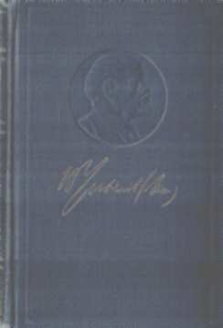

В.И. Ленин. ПОЛНОЕ СОБРАНИЕ СОЧИНЕНИЙ
СОДЕРЖАНИЕ тома 46
|  |
Пролетарии всех стран, соединяйтесь
ЛЕНИНПОЛНОЕ
|
ПЕЧАТАЕТСЯ
ПО ПОСТАНОВЛЕНИЮ
ЦЕНТРАЛЬНОГО КОМИТЕТА
КОММУНИСТИЧЕСКОЙ ПАРТИИ
СОВЕТСКОГО СОЮЗА
ИНСТИТУТ МАРКСИЗМА-ЛЕНИНИЗМА при ЦК КПСС
ИЗДАТЕЛЬСТВО
ПОЛИТИЧЕСКОЙ ЛИТЕРАТУРЫ
МОСКВА • 1975
ИНСТИТУТ МАРКСИЗМА-ЛЕНИНИЗМА при ЦК КПСС
Письма 1893 ~ 1904
ИЗДАТЕЛЬСТВО
ПОЛИТИЧЕСКОЙ ЛИТЕРАТУРЫ
МОСКВА • 1975
3K2
? 10102 - 081 ?
Л Подписное
079(02) - 75
VII
Сорок шестым томом Полного собрания сочинений В. И. Ленина открывается серия томов, включающих письма, телеграммы, записки с 1893 по 1923 год.
Эти документы составляют существенную и неотъемлемую часть ленинского литературного наследия. Они служат ценным дополнением к произведениям, вошедшим в предыдущие тома. В них отражается гигантская работа В. И. Ленина по созданию в России революционной марксистской партии - пролетарской партии нового типа, его руководство борьбой рабочего класса и всех трудящихся за победу демократической, а затем социалистической революции, за установление диктатуры пролетариата и построение нового общества. Письма дают яркое представление о теоретической и политической деятельности В. И. Ленина как учителя и вождя российского и международного пролетариата.
В настоящем издании Сочинений В. И. Ленина его переписка представлена наиболее полно. Если во 2-3 изданиях она составила два тома, в 4 издании - три тома, то в Полном собрании сочинений В. И. Ленина переписка составит десять томов. Следует иметь в виду, что объем переписки В. И. Ленина после победы Октябрьской революции очень велик: только опубликованных писем, записок, телеграмм, написанных Лениным с ноября 1917 по 1923 год, насчитывается несколько тысяч, и включить их все не представляется возможным.
Для части писем единственным сохранившимся источником является машинописный текст, машинописная
VIII
ПРЕДИСЛОВИЕ
или рукописная копия, телеграфный бланк, текст, написанный рукой других лиц. Поскольку по содержанию и стилю таких документов, а также по другим данным можно сделать вывод, что автором их является В. И. Ленин, они включаются в Сочинения В. И. Ленина.
Ленинские письма, записки, телеграммы, как и его произведения, расположены в настоящем издании в хронологическом порядке. В основу расположения их по томам положен принцип периодизации истории КПСС. Хронологические границы отдельных томов переписки обусловлены также объемом корреспонденции, сохранившейся за тот или иной период.
Первый том переписки - 46 том настоящего издания - содержит письма с 1893 по 1904 год.
В 47 том входят письма, написанные с 1905 по ноябрь 1910 года. 48 том включает письма с декабря 1910 до августа 1914 года.
В 49 том входят письма с августа 1914 до 24 октября (7 ноября) 1917 года. 50 и 51 тома содержат письма, написанные с ноября 1917 до ноября 1920 года.
В 52, 53 и 54 тома включены письма с ноября 1920 по март 1923 года. 55 том составляют письма В. И. Ленина к родным - Марии Александровне, Анне Ильиничне, Марии Ильиничне и Дмитрию Ильичу Ульяновым, мужу Анны Ильиничны - Марку Тимофеевичу Елизарову, жене, верному другу и соратнику, - Надежде Константиновне Крупской.
В приложениях к томам переписки помещены некоторые коллективные документы, подписанные В. И. Лениным вместе с другими лицами, а также материалы биографического характера, связанные с перепиской В. И. Ленина. Имеется очень большое количество директивных писем и телеграмм, относящихся к советскому периоду, которые подготовлялись в соответствующих народных комиссариатах или других ведомствах и затем подписывались В. И. Лениным. Такие документы, в отношении которых нет веских оснований
IX
ПРЕДИСЛОВИЕ
утверждать, что они были написаны, продиктованы или отредактированы В. И. Лениным, включаются в виде исключений - если они имеют важное значение или посвящены вопросам, которыми специально занимался В. И. Ленин; они также помещены в Приложениях.
В письмах, датированных В. И. Лениным, расположение и начертание дат сохраняются по рукописи. В тех случаях, когда в рукописи авторская дата отсутствует, она устанавливается исследовательским путем, - такая дата ставится в конце письма. Письма, отправленные В. И. Лениным из России (до введения нового стиля), обозначены старым стилем, а отправленные из-за границы - новым стилем. Сокращенно написанные В. И. Лениным названия газет, географические названия, отдельные слова, а также обращения в начале письма и приветствия в конце письма (например: «У. т.» - уважаемый товарищ, «дор. тов.» - дорогой товарищ, «с к. пр.» - с коммунистическим приветом) в тексте писем, записок и телеграмм расшифровываются.
Целый ряд писем В. И. Ленина, о которых имеются более или менее точные сведения, пока не удалось обнаружить. В каждом томе переписки дается список неразыскан-ных писем с указанием источников, в которых идет речь об этих письмах.
Научно-справочный аппарат томов переписки состоит из предисловия, примечаний, указателя литературных работ и источников, цитируемых и упоминаемых Д. И. Лениным, а также указателя имен. Поскольку в тома включается большое количество ранее не публиковавшихся писем и все их перечислять в предисловиях нецелесообразно, в содержании к заголовкам впервые публикуемых документов дается звездочка. Характерным для томов переписки является очень большое число примечаний и биографических справок о лицах, упоминаемых в томе; поэтому примечания и биографические справки, как правило, максимально кратки; некоторые примечания, поясняющие текст, даются под строкой.
В конце каждого тома помещен список писем, которые вошли в тома, включающие произведения В. И. Ленина соответствующего периода.
X
ПРЕДИСЛОВИЕ
* * *
В сорок шестой том Полного собрания сочинений В. И. Ленина входят письма 1893-1904 годов. Это был период назревания революционного кризиса в России и борьбы революционных марксистов под руководством В. И. Ленина за создание пролетарской партии нового типа.
Письма В. И. Ленина, включенные в том, хронологически соответствуют первым восьми и частично девятому томам Полного собрания сочинений. Они дополняют ленинские произведения, содержат идейные положения, которые получили развитие в ленинских трудах, дают яркое представление о революционной деятельности В. И. Ленина в петербургский период, а затем в условиях ссылки и во время первой эмиграции. Письма убедительно показывают, что В. И. Ленин самым тесным образом был связан с российским пролетариатом и многие его произведения обращены к массовому читателю. «Я ничего так не желал бы, ни о чем так много не мечтал, как о возможности писать для рабочих», - подчеркивал В. И. Ленин в письме П. Б. Аксельроду 16 августа 1897 года (настоящий том, стр. 12). Письма содержат богатый биографический материал. Наряду с важными деловыми вопросами В. И. Ленин никогда не забывал в письмах справиться о здоровье товарища и всегда старался прийти ему на помощь, передать привет близким и знакомым.
Из переписки В. И. Ленина за время с 1893 по 1896 год в томе публикуются шесть писем; из них три письма адресованы П. П. Маслову, два - П. Б. Аксельроду и одно - Л. Ф. Миловидовой. Том открывается письмами П. П. Маслову, которому В. И. Ленин посылал на просмотр одну из ранних своих работ - «Новые хозяйственные движения в крестьянской жизни». В них В. И. Ленин подчеркивает нелепость и вредность народнических воззрений на экономическое развитие России я высказывает мысль о том, что положения, изложенные в данной его статье, служат для него «основанием гораздо более важных и гораздо дальше идущих выводов, чем это сделано в самой статье» (стр. 1).
XI
ПРЕДИСЛОВИЕ
Письма П. Б. Аксельроду характеризуют революционную работу В. И. Ленина в Петербурге, его руководство рабочим движением в Москве, Орехово-Зуеве и других промышленных центрах.
Наиболее интенсивная переписка В. И. Ленина относится ко времени сибирской ссылки (1897-1899). Его письма тех лет были адресованы главным образом родным (большая часть их посылалась матери - Марии Александровне Ульяновой). Они входят в отдельный том настоящего издания. Из семи писем, вошедших в 46 том, четыре письма были направлены А. Н. Потресову, одно - П. Б. Аксельроду и два - СМ. Ар-канову. Эти письма показывают, как напряженно работал В. И. Ленин и в ссылке. В письмах А. Н. Потресову раскрывается содержание партийно-политических, научных и литературно-публицистических вопросов, которые интересовали В. И. Ленина в годы ссылки. Эти письма являются своеобразным дополнением к работам «От какого наследства мы отказываемся?», «Еще к вопросу о теории реализации», «Капитализм в сельском хозяйстве» и другим произведениям, написанным в это время. Например, в письме А. Н. Потресову от 26 января 1899 года В. И. Ленин называет Н. Г. Чернышевского как главного представителя идейного «наследства» революционных демократов 60-х годов, чего он не мог сделать по цензурным соображениям в своей работе «От какого наследства мы отказываемся?». В. И. Ленин решительно выступает в этих письмах против либеральных народников и «легальных марксистов», осуждает западноевропейский оппортунизм, который возглавил в 1896 году Э. Бернштейн, пытавшийся в своих ревизионистских статьях подменить марксизм либерально-реформистским учением.
В. И. Ленин резко критикует в письмах неокантианство, которое возрождало наиболее реакционные, идеалистические положения философии Канта, вело борьбу против марксизма, против диалектического и исторического материализма, причиняя большой вред рабочему движению. «С неокантианством, - указывал В. И. Ленин в письме А. Н. Потресову от 27 июня
XII
ПРЕДИСЛОВИЕ
1899 года, - действительно необходимо посчитаться серьезно» (стр. 30). В ссылке В. И. Ленин усиленно изучал главнейшие сочинения классиков философии, произведения неокантианцев, вел большую переписку по вопросам философии с Ф. В. Ленгником; эта переписка, к сожалению, пока не разыскана.
Основное содержание настоящего тома составляют письма В. И. Ленина, относящиеся к 1900-1904 годам. Они раскрывают всестороннюю деятельность В. PL Ленина по созданию в России действительно марксистской революционной партии, разработке ее программы, политических, организационных, тактических принципов. В письмах отражается борьба В. И. Ленина с оппортунизмом в рабочем движении, в рядах русских и заграничных социал-демократических организаций, показывается связь центра, каким являлась редакция «Искры», с организациями и отдельными социал-демократами, раскрывается борьба В. И. Ленина против оппортунистических шатаний внутри редакции «Искры». Письма характеризуют литературную работу В. И. Ленина.
Большая часть писем 1900-1903 годов (до II съезда РСДРП) адресована российским социал-демократическим организациям и отдельным социал-демократам в России и за границей, а также агентам и членам редакции «Искры». Письма обосновывают ленинский план построения партии; они посвящены собиранию революционных сил, организации общерусской политической газеты «Искра» и журнала «Заря», созыву II съезда РСДРП.
В июле 1900 года В. И. Ленин выехал за границу, чтобы практически наладить издание печатного органа. Местопребыванием «Искры» был избран Мюнхен, куда В. И. Ленин выехал 6 сентября 1900 года. Письма этого периода раскрывают трудности в организации и налаживании работы «Искры» и «Зари», характеризуют практические шаги В. И. Ленина по обеспечению изданий материальными средствами, литературным материалом, они касаются переговоров с представителями российских социал-демократических организаций о при-
ХIII
ПРЕДИСЛОВИЕ
сылке корреспонденции, установлении связей, явок, налаживании транспорта. Письма дают наглядное представление о том, как создавался каждый номер «Искры» и «Зари», о непосредственной редакторской работе В. И. Ленина, показывают, как много работал В. И. Ленин над своими статьями для «Искры», как редактировал статьи других авторов, как требователен он был к себе и к сотрудникам газеты. Они характеризуют последовательный и принципиальный подход В. И. Ленина к оценке статей, к подбору авторов.
Российская социал-демократия в это время переживала период разброда и шатаний. Оппортунистическая, ревизионистская группа «экономистов», поддерживавшая идеи бернштейнианства, выступила против создания самостоятельной политической партии пролетариата, призывала рабочих ограничиться экономической борьбой. Борьба В. И. Ленина и его сторонников против «экономистов», начатая в конце 90-х годов, с наибольшей остротой развернувшаяся в 1900-1902 годах на страницах «Искры», нашла отражение и в ленинских письмах того времени. «И нечего так особенно бояться борьбы: борьба вызовет, может быть, раздражение нескольких лиц, - писал В. И. Ленин А. А. Якубовой 26 октября 1900 года, - но зато она расчистит воздух, определит точно и прямо отношения, - определит, какие разногласия существенны и какие второстепенны, определит, где находятся люди, действительно идущие совсем другой дорогой, и где сотоварищи по партии, расходящиеся в частностях» (стр. 55). Значительное внимание в письмах В. И. Ленин уделяет книге «Что делать?», завершившей идейный разгром «экономизма».
В ряде писем, адресованных Г. В. Плеханову и П. Б. Аксельроду, отражена принципиальная борьба В. И. Ленина по вопросам программы, которая затем была принята на II съезде партии.
Письма существенно дополняют произведения «Гонители земства и Аннибалы либерализма», «Аграрный вопрос и «критики Маркса»», «Аграрная программа русской социал-демократии», «К деревенской бедноте», над которыми в это время работал В. И. Ленин.
XIV
ПРЕДИСЛОВИЕ
После II съезда РСДРП обстановка в партии осложнилась. Потерпев поражение на съезде, меньшевики развернули наступление на партийные центры. В ноябре 1903 года меньшевики захватили ЦО, в чем им помог Г. В. Плеханов. В руках меньшевиков оказался также Совет партии. Развернулась упорная борьба за ЦК. Меньшинство дискредитировало ЦК, вело против него травлю печатно и устно. Меньшевики взяли курс на раскол.
В том включены сто одиннадцать писем В. И. Ленина, относящихся к сентябрю 1903-1904 годов; в них дается характеристика обстановки, сложившейся в партии после II съезда, раскрывается острая внутрипартийная борьба между большевиками и меньшевиками, выражается большая тревога за судьбу партии, за подлинно марксистское руководство революционным движением.
Письма В. И. Ленина этого периода адресованы главным образом в Россию - Центральному Комитету, местным партийным организациям и товарищам по партийной работе. В них В. И. Ленин настойчиво и терпеливо разъясняет членам партии и руководящим партийным деятелям насущные задачи и тактику по отношению к меньшевикам, подчеркивает значение книги «Шаг вперед, два шага назад», в которой дан подробный анализ всего хода борьбы на II съезде РСДРП и после него, ведет активную работу по созыву III съезда партии.
В письме Центральному Комитету РСДРП в феврале 1904 года (стр. 354-356), характеризуя положение дел в партии, В. И. Ленин призывает сторонников старой «Искры» к решительным действиям против раскольнического и дезорганизаторского поведения меньшевиков.
В. И. Ленин предъявляет большие требования к членам ЦК призывает мобилизовать все силы большинства, чтобы объездить Россию, сплотить людей, а не распылять деятельность на организацию менее значительных мероприятий, как транспорт, техника и т. д. В письме Г. М. Кржижановскому в мае 1904 года (стр. 360-361) В. И. Ленин отмечает, что масса членов партии пребывает в недоумении и растерянности, не умея освоиться с новым положением. «Нам обязательно надо понять данную ситуацию и выработать план выдержанной, но
XV
ПРЕДИСЛОВИЕ
непреклонной принципиальной борьбы во имя партийности против кружковщины, во имя революционных принципов организации против оппортунизма», - писал он тогда же Л. Б. Красину (стр. 359).
В. И. Ленин разоблачает в письмах примиренцев, которые пытались сгладить принципиальные разногласия между большевиками и меньшевиками, и резко критикует примиренческое настроение отдельных партийных работников на местах по отношению к меньшевикам.
Сломить упорное нежелание меньшинства подчиниться решениям II съезда партии, покончить с раскольнической деятельностью меньшевиков, по убеждению В. И. Ленина, мог только III съезд партии, которому предстояло сплотить партию на основе программы РСДРП. В письмах местным партийным организациям В. И. Ленин призывал большевиков развернуть работу за созыв III съезда, несмотря на упорное сопротивление меньшевиков. Из писем видно, что громадное большинство комитетов высказалось за созыв III партийного съезда.
Ряд писем В. И. Ленина посвящен организации русского Центра и заграничного органа большевиков - газеты «Вперед». «В этом органе теперь вся суть, без него мы идем к верной, бесславной смерти», - писал В. И. Ленин 3 декабря 1904 года А. А. Богданову, Р. С. Землячке и М. М. Литвинову (стр. 414).
В письме Кавказскому комитету РСДРП, датированном позднее 12 декабря 1904 года (стр. 424-425), Ленин сформулировал следующие основные задачи, которые требовали немедленного решения: образование Бюро Комитетов Большинства, которому надлежало передать все дела о съезде и все руководство комитетами; поддержка органа большевиков «Вперед»; опубликование резолюции и объявления о Бюро, организующем съезд. Письма В. И. Ленина свидетельствуют о его полной уверенности в том, что благодаря стараниям и усилиям большевиков дела в партии выправятся. 24 декабря 1904 года В. И. Ленин сообщал М. М. Эссен: «У нас теперь подъем духа и заняты все страшно: вчера вышло объявление об издании нашей газеты
XVI
ПРЕДИСЛОВИЕ
«Вперед». Все большинство ликует и ободрено, как никогда. Наконец-то порвали эту поганую склоку и заработаем дружно вместе с теми, кто хочет работать, а не скандалить!.. Комитеты большинства объединяются, выбрали уже бюро, и теперь орган объединит их вполне. Ура! Не падайте духом, теперь мы все оживаем и оживем» (стр. 429). К началу революции 1905 года большевики действительно создали газету «Вперед», подготовившую созыв III съезда партии.
В томе публикуются 128 писем, которые ранее в Сочинения не включались, в том числе 21 письмо печатается впервые. Эти письма относятся главным образом к 1900- 1904 годам. Значительная часть их адресована Г. В. Плеханову, П. Б. Аксельроду, Л. И. Аксельрод, В. Д. Бонч-Бруевичу и другим лицам, а также отдельным социал-демократическим организациям. Они существенным образом расширяют и конкретизируют характеристику партийной и литературной деятельности В. И. Ленина, его принципиальности и настойчивости в разрешении поставленных задач.
Большой интерес представляют письма, которые публикуются впервые. Они адресованы Тверскому и Кавказскому комитетам РСДРП, редакции «Искры» и отдельным социал-демократам в России и за границей (П. П. Маслову, Г. Д. Лейтейзену, П. Б. Аксельроду, И. С. Виленскому, И. П. Гольденбергу, Р. С. Землячке, А. Я. Исаенко, М. Н. Лядову и др.).
В приложениях к тому публикуются «Открытое письмо членам Заграничной лиги русской революционной социал-демократии», в составлении которого принимал участие В. И. Ленин, и материалы биографического характера - «Протоколы допросов В. И. Ульянова (Ленина) во время пребывания его в петербургской тюрьме 1895- 1896 гг.» и «Прошения В. И. Ульянова (Ленина) 1896-1900 гг.».
Институт марксизма-ленинизма при ЦК КПСС
1
1893 г .
Третьего дня получил Ваше письмо* и вчера же написал о высылке Вам статей о крестьянской реформе 1. Сообщите, у Вас ли статья о Постникове**. Если у Вас, пошлите ее поскорее Н. Е. с просьбой отправить ко мне тотчас по прочтении: мне она нужна.
Очень жалею, что Вы не застали меня в Самаре***: не думаете ли съездить в столицы на праздники? - тогда мы могли бы увидаться.
Я жду от Вас возможно подробного разбора и критики статьи о Постникове: Вы увидали, надеюсь, что изложенные в ней положения служат для меня основанием гораздо более важных и гораздо дальше идущих выводов, чем это сделано в самой статье.
Разложение наших мелких производителей (крестьян и кустарей) представляется мне основным и главным фактом, разъясняющим наш городской и крупный капитализм, разрушающим миф об особом укладе крестьянского хозяйства (это - такой же буржуазный уклад с тем лишь отличием, что он гораздо больше еще опутан феодальными путами) и заставляющим видеть в так называемых «рабочих» не небольшую кучку особо поставленных лиц, а только верхние слои той громадной массы крестьянства, которая сейчас уже живет более продажей своей
* Мой адрес Вы могли узнать через здешний совет присяжных поверенных.
** См. В. И. Ленин. «Новые хозяйственные движения в крестьянской жизни» (Сочинения, 5 изд., том 1, стр. 1-66). Ред.
*** и не познакомились там с моими приятелями.
2
В. И. ЛЕНИН
рабочей силы, чем собственным хозяйством. Именно потому я и ценю так высоко книгу Постникова, что она дает материал для точнейшего анализа этого положения, что она фактически доказывает нелепость ходячих представлений о нашей «общинной» дерев- не и показывает, что, по сущности, порядки наши не отличаются от западноевропейских.
Я обращался с этой статьей в «Русскую Мысль» 2, но она не пожелала поместить ее.
Подумываю о том, не удобно ли будет, дополнив и изменив несколько, издать брошюркой?
Очень интересно бы ознакомиться с Вашими взглядами на этот счет; думаю, что это вполне осуществимо перепиской.
Замечания мои на работы о реформе исходили из того основного положения, что эта реформа - продукт развития товарного хозяйства и что весь ее смысл и значение состояли в том, что разрушены были те путы, которые сдерживали и стесняли развитие этого строя. Мы поподробнее побеседуем еще об этом: может быть, удастся прямо переправить Вам посланные мною к автору замечания; это было бы всего проще и всего удобнее.
Отвечайте поскорее, даже немедленно, иначе письмо рискует не застать меня здесь.
|
Написано во второй половине
декабря 1893 г. Послано из Петербурга в Самару Впервые напечатано в 1940 г.
| Печатается по рукописи |
3
1894 г .
V
30 94. Третьего дня получил Ваше письмо. Я действительно совсем почти забыл и о переписке нашей и о реферате, но, конечно, очень рад возобновить переписку по поводу возбуждаемых им и других вопросов.
Удивляюсь одному - зачем Вам было меня «искать»? Разве по возвращении из СПБ. в Тифлис Н. М. А.* не видал Вас? и не передал Вам (о чем я его просил), что у меня есть постоянный - на зиму, по крайней мере - адрес, именно: в совет присяжных поверенных, помощнику присяжного поверенного N. N.
По поводу Ваших замечаний** скажу вот что. Во-1-х, что касается излишней осторожности выводов, то надо принять во внимание, что этот недостаток я безусловно согласен, что это действительно недостаток объясняется намерением моим печатать статью в либеральном журнале. Я даже имел наивность посылать ее в «Русскую Мысль», откуда получил, конечно, отказ: вполне понятно мне это стало, когда я прочи- тал в № 2 «Русской Мысли» статью о Постникове «нашего известного» либерального пошляка, г. В. В. Нужно же ведь иметь такое искусство, чтобы совершенно изуродовать прекрасный материал и замазать все факты фразерством!
На самом деле, я делаю из этих данных выводы большие. Именно - данные доказывают, по-моему, буржуазность экономических отношений в крестьянстве.
* О ком идет речь, не установлено. Ред.
** См. настоящий том, стр. 1. Ред.
4
В. И. ЛЕНИН
Они вскрывают наглядно антагонистические классы в среде этого «общинного» крестьянства и притом такие классы, которые только и свойственны капиталистической организации общественного хозяйства. Это - самый важный вывод, вполне распространимый на все остальное русское крестьянство. Другой вывод, что уже сейчас громадная масса (вероятно, не меньше, а больше 1/2) крестьянского хлеба поступает на рынок - и главной производительницей этого хлеба является верхняя группа современной деревни, крестьянская буржуазия*.
Затем, большую важность придаю я тому доказанному Постниковым по отношению ко всей России закону, что производительность труда в 2-21/2 раза выше в верхних группах крестьянства. Это в теоретическом отношении имеет громадную важность, вместе с выделением торговой площади хозяйства (пункт, настолько опасный для российских самобытников, что я вполне понимаю г-на В. В., заботливо обошедшего этот вопрос).
Перехожу к второму Вашему замечанию - о норме натурального хозяйства. При- знаюсь, я тут Вас не совсем понял.
Вопросу о «норме», по моему мнению, можно придавать значение только в следующем смысле: важно знать, как велико должно быть земледельческое хозяйство крестьянина (среднего), чтобы покрывать все его потребности (и производительные и личные) и избавлять от необходимости искать заработка на стороне.
Важно знать это потому, что все хозяйства нижестоящие прямо относятся к продающим рабочую силу, и размер хозяйства может с достаточной точностью указывать, как велико значение этого источника дохода. Хозяйства вышестоящие прямо относятся к мелкобуржуазным во всей чистоте.
Что касается до «натуральности» хозяйства, то я смотрю так: наибольшая натуральность всегда будет
* Гурвич напрасно поэтому говорит, что Россия будущего будет страной крестьянской буржуазии. Это уже настоящее.
Очень хорошая книга: Hourwich. «The Economics of the Russian Village». 1892. New York (Гурвич. «Экономическое положение русской деревни», 1892. Нью-Йорк. Ред.).
5
П. П. МАСЛОВУ. 30 МАЯ 1894 г.
в средней группе крестьянства, но и там никогда не обойтись без значительной доли товарного хозяйства (вероятно, около 40% всего бюджета должны быть в денежной форме). Хозяйства низшей и высшей группы всегда будут более товарными, так как 1-ое продает рабочую силу; 2-ое - избытки хлеба.
По этому плану и построен анализ групп в статье о Постникове.
Вы говорите о «норме натурального хозяйства» и «норме товарного хозяйства» отдельно. Если я Вас точно понял, то вторая норма и есть моя средняя норма 17-18 дес. посева по Постникову , в которой, конечно, важно отделить и сосчитать точно натуральную и денежную часть. Самостоятельной же «нормы натурального хозяйства» я не понимаю: современное наше крестьянское хозяйство не может быть чисто натуральным ни при какой величине.
Впрочем - тут надо подождать Ваших более подробных объяснений.
Насчет критики Н. К. Михайловского - думаю тоже, что редакция никакая не по- местит - не столько по цензурным условиям (ходят слухи об изгнании цензурой русского марксизма после кутерьмы, поднятой «Русским Богатством» 3) - сколько по не- согласию с Вами и трусости перед нахальной и зазнавшейся «шишкой». Имел в сем отношении некоторый опыт. Да я и не думаю, чтобы можно было и стоило отвечать ему в нашей печати. Ответ Ваш прочел бы с удовольствием.
Я пробуду здесь, наверное, до 12 июня, а может быть и дольше. Когда уеду, сообщу новый адрес. А пока можете писать (после 12-го) через М. Г. Г.: там будет ближе переслать.
|
Послано из Петербурга в Самару
Впервые напечатало в 1940 г.
| Печатается по рукописи |
6
В. И. ЛЕНИН
V
31 94
Сейчас получил Ваше второе письмо и спешу ответить: может быть, если поторопитесь, Ваш ответ еще застанет меня здесь (до 12. VI. наверное буду здесь).
Предложение Ваше мне очень нравится в принципе. Судить же в частности не могу, конечно, не зная статьи Вашей. Относительно своей статьи* я, собственно, не думал бы, чтобы она в таком виде (в виде простого реферата о книге В. Е. Постникова) заслуживала печати**. (Относительно цены издания - думаю, что не особенно большая вещь значительно дешевле встала бы.) Вообще, видимо, придется до осени*** отложить дело - потому что если бы Вы и успели прислать сюда статью, то ведь до издания же этого еще далеко. Нужно будет подробно и обстоятельно списаться. А еще бы лучше лично было повидаться****: если у Вас есть средства (и желание) на издание, охота писать и если мы солидарны, - тогда это можно и должно бы обставить дело по-*****
| Послано из Петербурга в Самару | Печатается впервые, по рукописи |
Получил «Жилищный»****** и засел. Дело в том, что Вы бросили сие дело неоконченным. Когда взяли читать «беловые» тетрадки, оказалась куча ошибок (и чертежи,
* См. «Новые хозяйственные движения в крестьянской жизни» (Сочинения, 5 изд., том 1, стр. 1-66). Ред.
** Об этом поговорим поподробнее.
*** Срок небольшой ведь это.
**** Так как переписка, как показывает опыт, спешит слишком медленно.
***** На этом рукопись обрывается. Ред.
****** Имеется в виду работа Ф. Энгельса «К жилищному вопросу». Ред.
7
Л. Ф. МИЛОВИДОВОЙ. 21 ИЮЛЯ 1894 г.
как я убедился, сильно путали). Наши общие знакомые отозвались, по прочтении, что работа совсем плоха. Пришлось поэтому, как она мне ни чертовски надоела, сесть за пересмотр. В результате, из беловых тетрадок получились черновые.
Не пришлете ли мне...* Энгельса, с послесловием 1894 года. Прислать можно так же. Адрес тот же примерно до 15 августа, а потом зимний.
Вы не выделили вполне в своем письме немцев от Немца. Отсутствие «теоретического интереса» у первых мне понятно (хотя прискорбно), но неужели можно это сказать и про второго? Ведь раз излагается известное понимание вопроса, нельзя же уклоняться от разбора. Мне, правда, довелось недавно видеть неспособность даже понять, что это за вопрос и в чем его важность, но не хочется верить, чтобы этого можно ждать и там.
|
Написано 21 июля 1894 г.
Послано из Нижнего Новгорода в Швейцарию Впервые напечатано в 1961 г.
|
Печатается по машинописной
копии (перлюстрация) |
* В машинописной копии пропуск. Ред.
8
1895 г .
Вы, вероятно, ругаете меня за опоздание. Были некоторые уважительные причины.
Буду рассказывать по порядку. Был прежде всего в Вильне*. Беседовал с публикой о сборнике 6. Большинство согласно с мыслью о необходимости такого издания и обещают поддержку и доставление материала. Их настроение вообще недоверчивое (я вспомнил Ваше выражение о пал.** провинциях): дескать, посмотрим, будет ли соответствовать тактике агитационной, тактике экономической борьбы. Я напирал больше всего на то, что это зависит от нас.
Далее. Был в Москве. Никого не видал, так как об «учителе жизни» ни слуху ни ду- ху. Цел ли он? Если знаете что о нем и имеете адрес, то напишите ему, чтобы он прислал нам адрес, иначе мы не можем найти там связей. Там были громадные погромы 7, но, кажется, остался кое-кто, и работа не прекращается. Мы имеем оттуда материал - описание нескольких стачек. Если Вы не получили, то напишите, и мы вышлем.
Потом был в Орехово-Зуеве. Чрезвычайно оригинальны эти места, часто встречаемые в центральном промышленном районе: чисто фабричный городок, с десятками тысяч жителей, только и живущий фабрикой. Фабричная администрация - единственное начальство. «Управляет» городом фабричная контора.
* Ключ тот же, которым мы пользовались 5.
** Слово «пал.» не расшифровано. Ред.
9
П. Б. АКСЕЛЬРОДУ. НОЯБРЬ 1895 г.
Раскол народа на рабочих и буржуа - самый резкий. Рабочие настроены поэтому довольно оппозиционно, но после бывшего там недавно погрома осталось так мало публики и вся на примете до того, что сношения очень трудны. Впрочем, литературу сумеем доставить.
Далее. Опоздание вызвано местным неблагополучием. Им же объясняется скудость посылаемого материала.
Мне не нравится адрес в Цюрихе. Не можете ли достать другой - не в Швейцарии, а в Германии. Это бы гораздо лучше и безопаснее.
Далее. Посылая нам ответ - книжку по технологии , адрес: Питер, Александровский чугунный завод, химическая лаборатория господину Лучинскому, - прибавьте, если будет место, другой материал: вышедшие брошюрки в Женеве, интересные вырезки из «Vorwarts» 8 и т. под. Напишите поподробнее о сборнике: какой материал есть уже, что предположено, когда выйдет 1-ый выпуск, чего именно недостает для 2-го.
Деньги, вероятно, пришлем, но позже. Отвечайте поскорее, чтобы мы знали о том, что сей способ годен.
Передайте поляку адрес для личной явки. Желательно поскорее, так как нуждаемся в транспорте. Адрес: город тот же, Технологический институт, студент Михаил Леонтьевич Закладный, спросить Иванова. - Деньги на издание по-русски его «Geschichte etc.»* обещаны**.
Далее. Такая просьба: нам крайне нужна краска - какая, можете узнать у Mogli, у которого она есть. Нельзя ли бы как-нибудь доставить? Оказии нет ли? Пожалуйста, подумайте об этом или поручите подумать Вашим «практикам». Кстати, Вы просили прямо к ним обращаться. Тогда сообщите: 1) знают ли они наш способ и ключ; 2) знают ли, от кого идут эти письма.
Сейчас посылается 1) сообщение о выселении духоборцев; 2) рассказ о сельских рабочих на юге и 3) описание фабрики Торнтона - из этого посылается пока только начало, около 1/4.
* - «Истории и т. д.». Ред.
** О ком и о каком издании идет речь, не установлено. Ред.
10
В. И. ЛЕНИН
Писать надо китайской тушью. Лучше, если прибавить маленький кристаллик хромпика (K2Cr2O7): тогда не смоется. Бумагу брать потоньше. Жму руку. Ваш...
Поклон товарищу.
|
Написано в начале ноября 1895 г.
Послано из Петербурга в Цюрих Впервые напечатано не полностью
| Печатается по рукописи |
Получили Бреславльский отчет 9. Расклеили с несказанными усилиями, причем большую часть изорвали (письмо благодаря хорошей бумаге получилось целым). Оче- видно, Вы еще не получили второго письма. Необходимо употреблять очень жидкий клейстер: не более чайной ложки крахмала (и притом картофельного, а не пшеничного, который слишком крепок) на стакан воды. Только для верхнего листа и цветной бумаги нужен обыкновенный (хороший) клейстер, а бумага держится хорошо, под влиянием пресса, и при самом жидком клейстере. Во всяком случае способ годен, и его следует практиковать.
Посылаю Вам конец Торнтона. У нас есть материал о стачке 1) у Торнтона, 2) у Ла- ферма, 3) об Иваново-Вознесенской стачке, 4) о Ярославской стачке (письмо рабочего, очень интересное), о Петербургской фабрике механического производства обуви 10. Не посылаю его, потому что не было еще времени для переписки и потому что не рассчитываю поспеть к 1-ому выпуску сборника. - У нас завязаны сношения с народовольческой типографией 11, выпустившей уже 3 вещи (не наши) и берущей одну нашу*.
Предполагаем издавать
* Присылайте нам, если есть, материал для рабочих брошюрок. Они напечатают с радостью.
11
П. Б. АКСЕЛЬРОДУ. НОЯБРЬ 1895 г.
газету 12, куда и пойдет материал. Окончательно выяснится это примерно через 11/2-2 месяца. Если Вы находите, что материал поспеет к 1-ому выпуску, - сообщите тотчас.
Ваш Ильин Легко ли справляетесь с нашими посылками? Надо сообща улучшать способ.
|
Написано в середине ноября 1895 г.
Послано из Петербурга в Цюрих Впервые напечатано в 1923 г.
| Печатается по рукописи |
12
1897 г .
Дорогой Павел Борисович! Я очень и очень рад, что мне удалось-таки получить от Вас письмо (получил вчера, т. е. 15-го августа) и вести о Вас и о Г. В. Ваши и его отзы- вы о моих литературных попытках* (для рабочих) меня чрезвычайно ободрили. Я ничего так не желал бы, ни о чем так много не мечтал, как о возможности писать для рабочих. Но как это сделать отсюда? Очень и очень трудно, но не невозможно, по-моему.
Как здоровье В. Ив.?
Способ я знаю лишь один, - тот, коим пишу эти строки 13. Вопрос в том, можно ли найти переписчика, на которого должен пасть нелегкий труд. Вы, видимо, считаете это невозможным и вообще этот способ неподходящим. А другого я не знаю... Как это ни жаль, но я не отчаиваюсь: если теперь не удастся, - может удаться впоследствии. Пока же хорошо бы и то, если бы Вы писали иногда хоть тем способом, который употребляе- те со «старым приятелем» Вашим**. Тогда можно будет нам не прерывать сношений, а это - самое главное.
Про меня Вам, конечно, рассказывали достаточно, так что добавлять нечего. Живу я здесь в одиночестве. Здоров вполне и занимаюсь понемногу и для журнала 14 и для своей большой работы***.
Группа руководящих деятелей петербургского «Союза борьбы за освобождение рабочего класса» во главе с В. И. Лениным. - Февраль 1897 г.
* См. «Объяснение закона о штрафах, взимаемых с рабочих на фабриках и заводах» (Сочинения, 5 изд., том 2, стр. 15-60). Ред.
** По-видимому, имеется в виду С. Г. Райчин. Ред.
*** В. И. Ленин в это время работал над книгой «Развитие капитализма в России» (см. Сочинения, 5 изд., том 3). Ред.
13
П. Б. АКСЕЛЬРОДУ. 16 АВГУСТА 1897 г.
Жму крепко Вашу руку. Сердечный привет В. Ив. и Г. В. Райчина не видал более месяца. Скоро надеюсь съездить в Минусинск повидать его.
Ваш В. У.
16. VIII.
|
Написано 16 августа 1897 г.
Послано из с. Шушенского в Цюрих Впервые напечатано в 1924 г.
|
Печатается по копии, написанной
рукой А. И. Ульяновой-Елизаровой |
14
1898 г .
10. V. 98.
Милостивый государь Семен Михеевич!
Спешу уведомить Вас, согласно данному обещанию, о результатах переговоров мо- их с тем лицом, которому Вы хотели дать одно поручение. Как я и ожидал, это лицо отказалось точно так же от него, и Вам придется, следовательно, обратиться к кому- либо другому.
Готовый к услугам
Владимир Ульянов
P. S. Я был бы очень рад, если бы Вы при своих посещениях села Шушенского заглядывали иногда к нам.
|
Послано из с. Шушенского
в с. Ермаковское Впервые напечатано в 1929 г.
| Печатается по рукописи |
2. IX. 98.
Получил вчера Ваше письмо от 11. VIII. со списком книг и бандероль - «Archiv» 15.
Статья «выдающегося политикоэконома» в высшей степени интересна и пре-
15
А. Н. ПОТРЕСОВУ. 2 СЕНТЯБРЯ 1898 г.
восходно составлена. Автор располагал, очевидно, богатейшим материалом, счастливо попавшим ему в руки. Вообще в области публицистики он оказывается едва ли даже не лучшим писателем, чем в чисто экономической сфере. «Archiv», вообще, интересный журнал, и я на будущий год непременно его выпишу, Хотел бы также выписать какое- нибудь периодическое английское издание, журнал или газету (еженедельную); не можете ли посоветовать, чтo бы выбрать. Я совершенно не знаком с тем, что имеется наи- более интересного в английской журналистике и доступного в России.
Насчет статьи Струве, в оценке которой мы не сходимся, приходится, конечно, сказать, что по ней одной нельзя судить точно о взглядах автора. Мне, например, показалось и кажется теперь, что он именно ставил себе «общие классификационные задачи» (уже одно заглавие указывает на это), а Вы находите, что «отнюдь не ставил»... Что
«нужно отвоевать наше кустарничество от так называемого народного производства», с этим я, разумеется, вполне и безусловно согласен, и мне думается, что эта задача стоит еще перед нашими «учениками» 16 неразрешенной. В статье Струве я и увидал план решения этой задачи.
Обратили ли Вы внимание в «Русском Богатстве» на статьи Н. Г. (в 2-х последних книжках) против «материализма и диалектической логики»? Преинтересны ведь - с отрицательной стороны. Я должен сознаться, что некомпетентен в поднятых автором вопросах, и меня крайне удивляет, почему это автор «Beitrage zur Geschichte des Materialismus»* не высказывался в русской литературе и не высказывается решительно против неокантианства, предоставляя Струве и Булгакову полемизировать о частных вопросах этой философии, как будто бы она уже вошла в состав воззрений русских учеников 17. Уж наверное для философских-то статей нашлось бы место не в одном из наших журналов, да и книга могла бы пройти свободно.
* Автор книги «Beitrage zur Geschichte des Materialismus» («Очерки по истории материализма») - Г. В. Плеханов. Ред.
16
В. И. ЛЕНИН
Полемика его с Бернштейном и Конрадом Шмидтом меня интересует в высшей степени, и я крайне жалею, что никак не могу достать «Времени» 18. Был бы Вам зело благо- дарен, если бы Вы смогли помочь мне в этом. Разумеется, вполне достаточно бы получить газетку эту и на небольшой срок. Нет ли у Вас того номера «Нового Времени», где была (несколько лет тому назад) статья того же автора о Гегеле (30-летняя годовщина смерти - что-то в этом роде)? 19 «Новое Время» не получается ни мной, и никем из товарищей здешних, хотя из Питера обещали посылать! Черт бы побрал всех этих обещающих и сулящих зря!
Интересна еще в «Русском Богатстве» (за июль) статейка Ратнера о «Капитале». Меня всего сильнее возмущают подобные любители золотой середины, которые не решаются прямо выступить против несимпатичных им доктрин, виляют, вносят «поправки», обходят основные пункты (как учение о классовой борьбе) и ходят кругом да около частностей.
Статьи другого автора в «Новом Времени» об общественных течениях в России то- же, видимо, чрезвычайно интересны 20: Вы меня совсем раздразнили упоминанием о них. «И видит око, да...» Если я верно Вас понял, то этот автор высказывает мысли, изложенные уже им в другом месте (об опасности einer politischen Isolierung des russischen Proletariats*). Мне кажется, что «отчужденность от общества» отнюдь еще не означает непременно этого «изолирования»**, ибо есть общество и общество: воюя с народничеством и всеми его отпрысками, ученики тем самым сближаются с теми из gauches***, которые склонны решительно порвать с народничеством и последовательно держаться своих взглядов. От таких людей вряд ли бы ученики стали безусловно сторониться.
Скорее напротив. «Примирительное» (или, лучше, альянсистское) отношение к та-
* - политического изолирования русского пролетариата. Ред.
** А что этого «изолирования» отнюдь нельзя допускать, в этом, по-моему, автор вполне и 1000 раз прав, особенно против узких сторонников «экономики».
*** - левых. Ред.
17
А. Н. ПОТРЕСОВУ. 2 СЕНТЯБРЯ 1898 г.
ким людям вполне совместимо, по-моему, с войной против народничества и всех его проявлений.
Пишите. Жму руку. В. Ульянов
Н-да-с, Вы уж воюете, так даже вчуже страшно: с палками и проч.! К счастью, Восточная Сибирь, кажется, немного отстала от Вятской губернии в воинственности 21.
|
Послано из с. Шушенского
в Орлов Вятской губернии Впервые напечатано в 1925 г.
| Печатается по рукописи |
18
1899 г .
26. I. 99.
Получил Ваше письмо от 24. XII. Очень рад за Вас, что Вы, наконец, развязались с своей болезнью. Об ней дошли уже слухи и до нас: я слышал еще на праздниках, буду- чи в Минусинске, и все раздумывал, где бы и как навести справки. (Вам прямо писать считал неудобным, ибо говорили, что болезнь серьезная.) Ну, теперь Вы как раз вовремя воскресли, когда воскресает также и одно литературное предприятие. Конечно, знаете уже о «Начале», имеющем начаться с половины февраля 22. Надеюсь, что Вы уже теперь вполне поправились, - уже месяц прошел с тех пор, как Вы писали последнее письмо, - и что Вам можно будет работать. Ведь по книжной части Вы, вероятно, не- дурно обеспечены: выписываете главные новинки? Если не очень стесняться в средствах для выписки книг, то можно, я думаю, и в глуши работать, - я сужу, по крайней мере, по себе, сравнивая свою жизнь в Самаре лет 7 тому назад, когда я читал почти исключительно чужие книги, и теперь, когда я начал заводить привычку выписывать книги.
Насчет «Наследства» я должен был согласиться с Вашим мнением, что считать его за нечто единое - плохая традиция плохих (80-х) годов. Действительно, мне, пожалуй, за историко-литературные темы браться бы не следовало... Мое оправдание - только то, что ведь принимать наследство от Скалдина именно я нигде не предлагаю. Что принимать наследство надо от других людей, - это бесспорно. Мне сдается, что
19
А. Н. ПОТРЕСОВУ. 26 ЯНВАРЯ 1899 г.
защитой (от возможных нападений противников) для меня будет примечание на стр. 237, где я имел в виду именно Чернышевского и мотивировал причины неудобства взять его для параллели*. Там же признано, что Скалдин - liberalkonservativ**, что он
«не типичен» для 60-х годов, что «типичных» писателей взять «неудобно», - у меня не было статей Чернышевского и нет, да и не переизданы еще главные из них, да и я вряд ли бы сумел обойти при этом подводные камни. Затем еще защищаться бы стал тем, что ведь я дал точное определение того, чтo я разумею под «наследством», о котором веду речь. Конечно, если статья производит все-таки такое впечатление, что автор предлагает принимать наследство именно от Скалдина, то этого недостатка ничем не исправишь. Забыл еще едва ли не главную свою «защиту»: если Скалдин - «раритет», то буржуазный либерализм, более или менее последовательный и чистый от народничества, - не раритет, а очень широкая струя 60-х и 70-х годов. Вы возражаете: «От совпадения до преемственности дистанция огромного размера». Но ведь суть-то статьи в том, что-де необходимо очистить буржуазный либерализм от народничества. Если это верно и если это осуществимо (особенно важное условие!), тогда результатом очистки, остатком после очистки будет именно буржуазный либерализм, не только совпадающий со скалдинским, но и преемственный по отношению к нему. Так что, ежели меня будут изобличать, что от Скалдина я принимаю наследство, то я вправе буду ответить, что я обязуюсь лишь очищать его от примесей, а сам-то я в стороне стою и, кроме чистки разных авгиевых дворов, у меня еще более приятные и более положительные занятия есть... Ну, я, кажется, уже увлекся и вообразил себя и вправду «защищающимся»!
Переписка наша так долго была в застое, что я забыл уже, признаться, когда именно писал я Вам последний раз насчет статей «Die historische Berechti-
* См. «От какого наследства мы отказываемся?» (Сочинения, 5 изд., том 2, стр. 505-550; примечание см. на стр. 520). Ред.
** - умеренный консерватор. Ред.
20
В. И. ЛЕНИН
gung»*. Кажется, писал я до того, как получил их?** Теперь я ознакомился с ними и на- шел, что основная мысль автора вполне заслуживает принятия (особенно в конце на- счет двух крайностей или подводных камней, которых нужно избегать). В мотивировке же действительно следовало бы порезче выставить Klassencharakter того Bewegung***, о котором говорит автор (он сказал это, но только мимоходом и очень кратко), а затем не так благоволить к фрондерствующим аграриям: в их либерализме больше именно фрондерства и «обиды» за einundsechzig****, чем желания «быстрейшего индустриализирования» страны. Стоит вспомнить их отношение к отхожим промыслам, к переселениям и проч. Автору следовало бы точнее формулировать задачу: высвободить все и всяческие fortschrittliche Stromungen***** из-под хлама народничества и аграриерства и в таком, очищенном, виде утилизировать все их. По-моему, «утилизировать» - гораздо более точное и подходящее слово, чем Unterstutzung und Bundesgenossenschaft******. Последнее указывает на равноправность этих Bundesgenossen*******, а между тем они должны (в этом я с Вами вполне согласен) в хвосте идти, иногда даже «со скрежетом зубовным»; до равноправности они абсолютно не доросли и никогда им не дорасти, при их трусости, раздробленности и т. д. Unterstutzung же будет далеко не от одной Intelligenz und fortschrittliche Grundbesitzer, но и от многих других, и семитов и fortschrittliche Kaufleute und Industrielle******** (автор совсем напрасно их обошел: еще вопрос, меньший ли % они составляют в своей среде, чем в среде Grundbesitzer'ов*********) и те Bauern**********, которые
* - «Историческое оправдание». Ред.
** См. настоящий том, стр. 16. Ред.
*** - классовый характер того движения. Ред.
**** - шестьдесят первый (1861 г.). Ред.
***** - прогрессивные течения. Ред.
****** - поддержка и союз. Ред.
******* - союзников. Ред.
******** - Поддержка же будет далеко не от одной интеллигенции и прогрессивных землевладельцев, но и от многих других, и семитов, и прогрессивных торговцев, и промышленников. Ред.
********* - землевладельцев. Ред.
********** - крестьяне. Ред.
21
А. Н. ПОТРЕСОВУ. 26 ЯНВАРЯ 1899 г.
склонны представлять Urteil, а не Vorurteil, Zukunft, а не Vergangenheit* своего класса, и многие и многие другие. Автор в двух отношениях перегнул палку в другую сторону: во-1-х, воюя против экономистов, он оставил в стороне praktische, ближайшие Forderungen, важные и для industriellen Arbeiter, и для Hausindustrielle, и для Landarbeiter** и пр. Во-2-х, он воевал против абстрактного, пренебрежительного отношения к gemassigten fortschrittlichen*** элементам (это справедливо, что вовсе ими пре- небрегать отнюдь не доводится, что их надо утилизировать) и как бы затушевал этим самостоятельное и более решительное положение, занимаемое представляемым им Bewegung'ом. В историко-философском смысле бесспорно то положение, которое выставляет он (и раньше еще выставил Inorodzew в «Soziale Praxis» 23), что среди тепереш- него состава наших Genossen**** не мало verkleideten Liberalen*****. До известной степе- ни можно ведь сказать это и про Deutschland versus England******. Это наше, так сказать, счастье; это позволяет рассчитывать на более легкое и быстрое начало; это заставляет именно утилизировать всех этих verkleideten. А формулировка автора способна, пожалуй, вызвать некоторое перетолкование (один старовер мне говорил: да ведь это принижение и обезличение...), с одной стороны, и некоторое чувство недоверия и смущения в среде Genossen. В этом отношении и Inorodzew, по-моему, неудачно формулировал.
Но по сути дела, думается мне, разногласий с автором нет.
Насчет Parvus'а - я не имею ни малейшего представления об его личном характере и отнюдь не отрицаю в нем крупного таланта. К сожалению, очень мало читал я его произведений.
* - рассудок, а не предрассудок, будущее, а не прошлое. Ред.
** - практические, ближайшие требования, важные и для промышленных рабочих, и для кустарей, и для сельскохозяйственных рабочих. Ред.
*** - умеренно-прогрессивным. Ред.
**** - товарищей. Ред.
***** - переодетых либералов. Ред.
****** - Германию сравнительно с Англией. Ред.
22
В. И. ЛЕНИН
Надеетесь ли достать «Die Agrarfrage» Каутского, вышедшее недавно?
Относительно Верта, Евг. Соловьева и М. Филиппова я должен сказать, что первого совсем не знаю, а вторых читал очень мало. Что «выветривание» есть и будет, - в этом я ни капельки не сомневаюсь. Поэтому-то особенно необходима и не только verkleidete Literatur*...
Жму руку. В. У.
|
Послано из с. Шушенского
в Орлов Вятской губернии Впервые напечатано в 1925 г.
| Печатается по рукописи |
27. IV. 99.
Очень рад я был, А. Н., Вашему письму от 27. III., прервавшему наконец Ваше долгое и упорное молчание. Вопросов для разговора действительно накопилось масса, а поговорить поподробнее, на темы литературного преимущественно свойства, здесь не удается. А теперь еще журнал**: без разговоров с коллегами чувствуешь себя слишком оторванным для писания. Здесь же один Юлий принимает все это вполне близко и активно к сердцу, но с ним проклятые «большие расстояния» мешают беседовать доста- точно подробно.
Начну с того, чтo меня теперь наиболее интересует и волнует, - со статей Булгакова в 1-2 и 3 книжках «Начала». Прочитав Ваш отзыв о нем, я несказанно обрадовался, что встретил сочувствие в самом существенном, - тем более обрадовался, что со стороны редакции, видимо, не очень-то доводится рассчитывать на сочувствие... Если на Вас статья Булгакова произвела «отталкивающее» впечатление и «жалкое», то меня она привела прямо-таки в исступление. До сих пор, сколько я ни читал и перечитывал Булгакова, я реши-
* - переодетая литература. Ред.
** Имеется в виду журнал «Начало». Ред.
23
А. Н. ПОТРЕСОВУ. 27 АПРЕЛЯ 1899 г.
тельно не могу понять, как мог он написать такую сплошь вздорную и до невозможности неприличную по тону статью и как редакция сочла возможным не оградить себя хоть единым замечанием от солидарности с таким «разносом» Каутского. Я так же, как и Вы, «уверен, что публика совершенно (именно!) сбита с толку и недоумевает». Да и как же ей не недоумевать в самом деле, когда ей объявляют - от лица «современной науки» (№ 3, стр. 34), что у Каутского все неверно, произвольно, социальное чудо,
«одинаково мало настоящей агрономии и настоящей экономии» (№ 1-2) и проч., при- чем Каутский не излагается, а прямо извращается, а собственных воззрений Булгакова, как сколько-нибудь связной системы, совершенно не видно. Будь у человека сколько- нибудь чувство партийности, сознание ответственности перед всеми Genossen* и перед всей их программой и практической деятельностью, - он бы не решился так наезднически «наскакивать» (по верному Вашему выражению), ничего сам не давая, а лишь обещая... ученый труд об «Остэльбии»!! Он чувствует себя, очевидно, свободным от всяких товарищеских обязанностей и ответственности, «свободным» и индивидуальным представителем профессорской науки. Я не забываю, конечно, что при российских условиях нельзя требовать от журнала допущения одних Genossen и исключения остальных, - но ведь такой журнал, как «Начало», все же не альманах, допускающий марксизм собственно из моды (à la «Мир Божий» 24, «Научное Обозрение» 25 и проч.), а орган направления. Поэтому для такого журнала обязательно бы налагать некоторую узду на ученых наездников и на всех «посторонних» вообще. Только тем и объясняется громадный успех «Нового Слова», что редакция вела его именно как орган направления, а не как альманах.
Я прочитал книгу Каутского еще до появления статьи Булгакова и не нашел у последнего ни одного сколько-нибудь осмысленного возражения против Каутского, а извращений мыслей и тезисов Каутского - массу.
* - товарищами. Ред.
24
В. И. ЛЕНИН
Например, что за вздор утверждения Булгакова, будто Каутский смешивает технику и экономику, будто он доказывает «гибель земледелия» (№ 3, стр. 31. Каутский прямо говорит обратное: S. 289), будто он отрицает за земледелием тенденцию развития (№ 3, стр. 34) и т. п.! Я уже написал и недели 2 тому назад отправил в редакцию первую ста- тью «Капитализм в сельском хозяйстве (О книге Каутского и о статье г. Булгакова)» и теперь берусь за вторую по поводу окончания статьи Булгакова*, Сильно побаиваюсь, что П. Б. отвергнет ее, ссылаясь либо на большой объем (она выходит больше статьи Булгакова, потому что мне надо, во-1-х, мотивированно опровергать такие голословные и небрежно брошенные вердикты, как, например, заявление, что Маркс ошибался, уча об уменьшении отношения c v в земледелии; во-2-х, потому что необходимо излагать Каутского), либо на нежелательность полемики (я, конечно, не употребил в статье ни одного ругательного выражения вроде тех, какие есть выше, и вообще постарался о том, чтобы личного против Булгакова ничего не было. Вообще тон нисколько не резче, чем в статье моей против Туган-Барановского о теории рынков**). Очень рад бы был слышать Ваше мнение, когда Вы прочтете книгу Каутского и дочитаете Булгакова: что именно находите Вы у Булгакова «верным»? и полагаете ли Вы, чтобы возможно было оставить статью Булгакова в журнале без ответа?
Вообще вся эта «новая критическая струя» в марксизме, которой увлекаются Струве и Булгаков (П. Б. наверное за Булгакова), мне кажется крайне подозрительной: громкие фразы о «критике» против «догмы» и проч. - и ровно никаких положительных результатов критики. Впрочем, для составления статьи à la булгаковская требовалась кроме
«критицизма» и симпатий к профессорской «современной науке» еще бестактность до nec plus ultra***.
* См. Сочинения, 5 изд., том 4, стр. 95-152. Ред.
** См. там же, стр. 44-54. Ред.
*** - самой крайней степени. Ред.
25
А. Н. ПОТРЕСОВУ. 27 АПРЕЛЯ 1899 г.
На статью Струве о рынках я послал ему ответ*. Сестра** пишет мне, что ответ этот будет помещен в «Научном Обозрении» и что там же и П. Б. собирается отвечать. Я не могу согласиться с Вами, что «центр тяжести вопроса заключается в конкретной невозможности абстрактно мыслимого положения», и главное мое возражение П. Б-чу со- стоит именно в том, что он смешивает абстрактно-теоретические и конкретно- исторические вопросы. «Конкретно невозможна» не только представленная Марксом реализация, но и представленная им поземельная рента, и представленная им средняя прибыль, и равенство заработной платы стоимости рабочей силы, и многое другое. Но невозможность осуществления в чистом виде вовсе не есть возражение. Противоречия между своими утверждениями в «Этюдах» 26 и в «Научном Обозрении» я никак не могу усмотреть, а равно и «буржуазного апологетизма», которым так напугал читателей Струве. Что особенно мне не понравилось в его статье, это неуместное припутывание критической философии и замечания вроде того, что Марксово учение о стоимости и прибыли «бесспорно страдает противоречивостью». Ведь П. Б. прекрасно знает, что это спорно, - к чему же сеять туман в голове публики, не получающей пока ни от одного из представителей «новой критической струи» систематического доказательства этой противоречивости и исправления ее?
А выходка Булгакова (№ 3, стр. 34, примечание) против теории Zusammenbruch'а***!! - без всякого упоминания о Бернштейне и с безапелляционностью «ученого» декрета!
О выходе новой книги Бернштейна я знаю, и выписал ее, но вряд ли вышлют. Из статьи о ней в «Frankfurter Zeitung» 27 и в «Жизни» 28 (недурной журнал! Беллетристика прямо хороша и даже лучше всех!) я вполне убедился в том, что я понимал отрывочные статьи Бернштейна неверно и что он заврался действительно до невозможности, до того, что
* См. «Еще к вопросу о теории реализации» (Сочинения, 5 изд., том 4, стр. 67-87). Ред.
** Имеется в виду А. И. Ульянова-Елизарова. Ред.
*** - краха, крушения (капитализма). Ред.
26
В. И. ЛЕНИН
его приходится именно begraben*, как выразился автор «Beitrage zur Geschichte des Materialismus»** в открытом письме к Каутскому. Новые для меня возражения Бернштейна против материалистического понимания истории*** и проч. (по «Жизни») по- ражают своей слабостью. Если П. Б. такой горячий защитник Бернштейна, что чуть не
«ругается» из-за него, то это очень и очень печально, ибо его «теория» против Zusammenbruch' а - непомерно узкая для Западной Европы - и вовсе негодна и опасна для России. Знаете ли Вы, что ее уже утилизируют наши «молодые» (ультраэкономисты), которые в одном издании так изложили штутгартские прения, что у них Бернштейн, Пеус и др. явились защитниками «экономики, а не политики»? Что думает П. Б. о подобных «союзниках»? Если под успехами ультраэкономистов Вы разумеете выход Волгина и его ближайших товарищей, то я знаю об нем 30; меня это крайне тяжело поразило, и я теперь недоумеваю, как там обстоит дело, и чем чревато будущее. Страшно вредно, по-моему, что этот спор с ультраэкономистами не попал вполне и целиком в печать: это было бы единственное серьезное средство для выяснения дела и установления известных точных принципиальных положений. А то теперь хаос полный!
Книжка моя вышла****, и я просил послать ее Вам (сам еще не получал). Слышал, что P. S. в предисловии опоздал, попал в предварительную цензуру и «пострадал», кажется. Буду ждать с интересом Ваших замечаний.
Карелина книжку выписал и прочел раньше, чем получил от Вас. Понравилась мне она очень; чертовски досадно, что ее обкорнали! Не напишете ли об ней рецензии?
* - похоронить, угробить. Ред.
** - «Очерков по истории материализма». Ред.
*** Кстати. Помните, как один наш общий знакомый 29 в «прекрасном далеке» зло высмеивал и разносил в пух и прах меня за то, что я назвал материалистическое понимание истории - «методом»? А вот, оказывается, и Каутский повинен в столь же тяжком грехе, употребляя то же слово: «метод» («Жизнь», январь, II, стр. 53). Имеете ли вести об этом знакомом? Лучше ли его здоровье? Есть ли надежда, что он будет писать?
**** См. «Развитие капитализма в России» (Сочинения, 5 изд., том 3). Ред.
27
А. Н. ПОТРЕСОВУ. 27 АПРЕЛЯ 1899 г.
Один знакомый прислал мне и «Журнальные заметки» А. П. (о «наследстве» и «наследниках»). Интересно: в продолжении предполагалась ли дальнейшая полемика со мной или нет? Статья А. П. мне чрезвычайно понравилась; от вырезки ее номер сильно потерял. Разногласия между нами я, признаться, не вижу: Вы берете иной вопрос - не о том, как относятся ученики к русскому демократизму вообще, отказываются ли они от него (я исключительно об этом писал*), а о том, каковы были отношения между разного вида демократами в доброе старое время. Я интересовался только той ошибкой Михайловского, будто мы отказываемся от демократизма вообще, - а Вы берете - другую его ошибку, «смазывание» существенно важных различий в «наследстве». Ви- дел примечание Маслова в № 3 «Научного Обозрения», направленное против меня, но оно меня, признаться, не заинтересовало. Да, кстати: вырезка статьи А. П. подтвердила мое мнение, что брать наследодателя более яркого, чем Скалдин, «неудобно» (печальное подтверждение!!). Вообще же, по-моему, тон журнала - «предсмертный». Ежели так, то конец и смерть лишь вопрос времени. Ведь это просто спекуляция на Ratlosigkeit** и волоките в том ведомстве, которое и т. д. Можно бы и попридержать язык за зубами без вреда и не без пользы для дела. Право, сравнительно с современным тоном наши «Материалы» 31 могли бы быть образцом «умеренности» и «солидности»...
Жму руку. В. У.
Пишите почаще, коли не лень, а то мне совсем не от кого узнавать журнальные новости.
Посылаю заказной бандеролью «Historische Berechtigung»***. Не думайте, пожалуйста, что я неаккуратен в возвращении книг: Вы ведь не писали о сроке, и я не отказывал поэтому товарищам в просьбе дать на прочтение. Очень благодарен буду за конец Ка- релина.
* См. «От какого наследства мы отказываемся?» (Сочинения, 5 изд., том 2, стр. 505-550). Ред.
** - беспомощности. Ред.
*** - «Историческое оправдание». Ред.
28
В. И. ЛЕНИН
Не имеете ли каких немецких отзывов о Каутском? Я читал только в «Frankfurter Zeitung» - сердито и пусто à la Булгаков.
Книжки журнала*, в общем и целом, мне очень нравятся. Редактируются они прекрасно. Читали ли книгу Гвоздева и что думаете об ней?
|
Послано из с. Шушенского
в Орлов Вятской губернии Впервые напечатано в 1925 г.
| Печатается по рукописи |
27. VI. 99.
Получил в прошлую пятницу, 18-го, Ваше письмо от 2. VI., но ни Mehring'а, ни Ка- релина, о которых Вы пишете, что посылаете, не получил. Поджидал сначала, думая, что вышла задержка на почте, а теперь надо думать, что посылка или затеряна или Вы отложили отправку. Если верно первое, то подайте немедля заявление.
Ваш отзыв о моей книге** очень меня обрадовал. Думается все-таки, что насчет перевода ее вряд ли Вы не преувеличили: сомнительно, чтобы немцы стали читать вещь, переполненную чисто местными, так сказать, и мелкими фактами. Правда, Н. -она вот перевели 32 (но у него была уже очень большая репутация и рекомендация, вероятно, Энгельса, хотя последний и собирался разнести ее, по словам мониста). Встречали ли Вы отзывы об ней в немецкой литературе? Если я не ошибаюсь, его и на французский перевели. Меня несколько удивили Ваши слова, что Вам «наконец удалось добыть» мою книгу... Разве Вы не получили ее из Москвы или Питера? Я просил отправить ее Вам, как и всем остальным своим знакомым, и они все получили ее. Если Вы не получили, сообщите, и я напишу еще в Москву. В печати до сих пор не видел отзывов о ней, да раньше осени и не жду встретить, -
* «Die Neue Zeit». Ред.
** См. «Развитие капитализма в России» (Сочинения, 5 изд., том 3). Ред.
29
А. Н. ПОТРЕСОВУ. 27 ИЮНЯ 1899 г.
впрочем, из газет я читаю только «Русские Ведомости», продолжающие «с тактом молчать»...
Статью Булгакова в «Archiv'е» прочитал. Писать ответ ему еще и для немецкой публики я не думаю: во-1-х, по-немецки мне не написать; во-2-х, - и это главное, ибо переводчика с русского найти бы, может быть, и удалось, - для немецкой публики со- всем не годится статья в том духе, как я написал для русской, т. е. с подробным изложением книги Каутского. На специальные указания Булгакова (по данным германской статистики) я не могу ответить, ибо не имею материалов. Об общей точке зрения его (кантианской и... бернштейновской, если можно так выразиться) тоже не возьмусь писать для немцев. Думаю, что внести поправку в представление немцев о русских учениках действительно надо, но для этого (если бы никто не взялся написать особой статейки) достаточно бы простой заметки о моей статье против Булгакова, когда эта статья напечатается в русском журнале*. Вот если она вовсе не напечатается... за смертью
«Начала» и за отказом «Жизни» или цензуры... тогда дело примет существенно иной вид.
Насчет «сногсшибательных открытий» русских учеников и их неокантианства я прихожу все в большее и большее возмущение. Прочел статью Туган-Барановского в № 5 «Научного Обозрения»... Черт знает что за глупый и претенциозный вздор! Без всякого исторического изучения доктрины Маркса, без всяких новых исследований, на основании ошибок в схемах (произвольное изменение нормы прибавочной стоимости), на основании возведения в общее правило исключительнейшего случая (повышение производительности труда без уменьшения стоимости продукта: абсурд, если только взять это как общее явление), на основании этого заявлять о «новой теории», об ошибке Маркса, о перестройке... Нет, не могу я поверить Вашему сообщению, что Туган- Барановский становится все более
* См. «Капитализм в сельском хозяйстве» (Сочинения, 5 изд., том 4, стр. 95-152). Ред.
30
В. И. ЛЕНИН
Genosse*. Прав был Михайловский, назвав его «человеком эховым»: его статейка в
«Мире Божьем» («по Бельтову», помните? в 95 году) и эта статья подтверждают такой суровый отзыв пристрастного критика. Подтверждает и то, что я слышал насчет его личных качеств от Вас и от Нади. Конечно, всего этого мало для окончательного вывода, и я очень могу ошибаться. Интересно будет знать Ваше мнение о его статье.
Да, еще эта идея различения «социологических» и «экономических» категорий, пущенная Струве (в № 1 «Научного Обозрения») и повторяемая и П. Берлином (в «Жизни») и Туган-Барановским. По-моему, не обвешает ничего, кроме бессодержательнейшей и схоластичнейшей игры в дефиниции, называемой кантианцами громким именем
«критики понятий» или даже «гносеологии». Я решительно не понимаю, какой смысл может иметь такое различение?? как может быть экономическое вне социального??
Кстати о неокантианстве. На чью сторону Вы становитесь? Я прочитал и перечитал с великим удовольствием «Beitrage zur Geschichte des Materialismus»**, прочитал статьи того же автора в «Neue Zeit» против Бернштейна и Конрада Шмидта (в № 5 «Neue Zeit» 1898-1899 гг.: дальнейших №-ров не видал), прочитал восхваленного нашими кантианцами (П. Струве и Булгаков) Stammler'а («Wirtschaft und Recht»)*** и решительно встал на сторону мониста. Особенно меня возмутил Stammler, у которого я отказываюсь видеть хоть намек на что-либо свежее, содержательное... Сплошная erkenntnistheoretische Scholastik****! Глупые «определения» самого дюжинного юриста, в самом худом смысле этого последнего слова, и из них не менее глупые «выводы».
Перечитал я, после Stammler'а, статьи Струве и Булгакова в «Новом Слове» и нашел, что с неокантианством действительно необходимо посчитаться серьезно. Я уже не утерпел и вклеил замечания и вылазки против него и в ответ Струве (на его статью
* - товарищем. Ред.
** - «Очерки по истории материализма». Ред.
*** - Штаммлера («Хозяйство и право»). Ред.
**** - теоретико-познавательная схоластика. Ред.
31
А. Н. ПОТРЕСОВУ. 27 ИЮНЯ 1899 г.
в «Научном Обозрении»*. Почему и кем задерживается печатание этого ответа, - недоумеваю. Говорили, что будет в № 6 «Научного Обозрения». И там нет. А между тем мое молчание уже вызывает неловкие для меня вещи: например, статью Нежданова в № 4 «Жизни») и в ответ Булгакову. Говорю: «не утерпел», ибо очень хорошо сознаю свою философскую необразованность и не намерен писать на эти темы, пока не поду- чусь. Теперь именно этим и занимаюсь, начавши с Гольбаха и Гельвеция и собираясь перейти к Канту. Главнейшие сочинения главнейших классиков философии я достал, но неокантианских книг не имею (выписал только Ланге). Сообщите, пожалуйста, нет ли их у Вас или Ваших товарищей и не могли ли бы Вы поделиться ими.
По тому же вопросу крайне заинтересовала меня рецензия в № 5 «Начала» (май, - страдающий чахоткой в последней степени) на книгу Богданова. Не понимаю, как мог я пропустить объявление о выходе этой книги. Выписал ее только теперь. Я уже по первой книге Богданова заподозрил мониста, а заглавие и содержание второй книги усиливают мои подозрения. И как же неприлично-бессодержательна и неприлично-надменна эта рецензия! Ни слова по существу и... выговор за игнорирование кантианства, хотя из слов самого рецензента видно, что Богданов не игнорирует кантианства, а отвергает его, стоя на иной точке зрения в философии... Я думаю (если я не ошибся насчет Богданова), что эту рецензию невозможно будет оставить без ответа. Не понимаю только одного, как мог Каменский оставить без ответа статьи Струве и Булгакова в «Новом Слове» против Энгельса! Не объясните ли Вы мне этого?
Сообщение Ваше о начавшейся в Питере реакции против марксизма было для меня новостью. Недоумеваю. «Реакция» - значит, из среды марксистов? Каких же? Того же П. Б.? Он ли это и его К° развивают тенденцию к единению с либералами?? С великим нетерпением буду ждать Ваших разъяснений. Что «критики» только
* См. «Еще к вопросу о теории реализации» (Сочинения, 5 изд., том 4, стр. 67-87). Ред.
32
В. И. ЛЕНИН
путают публику, не давая ровно ничего, с этим я вполне согласен, а равно и с тем, что с ними (особенно по поводу Бернштейна) необходима будет серьезная война (только будет ли, где воевать..?). Если П. Б. «совершенно перестанет быть Genosse», - тем хуже для него. Это будет, конечно, громадной потерей для всех Genossen, ибо он человек очень талантливый и знающий, но, разумеется, «дружба - дружбой, а служба - служ- бой» и от этого необходимость войны не исчезнет. Вполне понимаю и разделяю Ваше
«бешенство» (вызванное эпитетом «омерзительный» (sic!!!) по отношению к монисту - чего ради? статьи ради в «Neue Zeit»? ради открытого письма к Каутскому о том, кто кого будет begraben*?) и очень интересуюсь его ответом на Ваше письмо, изливающее это бешенство. (Bernstein'а все еще не видал.) Grundliche Auseinandersetzung**, конечно, нужна, но в «Начале» или «Жизни» ее не выйдет и не может выйти: выйдут лишь частные статьи против «критиков» марксизма. Нужна же для нее именно 3-го рода литература*** и Platform**** (если я Вас верно понял). Только тогда, наконец, Genossen будут размежеваны с «посторонними» «наездниками» и только тогда никакие личные причуды и теоретические «сногсшибательные открытия» не будут создавать смуты и анархии. Виной все тут проклятая российская дезорганизация!
Каким образом Ваша статья о наследстве (я читал только 1-ую) была направлена против питерцев, - для меня неясно. Статьи «Не в очередь» не видал. Пришлите.
Насчет Blitzableiter'а***** очень бы хотелось побеседовать поподробнее и пообстоятельнее. Но это уже, видимо, надо в другой раз. Мой срок кончается 29. I. 1900. Только бы не прибавили срока - величайшее несчастье, постигающее нередко ссыльных в Восточной Сибири. Мечтаю о Пскове. А Вы о чем?
Надя кланяется.
Жму крепко руку. В. У.
* - хоронить. Ред.
** - Коренная размежевка. Ред.
*** нелегальная марксистская литература. Ред.
**** - платформа. Ред.
***** - громоотвода. Ред.
33
С. М. АРКАНОВУ. 31 ОКТЯБРЯ 1899 г.
P. S. Перечитал сейчас конец своей статьи против Булгакова в черновике... и увидел, что там мой тон - примирительный: ... я, мол, «ортодоксальный» и решительный противник «критиков» (это я сказал прямо), но не надо преувеличивать этих разногласий как это делает г. Булгаков пред лицом общих врагов. Весьма может быть, что этот
«примирительный» тон я изо всех сил старался смягчать себя и полемизировать как Genosse окажется неуместным или даже смешным, если пойдут в ход выражения вроде... «омерзительный», если «критики» вызовут окончательную размежевку. Я оказался бы тогда «без вины виноватым»: не видев книги Бернштейна, не зная всех взглядов
«критиков», находясь на «приличном расстоянии», я смотрел еще когда писал эту статью совсем «по-старому», просто как сотрудник «Начала»... Кажется, мое утверждение, что теория классовой борьбы не затронута «критикой», - неверно? 33
|
Послано из с. Шушенского
в Орлов Вятской губернии Впервые напечатано в 1925 г.
| Печатается по рукописи |
31/Х. 99.
Уважаемый г-н доктор!
Если Ваши служебные обязанности позволяют, то не будете ли Вы так добры зайти вечером к моему больному товарищу, Оскару Александровичу Энгбергу (который живет в доме Ивана Сосипатова Ермолаева). Он уже третий день лежит, страдая от сильной боли в животе, рвоты, поноса, так что мы думаем, не отравление ли это?
Примите уверение в искреннем уважении Владимир Ульянов
|
Послано из с. Шушенского
в с. Ермаковское Впервые напечатано в 1929 г.
| Печатается по рукописи |
34
1900 г .
Давненько уже собираюсь написать тебе о делах, но все разные обстоятельства мешают. В сутолоке я живу довольно-таки изрядной, даже чрезмерной - и это (NB) не- смотря на сугубые, сверхобычные меры предохранения от сутолоки! Почти, можно сказать, в одиночестве живу - и сутолока тем не менее! Положим, это неизбежная, неотвратимая при всякой новизне положения сутолока и на бога грех бы роптать, благо я далеко не так нервен, как наш милый книгопродавец*, впадающий в черную меланхолию и моментальную прострацию под влиянием этой сутолоки. Есть много и хорошего наряду с сутолокой! Ну, порасскажу теперь о делах в заграничном «Союзе русских социал-демократов», порасскажу на основании фактов и рассказов другой стороны...
Во-первых, совершенно неверное представление о Vademecum'е** господствует в России под влиянием россказней сторонников «Рабочего Дела». Послушать их, - это сплошной натиск на личности и т. п., сплошное генеральство и раздувание пустяков из- за оплевания личностей, сплошное употребление «недопустимых» приемов etc. A на деле в этой вещи преобладает, в громадной степени преобладает принципиальная сторона,
* По-видимому, речь идет об А. Н. Потресове. Ред.
** - Путеводителе. Ред.
35
Н. К. КРУПСКОЙ. АВГУСТ 1900 г.
и нападки на личностей - лишь придаток, неизбежный придаток при тех запутанных и донельзя обостренных отношениях, которые постарались создать «молодые». Vademecum - это - вопль, прямо-таки вопль против пошлого экономизма, против «стыда и позора» социал-демократии. «Я никогда не думал, что мне суждено пережить такой стыд», - восклицает Плеханов в конце предисловия к опубликовываемым им документам. «Нам надо выйти из этого хаотического и позорного положения во что бы то ни стало. Горе партии, терпеливо переносящей подобную путаницу!» И против всяких обвинений, направленных на Плеханова, надо прежде всего решительно установить, что вся суть его брошюры - именно объявление войны «позорным» принципам «кредизма» и «кусковщины», именно принципиальный раскол, а раскол и «драка» в «Союзе» - лишь побочный результат этой принципиальной розни.
Если принципиальный раскол соединился с такой «дракой» (на апрельском (1900) съезде заграничного «Союза русских социал-демократов» дело доходило буквально до драки, до истерик и проч. и проч., что и вызвало уход Плеханова), - если это вышло так, то вина в этом падает на молодых. Именно с точки зрения экономизма вели молодые систематическую, упорную и нечестную борьбу против группы «Освобождение труда» в течение 1898 года, - «нечестную» потому, что они не выставили открыто своего знамени, что они огульно взваливали все на «Россию» (замалчивая анти-
«экономическую» социал-демократию России), что они пользовались своими связями и своими практическими ресурсами для того, чтобы оттирать группу «Освобождение труда», для того, чтобы ее нежелание пропускать «позорные» идеи и позорное недо- мыслие объявлять нежеланием пропускать всякие «молодые силы» вообще. Эта борьба против группы «Освобождение труда», это оттирание ее велось втихомолку, под сурдинкой, «частным» образом, посредством «частных» писем и «частных» разговоров, - говоря просто и прямо: посредством интриг, потому что вопрос о роли группы «Освобождение
36
В. И. ЛЕНИН
труда» в русской социал-демократии никогда не был, никогда не будет и никогда не может быть частным делом. «Новые» воззрения провозглашали молодые против старых, но молодые так искусно и дипломатично припрятывали эти воззрения (доказывая тем, что для них и самый вопрос о воззрениях был частным делом), что изложение споров пришлось давать старикам. «Мы послали в СПБ. изложение наших споров с молодыми», - пишет Плеханов (стр. XLVII Vademecuma'а). Таким образом, еще в 1898 году группа «Освобождение труда» доказала, что для нее весь вопрос состоит именно в принципиальном шатании молодых, способных падать до полного отрицания социализма, - еще в 1898 году группа «Освобождение труда» выступила с воззванием к русской социал-демократии против шатания мысли 34, - но это воззвание оказалось гласом вопиющего в пустыне, так как после провалов летом 1898 г. все выдающиеся деятели партии были сметены с поля битвы, и в ответ на воззвание раздался голос одних «экономистов».
Неудивительно, что группа «Освобождение труда» вышла после этого из редакции, неудивительно, что открытая война против «экономизма» становилась все более и более настоятельной и неизбежной. Но тут на помощь к лицам «экономического» направления пришли люди, которых соединяла с этими экономистами старинная вражда к группе «Освобождение труда», и эти люди не остановились перед попыткой дать поблажку «экономизму», не вынося сор из избы, дать возможность «экономизму» про- должать - и еще с несравненно большим удобством - тактику «частной» пропаганды своих идей под флагом социал-демократизма и под прикрытием двусмысленных заявлений новой редакции, желающей подражать тому ласковому теленку, который двух маток сосет.
Новая редакция в первом же номере «Рабочего Дела» заявила, что она «не знает, о каких молодых товарищах говорит П. Б. Аксельрод», выступая против «экономистов»; - она заявила это несмотря на то, что борьба с «молодыми» составляла всю историю заграничного
37
Н. К. КРУПСКОЙ. АВГУСТ 1900 г.
Союза за последние годы, она заявила это несмотря даже на то, что в составе редакции
«Рабочего Дела» состояло лицо, само придерживающееся «экономического» направления (г. В. И-н). Человеку, стоящему в стороне от дела, человеку, не вдумывающемуся в историю русской социал-демократии и заграничного социал-демократического союза в последние годы, может показаться совершенно непонятным и странным, почему это маленькое и (по-видимому) мимоходом брошенное замечание редакции «Рабочего Дела» («мы не знаем, о каких молодых товарищах говорит П. Б. Аксельрод») послужило искрой, из которой разгорелся пожар, разгорелась самая страстная полемика, и дело кончилось расколом заграничного Союза и распадением его. А между тем, в этом ка- жущемся странным обстоятельстве нет ничего странного. Маленькое замечание редакции «Рабочего Дела» в связи с помещением этой редакцией статей г. В. И-на с полной ясностью показало коренное различие между двумя пониманиями ближайших задач и насущнейших требований русской социал-демократии. Первое понимание можно выразить словами: laissez faire, laissez passer* по отношению к «экономизму», это - тактика примирительного отношения к нему, тактика прикрывания «крайностей» экономизма, тактика защиты экономизма от прямой борьбы против него, тактика «свободной критики», т. е. свободной критики марксизма со стороны всяческих прямых и переодетых идеологов буржуазии. Другое понимание требовало решительной борьбы против экономизма, открытого протеста против угрожающего опошления и сужения марксизма, бесповоротного разрыва с буржуазной «критикой».
|
Написано в августе, ранее 24,
1900 г. Послано из Швейцарии в Уфу Впервые напечатано в 1924 г.
| Печатается по рукописи |
* - предоставьте делу идти своим порядком. Ред.
38
В. И. ЛЕНИН
Письмо к Нахамкису 1. Поместим. 2. + + статьи. 3амечания о массовом и социал-демократическом массовом движении, - о невозможности для социал-демократов хоть на минуту отказаться от своих строго социал-демократических принципов, - о пропаганде и агитации, о соотношении политических прав и политической свободы. Насчет того, чтобы не суживать значение 4 мая и др. . 3. - в статье желательны были бы некоторые, неважные, изменения, проект которых мы и предлагаем, надеясь, что совместное обсуждение их приведет нас к полному соглашению.
Во-1-х, необходимо подведение итогов сказанному, сводка, заключение, на чтo уже Вы сами и указали. Во-2-х, в связи с этим желательно бы было некоторое сокращение (например, можно бы сократить следующие места: стр. 3 (NB 2); стр. 39 (NB 16) и не- которые другие) остальной части статьи (общий размер которой не должен превосходить 1 печатного листа) и переработка некоторых мест. Нам кажется, что эта переработка должна бы состоять в следующем: вся форма статьи приняла некоторый характер вызова («открытое письмо», обращение на «Вы» и т. п.), а это едва ли желательно. Вы сами указывали на некоторые крайности теперешней полемики («молодцы г-на Г.» 36 и т. п.) и Вы были совершенно правы; а раз крайности были, нам теперь надо быть осторожнее: не в том смысле, чтобы хоть на капельку поступаться принципами, а в том смысле, чтобы без нужды не озлоблять людей, работающих, по мере их разумения, для социал-демократии. Может быть, критика программы «Рабочего Дела», говорящая о них в 3-м лице, была бы в этом отношении лучше?
По тем же соображениям уместна была бы некоторая «снисходительность» к формальной стороне программы «Рабочего Дела»: ведь это не программа партии и даже
39
Ю. М. СТЕКЛОВУ. СЕНТЯБРЬ 1900 г.
не проект программы партии, так что сопоставлять ее с программой французской и германской социал-демократии неправильно (по крайней мере, если такое сопоставление делается без оговорки, как у Вас на стр. 42 (NB 17)). Критику формальной стороны программы можно было бы сократить (Вы и сами выразили желание (стр. 2) «оставить в стороне» формальные недостатки), сводя формальные недочеты, как частные недочеты, к общему принципиальному дефекту программы. Нам кажется, что подобное изменение желательно было бы по отношению к тем критическим замечаниям, которые сделаны на стр. 45 (NB 20), стр. 39 (NB 16), стр. 20 (NB 9), стр. 6 (NB 6). В той резкой формулировке, какая придана кое-где этим замечаниям, они могли бы, пожалуй, подать повод публике говорить (и не совсем без основания говорить) о придирках*. Лишнее - с строго теоретической точки зрения - упоминание о необходимости считаться с местными условиями и т. п. может быть плодом не того, что редакция не усвоила себе на- учного социализма, а того, что она хотела подчеркнуть эту само собой разумеющуюся вещь именно теперь, когда в этом подчеркивании она видела надобность. А разве не бывает иногда надобность подчеркивать и само собой разумеющиеся вещи? Мы нисколько не отрицаем, что в данном случае эта «надобность» на три четверти сводилась к «надобности» расшаркиваться с «Рабочей Мыслью», - но только на 3/4. Забывая об остальной 1/4, мы дадим публике возможность обвинять нас в придирках, а сводя эти формальные недочеты, как частности, к общему принципиальному дефекту, мы ослабим в наших замечаниях характер придирки и усилим нашу аргументацию.
Затем, более частные заметки: Стр. 17 (NB 8), примечание 1. Неясно замечание: «Что сей сон значит?».
Стр. 24 (NB 11). Нельзя сказать, что социал-демократия «мало заботится о достижимости своих требований».
* Далее до конца абзаца текст в рукописи зачеркнут В. И. Лениным. Ред.
40
В. И. ЛЕНИН
Мы понимаем Вашу мысль и согласны с ней, но ее надо выразить точнее, осторожнее:
«не может ставить верховным критерием - непосредственную достижимость», указывает имя на путь, коим должно идти, а не. на возможность ближайшего практического успеха или что-нибудь в этом роде.
Стр. 32 (NB 13) - «по ее собственному выражению» - не слишком ли сильно?
Стр. 33 (NB 14) - «захватить лес» - неловкое, неосторожное выражение вследствие слова «захватить».
Стр. 35 (in fine*, примечание). (NB 15.) «Жандармы» и проч. Не лучше ли сие выкинуть или изменить?
Стр. 43 (NB 18). Слишком сильно. Отказаться от термина «крестьянство» нельзя.
Стр. 44 (NB 19). Слишком резко и прямолинейно. Вопрос о том, что может дать крестьянство, - еще далеко русскими социал-демократами не решен (ср. примечание к программе группы «Освобождение труда» 1885 г. 37) и вряд ли будет решен в том смысле, что политическая роль крестьян равна нулю. (Ср.: Der 18 Brumaire 38.) Надеюсь получить от Вас письмо в ответ на это, и не одно письмо, а со статьей (желательно не позже как через 2, крайнее 3 недели).
Г. В. просмотрел статью и высказался тоже за нее, отметив лишь место на стр. 24 (о достижимости).
P. S. «Мы» в этом письме - это Ваши собеседники в Бельриве 39. За всю редакцию не беремся покас полной решительностью говорить, но надеемся, что из этого неприятностей ни для нас ни для Вас не возникнет.
|
Написано в сентябре,
не позднее 4, 1900 г. Послано из Нюрнберга в Париж Впервые напечатано в 1930 г.
| Печатается по рукописи |
* - в конце. Ред.
41
НЕУСТАНОВЛЕННОМУ АДРЕСАТУ. 5 СЕНТЯБРЯ 1900 г.
5 сентября 1900. Нюрнберг.
Многоуважаемый товарищ! Итак, нам, должно быть, не удастся увидеться: ни в Майнц ни в Париж мы не собираемся, отсюда завтра уезжаем 40. Это очень жаль, но приходится мириться и ограничиться беседой в письмах.
Во-1-х, спешу внести поправку в одно замечание Вашего первого письма, - по- правку, которую просил бы Вас передать и тому, кто Вам передал о моем будто бы
«обещании повидаться». Это неверно. Я не обещал повидаться, а сказал, что мы официально (т. е. от имени нашей группы 41) снесемся с Союзом*, когда мы будем за границей, если для этого явится надобность. Напрасно Г. забыл про это условие, а также забыл добавить Вам, что я говорил с ним лично от себя и, следовательно, обещать что- либо наверное, предрешая решение нашей группы, не мог. Когда мы выслушали здесь другую сторону** и разузнали о съезде и о расколе, мы увидели, что в официальном сношении теперь надобности нет. Вот и все. «Претендовать» на меня Союз, следовательно, не имеет ровно никакого права, а я претендую на то, что Г. передал о нашем разговоре лишним людям, хотя формально обещал мне, что, до сношения с Союзом нашей группы, не сообщит никому, кроме арестованного лица. Раз Вы передали мне об его претензии, - то, надеюсь, не откажетесь, будучи в Париже, передать и ему эту мою претензию. Если «молва идет страшно широко»***, то виноват в этом именно Г.****.
* «Союзом русских социал-демократов за границей». Ред.
** Имеется в виду группа «Освобождение труда». Ред.
*** Речь идет о подготовлявшемся издании газеты «Искра». Ред.
**** Во-2-х, еще маленькое отступление от существа: я выслушал и Г., коего видел несколько дней, и другую сторону. Вы же - союзников и только; достаточно влиятельных и авторитетных представителей другой стороны Вы не выслушали. Мне кажется поэтому, что правило «audiatur et altera pars» («надо вы- слушать и другую сторону». Ред.) нарушено скорее Вами.
42
В. И. ЛЕНИН
Далее, перейдем к делу по существу. Слияние невозможно. Федерация тоже невозможна, если понимать это слово в его настоящем смысле, т. е. известное соглашение, договор, взаимные обязательства и т. п. «Стремление оказать друг другу посильную помощь» - это, я думаю, не связано с федерацией, это возможно и без нее и это возможно вообще, хотя не знаю, легко ли это осуществимо. Если бы Союз искренне хотел этого, то он вряд ли бы стал нам с самого начала ставить ультиматумы и грозить бойко- том (именно таков был смысл слов подателя Вашего письма): для улучшения отношений это послужить не может.
Мы представляем из себя самостоятельную литературную группу. Мы хотим остаться самостоятельными. Мы не считаем возможным вести дело без таких сил, как Плеханов и группа «Освобождение труда», но отсюда никто не вправе заключать, что мы теряем хоть частичку нашей самостоятельности. Вот все, что мы можем сейчас сказать людям, желающим прежде всего узнать, как мы относимся к группе «Освобождение труда». Кто не удовлетворяется этим, тому нам нечего сказать, кроме как: судите о нас по делам нашим, если вы не верите словам нашим. Если же говорить не о данном моменте, а о более или менее близком будущем, то мы, конечно, не откажемся сообщить людям, с которыми у нас будут близкие отношения, и более подробные данные о форме отношений между нами и группой «Освобождение труда».
Вы спросите: какие же будут у нас отношения к Союзу? Пока никаких не будет, не будет потому, что наше неизменное решение остаться самостоятельной группой и пользоваться ближайшим сотрудничеством группы «Освобождение труда», а это решение вызывает недоверие Союза, который боится, что мы не сумеем отстоять своей полной самостоятельности, что мы впадем в «невозможный» (Ваше выражение) тон полемики.
Если наша деятельность рассеет это недоверие Союза, то у нас смогут наладиться хорошие отношения; если нет, то нет. Voila tout*. Вы пишете: «взоры Союза
* - Вот в все. Ред.
43
НЕУСТАНОВЛЕННОМУ АДРЕСАТУ. 5 СЕНТЯБРЯ 1900 г.
обращены к Вам»; но очевидно, что мы могли бы помочь Союзу только литературно, и не менее очевидно, что в настоящее время, когда все наши жизненные соки должны уходить на питание нашего имеющего родиться младенца*, мы не можем браться за кормление чужих детей.
Вы пишете, что 1) принципиальных разногласий нет и что 2) Союз готов на деле доказать свою решимость вести борьбу с «экономическим направлением». Мы убеждены, что по обоим этим пунктам Вы ошибаетесь. Наше убеждение основано на таких литературных произведениях, как послесловие к Anti-Credo 42, ответ на Vademecum**, № 6 «Рабочего Дела», предисловие к брошюре «Поворотный пункт в еврейском рабочем движении» и др. Мы намерены литературно же выступить с опровержением мнения об отсутствии принципиальных разногласий (так что некоторые отношения к Союзу у нас будут: отношения между полемизирующими).
Теперь последнее и главное: правы мы или нет, усматривая у Вас «очень, очень крутую перемену взглядов»? Припомним, что было в России: Вы знали, что мы хотим основать самостоятельное литературное предприятие, Вы знали, что мы за Плеханова.
Следовательно, Вы знали все и не только не отказывались от участия, а, напротив, употребляли сами такое выражение, как «наше» предприятие (помните нашу последнюю беседу у Вас на квартире en trois***?), и этим давали нам основание ждать от Вас ближайшего участия. Теперь же оказывается, что об участии Вы ни слова, что Вы ставите нам «задачу» «во что бы то ни стало уладить заграничный конфликт», т. е. такую задачу, за которую мы не брались и не беремся, - не теряя, конечно, надежды, что образование нами самостоятельного предприятия при сотрудничестве группы «Освобождение труда» может создать почву для улажения конфликта. Теперь Вы, по- видимому, сомневаетесь в целесообразности
* Имеется в виду газета «Искра». Ред.
** - Путеводитель. Ред.
*** - втроем. Ред.
44
В. И. ЛЕНИН
того, чтобы наша группа создавала самостоятельное предприятие, ибо пишете, что для дела будет вредно существование 2-х организаций, «оставляющих одна другую действовать как бог на душу положит». Нам кажется несомненным, что Ваши взгляды круто изменились. Мы изложили Вам теперь с полной откровенностью, как стоит наше дело, и были бы очень рады, если бы наш обмен мнений по вопросу «относительно предстоящих задач» этим не ограничился. Адрес: Nurnberg, Ph. Rogner.
|
Впервые напечатано в 1934 г.
в Ленинском сборнике I | Печатается по рукописи |
Многоуважаемый товарищ! Мы получили Ваше письмо и спешим ответить.
Если Вы рассматриваете передачу моих слов Г-у как «возмездие», как неприятную обязанность, то я, конечно, вынужден взять назад свою просьбу. Если для Вас не будет неприятно, то передайте мои слова при случае, при разговоре не в форме претензии, а в форме поправки. Во всяком случае, имейте в виду, что я не настаиваю.
Под фирмой «революционной организации Социал-Демократ» 43 мы не выступаем - мы писали и подчеркивали Вам, что мы образуем самостоятельное литературное предприятие*.
Будет ли у нас «невозможная» полемика, - это вопрос, о котором мы уже высказались в предыдущем письме.
От личного знакомства с тем или другим союзником мы вовсе не думаем отказываться, но в специальном сношении между Литературной группой** и Союзом*** в настоящее время не видим пользы, ибо недоверие
* См. настоящий том, стр. 43. Ред.
** Имеются в виду В. И. Ленин, Ю. О. Мартов и А. Н. Потресов. Ред.
*** «Союзом русских социал-демократов за границей». Ред.
45
Ю. М. СТЕКЛОВУ. 25 СЕНТЯБРЯ 1900 г.
к нам Союза может быть рассеяно, повторяю, только самими изданиями, всякие же предварительные разговоры были бы бесполезны.
О том, чтобы «считать для Вас обязательными» «отношения Литературной группы к Союзу», не было и не может быть и речи.
Если не может быть и речи о Вашем отказе в участии, то мы очень рады, что поняли Вас не совсем верно, и спешим послать Вам адрес, по которому могли бы быть посылаемы всякие материалы из России (данным Вам адресом - Rogner, можно пользоваться только из-за границы, и этого адреса Вы, пожалуйста, другим не давайте). Сообщите, пожалуйста, что Вы думали бы дать для журнала и для газеты, есть ли у Вас уже что-либо готовое и если нет, то когда думали бы Вы написать?
|
Написано между 6 и 15 сентября
1900 г. в Мюнхене Впервые напечатано в 1924 г.
| Печатается по рукописи |
Нахамкису
Отвечаю на Ваши вопросы: 1) Оговорку насчет «мы» и «редакция» я делал относительно статьи о программе «Рабочего Дела» и только*. 2) Собеседники в Бельриве мы двое: Потресов и я, Ваши новые знакомые. 3) Если я говорил раньше Вам, что Вы не правы, а написал и подчеркнул потом, что Вы правы - значит, мои взгляды изменились и приблизились к Вашим.
Мы надеемся, что в не очень далеком будущем сможем сообщить Вам и Гольденда- ху (на ближайшее сотрудничество Вас обоих мы возлагаем большие надежды) окончательную форму отношений (редакционных) между нами (2 собеседника в Бельриве + 1 в России) и группой «Освобождение труда».
* См. настоящий том, стр. 38-40. Ред.
46
В. И. ЛЕНИН
За статью «Историческое подготовление русской с.-д.» спасибо: мы очень рады будем поместить ее и уверены, что наш журнал* много выиграет, если в нем чаще будут появляться такие статьи. Статья перешлется еще группе «Освобождение труда», так что не посетуйте, пожалуйста, на возможное промедление.
Одно замечание по существу делает мой коллега: заслуга первых сношений с рабочими принадлежит не тем группам, на которые Вы указываете, а чайковцам 44.
|
Написано 25 сентября 1900 г.
Послано из Мюнхена в Париж Впервые напечатано в 1930 г.
| Печатается по рукописи |
Гольдендаху Очень рады, что Вы так скоро хотите прислать статью. Ваши ответы на наши замечания вполне удовлетворили нас, показав, что мы вполне солидарны во всем существенном, и укрепив нашу надежду на установление более тесных отношений между нами и Вами, надежду на Ваше постоянное сотрудничество.
Жму крепко руку и шлю товарищеский привет и за себя и за Потресова.
Петров
|
Написано 25 сентября 1900 г.
Послано из Мюнхена в Париж Впервые напечатано в 1930 г.
| Печатается по рукописи |
10. X. 00.
Дорогой П. Б.! Получил Ваше письмо с приложениями. Спасибо за них.
* «Заря». Ред.
47
П. Б. АКСЕЛЬРОДУ. 10 ОКТЯБРЯ 1900 г.
Про английский журнал (в нем были две корреспонденции) сестра* говорит, что на- звания не помнит - как будто что-то вроде «Family Pictures» 45 - обложка желтая с красными рисунками, журнал иллюстрированный, формата побольше «Neue Zeit», около 10 печатных листов, передала-де Вам его для меня, в присутствии Вашей жены.
Алексей цел, пишет, занят налаживанием связей. Освободится месяца через 11/2-2, - вряд ли раньше. Брат** еще здесь, все откладывает.
Заявление на днях будет готово, и я его, конечно, пришлю Вам 46. Для газеты материала корреспондентского уже много, - жаль только, что преобладает узкорабочий, стачки да стачки, да описание положения рабочих. Ничего по внутренним вопросам вообще.
Дитц взялся нам издавать журнал. Шрифт куплен, но ответственного все еще нет 47; одна комбинация провалилась; есть в виду другие. Если не найдем ответственного, перенесем типографию в другое место.
Как Ваше здоровье? Работается ли Вам? Вероятно, Париж Вас совсем измучил? Сообщите насчет статьи о Либкнехте 48 для журнала и для газеты, - как обстоит дело и когда можно рассчитывать?
Жму крепко руку и желаю, чтобы Вы были вполне здоровы и имели побольше сво- бодного времени.
Ваш Petroff Вот лучший адрес: Herrn Dr. Med. Carl Lehmann, Gabelsbergerstra.e 20 a.
Munchen.
Внутри, на втором конверте: для Петрова. (Извините за грязное письмо!) P. S. Сейчас получили от Нахамкиса письмо, из которого оказывается, что выходит недоразумение с темой о парижских конгрессах 49. Вы предложили писать
* А. И. Ульянова-Елизарова. Ред.
** А. Н. Потресов. Ред.
48
В. И. ЛЕНИН
Гуревичу, и, конечно, это очень хорошо. Кольцов писал нам, что собирается писать на ту же тему, и даже сообщил Нахамкису, что мы «поручили» ему писать об этом, - чего на самом деле не было. Не могли ли бы Вы написать Кольцову, чтобы он взялся лучше за какую-нибудь другую тему? Пожалуйста, сделайте это, тем более, что мы не знаем в точности, где он сейчас. Мы пишем Нахамкису, чтобы он и Гуревич поделили между собой эту работу.
|
Послано из Мюнхена в Цюрих
Впервые напечатано в 1925 г.
| Печатается по рукописи |
10/Х. 00.
Дорогой Василий Петрович! Только вчера получил от П. Б. (Аксельрода) Ваш адрес и резолюцию 23-х 50 против «Credo». Алексей давно уже мне писал, что Вы будете за границей, но я не мог Вас найти (чудак он, что не дал Вам адреса для писем мне!). Пожалуйста, откликнитесь и напишите поподробнее о том, как живете; давно ли в Лондо- не, что поделываете, какова публика в Лондоне, каковы Ваши планы, когда думаете ехать? Почему выбрали Лондон?
Паролей не условлено: заменяю пароль (ибо Вы меня не знаете? Как Вам назвал меня Алексей? Имеете ли по его рассказам достаточное представление о нашем деле?) - да, так заменяю пароль инициалами того лица, на адрес которого я должен писать Алексею. Алексей пишет мне: если не разберешь адреса, спроси Новоселова. Вот инициалы адреса: К. А. Г. Г.* - вставьте остальные буквы, и тогда мы с Вами будем «связаны».
Жму крепко руку.
Петров
* О ком идет речь, не установлено. Ред.
49
Ю. М. СТЕКЛОВУ. 10 ОКТЯБРЯ 1900 г.
Отвечайте по адресу: Herrn Philipp Rogner, Cigarrenhandlung, Neue Gasse, Nurnberg.
В 2-х конвертах, на втором: для Петрова.
P. S. Дайте, пожалуйста, 2-3 адреса вполне надежных людей (сторонних, не революционеров) для того, чтобы явиться к ним в Полтаве и узнать об Алексее.
|
Послано из Мюнхена в Лондон
Впервые напечатано в 1928 г.
| Печатается по рукописи |
1) Нахамкис. Для газеты об интернациональном съезде + национальном французском конгрессе около 6 т. букв.
2) В журнал: Чтобы разделить Нахамкиса и Гуревича.
Где прием?
Когда берут? (тюк) Адрес для сдачи здесь.
Пусть напишут определеннее, склад что ли им нужен? (Есть ли у них склад?) 51 В России надеемся найти людей - но не в очень большой близости к границе. (Нельзя ли в Риге принимать или в Пскове?) Если дело вполне налажено, то мы дадим определенные поручения в Россию.
Статейку вернуть.
|
Написано 10 октября 1900 г.
Впервые напечатано в 1930 г.
| Печатается по рукописи |
* Набросок письма, написанный карандашом на свободной странице письма Ю. М. Стеклова; в верху письма Стеклова имеется запись рукой неизвестного: «получено 10/Х, отвечено 10/Х и возвращен набросок». Ред.
50
В. И. ЛЕНИН
18. X. 00.
Дорогой П. Б.! Вчера получил Ваше большое и милое письмо от 15. X. - большое спасибо за него. Чрезвычайно рады были мы узнать, что Вы чувствуете себя лучше и что Вам работается. Статья для газеты даже уже переписывается! Вы обгоняете нас, - мы все не можем устроиться так, чтобы было кому переписывать необходимые для посылки вещи. Загорская все не едет, а работы по ведению переписки становится все больше и больше. Я временами изнемогаю и совсем отвыкаю от своей настоящей рабо- ты.
Вашего намека насчет предстоящей нам «возни» с парижанами 52 - не совсем понял.
Конечно, писать обо всем для Вас было бы страшно трудно, но, может быть, Вы пере- дадите, в чем суть, Вере Ивановне, которая, мы надеемся, скоро поедет сюда?
У нас ответственного все еще нет... Заявление готово и направлено в Россию (скоро пришлю Вам), скоро можно будет приступить к набору газеты. Большую корреспонденцию «Майские дни в Харькове» (около 50 тысяч букв) думаем выпустить отдельной брошюрой 53, а в газете поместить лишь коротенький экстракт, а то не занимать же 3/4 листа одной вещью! (Газета будет иметь по 3 столбца в странице, приблизительно по 6 тысяч букв, или, вернее, «мест» в столбце.) (Думаем, первый номер газеты в 2 листа, 8 стр., сделать?) Как Вы думаете?
За совет насчет корреспонденций спасибо - мы непременно постараемся воспользоваться им, ибо физиономия газеты от этого, конечно, только выиграла бы 54.
С Вашим взглядом на поездку брата* я совершенно согласен. Что с ним поделаешь?
Нам приходится получать отовсюду предостережения - и из Парижа (что приезжие из России называют всех троих по именам), и из России (что меня выследили на пути сюда 55 и в
* А. Н. Потресова. Ред.
51
П. Б. АКСЕЛЬРОДУ. 19 ОКТЯБРЯ 1900 г.
одном уездном городе взяли совершенно невиновного и не видавшего меня человека, дальнего родственника, и спрашивали, какие я ему давал поручения!!), и я всеми силами убеждаю брата либо не ехать, либо махнуть в две недели, и убеждаю, и высмеиваю, и ругаюсь (я никогда с ним так ругательски не ругался) - ничего не действует, заладил одно: домой да домой! Теперь же он довел до того, что заявление пошло в Россию, - значит, будет уже (в случае, что это заявление попадет, а это наверное) прямое указание на новое литературное предприятие. А теперь бы уж и не так долго подождать Алексея? Вот сейчас придет мой «оппонент», и я ему дам прочесть сие - пускай «ис- провергает», если совести хватит!
Здоровы мы оба вполне, но нервы развинтились препорядочно, - главное эта томительная неопределенность*, кормят эти черти немцы завтраками, - ах! я бы их!..
Да, забыл! (простите, пожалуйста, великодушно за скоропалительность письма!) - с Бухгольцем были уже переговоры - отказался, прямиком отказался. Навязывает нам Vermittlerrolle** - и хоть что хочешь!
Крепко жму Вашу руку и шлю привет всей Вашей семье.
Ваш Петров Сейчас приехала Загорская. Завтра увижу ее.
|
Послано из Мюнхена в Цюрих
Впервые напечатано в 1925 г.
| Печатается по рукописи |
19. X.
Дорогой П. Б.! Маленькая приписочка к вчерашнему письму, чтобы не заставлять Вас отвечать на вопросы, которые оказались уже erledigt***.
* Речь идет о задержке в печатании «Искры» и «Зари». Ред.
** - роль посредника. Ред.
*** - исчерпанными. Ред.
52
В. И. ЛЕНИН
Сейчас получили мы письма парижан, - и сразу поняли то, о чем я вчера писал Вам, что не совсем понял*, именно: Ваше предостережение быть «мудрым аки змеи» (легко сказать!) и сторониться от «эмиграции». Тон писем таков, что служит прекрасным комментарием к Вашему замечанию, которое теперь для меня вполне ясно.
Ваш Петров
|
Написано 19 октября 1900 г.
Послано из Мюнхена в Цюрих Впервые напечатано в 1925 г.
| Печатается по рукописи |
21. X. 00.
Дорогой П. Б.! Вчера только повидался с Загорской, которая мне передала кое-что от Вас.
Статью, пожалуйста, пришлите (о Либкнехте), как только перепишется. Из слов За- горской я не мог составить точного представления о величине статьи, но вопрос ведь не в величине: потесниться нам всегда можно будет и всегда приятно будет для Вашей статьи.
Насчет парижской особы, которая через месяц едет в Россию на юг и желает иметь рекомендации. Я думаю, лучше всего сделать так: познакомить ее с сестрой, которая теперь в Париже и проживет там еще недели три, если не больше. Если согласны с этим планом, то сообщите имя этой особы и ее адрес, а также какую-нибудь записочку для явки к ней от Вашего имени (буде это нужно) - пришлите либо мне, либо сестре (Rue de la Glaciere, 103. M-lle Loukachevitsch, Paris. Для Бланк).
Слышал, что Вы послали сюда подушку и английский журнал. На какой адрес? и на чье имя, если postlagernd**? 7- Загорская мне не могла на это ответить.
Крепко жму руку. Ваш Петров
* См. настоящий том, стр. 50. Ред.
** - до востребования. Ред.
53
А. А. ЯКУБОВОЙ. 26 ОКТЯБРЯ 1900 г.
P. S. Посылаю экземпляр нашего заявления для Америки 56. Мы хотим не распро- странять здесь его, - по крайней мере безусловно не распространять до тех пор, пока оно не появится в России в достаточном количестве (а из России еще нет известий по этому вопросу). Поэтому в настоящий момент мы думали отправить заявление только Вам и Г. В., но если Вы находите необходимым отправить в Америку, не дожидаясь известий из России, - тогда, конечно, отправьте и туда.
Ваш Петров
|
Послано из Мюнхена в Цюрих
Впервые напечатано в 1925 г.
| Печатается по рукописи |
26. X.
Вчера получил Ваше письмо от 24. X. и отвечаю, по Вашей просьбе, тотчас же.
Письмо переслать сейчас не могу: заделкой я не посылаю по имеющемуся у меня адресу, а только химией, для переписки же письма этим способом не имею времени. На- писал вчера адресату*, в чем суть письма, и надеюсь в недалеком будущем сообщить ему и все письмо. А то, может быть, Вы перепишете его в непереплетенной книге химией, - тогда пошлю тотчас.
Адрес сестре сообщу: она не была в Париже в сентябре, так что Вы вряд ли в одно время там были. Надеюсь, Вы черкнули ей сами пару слов по данному мной Вам адресу?
Теперь к делу.
Странное впечатление производит Ваше письмо ко мне. Если исключить сообщения об адресах и передачах, в нем остаются только упреки, - голые упреки без всяких объяснений по существу. Упреки доходят даже до попыток сказать колкость («убеждены ли Вы, что это сделали Вы к пользе русского рабочего движения
* Г. В. Плеханову. Ред.
54
В. И. ЛЕНИН
или к пользе Плеханова?»), - но колкостями я, конечно, уже не буду с Вами обмениваться.
Вы упрекаете меня за то, что я «отсоветовал» 57. Вы очень неточно передаете мои слова. Хорошо помню, что выразился не категорически, не безусловно: «Мы затрудняемся в данный момент посоветовать», - писал я, т. е. прямо обусловливал наше решение предварительным выяснением дела. В чем должно было состоять выяснение, - ясно из моего письма: необходимо было для нас дать себе полный отчет в том, произо- шел ли действительно «поворот» в «Рабочей Мысли» (как нам сообщили и как мы име- ли право заключить по тому, что вы обратились с предложением участия к Плеханову) и какой именно поворот.
Об этом, основном и главном вопросе Вы - ни слова.
Что мы смотрим на «Рабочую Мысль» как на орган особого направления, с которым мы самым серьезным образом расходимся, - это Вы давно знали. В органе такого на- правления и я и адресат Вашего большого письма прямо отказались участвовать не- сколько месяцев тому назад, и понятно, что, поступая так сами, мы не могли не посоветовать того же и другим.
Но нас поставило в «затруднение» известие о «повороте» в «Рабочей Мысли». Действительный поворот мог бы существенно изменить дело. Естественно поэтому, что я в своем письме прежде всего и выразил желание разузнать все подробности о поворо- те, - а Вы не ответили на это ни слова.
Впрочем, может быть, Вы считаете, что ответ на мой вопрос о повороте заключается в Вашем письме к другу?* Может быть, если Вы обращались к Плеханову от имени редакции «Рабочей Мысли», - и Ваше письмо к другу можно считать аутентичным вы- ражением взглядов редакции? Если да, то я склонен сделать тот вывод, что поворота никакого нет. Если я ошибаюсь, - прошу разъяснить мне мою ошибку. На днях мне еще один близкий сторонник Плеханова писал о повороте в «Рабочей Мысли». Но, со- стоя в переписке с Вами, я
* По-видимому, речь идет об Ю. О. Мартове. Ред.
55
А. А. ЯКУБОВОЙ. 26 ОКТЯБРЯ 1900 г.
не могу, конечно, поверить этим «слухам» о повороте, не подтверждаемым ничем с Вашей стороны.
Я опять-таки скажу лучше сразу прямо (хотя бы и под риском навлечь на себя новые упреки) - будучи вполне солидарным с моим другом (которому Вы пишете), я при- соединяюсь и к его словам: «Нам с Вами придется бороться» - если поворота нет. А если есть, - надо со всей обстоятельностью выяснить, каков именно этот поворот.
Вы пишете другу: «боритесь, если не совестно». Он ответит Вам, конечно, сам, но я и от себя попрошу позволения ответить на это. Нисколько не совестно бороться, - раз дело дошло до того, что разногласия затронули самые основные вопросы, что создалась атмосфера взаимного непонимания, взаимного недоверия, полнейшей разноголосицы (я не об одной «Рабочей Мысли» говорю: я говорю обо всем, что видел и слышал и при- том не столько здесь, сколько дома), раз на этой почве возник уже ряд «расколов».
Чтобы избавиться от этой томящей духоты, можно (и должно) приветствовать даже бешеную грозу, а не только полемику в литературе.
И нечего так особенно бояться борьбы: борьба вызовет, может быть, раздражение нескольких лиц, но зато она расчистит воздух, определит точно и прямо отношения, - определит, какие разногласия существенны и какие второстепенны, определит, где находятся люди, действительно идущие совсем другой дорогой, и где сотоварищи по партии, расходящиеся в частностях.
Вы пишете, что в «Рабочей Мысли» были ошибки. Конечно, все мы ошибаемся. Но как же без борьбы выделить эти частные ошибки от того направления, которое ясно вырисовывается в «Рабочей Мысли» и достигает кульминационного пункта в «Credo»*. Без
* Примечание. Например, в Вашем письме к другу есть и недоразумение и «экономическое» направление. Вы правы, подчеркивая то, что нужна экономическая борьба, что надо уметь пользоваться легальными обществами, что необходимы всякие отклики и проч., что не следует становиться спиной к обществу. Все это законно и верно. И если Вы думаете, что революционеры смотрят иначе, то это недоразумение. Революционеры говорят лишь, что надо все силы приложить, чтобы легальные общества и проч.
56
В. И. ЛЕНИН
борьбы не может быть и разборки, а без разборки не может быть и успешного движения вперед, не может быть и прочного единства. И начинающие борьбу в настоящее время отнюдь не разрушают единства. Единства уже нет, оно уже разрушено, разрушено по всей линии. Русский марксизм и русская социал-демократия - рассыпанные храмины, и открытая, прямая борьба - одно из необходимых условий восстановления единства.
Да, восстановления! Такое «единство», когда мы прячем от товарищей «экономические» документы, точно секретную болезнь, когда мы обижаемся за опубликование того, какие взгляды проповедуются под флагом социал-демократических, - такое «единство» не стоит медного гроша, такое «единство» есть настоящий cant*, оно ведет только к углублению болезни, к переходу ее в застарелую, злокачественную форму. А что открытая, прямая и честная борьба вылечит эту болезнь и создаст действительно единую, бодрую и сильную социал-демократию, - в этом я ни на минуту не сомневаюсь.
Может быть, очень неуместно, что именно в письме к Вам так часто приходится говорить о борьбе (литературной). Но я думаю, что наша старая дружба обязывает больше всего к полной прямоте.
Жму руку. Petroff
P. S. Недели через две у меня будет другой адрес: Herrn Philipp Rogner, Cigarrenhandlung. Neue Gasse, Nurnberg (только для писем и тоже в 2-х кон-
не отделяли рабочее движение от социал-демократии и революционной политической борьбы, а, напротив, как можно теснее и неразрывнее связывали их воедино. А в Вашем письме не только нет стремления связать, а есть стремление отделить, т. е. есть «экономизм» или «бернштейнианство», например - в заявлении: «Рабочий вопрос в России, как он стоит в действительности, впервые поставлен «Рабочей Мыслью»» - в рассуждении о правовой борьбе и проч.
Я прошу извинения, если моя ссылка на Ваше письмо к другу Вам не понравится: я хотел лишь иллюстрировать свою мысль.
* - лицемерие. Ред.
57
А. А. ЯКУБОВОЙ. 26 ОКТЯБРЯ 1900 г.
вертах). Не пишите, пожалуйста, никаких инициалов в письмах - господь их знает, вполне ли здесь надежна почта.
|
Написано 26 октября 1900 г.
Послано из Мюнхена в Лондон Впервые напечатано в 1930 г.
| Печатается по рукописи |
Ведь вот и в Вашем письме к другу я ясно вижу 2 струи: одна - совершенно законное подчеркивание того, что нужна экономическая борьба, что надо суметь пользоваться и рабочими легальными обществами, что необходимы «всякие отклики на ежедневные и насущные потребности рабочих» и пр. Все это законно и верно. Это недоразумение, если Вы думаете, что революционеры «отрицательно относятся к легальным обществам», что они им «ненавистны», что они «спиной становятся к обществу» и пр. И революционеры признают, что необходима экономическая борьба, необходимо откликаться и на ежедневные и насущные потребности, необходимо уметь научиться пользоваться и легальными обществами. Революционеры не только нигде и никогда не советовали стать спиной к обществу, а, напротив, подчеркивали, что необходимо социал- демократии встать во главе общественного движения и объединить под руководством революционной социал-демократической партии все демократические элементы. Но необходимо заботиться о том, чтобы легальные общества и чисто экономические организации не отделяли рабочее движение от социал-демократии и от революционной политической борьбы, а, напротив, как можно теснее и неразрывнее их связывали воедино. А в Вашем письме есть и эта другая (зловредная и, по моему убеждению, глубоко реакционная) струя, струя отделения рабочего движения от социал-демократии
* Вариант части письма. Ред.
58
В. И. ЛЕНИН
и от революционной политической борьбы, - отодвигание политических задач, замена понятия «политическая борьба» понятием «борьба правовая» и пр.*.
Как провести грань между здоровой и полезной струей и вредной? Что невозможно ограничиться словопрениями, этого, я думаю, мне нечего доказывать Вам, - Вам, от- ведавшей уже от чаши «заграничных собраний». И не смешно ли бояться разбора вопроса в литературе, когда все равно в письмах и прениях он разбирается уже давно.
Почему это спорить на собраниях и писать письма - позволено, а печатно выяснять спорные вопросы есть «самая зловредная штука, годная лишь (???) для потехи наших врагов». Этого я не понимаю. Только литературная полемика в состоянии точно установить ту грань, о которой я говорю, потому что отдельные лица очень часто и неизбежно впадут при этом в крайности. Конечно, борьба в литературе породит несколько новых обид, нанесет немало пинков, но мы не такие уже недотроги, чтобы нам пинков бояться! Желать борьбы без пинков, разногласий без борьбы - было бы институтской наивностью, и если борьба будет вестись открыто, она во сто раз лучше заграничной и российской «губаревщины», она во сто раз скорее приведет, повторяю, к прочному единству.
|
Написано 26 октября 1900 г.
Впервые напечатано в 1930 г.
| Печатается по рукописи |
2. XI. 00.
Пожалуйста, простите, дорогой Новоселов, что я так безобразно запаздываю с отве- том на Ваше письмо от 17. X: все отвлекали «мелкие» дела и делишки здесь, да еще ждал ответа от Алексея. А ответа необходимо
* Об этом В. И. Ленин говорит также в письме А. А, Якубовой (см. настоящий том, стр. 55-56 (Примечание)). Ред.
59
В. П. НОГИНУ. 2 НОЯБРЯ 1900 г.
было дождаться, чтобы выяснить вопрос о нашем редакционном заявлении. Алексей решил не распространять его пока. Поэтому я, посылая Вам один экземпляр, очень прошу Вас держать его в секрете, не показывая никому (кроме разве того близкого Вашего друга*, который имеет полномочия от СПБ. группы 58 и о котором Вы пишете) и, безусловно, не отдавая ни в чьи руки. Мы вообще решили не распространять этой вещи за границей, пока она не разойдется в России, а раз Алексей попридерживает ее и там, - нам особенно важно достигнуть того, чтобы не дать ей хода здесь. Рассчитывая на Ваше близкое участие в нашем деле, я решил сделать исключение и познакомить Вас с заявлением. Примите во внимание, при чтении его, что предполагается издавать и газе- ту и журнал (или сборник), но о последнем заявление молчит по некоторым особым соображениям, связанным с планом издания журнала 59. Некоторые места заявления на- до поэтому относить не к одной газете.
Напишите, пожалуйста, какое впечатление произвело заявление на Вас и Вашего друга.
Какого типа «агитационный журнал» предполагают издавать члены группы «Рабочего знамени» (ведь Вы о них писали?)? Какого характера и с какими сотрудниками?
Насчет переправы через границу в Россию я думаю, что это всегда легко будет сделать: у нас есть сношения с несколькими группами, ведущими переправу, и, кроме того, недавно один член нашей группы получил обещание (по всему судя, солидное), что смогут переправлять кого угодно в Россию без паспорта. Это, я думаю, легко устроить.
Насчет русского паспорта - дело обстоит хуже. Пока еще нет ничего, и «перспекти- вы» еще очень неопределенны. Может быть, до весны и это наладится.
Я пробуду еще здесь, вероятно, довольно долго, и наша переписка может поэтому вестись без неудобства.
* С. В. Андропова. Ред.
60
В. И. ЛЕНИН
Вы спрашиваете: какую работу хотели бы мы просить Вас взять на себя? Мне кажется, что для нас особенно важны будут (к весне или к осени, когда Вы рассчитываете двинуться) такие работы: 1) перевозка через границу литературы; 2) развозка по России; 3) организация рабочих кружков для распространения газеты и доставки сведений и т. п., т. е. вообще организация распространения газеты и организация тесных и правильных связей между ней и отдельными комитетами и группами. Мы возлагаем на Ваше сотрудничество большие надежды, - особенно в деле непосредственных связей с рабочими в разных местах. По душе ли Вам такая работа? Вы ничего не имеете против разъездов? - она потребовала бы, вероятно, постоянных разъездов.
Существует ли сейчас та СПБ. группа, от которой Ваш друг имеет полномочия? Ес- ли да, не может ли он дать адреса для явки в Питере и пароля, чтобы передать им наше заявление. Есть ли у них связи с рабочими вообще и в частности с «С.-Петербургской рабочей организацией» 60?
Жму крепко Вашу руку и желаю как можно скорее и легче отбыть заграничный карантин.
Ваш Petroff
P. S. Верно ли пишу адрес?
Известите о получении этого письма.
|
Послано из Мюнхена в Лондон
Впервые напечатано в 1928 г.
| Печатается по рукописи |
3. XI.
Вчера получил Ваше письмо, дорогой П. В., и сегодня же отправил записку сестре.
Письмо В. И-не передал.
Чтобы не забыть: сообщите, пожалуйста, на чье имя послали Вы сюда подушку и английскую книгу. Я все еще не получил их . Если послали
61
П. Б. АКСЕЛЬРОДУ. 3 НОЯБРЯ 1900 г.
postlagernd*, то как - просто ли postlagernd или Bahnhofpostlagernd** или еще иначе? В.
И. не могла мне ответить, и я все ждал Вашего письма, но в нем ни слова об этом. А не зная, на чье имя послано, не могу справиться. Попросите Веру Павловну черкнуть мне об этом пару слов и простите великодушно, что я паки и паки надоедаю Вам с этими пустяками.
Насчет статьи о Либкнехте, право, уже не знаем, как и быть. Ведь у Вас вышла по размерам статья для журнала: 8 страниц (по словам В. И., таких, как в «Накануне» 61 мелкий шрифт, т. е. около 8 тысяч букв страница) - это 64 тысячи букв, - если даже взять крупный шрифт «Накануне», - это около 50 тысяч букв! У нас газета будет формата «Vorwarts», тоже в 3 столбца. Столбец около 6 тысяч букв - значит половина Вашей статьи займет газетную страницу целиком + еще столбец! Это крайне неудобно для газеты, не говоря уже о неудобстве дробить такую статью, как Ваша статья о Либк- нехте.
Я подсчитаю точнее все это, когда получится Ваша статья. Всеми силами постараемся поместить в газету, но если окажется невозможно по размерам, тогда не будете ли так добры предоставить нам издать ее брошюрой в приложении к газете? (если для журнала Вы пишете особо о Либкнехте). Теперь набирается брошюра «Майские дни в Харькове» (50 тысяч букв), затем наберется газета и затем Ваша брошюра о Либкнехте, а для газеты, если окажется необходимым, заметку-некролог написать с ссылкой на брошюру. Что думаете об этом?
Повторяю: все это только предположения - необходимо подсчитать точно, и, сделав это по получении Вашей статьи, я Вам тотчас же напишу.
Крепко жму руку и всего больше желаю поскорее вполне поправиться. Большой привет Вашей семье.
Ваш Петров
|
Написано 3 ноября 1900 г.
Послано из Мюнхена в Цюрих Впервые напечатано в 1925 г.
| Печатается по рукописи |
* - до востребования. Ред.
** - до востребования на вокзальном почтовом отделении. Ред.
62
В. И. ЛЕНИН
8. XI.
Дорогой П. Б.! Получил Ваше письмо от 5 и статью*. Большое спасибо за нее. Пере- делка стоила Вам, вероятно, не мало труда и еще больше неприятностей, потому что сжимать такую тему должно было быть крайне неинтересной работой. Тем ценнее для нас, что Вы ее на себя взяли. Прошу извинения, что не посылаем Вам статей: наш «секретарь» обременен, к сожалению, серьезными семейными обязанностями, и потому переписка идет у него очень туго. Посылаю статью «Новые друзья русского пролетариа- та», которую мы хотим поместить в № 1, фельетон**. Сообщите, пожалуйста, Ваше мнение - можно на статье же карандашом - и затем будьте добры послать ее Г. В-чу.
Относительно парижан мы именно той тактики и порешили держаться, которую Вы советуете: с одной стороны, «не вооружать», с другой стороны, «воздерживаться». Они, конечно, воздержанием нашим недовольны, и недавно нам пришлось (по необходимости пришлось) дать такой отпор их выражению неудовольствия, что мы побаивались
«охлаждения» (побаивались - неподходящее слово, ибо мы решили дать этот отпор, даже если бы он и безусловно повел к разрыву). Вчера получили ответ «секретаря» образованной ими в Париже группы 62; судя по ответу, вредных последствий наш отпор не имел, и «все обстоит благополучно». Будем надеяться, что и впредь так будет. Что впо- следствии придется, вероятно, подумать об «уставе» и прочих милых и интересных вещах, о которых Вы говорите, это вполне верно, но Вы отлично сделали, что назначили примерным сроком для этого полгода. Пока предприятие не будет «в полном ходе», -
* Речь идет о статье П. Б. Аксельрода «Вильгельм Либкнехт». Ред.
** Автор статьи «Новые друзья русского пролетариата» - Л. Мартов. Ред.
63
П. Б. АКСЕЛЬРОДУ. 8 НОЯБРЯ 1900 г.
это было бы преждевременно; с этим Вашим мнением мы вполне согласны.
Но вот насчет того, чтобы начать выступать здесь открыто, - я с Вами не могу согласиться. Что «легальность уже потеряна», этого я еще не могу думать. По-моему, пока еще не потеряна, и это пока, может быть, протянется еще несколько месяцев, в течение которых многое выяснится. (Брат в России уже; пока все благополучно. Путешественник* тоже пока благополучно странствует.) Да даже и при полной и окончательной потере легальности могут быть веские соображения против выступления открыто (например, соображения о поездках домой). Поэтому до выхода первых номеров и до тех пор, пока мы все (с Алексеем и братом) съедемся, я во всяком случае буду продолжать прятаться. Если предприятию суждено иметь успех, тогда это решение может скоро измениться, - но мой прежний «оптимизм» насчет этого условия изрядно поколеблен «прозой жизни» 63.
Насчет журнала скоро, вероятно, выяснится, устроим ли мы здесь или пойдем в другие страны искать убежища. Как только выяснится, сообщу Вам.
В Америку писать мне очень неудобно, ибо я ведь никого не знаю и меня не знают, - все равно придется к Вашему посредству прибегать: так не лучше ли уже прямо написать Вам и послать заявление, сообщив, что оно от русской группы, что Ваши отношения к этой группе таковы-то, что теперь набирается в той же типографии брошюра «Майские дни в Харькове» и по окончании ее будет набираться газета, что о журнале (или сборнике) заявление молчит по конспиративно-техническим соображениям, что для № 1 готовятся (или готовы) такие-то статьи Г. В., Ваши, Каутского (Erinnerungen** - интересная вещичка, которую уже переводит В. И.) и др. Я думаю, все цели, о которых Вы пишете, Вашим письмом гораздо прямее и лучше достигнутся, а посылка заявления в Америку от Вас не грозит уже теперь (мне думается) нежелательной
* Ю. О. Мартов. Ред.
** - Воспоминания. Ред.
64
В. И. ЛЕНИН
оглаской, особенно посылка одного экземпляра для прочтения тамошним секретарем общества на его собрании.
Крепко жму руку. Ваш Petroff P. S. Подушку и книгу получил.
|
Написано 8 ноября 1900 г.
Послано из Мюнхена в Цюрих Впервые напечатано в 1925 г.
| Печатается по рукописи |
9. XI.
Сегодня получил Ваше письмо, дорогой Георгий Валентинович, и сейчас же отправил Вам заказной бандеролью 1) статью «Что случилось?» Puttman'а; 2) статью Бывалого и 3) статью Д. Кольцова о Парижском конгрессе 64.
Эту последнюю статью В. И. нашла совершенно непригодной, и я вполне присоединяюсь к ее мнению: статья неинтересна, для журнала неподходяща вовсе (тем более, что о Мильеране будете писать Вы 65), для газеты - непомерно длинна. В ней 22-27 тысяч букв, а для газеты нужна заметка тысяч в 6-9 букв или немногим более того.
Мы думали бы поэтому попросить Раковского написать таких размеров статейку для газеты, а статью Кольцова отклонить. Решили послать Вам, тем более, что Вы собирались ответить Раковскому: сделайте так, как найдете более целесообразным - или отклоните статью Кольцова и закажите Раковскому, или же поручите Кольцову предпринять, под Вашим руководством, переделку и сокращение статьи. Нам кажется вероятнее, что Вы выберете первый путь, и в этом случае Вы можете, конечно, перед Кольцовым сослаться на нас, и мы можем сами написать ему, как только получим Ваш ответ.
65
Г. В. ПЛЕХАНОВУ. 9 НОЯБРЯ 1900 г.
Статью Бывалого посылаю для той подчистки и некоторых исправлений, которые Вы наметили. Конечно, исправлять можно - пожалуйста, делайте это со всеми статьями, надписывая либо карандашом прямо в рукописи, либо на особых листках. Списаться потом с Бывалым насчет этих поправок могу, если хотите, я, - вероятно, он не за- упрямится, а если да, то придется обсудить и сделать выбор: брать, как дают, или не брать. Я никак не могу только согласиться с Вашим предложением выкинуть упоминание о брошюре Бахарева и не столько потому, что это было бы крайне неприятно для автора, сколько потому, что и я считаю брошюру Бахарева полезной (несмотря на ее недостатки), выдвигающей действительно важный вопрос и, в общем и целом, правильно его решающей. Бывалый пишет не только о старом, но и о новом; если в 70-х годах серьезные революционеры не нуждались в подобных брошюрах, то мы-то теперь, несомненно, в них нуждаемся, и мы непременно думали поместить о ней (в газете может быть, но не в № 1) критическую, но с одобрением, заметку. Привлечение к движению масс совсем юной рабочей и интеллигентной молодежи, полное почти забвение или вернее незнание ею того, как и что было в старину, отсутствие организации «искушенных» революционеров, - все это делает необходимым выступление с брошюрами о правилах поведения для социалистов. У поляков есть такая брошюра*, кажется, гораздо более содержательная, чем бахаревская. Вера Ивановна согласна с тем, что упоминание о Бахареве выкидывать не следует. При известных условиях, если Вы считаете это полезным, было бы, может быть, не неуместно обсудить вопрос о возможном значении таких брошюр на страницах журнала?
Статью Бывалого мы прочим в журнал, а не в газету. Вера Ивановна говорит, что наша газета выходит на ступень ниже по тому уровню читателей, на который она рас- считана, чем Вы, вероятно, предполагаете. Вообще газетой Вера Ивановна порядочно- таки недовольна:
* Название брошюры не установлено. Ред.
66
В. И. ЛЕНИН
типа-де «Рабочего Дела», только политературнее, попричесаннее... Я послал одну статью Павлу Борисовичу с просьбой переслать Вам. Вопрос о резолюции Каутского сокращать и обрезывать для размеров газетной статьи было бы совсем неудобно, и вот почему мы хотели бы поместить Вашу статейку или заметку по этому вопросу в журнал. Или, может быть, Вы думаете ограничиться очень и очень немногим? Вероятно, даже заметка об этом потребует около 10 печатных страниц, т. е. около 20 тысяч букв, если не больше?
О Соловьеве я, признаться, думал, что у Вас охота будет написать заметку. Puttman вряд ли возьмется: напишу ему, но почти не надеюсь.
О декабристах готова написать Вера Ивановна 66, но вот как насчет материалов? На- пишем тотчас, чтобы прислали, что можно. Может быть и Вы укажете, что бы особенно важно иметь для этой работы. Пожалуй, особенно важны исторические журналы, коих здесь не достать.
Гуревич пишет для журнала большую статью о французских делах, для газеты - о национальном конгрессе. О международном конгрессе хотел было писать Гольдендах или Нахамкис, но не стали писать.
Пришлите, пожалуйста, Вашу статью «Социализм и политическая борьба» (можно по тому же адресу Лемана заказной бандеролью); я не думаю, чтобы из-за товарищеской критики статья могла не понравиться Алексею, который, помнится, говорил мне, что признал справедливость возражений Павла Борисовича.
Отдельные листики мы перенумеруем (если они не перенумерованы), и вряд ли наборщики потеряют: они ведь всегда имеют дело с отдельными листиками, и у нас для газеты тоже, и пока не теряли. Вопрос об «ответственном», по-видимому, завтра- послезавтра вырешится - кажется, благоприятно (сегодня получил известие о двух согласиях: завтра жду существенных сообщений), и мы думаем, что все же не обойтись (для начала, по крайней мере) без помощи Блюменфельда, которого Dietz соглашался принять в наборщики и
67
Г. В. ПЛЕХАНОВУ. 9 НОЯБРЯ 1900 г.
который поставил бы нам дело на ноги, подучил немцев и прочее. Как только окончательно выяснится все, тотчас напишу или телеграфирую ему. Вашу же статью «Еще раз etc.» очень бы хотелось иметь поскорее ввиду возможности, что ее сразу придется от- дать в набор.
Против «Рабочей Мысли» - собственно, только против статьи «Наша действительность» в «Отдельном приложении» - у меня написана была статья «Попятное направление в русской социал-демократии»* еще год тому назад; теперь мне ее прислали сюда, и я думаю переделать ее для журнала с добавлением против «Рабочего Дела».
Не совсем представляю себе, о каком «последнем №» «Рабочей Мысли» Вы говори- те? Последний номер газеты был № 8 - («с 5-й страницы» новая редакция), где между прочим напечатано отречение от знаменитых параллелей в конце статьи о Чернышевском, помещенной в «Отдельном приложении». Это ли Вы имеете в виду?
Заметку «До чего договорились?» 67 я бы считал полезной, хотя в «воинственности» «Рабочей Мысли» теперь я сомневаюсь: некоторые шаги «к нам» (passez moi le mot**) они все же хотят сделать, и их надо бы постараться считать verbesserungsfahig***. Но атака, конечно, все же должна быть: без атаки они неисправимы. Я переписывался не- давно с моим старым товарищем по Союзу 68, Ветринской, и сказал ей, что присоединяюсь к словам Алексея: «нам с Вами придется бороться». Боритесь, если не совестно - отвечала она Алексею. Я написал, что мне нисколько не совестно****.
Хотел было побеседовать с Вами еще об экономическом направлении и взглядах Алексея, да очень уже поздно, и я ограничусь парой слов: экономическое направление, конечно, всегда было ошибкой, но направление ведь это очень молодо, а увлечение
«экономической» агитацией было (и есть кое-где) и без направления, и оно было законным и неизбежным спутником
* См. Сочинения, 5 изд., том 4, стр. 240-273. Ред.
** - извините, что я так выразился. Ред.
*** - исправимыми, не безнадежными, Ред.
**** См. настоящий том, стр. 55. Ред.
68
В. И. ЛЕНИН
шага вперед в той обстановке нашего движения, которая была налицо в России в конце 80-х или начале 90-х годов. Обстановка эта была такая убийственная, что Вы себе, на- верно, и не представляете, и нельзя осудить людей, которые, выкарабкиваясь из этой обстановки, спотыкались. Некоторая узость была, для целей этого выкарабкиванья, необходима и законна, - была, а когда ее стали возводить в теорию и связывать с бернштейнианством, дело, конечно, радикально изменилось. Естественность же увлечения
«экономической» агитацией и служением «массовому» движению, помнится, признали и Вы в «Новом походе», писанном в 1896 г., когда виленский экономизм был уже a l'ordre du jour*, a питерский рождался и складывался.
Крепко жму руку и прошу не посетовать на беспорядочность письма.
Ваш Petroff
|
Написано 9 ноября 1900 г.
Послано из Мюнхена в Женеву Впервые напечатано в 1956 г.
| Печатается по рукописи |
16. XI.
Сейчас получил, дорогой П. Б., Ваши заметки на статью «Насущные задачи»**.
Большое спасибо за них. Как Вы думаете насчет непопулярности этой статьи? Не будет она диссонансом?
Посылаю Вам предисловие к брошюре «Майские дни в Харькове»*** (в рукописи, которая у Вас, были сделаны кое-какие, но очень небольшие, поправки). Пожалуйста, подайте Ваш голос по вопросу о нем и делайте свои замечания, не стесняясь, пером или карандашом тут же.
Еще посылаю присланный из России документ о слиянии С.-Петербургской рабочей организации с «Сою-
* - в порядке дня. Ред.
** См. В. И. Ленин. Сочинения, 5 изд., том 4, стр. 371-377. Ред.
*** См. там же, стр. 363-370. Ред.
69
П. Б. АКСЕЛЬРОДУ. 19 НОЯБРЯ 1900 г.
зом борьбы» 69. Говорят, питерцы ужасно носятся с этим, и Киев будто бы уже принял эту программу. Написать о ней необходимо. Не будет ли у Вас охоты сделать это? (По прочтении этого «документа», - «фрукта», как выражается брат, перешлите его, пожалуйста, Г. В., если Вам не нужен.) Мы наконец нашли ответственного: Эттингер взялась подписать две книжки во всяком случае, отказавшись от всяких претензий насчет «тона» и проч. и предоставив себе после 2-х книжек печатно заявить о своем несогласии с содержанием и проч. Надо надеяться, она выполнит это условие (она усердно просит только пока, до выхода книжки, никому не говорить об этом), - а в течение этого времени мы либо подыщем другое лицо, либо устроимся иначе. Переговоры с Эттингер я вел лично при посредстве Бухгольца, который вышел из Союза с целью сделать некоторые шаги в примирительном духе. Подробнее об этих шагах напишу потом, тем более, что интересного в них мало.
Теперь на днях надеемся начать набор.
Жму крепко руку.
Ваш Petroff
|
Написано 16 ноября 1900 г.
Послано из Мюнхена в Цюрих Впервые напечатано в 1925 г.
| Печатается по рукописи |
19. XI. 00.
Дорогой П. Б.! Получил сейчас Ваше письмо от 17. XI. и с большим интересом читал Ваши замечания. Конечно, мы непременно будем стараться посылать Вам как можно больше статей, так что это во всех отношениях полезно для изданий, не говоря уже о Вашем естественном интересе. Одно жаль, что наш секретарь uberarbeitet*: это должно все же скоро измениться,
* - переутомлена. Ред.
70
В. И. ЛЕНИН
ибо в вопросе о Kinderpflege* предпринимаются серьезные реформы 70.
Даневич прислал заметку для газеты о французском национальном конгрессе тысяч в 12 букв: я колеблюсь сказать, вполне ли она пригодна. Очень может быть, что при Вашей хронике мы обойдемся без нее: ждем Вашей хроники с нетерпением. Для журнала Даневич пишет большую статью о французских делах 71.
Прилагаемое письмо - для Ролау: мой коллега пишет ему по делу нашему о «чае», ибо мы думаем, что моего корреспондента, Скубика, в городе нет 72. Пожалуйста, будьте добры передать это письмо Ролау и попросить его немедленно ответить нам (прости- те, что беспокою Вас такой просьбой: надеюсь, Вам можно будет поручить это хоть Гуревичу). Если же Ролау нет в городе, то не будете ли добры прочесть письмо к нему и поговорить на тему о содержании письма хоть с женой Скубика: дело в том, что нам надо добиться определенного ответа поскорее, а если ни Ролау ни Скубика нет, то иначе как личным переговором между Вами и кем-либо из их компании этого добиться нельзя.
Относительно статьи Л. Аксельрод** я вполне согласен с Вами, что ее надо прежде всего послать Г. В.
Жму крепко руку и извиняюсь за слишком торопливое письмо.
Ваш Петров
|
Послано из Мюнхена в Цюрих
Впервые напечатано в 1925 г.
| Печатается по рукописи |
26. XI. 00.
Дорогой П. Б.!
Сейчас пришло письмо от нашего общего друга, который пишет, что все налажено.
Наконец-то пойдет дело «прочно» в ход! Он очень просит Вас послать
* - заботе о детях. Ред.
** «Почему мы не хотим идти назад?». Ред.
71
П. Б. АКСЕЛЬРОДУ. 7 ДЕКАБРЯ 1900 г.
(мне) елико возможно скорее паспорт Нусперли* (или Хусперли? Не ясно, но Вы, конечно, знаете) 73.
Завтра, 27. XI., он начинает набор и, следовательно, можно надеяться, что недели через две (или с небольшим) все будет вполне готово. Поэтому очень было бы важно, чтобы через неделю уже весь материал был налицо, - в том числе и Ваша иностранная хроника. Надеюсь, что этот срок не заставит Вас что-либо обрывать, ибо, вероятно, Вам немного уже осталось. В. И. пишет сегодня Г. В., чтобы он поторопил пишущего о Па- рижском конгрессе**. Ссылки на его статью (если Вы их сделаете), конечно, вполне возможно сделать и до получения его статьи.
Крепко жму руку и желаю полного здоровья.
Ваш Петров P. S. Сегодня же посылаю рукопись (Г. В.)*** Дитцу. Авось и там пойдет дело решительно. Пора!
|
Послано из Мюнхена в Цюрих
Впервые напечатано в 1925 г.
| Печатается по рукописи |
7/XII. 00.
Дорогой П. Б. Простите, что не отвечал Вам в письме Байновой: помешало нездоровье. Но теперь, посоветовавшись с В. И., вижу, что положение очень серьезное: ино- странная хроника необходима, газеты первый лист уже печатается, второй готов за исключением хроники. Размер на хронику предполагается
* Он пишет: «Я его отошлю назад, как только заявлюсь здесь».
** Автор статьи «Международный социалистический конгресс в Париже» - Х. Г. Раковский. Ред.
*** Речь идет об одной из статей Г. В. Плеханова, которая была позднее опубликована в журнале «Заря» № 1. Ред.
72
В. И. ЛЕНИН
около 26 тысяч букв*. В крайнем случае выкинем что-либо другое.
Пожалуйста, пришлите поэтому тотчас что есть и что можно. Буду ждать с нетерпением ответа.
Адрес: Herrn Georg Rittmeyer.
Kaiserstra.e 53. о.
Munchen (внутри: für Meyer).
Жму крепко руку.
Ваш Petroff Очень извиняюсь, что так пристаю к Вам. Но как быть? Надеюсь, что так же, как с статьей о Либкнехте, Вы устроитесь и с этим.
|
Послано из Мюнхена в Цюрих
Впервые напечатано в 1925 г.
| Печатается по рукописи |
11. XII.
Дорогой П. Б.!
Благодарю очень за скорую присылку замечаний на заметку о расколе 74. Я внес желаемые Вами исправления, но не мог только выкинуть вовсе слова о заслугах «Рабочего Дела», - мне кажется, это было бы несправедливо по отношению к противнику, имеющему не только проступки перед социал-демократией.
Полетаев сообщил мне чрезвычайно обрадовавшее меня известие, что Вы несколько освободились теперь от кефира и могли бы приехать на время к нам. Вот это было бы отлично! - в смысле устройства, я думаю, затруднений не представится, комнату можно понедельно найти. Паспорт у Вас ведь швейцарского гражданина. Я жду все же (все же, потому что давно уже и
* Вместе со статьей Раковского, которому дано около 10 тысяч букв.
73
П. Б. АКСЕЛЬРОДУ. 11 ДЕКАБРЯ 1900 г.
безуспешно жду) скорого приезда обоих друзей. Алексей пишет, что «рвется», да не- сколько задерживают разные обстоятельства. Другой друг не пишет что-то долго, - но я не думаю, чтобы это могло указывать на что-либо очень дурное. Ко времени их при- езда выйдут, вероятно, и «Искра» (через 1-2 недели) и «Заря» (Дитц нанял второго наборщика и гонит быстро, торопит нас. Кстати, будет у Вас что-либо для этого номера журнала*?); - выяснится кое-что и насчет перевозки (ох, трудный вопрос!) и насчет материалов, и тогда устроить общее совещание было бы крайне желательно. Я очень мечтаю об этом.
Как статья молодого Адлера 75? Пишет ли он? Когда готова будет? Пожалуйста, по- торопите его письмом и - если Вас обременит переписка, или если грозит большая потеря времени от Umweg'а** Мюнхен - Цюрих - Вена, - то дайте ему адрес Лемана (Herrn Dr. Med. Carl Lehmann, Gabelsbergerstra.e 20a. Munchen. На втором конверте: fur Meyer), - а нам его адрес, и мы от него вытребуем ответ. «Зарю» хотим печатать в 1000 экз. для России и 500 для заграницы.
Жду с нетерпением хроники, - а затем свиданья.
Ваш Petroff Для Гуревича: Пожалуйста, потрудитесь о такой штуке: надо бы достать цюрихский хороший адрес, через который бы Ефимов (наборщик у Дитца) мог вести переписку с Женевой, т. е. посреднический, передаточный адрес. Если можете, пришлите, пожалуйста, поскорее мне и во всяком случае черкните тотчас хоть два слова в ответ.
Жму крепко руку и шлю привет Вере Павловне.
Ваш Petroff
|
Написано 11 декабря 1900 г.
Послано из Мюнхена в Цюрих Впервые напечатано в 1925 г.
| Печатается по рукописи |
* Может быть, скомпоновали бы что-нибудь из того, что у Вас написано о Либкнехте и выкинуто из газеты.
** - окружного пути. Ред.
74
В. И. ЛЕНИН
14. XII. 00. 12 ч. ночи.
Дорогой П. Б.! Простите, что побеспокоил Вас зря телеграммой. Не получая утром статьи, я решил (после Вашей вчерашней телеграммы), что что-нибудь случилось, и решил запросить телеграммой особенно под влиянием отчаянного письма из типографии. А Ваша статья пришла через несколько часов! Спешу известить Вас, по Вашей просьбе, тотчас же о ее получении и еще раз извиняюсь за телеграмму.
Я очень и очень рад, что мы вскоре увидимся; «брат»* тоже на днях приедет, вероят- но, - а недели через 2-3, может быть, и Алексей.
Из Парижа о международном конгрессе все нет статьи - послал сегодня телеграмму.
Мне, может быть, придется уехать на время перед выходом газеты, чтобы рассовать разные мелочи (мы здорово обсчитались в тысячах букв и выкидываем теперь многое!), но это возьмет каких-нибудь 3-4 дня.
Напишите - нанимать или лучше только предварительно присмотреть Вам комнату.
Спрошу В. И. о Ваших требованиях и начну искать.
Простите за краткость - устал очень и тороплюсь.
Жму крепко руку.
Ваш Petroff
|
Послано из Мюнхена в Цюрих
Впервые напечатано в 1925 г.
| Печатается по рукописи |
24. XII. 00.
Дорогой П. Б.!
Только вчера вернулся я из поездки по делу 76 и получил Ваше письмо. Сегодня газе- та должна быть готова; по получении пошлю Вам, если Вы не двинетесь сами.
* А. Н. Потресов. Ред.
75
П. Б. АКСЕЛЬРОДУ. 24 ДЕКАБРЯ 1900 г.
Сегодня вечером приезжает брат.
Алексей не раньше 20. XII. ст. ст. освободится от своих препон и двинется.
Корректур никак не мог послать, - я даже сам не мог получить их и должен был ехать, чтобы рассовать кое-что для 8-й страницы. Как ни неприятно это было, но пришлось Вашу статью разделить и вторую половину отложить до следующего номера*: иначе не умещалось необходимое вследствие набора (но техническим соображениям) боргесом, а не петитом.
Итак, от Васильева - ? а от Адлера - ничего? Вы про Адлера не пишете.
Журнал двигается: Г. В. прислал статью о Струве** - всего послано 6 статей.
Жму крепко руку и от души желаю поскорее отделаться от инфлуэнцы, которая так свирепствует везде этот год.
Ваш Petroff P. S. Сейчас прочел в письме Гуревича, что Вы получили статью об Австрии. Вот отлично. Есть ли у Вас вполне хороший переводчик? Если нет, пришлите статью сюда, переведем здесь.
Гуревичу Спасибо за известия. Подробности о рижском товарище, конечно, желательно иметь: какого рода работу он хотел бы и мог бы взять? Насколько он свободен и обеспечен средствами? и т. д.
Skubik'у передайте, пожалуйста, что его письмо я получил, не ответил, ибо не был дома, - а теперь могу только сказать, что наш человек уже «там» и адрес имеет, так что дело, о котором списывались мы с Skubik'ом, исчерпано.
Жму крепко руку. Петров
|
Послано из Мюнхена в Цюрих
Впервые напечатано в 1925 г.
| Печатается по рукописи |
* Речь идет о статье «Итоги международной социал-демократии». Ред.
** Имеется в виду статья Г. В. Плеханова «Критика наших критиков. Часть первая. Г-н П. Струве в роли критика марксовой теории социального развития. Статья первая». Ред.
76
1901 г .
3 января 1901 г.
Дорогой товарищ! «Революцию и контрреволюцию» 77 я получил, очень Вам благо- дарен за присылку этой брошюры. Насчет переправы в данную минуту мы не можем взять на себя никаких определенных обязательств. Пути у нас теперь налаживаются и, по-видимому, наладятся, но не определилось еще, как будут они функционировать. По всей вероятности, недели через 2-3 максимум сможем дать Вам вполне определенный ответ, и если будем в состоянии, то с удовольствием возьмемся переправить Вашу брошюру. О Максе Менкусе мы ничего не знаем и ведем дело не через него. Письма Ваши и корреспонденции получены. Некоторые из них мы утилизировали уже для газеты*. Кстати, первый номер должен быть на днях готов, и тогда я вышлю Вам его. В самом ближайшем будущем ждем сюда нашего полтавского друга. Всего хорошего. Да, вот еще что. - Узнав, что у нас имеется готовый перевод книги Каутского: «Бернштейн и социал-демократическая программа», один из членов группы «Рабочего знамени» обратился в России к одному из членов нашей группы с предложением издать этот перевод 78. Но мы бы хотели издать его сами, под своей фирмой. Поэтому, не согласятся ли предлагавшие лица дать нам денег на ее издание, хотя бы некоторую сумму. Напишите, пожа-
* Речь идет о газете «Искра». Ред.
77
В. П. НОГИНУ. 24 ЯНВАРЯ 1901 г.
луйста, есть ли у Вас возможность и беретесь ли Вы снестись с ними по этому поводу.
Ваш Петров* Статью Гайндмана думаем поместить вскоре с примечанием, что «она доставлена нам в рукописи автора чрез посредство одного из членов С.-Петербургской группы
«Рабочего знамени» 79. Если имеете что-либо сказать по поводу подчеркнутых слов, сообщите нам, пожалуйста, немедленно.
Жму руку. Петров
|
Послано из Мюнхена в Лондон
Впервые напечатано в 1928 г.
|
Печатается по машинописному
тексту с поправками и дополнением В. И. Ленина |
24. I. 01.
Дорогой товарищ!
Получил Ваше письмо насчет паспортов, написал своему приятелю (здешнему), от которого я мог бы ждать помощи в этом отношении, и теперь жду ответа. Думаю, что иностранный паспорт (для въезда в Россию) удастся достать (болгарский или немецкий), относительно же русского паспорта или хотя бы только бланка, т. е. паспортной книжки чистой, не надеюсь. Конечно, может быть, что и это удастся, но я бы Вам советовал принять тотчас же меры к тому, чтобы добыть иностранный паспорт, - а то рискуете остаться без всякого. Русский же паспорт, если удастся достать, то скорее в России.
Если не упоминать в примечании о «Рабочем знамени», то не придумаете ли Вы, как бы сказать иначе? Например,
* Рукой неизвестного вписано: «Адрес: Herrn Philipp Rogner, Cigarrenhandlung. Neue Gasse. Nurnberg», Ред.
78
В. И. ЛЕНИН
от (через посредство) одного работавшего в СПБ. в 1897 г. члена группы «Рабочего знамени» или вроде того. По-моему, лучше бы было как-нибудь отметить, через кого статья получена, но если Вы иного мнения, то, разумеется, напечатаем и без всякой от- метки, от кого.
Мне сообщили фамилию того петербуржца, который делал (в провинции и довольно глухой) предложение издать перевод Каутского. Боюсь доверить фамилию почте - впрочем, передам Вам ее таким образом. Напишите имя, отчество (на русский лад) и фамилию Алексея и обозначьте все 23 буквы цифрами по их порядку. Тогда фамилия этого петербуржца составится из букв: 6-й, 22-й, 11-й, 22-й (вместо нее читайте следующую по азбуке букву), 5-й, 10-й и 13-й 80.
О продаже «Революции и контрреволюции» мы запросим те заграничные организации, с которыми у нас есть сношения.
У нас все дело теперь за перевозкой, которая ест массу денег вследствие новизны дела. Поэтому не могу Вам дать определенного ответа насчет денежной помощи на фабрикацию паспортов, пока не определится, сколько именно нужно на это денег и на- сколько велики шансы, что остальное все (кроме денег) необходимое для этого имеется. Алексей выдал еще весной (sic!) деньги одной влиятельной организации на покупку (обещанных ими) чистых паспортных книжек, но пока ничего не получил.
Согласились ли бы Вы взять на себя в ближайшем будущем постоянную функцию по перевозке, - т. е. жить около границы, ездить, сноситься с контрабандистами и проч.? Знаете ли Вы немецкий язык и вообще какой-нибудь кроме русского?* Жму крепко руку.
Ваш Петров
* Нет ли у Вас на примете товарища, способного на эту роль и знающего по-еврейски? Еще: нет ли на примете вполне надежного товарища - наборщика?
79
Г. В. ПЛЕХАНОВУ. 30 ЯНВАРЯ 1901 г.
Посылаю газету*: пожалуйста, никому, кроме Вашего друга, не показывайте и сообщите Ваш отзыв. № 2 печатается.
Пишите мне по адресу: Herrn Georg Rittmeyer.
Kaiserstra.e 53 I.
Munchen. (Без всякой передачи, если письмо по-русски.)
|
Послано из Мюнхена в Лондон
Впервые напечатано в 1928 г.
| Печатается по рукописи |
30. I. 01.
Сейчас получил письмо, дорогой Г. В., только что вернувшись с «окончательного» разговора с Иудой 81. Дело слажено, и я страшно недоволен тем, как слажено. Спешу писать Вам, чтобы не утратить свежесть впечатления.
Насчет «демократической оппозиции» Иуда не спорил: он не романтик, и его словами не запугаешь. А вот насчет «7-го пункта» (утилизация материала для «Искры», материала, приходящего в «Современное Обозрение») он ловко обошел наших, которые все, и П. Б. у compris**, встали за него, против меня. Он, Иуда, - видите ли, - ожидал, что «Искра» будет более популярная, более «рабочая», он находит, что свободная утилизация нами приходящего в «Современное Обозрение» материала может создать конкуренцию... Он требует, чтобы утилизация материала для «Искры» была возможна только по соглашению с представителем «Современного Обозрения», - соглашение отпадает лишь при невозможности снестись с этим представителем, - условие, оче- видно, очень редкое, ибо Иуда прямо говорит, что предполагает либо нахождение представителя im
* Имеется в виду «Искра» № 1 (см. настоящий том, стр. 76). Ред.
** - в том числе. Ред.
80
В. И. ЛЕНИН
Auslande* («не более 12 часов от Мюнхена»), либо аккуратнейшую переписку. Выпускать он хотел бы ежемесячно по пяти листов - сиречь букв около 200 тысяч, - как раз столько, сколько в 2-х листах «Искры». Что он сможет доставлять настолько материала, в этом трудно усомниться, ибо он человек обеспеченный, пишущий много, имеющий хорошие связи. Дело ясное: конкуренция направляется не столько против
«Зари», сколько против «Искры»: то же преобладание политического материала, тот же газетный характер - обозрение текущих событий, коротенькие статьи (Иуда с очень верным тактом придает громадное значение частому выходу тоненьких книжек с маленькими статьями). Нас будут заваливать материалом сего рода, мы будем бегать по исполнению поручений Иуды, который своим хозяйничаньем в «Современном Обозрении» (дело очевидное, что хозяин, и хозяин полный, будет там он, ибо у него деньги и 99% материалов - мы разве изредка мало-мало что в состоянии будем дать туда) сделает великолепную либеральную карьеру и попытку оттереть не только тяжеловесную
«Зарю», но и «Искру». Мы будем бегать, хлопотать, корректировать, перевозить, а его сиятельство г. Иуда будет redacteur en chef** наиболее влиятельного (в широком so genannten*** «общественном» мнении) журнальчика. А «романтическое» утешение можно предоставить этим rechtglaubigen****: пусть называется «Приложение к социал- демократическому журналу «Заря»», пусть утешаются словечками, а я пока заберу в руки самое дело. Спрашивается, неужели пресловутая «гегемония» социал-демократии не окажется при этом простым cant'ом*****? В чем она выразится, кроме словечка:
«Приложение к социал-демократическому»? Что материалом он нас задавит, - это не- сомненно, ибо мы и для «Зари»-то с «Искрой» не успеваем писать.
* - за границей. Ред.
** - главным редактором. Ред.
*** - так называемом. Ред.
**** - правоверным. Ред.
***** - лицемерием. Ред.
81
ГРУППЕ «БОРЬБА». 3 ФЕВРАЛЯ 1901 г.
Одно из двух: или «Современное Обозрение» есть приложение к журналу «Заря» - (как условлено) - и тогда оно должно выходить не чаще «Зари», с полной свободой утилизации материала для «Искры». Или мы продаем право нашего первородства за чечевичную похлебку и оказываемся genasfuhrt* Иудой, кормящим нас словечками.
Если нам суждено и возможно добиться действительной гегемонии, то исключительно при помощи политической газеты (подкрепленной научным органом), и когда нам с возмутительной наглостью заявляют, что политический отдел нашей газеты не должен конкурировать с политическим предприятием гг. либералов, то наша жалкая роль ясна, как божий день.
Я снял копию с этого письма, прилагаю ее к «Протоколу» сегодняшнего заседания, как заявление моего протеста и моего «особого мнения», и приглашаю Вас тоже поднять знамя восстания. Лучше разрыв, чем это фактическое подчинение программе Credo наряду с громкими фразами против cred'изма.
Если большинство выскажется за, - я, конечно, подчинюсь, но только умыв наперед свои руки.
|
Послано из Мюнхена в Женеву
Впервые напечатано в 1925 г.
|
Печатается по машинописному
тексту с вставками рукой В. И. Ленина |
3. II. 01.
Дорогие товарищи!
Ваше письмо с отказом от сотрудничества нас очень огорчает. Наше письмо к Невзорову (письмо, к коему было приложено особо для вас «заявление», № 1 «Искры» и корректура статьи Рязанова) и ваше письмо об отказе разошлись, будучи посланы одновременно.
* - водимыми за нос. Ред.
82
В. И. ЛЕНИН
Уже из этого вы видите, как далека была от нас мысль устранить вас от дел. Мы просим извинить нас за опоздание - в этом мы действительно виноваты, но не забудь- те, что от «неопределенности отношений» мы тоже страдаем не менее вас. Постановление нашей группы не распространять газеты за границей до ее распространения в России мы соблюдали строго, сделав исключение лишь для самых близких лиц, вас в том числе. До самого последнего времени мы были в полной неуверенности, распространится ли газета в России (еще и теперь мы не можем ручаться за это), - хлопоты по этому делу в связи с некоторыми новыми переговорами (с либералами-демократами, - это большой секрет, пока!) отнимали у нас все время, и потому принятое недели две тому назад решение послать № «Искры» вам замедлилось в исполнении.
Заявление наше в России еще не распространялось, а было только показано там не- скольким лицам.
Повторяем еще раз, что происшедшее есть результат отнюдь не недостатка внимания, а того неопределенного и суетливого положения, из которого мы сами еще не вы- шли. Мы были бы очень рады, если бы недоразумения, порожденные этим, устранились и вы продолжали бы относиться по-прежнему к нашему общему делу.
С товарищеским приветом Петров
|
Послано из Мюнхена в Париж
Впервые напечатано в 1930 г.
| Печатается по рукописи |
5/II. 01.
Дорогой товарищ! Ваша статья уже прокорректирована нами и теперь, наверное, напечатана, так что изменения уже невозможны. Что касается до пропуска, то он сделан нами. Мы, конечно, не сочли бы себя вправе сделать какие бы то ни было изменения, касаю-
83
В. П. НОГИНУ. 5 ФЕВРАЛЯ 1901 г.
щиеся существенно важных мыслей автора, не испросив предварительно его согласия.
Но данное сокращение вызвано исключительно редакционно-техническими соображениями. Отказаться от права делать подобного рода сокращения не может ни одна редакция. Мы были вполне уверены, что Вы и сами признали бы, что произведенные сокращения нисколько не изменяют ни хода мыслей автора, ни вескости его аргументации. Мы очень желали бы, чтобы Вы не приняли этого в дурную сторону и продолжали бы Ваше сотрудничество, столь для нас ценное.
Договор с либералами, на который мы намекали Вам в предыдущем письме*, состоялся. Мы предпринимаем еще издание отдельного общеполитического приложения к
«Заре», куда идет и часть нашего текущего материала. Надеемся, что Ваша группа 83 окажет содействие и этому приложению. Объявление об его издании пришлем вскоре.
Не слышали ли чего о киевских историях 84? Говорят, там убито 18 человек. Пожалуйста, сообщите, что знаете.
Крепко жмем руку. Петров
|
Послано из Мюнхена в Париж
Впервые напечатано в 1930 г.
| Печатается по рукописи |
5/II. 01.
Спасибо за письмо и за подробный разбор «Искры». Обстоятельные и мотивированные отзывы с указанием (неизбежных в таком трудном деле) промахов встречаешь так редко, что вдвое ценишь их, и Ваше внимание к «Искре» подкрепляет мою надежду, что мы будем вместе работать для нее.
Вполне согласен, что внутреннее обозрение скудно. Во втором номере оно богаче, но все же таки скудно:
* См. настоящий том, стр. 82. Ред.
84
В. И. ЛЕНИН
это один из самых трудных отделов, и его только постепенно можно будет наладить удовлетворительно.
О корреспонденциях Ваш отзыв, по-моему, не совсем верен. Совпадение с № 10
«Рабочей Мысли» кстати: я не видал его - пришлите, пожалуйста меня не пугает.
Оно доказывает, что у нас тоже есть связи с СПБ. Союзом*, а это очень хорошо.
Призыв «беречься» в заметке о кризисе 85 Вы истолковываете, на мой взгляд, неправильно и натянуто. Из контекста ясно, что предостерегают только от стачек, и так как рядом стоит, что стачка не единственное средство борьбы, что именно этим тяжелым временем нужно пользоваться для других средств борьбы: пропаганды («разъяснять») и агитации («подготовлять к более решительной - NB - борьбе»), - то я категорически протестую против сравнения призыва «беречься» с рабочемысленством. Совет «беречься» от стачек и подготовляться к » решительной борьбе - прямая противоположность «Рабочей Мысли». Ваше указание на демонстрации совершенно справедливо, но, во-1-х, это именно подходит под более широкое понятие «более решительной борьбы»; во-2-х, придавать этому призыву бoльшую конкретность, определенность было бы неудобно при отсутствии прямого повода и невозможности оценить детально всю ситуацию. В № 2 - по поводу одной стачки и заметки в «Южном Рабочем» 86 - делается попытка сказать поопределеннее.
С тем, чтобы возбуждающим требованием должно было служить государственное страхование от безработицы, - я не могу согласиться. Я сомневаюсь, чтобы это было верно принципиально: в классовом государстве страхование от безработицы вряд ли может быть чем иным, кроме как одурачением. Тактически это у нас в России особенно неудобно, ибо наше государство любит эксперименты «огосударствления», любит рекламировать их «общую пользу», и мы должны решительно быть против расширения функций теперешнего государства и за -
* Имеется в виду группа «Рабочего знамени». Ред.
85
В. П. НОГИНУ. 5 ФЕВРАЛЯ 1901 г.
больший простор общественной самодеятельности. За помощь и пособия безработным - так, но за «государственное страхование» - ?
Ваше указание на некоторую неоконченность статьи о Зубатове, пожалуй, справедливо 87.
О 75-летии декабристов - действительно пробел 88.
С перевозкой у нас дела улучшились, и, может быть, обойдется и без помощи новых лиц.
«Рабочую Мысль», пожалуйста, присылайте, а также и «Былое» 89 и другие лондонские издания. Попросил бы также каталог изданий «Fabian Society»* и других социалистических фирм. Какую бы английскую газету Вы посоветовали? Не пришлете ли пары номеров для образца? Я выписывал было «Justice» 90, да остался недоволен. 4-х экземпляров «Искры» сейчас нет. Вскоре будут. Зачем, кстати, Вам? Не забудьте, что распространять за границей никак нельзя. Экземпляр посланный - только для Вас и Вашего друга**, вообще же это пока должен быть строгий секрет.
Жму крепко руку. Петров
Посылаю еще нашу брошюрку***. Пока тоже только для Вас и под секретом.
Пожалуйста, делитесь всеми своими впечатлениями. Когда думаете ехать в Россию?
Нам бы тогда необходимо повидаться. Не могли ли бы Вы заехать на недельку 91? Как Ваши дела по части заработка и финансов вообще?
Еще раз жму крепко руку.
Ваш Petroff
|
Послано из Мюнхена в Лондон
Впервые напечатано в 1958 г.
| Печатается по рукописи |
* - «Фабианского общества». Ред.
** По-видимому, речь идет о С. В. Андропове. Ред.
*** Речь идет, очевидно, о брошюре «Майские дни в Харькове» с предисловием В. И, Ленина (см. Сочинения, 5 изд., том 4, стр. 363-370). Ред.
86
В. И. ЛЕНИН
21. II. 01.
Дорогие товарищи!
Ваша настойчивость насчет «определения отношений» нас удивляет и, к нашему великому сожалению, мы не можем удовлетворить вас в этом отношении. У нас дело только еще начинается, машина только пошла понемногу в ход, и от энергичного общего сотрудничества зависит, наладится ли она как следует, - а тут вдруг, вместо спешной работы извольте заняться «определением отношений» с какой-то особенной точностью! Нам кажется, что близкое и постоянное сотрудничество (которое уже выразилось в присылке вами 2-х статей и на которое мы рассчитывали и впредь) есть отношение достаточно определенное, и что из него ясно вытекает и право сотрудников говорить от имени издания, привлекать силы, связи, средства, статьи и проч. Что это привлечение естественно поведет и к сближению между привлекаемыми и редакцией, что установление окончательных соглашений (о каком-либо предприятии или о заведовании тем или иным отделом, той или иной функцией) потребует прямых сношений редакции с этими привлекаемыми, - это тоже вытекает само собой из сути отношений между близкими сотрудниками и редакцией.
Мы надеемся, что наши отношения из формы простого сотрудничества могли бы с течением времени превратиться в такую кооперацию, при которой были бы распределены известные отделы и периодически устраивались общие редакционные совещания.
Далее, мы, конечно, отнюдь не отрицаем, что дело организации заграницы потребует (через 1/4-1/2 года) создания новых форм, органов, функций, и в этом отношении на вас рассчитывали, но немедленно взяться за все это, когда «Заря» и «Искра» еще совершенно не упрочились, мы не можем.
87
В. П. НОГИНУ. 21 ФЕВРАЛЯ 1901 г.
Надеемся, что вы войдете и в наше положение и согласитесь, что дальнейшее «опре- деление отношений» теперь невозможно.
Жмем руки*.
|
Послано из Мюнхена в Париж
Впервые напечатано в 1930 г.
| Печатается по рукописи |
21/II. 01.
Спасибо за присланные газеты. На днях пришлю Вам № 2 «Искры» - тоже под полным секретом.
Не могли ли бы Вы навести справку в «Накануне». Туда посланы были (от имени Dr.
К. Lehmann'а) деньги и 3 марки еще 31 октября на высылку газеты. И с тех пор ни слу- ху ни духу!
Копию протеста против отдачи в солдаты студентов пришлите. Интересно сличить с статьей об этом в № 2 «Искры»**.
Алексей скоро обещает приехать.
Ваш Петров Простите за краткость письма: я завален кучей мелких хлопот.
|
Послано из Мюнхена в Лондон
Впервые напечатано в 1928 г.
| Печатается по рукописи |
* Первоначально было написано так: «С товарищеским приветом. Петров». Ред.
** См. В. И. Ленин. «Отдача в солдаты 183-х студентов» (Сочинения, 5 изд., том 4, стр. 391-396). Ред.
88
В. И. ЛЕНИН
27. II. 01.
Дорогой П. Б.! Получил оба Ваши письма, передал В. И. письмо из Италии. Содержания этого последнего письма еще не знаю, ибо передал его через Блюменфельда. Мы едем завтра с этим последним: он через Вену дальше, я через Вену в Прагу по своему делу 92. Извините, что ввиду свиданий и сборов пишу кратко.
От Dietz'а пришло письмо, что заявление (о союзе с либералами) он не печатает, что это опасно («соединение», группы etc.) и что вообще не лучше ли для нас тайная печатня?! Мы очень ошеломлены этим известием взбалмошного идиота Дитца. Решили (provisorisch*) пока «Зарю» оставить (пока!), - остальное же печатать в Женеве.
С парижанами, кажется, возобновлены дипломатические сношения.
Молотов статью о финансах уже написал (для № 3 «Искры»**). Иностранное обо- зрение обещал.
Материалов для № 3 «Искры» еще маловато.
Иуда (теленок) еще не уехал. На днях, кажется, наконец - слава богу - убирается.
С ним «все благополучно».
С родины: все пишут о студенческих беспорядках. Брат пишет, что скоро приедет.
Второй номер*** еще не был в России.
Жму крепко руку. Напишу непременно потолковее, когда вернусь (4-7 дней проведу) и войду в колею.
Ваш Петров
|
Послано из Мюнхена в Цюрих
Впервые напечатано в 1925 г.
| Печатается по рукописи |
* - временно. Ред.
** Статья «Самодержавие и финансы» опубликована в № 4 «Искры». Ред.
*** газеты «Искра». Ред.
89
П. Б. АКСЕЛЬРОДУ. 20 МАРТА 1901 г.
11/III. 01.
Дорогой П. Б.! Получил сегодня Ваше письмо (с копией чересчур хвалебного отзыва парижан 93) и спешу послать Вам другой экземпляр № 2*. Как это я просмотрел, что посланный Вам экземпляр был так плох? Впрочем, тогда у меня выбора не было абсолютно.
Статья Лейтейзена, по-моему, не совсем... но, кажется, все же она пригодится. Другие нашли ее, по-видимому, лучшей, чем я.
О Шоуэре я понятия не имею. Спрошу других.
Посылаю имеющиеся у меня №№ «Weltpolitik» 94. Если Вам нужны все по порядку, - придется, вероятно, обратиться к самому автору, снова предупредительно печатающему свой адрес. «Зари» прокорректировали последний лист. Скоро...
О 20-летии 1/III. хотел писать Алексей. Писал ли, - не знаю. Его скоро жду.
Жму крепко руку.
Ваш Петров
|
Послано из Мюнхена в Цюрих
Впервые напечатано в 1925 г.
| Печатается по рукописи |
20. III. 01.
Дорогой П. Б.! Получил все Ваши письма и передал тетке вести от ее старого дру- га**. Напрасно Вы беспокоились насчет адресов и думали, что что-нибудь переменилось. Я живу все там же, и писать мне надо по тому же адресу:
* газеты «Искра». Ред.
** Имеется в виду Доброджану-Геря (Кац, К. А.). Ред.
90
В. И. ЛЕНИН
Herrn Georg Rittmeyer, Kaiserstra.e 53/0. Munchen. Внутри: für Meyer.
Жену свою я жду еще не скоро: ее срок только в воскресенье кончается, да затем ей необходимо кой-куда заехать, так что раньше второй половины апреля она вряд ли может быть. Да когда и приедет, писать можно будет все же на Риттмейера, ибо он всегда передаст мне, а я, в свою очередь, своевременно извещу о перемене адреса.
С «Зарей» неприятность. Этот капризный барин Dietz решительно отверг редакционную Вашу статейку, убоявшись ссылок на «Искру», усмотрев запах «групп» etc., сославшись на то, что и Бебель и Зингер (пайщики его G. m. b. Н.*) побаиваются 95 и т. п.
Пришлось, к величайшему нашему сожалению, отказаться от Вашей статьи, поместив вместо нее пару слов «к читателям». Ужасно неприятна эта новая цензура! И обложка пострадала: вычеркнули даже «нескольких русских социал-демократов». Когда-то мы избавимся от «опеки» этих Dreck-Genoss'ов**?!
С теленком (Иудой) тоже приятность: пришло письмо от его друга (= предполагаемого источника денег = goldene Wanze***), очень сердитое, что-де 200 (двести!) рублей посылаю на «Современное Обозрение» и имейте в виду, мол, что не на ваше, а именно на это предприятие. Мы все возмущены, и решено: 1) не печатать заявления о коалиции, 2) послать теленку и «другу» ультиматум, что-де либо прочное финансирование нашего предприятия, либо мы отказываемся, 3) записку Витте 96 кончить.
Ну, не правда ли, разве не одурачены мы снова Иудой??
Одно утешение: № 2 «Искры» попал благополучно в Россию, имеет успех, коррес- понденции идут обильно. В России черт знает что делается: демонстра-
* - G. m. b. H. - «Gesellschaff mit beschrankter Haftung» («Общество с ограниченной ответственностью») - книгоиздательство Дитца. Ред.
** - дрянных товарищей. Ред.
*** - «золотой клоп»; золотой мешок (псевдоним Д. Жуковского). Ред.
91
Ф. И. ДАНУ. 22 МАРТА 1901 г.
ции в СПБ., Москве, Харькове, Казани, Москва на военном положении (там забрали, между прочим, мою младшую сестру и даже зятя, никогда ни в чем не участвовавшего!), побоища, переполнение тюрем и проч.
На днях ждем выехавших уже (наконец!) брата* и нашего общего друга - фельда, благополучно (до сих пор) исполнившего все требуемое.
Печатаем майский листок**, а потом приступим к № 3 «Искры», а может быть и № 4 сразу - материалу масса.
«Заря» выйдет в субботу - говорят - и пошлется Вам прямо из Штутгарта.
Касса у нас очень плоха. Поэтому пока от всяких расходов на выписку человечка (предполагаемого Вами в перевозчики) приходится безусловно воздержаться.
Жму крепко руку. Ваш Мейер
|
Послано из Мюнхена в Цюрих
Впервые напечатано в 1925 г.
| Печатается по рукописи |
22. III. 01.
Большое спасибо за письмо от 2. III. на Rittmeyer. Мы очень рады, что, наконец, между нами установилась переписка (о которой я Вам писал еще 15 июля!!***). Пожалуйста, продолжайте ее правильно, чтобы всегда, при всяком важном деле, мы знали, что письмо дойдет. Адрес, по которому Вы писали последний раз, один из лучших - пользуйтесь им.
* Ю. О. Мартова. Ред.
** Имеется в виду листок «Искры» «Первое мая», который был напечатан в апреле 1901 года. Ред.
*** Письмо В. И. Ленина не разыскано. Ред.
92
В. И. ЛЕНИН
Собирайте деньги. Мы доведены теперь почти до нищенства, и для нас получение крупной суммы - вопрос жизни. На днях пришлем «Зарю». Итак, приложите все усилия насчет финансов*.
Как стоит дело с группой доктора**? Летом их представитель держал себя так, что равнялось разрыву (он ставил нам идиотские требования), - но потом один из его группы возобновил сношения с нашим представителем в Берлине***. Добейтесь толку: согласны они помогать или нет?
Пришлите адрес для явки с чемоданом 97 и более прочный для писем и книг.
Ваш Старик Что и как с финляндскими путями 98? Мы ничего не знаем и об этом ни одного письма не получили от Вас. Повторите.
Если у возчиков чемодана нет письма от организации, то с ними отнюдь ни в чем не откровенничать.
|
Послано из Мюнхена в Берлин
Впервые напечатано в 1928 г.
| Печатается по рукописи |
23/III. 01.
Посылаю Вам 5 экземпляров № 2 «Искры» для распространения и распродажи. Если можете посредством их собрать сколько-нибудь денег, то очень обяжете. Деньги нам очень нужны. Может быть через Лондон Вы тоже можете принять некоторые меры к распространению и сборам?
* Послать деньги можно через банк чеком в заказном письме на имя доктора медицины Carl Lehmann (третья буква - немецкая «ха») Gabelsbergerstra.e 20а. Имейте в виду этот адрес: хорош и для денег, и для писем, и для книг.
** О какой группе идет речь, не установлено. Ред.
*** М. Г. Вечесловым. Ред.
93
Г. В. ПЛЕХАНОВУ. 15 АПРЕЛЯ 1901 г.
Алексея жду на днях. Он получил паспорт и должен был выехать в конце прошлой недели. «Заря» должна быть отправлена Вам на днях из Штутгарта.
Жму крепко руку. Ваш...
|
Послано из Мюнхена в Лондон
Впервые напечатано в 1928 г.
| Печатается по рукописи |
6/IV. 01.
Сейчас получили мы с Алексеем Ваше письмо о «Заре». Большое спасибо за обстоятельный и откровенный отзыв: такие отзывы тем ценнее для нас, что они очень редки.
Указания Ваши на недостаточность политических обзоров и статей в «Заре» совершен- но справедливы. Мы вполне сознаем этот недостаток и приложим все усилия к его ис- правлению.
Жму руку. Ваш...
|
Послано из Мюнхена в Лондон
Впервые напечатано в 1928 г.
| Печатается по рукописи |
Получил сборник «На славном посту» 99, посвященный Михайловскому. Необходимо во второй книжке «Зари» разнести: я берусь за Чернова, который разделывает à la Булгаков Каутского. Хорошо бы, если бы Вы взялись за Рафаилова, Южакова и прочих «социологов». Это будет реванш против Михайловского.
Ваш Петров
|
Написано 15 апреля 1901 г.
Послано из Мюнхена в Женеву Впервые напечатано
| Печатается по рукописи |
* Письмо является припиской к письму Ю. О. Мартова. Ред.
94
В. И. ЛЕНИН
19 апреля 1901.
Уважаемый товарищ!
Наш товарищ в Берлине уже писал Вам по нашему поручению, что нам бы хотелось установить более тесные связи со шведскими и финскими товарищами.
В настоящее время я позволяю себе обратиться к Вам от имени редакции русского социал-демократического журнала «Заря» (J. H. W. Dietz Verlag. Stuttgart) со следующей просьбой.
Мы придаем очень большое значение тому, чтобы ознакомить русских вообще, и русских рабочих в особенности, с политическим положением в Финляндии и угнетением Финляндии, равно как и с упорной борьбой финнов против деспотизма. Мы были бы поэтому весьма Вам благодарны, если бы Вы передали всем знакомым Вам финским товарищам нашу настоятельную просьбу поддержать нас в этом деле.
Особенно хорошо было бы для нас, конечно, если бы мы смогли найти постоянного финского сотрудника, который посылал бы нам, во-первых, ежемесячно заметки (4-8 тысяч знаков), а, во-вторых, время от времени и большие статьи и обзоры. Последние нужны нам для «Зари», а первые - для нелегальной русской газеты «Искра», редакция которой обратилась к нам с этой просьбой.
Если Вы считаете это полезным, я пошлю Вам «Зарю» и два номера «Искры».
Статьи могут быть написаны также и на шведском или на финском языке: переводчика мы уж найдем.
Очень прошу Вас уведомить меня, можете ли Вы выполнить нашу просьбу.
С социал-демократическим приветом И. Петров
95
Г. В. ПЛЕХАНОВУ. 21 АПРЕЛЯ 1901 г.
P. S. Прошу извинения за мой крайне скверный немецкий язык.
Мой адрес: Herrn J. H. W. Dietz Verlag.
Furthbachstr. 12.
Stuttgart.
На внутреннем конверте: An die Redaktion der Morgenrote - für Herrn Petroff.
|
Послано из Мюнхена в Стокгольм
Впервые напечатано на шведском
|
Печатается по рукописи
Перевод с немецкого |
21. IV. 01.
Дорогой Г. В.!
Мы очень и очень рады, что Ваше приключение окончилось благополучно 101. Ждем Вас: поговорить надо бы о многом и на литературные, и на организационные темы, и об «Искре» (третий номер должен быть готов к 1. V. Потом хотим сразу печатать четвертый) и о «Заре». Адрес для явки есть у Вас - Велики Дмитриевны. Вот и другой (Алексея) на всякий случай: Occamstr. (в Schwabing) 1a, III, rechts bei Frau Kraft, спросить Herrn Vernet, только на этот адрес лучше бы написать предварительно о времени приезда, ибо иначе легко не застать дома.
Посылаю «Промышленный Мир» №№ 1-11102. Франк у нас есть - пошлю Вам, если нужно Вам еще до приезда.
«На славном посту» здесь только в одном экземпляре: выпишем еще один, ибо спрос на нее сильный.
Насчет главенства организации пред агитацией в настоящий момент мы с Вами вполне согласны. «Листок
96
В. И. ЛЕНИН
«Искры»» ведь довольно осторожен насчет прямого призыва - или Вы все же считаете и это опасным 103?
До скорого свиданья.
Ваш Петров
«Народное Хозяйство» 104, пожалуйста, пришлите или привезите.
|
Послано из Мюнхена в Женеву
Впервые напечатано в 1928 г.
| Печатается по рукописи |
22-го апр.
Юрьеву
Красные листки надо переправить в Питер, поэтому чемодан с ними надо послать в ту сторону (в Псков, но не в Смоленск и не в Полтаву).
Посылаем 100 марок взаймы берлинской группе 105. Желательно, чтобы деньги на переправку чемоданов собирались на месте и с «Искры» был бы снят этот расход. Доставайте на это денег всеми средствами, ибо наша касса очень стеснена.
Что касается Вашего выхода из нейтральной группы, то Вам самому виднее, как поступить. Пожалуй что лучше подождать выходить, ввиду возможности перетянуть кого-нибудь на нашу сторону.
Печать заказана. Повторите присланный венский адрес, выходит что-то странное.
Что касается транспорта через члена социал-демократии польской, то примите его предложение и сделайте все от Вас зависящее, чтобы как можно скорее дать ему пуд или два литературы для опыта переправы. Сколько у Вас найдется литературы для этого?
* Письмо написано совместно с Н. К. Крупской. Ред.
97
П. Б. АКСЕЛЬРОДУ. 25 АПРЕЛЯ 1901 г.
Мы вышлем недостающее - «Зари» и (после 1. V.) № 3 «Искры».
Вы так и не написали, сколько именно открытой литературы Вы получили. Пришлите подробный счет.
|
Написано 22 апреля 1901 г.
Послано из Мюнхена в Берлин Впервые напечатано в 1928 г.
| Печатается по рукописи |
25. IV. 01.
Дорогой П. В.! Давно что-то не беседовал с Вами, все не мог собраться, да и Алексей писал Вам о всем деловом*, - но потребность в беседе накопилась слишком большая, чтобы я решился дольше откладывать. Хочется посоветоваться с Вами и насчет парижан и насчет цюрихчан 106 и так вообще о делах.
Знаете ли Вы, что парижане «распустили (уже давно, недели 2-3) группу для со- действия «Искре»» и отказались (вторично) сотрудничать, мотивируя «нарушением» нами «организационной нейтральности» (sic! несправедливы к Союзу** и напрасно напали на него в «Заре»). Это писал автор «Заметок на программу «Рабочего Дела»»***, делая притом самые недвусмысленные намеки на то, что «Рабочее Дело» исправляется (в № 6 «Листка» 107 оно даже переисправилось, по-нашему!) и следовательно... следовательно... Vivrons verrons**** - заканчивал сей «дорогой товарищ». Очевидно, метит (подобно некоторым «молодым силам», о коих писал Г. В.) в «Рабочее Дело» на лучшее местечко. Нас так возмутило это прохвостничество, что мы им и не отвечали ничего. «Рабочее Дело» собираемся в № 4
* Я тут с неделю прохворал инфлуэнцей.
** Имеется в виду «Союз русских социал-демократов за границей». Ред.
*** Автор статьи «Замечания на программу «Рабочего Дела»» - Д. Б. Рязанов. Ред.
**** - Поживем - увидим. Ред.
98
В. И. ЛЕНИН
«Искры» (№ 3 будет готов, обещают, к 1. V. Хотим сразу приступить к № 4) обругать за флюгерство.
Вот я и не знаю уже, наплевать ли на этих интриганов окончательно или... все же еще попытаться. Люди они способные, несомненно, писали, доставляли (оба) материалы (и Даневич тоже), собирали искусно деньги (целых 350 frs: столько нигде еще за границей не собрали для «Искры»). И мы, в сущности, тоже не без вины перед ними: проявляли недостаточно внимания, не посылали ни одной статьи для просмотра и «товарищеского совета», не предложили никакого «отдела» (хотя бы иностранное обозрение в «Искре» или заметки в общественную хронику по известным вопросам). Видимо, при заграничных отношениях нельзя, совершенно-таки нельзя без чего-либо подобного.
Вот и берлинцы* (там недавно был Арсеньев) тоже хотят известной позиции: просто, мол, помогать «Искре», этого довольно студенту, а нам или вот Двинской (она с мужем выходит из Союза, в коем при опросе членов только трое - Гришину c o m p r i s**!. - высказались за конференцию. Vive camarade G.!***) - надо же, мол, что-нибудь такое, знаете...
Просто беда! Надо «выдумать» организацию - без этого es geht nicht****.
У меня явилась мысль, нельзя ли попытать следующий план организации: организация «Социал-Демократ», редакция «Зари» и группы такие-то (берлинцы, например, - парижане, может быть, и т. п.) или лица такие-то соединяются в одну, скажем, Лигу 108. Литературное заведованье троякое: группа «Освобождение труда» распоряжается своей типографией, «Заря» - своей, а выборная Литературная комиссия является ближайшим сотрудником, участвует в периодических общередакционных съездах и печатает (за подписью Литературной комиссии) брошюры и т. п. в типографиях «Социал- Демократа» и «Зари», - eventuell*****
* Берлинцы - члены берлинской группы содействия «Искре». Ред.
** - в том числе. Ред.
*** - Да здравствует товарищ Г.! Ред.
**** - дело не пойдет. Ред.
***** - предположительно. Ред.
99
П. Б. АКСЕЛЬРОДУ. 25 АПРЕЛЯ 1901 г.
и в третьей типографии, если таковая Лигой будет устроена (на это есть некие виды).
Верховное решение литературных вопросов в Лиге принадлежит конференции из трех членов: от группы «Освобождение труда», от «Зари» и от Литературной комиссии. Ад- министрация общая, выборная.
Такова суть моего проекта («Искра», как русское издание, конечно, в Лигу формаль- но не входит). В принципе его здесь одобряют, и старшая сестра тоже. Мне кажется, такая «конституция» («австрийская», как шутит Алексей) нам ничуть не опасна, а нуж- но что-либо подобное непременно, ибо иначе публика повально недовольна и вся может разбежаться. Таким образом мы себя вполне гарантируем от смут и дрязг, вполне сохраняя за собой свои типографии и редакции, а публике даем тот необходимый про- стор, без коего она не согласна помогать.
Напишите, пожалуйста, как Вы относитесь к подобной идее, и поговорите о ней с Г.
В. (которому я не пишу, ибо он скоро должен быть здесь, а по дороге, конечно, заедет к Вам). Частностей я не намечаю: их легко уладить. Если мы все (т. е. весь «Социал- Демократ») сойдемся на этом, то очень много шансов, что берлинцы (имеющие типографию и жаждущие «работы» с определенной «позицией») присоединятся, и тогда мы сможем противопоставить Союзу единую «Лигу», развертывающую широкую деятельность.
Выборной администрации нечего бояться, ибо она будет ведать лишь перевозку и сбор за границей денег, распределяемых в известной пропорции между «Социал- Демократом», «Зарей» и проч., к «Искре» же касаться не будет, - «Искра» неформаль- но будет стоять за «Зарей» и вместе с «Зарей». Формально можно объявить Лигу заграничным союзником с русской организацией «Искры», которую мы уже устраиваем.
Литературных глупостей тоже нечего бояться, ибо (1) Литературная комиссия может быть уставом стеснена в самостоятельном печатании; (2) печатает она за своей подписью: группа «Освобождение труда» и «Заря» с ней не смешиваются; (3) в ней могут быть и наши люди;
100
В. И. ЛЕНИН
(4) она подчинена конференции, в коей за нами большинство.
Не знаю, конечно, удовлетворятся ли парижане; уж очень они горды. Нам к ним уже неудобно и обращаться. Если Вы одобрите план, не возьмете ли на себя написать им и закинуть удочку: они ведь Вам еще в Париже говорили про свое печальное положение - вот Вы бы предложили им такой выход. Если Вы одобрите идею, мы запросим Кольцова и попросим его выработать проект устава «Лиги»*.
Теперь о цюрихчанах-латышах. Не знаю, слышали ли Вы, что улаженный с их помощью транспорт провалился окончательно: 3000 «Искры» (№ 1) взято полицией, за- хватившей и контрабандиста. Потом один из них писал нам, прося еще денег на поездку. Мы ответили, что еще на этот путь дать не можем - не решаемся перед нашей организацией, а вот если он берется специально перевезти 1 пуд (как он брался в беседе со мной), то-де пусть заезжает.
Ответа ни слова. Не знаете ли, обиделись они, что ли? Каковы у них дела и планы?
Если видаете кого из них, поговорите, пожалуйста, чтобы выяснить дело.
Начинаем думать о № 2 «Зари» - пора. Записка Витте скоро кончится**, недели через 2-3 (Dietz что-то невероятно тянет ее: пока готово только 9 листов). Материалов пока нет, кроме известной уже Вам статьи Невзорова об исторической подготовке русской социал-демократии. Надеемся на передовую Г. В. о. новых событиях, его же contra Struve***, Вашу статью (из заметки от редакции) - не правда ли?; обещана статья Люксембург (новое введение к ее статьям «Die sozialistische Krise in Frankreich»****, каковые статьи хотим переводить), Каутский обещал статейку об академиках и пролетариях.
* Перед публикой хорошо бы уже выступить с общим проектом «Социал-Демократа» и «Зари».
** См. В. И. Ленин. «Гонители земства и Аннибалы либерализма» (Сочинения, 5 изд., том 5, стр. 21- 72). Ред.
*** - против Струве. Ред.
**** - «Социалистический кризис во Франции». Ред.
101
М. Г. ВЕЧЕСЛОВУ. 25 АПРЕЛЯ 1901 г.
Иностранных обозрений нет. Как стоит дело с «австрийской» статьей? Не дадут ли чего-либо из Америки? - из Швейцарии? Даневич, говорят, болен. О Германии некого попросить писать - разве Парвуса, которым обещано (?) иностранное обозрение, но это не то.
В четвертый номер «Искры» предполагается статья о терроре (Алексея), есть: «Самодержавие и земство» (продолжение), «Самодержавие и финансы» (Parvus'а), кое-что для общественной хроники (есть дополнения о демонстрациях) и рабочего движения.
Думаем № 4 выпустить в один лист (№ 3 раздулся-таки до 2-х листов, 8-ми страниц (семь страниц уж готово), как и № 1, - да и то еще выпустить часть пришлось!). Необходимо приложить все усилия, чтобы ускорить выход «Искры» - довести до ежемесячного.
До свиданья! Жму крепко Вашу руку и шлю привет всем Вашим. Жена тоже.
Ваш Петров P. S. Мне пишите на Rittmeyer'а.
Чтобы не забыть: по поручению старшей сестры сообщаю, что 250 frs получены. От- чет о них печатается в № 3 «Искры» («Из Америки через Аксельрода»). Посылаю через Штутгарт 10 экземпляров «Зари» - пошлите Ингерману, Мокриевичу etc. Статью для немцев о демонстрациях пишет старшая сестра.
|
Послано из Мюнхена в Цюрих
Впервые напечатано в 1925 г.
| Печатается по рукописи |
Юрьеву
25 апреля.
Получил Ваше письмо.
Пожалуйста, пришлите нам поскорее точный отчет, сколько у Вас чемоданов и каких было, сколько уехало
102
В. И. ЛЕНИН
и сколько осталось. Нам это необходимо для составления нашего отчета и финансовой сметы. Относительно литературы я тоже давно прошу Вас написать, сколько именно и чего Вы получили и куда и как употребили.
Майского листка (NB) у нас нет.
Деньги (100 Mr.) посланы уже; повторяю просьбу усиленнее доставать денег в Берлине и иных местах на чемоданы: этим Вы нам окажете самую серьезную и наиболее необходимую помощь. Сколько у Вас своих денег в кассе? Каков ее обычный (и настоящий) месячный оборот?
«Харьковские дни» очень бы важно отправить как можно скорее на юг, где их очень просят.
Относительно бюллетеня я Вас не совсем понял. 1) «Группа для содействия «Искре»» или «Нейтральная группа» хочет издавать его 109? 2) Такие же бюллетени, как прежде, или иные? Мы находим, что было бы крайне нерационально тратить средства на бюллетени старого типа и, с своей стороны, затрудняемся обещать сырой материал по той причине, что теперь идет усиленная работа по превращению «Искры» в ежемесячную газету 110 и для переписки и отправки сырья у нас нет ни времени ни средств.
Думать мы должны не о том, чтобы имеющийся материал дробить на бюллетени и ослаблять и его значение и впечатление от него распространением в сыром виде по загранице, а, наоборот, думать надо о концентрации всего материала в «Искре» и об ускорении ее выхода с обработанным и освещенным сырьем. Иная тактика означала бы не борьбу с теперешним идейным шатанием и разбродом, а содействие ему.
Неудивительно, что «Нейтральная группа», с ее нелепым составом и программой, издавала такие бюллетени, но от «Группы для содействия «Искре»» мы бы ждали более согласованной с нами и рациональной работы. Постарайтесь передать (а не целиком прочитать, ибо я пишу только для Вас) эти соображения Вашей группе и убедить ее и сообщите ее решение.
Бюллетени с обзором заграничной печати о России - другое дело. Они, конечно, полезны. Вырезки из рус-
103
С. И. РАДЧЕНКО. АПРЕЛЬ 1901 г.
ских газет присылайте. Нельзя ли было бы также снабжать редакцию «Искры» русскими журналами по прочтении их в Берлине? Если это возможно, то сообщите, на какие журналы можно бы рассчитывать (кое-что у нас есть, но мало).
|
Написано 25 апреля 1901 г.
Послано из Мюнхена в Берлин Впервые напечатано в 1928 г.
| Печатается по рукописи |
Получили Ваше письмо. Ваш способ распространения литературы вполне одобряем и советуем строго держаться его, не слушая ничьих советов и наветов.
Желательно только, чтобы группе «Социалист» 111 Вы проявили несколько внимания и оказали, в случае надобности, возможные льготы (например, кредит), ибо она ищет большего сближения с нами и обещает агитировать за нас. Они нам предлагали вместо платы за литературу квоту своих доходов: уполномочиваем Вас согласиться на это по Вашему усмотрению, если найдете это неневыгодным в финансовом отношении. (По- чему «Социалист» жалуется, что Вы не даете литературы?) Вообще даром не давайте, а за деньги распускайте возможно быстрее.
Денег Григорьеву не давайте, а посылайте все нам. Григорьев должен добывать деньги от своей литературы, которой у него много.
Номер 3 печатается, вслед за ним четвертый. Вышли листки майский и особый листок «Искры» 112.
Направьте все усилия, чтобы посылали в Берлин людей за чемоданами (адрес)...* пароль: от Петрова .
* Для адреса в рукописи оставлено место. Ред.
104
В. И. ЛЕНИН
«Харьковские дни», если осталось около 100-200, пошлите тотчас адрес ...* человеком.
Свяжитесь с Псковом. Мы будем посылать чемоданы Лепешинскому, а Вы берите от него.
|
Написано в конце апреля 1901 г.
Послано из Мюнхена в Петербург Впервые напечатано в 1928 г.
| Печатается по рукописи |
12/V. 01 г.
Уважаемые товарищи!
Будучи и теперь, как прежде, принципиальными сторонниками объединения, мы вторично даем свое согласие на возобновление переговоров об объединении и принимаем с благодарностью предложение группы «Борьба» взять на себя инициативу и служить посредницей в предварительном фазисе переговоров. На предварительную конференцию названных вами с.-д. организаций мы согласны.
Считаем не лишним добавить, что поднятую нами принципиальную полемику с «Рабочим Делом» мы, само собой разумеется, приостанавливать не можем.
С уважением за группу «Искры» ...........
Просим поскорее ответить нам, согласились ли все на конференцию 113. В мае мы безусловно могли бы обещать участие в ней, а позже это будет сопряжено с некоторыми затруднениями для нас.
|
Послано из Мюнхена в Париж
Впервые напечатано в 1930 г.
|
Печатается по копии, написанной
рукой А. И. Ульяновой-Елизаровой |
* Для адреса в рукописи оставлено место. Ред.
105
М. Г. ВЕЧЕСЛОВУ. 18 МАЯ 1901 г.
Черновик письма от 18. V. 01.
На Ваш план начать сейчас же издание бюллетеней мы, конечно, согласны. Надо только организационно разработать этот план, т. е. решить некоторые неизбежно воз- никающие предварительные вопросы. Например, будет ли издавать и редактировать бюллетени вся берлинская группа для содействия «Искре» (всей этой группе не пред- полагалось сообщать пока нашего плана организации, если я не ошибаюсь) или же только ее часть, или несколько лиц? будет ли название бюллетеней указывать на их отношение к «Искре» или нет? Желательно было бы также, чтобы программа бюллетеней соответствовала выработанной нами в нашем проекте и чтобы редакция позаботилась о распределении отделов (переводы польской, финляндской и пр. литературы) между со- чувствующими «Искре» и солидарными с ней лицами. Необходимо, наконец, чтобы было определенно решено (такое решение, конечно, не подлежало бы опубликованию), что группа, издающая и редактирующая бюллетени, берется за это дело провизорно с тем, чтобы передать его выборной Литературной комиссии, когда будет открыто конституирована предположенная нами заграничная организация «Искры». Есть и еще вопросы, которые Вы, конечно, сами увидите и разрешите, когда займетесь окончательной организационной выработкой и оформлением Вашего плана.
Мы, с своей стороны, подберем некоторый материал, имеющийся у нас, и пришлем Вам. Сообщите, когда предполагается первый выпуск? Предположено ли издавать такие же (по форме и величине) бюллетени, как прежние или иные?
|
Послано из Мюнхена в Берлин
Впервые напечатано в 1928 г.
| Печатается по рукописи |
106
В. И. ЛЕНИН
Порядок статей мы необходимо должны будем изменить.
Набирайте, пока есть шрифт, оставляя набор .
Завтра-послезавтра надеемся послать статьи.
Посылаю:
1) Корректуру
2) Харьков
3) Ковна и пр.
4) Самара
5) Крамола и т. д.
6) 2 стихотворения
7) Нижний Новгород*.
Пришлите краску для печати, мы не знаем, как добыть.
Ваш Ленин
|
Написано между 22 мая и 1 июня
1901 г. в Мюнхене (местное) Впервые напечатано 5 мая 1931 г.
| Печатается по рукописи |
24. V. 01.
Получили Ваше письмо с отчетом за январь, февраль, март и апрель. Спасибо за обстоятельность и отчетливость списка доходов и расходов. Но что касается до Вашей деятельности вообще, то мы пребываем в неясности, какова собственно эта деятельность и каковы ее результаты. Вы писали, что разрываетесь на части и заменить Вас некому, но обещания описать эту деятельность все еще не исполнили. Ограничивается ли Ваша работа передачей литературы в пункты, указанные в отчете? Или Вы заняты составлением группы
* Перечисленные материалы частично опубликованы в «Искре» № 5. Ред.
107
Н. Э. БАУМАНУ. 24 МАЯ 1901 г.
respective* групп? если да, то где, каких, что уже сделано и для чего эти группы, для местной работы, для посылки к нам за литературой, или для чего иного?
Мы спрашиваем об этом, ибо вопрос этот очень важен. Дела наши плоховаты. Финансы - вовсе швах, Россия не дает почти ничего. Перевозка - по-прежнему совершенно не налажена и случайна. Вся «тактика» наша при таких условиях должна быть целиком направлена на то, чтобы 1) собираемые в России от имени «Искры» деньги как можно полнее направлять сюда, сводя местные расходы до minimum'а; 2) расходовать деньги почти исключительно на перевозку, ибо для приемки у нас уже функционируют сравнительно очень дешевые, не обременяющие кассу агенты в Пскове и Полтаве.
Подумайте об этом хорошенько. Наш насущный хлеб, с которого мы только едва и живы, - по-прежнему одни чемоданы. Мы платим за пару около ста рублей, причем случайность посылаемых людей ведет к бездне проволочек, неаккуратностей, потерь и проч. Организация посылок чемоданщиков из Риги (возможная и по словам Разноцветова и по словам Эрнста) не двигается с места. От Леопольда** никаких вестей. В Финляндии ничего не налажено, хотя это тоже возможно, как уверяют с разных сторон. Рационально ли, при таком положении дела, тратить 400 р. в четыре месяца на дело местной приемки и посредничества по передаче литературы?
По нашему мнению, следовало бы Вам поселиться*** в непосредственной близости от границы ради перевозки хоть 2-4 чемоданов и 10-20 фунтов на себе в месяц?
|
Послано из Мюнхена в Москву
Впервые напечатано в 1928 г.
| Печатается по рукописи |
* - или. Ред.
** Псевдоним не раскрыт. По-видимому, так называлась транспортная группа, связанная с Н. Э. Бауманом. Ред.
*** Первоначально в рукописи было написано так: «Вы испробовали до сих пор два плана деятельности: 1) налажение большой границы или границ для оптовой перевозки. Удачи не было; 2) налажение распространения литературы и сбора денег в особом районе. Результаты и тут не соответствуют усилиям и тратам. Не перейти ли к 3-му плану: поселение». Ред.
108
В. И. ЛЕНИН
24. V. 01.
Дорогой Лейтейзен! Относительно «музыканта» мы думаем, что раз он se met a notre disposition* и человек сам по себе предприимчивый, то надо, конечно, немедленно по- стараться направить его на самую границу с тем, чтобы он взялся сам непосредственно заведовать перевозкой и не только заведовать, но и перевозить или переносить сам (respective**: переходить с контрабандистом).
Раз на это он согласен, надо дать ему 200 frs (т. е. 100 + 100, о которых Вы пишете) и, по-видимому, надо направить его к нам. Мы все раздумываем о том, надо ли ему заезжать сюда или только в Берлин, чтобы переговорить там с нашим представителем, но пришли к выводу, что без заезда сюда не обойтись: у нас есть ряд более или менее оп- ределившихся связей на границе и около нее, и без всестороннего совещания с самим едущим мы не можем решить, куда именно ему ехать и за какую «зацепку» приняться.
Денег у нас теперь мало, скупиться приходится сильно, кроме как на перевозку тратить ни на что не можем. Но если музыкант доедет на эти 200 frs и проживет на них сколько-нибудь времени, то он, вероятно, в состоянии уже будет при помощи наших связей взяться тотчас и за перевозку.
Жму крепко руку
Ваш Ленин
P. S. Сейчас здесь находится Рязанов, с которым мы беседуем о проекте нашей организации. Сначала он отверг наш проект категорически и с «обидой», но потом - после вставки предположения, что это все временно, на 1 год, - согласился предположительно за
* - предоставляет себя в наше распоряжение. Ред.
** - соответственно. Ред.
109
П. Б. АКСЕЛЬРОДУ. 25 МАЯ 1901 г.
себя лично, уверяя, что Невзоров ни за что не согласится (?). Намечен - на всякий случай - и иной проект: федерация между «Социал-Демократом», «Зарей» и «Борь- бой», причем последняя издает только брошюры (не орган), участвует с совещательным голосом в «Заре» и «Искре», вносит, как и всякий другой федерат, известную часть доходов в федеральную кассу, собирает деньги самостоятельно с устраиваемых ею вечерок и т. д. Как вы смотрите на этот последний проект? Мне он представляется не- справедливым - слишком много дает «Борьбе», - и я не думаю, чтобы его все приня- ли.
Вообще мы думаем, что можно и с «Борьбой» поладить: кажется, и они идут на ус- тупки, видя, что мы от своей позиции отказаться не намерены.
Ваш Ленин
| Послано из Мюнхена в Париж | Печатается впервые, по рукописи |
25. V. 01.
Дорогой П. Б.! Вы, конечно, слышали уже от Г. В. о проекте нашей организации и о новом «примирительном» предприятии Невзорова, Даневича и Рязанова (принявших название группы «Борьба»). Мы ответили на их запрос (согласны ли мы на предварительную конференцию между «Социал-Демократом», Союзом и «Зарей», т. е. их представителей) согласием. Г. В. говорил здесь, что, конечно, согласиться надо и что он на- писал уже Вам об этом. Сегодня Рязанов (пребывающий уже дня два здесь) сообщил мне, что получил письмо от Гуревича, который извещает его, что официальное согла- сие получено только от нас, что от группы «Освобождение труда» до сих пор еще ничего нет, что он видел Кричевского и Иваншина. и почти
110
В. И. ЛЕНИН
уверен в согласии их на конференцию, что намечается Брюссель и число - около 4-го июня, что заграничная организация Бунда тоже просится на конференцию.
Напишите, пожалуйста, им поскорее об официальном согласии на конференцию группы «Освобождение труда» (как представительницы «Социал-Демократа») и о том, как Вы относитесь к вопросу о месте и времени*. Мы о первом написали, что стоим за Цюрих или ближайшее к нему место (что Швейцария, конечно, и для группы «Освобождение труда» всего удобнее) и желаем назначения конференции поскорее, если можно в мае, ибо в июне мы не так-де свободны в распоряжении своим временем. (Наше желание - ускорить конференцию объясняется на деле тем, что нам выгоднее скорее развязаться, чтобы приступить скорее к своей организации и иметь время для подготовки решительной войны с Союзом на случай разрыва. А война должна, вероятно, летом перенестись и в Россию.) Поддержите, пожалуйста, наше желание ускорить конференцию* (выставив какой- либо мотив) и назначение Швейцарии. Мне кажется, трудно им спорить против Швей- царии: во 1) две стороны из 4-х («Заря» и «Социал-Демократ» против Союза и «Борь- бы») стоят за Швейцарию; во 2) для съезда представителей от групп швейцарских, германских и французских естественным местом должна быть Швейцария. Может быть, можно согласиться и не на Цюрих, а на Базель, например? Известите меня, пожалуйста, о посылке Вами официального согласия.
Теперь расскажу Вам о Рязанове. По вопросу о нашей организации (заграничной организации «Искры») он сначала распетушился, узнав, что мы отнюдь не намерены расширять состав редакции и предлагаем им лишь совещательное участие. С пафосом говорил о том, что Невзоров - человек с большим прошлым и заслугами (точь-в-точь как Невзоров прошлым летом говорил о Рязанове!), негодовал, иронизировал и проч. и проч.
* Повторяю, на всякий случай, адрес Гуревича: Mr. Е. Gourevitsch. 38 bis. Rue Gassendi. 38 bis. Paris.
* Говорят, хотят около 10. VI. Можно и так.
111
П. Б. АКСЕЛЬРОДУ. 25 МАЯ 1901 г.
Но спустя немного, увидев, что на нас все это нимало не действует, - стал склоняться к уступкам, заявил, что он, может быть, согласится и на наш проект («Невзоров ни за что не согласится»), но лучше бы всего федерация между «Социал-Демократом», «Зарей» и «Борьбой», - что от издания своего органа «Борьба» готова отказаться (мы и не верили никогда в то, чтобы они могли поставить свой орган) и ограничиться серией брошюр.
Вообще, видимо, с ними работать можно будет: поартачившись, они все же пойдут.
Что касается до сближения с Союзом, то Рязанов сначала заявил, что не возлагает на конференцию абсолютно никаких надежд, что это только Гуревич возится с такой идеей и т. д. Но когда он узнал, что мы не ставим conditio sine qua non* уничтожение Сою- за, что мы готовы допустить совместительство с научным органом («Зарей») и политической газетой («Искрой») популярного сборника или журнала для рабочих («Рабочего Дела»), - то он решительно переменил фронт, заявил, что он давно уже говорил об этом Кричевскому, что он считает это естественным финалом распри и сам готов теперь поработать над осуществлением такого проекта. - Пускай поработает! Может быть, и в самом деле объединение или федерация на такой основе состоится - это было бы громадным шагом вперед.
Добавлю, что за Цюрих мы стоим, конечно, и потому, что Алексею очень хотелось бы иметь побольше времени, чтобы побеседовать о всяческих делах с Вами.
Если опрос всех членов «Социал-Демократа» (для официального ответа группе
«Борьба») требует много времени, - то постарайтесь, пожалуйста, если можно, как- нибудь сократить это время. Проволочка с конференцией крайне нежелательна.
Относительно участия на конференции заграничной организации Бунда мы думаем отклонить (не делая в крайнем случае casus'а belli** из этого) на основании п. 1 решений съезда Российской социал-демократической
* - непременным условием. Ред.
** - повода к войне. Ред.
112
В. И. ЛЕНИН
рабочей партии 1898 года. (В силу этого пункта Бунд автономен только в вопросах, касающихся специально еврейского пролетариата, - и, следовательно, не может выступать как самостоятельная сторона в переговорах.) Как Ваша статья для «Искры»? Намерены ли дать что-либо для второй книжки «Зари», о которой Вам, конечно, рассказал Г. В.?
Жму крепко руку и шлю ото всех большой привет.
Ваш Петров
|
Послано из Мюнхена в Цюрих
Впервые напечатано в 1925 г.
| Печатается по рукописи |
Каким образом думаете Вы поставить «Искру» в России? В тайной типографии или в легальной? Если последнее, то напишите немедленно, имеете ли определенные виды: мы готовы бы обеими руками ухватиться за этот план (возможный, как нас уверяли, на Кавказе) и средств он потребовал бы немного**. Если первое, то примите во внимание, что в нашем листе (4 стр.) до 100 тысяч букв и это в месяц! : сладит ли с этим тайная типография?? Не убьет ли она с чрезмерно большим риском тьму денег и людей?? Не лучше ли направить эти деньги и силы на транспорт, без коего все равно России не обойтись.
|
Написано 28 мая 1901 г.
Послано из Мюнхена в Астрахань Впервые напечатано в 1928 г.
| Печатается по рукописи |
* Письмо является припиской к письму Н. К. Крупской. Ред.
** Если есть хоть сколько-нибудь сносные связи с легальными типографиями, то непременно обсудите дело с ними и напишите нам: у нас есть свой, очень практичный (и испытанный) план на этот счет 114.
113
П. Б. АКСЕЛЬРОДУ. 1 ИЮНЯ 1901 г.
Группа, издающая и редактирующая «Искру» и «Зарю», обращается к Вам, как к лицу, которое участвовало вместе с нами в одном из первых марксистских издательских предприятий 115, которое всегда сочувствовало политической деятельности социал- демократии, с просьбой оказать денежную поддержку делу. В настоящее время от этой поддержки в значительной степени зависит судьба всего дела, ибо первоначальный фонд весь ушел на постановку, а для того, чтобы предприятие могло окупаться, нужен еще минимум год работы полным ходом. Весной прошлого года (1900) один из нас беседовал с Вашим другом (которого Вы теперь, вероятно, часто видаете) и который тоже изъявлял уверенность, что Вы не откажетесь помочь. Мы надеялись, что при Ваших связях Вы могли бы собрать солидную сумму единовременно, но наша организация нуждается, конечно, кроме того, и в периодических взносах.
|
Написано 28 мая 1901 г.
Послано из Мюнхена в Баку Впервые напечатано в 1928 г.
| Печатается по рукописи |
1. VI. 01.
Дорогой П. Б.! Получили сейчас Ваше письмо с приложением материалов и писем Деб.** Большое спасибо; в материале придется поразобраться.
Относительно предложения Деб. мы, конечно, соглашаемся вручить ему 300 оттисков и надеемся, что его оговорки ни малейшего препятствия к помещению
* Письмо является приложением к письму от 28 мая 1901 года (см. настоящий том, стр. 112). Ред.
** Письмо его, конечно, сохраним 116.
114
В. И. ЛЕНИН
воспоминаний у нас не составят. Предельный срок к № 2 «Зари» - один месяц, т. е. к первому июля. Предельный размер - 2 листа, maximum 21/2. Надеемся, что свои 4-5 листов он разделит по-главно так, чтоб подходило к № 2 и № 3 «Зари».
О конференции ничего еще не знаем. Уговорите, пожалуйста, Кольцова и еще кого- либо из «Социал-Демократа» согласиться. Ведь это еще ни к чему не обязывает, а с нас снимает odium* нежелания прекратить распри. Уступок сколько-нибудь существенных мы, ей-богу, не склонны делать ни «Борьбе», ни «Рабочему Делу» (как слаб его № 7
«Листка»! Мы уже сейчас обогнали его даже в технической части: быстроте сведений).
Печатается № 5 «Искры». Передовая там - «О бессмысленных мечтаниях» (Старо- вера). Фельетон Г. В. - «Новое вино в старых мехах» - о манифесте социалистов- революционеров и об их повороте к социал-демократам. Затем одна (или даже две) ста- тейки о побоище 4-7 мая в С.-Петербурге (на Выборгской стороне и на Обуховском заводе). В общественную хронику и в рабочее движение материалец тоже есть, а равно и в отдел «Первое мая в России» - например, живое письмо петербургской работницы об убийстве 4 мая рабочего (ее родственника) в толпе, шедшей на Невский 117. Письмо нашего близкого друга - рабочего из Иваново-Вознесенска о тамошнем настроении, о попытках праздновать 1 мая, об успехе «Искры».
Только финансы - швах, а остальное все идет хорошо и обнадеживает насчет будущего.
Как Ваше здоровье? Полегче ли теперь Вам в Вашей Erwerbsarbeit**? достаточно ли отдыхаете? Как думаете провести лето?
Крепко жму руку и шлю привет всем Вашим.
Ваш Петров
|
Послано из Мюнхена в Цюрих
Впервые напечатано в 1925 г.
| Печатается по рукописи |
* - обвинение. Ред.
** - работе ради заработка. Ред.
115
П. Н. ЛЕПЕШИНСКОМУ и П. А. КРАСИКОВУ. 1 ИЮНЯ 1901 г.
2а 3б-р- - 1. VI. 01.
Мы очень были бы рады совместно работать с - р - -.
Он был бы особенно полезен в настоящее время шатания публики вообще и всяческих заграничных происков в особенности. К сожалению, наши финансы очень плохи, и мы решительно не в состоянии ассигновать ему средства на поездку и прожиток.
Найти заработок здесь тоже крайне трудно (мы не говорим о Франции и французской Швейцарии, ибо не знаем их. Сам - р - - лучше осведомлен об этом, чем мы). В одном только случае могли бы оказать денежную поддержку: если бы - р- - взялся приехать за границу, достать здесь французский паспорт и с таковым переехать границу 2-3 раза через разные границы, провозя с собой по паре чемоданов. Мы все равно платим за такие провозы и охотнее, конечно, платили бы ему, чем кому-либо другому, стороннему. При знании языка и находчивости его он сумел бы это сделать наверное, а по пути подыскал бы, может быть, и еще кого-либо для той же цели. Если он согласен на это, пусть пишет сейчас же, - Вы ему прочтите целиком это письмо, - и сообщает подробнейшим образом свои приметы. Мы тогда тотчас затребуем французский пас- порт по этим приметам и, по получении, известим его, чтобы выезжал. Вообще весь гвоздь нашего дела теперь - перевозка, перевозка и перевозка. Кто хочет нам помочь, пусть всецело наляжет на это.
Теперь о 125 рублях. Мы уже многократно попадались впросак с ссудами чужим организациям: роздали тьму денег, а результат ничтожный, почти нуль. Поэтому вперед платить мы очень боимся. Далее: нам важнее срочность доставки небольшого количества (хоть бы 1/2 пуда в месяц ), чем доставка 10-20 пудов в 3-4 месяца, ибо ежемесячное издание и доставка «Искры» стоит для нас на первом плане. Пока мы живем
116
В. И. ЛЕНИН
почти одними чемоданами. Итак, пообсудите поподробнее, надежное ли предложение, от какой организации идет, какого типа транспорт, не можем ли мы ввести туда своего человека для контроля и участия, и затем сообщите нам. Если согласны провезти пробу без оплаты вперед, то распоряжайтесь сами. Если же мы должны сейчас же отдать большие деньги, то мы обязаны всесторонне взвесить и обсудить все данные.
|
Послано из Мюнхена в Псков
Впервые напечатано в 1928 г.
| Печатается по рукописи |
Доктор** должен поселиться на границе, например в Полангене (у нас в тех местах есть связи с нерусской стороны, есть и свой склад), изучить местные условия (там надо бы знать языки латышский и немецкий, но, может быть, можно обойтись и так), постараться найти себе благовидное занятие (уверяют, что там можно жить и частной практикой), поставить себя в хорошие отношения к маленьким местным чинам и приучить их к частому переходу границы. Границу там переходят не по паспорту, а по Grenzkarte*** (срок ее 28 дней). При таком частом переходе можно будет переносить (на теле или в чемодане по нашему способу, для чего нужен маленький чемодан для медицинских инструментов) понемногу, по нескольку фунтов литературы. Нам особенно важно, чтобы переносили регулярно и часто, хотя бы и очень понемногу. Если человек возьмется наладить это и сам
* Письмо является припиской к письму Н. К. Крупской. В настоящее время установлено, что приписка была адресована В. С. Клестову. Ред.
** Видимо, речь идет о В. Н. Розанове. Ред.
*** - пограничному удостоверению (документ на право перехода границы для жителей пограничной полосы). Ред.
117
М. Г. ВЕЧЕСЛОВУ. 17 ИЮНЯ 1901 г.
работать, сам переносить, то мы дадим денег ему на поездку и проживание один-два месяца, пока не осмотрится.
|
Написано 5 июня 1901 г.
Послано из Мюнхена в Смоленск Впервые напечатано в 1928 г.
| Печатается по рукописи |
12. VI. 01.
Пишу Вам, дорогой Г. В., несколько слов, чтобы известить, что статья Ортодокса против Бердяева послана сегодня в типографию. Статья эта назначена на второе место, т. е. после Вашей передовой. Пришлите поскорее заглавие для нее, а то статья ведь совершенно «безголовая».
Поспорили мы насчет статьи мало-мало с Арсеньевым и с Великой ... Они находили plump* вылазки против Кистяковского (2 . 2 = 5) и конец о «буржуазности» Бердяева...
Жму руку.
Ваш Петров
|
Послано из Мюнхена в Женеву
Впервые напечатано в 1925 г.
| Печатается по рукописи |
17. VI. 01.
Получили Ваше письмо с просьбой о высылке 100 марок. К сожалению, не могу исполнить этой просьбы до получения от Вас тех «ближайших сведений», которые Вы обещаете. На себя я никоим образом не могу взять решения о выдаче этой суммы (и по формальным
* - неуклюжими. Ред.
118
В. И. ЛЕНИН
причинам - ибо это зависит от коллегии, и по тем причинам, которые я излагал Вам при личном свидании), а собрать коллегию сейчас не могу вследствие отъезда некоторых лиц. Еще раз попрошу Вас не скупиться сообщением ближайших и подробнейших сведений: без этого наши отношения никогда не наладятся как следует. Известия вроде того, что «все обстоит пока благополучно», могут произвести на решающую дело нашу коллегию скорее отрицательное впечатление. Я прекрасно понимаю, что очень часто самые энергичные усилия бывают бесплодны по независящим обстоятельствам, что винить за неудачи было бы нелепо. Но поймите же и Вы, что если мы не имеем самых обстоятельных и точных сведений о том, каковы были эти усилия, что именно удалось (respective* не удалось), почему именно и каково положение дела и планы в данный момент, то мы не можем делать дальнейших шагов и возлагать на наших доверителей дальнейшие жертвы, за которые мы ответственны.
|
Послано из Мюнхена в Берлин
Впервые напечатано в 1928 г.
|
Печатается по копии, написанной
рукой Н. К. Крупской |
ъ/з
В Персию только недавно еще послано через Вену, так что о неудаче судить рано.
Может быть, и удастся. Известите адресата в Таврисе, что он должен получить из Берлина книги, и напишите нам, когда получатся.
Относительно постановки «Искры» на Кавказе мы уже послали X подробный запрос и ответа еще не имеем. Нам необходимо знать точно, в чем состоит план (легальная или нелегальная типография), насколько он «близок к осуществлению», на какое количество печатаемого материала он рассчитан (можно ли
* - или. Ред.
119
Н. Э. БАУМАНУ. ИЮНЬ 1901 г.
«Искру» ежемесячно?), сколько именно нужно денег единовременно и сколько в месяц.
Наша касса сейчас очень плоха, и обещать мы не можем, пока не имеем обстоятельнейших сведений. Присылайте их немедленно.
Приложите все усилия достать денег: мы уже писали об этом через X одному Вашему знакомому и советуем Вам попросить похлопотать об этом и ZZ, с которым один из членов группы «Искры» говорил уже о деньгах в начале прошлого года (напомните ему разговор в одном из столичных театров 118).
Относительно восточного берега Черного моря ищите путей непременно. Особенно налегайте на французские пароходы - мы надеемся найти к ним ход отсюда.
|
Написано между 18 и 22 июня
1901 г. Послано из Мюнхена в Баку Впервые напечатано в 1928 г.
| Печатается по рукописи |
Грачу
Сейчас получили известие от Николая (= Эрнста), что у него перевезено и лежит в надежном месте 41/2 пуда; это первое. Второе - что всегда есть возможность у него переходить границу нашему человеку вместе с контрабандистом и что такие люди нужны. Итак, вот какое предложение мы Вам делаем: поезжайте тотчас на место, съездите с одним из Ваших паспортов к Николаю в Мемель, узнайте от него все, затем перейдите границу по Grenzkarte* или с контрабандистом, возьмите лежащую по сю сторону (т. е. в России) литературу и доставьте ее повсюду. Очевидно, что для успеха дела необходим на помощь Николаю и для контроля за ним еще один человек с русской стороны, всегда готовый
* - пограничному удостоверению. Ред.
120
В. И. ЛЕНИН
тайно перейти границу, главным же образом занятый приемом литературы на русской стороне и отвозом ее в Псков, Смоленск, Вильно, Полтаву. Мы совершенно изверились в Николая и его К°, решили не давать им больше ни гроша и только при непосредственном участии в транспорте вполне нашего человека можем надеяться на утилизацию этого пути. Вы для этого были бы удобны, ибо (1) были уже раз у Николая и (2) имеете два паспорта. Дело трудное и серьезное, требующее перемены местожительства, но зато дело самое важное для нас. Обдумайте хорошенько и отвечайте немедленно, не откладывая ни одного дня. Если Вы не берете этого поручения на себя, мы должны немедленно передать эту должность другому. Поэтому еще раз настойчиво просим ответить тотчас же.
|
Написано 25 или 26 июня 1901 г.
Послано из Мюнхена в Москву Впервые напечатано в 1928 г.
| Печатается по рукописи |
7. VII. 01.
Дорогой Г. В.! Как-то идет Ваша работа? Я все не мог собраться написать Вам по поводу конца статьи Ортодокса, т. е. присланного потом добавления о статье Бердяева в № 6 «Мира Божьего». Наша Struvefreundliche Partei 119 отвергла этот конец большинством 23/4 голосов против 11/4 (это Алексей «разделился» на 3/4 и 1/4), - я остался в меньшинстве со своим «за». Не понравилось им и примечание насчет романтической любви и общий характер добавления. А по-моему, оно коротко, резко, ясно и дельно обрезало сего г-на, особенно заключительные стихи хороши!
Из России нам опять пишут, что собирается съезд Российской социал- демократической рабочей партии - в одном городе даже приглашение получено.
Крайне
121
Г. В. ПЛЕХАНОВУ. 7 ИЮЛЯ 1901 г.
важно поспешить с программой. Напишите, пожалуйста, думаете ли взяться и можете ли Вы взяться за эту работу. Кроме Вас и П. Б. ведь некому: тут требуется громадная обдуманность формулировки, а при здешней, например, сутолоке сосредоточиться и подумать хорошенько совсем невозможно. Те старые проекты программы и статьи (т. е. 1 проект и 1 статья), которые Вам возил Алексей - и которые он совсем напрасно взял назад, - вряд ли много принесут пользы? Как Вы думаете? Если же они нужны Вам, то мы немедленно вышлем.
Шаховского и Тезякова выписал. Почему это понадобились они Вам для програм- мы? Разве думаете на основании их составлять требования в пользу сельскохозяйственных рабочих? А как Вы относитесь к требованиям в пользу крестьянства? Признаете ли вообще возможность таких требований в русской социал-демократической программе или нет?
Корректура Вашей статьи еще не приходила. В № 2 «Зари» пишут: Старовер - о
«Русском Богатстве», В. И. - о Бердяеве, я написал о записке Витте и разругал предисловие* (думаю прислать Вам для того, чтобы посоветоваться, но не знаю, хватит ли времени), Алексея имеется реферат «Задачи социалистической интеллигенции» - Вы ведь его видели, как нашли? Я еще напишу против Чернова**. А рецензию на сборник «На славном посту» Вы дадите?
Для «Искры» (№ 6 набирается и выйдет в июле, № 7 должен в августе) ждем от Вас статьи по поводу письма рабочего и о «Возрождении революционизма в России».
Parvus все стоит за свою «организацию»!!
Был здесь Каутский проездом. Едет отдыхать и писать сейчас ничего не обещает.
Невзоров прислал в «Искру» «гнусную» (отзыв В. И. и Путтмана) статью против статьи «С чего начать?» 120 - славословие комитетам, защита (уклончивая) «Рабочего
* См. «Гонители земства и Аннибалы либерализма» (Сочинения, 5 изд., том 5, стр. 21-72). Ред.
** См. «Аграрный вопрос и «критики Маркса»» (Сочинения, 5 изд., том 5, стр. 95-221). Ред.
122
В. И. ЛЕНИН
Дела» и т. п. Возвратим автору (копию снимем и, если хотите, пришлем Вам).
Да, относительно проекта федерации или слияния с Союзом - надеюсь, Вы видели наш контрпроект? Если нет, попросите Кольцова достать у Двинской. Вряд ли что выйдет из всего этого.
Жму крепко руку. Ваш...
Да, насчет денег от бельгийцев на наше движение. По-моему, дать треть «Рабочему Делу»: не стоит из 50-100 франков давать повод хотя бы и к одним разговорам.
|
Послано из Мюнхена в Женеву
Впервые напечатано в 1926 г.
| Печатается по рукописи |
9. VII. 01.
Дорогой П. В.! Посылаю Вам статью Невзорова, отвергнутую нами. Посмотрите-ка этот фруктик (Вы им, я слышал, интересовались) и, по прочтении, отошлите, пожалуйста, тотчас же Г. В-чу, который тоже парижанами интересуется. Мы думаем, что со- хранить копию, как документ, необходимо.
У нас набирается № 6 «Искры» - вероятно, будет в 6 страниц, ибо довольно много материала по общественной хронике и по рабочему движению. Во второй № «Зари» посланы 1) передовая Г. В. «Что же дальше?» и 2) статья Л. И. - «Почему мы не хотим идти назад?» Ортодокса. Затем пишут Арсеньев и Велика Дмитриевна, есть реферат Алексея (как Вам показался он? Велика Дм. была недовольна). Я написал статейку по поводу записки Витте и предисловия к ней, разругал, конечно, г. Р. Н. С.* - Велика Дмитриевна очень
* См. настоящий том, стр. 121. Ред.
123
П. Б. АКСЕЛЬРОДУ. 9 ИЮЛЯ 1901 г.
недовольна, и придется посылать статью Г. В. и т. д.: больной пункт этот господин Р. Н. С.!
Как идут Ваши работы и как Ваше здоровье? Надолго ли имеете вакат нынешний год и где думаете отдыхать? Я бы очень и очень желал, чтобы Вы могли заглянуть сюда и побеседовать о разных разностях, - боюсь только звать, чтобы вместо отдыха Вы не причинили себе новой трепки нервов. Если не пугает это Вас, - заезжайте, право.
Из России нам писали, что толки о съезде усилились. Это опять и опять заставляет нас подумать о программе. Опубликование проекта программы крайне необходимо, и имело бы громадное значение 121. Но кроме Вас и Г. В. некому за это взяться: дело требует спокойного сосредоточения и обдумывания. Приходите, пожалуйста, на помощь к нам, если только дела и здоровье позволяют. А может быть, Вы увидитесь с Г. В. и пробудете некоторое время с ним вместе, - так могли бы этим временем воспользоваться?
Был здесь проездом Каутский (уехал отдыхать в Тироль), но с ним забыли поговорить об Erfurter Programm* (просматриваемой теперь Алексеем). Обещал ли он особое предисловие?
О каких это книгах передавали Вы сестре Алексея, что они посланы?
Насчет иностранного обозрения для «Зари» у нас ненадежно: Parvus хочет все писать об организации, Люксембург и Даневич дадут (может быть) о Франции, и больше ничего, ни о Германии, ни об Австрии... Швах!
Ну, до свиданья! Простите, что редко пишу: времени не остается в здешней сутолоке. Здесь теперь лондонцы**; мне они нравятся. А Вам как?
Жму крепко руку и шлю привет всем Вашим. Ваш...
Адрес Лейтейзена: 52, Faubourg du Temple. Mr. Gouman. P a r i s ; на внутреннем конверте: pour Mr. Basile.
Относительно переиздания номера первого «Искры» пока придется подождать не- много: вскоре выяснится
* - Эрфуртской программе. Ред.
** В. П. Ногин и С. В. Андропов. Ред.
124
В. И. ЛЕНИН
вопрос об уцелевшей, как оказалось, одной тысяче экземпляров его и о производимой теперь попытке перевозки этой тысячи.
Заметка об Адлере поспеет еще и в № 6 «Искры» 122, если придет не позже как через недельку.
О проекте соглашения с Союзом не пишу: нового ничего нет, а старое Вы, конечно, от сестры Алексея знаете.
|
Послано из Мюнхена в Цюрих
Впервые напечатано в 1925 г.
| Печатается по рукописи |
13. VII. 01.
Получил Ваше письмо от 11-го. Что касается P. Scriptum'а Ортодокса 123, то мнение большинства Вам сегодня же излагает Алексей. Я не согласен с этим мнением, и мне (лично) интересно бы знать и Ваш взгляд на этот P. S. в частности, и на то мнение, что отклонить его можно будто бы после принятия всей статьи на основании «литературных недостатков» P. Scriptum'а. «Спасенье» же P. S'a, о котором Вы пишете, возможно разве при решительном воте Павла Борисовича за, да и тогда не наверное: голоса разделятся поровну, ибо Алексей чуть ли не целиком теперь против.
Вообще я думаю, что при всяком вопросе, хоть сколько-нибудь затрагивающем
«спорные» пункты, Вам следовало бы непосредственно запрашивать мотивы тех мнений, которые подают наши Struvefreundliche*: это можно делать письмами на адрес того же Лемана (писать теперь вообще надо на Лемана) с добавкой für Meyer и «для Путтмана». А то я не берусь решительно излагать взгляды их. Это относится, например, и к статье моей против Р. Н. С.**.
* - друзья Струве. Ред.
** См. «Гонители земства и Аннибалы либерализма» (Сочинения, 5 изд., том 5, стр. 21-72). Ред.
125
НЕУСТАНОВЛЕННОМУ АДРЕСАТУ. 18 ИЮЛЯ 1901 г.
За предложение прислать материал против Чернова большое спасибо. Я как раз им занялся*, и мне, вероятно, пригодилось бы и то, чтo относится к Франции и к Бельгии (Vandervelde et Destree. «Le socialisme en Belgique»**, - цитируемое Черновым, а равно и новый труд Vandervelde***). Но присылайте лишь в том случае, если Вам не нужно и если Вы можете отдать на несколько недель. Мне очень нужно бы Liebknecht: «Zur Grund- und Bodenfrage»****, которую я не нашел здесь ни у Парвуса, ни в библиотеке.
Если есть у Вас, пришлите, пожалуйста, ненадолго.
Чернов цитирует какого-то, прямо воюющего с марксистами, Gerolamo Gatti: «Le nuove correnti dell'economia agricola» (Milano - Palermo, 1900)*****. He знаете ли, что это за птица, стоит ли читать? Нет ли французского перевода? (я по-итальянски не знаю - разве сестра могла бы помочь).
Жму крепко руку. Пишите насчет моей статьи.
Ваш Петров
|
Послано из Мюнхена в Женеву
Впервые напечатано в 1956 г.
| Печатается по рукописи |
18/VII.
Письмо Ваше получили. Сообщите, когда именно, точно укажите срок, можете сами поехать или послать
* В. И. Ленин работал над произведением «Аграрный вопрос и «критики Маркса»» (см. Сочинения, 5 изд., том 5, стр. 95-221). Ред.
** - Вандервельде и Дестре. «Социализм в Бельгии». Ред.
*** - Vandervelde E. «La propriete fonciere en Belgique», Paris, 1900 (Вандервельде Э. «Земельная собственность в Бельгии», Париж, 1900). Ред.
**** - Либкнехт: «К аграрному вопросу». Ред.
***** - Gerolamo Gatti. «Agricoltura e Socialismo. Le nuove correnti dell'economia agricola» (Milano - Palermo, 1900) (Джероламо Гатти. «Аграрный вопрос и социализм. Новые течения в сельском хозяйстве» (Милан - Палермо, 1900)). Ред.
****** Письмо написано совместно с Н. К. Крупской. В настоящее время установлено, что письмо адресовано О. А. Энгбергу. Ред.
126
В. И. ЛЕНИН
кого-нибудь за чемоданом (в Кенигсберг или Берлин). Тогда полученную литературу придется отвезти в X по адресу: ...* Знаете ли хоть немного немецкий язык, ибо придется иметь дело с немцем. Подсчитайте, какие расходы возьмет каждая поездка в Кенигсберг, и сообщите, как часто возможны поездки. На случай если будет оказия в Берлин, вот адрес (и пароль) для явки за чемоданом. Необходимо иметь вещи, чтобы наполнить чемодан.
|
Написано 18 июля 1901 г.
Послано из Мюнхена в Выборг Впервые напечатано в 1928 г.
| Печатается по рукописи |
Паше. Отчего давно нет писем? Как дела с техникой? Отчего никогда не присылаете корреспонденции? Имейте в виду, что скоро получите письмо за подписью Яблочков, ключом «У лукоморья дуб зеленый» (или «Школьник»). Этот человек может также приехать к Вам. Это вполне наш человек. Постарайтесь дать ему связи в...** с рабочими и интеллигентами***.
Получили от Вас или от Румянцева**** записочку с оказией и с адресом. На этот адрес мы послали Вам письмо, в котором химией было наше сообщение. Ответа нет. Вероятно, Вы не получили? Постарайтесь как можно скорее ответить на это письмо и завязать переписку с нами. Вот Вам адрес*****.
Годится ли Ваш адрес (повторите)******.
|
Написано между 18 и 27 июля
1901 г. Послано из Мюнхена в Харьков Впервые напечатано в 1928 г.
| Печатается по рукописи |
* Для адреса в рукописи оставлено место. Ред.
** Зачеркнутое в рукописи слово не разобрано. Ред.
*** Данный абзац написан Н. К. Крупской. Ред.
**** Слово в рукописи зачеркнуто. Ред.
***** Адрес в рукописи не приведен. Ред.
****** Слово в скобках в рукописи зачеркнуто. Ред.
127
П. Б. АКСЕЛЬРОДУ. 21 ИЮЛЯ 1901 г.
21. VII. 01.
Дорогой П. Б.! Я все собирался ответить на Ваше письмо, но откладывал до получения статьи. Не торопитесь с ней особенно, раз это Вам стоит труда, - или даже и со- всем бросьте чтение, чтобы отдохнуть и полечиться как следует. Г. В. написал уже мне довольно подробно, в чем он видит желательные изменения, и я, конечно, постараюсь сделать все эти изменения 124 (только относительно перемены тона... не знаю уже, удастся ли. Вряд ли смогу в дипломатическом тоне писать о господине, вызывающем во мне бурные чувства. И вряд ли вполне прав Г. В., что моя «ненависть» непонятна будет читателю: сошлюсь для примера на Parvus'а, который, не зная автора, вынес из чтения предисловия тоже вражду к этому «тетереву», как он выразился, - но это в скобках). Я очень недоволен был тем, что мы взвалили на Вас две работы (по чтению статей - мо- ей* и Ортодокса) именно тогда, когда Вы отправились лечиться и отдохнуть. Постарайтесь лучше хорошенько утилизировать время леченья и - никоим образом не обременяйте себя разбором рукописей.
Пишите (и посылайте рукописи и все прочее), пожалуйста, исключительно по адресу: Herrn Dr. Med. Carl Lehmann.
Gabelsbergerstra.e 20 a/II.
Munchen (внутри: für Meyer).
Адрес Риттмейера более не годится (но если Вы уже ранее получения этого письма отправили что-нибудь на Риттмейера, то мы еще получим).
Нет ли у Вас книги Liebknecht'а «Zur Grund- und Bodenfrage» (Leipzig, 1876)**? Или у кого-либо из цюрихских геноссов? Мне она очень нужна для статьи
* См. «Гонители земства и Аннибалы либерализма» (Сочинения, 5 изд., том 5, стр. 21-72). Ред.
** - Либкнехта. «К аграрному вопросу» (Лейпциг, 1876). Ред.
128
В. И. ЛЕНИН
против Чернова*, а здесь нет ни в библиотеке, ни у Парвуса, ни у Лемана.
Ну, до свиданья! Крепко жму Вашу руку и желаю хорошенько отдохнуть и поправиться поосновательнее.
Ваш Петров P. S. Еще просьба: нет ли у Вас (или у Грейлиха) протоколов конгрессов Интернационала? или «Vorbote» 125 (где, кажется, были точные отчеты)? Этот Чернов не дает мне покоя, - а ведь он, мерзавец, видимо, извращает дело, ссылаясь на протоколы конгрессов Интернационала и относя на счет «догматического марксизма» даже «солидаризированные общины» (Риттингхаузена) 126. Если бы Вы могли мне помочь по части этих материалов, был бы Вам очень и очень благодарен.
Если Вам нужно будет хлопотать ради этих справок, то не делайте их, пожалуйста : я обойдусь как-нибудь.
И еще просьба. (Чувствую, что поступаю по-свински, заваливая Вас просьбами, но раз уже начал, трудно остановиться. Но ради бога, если Вам придется хлопотать, на- пример ездить и т. п. для поисков книг, плюньте на это и оставьте все мои ходатайства
«без движения». Я обойдусь и так. Чернова я разнесу во всяком случае.) Дело вот в чем.
Сей скотина Чернов цитирует статью Энгельса «Немецкий крестьянин» (в «Русском Богатстве», 1900, № 1). Разыскав эту статью, я увидел, что она представляет из себя перевод энгельсовской статьи «Die Mark» (Anhang к брошюре «Entwicklung des Sozialismus von der Utopie zur Wissenschaft») 127 (у меня есть только 4-ое издание этой брошюры, 1891 г.). Но в конце этого перевода прибавлены по-русски две тирады, о т - сутствующие в оригинале и содержащие в себе самые сомнительные места: «восстановить (sic!) марку» и т. п.
Что это? Передержка «Рус. Б-ва»? - тогда их надо заклеймить хорошенько. Но сначала надо всячески иссле-
* См. «Аграрный вопрос и «критики Маркса»» (Сочинения, 5 изд., том 5, стр. 95-221), Ред.
129
Г. В. ПЛЕХАНОВУ. 25 ИЮЛЯ 1901 г.
довать дело: в примечании к русской статье говорится, что статья Энгельса «появилась в 80-х годах в одном из немецких журналов без его подписи. Но в оттиске, который Энгельс прислал одному из своих друзей, он подписал его своими инициалами». Не знаете ли, 1) какой это «немецкий журнал»? Не «Neue Zeit»? 2) нет ли у Вас одного из первых изданий брошюры «Die Entwicklung des Sozialismus von der Utopie etc.» с Anhang'ом
«Die Mark». Необходимо сличить, не было ли в первых изданиях тех тирад, которые отсутствуют в 4-ом издании? (хотя это маловероятно).
Затем для сопоставления нужна брошюра: W. Wolff. «Die schlesische Milliarde» 128, которой я не мог найти здесь в библиотеке и которой нет в Buchhandlung «Vorwarts»'а* - распродана**.
|
Послано из Мюнхена в Цюрих
Впервые напечатано не полностью
|
Полностью печатается впервые,
по рукописи |
25. VII. 01.
Дорогой Г. В.! Получил вчера книги по аграрному вопросу. Спасибо за них. Я поря- дочно-таки погружаюсь в «аграрную» свою статью против Чернова (отчасти Герца и Булгакова). Думаю, надо разнести этого Чернова безжалостно***.
Сейчас была Велика, читала отрывки из Вашего письма к ней. Относительно корректуры мы уже сделали «все зависящее», т. е. послали Дитцу поправки с тем, чтобы внести их в текст, если не поздно; а если поздно, то мы непременно оговорим их в конце книги, так что беды, право, особенной не будет. Корректуру держала жена и сличала с рукописью (то, чтo Вы снабдили
* - в книжном магазине «Вперед»'а. Ред.
** Последние три абзаца печатаются впервые. Ред.
*** См. «Аграрный вопрос и «критики Маркса»» (Сочинения, 5 изд., том 5, стр. 95-221). Ред.
130
В. И. ЛЕНИН
примечанием: «У меня этого не было!» оказалось опиской Вашей, ибо у Вас, как я сей- час смотрел в рукописи, действительно написано «майское восстание». Это мы тоже поправили). Так как ошибки корректора - вещь неизбежная, то мы отныне действительно примем предложенную Вами «тактику»: будем посылать автору первую корректуру (вторую - поздно) с тем, чтобы автор не поправлял отдельных букв и знаков, ибо это-то корректор сделает, да это и неважно, а поправлял только искажающие смысл пропуски фраз, слов или замену одного слова другим.
Получил свою статью* от П. Б. с его письмом. П. Б. тоже стоит за смягчение. И я, разумеется, внес уже все, конкретно указанные Вами и П. Б., смягчения. Что же касается до перемены всего тона статьи respective** замены всех нападок ехидным назиданием свысока, - то, хотя мне этот Ваш план и нравится, я сомневаюсь, чтобы я мог это сделать. Если бы у меня не было «раздражения» против автора, я бы и не писал так. А раз есть «раздражение» (понятное не только нам, но и всякому социал-демократическому читателю предисловия), то мне уже его не скрыть и тут уже не схитрить. Постараюсь еще и еще смягчить и еще и еще оговорить: может быть, кое-что и удастся.
Алексею передам Ваш отзыв (которого он долго и с нетерпением ждал) о его реферате. Алексей забыл, должно быть, Вам сказать, что он же сам передал свою тему о Михайловском Рязанову (который и пишет ее). Я понимал так, что Вы пишете рецензию на «На славном посту», которую мы Вам и послали.
Жму крепко руку. Ваш...
Если увидите Кольцова, передайте ему мое большое спасибо за «Вольное Слово» 129.
Да, чуть не забыл. Хотел еще попросить у Вас совета по такому вопросу. Этот самый скотина Чернов цитирует статью Фр. Энгельса «Немецкий крестьянин» в «Рус-
* См. «Гонители земства и Аннибалы либерализма» (Сочинения, 5 изд., том 5, стр. 21-72). Ред.
** - или. Ред.
131
П. Б. АКСЕЛЬРОДУ. 26 ИЮЛЯ 1901 г.
ском Богатстве», 1900, № 1 - где в конце Энгельс говорит, что надо «восстановить марку». Я нашел эту статью. Оказалось, это перевод Anhang'а к «Entwicklung des Sozialismus von der Utopie zur Wissenschaft» - «Die Mark» 130, причем в «Русском Богатстве» вставлены в конце два абзаца (18 строк), отсутствующие в оригинале. Весь остальной перевод я сличил по абзацам, а эти два абзаца приставлены черт знает откуда. Надо бы изобличить это архибезобразие, но только... нет ли тут недоразумения? нет ли другого текста этой статьи Энгельса? В примечании к русскому переводу редакция «Русского Богатства» говорит:
«Настоящая статья его (Энгельса) появилась в 80-х годах» в 1882 г.? предисловие к «Entwicklung» помечено 21. IX. 82 «в одном из немецких журналов» ?? «Neue Zeit»? или «Цюрихский Социал-Демократ» 131? Не знаете ли Вы? «без его подписи» ??? .
«Но в оттиске его, который Энгельс прислал одному из своих друзей» sic! Даниельсону? Не слыхали ли Вы об этом что-либо от Энгельса? , «он подписал его своими инициалами». К тому же-де историческая часть статьи тожественна с предисловием к «Schlesische Milliarde»* и с статьей в «Neue Rheinische Zeitung» (апрель - март 1849).
Не можете ли помочь разобраться в этом? Не было ли в «Neue Rheinische Zeitung» или где-либо еще другого текста статьи «Die Mark»? He мог ли Энгельс потом выкинуть конца о «восстановлении марки»??
|
Послано из Мюнхена в Женеву
Впервые напечатано в 1925 г.
| Печатается по рукописи |
26. VII. 01.
Дорогой П. Б.! Получил и прочитал внимательно Ваше письмо (Алексей тоже).
Очень рад был, что Вы так подробно изложили свои замечания 132. Напрасно
* - «Силезскому миллиарду». Ред.
132
В. И. ЛЕНИН
только Вы думаете, что я чересчур («порядком») «упорен». Все Ваши указания на смягчение определенных мест (как и все указания Г. В.) я принял во внимание, т. е. везде смягчил. «Копейка на рубль» объединит всех рабочих: я прибавил «по мнению экономистов» в скобках. Вместо «ограничения самодержавия» поставил «уничтожения», как Вы указали. Стр. 82-83, неосторожные в смысле наших видов на использование либералов (т. е. неосторожно высказанные мысли) я вычеркнул вовсе, как Вы советовали. Вставил также примечание с ссылкой на Вашу брошюру «Историческое положение» с указанием, что мало затронутый мной вопрос Вами обстоятельно разобран.
Вставил пару слов о том, что можно радоваться большему пониманию либералами (в лице Р. Н. С.) рабочего движения. Вычеркнул вовсе «сожаление» о появлении записки Витте с таким предисловием.. Вычеркнул еще несколько резкостей и в первой и, во второй половине статьи. Вообще я вовсе не так уж упорен насчет смягчений частных, но принципиально не могу только отказаться от мысли о нашем праве (и нашей обязанности) разнести Р. Н. С. за его политическое жонглерство. Он именно политический жонглер - в этом меня окончательно убедило чтение и перечитыванье предисловия, и в свою критику я внес все, чтo дали нам последние месяцы (т. е. Verhandlungen* с «теленком», попытки договора etc.**), - так сказать, душу отводил, сводя счеты с этим субъектом. Выяснение вопроса о конституционности земства я считал центром тяжести всей статьи. «Земский» либерализм это - в области воздействия на общество то же са- мое, что экономизм - в области воздействия на рабочих. И ту и другую узость мы должны преследовать.
Завтра у нас, вероятно, решен будет вопрос о статье. Если она пойдет в печать сей- час, я постараюсь Вам прислать один экземпляр первой корректуры: может быть, Вы еще кое-что укажете, и тогда успеем еще
* - торги. Ред.
** См. настоящий том, стр. 79-81. Ред.
133
П. Б. АКСЕЛЬРОДУ. 30 ИЮЛЯ 1901 г.
подправить (покуда выправляются первая и вторая корректура).
Жму крепко руку и желаю хорошенько отдохнуть и хорошенько поправиться. Может быть, для этого лучше Вам временно ничего не посылать? не портить ваката и ле- ченья?
Ваш Петров Пишите на Herrn Dr. Med. Carl Lehmann Gabelsbergerstra.e 20 a/II.
Munchen (f u r M e y e r внутри).
|
Послано из Мюнхена в Цюрих
Впервые напечатано в 1925 г.
| Печатается по рукописи |
30/VII. 01.
Дорогой П. Б.!
Получил от Вас «Либкнехта» и «Vorbote». Большое, большое спасибо!
Сначала немного об одном особом деле. Мы решили устроить свидание с автором
«Возрождение революционизма в России»*, но никоим образом не в Мюнхене. Наметили Цюрих - ради того, чтобы с поездкой нашему делегату (предполагается, что по- еду я) соединить и свидание с Вами. Намечается это свидание 8-10 августа (до 12) нового стиля.
Напишите, пожалуйста, разрешаете ли воспользоваться Вашей квартирой для свиданья и можно ли будет Вам в это время быть в Цюрихе, чтобы мы с Вами повидались (т. е. вернее: могу ли я съездить к Вам, ибо раз Вы лечитесь, то к чему Вам ехать? А мне, разумеется, ничего не стоит).
* Автор статьи «Возрождение революционизма в России» - Л. Надеждин. Ред.
134
В. И. ЛЕНИН
Сей господин явится на Вашу квартиру (так мы пишем теперь в Женеву сестре Алексея, которая передаст сему господину, если от Вас не будет контрраспоряжения), назовется Соколовским и спросит у Вас (или Вашей жены) представителя «Искры».
Мне же сестра Алексея даст телеграмму о выезде сего господина, а я вовремя буду в Цюрихе, скрыв от него (с ним очень-то откровенничать мы боимся!) свое местонахождение.
Народовольческий журнал «Вестник Русской Революции» 133 мы видели (один эк- земпляр Рязанов показывал), по сами еще не получили, вопреки обещанию. Я просмотрел только передовую и рецензию на «Искру» (сочувственную, но за террор). Скоро, должно быть, получим и мы и Вы.
Предисловие Каутского получили. Ваши замечания о моей статье* в Вашем сегодняшнем письме к сестре мне много разъяснили в Вашем отношении. Надеюсь еще по- говорить об этом и - au revoir**!
Ваш Petroff Г. В. пишет, что Вы будете у него. Когда Вы думаете ехать? Мы можем ускорить по- ездку в Цюрих для свидания с Соколовским, если Вы уезжаете скоро.
|
Послано из Мюнхена
в Нидельбад (Швейцария) Впервые напечатано в 1925 г.
| Печатается по рукописи |
30. VII. 01.
Дорогой Г. В.! Получил Ваше письмо с дачи и новые книги («Final Report», Blondel et Vandervelde et Destree***), за которые очень благодарю.
* См. «Гонители земства и Аннибалы либерализма» (Сочинения, 5 изд., том 5, стр. 21-72). Ред.
** - до свидания. Ред.
*** - «Заключительный доклад», Блондель и Вандервельде и Дестре. Ред.
135
Г. В. ПЛЕХАНОВУ. 30 ИЮЛЯ 1901 г.
Тезяков не получен, да, вероятно, и не получится, ибо выписан он был из склада Калмыковой 134, которая высылается на три года из Питера и закрывает склад (последние и вполне точные известия!).
Кулемана посылаю Вам сегодня же.
Относительно подлога в «Русском Богатстве» насчет Энгельса* постараюсь принять все меры.
Относительно рецензий у нас мало выясненного. Все заняты сейчас своими статьями (Велика - против Бердяева, Путтман - журнальными заметками = против «Русского Богатства», я - аграрной** etc.). Да и время еще терпит насчет рецензий.
Статью свою против Р. Н. С. послал в печать, смягчив ряд резкостей***. Написал еще послесловьице к ней, в коем провел параллель между одной статьей Драгоманова («Толцыте и отверзется») и Р. Н. С. в пользу первого. Смягчу и там (по настоянию Велики) некоторые выражения. Но общий тон моего разноса не поддается уже коренной переделке.
Из России пишут, что публика страшно увлекается Бердяевым. Вот кого надо бы разнести не только в специально-философской области! Правда, Велика пишет статью по поводу его последней статьи в «Мире Божьем».
Очень меня обрадовало известие, что Вы с П. Б. увидитесь и займетесь программой.
Это будет громадным шагом вперед, если мы с таким проектом, как Ваш и П. Б., выступим перед публикой. И дело это - самое настоятельное.
Жму крепко руку. Ваш Петров
|
Послано из Мюнхена
в кантон Во (Швейцария) Впервые напечатано в 1925 г.
| Печатается по рукописи |
* См. настоящий том, стр. 131. Ред.
** В. И. Ленин работал над статьей «Аграрный вопрос и «критики Маркса»» (см. Сочинения, 5 изд., том 5, стр. 95-221). Ред.
*** См. «Гонители земства и Аннибалы либерализма» (Сочинения, 5 изд., том 5, стр. 21-72 и настоящий том, стр. 130). Ред.
136
В. И. ЛЕНИН
Мы послали телеграмму, - смысл ее понятен - согласие. Но имейте в виду, что сношения телеграфом очень опасны, с телеграмм ведь снимаются копии. Старайтесь ограничиваться почтой. Приезжать для переговоров о деталях нет надобности. Обо всем можно списаться. Есть ли у вас опытный печатник? Если да, то можно пользоваться матрицами, которые легко пересылать (в журналах и т. п.). Преимущества этого способа: 1) не надо иметь шрифта, 1а) гораздо скорее, 2) меньше людей - значит безо- паснее в конспиративном отношении, 3) газета будет иметь вид заграничной, что опять- таки в видах конспирации гораздо удобнее. Для опыта мы на днях пошлем вам на адрес К...** матрицы в переплете. Раскройте осторожнее, сделайте все опыты и скорее сообщите нам результаты. «Универсальный аппарат для стереотипии», необходимый для отливки с матриц, стоит около 300 марок, но можно ли его свободно приобрести в России, не знаем. Сообщите, какого формата у вас машина? Можно ли печатать в формате нашей «Искры»? Вообще пошлите как можно скорее хоть какой-нибудь образец вашей работы.
Если техника у вас налажена, постарайтесь как можно скорее издать целиком хоть один номер «Искры» (если трудно издать в 8 стр., каков № 6, то издайте хоть номер 5-ый - он в 4 стр.). Нам было бы крайне важно к здешнему съезду 135, т. е. через месяц (maximum 11/2) иметь экземпляр русского издания «Искры».
С какого срока считается в долгу 800 р.? У нас сейчас касса плоха и этот долг будет возможно покрыть только в том случае, если ваша техника действительно даст хотя бы три-пять тысяч экземпляров «Искры» (в 4-8 страниц) в месяц. Но если это вам удастся, то доход, конечно, будет.
* Письмо написано совместно с Н. К. Крупской. Ред.
** Псевдоним не раскрыт. Ред.
137
Л. И. ГОЛЬДМАНУ. ИЮЛЬ 1901 г.
Куда послали полученные посылки? Почему посылать в Е.* 5 пудов? Мы не решаемся на первый раз послать больше 1-2 пудов, пусть лучше обойдется дороже. Можно ли обозначать в Е. «Bucher»**. Сколько времени пойдет на доставку? Это очень важно.
Адреса пишите, разделяя слова, а то не понять, где имя, где город и улица.
|
Написано между 31 июля
и 12 августа 1901 г. Послано из Мюнхена в Баку Впервые напечатано в 1928 г.
| Печатается по рукописи |
Акиму
Дорогой товарищ! порадовали же Вы нас своей посылкой! сделано великолепно, это заявление даже Цветова. Вы не так поняли нас. Мы были вовсе не против издания «Искры» в России, напротив, мы вполне признаем, что дело от этого страшно выиграет, и всегда хотели этого, только, признаемся, мы плохо верили в удачу предприятия. Вы заставили нас теперь поверить в него. Посылаем Вам статью X, она предназначается для 2-го номера «Зари», но, по нашему мнению, ее будет очень полезно издать от- дельной брошюрой, прочитав ее - Вы, вероятно, согласитесь с нами. Напечатайте ее в 1000 экземплярах. Задержки с материалами больше не будет, назначьте срок, когда прислать материалы для следующей брошюры. А там будем уже посылать материал для газеты***. Повторяем, Вы страшно обрадовали нас.
Относительно басни об Veto будет заметка в № 7, - все вздор чистый.
Вы совершенно правы, когда пишете, что «Искре» надо организоваться. Неправы только говоря, что надо было оставить после себя в России организацию.
Сделать это, так сказать, наперед было немыслимо: только, когда дело в ходу, может выясниться, как должна сложиться организация. Теперь - Вы правы - стоит хаос (отчасти вызываемый способом доставки), об этом пишут нам большинство наших представителей. Мы думаем сделать так: послать выработанный нами проект организации в Россию на обсуждение 2-3-м лицам,
* Имеется в виду Египет. Предполагалось организовать доставку «Искры» морским путем через Александрию (Египет). Ред.
** - «книги». Ред.
*** Нам бы крайне важно как можно скорее иметь русское издание «Искры». Если не хватает, издавай- те отдельные статьи из «Искры».
138
В. И. ЛЕНИН
с их помощью выработаем устав организации. Одесских листков у нас нет. Пришлите.
От себя видевший Вас здесь новый знакомый шлет Вам тройное ура по поводу такого успеха!!! *
|
Написано между 31 июля
и 12 августа 1901 г. Послано из Мюнхена в Кишинев Впервые напечатано в 1928 г.
| Печатается по рукописи |
Только что получили письмо с планом брата Пахомия, Яблочкова и Брускова. Не можем скрыть, что мы не только не можем согласиться ни с одной частью этого плана (хотя о первой еще можно спорить), но были прямо-таки удивлены им, особенно второй частью: 1) ехать всем в Питер, 2) устроить районный орган русской организации
«Искры». Настолько поражены, что наперед извиняемся, если в дальнейшем изложении проскользнет слишком резкое слово.
Это что-то невероятное! После целого года отчаянных усилий удается только-только начать группировать для этой громадной и самой насущной задачи штаб руководителей и организаторов в России (этот штаб еще страшно мал, ибо у нас, кроме упомянутых трех лиц, еще 2-3 человека, а для общерусского органа требуется не один десяток таких энергичных сотрудников, понимая это слово не только в литературном смысле), и вдруг опять рассыпать храмину и возвращаться к старому кустарничеству! Более само- убийственной тактики для «Искры» я не могу себе и представить! Районный орган подобно существующему «Южному Рабочему» - это значит опять затратить сызнова массу средств и людей на редакцию, технику, экспедицию и проч., и
* Приписка к письму Н. К. Крупской. Ред.
139
С. О. ЦЕДЕРБАУМУ. ИЮЛЬ 1901 г.
ради чего? Ради пяти номеров в 11/2 года! Да и этого теперь он ни за что не достигнет в 11/2 г., ибо «Южный Рабочий» имел то преимущество, что его создавал стоявший в апогее развития, сложившийся уже Комитет, т. е. целая организация. Вас пока только трое.
Ради того, чтобы вместо борьбы с той узостью, которая заставляет питерца забывать о Москве, москвича о Питере, киевлянина о всем, кроме Киева, вместо приучения людей (их надо годами приучать к этому, если мы хотим образовать заслуживающую этого названия политическую партию) к ведению общерусского дела, - вместо этого поощрять опять кустарническую работу, местную узость и развитие вместо общерусской - какой-нибудь пошехонской социал-демократии, - это будет не чем иным, как поше- хонством, это не может быть ничем иным. По опыту убедились, как у нас мало сил для образования действительно политического органа, как мало сотрудников, репортеров, мало людей с политическими связями, мало практиков техники и экспедиции.
Их мало на всю Россию, а мы еще будем раздроблять их и бросать начатое уже и нуждающееся во всесторонней поддержке общерусское предприятие ради основания нового местного предприятия. В лучшем случае, в случае блестящего успеха этого нового плана, это приведет к принижению типа русской социал-демократии, к принижению ее политического значения, потому что «местной» политической газеты быть не может, так как в местном органе всегда будет страдать общеполитический отдел. Вы пишете: «массовый» орган. Мы совершенно отказываемся понять, что это за зверь. Не- ужели и брат Пахомия стал уже думать, что нужно спускаться пониже, от передовиков к массе, писать попроще и поближе к жизни?? Неужели наша цель приближаться к
«массе», а не поднимать эту уже зашевелившуюся массу до степени организованного политического движения? Неужели нам недостает писем с фабрик и заводов, а не политических обличений, политического знания, политических обобщений? И вот для расширения и углубления наших политических
140
В. И. ЛЕНИН
обобщений давайте дробить общее дело на районные дела! И кроме политического принижения они неизбежно технически принизят дело планом районного органа. При соединении всех сил на «Искре», мы можем поставить (это уже теперь доказано после годового опыта) ежемесячную газету, с действительно политическим материалом, а при районном органе нельзя думать сейчас и о 4 номерах в год. А если не бросаться не- терпеливо от одного плана к другому и не смущаться временными неудачами и медленным ростом общерусского предприятия, то вполне возможно было бы добиться через 1/2-1 год и двухнедельного органа (о чем мы уже настойчиво думаем). Мы предполагаем, конечно, что брат Пахомия, Яблочков и Брусков стоят на прежней дороге, одобряя и направление и организационный план «Искры», - если же они переменили взгляд на эти вопросы, то, конечно, разговор совсем особый. Вообще, мы положитель- но недоумеваем, отчего эти лица изверились в этом плане и так скоро? (потому, что не могут же они не видеть, что новый план разрушает старый). Из-за транспорта? Но устроить свой путь пытались до сих пор только один раз и эта попытка не привела еще к полному краху, - а мы и после 2-3 неудач не должны бросать дела. Не стали ли эти лица сочувствовать больше изданию в России, а не за границей? Но ведь они же знают, что для первого все сделано и до 1000 рублей затрачено, а результатов пока нет. Должны сказать, что вообще всякий план издания какого бы то ни было районного или местного органа российской организацией «Искры» мы считаем безусловно неправильным и вредным. Организация «Искры» существует для поддержки и развития последней и для объединения этим партии, а не для дробления сил, которого и без этой организации больше чем достаточно. Относительно поездки всех в Питер скажем только, что у нас таких работников, как П., Б. и брат Пахомия совсем мало и их надо беречь. А опасность общего провала при жизни в одном месте в сто раз больше. Если они находят, что одного там мало (это уж им виднее), то пусть присоединят к нему того, кто
141
С. О. ЦЕДЕРБАУМУ. ИЮЛЬ 1901 г.
освобождается осенью (брат Пахомия), а не обоих. И потом, как в целях их безопасности, так и в целях объединительной работы, пусть они не забывают о крайней желательности менять от времени до времени место жительства. Если бы, наконец, удалось бы завоевать Комитет в Питере, то, конечно, надо заставить его обеими руками взяться за «Искру», и за ее учащение, и бороться против всяких новых кустарных предприятий.
Кустарничество гораздо более злой враг, чем «экономизм», ибо глубочайшие жизненные корни экономизма по нашему глубочайшему убеждению лежат именно в кустарничестве. И никогда не будет политического (не на словах только, а на деле политического, т. е. прямо влияющего на правительство и подготовляющего общий штурм) движения, пока мы не преодолеем это кустарничество и не подорвем всякий кредит к нему.
Если СПБ. закупал 400 экземпляров «Южного Рабочего», то группа «Социалист» бралась распространить 1000 экземпляров «Искры». Пусть устроят распространение такого количества экземпляров, пусть устроят, чтобы в ней был обстоятельный петербургский отдел (в случае надобности он составит особое приложение), и тогда будет достигнута та же задача, которая перед Вами заслонила все прочие задачи завоевания Питера. Считаем нужным напомнить, что все «практики» согласны, что «Южный Рабочий» по доступности для рабочих не имеет преимущества перед «Искрой», так что и этот довод отпадает. Нелепо и преступно дробить силы и средства, - «Искра» сидит без денег, ни один русский агент не доставляет ей ни гроша, а между тем каждый затевает новое предприятие, требующее новых средств. Все это свидетельствует о недостатке выдержанности. Надо быть терпеливее: посредством нашего плана мы достигнем своего хотя бы и не скоро, а на что можно рассчитывать при осуществлении предлагаемого плана, видно из плачевной памяти опыта «Рабочего Знамени». Наши знакомые так скоропалительно взялись за свой план, что Яблочков вопреки условию поехал в СПБ., бросив Одессу, пребывание в которой нашего агента необходимо. Мы требуем, чтобы новый план был
142
В. И. ЛЕНИН
брошен. Если наши доводы кажутся неубедительными, пусть отложат всякие новые планы до нашего съезда, который мы в случае надобности созовем, когда дело как- нибудь наладится. Что касается популярной литературы, то ведь имеется в виду расширить издание популярных брошюр. Это письмо выражает мнение не только нашей группы, но и группы «Освобождение труда».
|
Написано во второй половине
июля 1901 г. Послано из Мюнхена в Вильно Впервые напечатано в 1925 г.
|
Печатается по машинописной
копии (перлюстрация) |
4/VIII. 01.
Дорогой П. Б.! Получили Ваше письмо от 30-го и сегодня Ваше письмо из Нидель- бада с известием, что свиданье устроить у Вас можно. Очень этому рад. Надеюсь, что мы на этой неделе увидимся и наговоримся досыта, а потому ограничиваюсь краткой запиской «по делу».
Сегодня же я послал через Штутгарт письмо в Цюрих к некоему Финну: письмо это дает ему рекомендацию к Вам. Этого Финна знали (немного) в России (до его ареста) моя жена и моя сестра. Он производил впечатление человека поверхностного, но в честности его не было основания сомневаться. Попался он по Московскому делу 136 вместе с знаменитым предателем Румой и пошел в ссылку в Астрахань. Астраханские ссыльные (вполне нам известные) в честности его тоже не сомневались, тем более что Финн один из первых признал предательство Румы.
Приехав по окончании ссылки за границу, Финн побыл в Берлине, где с ним наши представители сначала, по-видимому, дружили, а потом разошлись, и вчера вдруг приходит неожиданное письмо от берлинца, что Финн «партийной этики не признает», что «впечатление он производит отвратительное», что он
143
П. Б. АКСЕЛЬРОДУ. 4 АВГУСТА 1901 г.
«знал о сношениях Румы с Зубатовым», что шпионом его, Финна, не считают, но рекомендуют осторожность.
Ошеломленные этим письмом, мы довели осторожность до того, что я даже не видался с Финном* (Алексей указал ему только место свидания, не обнаруживая даже своей прикосновенности к делу), а видалась одна жена, сказавшая, что я в Штутгарте живу и сейчас там.
Вот почему я и написал ему через Штутгарт и прошу Вас поддержать в нем сию веру.
Финн литературит. И я думаю, что мы с Алексеем сделали ошибку, не повидавшись с ним и не выяснив дела личным разбором. По-видимому, Финн разошелся с берлинцами потому, что он отказался исполнить их требование: изложить для «Искры» все перипетии дела Румы. Это возбудило в них подозрение. Финн говорит жене, что он не может этого сделать потому, что Рума тогда будет прямо знать о его, Финна, связях с нелегальной прессой. Вместо этого Финн предложил жене свою записку в несколько строк, в каковой записке кратко говорится о несомненных сношениях Румы с Зубатовым.
Чтобы разобраться теперь во всем этом получше, я сейчас же пишу сестре, которая знала Финна до ареста и видела его в Москве. Сестру я попрошу ответить и мне и прямо Вам. Вы же, пожалуйста, поговорите с Финном и позондируйте его, а также, если не будет неудобно, задержите его в Цюрихе пару дней лишних, с тем чтобы я мог тоже повидаться с ним (это много удобнее, чем здесь) и постараться загладить свою ошибку, вызванную ошеломляющим письмом берлинцев.
Финн едет дальше к Г. В. Вы ему дайте пару строк к Г. В. и в то же время перешлите Г. В. мое настоящее письмо, чтобы Г. В. был осведомлен о деле.
Еще раз до свидания.
Ваш Петров
|
Послано из Мюнхена в Цюрих
впервые напечатано в 1925 г. в Ленинском сборнике III | Печатается по рукописи |
* (Я Финна никогда не знал и не видал).
144
В. И. ЛЕНИН
24. VIII. 01.
Дорогой П. Б.! Посылаю Вам переделанную Невзоровым статью его. У нас вопрос о ней свелся к такой дилемме: или помещать ее в «З а р е» или отказать совсем в помещении. Голоса разделились поровну (Алексей и Арсеньев за, Велика Дмитриевна и я против). Подайте, пожалуйста, свой голос. Я должен сказать, что меня особенно возмущает то, что все (даже Арсеньев!) объявляют статью «гнусной», «предательской» (так выразился о ней и Г. В.) - и все же толкуют о помещении! По-моему, это худшая тактика попустительства и потворства. Говорят в защиту статьи: «Это письмо сотрудника в редакцию. Неловко отказывать». По-моему, раз сотрудник берет такие аллюры, мы именно должны пресечь их. Пусть идет с богом в «Рабочее Дело» (Невзоров писал да- же нам, не против ли мы этого!!? Sic!) - мы гораздо лучше «задокументируем» этим его фигуру и разнесем его свободнее, чем у себя в «Заре». (Один из доводов за: поместить, чтобы иметь повод ответить на распространенные доводы.) Итак, решайте дело!
А как же насчет статьи Финна? Если дельная (как Вы писали), то не поместить ли в «Заре»? Не пришлете ли ее?
Как Ваше здоровье? Я слышал, что Вы недалеко от Туна, но надеюсь, что письмо перешлют.
Когда думаете быть у Г. В.? Мы очень на Вас надеемся насчет программы.
Ну, до свиданья! Желаю хорошенько поправиться и жму крепко руку.
Ваш Петров Номер седьмой «Искры» выходит на днях. В «Зарю» отослана статья Г. В. (вторая против Струве). Потом пойдут - Невзорова, Алексея, Велики Дмитриевны,
145
П. Б. АКСЕЛЬРОДУ. 30 АВГУСТА 1901 г.
Арсеньева, об аграрном вопросе (я пишу)* и Г. В. против Бернштейна (рецензия на русский перевод его книги). Иностранного обозрения нет. Разве вот Даневич напишет?
Для «Искры» он уже прислал второе письмо (пойдет в № 8).
|
Послано из Мюнхена
в Хайлигеншвенди (Швейцария) Впервые напечатано в 1925 г.
| Печатается по рукописи |
30. VIII. 01.
Дорогой П. Б.! Получил сегодня Ваше письмо и сегодня же отправил корректуру своей статьи** Дитцу. Указанную Вами поправку - в конце отделение либералов от революционеров, подошедших под одно «мы», - я сделал. Насчет же «обмолвки про- виденциальной» не мог уже ничего предпринять: настолько больших перемен потребовало бы изменение этого места, да и дух весь статьи не позволяет изменить его в смысле устранения «односторонности» (Вы правы, конечно, что освещение «односторонне»: в полемической статье, посвященной нападению на один из флангов наших противников, где уже тут было соблюсти всесторонность! То есть, я хочу сказать, что этот не- достаток слишком глубоко лежит, чтобы его отдельным изменением устранить, - а вовсе не то, чтобы я не видел тут недостатка).
Письма Ваши мы все получали. Относительно сестры не знаю, как обстоит дело, ибо от нее давно что-то не имел вести.
Вы получили, конечно, письмо Алексея с рассказом о препятствии к съезду***? Будем ждать, как Вы с Даневичем порешите это дело.
* См. «Аграрный вопрос и «критики Маркса»» (Сочинения, 5 изд., том 5, стр. 95-221). Ред.
** См. «Гонители земства и Аннибалы либерализма» (Сочинения, 5 изд., том 5, стр. 21-72). Ред.
*** Имеется в виду «объединительный» съезд, происходивший в Цюрихе 4-5 октября 1901 года (см. примечание 135). Ред.
146
В. И. ЛЕНИН
Номер седьмой* вышел, и Вам его, конечно, уже послали. В восьмой идет статья Рязанова «Царский кабак» (о винной монополии), затем предположена статья о новом законе (8 июня) насчет отвода дворянам земель в Сибири**. В общественную хронику имеется сообщение о съезде либералов***, о безобразиях в обращении с ссыльными в Сибири, о глубоком возбуждении таких захолустий, как Курск, о бунте семинаристов и гимназистов. Затем получили очень интересную статью одного рабочего - ответ Дадонову, обругавшему в «Русском Богатстве» иваново-вознесенских рабочих 137. Статья очень хороша, говорят (я еще не прочел), так что не знаем, куда лучше: в «Искру» или в «Зарю». В № 8 «Искры» есть письмо Даневича из Франции.
А в «Зарю» так и нет иностранного обозрения! Да и внутреннее вряд ли будет 138. Беда! И пухнет же эта «Заря». Теперь уже 6 листов да + 4 (Плеханов «Критика») + 2 (он же против Бернштейна) + 2 (Невзоров + Алексей) + 2-3 (Велика Дмитриевна и Старовер)... А я совсем застрял с аграрным вопросом****.
Ну, авось, скоро увидимся.
Жму крепко руку. Ваш Петров
|
Послано из Мюнхена
в Хайлигеншвенди (Швейцария) Впервые напечатано в 1925 г.
| Печатается по рукописи |
18/IX. 01.
Дорогой Г. В.!
Сделал сейчас вставки, просимые Вами, к Вашей статье против Бернштейна, а также разделил ее на
* «Искры». Ред.
** См. В. И. Ленин. «Крепостники за работой» (Сочинения, 5 изд., том 5, стр. 87 - 92). Ред.
*** См. В. И. Ленин. «Земский съезд» (Сочинения, 5 изд., том 5, стр. 93-94). Ред.
**** См. «Аграрный вопрос и «критики Маркса»» (Сочинения, 5 изд., том 5, стр. 95-221). Ред.
147
Л. И. АКСЕЛЬРОД. ОКТЯБРЬ 1901 г.
главы. Боюсь очень, что деление это сделал неудачно (а равно, что неудачно вставил примечание о Каутском). Но исправить это Вам легко будет в корректуре: Обращаю также Ваше внимание на мою вставку на стр. 77 рукописи (оборот) и на вычеркнутом (на стр. 78) месте. Может быть, надо сгладить все это в общем?
Ваша статья против Бернштейна теперь уже набирается. Корректуру пришлем Вам вместе с рукописью, чтобы Вы могли видеть, какие я сделал вставки.
Прилагаю письмо для Рачинского.
От Вас что-то давно не было известий. Здоровы ли Вы? Думаете ли навестить Павла Борисовича и когда?
Я сижу довольно усердно за своей «аграрной» статьей*, которая разрастается ужасно.
Жму крепко руку Ваш Петров
|
Послано из Мюнхена в Женеву
Впервые напечатано в 1926 г.
| Печатается по рукописи |
Многоуважаемая Л. И.! Пожалуйста, посадите кого-нибудь немедленно переписать главные документы нашего съезда и отправьте нам их тотчас на адрес Herrn Dr. Med.
Carl Lehmann Gabelsbergerstra.e 20 a Munchen.
Нам крайне нужны эти документы тотчас, потому что их необходимо показать отъезжающим на днях в Россию друзьям. Очень прошу поэтому скорее посадить 2-х-3-х девиц переписать вот какие документы:
* См. «Аграрный вопрос и «критики Маркса»» (Сочинения, 5 изд., том 5, стр. 95-221). Ред.
148
В. И. ЛЕНИН
1) Женевские резолюции.
2) 2 вопроса, предложенные в речи Фрея.
3) Заявление союза о Бунде и наш ответ, признающий Бунд, но «не касающийся» остального.
4) Поправки союза к женевским резолюциям.
5) Заявление группы «Борьба».
6) Нашу декларацию об уходе со съезда 139.
Одним словом, все бумаги, внесенные в бюро.
Ответьте, пожалуйста, поскорее в Мюнхен (мы сейчас уезжаем).
Жму крепко руку.
Фрей
|
Написано 5 или 6 октября 1901 г.
в Цюрихе (местное) Впервые напечатано в 1929 г.
| Печатается по рукописи |
Сообщите нам непременно и сообщайте регулярно, какие течения и насколько представлены в СПБ. Союзе вообще и в его центре в частности, есть ли деятельные и влиятельные люди и т. д. Мы обязательно должны быть самым точным образом осведомлены всегда о СПБ. Союзе 140.
|
Написано в октябре, позднее 15,
1901 г. Послано из Мюнхена Впервые напечатано в 1928 г.
| Печатается по рукописи |
21. X. 01.
Дорогой Г. В.! Послал Вам на днях № 1 «Neue Zeit» со статьей Энгельса о программе 141. Думаю, Вам она небезынтересна будет для Вашей работы, т. е. состав-
* Письмо является припиской к письму Ю. О. Мартова. Ред.
149
Л. И. АКСЕЛЬРОД. 22 ОКТЯБРЯ 1901 г.
ления проекта программы. - Затем сегодня отправили Вам корректуры: по просмотре пошлите их, пожалуйста, поскорее прямо Дитцу с надписью «Druckfertig!»*.
Я подобрал кое-какие материалишки для внутреннего обозрения** и на днях возьмусь за него вплотную (сейчас нездоровится: что-то инфлуэнцеподобное после поездки 142). Так как после этой работы надо будет заняться для «Искры», а затем брошюрой, давно мной откладываемой***, то на программу мне решительно не хватит времени, и одна надежда на Вас.
Не посоветуете ли нам кого из французов для писем из Франции? (Даневич, вероят- но, откажется.)
Жму крепко руку. Ваш Ленин
|
Послано из Мюнхена в Женеву
Впервые напечатано в 1925 г.
| Печатается по рукописи |
22/Х. 01.
Многоуважаемая Л. И.!
Простите, что отвечаю Вам не сразу и очень кратко: опять схватил что-то инфлуэнцеподобное, и голова совсем не годится. По-моему, если нельзя составить отчета о съезде, то следовало бы поступить так: перепечатать в последовательном порядке все документы и заявления, внесенные на съезде в бюро (женевские**** резолюции, поправки к ним, заявление союза и наше о Бунде, нашу декларацию о выходе и проч.), речей же никаких не излагать (не только не пересказывать
* - «Готово к печати!». Ред.
** См. «Внутреннее обозрение» (Сочинения, 5 изд., том 5, стр. 295- 347). Ред.
*** В. И. Ленин имеет в виду книгу «Что делать?» (см. Сочинения, 5 изд., том 6, стр. 1-192). Ред.
**** В рукописи описка: «лондонские». Ред.
150
В. И. ЛЕНИН
подробно, но и не излагать вовсе), а только связать парой слов эти документы. Мне кажется, эти документы настолько красноречивы и так явно сами за себя говорят, что достаточно их перепечатать (указав только, как, в каком порядке и по какому поводу они внесены respective* прочитаны были) - и это будет полным объяснением нашего ухода в глазах всех толковых людей 143.
Если вопросов, предложенных Фреем, у Вас нет, то запросите Лейтейзена и Дана: у них, может быть, и есть.
Попробуйте ограничиться таким сопоставлением документов и перешлите поскорее то, чтo получится, в Женеву: там уже напечатают и сделают, может быть, маленькие измененьица, буде такие потребуются.
Жму руку. Ваш...
|
Послано из Мюнхена в Берн
Впервые напечатано в 1929 г.
| Печатается по рукописи |
2. XI.
Дорогой Г. В.! Получили Ваше письмо. Статья Ваша пойдет, как мы предполагаем, в № 10 «Искры». Девятый выйдет на днях: запоздал вследствие распухания до 8 страниц.
Получили ли №№ 1 и 3 «Neue Zeit» (по использовании, пожалуйста, верните их)? Я послал их Вам, ибо там есть статьи Энгельса и Каутского о программе, которые могли бы, может быть, Вам пригодиться. Когда рассчитываете покончить с программой?
О рецензии на собрание сочинений Маркса Вы ничего не пишете 144. Мы понимаем так, что Вы все же пришлете ее - она безусловно необходима для № 2-3 «Зари». 4-го XI. выйдет том IV: письма Лассаля
* - или. Ред.
151
Э. Л. ГУРЕВИЧУ. 3 НОЯБРЯ 1901 г.
к Марксу, но об нем уже не стоит писать рецензии, чтобы не задерживать выхода.
Я кончаю внутреннее обозрение*. Алексей написал о Любеке. Рецензии есть: Ваша о Франке, три Алексеевы + Ваша о собрании сочинений Маркса + может быть Велики Дмитриевны о «Свободе». Этого довольно.
Also** № 2-3 «Зари» готов, и дело только за печатанием, которое к половине ноября могло бы кончиться.
Жму крепко руку. Ваш...
P. S. Насчет программы спрашиваю так усердно, ибо надо знать, будет ли, тотчас же по выходе № 2-3 «Зари», материал для № 4, чтобы дать наборщикам. Ко мне Dietz пристает об этом.
Если еще не выслали статью Рязанова, - вышлите немедленно , а то он съест со- всем Алексея. Рязанов (и Parvus вместе с ним и за него) разобиделся смертельно на отложение статьи и хочет, кажется, отстраниться. «Не умеете вы быть редакторами!» - говорил нам Parvus.
Каково?
|
Написано 3 ноября 1901 г.
Послано из Мюнхена в Женеву Впервые напечатано в 1926 г.
| Печатается по рукописи |
3. XI. 01.
Дорогой товарищ! Вы сказали нам, когда мы беседовали еще здесь до поездки, что как бы ни сложились наши отношения - если бы даже мы и разошлись, - во всяком случае Вы остаетесь сотрудником наших изданий. После того мы взаимно повторили друг другу
* См. настоящий том, стр. 149. Ред.
** - Итак. Ред.
152
В. И. ЛЕНИН
уже после печального исхода наших организационных переговоров, что мы нисколько
«войны друг другу не объявляем» и остаемся, хотя и разошедшимися временно, все же союзниками-политиками.
Мы надеемся поэтому, что Вы будете по-прежнему продолжать свои письма из Франции в «Искру». К сожалению, определенного ответа на наш вопрос от здешнего члена Вашей группы мы не могли получить. Сообщите, пожалуйста, предполагаете ли Вы сотрудничать дальше у нас или нет.
Вы знаете, конечно, как мы ценим Ваше литературное сотрудничество, и если теперь, после образования «Лиги», организационные отношения наши к Вашей группе усложнились, то для дальнейшего литературного сближения с нашей стороны, во всяком случае, препятствий нет. Мы этого сближения желали бы.
С товарищеским приветом...
P. S. Из слов Рязанова я заключил, что мои слова о возможном влиянии нашего рас- хождения на литературное соглашение были поняты неправильно. Я имел в виду только договор о брошюрах («Лига» образовала особую брошюрную редакцию), чисто же литературные отношения редакции «Зари» и «Искры» к сотрудникам не затронуты основанием «Лиги».
|
Послано из Мюнхена в Париж
Впервые напечатано в 1930 г.
|
Печатается по копии, написанной
рукой Н. К. Крупской |
3/XI. 01.
Дорогой Г. В.! Пришла сегодня «с особым видом» Велика Дм. с «дипломатическим» поручением. Мы даже удивились, ибо вещь это сама собой разумеющаяся, так что дипломатического тут, конечно, ничего нет - это она шутила. Посылаю Вам 50 рублей.
Если не обой-
153
Г. Д. ЛЕЙТЕЙЗЕНУ. 10 НОЯБРЯ 1901 г.
детесь этими и теми 292 frs, которые у Вас остались, то напишите непременно и скорее: мы вышлем и еще, ибо финансы у нас теперь «упорядочены». (Не знаю, говорили ли или писали ли Вам, что у нас вообще теперь сравнительно хорошие виды на периодические солидные поступления - вроде тысячи рублей, полученной на днях 145, - так что с присылками из России мы рассчитываем продержаться minimum 2-3 года, не- смотря на общий рост расходов.) Пожалуйста, пишите всегда без церемоний, когда есть надобность.
Вчера писал Вам о делишках*. Получили ли?
Жму крепко руку. Ваш Петров
|
Послано из Мюнхена в Женеву
Впервые напечатано в 1925 г.
| Печатается по рукописи |
10. XI. 01.
Дорогой Лейтейзен! Виделся я с господином, которому Вы открыли конспиративную тайну Лиги и который поднимает шум.
Не могу не сказать, что Вы сделали довольно-таки большую ошибку.
Во-1-х, зачем Вы сказали про этого господина** не членам Лиги, Лейбову и Вассербергу?? Господин на это особенно горько жалуется. И он прав. Отношение Лиги к 3-им лицам должно быть известно только членам Лиги. Мне думается, Вам следует сделать этим Лейбову и Вассербергу большой нагоняй и впредь не награждать их своим доверием в такой мере: если уже Вы признали возможным сказать им, то они должны были молчать безусловно.
* См. настоящий том, стр. 150-151. Ред.
** Имеется в виду А. Ю. Финн-Енотаевский. Ред.
154
В. И. ЛЕНИН
Bo-2-x, зачем Вы не погасили этого дела сразу, предотвратив этим поездку господина к Г. В. и к нам?? Ведь Вы же - лицо официальное, член администрации. Вы должны были поэтому принять от господина то или иное его заявление и, обсудив коллегиально это заявление, дать ему соответствующий ответ коллегии. Вы должны были сказать господину, что с Лигой он может снестись только через Вас и что поэтому всякие свои претензии на Лигу вообще или на одного из членов Лиги в частности он обязан представить Вам, а не имеет права обращаться с этим делом по неподлежащему адресу (к Г. В. или к нам).
На мой взгляд, Вы отступили от устава (который прямо возлагает все претензии на ведение администрации) и повинны, кроме индискретности, в бездействии власти.
Ну ладно. Не сердитесь за откровенность. Теперь l'incident est clos*. Мы, разумеется, сказали этому господину так: мы не советуем Вам обращаться к Лиге с запросом о Вас (т. е. доверяет ли Лига Вам и т. п.). Это не резон. Вам Лига не обязана отвечать. А Вы вот что сделайте: примите все меры к разъяснению дела Румы (во всех его разветвлениях), соберите все свидетельские показания и обратитесь к Лиге с просьбой дело это рассмотреть и напечатать результаты разбора (т. е. обвинение Румы и, eventuellement**, обеление остальных).
Он признал, что только так и можно поступить, и засел сам составлять свое показание. Если знаете еще хоть одного свидетеля, примите и сами меры к приобретению показаний.
Итак, наша тактика теперь: внутри Лиги - пока резерв по отношению к «господи- ну». Но н и вне Лиги, ни даже далеко стоящим членам Лиги - ни слова об этом.
N'est ce pas?*** Ваш Фрей
| Послано из Мюнхена в Париж | Печатается впервые, по рукописи |
* - инцидент исчерпан. Ред.
** - в случае надобности. Ред.
*** - Не так ли? Ред.
155
Г. Д. ЛЕЙТЕЙЗЕНУ. 14 НОЯБРЯ 1901 г.
11. XI. 01.
Дорогой Г. В.! Получили Вашу корректуру в «Искру» - в самый последний момент поспела. Десятый номер выйдет через неделю.
Бонч-Бруевич прислал нам через Дитца письмо, где говорит, что передал Вам статью
«Жертвы русского царизма» и что Вы-де сказали, что нам переслали ее.
Что за история? Я решительно не помню ничего .
Алексей слышал что-то об этом год тому назад, но не получали, дескать, мы ее.
Ответьте, пожалуйста, поскорее, в чем дело. Надо бы вернуть статью немедленно, о чем Бонч-Бруевич очень просит.
Ваш Ленин
P. S. Ждем рецензии.
|
Послано из Мюнхена в Женеву
Впервые напечатано в 1926 г.
| Печатается по рукописи |
14. XI. 01.
Дорогой Лейтейзен! Спешу ответить немедленно на Ваше письмо, только что мною полученное.
Право же, Вы не совсем ... беспристрастно отнеслись к «инциденту». Если Вы открыли конспиративную тайну не совсем выдержанному человеку, то некоторая индискретность, явно, была. Само собой разумеется, что это может со всяким случиться, и, пожалуйста, не подумайте Вы, что это я повторяю ради чего-либо иного, кроме окончательного погашения инцидента. Согласитесь же все-таки, что мы вынуждены были
156
В. И. ЛЕНИН
иметь весьма неприятные минуты и объяснения не по своей вине, ибо не мы же ведь сказали Лейб...у то, что не могло не взорвать «г-на»!
А затем по существу дела. Раз «г-н» узнал (как бы то ни было) о постановлении Лиги против него (или о том, что один из членов Лиги выразил мнение о необходимости ре- зерва с ним, с «г-ном»*: это сводится к тому же), то Лига уже впутана в дело. Это уже нельзя поправить, как нельзя поймать вылетевшего слова.
И не прибавляйте Вы, ради бога, к первой ошибке вторую: не говорите теперь - «Лига тут ни при чем»!
Лига уже впутана, и вопрос может быть только о том, как ее выпутать.
«Г-н» хотел обратиться к Лиге с запросом о нем, о «г-не» (Вы, кажется, не совсем меня поняли на этот счет?), т. е. с запросом, на каком основании члены Лиги на него тень бросили?
Мы его убедили, что «тени» никто не бросал, а о резервах своих Лига отвечать не обязана.
Этим закончен личный вопрос о «г-не». Но остается еще общественный вопрос о де- ле Румы, о котором нам давно пишут, что это дело надо разъяснить.
Резервы по отношению к «г-ну» и обусловлены были его «прикосновенностью» к этому делу.
Поэтому нельзя было не посоветовать «г-ну» взяться за «дознание и следствие» по делу Румы во всех его разветвлениях.
Раз «г-н» согласился на это, - наше дело помочь ему: bdx, потому, что всестороннее разъяснение приемов и паутины провокатора Румы обязательно в интересах движения; во-вторых, потому что мы, члены Лиги, виноваты немножечко в том, что Лига причинила «г-ну» громадную неприятность, может быть и не вполне им заслуженную.
Согласитесь, что иметь резервы по отношению к X, Y, Z мы вправе и обязаны, но говорить о них этим X, Y, Z мы не должны. И раз вышел «грех», надо же, знаете, «грех пополам».
* См. настоящий том, стр. 153-154. Ред.
157
Г. В. ПЛЕХАНОВУ. 19 НОЯБРЯ 1901 г.
Не надо к одной ошибке прибавлять другую, говоря теперь, что «наша хата с краю» - после того, как мы же из хаты сор вынесли...
Ваш Фрей P. S. Привет Ефрону! Доволен ли он результатами съезда и устройством Лиги?
| Послано из Мюнхена в Париж | Печатается впервые, по рукописи |
19. XI. 01.
Однако я Вам не даю покоя с письмами, дорогой Г. В.! Кажется, каждодневно бомбардирую.
Послал Вам статью «Современный промышленный кризис»*. По-моему, ничего себе и могла бы пойти в № 4 «Зари», после небольших переделок. Прочтите, пожалуйста, поскорее в свободный часок и подайте свой голос. Если одобрите, мы ее пустим набирать очень скоро (недели через 11/2), чтобы не стояла типография у Дитца. Может быть, Кольцов не откажется помочь повыправить эту статью, если понадобится?
По вопросу о печатании документов о съезде большинство уже высказалось за немедленное печатание (Вел. Дм., Блюменфельд, два берлинских члена и я, т. е. пятеро из нас девяти - шесть редакторов и три администратора). Значит, вопрос решен. Пусть Б.
Абр. поспешит, елико возможно.
Нет ли у Вас лишнего экземпляра русского издания «Что же дальше?» У нас нет ни одного. Пришлите, пожалуйста.
Ваш Фрей
|
Послано из Мюнхена в Женеву
Впервые напечатано в 1925 г.
| Печатается по рукописи |
* Автор статьи «Современный промышленный кризис» - А. Ю. Финн-Енотаевский. Статья не публиковалась. Ред.
158
В. И. ЛЕНИН
27. XI. 01.
Многоуважаемая Л. И.! Спасибо за Вашу книгу 146, которую мне показывала В. Ив.
Очень и очень жалею, что не удается взяться за ее чтение: во-первых, я очень был занят в последнее время брошюрой (против «Рабочего Дела»)*, а во-вторых, опять расхварываюсь «неопределенной» болезнью. Работа стоит, и не знаю, скоро ли смогу засесть снова! А работа спешная...
Что касается до рекомендации Поповой, то, к моему великому сожалению, я совершенно не гожусь для этого. Лично я не знаю и никогда не знал Попову. Имел дело с ней только через Струве (к которому, Вы понимаете, с просьбой о рекомендации Вашей книги обращаться нечего и думать. А он ведь - заведующий редакцией изданий Поповой!!). Мое обращение к Поповой, следовательно, скорее бы повлияло в отрицательном смысле.
Но и это еще не все. Я писал недавно (месяц или 11/2) Поповой, обращаясь к ней в первый раз с просьбой выслать мне один экземпляр второго тома Вебба, переведенного под моей редакцией и недавно только вышедшего в свет 147. Ни ответа ни книжки до сих пор нет!
С Водовозовой у меня была некогда переписка «любезная», так сказать. Но на последнее (весной писанное!) письмо мое к ней (деловое) она не ответила вовсе. Как видите, и тут я совсем не гожусь.
Придется Вам либо поискать кого-либо с лучшими связями в литературных и издательских кругах, либо обратиться непосредственно к нескольким издателям с приложением Вашей книги. Может быть, Филиппов мог бы Вам помочь? Ведь Вы у него печатались! У меня с ним порваны сношения.
Берг напишет Вам или переговорит с Вами лично: скоро хочет ехать.
Жму крепко руку. Ваш Фрей
|
Послано из Мюнхена в Берн
Впервые напечатано в 1929 г.
| Печатается по рукописи |
* См. «Что делать?» (Сочинения, 5 изд., том 6, стр. 1-192). Ред.
159
Г. В. ПЛЕХАНОВУ. 1 ДЕКАБРЯ 1901 г.
1. XII. 01.
Прочел я, дорогой Г. В., письмо Ваше о статье Финна. Вы оказались гораздо более строгими. Мне показалось, что статейка сносная. Но Ваши доводы меня вполне убеждают, и я согласен с ампутированием. Автору я говорил уже о необходимости некоторых изменений и сокращений. Он не упирался абсолютно, но выражал «пожелание», чтобы не очень резать, ибо-де он иначе нашел бы статье другое помещение.
Попробуем написать автору: адрес есть, но писать не очень удобно.
Но исправлять статью я не возьмусь. Придется уж Вам это сделать, если решено будет пускать.
Жму крепко руку.
Ваш Фрей Ваша критика статьи Финна еще раз навела меня на мысль о бедности экономического отдела в «Искре», о чем Вы говорили в Цюрихе. Отчего Вы не присылаете ничего для этого отдела? Начиная с заметок в 1/2 столбца (4 тысячи букв, 4-6 Ваших страни- чек) по поводу текущих событий, вроде конгресса кооперативов, новых данных о синдикатах, экономических обзоров в «Economist» 148, крупных стачках, новых статистических данных и проч. и проч., - и кончая статьями в 11/2- 2 столбца или фельетонами тысяч до 20-25 букв (до 30 Ваших страничек), все это было бы так важно!! А Вы ведь больше всех, видимо, следите за экономической литературой и Вам легче всех было бы составлять, хоть иногда, такие заметки! Право, попробуйте и помогите нам, а то «Искра» станет однообразной. Я, конечно, и в мыслях не имею отрывать Вас от работы над программой, которая нужна настоятельно и прежде всего, но ведь небольшие заметки и статейки можно бы между делом составлять по поводу новых книжек экономических журналов и т. п.
160
В. И. ЛЕНИН
Исторический отдел «Искры» тоже слаб: фельетоны с рассказами об европейских революциях и т. п. Я думаю, тут можно бы и переводить. Присылайте, пожалуйста, подходящий материал: Вы говорили раз, что кое-что имеете на виду.
Ваш Фрей Я все прихварываю и «маюсь» над брошюрой против «Рабочего Дела», которая подвигается чуть ли не по-рачьи*.
|
Послано из Мюнхена в Женеву
Впервые напечатано в 1925 г.
| Печатается по рукописи |
17/XII. 01.
Многоуважаемая Л. И.! Получил три Ваших письма и отвечаю сразу. Приехать решительно не могу 149: на мне теперь и газета вся лежит и административные дела осложнились заминкой транспортов и путаницей в России, а брошюра моя плачет. Запоздал я чертовски! И не подготовлен я вовсе: даже заметку в № 13 «Искры» просил на- писать Берга, ибо я давным-давно не читал ничего по истории нашего революционного движения. Напрасно Вы думаете, мне сдается, что Вы не годитесь вследствие настроения публики. Юбилей Плеханова - настолько определенное по своей физиономии празднество, что на него только и пойдут, вероятно, люди вполне определенного на- правления и настроения.
* См. «Что делать?» (Сочинения, 5 изд., том 6, стр. 1-192). Ред.
161
ИСКРОВСКИМ ОРГАНИЗАЦИЯМ В РОССИИ. ДЕКАБРЬ 1901 г.
Адрес для писем Цветову (Блюменфельду): Herrn Dittrich Buchbinder.
Schwanthalerstra.e 44.
Munchen.
Я сообщаю Вам этот адрес, потому что через меня Ваши письма к нему могут опаздывать на целых двое суток! Он живет в другом конце и видаемся мы редко.
«Странное» же письмо с запросом насчет г-жи Д. надо было отправить не к Блюменфельду, а по приложенному в том же письме адресу.
Жму руку. Ваш Фрей
|
Послано из Мюнхена в Берн
Впервые напечатано в 1929 г.
| Печатается по рукописи |
1) Якова
2) Московский комитет
3) СПБ. + Нижний
4) Бакунина?
5) «Письмо в русские социал-демократические органы» 150.
Мы узнали только что, что союзники налаживают конференцию важнейших комитетов для решения вопроса о заграничном конфликте 151.
Необходимо приложить все усилия, чтобы провести в возможно бoльшем числе комитетов и групп такие меры:
1) Конференцию обязательно отложить minimum до весны (до пасхи и т. п.). Моти- вы: а) необходимо иметь делегатов и от «Искры» и от заграничной Лиги, а это требует времени и денег. Конференция же без делегатов от «Искры» и Лиги незаконна и не имеет смысла.
162
В. И. ЛЕНИН
b) Необходимо дождаться выхода в свет брошюр обеих сторон с изложением сути разногласий. До выхода этих брошюр конференция не может судить с знанием дела, и по- тому ее совещания висели бы в воздухе. «Искра» в № 12 (5 декабря 1901 выходит в свет) положительно обещает выпустить эту брошюру очень скоро (месяца через полтора). Там очень подробно будут разобраны все разногласия. Мы покажем там всю зло- вредность направления «Рабочего Дела», вскроем всю их позорную шаткость и беспомощность пред бернштейнианством и экономизмом. Брошюра эта уже частью готова и быстро подвигается к концу. Затем в настоящее время (1/2 декабря н. ст.) за границей читаются рефераты о разногласиях: один - представителя «Рабочего Дела», другой - представителя Лиги. Эти рефераты тоже очень скоро появятся в печати и, не дождавшись их, созывать конференцию значит даром бросать деньги и приносить жертвы.
2) Мы пошлем на конференцию, если она состоится, специального представителя. Поэтому обязательно тотчас же сообщить нам, (1) назначена ли конференция;
(2) где; (3) когда и (4) пароль и явку на конференцию. Надо формально требовать от комитетов и групп сообщения этих сведений под угрозой объявления конференции не- законной и немедленного опубликования того, что хотят решать дела, не выслушав обе стороны.
3) Если комитеты или группы будут выбирать на конференцию представителей, настроенных в пользу «Рабочего Дела», - необходимо немедленно и формально протестовать против этого и требовать представителей и из сторонников «Рабочего Дела» и от сторонников «Искры» (respective*: от большинства и от меньшинства).
4) На случай, что конференция выскажется против «Искры», необходимо будет выйти из комитетов и групп, которые не согласятся протестовать публично против этого, - выйти и тотчас опубликовать в «Искре»
* - соответственно. Ред.
163
И. Г. СМИДОВИЧ. 18 ДЕКАБРЯ 1901 г.
об этом выходе и о мотивах. О таком шаге свои люди должны сейчас же начать сговариваться.
5) Немедленно известить нас о результате и извещать о всех шагах тотчас. Прило- жить все усилия, чтобы сторонники «Искры» повсюду спелись и действовали едино- душно.
|
Написано в декабре, ранее 18,
1901 г. Послано из Мюнхена Впервые напечатано в 1928 г.
| Печатается по рукописи |
Мы получили известие, что Аким печатает «Вперед» 152. Мы отказываемся этому верить и просим разъяснить, не недоразумение ли это. Чтобы люди, собиравшие сотни и тысячи рублей от имени «Искры» на типографию «Искры», - люди, составляющие русскую организацию «Искры», - перебежали тайком в другое предприятие и притом в момент как раз критический для нас, когда транспорты встали, когда весь север и центр (да и юг!!) завалили нас жалобами на отсутствие «Искры» и когда все спасение было в воспроизведении «Искры» в России, - чтобы люди сделали еще это обманным путем, ибо Аким писал нам, что печатает № 10, и мы в этом были уверены, а Красавец не известил нас ни словечком о своих великолепных планах, - этакому поступку, нарушающему не только все правила организации, но и некие более простые правила, мы отказываемся верить.
Если же это невероятное известие верно, то мы требуем немедленного свидания для улажения этого неслыханного разврата и, с своей стороны, убедительно просим Якова и Оршу соскрести все и всякие деньги и немедленно осуществить их план приехать сюда.
|
Написано 18 декабря 1901 г.
Послано из Мюнхена в Киев Впервые напечатано в 1928 г.
| Печатается по рукописи |
164
В. И. ЛЕНИН
19. XII. 01.
Дорогой Г. В.!
Сейчас получил Ваше письмо от 17 и отвечаю тотчас. Я ответил Вам уже более неде- ли тому назад насчет поездки в Брюссель 153, послав это длинное письмо П. Б. (ибо там был план № 4 «Зари») с просьбой тотчас переслать Вам. Если письмо не пропало, то это скандал, что он его задержал!! Пишу ему сейчас же.
Я присоединяюсь к мнению Алексея, что ехать Вам надо. Кричевский может навредить, - а теперь при начале решительной борьбы с ним надо быть особенно начеку.
Вместе с ними нам не жить.
Посылаю Вам 230 марок: 80 марок = 100 frs в Международное бюро и 150 марок на поездку. Не мало ли?
Возьмите круговой билет (срок 2 месяца) с заездом в Мюнхен (если неосторожно Вам это делать из Женевы, закажите это в Цюрихе). В Цюрихе подговорите к приезду и П. Б. Тогда мы в начале января будем в сборе и покончим и с программой (это важно) и с № 4 «Зари» и проч.
«Зарю» жду со дня на день. П. Б-чу в том письме я уже послал ее оглавление.
Для «Искры» напишите отчетец или заметку о заседаниях Международного секретариата.
Жму крепко руку.
Ваш Фрей Ответьте, будете ли у нас.
|
Послано из Мюнхена в Женеву
Впервые напечатано в 1925 г.
| Печатается по рукописи |
165
Г. В. ПЛЕХАНОВУ. 20 ДЕКАБРЯ 1901 г.
19/XII. 01.
Дорогой П. Б.! Сейчас получил письмо от Г. В., который не получил большого письма, посланного мною на Ваш адрес Вам и ему с неделю (если не больше) тому назад.
Неужели письмо пропало??* Там был план № 4 «Зари» и много другого!
Ответьте, пожалуйста tout de suite s'il vous plait**.
Ваш Фрей Г. В. едет к 29-му в Брюссель. Просим его заехать к нам. Приезжайте и Вы! Мы бы тогда покончили с программой и № 4 «Зари». Право, приезжайте!
Жму крепко руку. Ваш...
|
Послано из Мюнхена в Цюрих
Впервые напечатано в 1925 г.
| Печатается по рукописи |
20/XII. 01.
Дорогой Г. В.! Забыл попросить Вас о следующем: пожалуйста, разыщите у себя посланное Вам женой письмо по поводу статьи «Рабочая партия и крестьянство»*** (три или четыре листка почтовой бумаги, убористо исписанных, без заглавия и подпи- си).
Вы не подали своего голоса насчет печатания его в «Заре». Я Вам напоминаю, чтобы Вы не забыли о нем и непременно до отъезда послали его нам (или взяли с собой).
* Если да, - надо поднять шум на почте!
** - тотчас. Ред.
*** См. В. И. Ленин. Сочинения, 5 изд., том 4, стр. 429-437. Ред.
166
В. И. ЛЕНИН
Напишите, пожалуйста, когда решите окончательно о времени Вашего выезда и предполагаемого приезда к нам.
Берг, говорят, имел успех в Париже. А союзники в России ни черта не добились!
Нам надо теперь и именно теперь раздавить их!
Я пишу против них брошюру*, и чем дальше, тем больше злюсь. Пухнет только моя брошюра - беда!
Ваш Фрей
|
Послано из Мюнхена в Женеву
Впервые напечатано в 1926 г.
| Печатается по рукописи |
23. XII. 01.
Дорогой П. Б.!
Письмо я послал не заказным на Ваш адрес, недели две тому назад**. Если только возможно, заявите на почте хотя бы с приложением конверта с моим почерком, буде это может быть полезным.
Конечно, Г. В. лучше на обратном пути заехать. Я послал уже ему денег на дорогу. «Зарю», конечно, получили?
Могли ли бы Вы теперь просмотреть мою брошюру (книгу?) против экономистов?
Если да, я Вам вышлю на днях или в начале той недели половину, ибо хотел бы с Вами посоветоваться. Черкните словечко.
До скорого свиданья.
Ваш Фрей
|
Послано из Мюнхена в Цюрих
Впервые напечатано в 1925 г.
| Печатается по рукописи |
* См. «Что делать?» (Сочинения, 5 изд., том 6, стр. 1-192). Ред.
** Об этом же письме В. И. Ленин сообщал П. Б. Аксельроду 19 декабря 1901 года (см. настоящий том, стр. 165). Ред.
167
Л. И. ГОЛЬДМАНУ. ДЕКАБРЬ 1901 г.
... Я всегда говорил, что распределение функций определяется само собой: здесь издают литературу и пишут статьи в газету и проч. В России - распределяют литературу и собирают связи. Перевозкой ведают особые лица, поставленные по обоюдному согласию здешних и тамошних и связанные с теми и с другими. Таков идеал... ... Нас давно печалит, что русская организация (дело первейшей важности) идет туго, и мы - помните? - даже «план» Вам посылали летом 154 (к сожалению, у нас не со- хранилось копии письма, где развивался этот «план»), но Вы ответили: «Людей нет».
Теперь Вы, должно быть, сочли возможным за это взяться, и мы готовы все, конечно, помочь всем вам, если это от нас зависит. Но наша роль тут совсем подчиненная. Вы связаны с X. Y. Z. 155, - значит, все «источники» литературы к Вам сходятся. Свяжитесь между собой и распоряжайтесь этими источниками: если Вы найдете людей, которые годны на это и заслужили Ваше полное доверие, составьте из них, по общему соглашению, распорядительный комитет, и мы, конечно, напишем всем, кому можем, чтобы этого комитета слушались. Надо только, чтобы распорядительный комитет непременно думал о всей России, отнюдь не об одном районе, ибо все будущее «Искры» зависит от того, сумеет ли она побороть местное кустарничество и районную обособленность и стать на деле общерусской газетой...
|
Написано в декабре 1901 г.
Послано из Мюнхена в Кишинев Впервые напечатано в 1928 г.
|
Печатается по рукописи
«Доклада организации «Искры» II съезду РСДРП», написанной рукой Н. К. Крупской |
168
1902 г .
Считаете ли Вы необходимым держать в секрете факт существования у «Искры» русской типографии?* т. е.: против ли Вы того, чтобы мы широко показали за границей русский экземпляр 156?
Что касается до общей неладицы нашего дела, на которую Вы, по словам видевшего Вас недавно лица**, так горько жалуетесь, - то мы тут мало можем помочь. Необходимо русским членам организации «Искры» составить прочное ядро и добиться правильного распространения «Искры» по всей России. Это всецело дело русской организации. Если мы этого добьемся, тогда дело обеспечено. А без этого - неладица неизбежна***. В интересах правильного распространения и престижа крайне важно бы было печатать «Искру» в России через 2-3 номера, выбирая номера, имеющие более постоянный интерес. Например, № 13, 157 может быть, следовало бы.
Но уже раз печатаете, печатайте в гораздо большем числе экземпляров: надо хоть раз попробовать насытить всю Россию. Помните, как Вы же жаловались на малое рас- пространение?
Еще раз большой привет и поздравление с удачей!!
|
Написано 3 января 1902 г.
Послано из Мюнхена в Кишинев Впервые напечатано в 1928 г.
| Печатается по рукописи |
* Две строки написаны Н. К. Крупской. Ред.
** По-видимому, речь идет об И. Б. Басовском. Ред.
*** Думаете ли Вы, что Дементьев мог бы исполнить функцию распространителя?
169
Г. В. ПЛЕХАНОВУ. 7 ФЕВРАЛЯ 1902 г.
3/I. Мы получили из Киева корреспонденцию с критикой действий комитета. В корреспонденции указывается (1) на недостаточную осведомленность комитета (были аресты с 1 на 2. XII., а комитет не может выяснить, среди кого и по какому случаю), на его медлительность. (2) Следовало выпустить листок к рабочим, в котором сообщалось бы о студенческих волнениях и выяснялось, как должны вести себя рабочие. Комитет был согласен, что такой листок нужен, но не выпустил его своевременно. Мы собираемся поместить эту корреспонденцию в 14 №, который выйдет через 10 дней. Поэтому, по получении этого письма ответьте немедленно , не имеете ли что возразить по поводу обоих фактов, или пришлите свое изложение обстоятельств, связанных с этими фактами. Корреспонденция вообще интересна, но мы не хотели бы помещать критику действий дружественного комитета, не узнав его мнения. Очень просим поспешить*.
|
Написано 3 января 1902 г.
Послано из Мюнхена в Киев Впервые напечатано в 1928 г.
| Печатается по рукописи |
7. II. 02.
Дорогой Г. В.! Посылаю Вам проект программы** с поправками Берга. Напишите, пожалуйста, будете ли Вы вносить поправки или представите целый контрпроект. Хо- телось бы мне знать также, какие места Вас не удовлетворили.
Насчет религии прочел я в письме К. Маркса о Готской программе резкую критику требования Gewissensfreiheit*** и утверждение, что социал-демократы должны прямо сказать и о своей борьбе с religiosem Spuk 158. Считаете ли Вы возможным что-либо подобное и в какой
* Приписка к письму Н. К. Крупской. Ред.
** См. В. И. Ленин. Сочинения, 5 изд., том 6, стр. 203-210. Ред.
*** - свободы совести. Ред.
170
В. И. ЛЕНИН
форме? У нас ведь насчет религии настолько же меньше соображений об осторожности, чем у немцев, как и насчет «республики».
Кольцову дайте, пожалуйста, списать с Вашего экземпляра: это ведь немного возьмет времени.
Как идет Ваша работа (если Вы статью для «Зари» пишете, как мы предполагаем)?
Когда думаете покончить с ней?
A «Neue Zeit» (№№ 1 и 3) и письмо об аграрной программе Вы мне так и не послали!! Пожалуйста, пошлите или напишите, отчего вышла задержка. «Conrad's Jahrbucher» 159 я Вам выписал на 1902 г. «Wirtschaftliche Chronik»* за 1901 г. выйдет-де в феврале, - тогда Вам вышлют. Выписали ли себе «Торгово- Промышленную Газету» 160 и начали ли уже получать ее?
Не слышно ли у Вас что нового о рабочедельцах? У нас - ни слуху ни духу.
Брошюра моя набирается**.
«Vorwarts» отказался поместить даже сокращенный ответ, и дело перешло в Vorstand***. Бебель-де за нас. Посмотрим.
Жму крепко руку.
Ваш Фрей
|
Послано из Мюнхена в Женеву
Впервые напечатано в 1928 г.
| Печатается по рукописи |
18. II. 02.
Многоуважаемая Л. И.! Спешу сообщить Вам, в ответ на Ваше письмо, что статьи Струве и Булгакова были помещены в мае 1897 года «Нового Слова» (№ 8 книги, по их особой нумерации) 161.
* - «Экономическая Хроника». Ред.
** «Что делать?» (см. Сочинения, 5 изд., том 6, стр. 1 -192). Ред.
*** - Правление, или ЦК (германской с.-д.). Ред.
171
П. Б. АКСЕЛЬРОДУ. 3 МАРТА 1902 г.
Очень рады, что у Вас скоро кончена будет статья, - пришлите вместе с ней, пожалуйста, и статьи Струве и Булгакова.
Воспользовались ли Вы статьями Вл. Чернова в последних книжках «Русского Богатства» о субъективном методе, Бердяеве и проч.? Ах, как хорошо бы было хоть не- сколько строк посвятить отделке этого пустомели! Во втором номере (февраль) «Sozialistische Monatshefte» 162 некий Лозинский тоже хоронит материализм и восхваляет Бердяева.
Из Вологды (где сидят Бердяев и Богданов) сообщают, что ссыльные там усердно спорят о философии и Бердяев, как наиболее знающий, «побеждает», по-видимому.
Жму крепко руку.
Ваш...
|
Послано из Мюнхена в Берн
Впервые напечатано в 1929 г.
| Печатается по рукописи |
3/III. 02.
Дорогой П. Б.!
Берг пишет Вам прочитанное у нас коллективно послание делового свойства. Мне остается только прибавить, что я делаю следующие поправки к своему проекту* (по- правки в сторону Г. В.): - см. на следующем листке**. Из этих поправок Вы увидите, что о «принципиальных» разногласиях вряд ли может быть речь.
Жму крепко руку. Ваш Ленин
| Послано из Мюнхена в Цюрих | Печатается впервые, по рукописи |
* См. В. И. Ленин. Сочинения, 5 изд., том 6, стр. 203-210. Ред.
** См. «Три поправки к проекту программы» (Сочинения, 5 изд., том 6, стр. 211). Ред.
172
В. И. ЛЕНИН
22. III. 02.
Дорогой П. Б.!
Как Ваше здоровье после поездки? Поправились ли Вы от бродячей жизни и от «реакции», которой Вы ждали, уезжая отсюда?
Велика Дмитриевна посылала Вам программу Г. В. и наш проект «комиссионного улажения» 163 дела посредством арбитражной комиссии sui generis*. Проект этот, кажется, проваливается по нежеланию Г. В., но в точности я этого не знаю еще.
Мне бы интересно знать, какое впечатление произвел на Вас новый проект Г. В. и к которому из двух проектов Вы теперь склоняетесь?
Ваша брошюра 164 только теперь начала переписываться: до сих пор переписчица была занята перепиской для «Искры» (за отъездом Цветова [дело]** пошедшей - «Искры» - зело туго: в марте выйдет только один номер). Видимо, при издании Вашей брошюры здесь запоздание неизбежно: если Вам очень уже не хочется этого, - сообщите, и тогда можно будет послать в Женеву. Если Вам не так важна спешность, тогда у нас, пр окончании переписки и по приезде Цветова, брошюра поступит в набор.
Еще о программе. Передачу ее на голосование всей Лиги (а не редакции только), respective*** печатную полемику между собой, мы бы считали очень нежелательной (хотя при неудаче попытки соглашения этого не легко избежать). Как Ваше мнение?
Жму крепко Вашу руку и желаю здоровья.
Ваш...
|
Послано из Мюнхена в Цюрих
Впервые напечатано в 1924 г.
| Печатается по рукописи |
* - своего рода. Ред.
** Слово [дело] вставлено по смыслу. Ред.
*** - или. Ред.
173
П. Б. АКСЕЛЬРОДУ. 27 МАРТА 1902 г.
Еще zur Frage (к вопросу) о Кричевском. Г. В. говорит, что в парижской колонии упорно утверждали, что оный Борис Кричевский получил благодарственное письмо от Мильерана (за его корреспонденции в «Vorwarts») и что он будто бы даже хвалился в свое время этим. Так вот, раз теперь загорелась полемика между «Vorwarts» и «Зарей» 165 и вопрос поставлен решительно, необходимо немедленно приложить все усилия, чтобы произвести строжайшее (с «пристрастием») расследование этого дела. Возьмитесь, пожалуйста, тотчас же за эту задачу. Соберите показания всех свидетелей как тех, которые видели что-либо, так и тех, которые что-либо слышали об этом, и, собрав, на- пишите нам письмо с перечислением всех этих свидетелей и их показаний. В крайности - обратиться надо к Petit, но лучше бы «дичи не спугивать» и изловить их, пока они не ждут нападения.
Итак, орудуйте! Всю энергию!
Ждем ответа!
Ваш Фрей
|
Написано рапсе 23 марта 1902 г.
Послано из Мюнхена в Париж | Печатается впервые, по рукописи |
27. III. 02.
Дорогой П. Б.! Только что получил Ваше письмо и спешу ответить. Ваша идея о помещении статьи в «Заре» вместо брошюры (приложение к «Искре») мне и вообще очень нравится и в частности ввиду наших планов о переезде в Лондон (Евгений пишет Вам об этом) 166. Переписано из Вашей статьи уже около половины, и я Вам
174
В. И. ЛЕНИН
вышлю ее тотчас по окончании: работа переписки идет теперь быстро. В «Зарю» от- лично будет поместить статью именно журнального характера. Изменения же в обращении письма «к «Искре»», если и потребуются, то ничтожные.
Рецензии на «Канун революции» 167 никто, насколько я знаю, не начал и не собирается писать. Поэтому пишите непременно: к «Заре» как раз рецензий и не хватает.
Что касается до программы, то я пришлю Вам на днях свои замечания на проект Г.
В.* (теперь они у больного друга**): я их показывал здешним друзьям, и они отсоветовали посылать их Г. В. ввиду возникавших предположений «арбитражной или согласительной» комиссии. Но Вам-то лично послать их было бы мне очень приятно, чтобы Вы увидели мои Bedenken***, изложенные там систематически. Относительно же съезда 168 я не думаю, чтобы он мог теперь привести дело к благополучному окончанию. Не знаю, как решит вся коллегия (ее сегодня же ознакомим с Вашим планом), но я-то сильно боюсь, что при отсутствии подготовленного уже третьего проекта, при отсутствии нового состава голосующих, при отсутствии твердого соглашения о том, как именно и между кем голосовать и какое значение придавать голосованиям, наш цю- рихский съезд опять ничем не кончится. А насчет важности выпуска программы Вы тысячу раз правы.
Видели «Календарь» 169 «Борьбы»? Как понравился?
Вышел № 4 «Революционной России» 170. Работают!!
Простите за краткость письма и скоропалительность. Очень тороплюсь.
Ваш...
|
Послано из Мюнхена в Цюрих
Впервые напечатано в 1924 г.
| Печатается по рукописи |
* См. «Замечания на второй проект программы Плеханова» (Сочинения, 5 изд., том 6, стр. 212-235). Ред.
** А. Н. Потресова. Ред.
*** - соображения. Ред.
175
А. А. БОГДАНОВУ. МАРТ 1902 г.
Дорогие товарищи! Мы очень рады Вашему предложению издавать брошюры. В брошюрах именно есть известный недостаток, и издавать мы могли бы легко в любом количестве. (Относительно транспорта сейчас ручаться не можем за правильную доставку en masse*, но надеемся, что и это все более будет налаживаться.) Но мы очень просили бы Вас не настаивать на условии принимать или отвергать брошюры en bloc** без всяких частичных изменений. Это условие крайне неудобно и затормозит страшно все дело. Пример: первая же присланная нам статья об организации (о технических задачах организации). По общему мнению редакции, статья эта (сама по себе интересная и ценная) в таком виде пойти не может, ибо есть совершенно неуместные и нетактичные вещи (вроде «единоличности» и «диктатуры одного члена комитета» и т. п.), есть и частные дефекты, требующие исправления. Между тем соглашение о таких не особенно существенных с точки зрения автора (но безусловно необходимых) изменениях установить было бы вовсе нетрудно. Подумайте об этом хорошенько и не оста- навливайте важного дела из-за желания поставить нам особо стеснительные условия.
Повторяем: статья в общем дельная и ценная; мы вообще согласны и на то , чтобы принимать или отвергать статьи целиком, без частных поправок. Но вот уже первую Вашу статью мы вынуждены были бы отвергнуть при таком условии, - и это было бы ко вреду для дела. А о частных поправках, наверное, можно бы согласиться с автором. Попробуйте хотя для примера и предоставьте нам в виде опыта сделать эти исправления. Если хотите, мы напишем Вам и подробнее о том, чтo именно необходимо изменить.
|
Написано между 28 марта
и 19 апреля 1902 г. Послано из Лондона в Вологду Впервые напечатано в 1930 г.
| Печатается по рукописи |
* - в большом количестве. Ред.
** - в целом. Ред.
176
В. И. ЛЕНИН
4. IV. 02.
Дорогой Г. В.! Посылаю Вам свою статью об отрезках*. По прочтении отправьте ее, пожалуйста, П. Б. вместе с этим письмом, ибо если будет оставлен Вами тот план, которого я первоначально держался (т. е. чтобы эта статья была, так сказать, общей защитой общего нашего проекта), то надо условиться сообща о необходимых поправках. Если же Вы отвергнете самый этот план, тогда как-нибудь иначе придется устраиваться.
Кое-где я цитировал общую часть программы (принципиальное заявление) по сво- ему проекту: само собою разумеется, что это будет изменено при отклонении моего проекта. (Некоторые цитаты я мог бы тогда сделать из Эрфуртской программы 171, если бы Вы ничего не имели против.) Велика Дмитриевна сделала кое-где свои замечания на полях, не всегда, однако, предлагая определенные изменения. Напишите, пожалуйста, Ваше мнение по этим пунктам. По одному из этих пунктов мне хотелось бы сказать несколько слов в свою защиту. Велика Дмитриевна предлагает выкинуть страницы 79-82** - я, конечно, особенно их отстаивать не стал бы. Но она усмотрела еще в них «помощь нечистоплотности» в проекте не оказывать предпочтения мелким арендаторам (национализованной земли), а сдавать крупным и мелким одинаково под условием исполнения аграрных законов и (NB) рационального ухода за землей и за скотом.
Она возражает: это будет «злодейством», ибо «все заберут богачи», а улучшенная культура лишит работы 9/10 рабочих, которым никакие аграрные законы не помогут.
* См. «Аграрная программа русской социал-демократии» (Сочинения, 5 изд., том 6, стр. 303-348). Ред.
** См. Сочинения, 5 изд., том 6, стр. 338-349. Ред.
177
Г. В. ПЛЕХАНОВУ. 4 АПРЕЛЯ 1902 г.
Мне думается, это возражение неправильно, ибо (1) здесь предполагается уже очень развитое буржуазное общество, в котором редкий мужичок обходится без найма рабочих; (2) «богачи» могут получить тогда землю лишь в том случае, если технически и экономически «налажено» крупное хозяйство, а сразу этого сделать нельзя, так что внезапного перехода, пугающего Велику Дмитриевну, быть не может; (3) вытеснение рабочих машинами есть, конечно, неизбежный результат крупного производства, но мы ведь возлагаем свои надежды не на задержку развития капиталистических противоречий, а на полное развитие их; улучшенная культура земли предполагает притом гигантский рост промышленности и усиленное отвлечение населения от земли; (4) предлагаемая мера не только не помогает никаким «злодеям», а, наоборот, есть единственная мыслимая в буржуазном обществе мера противодействия «злодейству», ибо она прямо ограничивает и эксплуатацию работника, и грабеж земли, и ухудшение скота. Именно мелкий производитель в буржуазном обществе особенно расхищает силы и людей, и земли, и скота.
Если Вы тоже выскажетесь за то, чтобы выкинуть стр. 79-82, то посоветуйте, пожалуйста, как изменить примечание на стр. 92*.
Какого Вы мнения насчет того, можно ли вообще печатать аграрную часть програм- мы (и комментарий к ней) отдельно от всей программы, до напечатания всей программы?
Корректуру статьи В. И. вчера получил и отослал Дитцу. Вчера же послал на Ваш адрес продолжение корректуры ее статьи. (Для ускорения она могла бы исправленную корректуру прямо послать Дитцу.) О бедном Цветове - ни слуху ни духу вот уже три недели. Должно быть, погиб. Это будет для нас громадной потерей!
Жму крепко руку. Ваш Фрей 5. IV. P. S. Сейчас получил Ваше письмо. Передал публике. Ответим на днях.
* См. Сочинения, 5 изд., том 6, стр. 343. Ред.
178
В. И. ЛЕНИН
Пошлите, пожалуйста, тотчас проект Берга (чтo Вы называете комиссионным) на адрес F r a u K i r o f f , Schraudolfstra.e, 29, III 1. bei Taurer. Очень спешно , ибо у них нет копии и они не понимают Ваших замечаний. (Я бы лично предпочел опубликование обоих проектов, в предложенной всеми форме «третьего пути», но большинство, видимо, настроено теперь иначе.) Аграрные книги Вам вышлю. «Хулу» на легальных марксистов Велика Дмитриевна, кажется, готова смягчить.
|
Послано из Мюнхена в Женеву
Впервые напечатано в 1928 г.
| Печатается по рукописи |
17. IV. 02.
Дорогой Г. В.!
Еще имею к Вам просьбу. Напишите, пожалуйста, письмецо Квелчу, прося его помочь нам в деле, с которым к нему обращался уже мой друг (с письмом от Велики Дм.), а сегодня и я: пусть-де сделает все возможное и от него зависящее, что это-де очень важно. Написать ему можно и по-французски. Мне такое письмо очень облегчило бы устройство, которое уже пошло на лад и надо лишь довести до конца.
Вот, на всякий случай, его адрес: M-r H. Quelch. 37 A. Clerkenwell Green.
London E. C.
Пишите мне пока по адресу Алексеева, живущего в двух шагах. Через неделю надеюсь устроиться вполне.
Жму крепко руку.
Ваш...
179
П. Б. АКСЕЛЬРОДУ. 18 АПРЕЛЯ 1902 г.
P. S. A Вел. Дм. вполне права: гнусное впечатление производит этот Лондон, на первый взгляд!!
Готов ли Ваш наборщик двинуться к нам?
Где Берг и Вел. Дм. и когда двигается первый из них, не знаете ли?
Аграрные книги послал Вам с Вел. Дмитр. Получили ли их?
|
Послано из Лондона в Женеву
Впервые напечатано в 1925 г.
| Печатается по рукописи |
18. IV. 02.
Дорогой П. Б.!
Пишу Вам пару слов, пользуясь случаем: необходимо передать поскорее Б. H-чу только что полученные для него письма. Если он не у Вас, перешлите, пожалуйста, вдогонку.
Если Берг у Вас, попросите его написать мне пару слов о его планах: когда и куда едет, на сколько дней. А главное: получил ли он 2 моих письма, посланных мною ему в субботу (12) утром по городской почте?
Заняты устройством: хлопот много. Пока пишите на адрес Алексеева - я получаю тотчас (Mr. Alexejeff. 14. Frederickstr. 14. Gray's Jun. Road. London W. С.). Мое письмо из Кёльна, конечно, получили?* А как Ваша статья?
Жму крепко руку.
Ваш... (Первое впечатление от Лондона: гнусное. И дорого же все порядком!)
|
Послано из Лондона в Цюрих
Впервые напечатано в 1925 г.
| Печатается по рукописи |
* Имеются в виду «Замечания на комиссионный проект программы» (Сочинения, 5 изд., том 6, стр. 241-253). Часть «Замечаний» В. И. Ленин написал в Кёльне, где останавливался проездом из Мюн- хена в Лондон. Ред.
180
В. И. ЛЕНИН
23. IV. 02.
Дорогой П. Б.! Вот Вам новый адрес (который просил бы очень не сообщать никому, даже из членов Лиги, кроме самых близких лиц, вроде Л. Гр. или Б. Н.: остальные пусть пользуются по-прежнему адресом Алексеева, а сторонние - адресом Дитца. Если можно, - постарайтесь и в разговорах употреблять систематически Мюнхен вместо Лондона и мюнхенцы вместо лондонцы).
Mr. Jacob Richter (Holford) 30. Holford Square. Pentonville. London W. C.
Берг, вероятно, уже уехал: сегодня я получил его письмо, что он выезжает в четверг.
Если он еще у Вас, передайте ему, что, не застав Алексеева, он может пойти к Рихтеру - это два шага.
Если у Вас «бывшая экономистка» (особа, которая Вам понравилась), то спросите ее или даже не спросите, а: допросите с пристрастием, послала ли она те заказные письма, которые ей были вручены 11. IV. 02. в Мюнхене для отправки? Если да, пусть тотчас вышлет нам квитанции. Если нет, обругайте ее хорошенечко, спросите, где же письма, - или лучше поручите ей написать нам (на адрес Алексеева).
Сегодня же посылаю бандеролью (не заказной) нечто очень интересное для Л. Гр.: пусть обратит сугубое внимание.
Написал ли Г. В. обещанную передовицу для № 20 «Искры»? Если да, послана ли она в типографию? Послано ли в типографию еще что-либо от Вас? Если нет, как же быть с передовой? Неужели вы все оставили вопрос открытым? Берг ничего не пишет об этом!?!?
Жму крепко руку.
Ваш...
|
Послано из Лондона в Цюрих
Впервые напечатано в 1925 г.
| Печатается по рукописи |
181
П. Б. АКСЕЛЬРОДУ. 3 МАЯ 1902 г.
3. V. 02.
Дорогой П. Б.! На днях я послал Вам «письмо для К.»*, не прибавив ни единой строчки к Вам вследствие крайнего недосуга. Надеюсь, Вы меня извините за это?
Теперь хотел бы с Вами поговорить немного насчет статьи об отрезках**. Я исправил ее, приняв во внимание все указания и требования высокой коллегии. Теперь она посылается Г. В. для пересылки Вам: не забудьте вытребовать от него, если он замедлит (а то у Дитца типография пустует!). Берг удовлетворен моими поправками, но он передал мне, что против статьи особенно возражали Вы. Если это не слишком оторвет Вас от работы, - напишите, пожалуйста, в чем корень Вашего недовольства. Мне это очень интересно. (Если пишете статью, то, пожалуйста, не отрывайтесь, ибо это разговор со- всем не «деловой», a post festum*** в значительной мере.) Я, например, плохо понимаю и Вашу вставку «... тяжелым гнетом лежащих на крестьянстве...» (остатков крепостного порядка). Во-1-х, она излишня, ничего не прибавляя к мысли. Во-2-х, она не точна (не только крестьянство они тяжело гнетут, да и не только в «гнете» того или другого общественного слоя заключается их вред).
Программа послана уже в переписку и появится в качестве передовой в № 21 «Искры». Вопроса о том, писать ли мне критику (разрешенную высокой коллегией), я еще не решил, ибо хочу паки и паки перечесть программу в печати «на спокое», а теперь еще не вполне оправился от лондонского обалдения****.
* О ком идет речь, не установлено. Ред.
** См. В. И. Ленин. «Аграрная программа русской социал-демократии» (Сочинения, 5 изд., том 6, стр. 303-348). Ред.
*** - после праздника. Ред.
**** Имеется в виду переезд редакции «Искры» из Мюнхена в Лондон. Ред.
182
В. И. ЛЕНИН
Как Л. Гр. и Борис Николаевич? Как идет работа первого? А здоровье второго? На него мы рассчитываем вскоре (должно быть), и потому пусть выправляется основательнее и скорее.
Жму крепко руку и желаю здоровья.
Ваш...
P. S. Передайте Б. Н., что в Воронеже взято человек 40 (говорят), причем сегодняшнее письмо называет фамилии: «Карпов, Любимов, Коростенев, Кардашев, Бутковский, Махновец и Губарева, последние 4 выпущены без вызова на допрос. В Уфе 8 обысков, 2 ареста: Бойков и Сазонов, студенты». Воронежцы взяты (1. IV.) будто бы «по предписанию из Питера - Киева» (sic!). Вот все содержание одного прямого письма к нам.
Вообще арестов тьма тем! Почти наверное взят и наш надежа, которого Вы видели и узнали и в Цюрихе и у нас, - да, да, он самый! Это просто из рук вон как плохо!
NB Пусть Л. Гр. пришлет тотчас же полученный Вами номер «Приднепровского Края» 172 с белыми местами.
|
Послано из Лондона в Цюрих
Впервые напечатано в 1925 г.
| Печатается по рукописи |
Александру 4. V. 02.
Уважаемый товарищ! Мы имеем веские основания опасаться, что наш делегат (на конференции) взят вскоре после конференции, не успев передать своей должности 173.
Поэтому просим Вас сообщить нам: 1) кто еще выбран в члены подготовительного (или организа-
183
СОЮЗУ РУССКИХ СОЦИАЛ-ДЕМОКРАТОВ ЗА ГРАНИЦЕЙ. 4 МАЯ 1902 г.
ционного и т. п.) комитета, кроме нашего делегата? и 2) как нам снестись с этими лицами (адрес, ключ, пароль и т. п.)?
Ваше сообщение Вы могли бы написать химией и шифром, если нужно, передав ключ лично подателю. Вообще удобнее вести сношения через подателя, могущего в экстренных случаях и телеграфировать и даже кое-что особенно спешное и настоятельное решить лично.
|
Послано из Лондона в Париж
Впервые напечатано в 1930 г.
| Печатается по рукописи |
Союзу
4. V. 02.
Вследствие совершенно неожиданных и непредвиденных для нас обстоятельств мы только вчера получили Ваше письмо и не могли раньше ответить. От своего делегата мы не получили никаких указаний об «условном месте». Поэтому целесообразнее будет, если Вы непосредственно примете меры к доставке листка комитетам 174. Должно быть, кто-то из наших взят. Об аресте в Белостоке пока не печатаем. Убедительно просим для скорости в важных делах все сообщать через парижского товарища (Лейтейзена), посылая нам (на адрес: Herrn Philipp Rogner. Cigarrenhandlung. Neue Gasse. 44. Nurnberg) либо копию с переданных парижанину заявлений, либо краткое изложение их.
За редакцию «Искры» Фрей
|
Послано из Лондона в Париж
Впервые напечатано в 1930 г.
| Печатается по рукописи |
184
В. И. ЛЕНИН
5/V. 02.
Дорогой Лейтейзен! Сейчас только получил Ваше письмо о Вашем приезде. Спешу сообщить, что вчера послал Вам очень важное письмо по адресу 130 Mont Parnasse 130 (Вам). Непременно примите все меры, чтобы достать это письмо и исполнить весьма спешное поручение, изложенное в нем. На тот же адрес послано было раньше и еще письмо, которое тоже необходимо Вам достать.
Мы будем, конечно, здесь на будущей неделе и очень рады Вашему приезду. Постарайтесь выбрать утренний поезд и приходите к тому господину (товарищу), на адрес которого Вы пишете. Насчет того, что не брать aller-retour*, не могу Вам сказать ничего определенного: пока не предвидится, чтобы мы могли Вас задержать здесь для специальных надобностей.
Не нужны ли Вам указания и пособия насчет пути и первой ориентировки в Лондоне?
До скорого свидания!
Ваш Ленин
| Послано из Лондона в Париж | Печатается впервые, по рукописи |
Получил статистику. Сугубое спасибо. Пришлите еще материалы по оценке земель Владимирской губ., т. V, вып. III. 1901 г. (Гороховецкий уезд), - да и другие тома.
|
Написано 5 мая 1902 г.
Послано из Лондона в Псков Впервые напечатано в 1928 г.
| Печатается по рукописи |
* - обратный билет. Ред.
** Письмо является припиской к письму Н. К. Крупской. Ред.
185
Г. М. КРЖИЖАНОВСКОМУ. 6 МАЯ 1902 г.
6. V.
Получили письмо. Дерево, видимо, взято. Клэру обязательно спастись и для этого немедля перейти на нелегальное. Свидание с Сашей* (о ней нам еще успел написать Дерево) привело к назначению комиссии по созыву съезда через пять месяцев.
Теперь наша главная задача - подготовить это, т. е. чтобы вполне свои люди проникли в возможно большее число комитетов и постарались подорвать южный ЦК южных комитетов (= юла). Эта «юла», которой вертит Genosse (кой-кем даже обвиняемый в провокаторстве, что еще не проверено) - главное препятствие (да еще Питер). По- этому ближайшая задача: чтобы Курц + Эмбрион оба тотчас вошли в комитеты. Затем чтобы Клэр и Бродягин последовали в той или иной форме их примеру. Это - главная задача, ибо иначе нас неизбежно оттеснят: подчините все остальное этой задаче, помните о важнейшем значении Второго съезда! К этому же приспособьте...** и обдумайте атаку на центр, Иваново и др., Урал и Юг. Теперь формальная сторона приобретает сугубое значение.
Бродягин подозревает провокацию. Здесь ее быть не может, мы уже в Лондоне.
Очень вероятно, что много нитей взято у нескольких наших арестованных людей - это все объясняет. Берегите себя пуще зеницы ока - ради «главной задачи»***. Если мы (то есть вы) не овладеете ею, - тогда совсем беда.
Немедленно перешлите это письмо целиком Бродягину и скажите, чтобы непременно писал нам и чаще: все его письма дошли отлично.
Если подтвердится, что Дерево погибло, то нам с Клэром или Бродягиным надо поскорее повидаться или списаться сугубо подробно, если есть прекрасные
* Саша - конспиративное название конференции комитетов РСДРП в Белостоке. Ред.
** Зачеркнутое в рукописи слово не разобрано. Ред.
*** Речь идет о подготовке созыва II съезда партии. Ред.
186
В. И. ЛЕНИН
адреса (?) для посылки Вам всех подробностей о Саше (адрес для переплета - пришлите поскорее).
О паспорте хлопочите сами, на нас не надеясь. Не обменяться ли Клэру с Бродягиным, раз того уже все знают?
Кто будет делегатом от Москвы? Абсолютно ли надежен? Есть ли у него наследник хороший? Итак: паки и паки: вступать в комитеты. Надежен ли Нижний?
|
Написано 6 мая 1902 г.
Послано из Лондона в Самару Впервые напечатано в 1928 г.
| Печатается по рукописи |
Получил статью с Вашими замечаниями*. Хорошие у Вас понятия о такте в отношениях к коллегам по редакции! Вы даже не стесняетесь в выборе самых пренебрежительных выражений, не говоря уже о «голосовании» предложений, которых Вы не взяли труда и формулировать, и даже «голосовании» насчет стиля. Хотел бы знать, что Вы скажете, когда я подобным образом ответил бы на Вашу статью о программе? Если Вы поставили себе целью сделать невозможной нашу общую работу, - то выбранным Вами путем Вы очень скоро можете дойти до этой цели. Что же касается не деловых, а личных отношений, то их Вы уже окончательно испортили или вернее: добились их полного прекращения.
Н. Ленин
|
Написано 14 мая 1902 г.
Послано из Лондона в Женеву Впервые напечатано в 1925 г.
| Печатается по рукописи |
* См. В. И. Ленин. «Аграрная программа русской социал-демократии» (Сочинения, 5 изд., том 6, стр. 303-348). Ред.
187
Л. И. АКСЕЛЬРОД. 14 ИЮНЯ 1902 г.
Итак Ваша задача теперь создать из себя комитет по подготовке съезда 175, принять в этот комитет бундовца* (оценив оного со всех сторон - это NB!), просунуть своих людей в наибольшее число комитетов, сохраняя себя и своих паче зеницы ока до съезда. Это все архиважно! памятуйте это. Будьте в этом смелей, наглей и изобретательней, а в остальном - потише и поосторожнее.
Мудры, аки змеи - и кротки (с комитетами: Бундом и Питером) - аки голуби.
Весь Ваш Старик
|
Написано 23 мая 1902 г.
Послано из Лондона в Самару Впервые напечатано в 1928 г.
| Печатается по рукописи |
14. VI. 02.
Многоуважаемая Л. И.!
Будьте так добры, передайте или перешлите Арсеньеву (Л. Гр.) прилагаемое письмо.
Как Вы поживаете? Как идут Ваши работы? Советую Вам отдохнуть летом; завидую ужасно, что не могу вырваться на отдых, - а нервы мои истрепаны до чертиков.
Жму крепко руку.
Ваш Ленин
|
Послано из Лондона в Цюрих
Впервые напечатано в 1929 г.
| Печатается по рукописи |
* К. Портного. Ред.
188
В. И. ЛЕНИН
Сейчас дали бундисту явку к Вам. Это по делу съезда. Вы с ним (+ бюро или еще кто) должны образовать русский комитет для подготовки съезда. Держитесь внушительнее и с осторожностью. Возьмите на себя побольше районов, в коих Вы беретесь подготовить съезд, сошлитесь на бюро (назвав иначе), одним словом, сделайте так, чтобы все дело было вполне в Ваших руках, Бунд же пускай Бундом пока и ограничится.
Мы начнем здесь ряд переговоров о здешнем сближении, и будем извещать Вас тотчас.
Итак, пока - наметьте состав «русского комитета по подготовке съезда» наиболее выгодный для нас (может быть, удобно будет сказать, что Вы уже образовали этот комитет и очень рады участию Бунда или тому подобное). Возьмите на себя, непременно, секретарство в этом комитете. Это - первые шаги. А там увидим.
Говорю «наметьте» состав, чтобы Вы имели больше свободы: не связывайте себя сразу перед Бундом (можно сказать, например, что налажена связь с Волгой, Кавказом, Центром - у нас есть один человек оттуда - и Югом - туда у нас едут двое) и по- ставьте себя хозяином этого предприятия. Но все это поосторожнее, не возбуждая нареканий.
Черкните, ясна ли Вам Ваша роль? Может быть, успеем еще списаться.
Посылайте непременно еженедельную газету правильно на адрес Rogner'а: нам необходима аккуратнейшая переписка. И мы хотели бы посылать еженедельный специальный журнал: дайте скорее адрес врача, техника, велосипедиста, артиста и т. п. или т. п.
Весь Ваш...
|
Написано 22 июня 1902 г.
Послано из Лондона в Петербург Впервые напечатано в 1928 г.
| Печатается по рукописи |
189
Г. В. ПЛЕХАНОВУ. 23 ИЮНЯ 1902 г.
23. VI. 02.
Многоуважаемая Л. И.!
К большому своему сожалению, никак не могу исполнить Вашу просьбу и приехать в Берн. Здоровье мое преплохо, и я, право, не знаю, справлюсь ли с рефератом в Пари- же: подготовиться не успел, Arbeitsunfahigkeit* почти полная, нервы никуда не годятся.
Если бы можно, - увильнул бы и от Парижа, да уж надуть было бы бессовестно 176. Ес- ли не оскандалюсь в Париже и если поотдохну после него, - тогда постараюсь (может быть уже осенью) непременно катнуть как-нибудь к Вам, а теперь ей-ей не могу.
Крепко жму руку и благодарю за сообщение о себе.
Ваш Ленин
P. S. Жена просит справиться: получено ли письмо для Л. Гр., а затем ее письмо о деньгах (с просьбой вытребовать деньги назад или перевести на Рихтера)?
|
Послано из Лондона в Берн
Впервые напечатано в 1929 г.
| Печатается по рукописи |
23. VI. 02.
Дорогой Г. В.! Большой камень свалился у меня с плеч, когда я получил Ваше письмо, положившее конец мыслям о «междоусобии». Чем неизбежнее казалось нам это последнее, тем тяжелее были такие мысли, ибо партийные последствия были бы самые печальные...
* - неработоспособность. Ред.
190
В. И. ЛЕНИН
Я буду очень рад поговорить с Вами при свидании о начале «истории» в Мюнхе- не 177, - не для того, конечно, чтобы ковырять старое, а чтобы выяснить себе, что было обидно для Вас тогда. Что я не имел и в мыслях обидеть Вас, это Вы, конечно, знаете.
В. И. показала мне также Ваше письмо насчет статьи, т. е. Ваше предложение пре- доставить Вам высказать свой взгляд в Вашей программной статье. Я лично склонен считать такое решение наилучшим и думаю, что возможность отметить различие в 25% (если уже признано совершенно необходимым отмечать его) имеется и имелась для каждого соредактора всегда (как Вы уже отметили несколько иную постановку вопроса о национализации в этой же статье, - или о либералах в рецензии в № 2-3 «Зари»). Я готов, конечно, теперь и еще раз обсудить с Вами желательные изменения в моей статье* и для этого пошлю Вам корректуру. Выбирайте любое. Надо бы кончать как мож- но скорее «Зарю», а то переговоры ужасно затягиваются. Во всяком случае я сейчас же сообщу Ваше предположение и А. Н. и Юлию.
Не имею еще корректуры Вашей статьи и потому не могу ответить на Ваш вопрос насчет места о Марксе.
Письмо социалиста-революционера, по-моему, вряд ли стоит помещать: есть ведь свой орган - там и полемизируй (а у них прямо полемика). О Бельгии хорошо бы на- печатать статью Розы Люксембург, если бы это можно было сделать скоро.
Жму крепко Вашу руку. Н. Ленин P. S. Я уезжаю на днях в Германию повидать мать и отдохнуть 178. Нервы мои истре- паны «в лоск», и я чувствую себя совершенно больным. Надеюсь, скоро увидимся в Лондоне?
|
Послано из Лондона в Женеву
Впервые напечатано в 1925 г.
| Печатается по рукописи |
* См. «Аграрная программа русской социал-демократии» (Сочинения, 5 изд., том 6, стр. 303-348). Ред.
191
Г. В. ПЛЕХАНОВУ. 2 ИЮЛЯ 1902 г.
2. VII. 02.
Дорогой Г. В.!
Простите, что пишу так наспех. Я уехал сюда, в Бретань, на отдых (жду сюда и родных), но в Париже Берг дал мне свою заметку, и я получил присланную Вами статью за подписью Ветерана.
Я совершенно согласен с Ветераном. Из-за заметки о Леккерте в «Искре» у меня вышла маленькая баталия с Бергом и Великой Дмитриевной, которые оба, как водится, понервничали и стали говорить о неизбежности террора и необходимости для нас это (так или иначе) выразить. Заметка в «Искре» явилась, таким образом, компромиссом: это было все, чтo я мог отвоевать 179.
Теперь Берг сам стал решительнее против террора, даже Леккертов.
Но вопрос в том, удобно ли помещать Вашу статью за подписью Ветерана? Разумеется, если Вы хотите, она непременно будет помещена (и успеет пойти в ближайшем номере), - но не лучше ли бы было, если бы Вы из нее сделали передовую для № 22, соединив (так сказать) ее со статьей Берга «Как бороться»? Прилагаю Вам эту статью, в которой, по-моему, есть места, требующие поправок, места нежелательно уклончивые по вопросу о Леккерте.
Прилагаю заодно и заметку о письме попа. Ваше мнение?
Итак, отвечайте, пожалуйста, поскорее, дорогой Г. В., и пошлите все эти три вещи назад прямо в Лондон (J. Richter, 30. Holford Sq. 30. Pentonville: London W. С). На этот же адрес пишите мне.
По-моему, всего бы лучше именно в передовой сказать то, что Вы говорите: суть дела от этого выиграет («возражение» против «Искры» сгладится), и цельность впечатления усилится. А Вам естественно и легко будет развить свою статью в передовую, заменив ею, таким
192
В. И. ЛЕНИН
образом, статью: «Как бороться». Эта замена, по-моему, была бы лучшим исходом.
Жму крепко руку. Ваш Ленин
|
Послано из Логиви (Северный
берег Франции) в Женеву Впервые напечатано в 1928 г.
| Печатается по рукописи |
Письмо к Аркадию от Ленина
Дорогой друг! Прежде всего от всей души поздравлю Вас (и Ваших друзей) с громадным успехом: приступом к реорганизации местного комитета. Это дело может стать поворотным пунктом во всем нашем движении, и поэтому довести эту реорганизацию до конца - самая важная и самая настоятельная задача. Берегите себя сугубо, чтобы успеть ее выполнить.
Перейду к делу. Вы просите помочь Вам «конкретным наброском плана местной работы в связи с общей российской». Чтобы исполнить Вашу просьбу немедленно, я пишу Вам пока единолично (чтобы не затягивать дела сношением с другими членами редакции, разбросанными теперь в разных концах; может быть, впоследствии они еще и сами припишут Вам что-нибудь). Не вполне уверен, правильно - я понимаю Ваш запрос. Мои источники сейчас: Ваше письмо от 21/VI и письмо 2а 3б о двух свиданиях (Вас, 2а 3б и Красикова) с Ваней (Петербургским Союзом) 180. Судя по этим источникам (особенно по второму), Ваня «оказался теперь нашим единомышленником, откровенно признающим недостатки его прежней позиции». Исходя из этого, я и буду писать дальше, обращаясь и к Вам и к Ване, и предоставляю на полное Ваше усмотрение, пе- редать ли сейчас мое письмо Ване (и Мане = рабочей органи-
193
И. И. РАДЧЕНКО. ИЮЛЬ 1902 г.
зации) или позже, передать ли целиком или с некоторыми исправлениями, которые в случае необходимости я тоже предоставляю Вам сделать (известив нас о всех этих ис- правлениях, по возможности, конечно).
Если говорить строго, то я не могу, конечно, дать Вам сейчас «конкретного наброска плана местной работы в связи с общей российской»: эта задача неисполнима для меня без ряда детальных совещаний и с Ваней и с Маней. Все, что я могу дать, это на- бросок того, какие практические шаги должны быть немедленно и прежде всего сделаны Ваней, раз он стал новым Ваней или хочет de facto стать таковым. И мне кажется, что шаги, намеченные Вами всеми на 2-ом свидании с Ваней (и описанные в письме 2а 3б), вполне правильны. Совершенно согласен, что «первое дело - открыто заявить себя сторонником известных взглядов». Это именно первое дело и это можно сделать только открытым заявлением 181. Я хорошо знаю, что у большинства или у многих товарищей Вани (т. е. комитетов и их членов) есть сильное предубеждение против таких открытых заявлений или по крайней мере непривычка к ним. Эта черта вполне понятная с точки зрения пройденной уже стадии движения и отвергнутых уже ошибок. Но именно потому, что Ваня занимает такую важную позицию, именно потому, что он в прежнее время открыто заявлял свои старые, решительно расходившиеся с «искренскими», взгляды, - именно поэтому я особенно горячо советовал бы товарищам (= Ва- не) побороть в себе эту непривычку и предубеждение. Наша местная работа до сих пор больше всего страдала от узости и оторванности, от нежелания местных деятелей браться активно и решительно за разработку общих вопросов партии. Пусть же Ваня, переходя в сторонники революционной социал-демократии, сразу порвет с этой традицией и во всеуслышание заявит, что его основные теоретические взгляды и организационные идеи таковы и что он берется теперь сам за осуществление этих идей, приглашая к тому и все остальные комитеты. Это заявление будет иметь громадное значение и для Вани и для всей России, оно
194
В. И. ЛЕНИН
будет уже само по себе крупным делом. Не надо бояться обидеть старых друзей Вани, державшихся иных взглядов: всякая тень обиды будет отнята здесь именно тем, что Ваня сам открыто и откровенно признает, что обстоятельства и опыт убедили его в не- правильности прежних, связанных так или иначе с экономизмом теоретических взглядов, тактических принципов и организационных планов. Тут не будет и тени нападения на эти старые взгляды, а простое признание своей эволюции. Откровенная прямота этого признания окажет вдесятеро большее влияние на фактическое объединение всех русских социал-демократов и на полное прекращение «полемики» между ними, чем сотня протестов против «полемики».
Итак, прежде всего и больше всего: открытое печатное заявление (в местном листке или в «Искре», всего лучше и там и здесь). Этого шага абсолютно ни на неделю откладывать не следует, ибо без него все остальные шаги легко могут оказаться безрезультатными (провал и т. п.), а при нем сразу закрепляется новый путь.
Что должно бы стоять в этом заявлении? Если бы Ваня спросил у меня об этом товарищеского совета (но не раньше, конечно, чем он спросил бы меня), то я бы ответил: 1) признание своего отказа от старых воззрений (теоретических, тактических, организационных) с самой общей (по возможности в 1-2 словах) характеристикой этих воззрений. 2) Признание перехода в число сторонников «Искры», ее теоретических, тактических и организационных взглядов, признание ее руководящим органом (NB: руководящий вовсе не означает, чтобы с ним обязательно во всем были согласны. Это означает именно лишь солидарность с руководящими принципами такого-то органа. Это признание вполне совместимо с указанием на частные разногласия, буде они есть, и с указанием на то, что я желаю таких-то перемен и я, теперешний сторонник «Искры», буду проводить их, добиваться в ней, в «Искре», этих перемен). 3) Выставление на первый план объединения, вернее восстановления фактического единой общерусской социал- демократической рабочей
195
И. И. РАДЧЕНКО. ИЮЛЬ 1902 г.
партии при помощи совместной работы, которая должна начаться с группировки вокруг
«Искры» для превращения ее в орудие действительно общенародной агитации и которая (работа) должна вести к созданию боевой общерусской организации, способной произвести решительный натиск на самодержавие. 4) Признание (уже сделанное, но еще не опубликованное Ваней) необходимости переорганизовать конституцию и функционирование Вани с Маней (их отношений и т. п.), провозглашение (так сказать) пере- смотра конституции. 5) Признание необходимости теснее сблизиться и слиться с русской организацией «Искры» для осуществления задач, которые отныне общи у Вани и у этой организации. 6) Отряжение одного или нескольких (может быть от Вани и от Ма- ни и т. п.) членов Петербургского комитета на функцию немедленного приступа к практическому осуществлению вышесказанного, т. е. к слиянию с «Искрой» и к объединению партии*.
Конечно, из этих 6-ти отделов 6-ой безусловно не может быть опубликован, а также, может быть, и еще другие пункты. Заявление могло бы ставить точки и прямо оговаривать, что такие-то (или «дальнейшие») пункты по конспиративным причинам опубликованию не подлежат. Но повторяю: если Ваня действительно стал нашим сторонником, он не должен откладывать этого заявления ни на неделю.
Вот на этом совещании делегатов СПБ. комитета с Соней (русской организацией
«Искры») и с редакцией «Искры» (за границей) и выработается уже настоящий конкретный план не только переделки питерской работы, но и прямого объединения партии, конституирования Организационного комитета по подготовке 2-го партийного съезда и т. п. и т. д. и т. д.
Далее, на Вашем втором совещании было намечено «перед выполнением упомяну- того проекта (посылки делегатов за границу в июле) предварительное ознакомление с положением дел в разных местностях нашего обширного отечества, дабы иметь базис для суждений
* Это (§ 6) тоже решено уже de facto на втором Вашем совещании: посылка за границу, чтобы окончательно сговориться.
196
В. И. ЛЕНИН
на съезде». Вот это решение я (скажу откровенно) считаю ошибкой и советовал бы отказаться от него. Это значит затягивать дело и гнаться за двумя зайцами. Поймаемте сначала первого: столкуемся (мы с Ваней) сами. Это будет уже равносильно полной солидарности Вани с Соней. А при этой солидарности дальнейшая практическая задача (объезда России) исполнена будет Ваней Соней (+ или =?) совсем легко. Но сейчас разбрасываться не резон: сначала (1) окончательно убедим Ваню и Маню, потом (2) заявим во всеуслышание о своем штандпункте, далее (3) столкуемся немедленно с «Искрой» (за границей, где у «Искры» уже есть целый архив данных по вопросу о положении дел в разных местах обширного отечества: не пренебрегайте этим архивом, товарищи!), и (4) с Соней, а тогда уже (5) объезд России с прямой практической целью фактического объединения работы (и созыва общепартийного съезда).
Вот Вам, если хотите, и «конкретный набросок плана» ближайших практических задач. Если § 2 представит затруднения, - можно на первое место выдвинуть § 3 (это будет, конечно, некоторой оттяжкой, но при известных условиях неизбежной оттяжкой). Но настоять и на 2 и на 3 надо во что бы то ни стало. Крайне важно при этом, что- бы едущие сюда члены Вани были снабжены возможно более широкими полномочиями, чтобы по возможности их было 2, а не 1 (хотя это уже зависит всецело от местных условий и это Вам гораздо виднее).
На этом, кажется, можно и закончить. Напишите, пожалуйста, поскорее Ваше мнение: верно ли я понял Ваш запрос? осуществим ли мой «конкретный план»? и т. д. Я побаиваюсь, что дела еще не так хороши, что Ваня еще не полный сторонник. Особен- но подозрительно, что Мане до сих пор не давали «Что делать?»* Хорошо бы Вам по- вторить совещание с Ваней in pleno (т. е. в полном составе СПБ. комитета): это бы крайне важно для выяснения в точности того, есть ли против-
* См. В. И. Ленин. Сочинения, 5 изд., том 6, стр. 1 -192. Ред.
197
Г. В. ПЛЕХАНОВУ. 12 ИЮЛЯ 1902 г.
ники, какие именно, каковы их главные пункты. Точно так же важно бы и непосредственное Ваше свидание с Маней. Поездку Вани (а хорошо бы и Мани!) сюда ускоряйте как только можно и во чтобы то ни стало (ехать прямо в Лондон: дать им адрес непременно лондонский и бельгийский Мещерякова в придачу на случай).
Если Вы этого добьетесь, это будет уже громадный успех, гарантирующий плоды Ваших работ даже при Вашем полном провале сейчас. И не забывайте, что такой провал очень возможен и что поэтому заручиться поскорее реальным первым шагом (заявление, поездка) обязательно без малейшего промедления.
Если Ваня на деле станет нашим вполне, тогда мы через несколько месяцев проведем второй съезд партии и превратим «Искру» в 2-недельный, а то и недельный орган партии. Старайтесь убедить Ваню, что от местной работы мы и не думаем отвлекать, что Питер - такая «местность», которая имеет и непосредственно общерусское значение, что слияние Вани с Соней громадно усилит местную работу и в то же время сразу вы- ведет всю партию из состояния полупризрачного на степень не только реальности, но и первостепенной силы.
Жму крепко руку. Ваш Ленин
|
Написано между 9 и 16 июля
1902 г. Послано из Логиви (Северный берег Франции) в Петербург Впервые напечатано в 1924 г.
| Печатается по рукописи |
12. VII. 02.
Дорогой Г. В.! Получил Вашу статью*. Большое спасибо за переделку. Отправил ее сейчас в Лондон.
* Имеется в виду статья «Критика наших критиков», которая позднее была напечатана в журнале «Заря» № 4. Ред.
198
В. И. ЛЕНИН
Что касается до статьи Берга, то В. И. думает, что она вполне может пойти рядом, но, по-моему, лучше бы ее отложить. Поспросим Берга.
Пишите мне на Лондон, ибо я не уверен, долго ли пробуду здесь. Впрочем неделю- то minimum пробуду и на случай, что Вы напишете в это время, - вот адрес: M-me Leguen (pour M. Olinoff) Loguivy (par Ploubazlanec).
Cotes du Nord.
France.
Почему расстроилась Ваша поездка в Брюссель? 182 Разве конференции не будет? Я надеюсь во всяком случае увидаться в Лондоне. Мне кажется очень неудачным план Л.
Гр. заменить это свидание поездкой моей и Берга в Швейцарию на 10-12 дней (sic!) и повидать там нескольких приезжих россиян. Ну что можно толкового сделать в 10-12 дней? Ведь с россиянами надо непременно основательно и поодиночке познакомиться, да и своих бесед у нас много. А надолго в Швейцарию невозможно (дела бросать). На- конец, россиянам необходимо изучать всю (или часть) нашей переписки с Россией (ес- ли эти россияне - искряки), а это возможно только в Лондоне. Без этого изучения переписки свидание будет бесцельным и почти бездельным. Я очень стою по всем этим причинам за свидание в Лондоне.
Жму крепко руку. Ваш...
P. S. С «союзниками», по-моему, нечего теперь объединяться: они держат себя на- хально и «изобидели» жестоко Берга в Париже 183. Может быть, он Вам перешлет мое письмо, где я подробно мотивирую необходимость строгости и большой осторожности с ними. В России наши дела идут теперь сильно на подъем, а «союзники» грозятся самостоятельность проявлять! Избави господи...
199
Н. К. КРУПСКОЙ. 16 ИЮЛЯ 1902 г.
«Заря» что-то все мерзнет. Dietz смеется: не судьба ей выйти!
|
Послано из Логиви (Северный
берег Франции) в Женеву Впервые напечатано в 1925 г.
| Печатается по рукописи |
16. VII. 02.
Прилагаю письмо к Аркадию*.
Получил сегодня твое письмо, корректуры и деньги. Merci.
Насчет «съезда» в Швейцарии 184 вообще какая-то проклятая путаница выходит. Кто это (прежде всего) задумал «съезд»? Не мы. Это сочинил, вероятно, Б. Н., которого надо бы посерьезнее пробрать за легкомыслие (поездка по загранице, болтовня с Кореневским о съезде и т. д.); если еще не сделала этого, то, пожалуйста, пробери хорошенько. Я бы думал сам, но тебе, кажется, лучше, а то я уж очень сердит.
«Съезда» никто не устраивает: для съезда нужны все в сборе (а мы об Аркадии и Соне** ничего точного не знаем). Для «съезда» нужны кое-кто из заграничных (вроде Димки, старичков, может быть, Александровой и проч.), а об этом не было и речи. Для съезда никто и не готовил даже программы, и никто не знает, о чем там говорить: о русской организации «Искры»? без делегатов самой этой организации?? Ведь это все удивительно скоропалительно и необдуманно!!
Л. Гр. теперь и сам откладывает это «до осени». Пожалуйста, постарайся и сама
«разнести» эту ерунду со «съездом». Надо видеть теперь же Лаптя: он повидает
* См. настоящий том, стр. 201-203. Ред.
** Соня - конспиративное название искровского центра в Самаре. Ред.
200
В. И. ЛЕНИН
и швейцарцев и сам к нам приедет. Чего еще? Затем Повар, видимо, нуждается еще в ученье, - и пусть поучится в Цюрихе; это отлично. Может быть, он, как и Б. Н., еще месяцы просидит за границей?!? Чего же торопиться видеть? А когда захочет ехать, он сам должен будет приехать к нам, и нечего его тащить теперь. И какую это чепуху пи- шут Бергу Б. Н. и В. В.: «нельзя разговаривать без П. Б.». С кем? С Поваром - он у П.
Б. С тремя лицами - они у П. Б. С Лаптем - он будет у П. Б. Посоветуй Бергу хорошенько выбранить В. В. и Б. Н. за эту чепуху и напиши мне, как Берг смотрит, и есть ли надежда, что он им ответит так, чтобы отбить охоту блажить. А потом сам П. Б. ездил в Мюнхен, - приедет и в Лондон. Что необходим (будет) приезд Г. В., в этом никто не сомневался.
Я писал Г. В., что о «съезде» ничего не знаю, а свидание деловое (с Лаптем и т. п.) необходимо в Лондоне, где, конечно, и он будет. Если нужно, напишу ему еще.
Постарайся всячески наседать на Л. Гр., чтобы разубедить его: он неясно себе представляет, из кого, для чего и как будет этот «съезд».
Твой...
Корректуры, я считаю, возвращать не надо? N'est ce pas?* А что же статья В. И., разве не набрана?
Пожалуйста, не забудь: в моей аграрной статье есть цитата из Булгакова: т.? с.? Так нельзя оставить, и если я не приеду раньше и не увижу еще корректуры, то ты вы- черкни не все примечание, а только эти слова: «т.-с.-» 185.
|
Послано из Логиви (Северный
берег Франции) в Лондон Впервые напечатано в 1928 г.
| Печатается по рукописи |
* - Не так ли? Ред.
201
И. И. РАДЧЕНКО. 16 ИЮЛЯ 1902 г.
Письмо к Аркадию
Дорогой друг! Прочел еще Ваше длинное письмо от 6 июня, и хочется добавить кое- что к предыдущему моему письму*. Уж очень обрадовало Ваше сообщение о беседе с рабочими. Нам до последней степени редко приходится получать такие письма, которые действительно придают массу бодрости. Передайте это непременно Вашим рабочим и передайте им нашу просьбу, чтобы они и сами писали нам не только для печати , а и так, для обмена мыслей, чтобы не терять связи друг с другом и взаимного понимания. Меня лично особенно интересует при этом, как отнесутся рабочие к «Что делать?»**, ибо отзывов рабочих я еще не получал.
Итак, свяжите непосредственно с нами Ваш кружок рабочих, да и Маню***: это очень важно и очень закрепит и их приближение к «Искре» и Вашу позицию в среде них. А затем, если есть из вождей Мани действительно способные люди, хорошо бы приехать к нам одному из них: подайте им эту мысль и поговорите, как они смотрят на это.
Затем еще три пункта.
1) Если Ваня**** наш, то как Вам определить свои отношения к нему? Как Вы думае- те? Может быть, если Ваня и Маня вполне наши (и если они выпустят заявление, о котором я писал - это крайне важно), то они могли бы принять Вас в свой ЦК 186 и кроме того формально утвердить Вас в функции специально объединительной общерусской работы? (т. е. «ЦК поручает NN, своему члену и члену русской организации «Искры», с каковой организацией ЦК вполне солидарен,
* См. настоящий том, стр. 192-197. Ред.
** См. В. И. Ленин. Сочинения, 5 изд., том 6, стр. 1-192. Ред.
*** Маня - конспиративное название Комитета рабочей организации и Петербурге. Ред.
**** Ваня - конспиративное название Петербургского комитета. Ред.
202
В. И. ЛЕНИН
поручает этому NN ведать дела по подготовке партийного объединения в духе «Искры»).
Может быть, это можно бы было видоизменить так (я, конечно, намечаю все лишь предположительно, не более): «ЦК СПБ. комитета, выражая свою полную солидарность с русской организацией «Искры», с удовольствием принимает в состав Комитета, с общего его согласия, группу лиц, принадлежащих к этой организации и специально занятых транспортом «Искры» и распределением ее по всей России. ЦК отряжает на помощь этой группе таких-то членов и ассигнует такие-то средства, причем один из членов этой группы (Аркадий) вступает в ЦК СПБ. комитета, оставаясь членом русской организации «Искры», и берет в свое специальное заведованье подготовку общепартийного объединения в духе «Искры»». Под группой я разумею тех лиц, которых Вы послали за рыбой 187 и т. п. Повторяю еще раз: я только намечаю разные из приемлемых и возможных предположений, исполняя Вашу просьбу дать «конкретный набросок плана» и предоставляя на Ваше усмотрение воспользоваться так или иначе моими предположениями. Непременно напишите, как теперь обстоят дела и в каком направлении Вы их двигаете. Куйте железо, пока горячо, и помните, что о плане окончательного и бесповоротного завоевания «камертона» (= СПБ. комитета = Вани) нам надо обоюдно спеться как можно детальнее. И Вы должны быть мудры, как змий, с своими молодыми друзьями!
Если это возможно, это бы лучше всего. Тогда бы Вы были в ОК (по подготовке Саши*) делегатом от Вани, а от Сони было бы еще одно лицо из наших. Напишите поскорее, как Вы смотрите на этот вопрос? говорили ли Вы о нем с Ваней и с Маней?
2) Образовать русский ОК непременно должны Вы и взять его в свои руки: Вы от Вани, Клэр от Сони, да + еще один из наших с юга - вот идеал. С Бундом держитесь крайне осторожно и сдержанно, не открывая карт, предоставляя ему ведать дела бундовские и
* Саша - конспиративное название II съезда партии. Ред.
203
И. И. РАДЧЕНКО. 16 ИЮЛЯ 1902 г.
не давая ему совать нос в дела русские: помните, что это ненадежный друг (а т о и враг).
3) Объясняйте всем и везде, что это сплетня, будто редакция «Искры» хочет сама стать ЦК русской партии. Это вздор. ЦК может быть только на поле действия, и мы мечтаем, чтобы он вырос из ОК да из рабочих-революционеров. Отношения же редакции «Искры» к ЦК определялись бы началом разделения функций (идейное руководство и практическое распоряжение), причем для объединения служили бы регулярные съезды, а может быть, постоянное делегирование сюда одного из 5 (допустим) членов ЦК. Сплетню эту распространяет «Борьба» и ее надо разоблачать. Печатно отвечать этим прохвостам мы не хотим: их лучше наказать молчанием «Искры».
Может быть, и сомнения Вани (о коих Вы писали) объясняются тем, что он туманно себе это представляет? Добейтесь полной ясности понимания и от Вани и еще более от Мани.
Крепко жму руку и желаю продержаться пуще всего.
Ваш Ленин
Р. S. Если Ваня вздумает потребовать точного оформления отношений между ним и Маней, между его членами и членами Мани, входящими в питерский ЦК, - то это, я думаю, лучше всего бы отложить до свидания здесь и сказать Ване прямо: «Одно из двух - либо мы действительно солидарны, - тогда на общей работе мы споемся в месяц настолько, что у нас не останется ни малейшей тени недоразумений, ибо мы все будем искряками. Либо обнаружится несогласие, - тогда мы честь-честью разойдемся. А скандалиться опять писанием договоров и проч. мы не желаем!» Из Вашего письма от 6 июня я вижу, что в этом духе Вы им сначала ответили, и превосходно сделали, конечно.
|
Написано 16 июля 1902 г.
Послано из Логиви (Северный берег Франции) в Петербург Впервые напечатано в 1924 г.
| Печатается по рукописи |
204
В. И. ЛЕНИН
Дорогой друг! Полученное недавно нами сообщение Ваше о выпуске Ваниных друзей - «союзников» (= сторонников «Рабочего Дела») вызывает у нас опять ряд сомнений. Устоит ли теперь Ваня?* Поставьте ему во всяком случае вопрос ребром, добейтесь прямого ответа, в случае ответа отрицательного пристыдите в самых решительных выражениях и, во всяком случае, сообщите немедленно нам, как стоят дела. Если Ваня опять ушел (или хотя бы уходит) из наших рук, то тем более необходимо Вам направить утроенные усилия на Маню**: если можно, прямо на нее; если нельзя, то через по- средство Ваших новых приятелей, о беседе с которыми Вы нам так подробно и так интересно писали.
Своей задачей (в случае хотя бы самомалейшей ненадежности или уклончивости Вани) Вы должны поставить подготовку войны питерских искряков против остатков экономизма***. Об этой войне им, конечно, нечего говорить, но готовить ее надо всеми силами и, по возможности, на оба фланга. То есть, во-первых, старайтесь сохранить завязанные раз личные отношения с нашими друзьями в интеллигентской половине Вани, старайтесь видать их, влиять на них, стыдить их, видать их молодежь, подготовлять от- падение искряков от людей половинчатых. Второй фланг - гораздо более важный - рабочие. Ваш кружок - превосходная почва, и Вы должны прежде всего добиться того, чтобы этот кружок развил, осознал и оформил свою вражду к Ване. Постарайтесь дать этому кружку «Что делать?»**** и добиться (это очень не трудно, судя по Вашему письму) полнейшей солидарности, причем особенно и сугубо подчеркивайте, что «Что делать?» направлено именно и главным образом против «питер-
* Ваня - конспиративное название Петербургского комитета. Ред.
** Маня - конспиративное название Рабочей организации в Петербурге. Ред.
*** Приведенный выше текст в рукописи перечеркнут красным карандашом. Ред.
**** См. В. И. Ленин. Сочинения, 5 изд., том 6, стр. 1-192. Ред.
205
И. И. РАДЧЕНКО. 22 ИЮЛЯ 1902 г.
ского» типа людей. Ставьте точки над i в беседах с ними, ссылайтесь постоянно на Ваню как на образец худа, образец того, чего не надо делать. Я охотно готов помочь Вам в этом всем, чем могу, - например, рядом писем к кружку. Пусть этот кружок станет сначала сознательно и вполне искренским, сознательно и безусловно враждебным всей старой «питерщине», и «Рабочей Мысли» и «Рабочему Делу» и всякой половинчатости.
Тогда (но только тогда) мы сделаем вот что: то заявление, которое Вы советовали сделать Ване и о котором я Вам писал подробно*, это заявление, в несколько видоизмененном виде, конечно, сделает кружок, он поднимет «знамя восстания» против экономистов Вани и объявит прямой поход с целью завоевать на свою сторону всю Маню.
Я ни минуты не сомневаюсь, что этот поход кончится быстрой и полной победой, и главной трудностью считаю не этот поход, а именно то, чтобы довести людей до прямого похода, чтобы не сбиться опять на компромиссы с Ваней, на уступочки ему, на оттяжки и т. п. Никаких абсолютно компромиссов, беспощадная война против малейших остатков экономизма и кустарничества - вот что, по-моему, Вы должны себе по- ставить задачей в кружке. Лучше потерять на подготовку 1/4 года, 1/2 года и больше, но добиться создания боевого искренского кружка, чем соединять не вполне законченных людей с дипломатами и кунктаторами Вани.
Пользуйтесь тем, что по отношению к кружку у Вас руки свободны, и гните свою линию решительно, не подпуская на выстрел людей не вполне своих.
Если Вы поведете дело так, - Вы будете независимы от шатаний и колебаний Вани, у Вас будет своя точка опоры. И если нужда заставит Вас иногда политиканить с Ва- ней, то с кружком-то Вы абсолютно ни малейшего политиканства не ведите, а держите там себя всегда непримиримо против Вани. Ваша тактика тогда будет просто: подходит Ваня к нам, Вы его гладите по головке, но крепко держите камень за пазухой, т. е.
* См. настоящий том, стр. 194-195. Ред.
206
В. И. ЛЕНИН
не скрываете от него, что этого мало, что надо совсем подойти и войти, и что Вы малым не удовлетворитесь. Отходит Ваня, - Вы не спускаете ему ни единой ошибки, ни единого промаха. Ловить Ваню на всяком промахе и беспощадно предавать их обличению и поруганию в кружке (а по мере возможности иногда и в «Искре») - должно быть одной из Ваших главных задач.
Одним словом, неуклонно держитесь с Ваней принципа: я хочу с тобой мира и для этого я всеми силами готовлю против тебя войну.
В заключение - один практический совет. Ваня по натуре дипломат и буквоед. Он поднял теперь вопрос о переделке конуры и очень вероятно, что под благовидным прикрытием этого «пересмотра конституции» он будет тянуть дело, сочинять тысячи ком- промиссов и проч. Не давайте же себя поймать на эту удочку. Высмеивайте безжалост- но любовь к сочинению уставов. Не в уставах дело, и кто думает, что, исходя из таких- то тактических и организационных идей, можно образцовый устав написать, - тот ровно ничего не понимает и того надо до конца травить за это непонимание. Если Ваня воображает, что вот они всесторонне обсудят новый устав, переделают 40 § из 50 и потом «честным пирком да за свадебку», т. е. что потом уже по новому уставу и работа пойдет новая, - если он (как видно по всему) это воображает, то значит он только на словах отбросил старые предрассудки, а на деле хранит еще сотни глупых идей, с коими нужна битва да битва. Нападайте на буквоедство и формалистику и доказывайте, что дело не в уставах, а в том 1) чтобы сойтись во взглядах, продумав их до конца и 2) чтобы спеться на самой практической работе.
Стоя на этой точке зрения, мы плюем на Вашу (Ванину) игру в уставы и заявляем прямо: кто мы такие, чего хотим и как работаем, Вы знаете и должны узнать не только из литературы, но и из личных свиданий в России и за границей (такие свидания неизбежны в революционном деле). Не хотите идти рука об руку с нами, - так заявляйте прямо, не виляйте, и помните, что мы против всякого виляния будем воевать «по-воен-
207
Г. Д. ЛЕЙТЕЙЗЕНУ. 24 ИЮЛЯ 1902 г.
ному». Не думайте, что Вы прикроете от нас свое виляние пересмотрами уставов и т. п.
А хотите идти вместе, так беритесь тотчас за работу, и тогда Вы увидите, что самая эта работа в связи с общерусской газетой, над ней и на базисе ее, сама эта работа покажет, какие нужны новые формы, и покажет, вероятно (даже несомненно), что при настоящем, живом деле эти формы намечаются сами собой без всяких уставов. И когда мы будем сильны, мы будем устраивать четыре раза в год русские и два - заграничные - (или обратно - смотря по обстоятельствам) - свидания и конференции, а всякие уставы будем определять на этих конференциях (проще говоря: всякие уставы пошлем к черту).
Жму крепко руку и с нетерпением жду ответа: попадают ли мои письма в точку, т. е. дают ли Вам то, что надо.
Ваш Ленин
|
Написано 22 июля 1902 г.
Послано из Логиви (Северный берег Франции) в Петербург Впервые напечатано в 1926 г.
| Печатается по рукописи |
24. VII. 02.
Дорогой Л.! Адрес сестры: M-me Elizaroff. Loguivy (par Ploubazlanec). Cotes du Nord.
Ане и маме здесь действительно не очень нравится, и они может быть переедут, но еще не знают, куда (можно поставить на письме адрес Expedition*). Я завтра двигаюсь до- мой. В общем, мне здесь очень нравилось и я отдохнул недурно, только к сожалению возмнил себя раньше времени здоровым, позабыл о диете и теперь опять вожусь с катаром. Ну, да это все пустяки.
Долго ли Вы пробудете еще в своей деревне? Хорошо бы Вам воспользоваться со- единением приятного с полезным (должность) и поотдохнуть хорошенько, подольше.
Когда вернетесь, черкните о себе.
* - Экспедиция. Ред.
208
В. И. ЛЕНИН
Как довольны результатом переговоров с Л. Гр. и Юрьевым? Вполне ли договорились и надеетесь ли теперь на лучшие результаты.
Из России хорошие вести о повороте к «Искре» комитетов, даже питерского (sic!).
Вот курьезный фактик. Послали они одну брошюру в «Рабочее Дело». Там (на стр. 9-ой: нам пишут точно!) примечание: «см. прекрасную книгу Ленина*». Союзники здешние - караул! и пишут в Питер: позвольте вычеркнуть, вы и себя и нас этим бье- те. Ответ: не мешайте нам ставить дело по-новому, а брошюру отдайте в «Искру».
Это entre nous**, конечно, пока. А характерно!
Не знаю, устоит ли Питер на новой позиции.
Жму крепко руку.
Ваш Ленин
Мне пишите на Лондон.
P. S. Чуть не забыл. «Socialiste»*** прислал мне объявление, что мой абонемент кончился декабрем 1901. Так ли это? Не путает ли он? Помнится, Вы ведь были у него раз с карточкой Юрданова? Если да, то не осталось ли у Вас какой бумажки или не помните ли так?
|
Послано из Логиви (Северный
берег Франции) в Париж Впервые напечатано в 1952 г.
| Печатается по рукописи |
28. VII. 02.
Дорогой Г. В.! Посылаю Вам марок 100 на дорогу. Очень рад был узнать, что Вы собираетесь сюда на 2-3 месяца, а не на простую побывку: вероятно, будут приезжие из России за это время.
* См. «Что делать?» (Сочинения, 5 изд., том 6, стр. 1-192). Ред.
** - между нами. Ред.
*** - «Социалист». Ред.
209
В. Г. ШКЛЯРЕВИЧУ. 29 ИЮЛЯ 1902 г.
Письмо Ваше ко мне уехало во Францию, откуда я быстро выехал, так что оно со мной разошлось, и я все еще не видал его.
Жму руку и до скорого свидания.
Ваш Ленин
|
Послано из Лондона в Женеву
Впервые напечатано в 1925 г.
| Печатается по рукописи |
29. VII. 02.
Ваше сообщение о «наследстве» получили 188. И нам многое кажется тут «странным и непонятным», - особенно поручение Фекле* дела отыскания адвоката? Где же Фекле это сделать? И почему бы не сделать этого самому наследнику? Конечно, попытка не пытка, и попытать можно, но надо все же хорошенько осмотреться. А то можно людей насмешить возней с мыльным пузырем. Итак, примите все возможные меры разведки и сообщите, как это можно «предоставить в наше распоряжение наследника»? Прислать что ли его за границу? Дайте его подробную характеристику. Далее, почему «Ваш» наследник не обращался к тем адвокатам, которые имели дела с сонаследниками? (Расходовать деньги на это дело мы, понятно, не можем.) Очень бы важно было связать нас хорошенько и непосредственно с рабочей организацией Юга 189. Позаботьтесь об этом и напишите нам о ней пообстоятельнее**.
|
Послано из Лондона в Кореиз
Впервые напечатано в 1930 г.
| Печатается по рукописи |
* Фекла - конспиративное название редакции «Искры». Ред.
** Данный абзац в рукописи перечеркнут. Ред.
210
В. И. ЛЕНИН
2. VIII. 02.
Получил Ваше письмо, дорогой Ч., и отвечаю пока в двух словах: ужасно мне нездоровится, валяюсь.
По пункту, который Вы подняли, я не видел ни одного письма. И я думаю, что Вы впали в недоразумение. Кто же мог думать о «разорганизации» рабочих кружков, групп и организаций вместо умножения и укрепления их? Вы пишете, что я не указал, как строго конспиративная организация может сноситься с массами рабочих. Это едва ли так, ибо (хотя это и vient sans dire*) на стр. 96 Вы же цитируете место о необходимости
«в самом широком числе (курсив Ленина) с самыми разнообразными функциями» «целой массы (NB!) целой массы!! других организаций» (т. е. помимо центральной организации профессиональных революционеров)**. Но Вы напрасно усмотрели безусловную противоположность там, где я устанавливаю лишь градацию и указываю пределы крайних звеньев этой градации. Начиная от горстки очень конспиративного и тесного ядра профессиональных революционеров (центра) и кончая массовой «организацией без членов» - идет ведь целая цепь звеньев. Я указываю лишь направление в из- меняющемся характере звеньев: чем более «массовая», тем менее оформленная, тем менее конспиративная должна быть организация - вот мой тезис. А Вы хотите понять его так, что между массой и революционерами не нужно посредников!! Помилуй- те! Да в этих посредниках вся суть. И раз я указываю на свойства крайних звеньев и подчеркиваю (а я именно подчеркиваю) необходимость промежуточных, то ясно само собой, что эти промежуточные звенья будут стоять посреди «организации революционеров» и «массовой организацией», посреди- по типу
* - само собой разумеется. Ред.
** «Что делать?» (см. Сочинения, 5 изд., том 6, стр. 126). Ред.
211
П. Г. СМИДОВИЧУ. 2 АВГУСТА 1902 г.
устройства, т. е. они будут менее узки и конспиративны, чем центр, - но более, чем
«союз ткачей» и т. п. Например, в «фабричном кружке» (разумеется , нужно добиваться, чтобы на каждой фабрике было по кружку посредников) обязательно найти «се- редину»: с одной стороны, вся или почти вся фабрика неизбежно должна знать вот такого-то передовика и верить ему, слушаться его. С другой стороны, «кружок» должен поставить дело так, чтобы всех его членов не могли узнать, чтобы наиболее сносящегося с массой не могли поймать с поличным, не могли уличить вообще. Разве это не вытекает само собой из того, что сказано у Ленина?
Идеал «фабричного кружка» совершенно ясен: четверо-пятеро (буду говорить к примеру) рабочих-революционеров, - всех их не должна знать масса. Одного, вероят- но, должна, и его надо беречь от изобличения: про него пусть говорят - свой человек, башка, хотя в революции не участвует (не видать). Один сносится с центром. У обоих по кандидату. Они заводят несколько кружков (профессиональных, образовательных, разнощических, шпионских, вооруженных и т. д. и т. д.), причем, понятно, конспиративность кружка, например, для поимки шпионов или для подыскания вооружения будет совсем не та, что кружка для чтения «Искры» или кружка для чтения легальной литературы и проч. и т. д. Конспиративность будет обратно пропорциональна многочисленности членов кружка и прямо пропорциональна отдаленности целей кружка от не- посредственной борьбы .
Не знаю, стоит ли особо писать об этом: если думаете, что да, - верните мне это письмо, я поразмыслю над ним, вместе с Вашим, как материалом. С питерским товарищем надеюсь увидаться и подробно переговорить здесь.
Жму крепко руку. Ваш Ленин
|
Послано из Лондона в Марсель
Впервые напечатано в 1928 г.
| Печатается по рукописи |
212
В. И. ЛЕНИН
4. VIII. 02.
Дорогой Б. Н.! Получил оба Ваши письма и очень рад был узнать, увидеть из них, что мнимые «недоразумения» действительно оказываются дымом, как я уже и писал Повару (я писал ему, что я уверен в этом).
Вы вот на наших «агентов» жалуетесь. И мне захотелось поговорить с Вами на эту тему - уж очень она и у меня наболела. «Слишком легко агенты набирались»... Знаю, прекрасно знаю это, никогда не забываю этого, но ведь в том-то и трагичность (ей-богу трагичность, не сильно сказано!) нашего положения, что нам приходится так поступать, что мы бессильны преодолеть всю массу царящей в нашем деле бесхозяйности. Я знаю отлично, что в Ваших словах не было упрека нам. Но постарайтесь вполне войти в наше положение и поставьте себя так, чтобы говорить не «Ваши агенты», а «наши агенты». Вы можете себя так поставить и (по-моему) Вам надо это сделать - только тогда раз навсегда будет устранена всякая возможность недоразумений. Замените второе лицо первым, следите и сами за «нашими» агентами, помогайте искать, смещать и заменять их, - и тогда Вы будете говорить не об «антипатичности» наших агентов (такие речи не могут не быть непоняты: их встречают как выражение отчуждения, встречают вообще, встречают члены нашей редакционной коллегии, не имевшие возможности выяснить вопрос с Вами), - а о недостатках нашего общего дела. Масса этих недостатков и гнетет она меня чем дальше, тем больше. Теперь как раз подходит уж близко (чуется мне) время, когда вопрос встанет ребром: либо Россия поставит своих людей, выдвинет таких, которые придут на помощь нам и дело исправят, либо... И хотя я знаю и вижу, что такие люди уже выдвигаются и число их растет, но идет это так медленно и с такими перерывами, а «скрип» машины так рвет нервы, что... иногда зело тяжело приходится.
213
В. А. НОСКОВУ. 4 АВГУСТА 1902 г.
«Слишком легко агенты набирались». Да, но мы ведь не творим себе «человеческого материала», а берем и не можем не брать, что дают. Без этого нам жить нельзя. Едет человек в Россию, - говорит, хочу для «Искры» работать - честный и преданный делу. Ну и едет, конечно, и идет за «агента», хотя никто из нас никогда сего звания не раздавал. И какие же у нас средства проверять «агентов», руководить ими, ставить на иные места? Да мы сплошь и рядом даже писем добиться не можем, - и в 9 случаях из 10 (я говорю по опыту) все наши здешние предположения о будущей деятельности
«агента» летят к черту на другой день по переезде границы, и агент работает, как ему бог на душу положит. Поверьте, я буквально теряю всякую веру в здешние предположения, маршруты, планы и проч., потому что заранее знаю, что это ни к чему. Нам
«приходится» биться как рыбе о лед, делая (за неимением других людей) не свое дело.
Ведь чтобы назначать агентов, смотреть за ними, отвечать за них, объединять и руко- водить на деле, - для этого надо везде бывать, летать, всех видеть на самом деле, на работе. Для этого нужна артель практических организаторов и вожаков, а ведь у нас нет их, т. е. есть, конечно, но мало, мало, мало... Ведь в этом все горе наше. Ведь когда посмотришь на нашу практическую бесхозяйственность, - то злишься часто до потери работоспособности, и только одно утешает: значит, жизненное дело, если рас- тет и явно растет, несмотря на весь этот хаос. Значит, перебродит - и хорошее вино будет.
Понимаете ли Вы теперь, почему одно уже замечание искряка: «легонькие у «Вас» агенты-то» - способно нас чуть не до отчаяния довести? Замещайте же скорее сами места «легоньких» - хочется нам сказать. Ведь мы говорим, твердим, даже в книжках пишем, что все горе: «людей масса и людей нет», a нам этим же безлюдьем все в нос тычут. Выход тут один, выход настоятельнейше необходимый, неотложный в самом буквальном, ни на йоту не преувеличенном смысле слова - ибо время не ждет и враги растут тоже, и «Освобождение» 190, и социалисты-революционеры, и всякие
214
В. И. ЛЕНИН
новые социал-демократические группы, начиная от легкомысленной вертушки «Жизни» и кончая интриганами-«борцами»*. Выход этот, чтобы русские искряки, наконец, собрались, нашли людей и взяли в свои руки хозяйство «Искры», ибо поистине: земля наша велика и обильна, а порядка в ней нет. Должны найти людей, ибо есть люди, - но надо и беречь же их пуще зеницы ока, не только в прямом смысле от полиции беречь, но и беречь для этого неотложного дела, не давать увлекаться другими, полезными вообще, но несвоевременными задачами. Когда мы вынуждены за полным без- людьем хвататься и за самое «легонькое», - то неудивительно, что мы не можем спокойно смотреть, как другие откладывают наше дело «на потом».
Если бы все теперешние, наличные искряки взялись сразу, не откладывая, за хозяйство «Искры», за самостоятельное оборудование ее переправой, развозкой, материалом и проч., - тогда у нас был бы уже фактический ЦК , ЦК, распоряжающийся de facto «агентами» (ибо распоряжаться агентами должен ЦК, а не редакция) и заведующий всем практическим делом.
Говорят: если людей нет, то откуда же ЦК взять? А ведь вот находим же мы хоть легоньких, а находим. Один веский среди 10 легоньких не ведет, а опыт все же не пропадает даром. На работе люди учатся: одни сошли, другие заменяют и раз дело начато, - другие уже вдесятеро легче потянутся к этому налаженному делу. Образуй мы сейчас ЦК (не формальный) - он завтра будет формальным и будет уже высасывать способных людей из каждой местной организации вдесятеро энергичнее, чем теперь. И только это «высасывание из местных организаций» в состоянии привести к такой по- становке дела, чтобы эти местные организации обслуживались как следует.
Вот почему я и к Семену Семенычу 191 ревнив, до чертиков ревнив, и ко всякому взгляду (даже взгляду) на «стороннюю особу» отношусь с волнением. И не могу относиться иначе, ибо если искряки не скажут: это - мое дело, не скажут этого громко, не возьмутся за
* Имеются в виду члены группы «Борьба». Ред.
215
КАРТАВЦЕВУ. 4 АВГУСТА 1902 г.
это дело цепко, руками и зубами, не начнут ругать остальных за недостаток цепкости Вы как-то говорили мне: ругайте искряков! а я отвечал: это не я, а Вы должны делать, ибо ругать имеет право только участвующий в самой работе практически и знающий ее подноготную , если искряки этого не сделают, так это значит, что они нас хотят оставить «только с легонькими», а это было бы началом конца.
Пора и кончать. Мне ужасно хотелось бы, чтобы Вы и Повар как можно конкретнее представили себе наше положение и вошли в него, и говорили не вы, а мы. Во всяком случае необходимо, чтобы Повар и писал нам очень часто и писал непосредственно и связал нас крепче с Семен Семенычем и Семена Семеныча с нами.
Что касается до приезда Вашего, то если приходится Вам побыть еще в Цюрихе, тогда дело иное. Почему Вы чувствуете себя скверно? Здоровы ли Вы вполне? Не надо ли поотдохнуть?
Я все прихварываю, так что о поездке и думать нечего.
Напишите свое мнение о Зерновой и Санине. О последнем я кое-что слышал от разных лиц и вынес впечатление, что не работник он, что дикий («wild») чересчур. А о Зерновой правда ли, что нехороший человек, т. е. не только «похождения» любит (это ведь не беда же, само по себе), а именно как человек ненадежный?*
Жму крепко руку. Ваш Ленин
|
Послано из Лондона в Цюрих
Впервые напечатано в 1925 г.
| Печатается по рукописи |
4/VIII.
1) Получили еще 2 Ваших письма и ничего не могли разобрать. Вы пишете слишком слабым составом. Прежде, чем писать - делайте каждый раз опыт. Ужасно досадно бывает получить письмо и быть не в состоянии его прочесть.
* Последняя фраза печатается впервые. Ред.
** Псевдоним не раскрыт. Ред.
216
В. И. ЛЕНИН
2) Получили ли Вы наше письмо, где мы просили Вас выслать нам рублей триста из имеющихся наших денег.
3) Какие вести из тюрьмы?
4) Адрес Illg'а. Вы пишете неверно, надо:*
5) Сообщите, что делается у вас в комитете. В Берлин, говорят, приехал некто «Леонтий» (Потемкин)**. Нашему берлинскому товарищу он будто бы передал, что a) Киевский комитет отнимает все полномочия у «за старичков», b) что он негодует за письмо «Искры» и будет противиться признанию «Искры» партийным органом, с) что комитет поручил ему войти в сношения с «Жизнью», которую киевляне прочат в партийный орган, d) что комитет не в силах противодействовать социалистам-революционерам, не решается говорить против террора и хочет лишь противодействовать распространению литературы вроде «Кто чем живет» и пр. Тут что-нибудь не так, вероятно, и мы просили передать Леонтию, чтобы он написал нам и изложил подробно, в чем дело. Но он нам не пишет. Объясните, в чем дело.
Усердно и настоятельно просим во всех сколько-нибудь важных делах непосредственно сноситься с нами, ибо передачи через Берлин и т. п. всегда страшно путают.
Мы думаем, что и тут путаница. Если поручение дается кому-либо из едущих за границу, то от него обязательно надо требовать, чтобы он не ограничивался свиданием с кем- либо из членов Лиги, а непременно обращался к редакции либо лично, либо с собственноручным (т. е. чтобы писал сам, а не поручал писать кому-либо из членов Лиги) письмом (заказные письма из-за границы на адреса Дитца и другие вполне безопасны).
Указанные меры необходимы, ибо члены Лиги и даже члены ее администрации разбросаны во всех концах Европы и не знают многого о сношениях с Россией***.
А адреса для явки к Вам все же нет. Вероятно, он был прислан в одном из неразобранных писем, но мы ничего тут поделать не можем. Ждем ответа.
Свяжите нас с Вакаром.
|
Написано 4 августа 1902 г.
Послано из Лондона в Киев Впервые напечатано в 1928 г.
| Печатается по рукописи |
* Адрес в рукописи не приведен. Ред.
** О ком идет речь, не установлено. Ред.
*** Вставка в письмо Н. К. Крупской. Ред.
217
Г. В. ПЛЕХАНОВУ. 8 АВГУСТА 1902 г.
6) Ужасно боимся за Аркадия, пусть он бережет себя и не жалеет денег, пусть лучше Фекле не посылает.
К пункту 6. Аркадию надо бы непременно уехать из Питера, раз проследили. Уехать теперь можно, раз мы повидаем Колю 192 здесь. Пусть помнит Аркадий, что он у нас теперь почти один и что сберечь себя он должен во что бы то ни стало*.
|
Написано 7 августа 1902 г.
Послано из Лондона в Петербург Впервые напечатано в 1928 г.
| Печатается по рукописи |
8. VIII. 02.
Дорогой Г. В.! Вчера приехал к нам товарищ**, которого мы ждали и которого знает привезший Вам деньги старый друг 193. Прежде всего, значит, передайте, пожалуйста, этому старому другу, чтобы он ехал: он нужен для общих переговоров, а приезжий товарищ пробудет здесь всего 11/2-2 недели.
Далее - вопрос о свидании приезжего с Вами. Повидаться и сам приезжий хочет - и для дела, конечно, это очень полезно. Вопрос только в том, стараться ли Вам приехать сюда пораньше, чтобы непременно застать его здесь, - или наоборот, не дождаться ли Вам его в Женеве, куда он едет от нас. Вчера, не зная еще, что Вы тоже скоро здесь будете, он уже просил у меня письма к Вам.
Примите еще в соображение такую вещь: в Швейцарии (чуть ли не в Montreux?) теперь почти все рабочедельцы в сборе (Мартынов, Акимов, Ольхин, едет
* Приписка к письму Н. К. Крупской. Ред.
** Имеется в виду В. П. Краснуха. Ред.
218
В. И. ЛЕНИН
Кричевский и др.) и наш гость едет повидать их. По первому впечатлению, этот гость - искряк, и так его рекомендуют русские друзья. Но... все же таки. Не наврут ли чего союзники (рабочедельцы) ему? Удобно ли, если он последний раз будет у них и не в состоянии, может быть, противостать какой-нибудь новой сплетне и т. п.? Мы вот и думаем поэтому, что, пожалуй, лучше будет, если он с Вами познакомится и повидается не раз в Женеве. Тогда, может быть, Вы бы могли побеседовать с ним и во время его свиданий с союзниками и после этих свиданий? Тогда, может быть, какой-нибудь новой сплетне удалось бы сразу положить конец? и т. п.
Обсудите (вместе с старым другом) это соображение, решайте, где Вам видеть приезжего и отвечайте скорее. Только бы Вам не разъехаться с ним - это было бы хуже всего.
Если решите видеть у себя (старый-то друг пусть во всяком случае сюда едет), то мы Вам еще напишем обстоятельное письмо со всеми данными насчет приезжего.
Вполне ли безопасен Ваш адрес для писем? Уверены ли Вы, что письма не могу т читаться?
Жму крепко руку. Ваш Ленин
|
Послано из Лондона в Женеву
Впервые напечатано в 1925 г.
| Печатается по рукописи |
12. VIII. 02.
Получили сейчас Ваше письмо от 25. VII. и читали его вместе с гражданином. Удивляемся, почему Вы, член Организационной Комиссии 194, не исполняете прежнего намерения кооптировать новых членов из рабочих, стоящих вне Мани*? Гражданин полагает, что это един-
* Маня - конспиративное название Рабочей организации в Петербурге. Ред.
219
П. Б. АКСЕЛЬРОДУ. 19 АВГУСТА 1902 г.
ственная мера для видоизменения всей Мани, и меру эту надо произвести как можно скорее.
Аркадия Вы должны сберечь: Вы нам за него отвечаете, и мы Вас отдадим под суд, если Вы его не выгоните из Питера до ареста. Пусть не увлекается живой работой и не забывает, что жандармы тоже живы. Нам бы очень нужен человек на юге (в Харькове или Киеве!)? Нельзя ли туда Аркадия?
|
Послано из Лондона в Петербург
Впервые напечатано в 1928 г.
| Печатается по рукописи |
19. VIII. 02.
Дорогой П. Б.! Сию минуту получил телеграмму, что Колумб у Вас. Тысячу приветов старому другу! Прилагаю ему письмо*. Он, вероятно, отдохнет и осмотрится не- сколько у Вас, - а уже затем к нам, вместе с Б. Н.?
Г. В. пишет, что надо бы Вам поехать в Мюнхен 195. Я вполне согласен с этим: с другими не успел еще поговорить, но уверен, что и они согласятся. Напишите скорее, если нужны деньги на поездку. Нам придется, пожалуй, опять доставать, ибо в кассе всего около 100 руб. Но достать, понятно, достанем.
Л. Г-чу передам поручение Г. В.
Как Ваше здоровье теперь? Отдыхали ли хорошенько летом?
Жму руку. Ваш Ленин
|
Послано из Лондона в Цюрих
Впервые напечатано в 1925 г.
| Печатается по рукописи |
* Письмо В. И. Ленина не разыскано. Ред.
220
В. И. ЛЕНИН
Дорогие товарищи! Чрезвычайно порадовало нас Ваше письмо с известием о взглядах и планах оставшейся редакции «Южного Рабочего» 196. Мы от всей души присоединяемся к Вашему предложению самых тесных сношений и сотрудничества между
«Южным Рабочим» и «Искрой». Надо немедленно принять самые энергичные меры, чтобы закрепить эти тесные отношения и перейти к единым действиям, вытекающим из нашего единства во взглядах. Во-первых, мы воспользуемся для этого Вашим предложением вести переговоры с Чернышевым. Дайте нам адрес к нему. Не будет ли он за границей (как мы слышали) и не побывает ли у нас*? Во-вторых, укажите нам и Вашего официального представителя. Дайте тотчас же прямой адрес для писем к Вам из-за границы и из России, а также адрес для явки к Вам. Мы уже сделали шаги к тому, чтобы члены русской организации «Искры» повидались с Вами и переговорили обо всем подробно. Чтобы не терять даром времени, напишите и Вы нам поподробнее о делах. Каковы ближайшие практические планы редакции «Южного Рабочего»? Есть ли у нее сношения с южными комитетами и формальные отношения с ними? Из Ваших слов, что Вы намерены вести дело так, как оно велось до образования «Союза южных комитетов и организаций» 197, мы заключаем, что и состав и направление теперешней редакции «Южного Рабочего» расходятся с составом и направлением той редакции, какая была весной, во время конференции? В чем именно состоит это расхождение направлений и какую позицию занимают тут южные комитеты, т. е. какие из них стоят за на- правление «Союза южных комитетов и организаций» и какие за Ваше направление?
Каков Ваш взгляд на то, глубоко ли это расхождение, не помешает ли оно партийному объединению и какие меры желательны для скорейшего достижения солидарности? В каком отно-
* Из-за границы писать на Дитца в двух конвертах, прося его немедленно переслать в редакцию «Искры».
221
МОСКОВСКОМУ КОМИТЕТУ РСДРП. 24 АВГУСТА 1902 г.
шении к комитетам юга (и к обоим направлениям, о которых у Вас шла речь) стоят те 6 провинциальных групп, о которых Вы писали? Нам было бы очень желательно, если бы Вы помогли нам выяснить вполне все эти вопросы, ибо это сильно помогло бы сближению между Вашими друзьями и работающими на юге членами русской организации «Искры».
|
Написано 22 августа 1902 г.
Послано из Лондона в Харьков Впервые напечатано в 1924 г.
| Печатается по рукописи |
Моск. к-ту. Письмо Ленина
Дорогие товарищи! Мы получили Ваше письмо с выражением благодарности автору
«Что делать?»* и постановлением об отчислении 20% в пользу «Искры». В свою очередь, я горячо благодарю Вас за выражение сочувствия и солидарности. Для нелегального писателя это тем ценнее, что ему приходится работать в условиях необычного от- чуждения от читателя. Всякий обмен мыслей, всякое сообщение о том впечатлении, какое производит та или иная статья или брошюра на разные слои читателей, имеет для нас особенно важное значение, и мы очень благодарны будем, если нам будут писать не только о делах в узком смысле слова, не только для печати, но и для того, чтобы писатель не чувствовал себя оторванным от читателя.
В № 22 «Искры» мы опубликовали Ваше постановление об отчислении 20% в «Искру». Вашу же благодарность Ленину мы не решились опубликовать, ибо, во-1-х, Вы ее поставили особо, не упомянув о своем желании видеть ее в печати. А во-2-х, и форма этой благодарности как будто не подходила для печати. Но не думайте, пожалуйста, что нам не важно опубликовывать
* См. В. И. Ленин. Сочинения, 5 изд., том 6, стр. 1-192. Ред.
222
В. И. ЛЕНИН
заявления комитетов об их солидарности с такими-то взглядами. Напротив, именно теперь, когда мы все думаем о соединении революционной социал-демократии, это особенно важно. Было бы весьма желательно, чтобы свою солидарность с моей книгой Московский комитет облек в форму заявления, которое бы и появилось в «Искре» немедленно. Давно пора комитетам выступать с открытым провозглашением своей партийной позиции, порвать с той тактикой молчаливого согласия, которая преобладала в
«3-ем периоде». Это - общее соображение в пользу открытого заявления. А в частности, меня, например, печатно обвиняли (группа «Борьба» в своем «Листке» 198) в желании сделать редакцию «Искры» - русским Центральным Комитетом, «командовать» над «агентами» и т. п. Это - явное извращение того, что сказано в «Что делать?», но у меня нет охоты печатать еще и еще раз: «вы извращаете». Я думаю, что должны заговорить те действующие в России практики, которые досконально знают о том, что
«командование» «Искры» не идет дальше советов и высказывания своего мнения, и которые видят, что излагаемые в «Что делать?» организационные идеи выражают насущную злобу дня, больной вопрос действительного движения. Я думаю, что этим практикам следует самим потребовать себе слова и громко заявить о том, как они смотрят на вопрос, как они опытом своей работы приходят к солидарным с нами взглядам на организационные задачи.
Ваше выражение благодарности за «Что делать?» мы поняли и могли, разумеется, понять только в том смысле, что в этой книге вы нашли ответы на ваши собственные вопросы, что вы сами из непосредственного знакомства с движением вынесли то убеждение в необходимости более смелой, более крупной, более объединенной, более централизованной, более сплоченной вокруг одного газетного центра работы, - которое формулировано и в этой книге. А раз это так, раз вы действительно пришли к такому убеждению, - желательно, чтобы комитет открыто и громко заявил это, приглашая и другие комитеты работать вместе с ним в том же на-
223
РЕДАКЦИИ «ЮЖНОГО РАБОЧЕГО». 16 СЕНТЯБРЯ 1902 г.
правлении, держась за ту же «ниточку», ставя себе те же ближайшие организационно- партийные цели.
Мы надеемся, товарищи, что Вы найдете возможным прочесть это письмо в общем собрании всего Комитета и сообщите нам Ваше решение по поводу намечаемых вопро- сов. (В скобках добавлю, что Петербургский комитет прислал нам тоже выражение солидарности и думает сейчас о таком же заявлении.) Достаточно ли было у вас «Что делать?»? Читали ли рабочие и как они отнеслись?
Жму крепко руку всем товарищам и желаю им полного успеха.
Ваш Ленин
|
Написано 24 августа 1902 г.
Послано из Лондона Впервые напечатано в 1922 г.
| Печатается по рукописи |
Дорогие товарищи! Чрезвычайно порадовало нас всех Ваше обстоятельное письмо.
Пожалуйста, присылайте поскорее обещанные дополнения и ведите переписку почаще.
Мы надеемся вскоре послать к Вам одного товарища для более подробных и окончательных переговоров, а пока ограничимся самым важным.
Вы тысячу раз правы, что надо как можно скорее и немедленно нам объединиться в одну организацию общерусского характера, задающуюся целью подготовить идейное единство комитетов и практическое, организационное единство партии. Мы с своей стороны уже сделали довольно важные шаги в этом направлении благодаря тому, что Петербургский комитет стал вполне искровским, выпустил печатно заявление об этом и de facto (это, конечно, строго entre nous*) слился с русской организацией «Искры», дав ее членам влиятельнейшие места в центральной группе комитета. Если мы добьемся такой же полной солидарности и
* - между нами. Ред.
224
В. И. ЛЕНИН
полного слияния с югом, то вопрос о фактическом объединении партии подвинется на 3/4 к его осуществлению. Надо очень спешить с этим. Мы немедленно принимаем меры, во-1-х, к тому, чтобы к Вам приехали члены русской организации «Искры» для сговора; во-2-х, к установлению связи здесь с Чернышевым. Вы, с своей стороны, ускорьте выпуск (или помещение в «Искре») Вашего принципиального заявления, вполне определяющего Вашу позицию в партии, и примите все меры для фактического слияния с русской организацией «Искры». В заключение - несколько слов о поднятых Вами вопросах. Насчет крестьянства и аграрной программы нам остается неясным, чем именно Вы недовольны в нашем проекте аграрной программы и каких изменений Вы бы жела- ли. Определите это точнее. Видели ли № 4 «Зари» со статьей об аграрной программе?* Вообще Ваши замечания по поводу промахов «Искры» свидетельствуют о том, как важно нам участить и урегулировать сношения между нами, чтобы спеться вполне. Сил так безбожно мало, что только самое тесное объединение всех с.-д. может обеспечить нам успех в борьбе и с «авантюристами» и с правительством. А между тем о Вашей, например, точке зрения, о Вашей практической работе мы почти ничего не знали до сих пор - разве это нормально? Разве нормально также, что Вы, например, делаете теперь в одиночку шаги для постановки транспорта, мы тоже в одиночку? (Напишите поподробнее, как, что и где Вы предпринимаете, какие есть средства и проч.). Это же обстоятельство, т. е. недостаток сил, надо принять во внимание при обсуждении вопроса об особом органе, о продолжении «Южного Рабочего», о превращении его в «Русского Рабочего». Надо очень и очень взвесить все стороны дела. Подумайте, где силы для 2-х органов, когда мы прекрасно знаем, что их мало и для одного. Не дадите ли Вы толчка Питеру (неискровским элементам Питера) издавать «Рабочую Мысль» как тоже «разъяснительный», популярный и т. п. орган - и это в такой момент, когда Питер готовится
* См. В. И. Ленин. Сочинения, 5 изд., том 6, стр. 303-348. Ред.
225
РЕДАКЦИИ «ЮЖНОГО РАБОЧЕГО». 16 СЕНТЯБРЯ 1902 г.
прекратить «Рабочую Мысль» и взяться, наконец, за настоящую работу над «Искрой».
Не пострадает ли от Ваших планов Ваша работа по организации правильного литературного сотрудничества в «Искре» из России, - а ведь без этого сотрудничества «Искра» не может стать настоящим партийным органом, и не забывайте, что людей для этого дела, кроме Вас, у нас почитай что и нет в виду. И если за это не возьмутся искряки, то кто же и когда за это возьмется? Наконец, обсудите тщательнее вопрос о том, совместимы ли задачи разъяснительной, пропагандистской, популярной, на «середняка» (как Вы выражаетесь) рассчитанной литературы и задачи газеты? Особая литература для середняка и для массы должна быть, это бесспорно, но это могут быть лишь листки и брошюры, ибо разъяснить каждый вопрос настоящим образом середняку нельзя в газете. Для этого надо начать сначала, с азов и дойти до конца, разжевав вопрос со всех сторон. Вряд ли газета в состоянии дать это даже при идеальном обеспечении ее литературными силами. Не забывайте, наконец, что Ваше дело будет иметь, хотите Вы этого или нет, общерусское значение, и что толки, представления, теории об особых газетах «для интеллигенции» и «для рабочих» могут сыграть зловреднейшую роль не только независимо от Ваших желаний, но даже вопреки Вашему лично противодействию. Ведь таких, как Вы, среди русских с.-д. - горстка, а в массе русских с.-д. еще очень и очень много всяческой узости. Мы не думаем, конечно, ограничиться по столь важному вопросу этими беглыми замечаниями, но только просим Вас не спешить с решением и обсудить всесторонне. Сохранение особой группы (редакции «Южного Рабо- чего») мы считаем даже желательным, по крайней мере до съезда партии, но этой группе не надо бы спешить с ее газетой.
|
Написано 16 сентября 1902 г.
Послано из Лондона в Харьков Впервые напечатано в 1924 г.
| Печатается по рукописи |
226
В. И. ЛЕНИН
В письме Соне** спросить Маняшу по просьбе Колумба. Колумб ей писал по данному ему адресу, как только приехал за границу, но ответа не имеет. Получено ли письмо? Ведет ли она сношения с тем господином***, с которым Колумб просил ее сноситься? Колумб шлет всем самые горячие приветы. Он поехал в Женеву.
|
Написано 23 сентября 1902 г.
Послано из Лондона в Самару Впервые напечатано в 1928 г.
| Печатается по рукописи |
Письмо Ване и Варваре Ивановне личное. Просим тотчас передать им и только им.
Известие о «победе» вышибалы повергло нас в изумление 199. Неужели довольно было отъезда Касьяна и шпильки, чтобы искровцы потеряли способность действовать?
Протест вышибалы мог вести только к тому, чтобы Вы предложили ему подать голос и тут же немедленно объявили большинством, во-1-х, что он по существу вопроса в ничтожном меньшинстве; во-2-х, что его жалоба на нарушение устава вздорна и кляузна (ибо по уставу должно опросить всех находящихся в Питере, а не задерживать дело до опроса отлучившихся).
Если же вышибало поднимал (смел поднимать) вопрос о размежевании, то обязательно было сейчас же принять большинством решение об исключении его из Союза.
* Письмо является припиской к письму Н. К. Крупской. Ред.
** Соня - конспиративное название искровского центра в Самаре. Ред.
*** О ком идет речь, не установлено. Ред.
227
А. М. КАЛМЫКОВОЙ. 27 СЕНТЯБРЯ 1902 г.
По всему видно, что вышибало нахально идет «на войну», и искровцы оскандалят себя навеки, если не ответят на это самой решительной и отчаянной войной. Не бойтесь никаких угроз вышибалы, никакие огласки Вам не страшны, ставьте дело немедленно по-военному, как мы выше написали*, и как можно скорее принимайте предложенные выше решения. Если даже вышибало увлечет еще кое-кого (если даже вас останется только половина или меньше половины), вы все же должны идти до конца и требовать изгнания вышибалы безусловно, ни капли не боясь «раскола» Союза.
Затем перед рабочими Вы должны тоже поставить ультиматум: или раскол Союза и война или решительное осуждение вышибалы рабочими и удаление его.
Мы, с своей стороны, пишем тотчас же 2а 3б. Печатание в «Искре» питерского заявления откладываем 200.
Повторяем: вопрос стоит уже теперь о чести питерских искряков... Конечно, Вам надо все делать теперь не иначе как на общем собрании, непременно приглашая и вышибалу и составляя протоколы решений. Протоколы тотчас присылайте нам.
|
Написано 24 сентября 1902 г.
Послано из Лондона в Петербург Впервые напечатано в 1924 г.
| Печатается по рукописи |
27. IX. 02.
Получил Ваше письмо. Большое спасибо за обстоятельный ответ. До приезда Викон- та я, согласно Вашему желанию, не буду ни ставить общего вопроса о финансах, ни сообщать о Вашем письме иначе как в общих чертах: т. е. ни о том, как Вы определяете состав «владеющих», ни о том, какую именно сумму Вы указываете,
* См. настоящий том, стр. 206-207. Ред.
228
В. И. ЛЕНИН
ни о том, как скоро (немедленно всю сразу или по частям) Вы ее можете дать. С Викон- том у нас будут все равно vertrauliche* беседы по всем важнейшим вопросам, - так я уже лучше прежде всего ему покажу Ваше письмо и сообща с ним решим насчет, так сказать, пределов дальнейшего сообщения содержания этого письма.
Я бы лично склонялся к тому, что лучше пока всей суммы не объявлять никому (держать ее про себя), о возможности получить всю сразу - тоже абсолютно никому, ибо теперь «возможных» расходов, «возможных» предприятий тьма. Обилие побегов ставит «в распоряжение» «Искры» кучу людей при условии содержания всех их, но если за это широко, легко и необдуманно взяться, то мы окажемся через 1/2 года - год «без ничего». Между тем, если быть «потуже», то довольно большое число периферических предприятий «обходится своими средствами». Лучше ввиду этого поставить дело по- старому (т. е. перед всеми участниками дела говорить так): Вы можете давать довольно еще много, скажем «свыше 10 тысяч», но, во-1-х, не сразу, а, во-2-х, желаете давать лишь при крайней нужде, рекомендуя изыскивать самим регулярные источники текущих расходов. Повторяю, это пока мое личное мнение, о мнении же Виконта я еще не знаю. С Виконтом здесь мы хотели поднять вопрос о некотором «полюбовном», «дружественном» размежевании функций, исходя из того, что лучше же, наконец, воспользоваться миром для создания прочного modus vivendi**, чем откладывать опять до «случайного» конфликта. Но удастся ли еще, решим ли мы так, удобно ли будет поднять вопрос, - все это пока еще неизвестно.
Сейчас у нас совсем круто с деньгами, а есть неотложные расходы. Поэтому при- шлите, пожалуйста, по возможности немедленно 2000 марок: что можете из них - тотчас, а что надо выписать, поскорее (и сообщите, когда придет). Но выписывать надо уже, по-моему, побольше: выпишите тысячи 3 рублей и держите
* - конфиденциальные. Ред.
** - способа ужиться. Ред.
229
Г. Д. ЛЕЙТЕЙЗЕНУ. ОКТЯБРЬ 1902 г.
у себя, чтобы можно было скоро от Вас получать. Иначе нам буквально не извернуться: мы и то задолжали уже 150 руб., на следующей неделе оттягиваем платеж 50 рублей.
На отъезды (необходимые) надо около 300 руб., здешним - около 200 вскоре и т. д.
Напишите поскорее, как Вы распорядились, когда и сколько будет Вами получено.
Броку передам. У нас народа куча и сутолока чрезмерная. А еще приезжают многие на днях!
О Ваших планах насчет приезда Вы ничего не пишете, о своем здоровье очень неоп- ределенно: только, что чувствуете себя скверно, а почему и как? Меня еще тревожит отсутствие вестей из дому.
Ну, будьте же здоровы.
Ваш Ленин
|
Послано из Лондона в Дрезден
Впервые напечатано в 1928 г.
| Печатается по рукописи |
Дорогой Лейтейзен! Ю.* передал мне Вашу резолюцию для совещания по поводу формулировки. Меня вполне удовлетворило «Конфиденциальное сообщение», но вердикт, по-моему, должен быть внушительнее, категоричнее. В частности, я бы предло- жил: § 3 слить с § 4, ибо сам по себе § 3 не окончен и ничего не дает.
К § 1 добавить: «из тщательного рассмотрения всех данных о Гуровиче как личности комиссия вынесла убеждение, что по своим нравственным качествам Гурович совершенно не похож на искреннего и честного революционера».
К § 2. «Следовательно, Гурович говорил неправду или должен был скрывать многое о своих средствах к жизни». § 3. См. выше (и § 4).
* Псевдоним не раскрыт. Ред.
230
В. И. ЛЕНИН
§ 5. Комиссия находит, что если бы даже по какому-либо одному из этих случаев возможно было допустить, что жандармы могли узнать факты каким-нибудь иным, случайным и неизвестным путем, то сопоставление всех этих случаев вместе делает такое допущение абсолютно невозможным и не позволяет усомниться в предательстве Гуровича.
Переставить §§ 6 и 5. § 7. Вставить «единодушно и настойчиво». Добавить: «Комиссия находит, что это мнение вполне подтверждается многими сообщенными ей детальными фактами, которые не могут быть опубликованы по конспиративным соображениям. Но некоторые из этих фактов комиссия сообщает в конфиденциальном циркуляре своем к революционным организациям».
«Принимая во внимание» перенести из вступления к пунктам в заключение, ибо многие пункты не связаны с другими и сами по себе не очень вески.
Принимая во внимание все вышеизложенное, комиссия полагает, что ссылка обвиняемого Гуровича на отсутствие вполне определенных улик и несомненных доказательств никоим образом не может служить к его оправданию. Такое преступление, как тайная служба в политической полиции, вообще говоря, за исключением совершенно единичных случаев, не может быть доказано совершенно определенными уликами и столь конкретными фактами, которые мог бы проверить всякий сторонний человек.
Обсуждая же все улики по совокупности и тщательно проверяя многочисленные заявления революционеров, комиссия пришла к несомненному убеждению, что (подробнее) Михаил Иванович Гурович (звание* etc. подробнее) состоял агентом охранного отделения и действовал в революционных организациях С.-Петербурга как п р о - вокатор .
Комиссия приглашает поэтому всех честных русских граждан применить к Гуровичу строжайший бойкот
* Здесь бы добавить: возраст, приметы и проч. и выразить желание издать карточку.
231
Л. И. АКСЕЛЬРОД. 11 НОЯБРЯ 1902 г.
и неуклонно преследовать его как изменника и шпиона.
Вот Вам мой отзыв, дорогой Л. Пожалуйста, не забудьте, что над формулировкой я не имел времени подумать обстоятельно (ибо Ю. требует с меня рукописи немедленно) и что я делал только набросок того, в каком духе желал бы изменений. Надо, чтобы впечатление получилось повнушительнее*: я бы стоял тогда за издание приговора осо- бым листком, с карточкой и с предисловием «Искры» о необходимости систематической борьбы с провокаторами и шпионами, об образовании дружин для изобличения их, слежения за ними, травли их, и тому подобное.
Если «борец»** будет вертеться, - старайтесь заставить его внести в протокол осо- бое мнение или что-либо подобное, чтобы след остался от виляния хвостом.
Жму крепко руку. Ваш Ленин
|
Написано в октябре, ранее 5,
1902 г. Послано из Лондона в Париж | Печатается впервые, по рукописи |
Вторник. Женева.
Многоуважаемая Л. И.!
Насчет реферата я думаю, что надо устроить в субботу. Вчера я читал в Лозанне, сегодня здесь, послезавтра здесь же предполагаются прения 201. Пожалуйста, постарайтесь сделать все необходимое, чтобы устроить никак не позже субботы, я думал раньше устраивать в пятницу, но лучше, говорят, в субботу. Мне крайне важно поскорее развязаться и, если нужны прения, я бы думал устроить в воскресенье, не позже. Затем надо еще быть в Цюрихе и там читать.
* Как судебное решение, приговор должен быть сугубо обстоятелен и отнюдь не бояться повторений.
** О ком идет речь, не установлено. Ред.
232
В. И. ЛЕНИН
Думаю ехать в 12.45 в пятницу и у Вас быть часа в 4 с чем-то. Приду с вокзала к Вам. Ответьте, пожалуйста, немедленно, назначен ли действительно реферат на суббо- ту.
Крепко жму руку. Ваш Фрей
|
Написано 11 ноября 1902 г.
Послано в Берн Впервые напечатано в 1929 г.
| Печатается по рукописи |
Дорогой друг! Заметок своих о нашем здешнем собрании я не могу найти 202. Да и не к чему они. Собрание имело совещательный характер, и вы вдвоем*, конечно, лучше меня помните, что было. Восстановить официально того, что было, я не могу и не мог бы, даже имея отрывочные заметки, писанные исключительно для себя иногда не сло- вами, а знаками. Если нужно что-либо серьезное вырешить, - пишите определенное предложение, официальный запрос нам (в редакцию), и мы ответим тотчас. А если нет еще к тому поводов, то ведь об общей тактике мы сговорились вполне.
Очень и очень обрадовался, узнав, что Вы двинули быстро дело ОК 203 и составили его из шести. Удивлен только тем, что Вы кооптировали других до формального конституирования, до призыва Бунда? Ведь намечено было наоборот? Это, впрочем, не так уж важно, если Вы убедились, что неудобств возникнуть не может.
Держитесь построже с Бундом! За границу тоже пишите как можно строже (Бунду и
«Рабочему Делу»), сводя функцию заграницы до такого минимума, который не может ни в каком случае получить значение. Технику съезда Вы ведь можете поручить осо- бым делегатам от вас или особым агентам Вашим: не переда-
* Имеются в виду В. П. Краснуха и П. А. Красиков. Ред.
233
Л. И. АКСЕЛЬРОД. 28 НОЯБРЯ 1902 г.
вайте этого дела никому и не забывайте, что заграничная публика в конспирации швах.
Ordre du jour* съезда наметьте лишь вообще. Нам пришлите запрос с просьбой сообщить наш (редакционный) ordre du jour и кто есть у нас в референты и сколько от нас (от редакции) может быть делегатов. Спешите со съездом всеми силами.
Старайтесь доставать мандаты бежавшим: это сэкономит расходы.
Сообщайте непременно точно-преточно о всяком и каждом официальном шаге Организационного комитета. Да еще одно: «Рабочее Дело» умирает, и было бы очень важно, чтобы Вы (от ОК) прислали ему не ругательное, но сурьезное назидание о важности соединения, о пользе смирения и проч.
Итак, торопитесь! Денег мы, при нужде, уж достанем малую толику**.
|
Написано 11 ноября 1902 г.
Послано из Лондона в Петербург Впервые напечатано не полностью
| Печатается по рукописи |
28. XI. 02.
Многоуважаемая Л. И.!
Спасибо за Ваше письмо и за деньги, которые получились сегодня. «Красное Знамя» 204 получил, но еще не читал.
После путешествия я чувствовал себя изрядно утомленным, но теперь начинаю «отходить», хотя завтра предстоит еще здесь повторить реферат.
* - Порядок дня. Ред.
** Последний абзац в рукописи перечеркнут. Ред.
234
В. И. ЛЕНИН
Скучно! Не знаю еще, буду ли писать брошюру против с.-р.
Жму крепко руку. Ваш Ленин
|
Послано из Лондона в Берн
Впервые напечатано в 1929 г.
| Печатается по рукописи |
1. XII. 02.
Дорогой Георгий Валентинович! Я уже хотел запрашивать Вас о причинах молчания, когда получил Ваше письмо. Поручения исполним.
Отчего Вы молчите и (1) о теме для «Искры» и (2) о фельетоне о Тарасове 205? Разве не получили моего письма из Берна? Ответьте, пожалуйста, поскорее, думаете ли писать для «Искры» передовую на такую или приблизительно такую тему? Скорее по- тому, что № 28 уже готов и начал набираться № 29. В № 28 передовая Веры Ивановны против с.-р., что они извращают историю, сочиняя, будто во времена «Народной во- ли» 206 не было оскорблений политиков etc. Заглавие: «Le mort saisit le vif»*.
Как идут Ваши прения с «Владимировым»? А Ваш реферат? Как кружки Лалаянца и др.? А «жизненцы»** что?
Жму руку.
Ваш Ленин
Да! чуть не забыл, что Лев*** Прилагаемое письмо пошлите, пожалуйста, по городской почте.
|
Послано из Лондона в Женеву
Впервые напечатано в 1956 г.
| Печатается по рукописи |
* - «Мертвый хватает живого». Ред.
** «Жизненцы» - члены социал-демократической группы «Жизнь». Ред.
*** Фраза обрывается. Ред.
235
Е. Я. ЛЕВИНУ. ДЕКАБРЬ 1902 г.
Пишет Ленин. Очень рады успехам и энергии ОК. Крайне важно приложить немедленно все усилия, чтобы довести дело до конца и возможно быстрее. Постарайтесь скорее заменить члена от Питера (хорошо бы Игнатом) и напишите подробнее о том, как в разных местах (комитетах) отнеслись к Организационному комитету. Скоро ли увидит Игнат Феклу*? Надо знать точнее и скорее.
Список вопросов намечался у нас приблизительно такой (порядок по очереди обсуждения): 1) отношение к Борису**? (Если только федерация, то разойтись сразу и засе- дать врозь. Надо подготовлять всех к этому.) 2) Программа. 3) Орган партии (газета.
Новая или одна из наличных. Настоять на важности этого предварительного вопроса).
4) Организация партии (основной принцип: два центральных учреждения, не соподчиненных друг другу. a) Центральный Орган - идейное руководство. За границей? b) Центральный Комитет - в России. Все практическое распоряжение. Регулярные и частые свидания между ними и известные права взаимоучастия или иногда взаимокооптирования. Крайне важно заранее подготовить почву для проведения этого основного принципа и полного уяснения его всеми. Затем: возможно большая централизация. Автономия местных комитетов в местных делах - с правом veto*** y ЦК в исключительных случаях. Районные организации лишь с согласия и утверждения Центрального Комитета). 5) Разные вопросы тактики: террор, профессиональные союзы, легализация рабочего движения, стачки, демонстрации, восстание, аграрная политика и работа в крестьянстве и в войске, агитация вообще; листки и брошюры и проч. и т. д., тут порядок не соблюден. 6) Отношение к другим партиям («Освобождение», социалисты- революционеры, поляки,
* Фекла - конспиративное название редакции «Искры». Ред.
** Имеется в виду Бунд. Ред.
*** - запрета. Ред.
236
В. И. ЛЕНИН
латыши и проч.). 7) Отчеты делегатов (очень важно , чтобы отчеты были от каждого комитета и возможно более полные (готовить сейчас же и для безопасности сдавать копии в ОК для присылки нам). Стараться всегда характеризовать местных с.-р. и оценивать их силу и связи в отчетах). 8) Заграничные группы и организации («Рабочее Дело», «Борьба», «Жизнь», «Свобода» 207. Поручить комиссии или ЦК выработать план объединения их). 9) 1 мая. 10) Конгресс 1903 г. в Амстердаме 208. 11) Внутренние организационные вопросы: финансы, тип организации комитетов, поручение ЦК транспор- та и распределения литературы и т. д. Часть этого, вероятно, придется обсуждать в комиссиях.
Повторяю, что это лишь приблизительное намечание, и порядок только относитель- но пунктов 1-5 обсуждался здесь совместно. При этом из членов редакции я был за то, чтобы пункт 3 поставить на одно из первых мест (т. е. именно третьим), а другой член (Пахомий) - за то, чтобы поставить его после пункта 5. Я считаю важным сначала решить пункт 3, чтобы сразу дать баталию всем противникам по основному и широкому вопросу и выяснить себе всю картину съезда (respective*: разойтись по серьезному по- воду).
Выясните, будут ли у вас референты и по каким вопросам (ad 5** - детально).
Какую брошюру просит издать Игнат? Не письмо ли к Ереме?*** Непременно добейтесь от каждого комитета (и группы) официального и письменного ответа, признают ли они Организационный комитет. Это необходимо немедленно.
Извещение об ОК советую издать и в России (т. е. не только в «Искре» печатать): хоть гектографируйте, да издайте.
Общередакционный проект вопросов и список наших референтов пришлем, когда снесемся об этом со всеми
* - соответственно. Ред.
** - к 5 (пункту). Ред.
*** См. В. И. Ленин. «Письмо к товарищу о наших организационных задачах» (Сочинения, 5 изд., том 7, стр. 1-32). Ред.
237
Г. В. ПЛЕХАНОВУ. 14 ДЕКАБРЯ 1902 г.
членами редакции, живущими в разных странах теперь.
Назначьте тотчас членов ОК в главных центрах («Киев, Москва, СПБ.) и дайте особые явки к этим членам, чтобы мы могли посылать всех едущих не иначе как в полное распоряжение Организационного комитета. Это очень и очень важно.
Наконец, еще вот что: свидание Игната с Феклой следовало бы устроить после того, как он 1) повидает по возможности всех и вся; 2) как вы получите от всех официальное признание Организационного комитета; 3) как вы известите официально и «Рабочее Дело», что у них будет полномочный член Организационного комитета. Только при таких условиях свидание Игната с Феклой сможет послужить для дальнейших серьезных деловых шагов. Пусть торопится поэтому Игнат с этими предварительными мерами и не забывает, что у Феклы он должен быть вооруженным уже формально-признанными и самыми широкими (заметьте!) полномочиями.
|
Написано в декабре, не ранее 11,
1902 г. Послано из Лондона в Харьков Впервые напечатано в 1928 г.
| Печатается по рукописи |
14. XII. 02.
Дорогой Г. В.! Давно что-то не было от Вас вестей, а дел и вопросов накопилось порядочно.
Прежде всего насчет статей для «Искры». У нас для № 30 (№ 29 завтра выходит или послезавтра) есть статья Юлия «Осенние итоги». Еще статья была бы необходима. Как Вы на этот счет? Напишите, пожалуйста, пишете ли что-нибудь и когда думаете выслать, - тоже и о фельетоне: очень бы хорошо в № 30 - фельетон против тарасовской «странички», который Вы предлагали. Буду ждать ответа.
238
В. И. ЛЕНИН
Далее насчет брошюры против социалистов-революционеров. Л. Гр. говорил мне и писал Вам, что лучше бы Вам за нее взяться, ибо Вы могли бы кроме критики «догматической» дать и историческую параллель с 70-ми гг. Я совершенно согласен с Л. Гр., что такая параллель очень и очень важна; мне же, конечно, о ней нечего и думать. Да и вообще я бы очень рад был, если бы Вы взялись за эту брошюру. У меня к ней и душа не очень лежит, и притом еще теперь, помимо текущих делишек, предстоит работа по подготовке к лекциям в Париже (меня хотят, как сообщает Юлий, вызвать туда для 3- 4 лекций по аграрному вопросу). Итак, все и вся за то, чтобы Вам досталась брошюра, - а нужна она против социалистов-революционеров непременно, их обязательно надо обстоятельно и со всех сторон разобрать по косточкам. Вредят они нам и делу отчаянно. Пишите же, как решаете.
Ответ Л. Гр. «Революционной России» пошел в № 29: Вы его, значит, получите в конце недели - да и в корректуре уже видали.
Сегодня узнал, что Вы будете в Брюсселе на международной конференции (вероят- но, в конце декабря или начале января 209) и читаете там реферат. Надеюсь, Вы непременно и к нам заглянете? Тут уже рукой подать и стоить будет во время праздников со- всем дешево. А здесь, во-1-х, был бы очень и очень нужен Ваш реферат, ибо тут много рабочих, зараженных анархизмом (я убедился в этом, читая здесь свой реферат о социалистах-революционерах, неинтересный для здешней публики 210). На них Вы бы на- верное повлияли. А затем, и это главное, у нас накопились важные темы для беседы, особенно по русским делам: там образовался-таки давно подготовлявшийся «Организационный комитет», который может сыграть громадную роль. И было бы в высшей степени важно, чтобы мы сообща ответили ему на целый ряд вопросов, с которыми он уже обратился к нам (вопросы относятся к мерам объединения партии, к порядку дня, Tagesordnung, на общем съезде, к тому, какие от нас будут рефераты и т. д. - сугубо важные вообще вопросы, а теперь имеющие особое значение).
239
ФИТУ. 16 ДЕКАБРЯ 1902 г.
Напишите, пожалуйста, когда именно будет конференция в Брюсселе, сколько дней продлится и можете ли Вы сюда заехать. Затем, может быть, не неуместно будет Вам уже на этой конференции воспользоваться так или иначе фактом образования Организационного комитета? Пишите скорее, и мы запросим Россию: может быть, успелось бы даже оттуда какое-либо заявление или письмо к Вам, если бы в том была нужда.
Видаете ли жизненцев*? Как идет «сближение» с ними и каковы шансы? А как рабочедельцы? Хорошо бы, знаете, по-моему, чтобы и они участвовали в Вашем «марксистском кружке» и чтобы с ними начать (неформально) сближаться. По нынешнему времени, не расчет с ними ссориться, да и не за что: заменив «Рабочее Дело» «Красным Знаменем», они в сущности наш план «распределения литературных функций» приня- ли, а в мартыновской брошюре «Рабочие и революция» ничего вредного (кроме глупого «ясновидца») нет.
Жму крепко руку.
Ваш Ленин
А в болгарине** я виноват. Каюсь. Не писал, ибо не было поручений, и не догадывался, что Вы тревожитесь.
|
Послано из Лондона в Женеву
Впервые напечатано в 1925 г.
| Печатается по рукописи |
16/XII.
Ваше письмо от 15/XI получено.
I. Написано оно неизвестным нам ключом, впрочем, мы расшифровали все, за исключением адресов. (Не шифруйте иначе, как целыми фразами, иначе очень легко раскрыть ключ.) Адреса повторите...
* «Жизненцы» - члены социал-демократической группы «Жизнь». Ред.
** О ком идет речь, не установлено. Ред.
*** Псевдоним Д. И. Ульянова. Ред.
240
В. И. ЛЕНИН
III. Войти в комитет непременно надо, войти и повести агитацию извнутри за необходимость примкнуть к общерусской организации. Надо одновременно с тем воздействовать и на Южный Союз в том же направлении. Существование двух организаций в одном городе ненормально 211, и надо, чтобы они в конце концов слились и образовали искровский комитет; как это сделать - вам самим, конечно, виднее. (Разумеется, сливать надо лишь при обеспеченности нашей победы. В противном случае лучше выждать, сохраняя одну организацию на стороне «Искры» и разлагая другую извнутри ее.*) IV. Об Организационном комитете.
V. Нам сообщили, что какой-то транспорт «Искры» провалился в Одессе. В чем дело?
|
Написано 16 декабря 1902 г.
Послано из Лондона в Одессу Впервые напечатано в 1930 г.
| Печатается по рукописи |
18. XII. 02.
Многоуважаемая Л. И.!
Получил сейчас Ваше письмо и спешу ответить, чтобы поздравить с таким громадным приобретением, как Ставский. У нас в письмах из Ростова н/Д. называлась его фа- милия, но я вычеркивал ее, боясь скомпрометировать человека**. Прилагаю № 29 «Искры» для Вас и для него, чтобы поскорее показать ему наше описание событий. Прилагаю и письмо к нему с просьбой насчет брошюры о ростовских событиях 212.
Далее, насчет «Миши наборщика». Я такой клички не знаю, но названного им Вас.
Андр. Шелгунова знаю и работал с ним вместе. Передайте поэтому, пожалуйста, «Мише» привет от меня лично, раз Шелгунов говорил ему обо мне, и просьбу написать нам обо всем поподробнее, т. е. и о делах и о себе, кто он такой и
* Вставка в письмо Н. К. Крупской. Позднее зачеркнут весь пункт III. Ред.
** См. В. И. Ленин. «Новые события и старые вопросы» (Сочинения, 5 изд., том 7, стр. 58-64). Ред.
241
Г. В. ПЛЕХАНОВУ. 19 ДЕКАБРЯ 1902 г.
каковы его планы теперь, надолго ли он за границу и проч. Вам придется уже, право, позаняться с этими людьми: очень важно вполне привлечь их. Если нет никакой возможности для Вас тратить теперь время, то направьте их в Цюрих или в Женеву к нашим. Может быть нам удастся вскоре послать к Вам на подмогу молодого и очень энергичного и способного товарища отсюда (кличка: «Перо»).
Да, насчет Одессы «Миша» ошибается: мы имеем оттуда письма с «поля действия».
Там есть ЮРС (Южный революционный союз с.-д.) и Комитет. Последний - «борьбистский», антиискровский. Первый ближе к «Искре», но еще не совсем «наш». Одесский Комитет выпустил № 3 «Рабочего Слова» (печатная газета). ЮРС печатает листки. К какой же «группе» принадлежал «Миша»? ЮРС, Одесского Комитета или еще к какой?
Поручения насчет Питера и Москвы жена исполнит, т. е. напишет, кому следует.
Жму руку. Ваш Ленин
|
Послано из Лондона в Берн
Впервые напечатано в 1929 г.
| Печатается по рукописи |
19. XII. 02.
Дорогой Г. В.! Получил Ваше письмо и спешу ответить. Итак, брошюру Вы пишете.
Это очень меня радует. В фельетоне «Искры» очень хорошо бы поместить некоторые главы брошюры и в том числе названную Вами. Буду ждать ее на той неделе: иначе не попадет в № 30. Желательно, чтобы попала, чтобы нападать на с.-р. без остановки.
А Тарасову разве не будете отвечать (оттиск из № 3)? Пожалуйста, не бросайте сво- его намерения. Ему обязательно дать хороший урок.
Черкните пару слов, пишете ли, что и когда думаете кончить: чтобы мне знать состав номера.
242
В. И. ЛЕНИН
Нужна ли поездка в Брюссель, я судить не могу, ибо не знаю, что будет на конференции. Деньги теперь есть (Америка прислала 5000 frs) - значит, если нужно, ехать можно. Заменять Вас Гинзбургом, по-моему, можно лишь в виде исключения, на один р а з , но никоим образом не постоянно, ибо весьма возможно, что понадобятся решительные шаги и там.
Если решите ехать, пишите или телеграфируйте о деньгах.
Левинсон грозит уйти, ибо Лалаянца назначили в заведующие типографией, а он с ним в ссоре. Я написал Лалаянцу с просьбой «уладить» это. Помогите и Вы успокоить Левинсона и внушить Лалаянцу «осторожность» в обращении с Левинсоном.
Посылаю в набор (Лалаянцу) начало перевода Каутского и популярную брошюру о солдатской жизни, просмотрите ее хоть в корректуре.
В Питере наших рабочих побрали, наших интеллигентов тоже. Вот экономисты и взбунтовали часть рабочих. Inde* радость Надеждина. А надо бы пробрать его за демагогию. Прохвост!
Лепешинский в крепости, переведен туда «до пожелания допроса». Грозят ему судебной палатой (сиречь каторгой). Взяли у него письмо об Организационном комитете.
В Берне теперь Ставский, - рабочий-оратор в Ростове. Л. И. завязала с ним отношения: он искряк. Надо бы его привлечь поближе.
Томичи переиздали наш проект программы с предисловием-дифирамбом «Искре» - «Заре» и всей ее работе.
Скоро получим новые вести о шагах Организационного комитета.
Жму крепко руку. Ваш Ленин Транспорта швах, совсем швах! Просто беда!!
|
Послано из Лондона в Женеву
Впервые напечатано в 1925 г.
|
Печатается по рукописи
Дом № 30 по Хелфорд сквер в Лондоне, в котором жили В. И. Ленин и Н. К. Крупская в 1902 - 1903 гг. |
* - Отсюда. Ред.
243
Г. В. ПЛЕХАНОВУ. 25 ДЕКАБРЯ 1902 г.
25. XII. 02.
Дорогой Г. В.! Сейчас только получил Ваше и А. Н. письмо (не понимаю, как это принесли его в праздник!). Что же тут, видимо, ходы форсированные, как говорят шахматисты. Бонча, при таких условиях, понятно, надо тянуть к нам, и Ваш шаг (пойти к Бонч-Бруевичу и «позвать» в Лигу), по всей вероятности, все одобрят.
Но вопрос в том, как действовать дальше? По-моему, если Ваши переговоры с Бонч- Бруевичем будут (или были) удачны, надо прежде всего (заверив его, что Вы кандидатуру его в Лигу поставите и что очень надеетесь на успех) потребовать формального шага и с его стороны. То есть надо, чтобы он официально и громогласно заявил о расколе в «Жизни» и о своем желании уйти к «Искре».
Без такого шага нам, по-моему, нельзя ставить его кандидатуру формально перед Лигой, ибо Бонч-Бруевич еще формально не вышел из «Жизни» и дико было бы принимать человека из чужой организации. Да притом, если Бонч-Бруевич только еще воюет с Поссе, только еще «делится» с ним, отстаивая наши интересы, - то нельзя еще поручиться за результат дележки!! Этого не надо забывать . И раз «Бонч самым решительным образом идет к нам», как пишет А. Н., то его нисколько не за- труднит Ваше требование, он сам признает, что пока он формально из «Жизни» не ушел и своего слова не сказал, - мы, Лига, не можем его баллотировать. Если раскол
«Жизни» вполне решенное и безусловно неизбежное дело, то прямой расчет и прямая обязанность Бонча скорее это заявить публично, хотя бы даже и письмом* в «Искру».
Мы это письмо помещаем тотчас в № 30, мы предупреждаем противников, «связываем Бонча» (и себя, поскольку письмо помещено**).
* Что-де раскол в «Жизни» потому-то, что я и К° уходим и желали бы работать для «Искры» и «Зари», разделяя или будучи всего ближе... вот в каком роде письмо.
** Письмо в «Искре» не было напечатано. Ред.
244
В. И. ЛЕНИН
Право, это всего бы лучше было, и всего безопаснее, а то как бы не нарваться...
Итак, мое мнение: «всяческие авансы» Бончу (о которых пишет А. Н. и которые делаете Вы) я тоже считаю нужными, но если он, Бонч, не сделает формального шага и пока он его не сделает, надо ограничиваться этими, формально еще не связывающими Лигу авансами и не идти дальше.
Что касается до дальнейшего, то затруднений там уже не будет. Когда Бонч-Бруевич уйдет из «Жизни» с заявлением, когда его транспортная группа примкнет к этому заявлению, - ей легко будет получить от нашей администрации литературу и начать перевозку. Если понадобится принять и эту транспортную группу (как Вы, Г. В., предполагаете), то тогда уже от Бонча все разведаем и обсудим, кого и как принять.
Вы пишете, Г. В.: «ждем инструкции для переговоров с транспортной группой».
Но сначала пусть транспортная группа подробно все расскажет, а то кто может знать, что в ней есть?
Вы ничего не отвечаете, Г. В., насчет Вашего фельетона для «Искры»? и насчет статьи о Тарасове?
Жму руку. Ваш Ленин
P. S. Пожалуйста, пошлите или передайте это письмо и А. Н.
|
Послано из Лондона в Женеву
Впервые напечатано в 1930 г.
| Печатается по рукописи |
26. XII. 02.
Посылаю № 29 и «Насущный вопрос»*. Других двух брошюр еще не нашли: «библиотека» здешняя в архижалком виде и, находясь в коммуне, позаимствовала вертепного беспорядка 213.
* Автор брошюры «Насущный вопрос» - А. И. Богданович. Ред.
245
В. И. ЛАВРОВУ и Е. Д. СТАСОВОЙ. 27 ДЕКАБРЯ 1902 г.
О «Жизни» писал вчера Г. В. с просьбой передать Вам*.
Познакомьтесь с Саниным (через Г. В. или Лалаянца). Он какой-то мизантроп, от всего отстал, но, кажется, мог бы писать. Было бы очень полезно воздействовать на него, заинтересовать и втянуть в дело. Теперь он переводит для нас Каутского («Die sociale Revolution»**).
Жму руку...
Посылаю еще рукопись: «Страничку из жизни молодого революционера». Пожалуйста, пришлите ее сами назад (только показав Г. В., во избежание потери) и сообщите свое мнение и голос об этой вещи.
|
Послано из Лондона в Женеву
Впервые напечатано в 1925 г.
| Печатается по рукописи |
27. XII.
Получили письмо Власа. Помощь Вам, какую можем, окажем. Мы давно видим ваше отчаянное положение и думаем о помощи.
Но Вы должны непременно написать нам точную историю раскола в Питере и немедленно. Отвечайте по пунктам: 1) Была ли Организационная комиссия (летняя) выбрана одним Союзом борьбы (= интеллигентский комитет?) или и Рабочей организаци- ей также? 2) Когда именно была она выбрана? 3) Есть ли точная запись ее полномочий (т. е. что ей было поручено)? 4) В чем неправильность ее выбора, по мнению вышибалы и К°? 5) Были ли в Организационной комиссии делегаты от Рабочей организации (двое?) и кем выбраны? 6) Откуда выпирали и выперли вышибалу: из Организационной комиссии или из интеллигентского комитета или из
* См. настоящий том, стр. 243-244. Ред.
** - «Социальную революцию». Ред.
246
В. И. ЛЕНИН
Рабочей организации? 7) Какая это Рабочая организация теперь пишет свои заявления? новая? реорганизованная? когда? как? 8) Почему не послали нам сентябрьского листка Комитета рабочей организации? 9) Почему не выпустили хоть от руки писанного листка против них? - или нам бы прислали контрзаявление? Нельзя ни одного их хода оставлять без ответа. 10) Какой это ЦК есть теперь? Есть ли еще Организационная комиссия? Есть ли на вашей стороне рабочие? Почему из них не образовывается контрорганизация? Почему ваши рабочие не протестуют против вышибаловских рабочих и их комитета?
Немедленно пришлите нам новые, совсем чистые явки для приезжих. Не давайте этих (наших) явок никому другому. Подыщите заранее квартиру для укрывания одного лица. Старайтесь особенно заметать следы его сношений с старыми членами (Цапля и проч.), которые, наверное, на примете.
|
Написано 27 декабря 1902 г.
Послано из Лондона в Петербург Впервые напечатано в 1928 г.
| Печатается по рукописи |
27/XII.
Получили письмо о coup d'etat* и отвечаем тотчас. Мы поражены, как Зарин мог до- пустить до такого скандала!! Вот плоды его ошибки не вступать в комитет! - мы дав- но настаивали на этом. Печатать о заявлении пока не будем, ибо ни заявления, ни письма против не получали. Обязательно откройте войну, заставьте Зарина войти, со- ставьте протокол о разрыве (или о числе голосов pro и contra**) и выпустите местный листок
* - о перевороте (имеется в виду захват Киевского комитета «экономистами», рабочедельцами). Ред.
** - за и против. Ред.
247
БЮРО РУССКОЙ ОРГАНИЗАЦИИ «ИСКРЫ». 28 ДЕКАБРЯ 1902 г.
о причинах раскола (respective* расхождения). Печатать заявление без таких официальных документов о каждом шаге вашем - не имеет смысла. Непременно оформливайте каждый шаг рабочедельцев и свой против них и не уступайте ни на йоту. Надо их пой- мать во что бы то ни стало на том, что они против ОК, а вы - за. Именно на почве при- знания (respective непризнания) ОК надо везде и повсюду дать тотчас же генеральное сражение: передайте это Зарину и его ближайшим геноссам понастойчивее.
Итак: пусть Зарин проявит тройную энергию и отстоит Киев, - это уже его первый долг.
Литература в России и должна быть скоро у вас. Обязательно пошлите не менее 2-х пудов в Питер нашим людям, непременно.
|
Написано 27 декабря 1902 г.
Послано из Лондона в Киев Впервые напечатано в 1928 г.
| Печатается по рукописи |
Главная задача теперь - укрепить ОК, дать сражение всем несогласным на почве признания этого ОК и затем готовить съезд возможно скорее. Пожалуйста, сделайте все возможное для правильного усвоения этой задачи всеми и энергичного осуществления ее. Пора бы Бруту двинуться на сцену! Надо скорее объявить об ОК**.
|
Написано 28 декабря 1902 г.
Послано из Лондона в Самару Впервые напечатано в 1928 г.
| Печатается по рукописи |
* - или. Ред.
** Письмо является припиской к письму Н. К. Крупской. Ред.
248
1903 г .
1. I. 03.
Дорогой товарищ! Письмо Ваше от 21. XII. и все 19 рукописей получены 215. Я думаю поместить некоторые из корреспонденции (и в частности о сектантах) в ближайшие номера «Искры», может быть даже в № 31, который выйдет недели через две.
Мне не совсем ясно только, печатать ли «из материалов «Жизни»». С одной стороны, это было бы всего естественнее; так принято делать; никакие недоумения в России не могли бы иметь места, - особенно если бы была еще заметка (или письмо Ваше в редакцию) о прекращении «Жизни».
С другой стороны, по-видимому, из Вашего письма следует, что организация «Жизни» не пожелала передать материалы в «Искру» и что это Ваш личный шаг. В этом последнем случае - желаете ли Вы печатание материалов без всяких оговорок и указаний источника?
Пожалуйста, разъясните мне, в чем тут дело, и сообщите Ваше мнение о том, как лучше печатать. Ответить прошу по адресу, который я просил бы Вас никому не сообщать, так чтобы он только для Вас служил: Mr. Jacob Richter. 30. Holford Square 30. Pentonville London W. C.
Жму руку и желаю всего лучшего.
Ленин
|
Послано из Лондона в Женеву
Впервые напечатано в 1928 г.
| Печатается по рукописи |
249
И. В. БАБУШКИНУ. 6 ЯНВАРЯ 1903 г.
1/I. 03.
Остальных брошюр (из просимых Вами) нет у нас, не нашли.
Рукопись «молодого революционера» верните, показав (или даже и не показав) Плеханову.
Не напишете ли заметки, статьи или фельетона для «Искры» по поводу 25-летия смерти Некрасова? Хорошо бы поместить что-либо. Напишите, возьметесь ли.
Относительно Бонча желание мое в значительной степени удовлетворено уже тем письмом, которое он прислал сюда, прислав и 19 рукописей из «Жизни». Именно подобного формального шага, а вовсе не «отречения» (и от чего «отречения»??), я и советовал добиваться, не считая его conditio sine qua*. (Но интригу Поссе надо бы было вывести на свежую воду, и именно против Поссе, а не против Бонча советовал я побудить Бонча на прямой шаг, провоцируя к тому и Пос- се.) Жму руку...
В транспорты «Жизни» я не верю. Деньги нам, конечно, очень нужны и, если бы удалось заполучить куш, то ради этого можно бы на много уступок (а не то что аван- сов) пойти. Но именно «ради этого» и «за это»...
|
Послано из Лондона в Женеву
Впервые напечатано в 1925 г.
| Печатается по рукописи |
Для Новицкой от Ленина
Дорогой друг! Относительно «экзамена» 216 должен сказать, что предложить отсюда экзаменационной программы нельзя. Пускай напишут все и каждый
* - непременным условием. Ред.
250
В. И. ЛЕНИН
пропагандисты о той программе, по которой они читают или хотят читать, - тогда я буду отвечать подробно. Вы просите побольше ставить вопросов. Хорошо. Только смотрите, на все отвечайте: 1) Каков теперешний устав СПБ. комитета? 2) Есть ли
«дискуссия»? 3) Ее место по отношению к ЦК и к Рабочей организации? 4) Отношение ЦК к районной организации и к рабочим группам? 5) Почему искровские рабочие мол- ча позволили вышибаловским рабочим назваться «Комитетом рабочей организации»?
6) Приняты ли меры для слежения за каждым шагом питерской зубатовщины? 7) Читаются ли в рабочих кружках систематические лекции (или устраиваются ли беседы) на тему об организации, о значении «организации революционеров»? 8) Проповедуется ли широко среди рабочих, что они и именно они должны как можно чаще и шире переходить на нелегальное положение? 9) Приняты ли меры к удесятерению корреспонденций из Питера, которых у нас не было позорно долго? 10) Внушается ли всем рабочим мысль, что именно они должны сорганизовать типографию для листков и правильное распространение их?
Вот Вам десяток вопросов. Жду ответа и крепко жму руку. Смотрите, обязательно исчезайте при первом признаке шпионства за Вами.
|
Написано в января 1903 г.
Послано из Лондона в Петербург Впервые напечатано в 1928 г.
| Печатается по рукописи |
10/I. 03.
Дорогой Г. В.! Передайте, пожалуйста, прилагаемое письмо Любови Исаковне: она дала мне Ваш адрес. Письмо очень спешное и важное, - и если ее нет, перешлите тотчас; но сначала прочтите и сами. Дело в том, что вышло промедление с материалами о Ростовской стачке, - а нам надо очень спешить с брошюрой.
251
Г. В. ПЛЕХАНОВУ. 10 ЯНВАРЯ 1903 г.
Если ростовцы у Вас в Женеве, поторопите и Вы, пожалуйста.
Фельетон в № 31 уже набран и корректура послана Вам. Если есть важные поправки, - присылайте немедленно.
Как дела с брошюрой?* На какой приблизительно размер и в какой срок окончить Вы рассчитываете? Это надо бы, хотя в общих очертаниях, знать, чтобы сообразить на- счет печатания.
Затем как насчет продолжения статьи «Пролетариат и крестьянство»? Закончите ли Вы одним еще фельетоном? Пришлете ли его к № 32? (Если нет, - тогда придется по- местить, вероятно, присланные Юлием «Вопросы дня»: тоже против с.-р., специально по поводу № 14 «Революционной России», передовой, и тоже на несколько номеров рассчитанные. Очень бы следовало ввиду этого закончить сначала Вашу статью.) Ответьте поскорее.
Как сошел Ваш реферат 7-го? Как дела с «Жизнью»? Бонч-Бруевич прислал мне материалы - часть взята для № 31. Прислал и письмо о транспорте: тут, как я и думал, у них почти ничего нет. Вот насчет денег и типографии следовало бы постараться до- биться от них вещественных знаков их невещественной к нам приязни. Кстати, писали ли Вы Л. Г-чу (он теперь в Париже) о баллотировке Бончей в Лигу?
Жму крепко руку. Ваш...
P. S. Хотел еще посоветоваться с Вами насчет моих лекций (по аграрному вопросу) в Парижской высшей школе. Они меня пригласили, я дал согласие, но... компания у них (Чернов, Филиппов, Туган). С другой стороны, из Парижа пишут «свои»: до «компании» Вам дела нет, а для противовеса очень важно и там выступить. Как по-Вашему?
|
Послано из Лондона в Женеву
Впервые напечатано в 1925 г.
| Печатается по рукописи |
* См. настоящий том, стр. 238. Ред.
252
В. И. ЛЕНИН
Еще раз: усердно и настоятельно просим и молим Женю 217 писать нам чаще и подробнее, в частности немедленно, непременно в тот же день, как получится письмо, из- вестить нас хоть парой строк о получении наших предыдущих писем, об ответе от Бо- риса, о плане с «заявлением». Этого заявления мы до сих пор не имеем - просто скан- дал! Наконец: убедительно советуем выпускать заявление как можно скорее. Если Бо- рис упрямится, то без него. Ждем с нетерпением ответа.
|
Написано 10 января 1903 г.
Послано из Лондона в Харьков Впервые напечатано в 1928 г.
| Печатается по рукописи |
12. I. 03.
Дорогой товарищ! Получил все Ваши письма и материалы. Спасибо. Насчет транс- порта передадим администрации. За сообщение относительно парижанина очень благодарю: с деньгами у нас трудно.
Жму руку.
Ваш Ленин
|
Послано из Лондона в Женеву
Впервые напечатано в 1928 г.
| Печатается по рукописи |
15. I. 03.
Многоуважаемая Л. И.!
Получил материалы ростовцев (это, вернее, только еще намек на материалы!) и письмо троих из них. В № 31 не успею. И, знаете, по-моему, не стоит его
* Письмо является припиской к письму Н. К. Крупской. Ред.
253
Е. Д. СТАСОВОЙ. 15 ЯНВАРЯ 1903 г.
печатать: нехорошо как-то это пахнет, что трое бежавших за границу заявляют о своей солидарности! 218 Почему бы им не написать в Ростов н/Д. вместо этого, чтобы Донской комитет (который ведь их знает и им верит, конечно) - 1) прислал заявление о солидарности и 2) дал нам официальное поручение издать брошюру о Ростове? Не лучше ли подождать немного такого заявления, чем печатать частное письмо?
Или у них не действуют адреса в Ростове? Если да, пусть дадут все указания, и мы постараемся послать кого-нибудь для восстановления связи.
Жму руку. Ваш Ленин
|
Послано из Лондона в Берн
Впервые напечатано в 1929 г.
| Печатается по рукописи |
Получили (из-за границы откуда-то) новый вышибаловский документ, от октября 1902 г., программа и принципы организации - путано и зловредно. Нам чертовски досадно и обидно, что Вы не шлете нам тотчас и непосредственно (в 2-х экземплярах на разные адреса) всех питерских продуктов. Ведь это же прямо скандал, что первого листка вышибаловцев (июль - «протест» против признания «Искры») мы так до сих пор и не имели и узнали о нем из «Откликов» 219!! Неужели трудно переслать листки, когда письма все отлично доходят?? Еще больший скандал, что вы так затягиваете свои отве- ты: нам сообщил Игнат, что ответный листок на вышибаловскую ахинею был им написан давным-давно, а вы его замариновали и не только заменили другим, более длинным, вялым и водянистым, но в конце концов ни одного так и не издали!!! И если нельзя было издать, то неужели трудно было в письме послать его сюда?
В чем тут дело, объясните ради христа: в полной ли безрукости кого-либо из Коми- тета (или всего
254
В. И. ЛЕНИН
Комитета?) или в сознательной оппозиции и интриге извнутри Комитета?
Мы не можем отделаться от впечатления, которое неумолимо вытекает из всего этого: именно, что вышибаловцы неуклонно оттесняют вас, обманывают и не сегодня- завтра «вышибут» действительно и окончательно.
Очень советовали бы взамен выбывшего члена ОК от Питера* выбрать Богдана: он этого вполне заслуживает. Да и вообще, видимо, без профессиональных революционеров дело никогда не двинется ни на вершок вперед.
|
Написано 15 января 1903 г.
Послано из Лондона в Петербург Впервые напечатано в 1928 г.
| Печатается по рукописи |
15/I. (От Ленина.) Дорогие товарищи! Большое спасибо за обстоятельное письмо о положении дел: нам очень редко пишут такие письма, хотя мы в них страшно нуждаемся и они необходимы вдесятеро большем количестве, если только мы действительно хотим создать живую связь заграничной редакции с местными работниками и сделать
«Искру» полным отражением всего нашего рабочего движения и в его целом и в его особенностях. Поэтому очень просим продолжать в том же духе, давать хоть иногда и прямые картинки бесед с рабочими (о чем говорят в кружке? какие жалобы? недоумения, запросы? темы бесед? и проч. и проч.).
План Вашей организации, по-видимому, подходит к рациональной организации революционеров, поскольку можно говорить о «рациональном» при таком недостатке людей и поскольку план ясен из краткого рассказа.
* Речь идет о В. П. Краснухе, который был арестован в ноябре 1902 г. Ред.
255
Е. Д. СТАСОВОЙ. 16 ЯНВАРЯ 1903 г.
О независимых расскажите подробнее. Затем еще вопросы: не осталось ли в Харькове рабочих «иваново-вознесенской» школы и традиции? есть ли личности, бывшие не- когда прямо в этой «экономической» и «антиинтеллигентской» компании или только преемники их? Почему не пишете ни слова о «листке рабочих касс» и не шлете нам?
Мы видели здесь только рукописную копию этого листка № 2. Что за компания издает?
Ярые ли это экономисты или просто зеленая молодежь? Чисто ли рабочая организация или под влиянием экономистов-интеллигентов?
Остались ли следы компании «Харьковского Пролетария» 220?
Читается ли в кружках рабочих «Искра»? с пояснениями статей? Какие статьи охотнее читаются и какие объяснения требуются?
Ведется ли среди рабочих пропаганда конспиративных приемов и перехода на нелегальное положение в широких размерах?
Постарайтесь побольше воспользоваться питерской зубатовщиной и присылайте рабочие корреспонденции.
Ваш Ленин
|
Написано 15 января 1903 г.
Послано из Лондона Впервые напечатано в 1924 г.
| Печатается по рукописи |
16. I. 03.
Сейчас получили № 16 «Рабочей Мысли» 221 (из Женевы) и из Питера № 2 и 3 «Листков «Рабочей Мысли»». Теперь уже ясно как день, что вышибаловцы надувают вас и водят за нос, уверяя в согласии с «Зарей» и «Искрой». Немедленно выступайте с боевым протестом (если не в силах издать, тотчас шлите сюда, а копию во всяком случае), ведите решительную войну и выносите ее шире в среду рабочих. Всякая проволочка и всякое примирительство с вышибаловцами было бы теперь
256
В. И. ЛЕНИН
не только архиглупо, но и прямо позорно. И пока есть у вас Богдан, нельзя и на безлюдье жаловаться (подмога послана). Отвечайте немедленно, какие шаги предпринимаете.
|
Послано из Лондона в Петербург
Впервые напечатано в 1928 г.
| Печатается по рукописи |
16/I.
Мы получили из Женевы № 16 «Рабочей Мысли» (видимо, печатанный и даже писанный «Свободой», т. е. Надеждиным), помеченный уже как орган «СПБ. комитета».
Там же письмо-поправка вышибаловцев, поправка мелочная, в сущности, не поправка, а комплимент «Свободе». Если вышибаловцы уверяют, что солидарны с «Зарей» и
«Искрой», то это явный обман, чистейшее надувательство: люди хотят выиграть время, чтобы усилиться. Поэтому настоятельно и убедительно советуем сейчас же выпустить (а если нельзя выпустить, то прислать сюда) листок с протестом от имени Комитета и вообще отвергнуть всякие примирительные заигрывания и подходы, начать решительную войну, беспощадную войну с вышибаловцами, обличая их в переходе от социал- демократии к «революционно-социалистической» «Свободе». Приветствуем энергичное поведение Новицкой и еще раз просим продолжать в том же боевом духе, не до- пуская ни малейших колебаний. Война вышибаловцам и к черту всех примирителей, людей с «неуловимыми взглядами» и мямлей!! Лучше маленькая рыбка, чем большой таракан. Лучше 2-3 энергичных и вполне преданных человека, чем десяток рохлей.
Пишите как можно чаще и, неме для , дайте ходы к вашим рабочим (и характеристику их), чтобы в случае провала мы не сели на мель.
|
Написано 16 января 1903 г.
Послано из Лондона в Петербург Впервые напечатано в 1928 г.
| Печатается по рукописи |
257
Л. И. АКСЕЛЬРОД. 27 ЯНВАРЯ 1903 г.
Курцу
17. I. 03.
Вчера получили «Киевский С.-Д. Листок» № 1, от 30 ноября (sic!) через стороннего человека. Это просто скандал, что наши искряки всегда плетутся во хвосте! Отчего Зарин не прислал этого листка своевременно? Отчего он ни слова не писал об этом предприятии? Просим Зарина христом-богом связать нас непосредственно с каким- либо членом комитета, аккуратным, подвижным, знающим все, что делается. Каждый листок (чей бы то ни было) пусть посылается тотчас по двум разным адресам в двух экземплярах, один в конверте, другой завернутый в русскую газету. Затем немедленно же надо связать нас с Вакаром . Мы очень боимся, что киевских искряков благодаря их бездеятельности и зрительскому отношению постигнет участь Питера. О получении и распределении (NB) литературы тоже ни слова!! Хоть караул кричи!
|
Послано из Лондона в Киев
Впервые напечатано в 1928 г.
| Печатается по рукописи |
27. I. 03.
Многоуважаемая Л. И.!
Жалею, что не могу Вам тотчас послать «Проблем идеализма»: они у В. И. Попрошу у ней, а Вам пока посоветую написать А. Н-чу (Mr. Potressoff, Pension Pilivet.
Montreux): у него есть и, может быть, не нужно.
Жму крепко руку. Ваш Ленин
|
Послано из Лондона в Берн
Впервые напечатано в 1929 г.
| Печатается по рукописи |
258
В. И. ЛЕНИН
27. I. 03.
Дорогой товарищ! Все Ваши материалы получены. Относительно помещения не могу ответить сразу и обо всем, ибо разбирать буду уже к № 33. Пойдет фельетоном
«Убийство Сипягина в провинции». Письмо рабочего от Вашей жены тоже получено.
Спасибо большое.
Жму руку.
Ваш Ленин
|
Послано из Лондона в Женеву
Впервые напечатано в 1928 г.
| Печатается по рукописи |
27. I.
Пишет Старик. Прочел Ваше сердитое письмо от 3. I и отвечаю немедленно. Насчет переписки, собак* etc. ответит секретарь** ниже: я уже не разберу, кто виноват, но нам надо обязательно быть в постоянных сношениях, не реже 2-х раз в месяц, а до сих пор этого не было, и мы подолгу ничего о Вас не знали. Не забывайте, что когда у нас нет писем, мы не можем ничего поделать, не знаем, живы ли люди, вынуждены, прямо вынуждены считать их почти несуществующими. Вы не ответили на мой вопрос о пере- движении Брута: по-видимому, мало надежды на хорошее налажение, пока это пере- движение не состоится. Теперь к делам. Ругая нас, Вы преувеличиваете нашу силу и влияние: мы сговорились здесь об ОК, настояли на его съезде, на приглашении Вас, на- писали Вам***. Больше мы
* Имеется в виду конспиративное название бакинской группы «Искры». Ред.
** Н. К. Крупская. Ред.
*** См. настоящий том, стр. 247. Ред.
259
Г. М. КРЖИЖАНОВСКОМУ. 27 ЯНВАРЯ 1903 г.
ничего, ровно ничего не могли сделать и ни за что не отвечаем. Корень бед, что Брут не был у ОК, и все дальнейшее сделано без него (как и без нас). Мы не принимали неизвестного члена (это такой-то, рохля и неумный, я его знал лично в Пскове, связанный семьей и местом и отсталый, никуда не годный, из-за него уже ругали Панкрата), мы не переносили бюро, мы не давали абсолютно никакой «власти» Панкрату. Но когда вы- шло так, что Панкрат оказался единственным (NB NB) подвижным человеком ОК, тогда в результате не могло не быть и власти. Вы пишете: люди есть, а мы их не имеем, не знаем, не видим. Мы изозлились до неврастении из-за полного безлюдья для ОК, для коего нужны подвижные, летающие, свободные и нелегальные люди. Панкрат один перешел на нелегальное, поехал, стал летать, стал все знать - и само собой взял чин капрала. Мы не мешали, понятно, ибо и не могли мешать и не хотели мешать: нет другого!!! Поймите же это, наконец. Панкрат ленив и халатен, но он умен, толков, знает дела, умеет драться, ладить с ним можно. Теперь он застрял в Париже на неизвестное время, и мы ругаемся с ним, гоня его в шею в Россию, ибо иначе ОК есть ровно нуль.
Скоро едет «она» (брат Акима), постараемся ввести ее в ОК, «она», кажется, энергична.
«Перу» не хочется уезжать. Паспортов нет, копий нет. Если Брут передвинется в близкое, живое место, тогда мы ему поможем вернуть себе бюро*, и все наладится, авось.
Иначе все пойдет (если пойдет) по воле аллаха, по воле Панкрата и по воле «ее», и мы тут бессильны.
Литература пошла. Перевезено свыше 40 пудов. Заявление ОК печатаем в № 32, который выходит послезавтра.
Дяденька тоже еще в стороне (как и Брут) и даже никуда не доехал; если бы он с Брутом поселился хоть в Полтаве, они бы взяли себе бюро.
На Зарина я сердит зело: не пишет толком, вялый, ничего не знает о Киеве, допустил раскол у себя под носом. До такой степени отстраняться от местных дел
* Речь идет о бюро Организационного комитета по созыву II съезда партии. Ред.
260
В. И. ЛЕНИН
прямо дико!! И чем мы виноваты, что из 2-х «равноправных членов» ОК Зарин «сидит и молчит», а Панкрат как-никак шевелится? Я думаю (наверное не знаю), что Зарин человек с малой инициативой и притом связанный легальностью и местом. А теперь такие люди само собой остаются в стороне, ей-ей, без нашей вины и воли*.
|
Написано 27 января 1903 г.
Послано из Лондона в Самару
Впервые напечатано в 1928 г.
| Печатается по рукописи |
27. I. 03.
Листок о Бонче получил и передам завтра Л. Г. Видимо, кроме «персоны» Бонча (которого тетушка аттестует с личной стороны весьма неказисто), мы из «ликвидации» ровнехонько ничего не ухватили и ничем не «поживились». Все в руках г. Куклина, судя по № 6 «Жизни».
Юлий ожидается в Берне: таково наше последнее известие.
Всего хорошего. Ленин
|
Послано из Лондона в Монтрё
(Швейцария) Впервые напечатано в 1930 г.
| Печатается по рукописи |
28. I. 03.
Дорогой Г. В.!
Посылаю Вам заявление ОК (пошло в № 32) и статью Пера для № 32: пожалуйста, верните обе вещи поскорее: заявление ОК надо непременно сохранить (как очень важный документ), а о статье Пера надо
* Последние два абзаца в рукописи перечеркнуты. Ред.
261
Г. В. ПЛЕХАНОВУ. 28 ЯНВАРЯ 1903 г.
порешить ввиду обилия статей против с.-р. Ростовцы пишут протест. Это раз. Перо - № 2. А. Н. написал уже, вероятно (писал, что кончает), о с.-р. Это три. Передовая Ваша
«Мнимые друзья пролетариата» - четыре. Надо обсудить, чтобы не вышло des Guten zuviel*. Обсудить это всего лучше Вам, потому что у Вас и ростовцы близко и А. Н., с коим Вы можете поговорить. По-моему, передовую (громовую) Вам следует написать во всяком случае, и именно Вам, ибо Вы спорили публично о сем и видели ростовских товарищей. Затем протест ростовцев тоже поместить в № 33, но возможно короче и sachlicher**. Статью Пера (она небольшая), по-моему, тоже поместить, ибо это ответ дельный на вздорную выходку. А статья А. Н., вероятно, может быть отложена, ибо это не ответ и не по вопросу дня, а «вобче» умеренные отцы и с.-р. дети.
Обдумайте это все и отвечайте поскорее, как решили.
Статья о Некрасове пойдет в № 33.
Армянский «Пролетариат» 222 (с надписью Росс. с.-д. р. п.) получил я здесь уже не- сколько дней и одну рукопись (заметку о нем): постараюсь поместить в № 33.
Посылаю Вам и «Пролетариат». Пожалуйста, попросите Лалаянца или другого кого перевести целиком отсюда все о национализме и федерализме и прислать мне поскорее. Надо бы заметку о них поместить непременно (присланная заметка нуждается в исправлении, а для этого нужен текст).
А насчет Бонча-то!? «Поживились» мы одною их четой, - немного! Ликвидатор (см. № 6 «Жизни») г. Куклин. Познакомьтесь с ним через Бонча. Нельзя ли что уцепить? Ведь Вы его, кажется, и раньше знали? Нельзя ли хоть для русского съезда? для ОК (за границей есть один член ОК, можно бы даже и его направить к Куклину, буде надобно)? Ведь не съест же Куклин типографию? Надо прямо с него контрибуцию в 10 000 за то, что мы «Жизнь» не ругали (не напрасно я ее защищал ее легкомыслием!) или за то, чтобы не ругали...
Ваш Ленин.
* - слишком много добра. Ред.
** - поделовитее. Ред.
262
В. И. ЛЕНИН
P. S. Видели брошюрку Рудина («с.-р.», «К крестьянскому вопросу»)? Нахальнейшие прохвосты! У меня за Рудина и за № 15 о социализации отчаянно руки чешутся! На- пишите мне, пожалуйста , пишете ли Вы брошюру и каких размеров, когда думаете кончить? Не следовало бы заполнять «Искры» ими; куда бы лучше брошюру с разбором всех сторон, теперь транспорта идут: мы бы их убили деловым и принципиальным разбором по существу. Стоит ли мне писать против Рудина? Как Вы думаете? У меня мелькнула мысль: написать статью против Рудина 223 и издать особо «статьи против с.-р.» вместе с «Революционным авантюризмом».
Как Вы об этом думаете?
|
Послано из Лондона в Женеву
Впервые напечатано в 1925 г.
| Печатается по рукописи |
Отчего же не отвечаете насчет № 16 «Рабочей Мысли», изданного в Женеве, по всей видимости, Надеждиным?* Неужели и это оставите без протеста?? Какой скандал, что листок «Рабочей Мысли» № 1 был сожжен: в нем, конечно, надо было кое-что исправить и порядочно, но почему же не исправили? это непостижимо, что у вас творится!
Почему задержан печатный листок о 200-летии печати 224? Присылайте немедленно каждый листок, свой и чужой, рабочий и студенческий, все без исключения, с надписями, можно ли цитировать и был ли распространен, - каждый в двух экземплярах по двум адресам или просто в конвертах или завертывая внутрь легальной газеты и посылая бандеролью, только прочной бандеролью крест-накрест.
Почему не шлете в «Искру» отчетов СПБ. комитета о сборах вами денег? Непремен- но делайте это. Корреспонденции рабочие из Питера очень нужны: доставайте
* См. настоящий том, стр. 255-256. Ред.
263
СОЮЗУ РУССКИХ С.-Д. ЗА ГРАНИЦЕЙ. ФЕВРАЛЬ 1903 г.
их ради бога усерднее, особенно о безработице, затем о впечатлении, производимом литературой.
Листок № 1 «Рабочей Мысли» исправьте, написав более сдержанно и более делови- то, и непременно издайте историю раскола внутри Комитета. Надеждинскую «Рабочую Мысль» нельзя, поймите: нельзя оставить без протеста публичного.
|
Написано 28 января 1903 г.
Послано из Лондона в Петербург Впервые напечатано в 1928 г.
| Печатается по рукописи |
Союзу рус. с.-д.
В ответ на письмо Союза РСД к Лиге русской революционной социал-демократии, полученное нами 4. II.03, спешим уведомить Союз РСД, что мы вполне разделяем его мнение о необходимости образования заграничного отделения русского Организационного комитета. Правда, мы никак не можем согласиться с мнением «Союза РСД», что ОК «неверно или неточно приписывает свое возникновение частной инициативе», ибо ОК прямо ссылается на постановление конференции (во исполнение какового постановления ОК и конституировался). И притом образован ОК организациями, участвовавшими в конференции. Если ОК сразу и без опроса остальных партийных организаций не объявляет себя официальным партийным учреждением, то это свидетельствует, по нашему убеждению, о правильном понимании задач Организационным комитетом, о его такте и осторожности, столь важной в серьезном партийном деле.
Спешим оговориться, впрочем, что мы отнюдь не придаем важного значения указанному разногласию нашему с Союзом РСД; наоборот, мы вполне надеемся, что это разногласие легко рассеется с развитием деятельности Организационного комитета.
264
В. И. ЛЕНИН
Далее. «Приступить немедленно к конституированию заграничного отдела ОК» мы считали бы нерациональным и даже не вполне правомерным с нашей стороны, пока не последовало прямого приглашения со стороны ОК из России. Нам сообщают, что ОК писал уже и Бунду в России и Союзу РСД за границей. Мы не имеем текста ни того ни другого письма. Но из этого факта во всяком случае следует, что ОК в России уже делает шаги в указанном направлении. Едва ли разумно было бы с нашей стороны начинать действовать, не дождавшись результата этих шагов Организационного комитета.
Мы считаем своей обязанностью немедленно довести до сведения русского ОК письмо Союза РСД, и вместе с тем мы сообщим Организационному комитету наше мнение о желательности немедленного образования русским Организационным комитетом своего заграничного отдела. Мы предлагали бы дождаться ответа от русского ОК. Но если товарищи из Заграничного комитета Бунда и из Союза РСД считают полезным устроить, раньше получения этого ответа, частное совещание представителей Заграничного комитета Бунда, Союза РСД и Лиги русской революционной социал- демократии, то мы бы, конечно, не отказались от этого.
Лига русской революционной социал-демократии.
|
Написано 4 или 5 февраля 1903 г.
Послано из Лондона в Париж Впервые напечатано в 1930 г.
| Печатается по рукописи |
5. II. 03.
Посылаю копию с письма Союза и проекта нашего ответа*. Ответ послан Плеханову с тем, чтобы он дождался твоего письма из Парижа. Устрой немедленно совещание с П.
Андр. и Борисом и отвечай Плеханову как можно скорее, согласен ли с ответом или требуются изменения. Было бы желательно, конечно, не задержи-
* См. настоящий том, стр. 263-264. Ред.
265
Ю. О. МАРТОВУ. 5 ФЕВРАЛЯ 1903 г.
вать ответа союзникам, а в случае вотировки изменений задержка выйдет изрядная: может быть, неважные изменения можно оставить в стороне. Но, конечно, если есть разногласие по существу, то надо задержать ответ (я пишу и Плеханову об этом) и вотировать всем.
По моему мнению (В. И. и Л. Гр. согласны с ним), самое важное тут именно то, что- бы 1) заграничное отделение ОК 226 было именно отделом русского Организационного комитета. Союзники, кажется, представляют себе два равноправные отдела: русский и заграничный; подобного толкования мы никоим образом и безусловно не можем принять или допустить. Русский ОК должен выступать осторожно (в этом отношении его извещение составлено образцово), но во всех делах и при всех обращениях к нему держать себя архиважно и архистрого, т. е. так, что он, русский ОК, заведует всем и ни- кто в партии не может делать ничего общепартийного, ничего общеобязательного иначе как по поручению русского Организационного комитета.
Своим письмом союзники все же признают (или почти, на 3/4 признают) ОК и чем больше его признают, тем строже и тверже должен держаться Организационный коми- тет. В высшей степени важно с самого начала взять верный тон и поставить себя так, чтобы партийная позиция выяснилась отчетливо: либо признание данного ОК и подчинение ему, либо война. Tertium non datur*. И теперь есть много шансов получить общее признание, никого не обижая и не дразня, но не уступая ни на йоту .
2) Надо, чтобы ОК свел функции своего заграничного отдела к minimum'у. Заграничный отдел только «ведает» (в смысле подготовки объединения) заграничные дела и помогает русскому. Во всяком другом вопросе, хоть капельку выходящем за эти пределы, заграничный отдел Организационного комитета должен спрашивать мнения и решения русского Организационного комитета. Поэтому я усиленно настаиваю, чтобы русский ОК как можно скорее написал письмо Союзу, Лиге и Бунду с предложением образовать свой
* - Третьего не дано. Ред.
266
В. И. ЛЕНИН
отдел для ведения функций таких-то . Необходимо, чтобы именно русский ОК указал «пределы ведомства» своему заграничному отделу, и я предлагаю ниже проект определения этих функций тремя и только тремя, строго ограниченными, пунктами. Очень прошу поскорее обсудить этот проект с П. А. и Борисом и утвердить (respective* поставить на голоса изменения) его. (Мы пошлем все эти данные и Юрию**, прося его подождать приезда П. А. и Бориса, которые должны ускорить этот свой при- езд всеми силами.) (Конечно, П. А. мог бы здесь же написать письмо Лиге, Союзу и Заграничному комитету Бунда, но я думаю, что это в высшей степени нежелательно, ибо заподозрят подстраивание и фикцию. Лучше обождать неделю - другую, но добиться, чтобы письмо было послано непременно из России.) Я думаю также, что надо подумать и о выборе от нас члена в ОК (заграничный от- дел) и проголосовать заранее, ибо при разноместности коллегии это может занять много времени и неприятно будет заставлять ждать из-за этого. С своей стороны, подаю голос за Л. Гр.
Писать еще Плеханову мне положительно нет времени. Ты просто перешли ему тотчас же и это письмо и ответ Союзу, а я ему черкну пока пару слов.
Жму руку. Ленин
|
Послано из Лондона в Париж
Впервые напечатано в 1925 г.
| Печатается по рукописи |
5/II. 03.
Дорогой Г. В.!
Получил статью и письмо Ваше. В какой № попадет статья, еще не знаю. Напишу на днях, - да это зависит и от Вашего ответа насчет статьи о Некрасове.
* - соответственно. Ред.
** Юрий - конспиративное название группы «Южный рабочий». Ред.
267
Г. В. ПЛЕХАНОВУ. 5 ФЕВРАЛЯ 1903 г.
Чтобы ускорить ответ Союзу, я сделал так. Мы с В. И. и Л. Гр. приняли здесь проект ответа и послали Юлию (там важно обсудить его и с П. Анд.). Юлий должен немедлен- но переслать Вам этот ответ вместе с моим письмом.
Если Вы одобряете ответ, то передайте его Ольхину (и условьтесь с ним, чтобы он вел сношения либо через Вас, либо дайте адрес Рихтера. Лучше бы через Вас).
Если не согласны с ответом, то немедленно поставьте на голоса точно формулированные поправки (или новый текст), а Ольхину скажите, что дело немного затянулось вследствие вотирования «разноместной» коллегии.
Очень рад, что Вы пишете передовую о «Мнимых друзьях пролетариата» и в предисловии к Туну разделываете Тарасова (страничка из истории социалистической мысли).
Конечно, в предисловии к Туну это всего уместнее.
Провал австрийского пути у «Искры» - вздор. До сих пор все идет там отлично тремя путями. Дементьев работает чудесно и пишет аккуратно. (Хорошо бы было, если бы Вы вызвали и А. Н. для подачи им голоса о письме Союзу, о всей тактике ОК и о выборе от нас членов в Заграничный отдел ОК).
Жму крепко руку. Ваш Ленин P. S. Итак, передовую жду на днях? N'est ce pas?* P. P. S. Напишите, до чего вы договорились с Ольхиным? Намечали ли что-либо объединительное и что именно? Говорили ли о «Борьбе», «Свободе», «Красном Знамени»?
|
Послано из Лондона в Женеву
Впервые напечатано в 1925 г.
| Печатается по рукописи |
* - Не так ли? Ред.
268
В. И. ЛЕНИН
8. II. 03.
Дорогой товарищ! Материалы все получил. Спасибо. Насчет беллетристики еще не знаю, пойдет ли. О сектантах в войсках думаю пустить в № 33. О стачке в Галиции - не могу еще ничего сказать: велико уж очень.
Насчет сбора денег (для популярной литературы) надо собственно обращаться (как и по всем административным делам) к Mr. Leo Alleman 26. Granville Square 26. Kings Cross Road London W. С. Я видел его на днях и он, кажется, согласен со мной, что новые подписные листы были бы излишни. У Лиги есть уже ведь подписные листы: их и надо шире пускать. Что касается до библиотеки «Искры», то это зависит, конечно, от всей редакционной коллегии. Поговорите с Плехановым. Я, признаться, не подал бы сейчас голоса за. Чтобы основать «библиотеку», надо иметь особого редактора ее (у нас оного нет) или особые силы (у нас оных нет). Надо иметь серию подобранных по харак- теру книг и брошюр (чего у нас нет). Сшивать в библиотеку Каутского, Туна etc. было бы на мой взгляд архиискусственно.
К чему «библиотека»? Будут хорошие брошюры - издадим и без библиотеки. А теперь брошюр мало, переводчиков хороших нет . (Я маюсь с переделкой пере- вода), - к чему же обещать громогласно «библиотеку»??
Если вам удастся организовать хорошие переводческие силы и подбирать хорошие вещи для перевода, то дело будет очень полезное и пойдет наверное.
Жму руку.
Ваш Ленин
|
Послано из Лондона в Женеву
Впервые напечатано в 1928 г.
| Печатается по рукописи |
269
Ф. В. ЛЕНГНИКУ. ФЕВРАЛЬ 1903 г.
Несколько мыслей по поводу письма 7 ц. 6 ф. (Зарину от Ленина) Пишу под свежим впечатлением только что прочтенного мной Вашего письма. Оно возмутило меня своей непродуманной трескотней, так что я не могу удержаться от желания откровенно высказать свое мнение. Передайте, пожалуйста, мое письмо автору его и скажите, что обижаться на резкое слово нечего. Это ведь не для печати.
Письмо стоит ответа, по-моему, ввиду того, что оно особенно рельефно освещает одну характерную черту в настроении многих нынешних революционеров. Ждать указки, требовать всего сверху, со стороны, извне, беспомощно разводить руками при виде неудач, испытываемых на месте благодаря неактивности, жалобы и жалобы, выдумывание рецептов, которые бы излечили зло дешево и просто.
Не придумаете, господа! При неактивности вас самих, если вы у себя под носом будете допускать расколы и потом охать, да ахать, да жаловаться, - никакие рецепты не помогут. И неумно совсем осыпать нас за это жалобами. Не подумайте, чтобы мы обижались за обвинения и нападки ваши: привыкли, знаете, чертовски привыкли к ним, так что они не задевают!
«Массовая» литература, «десятки пудов» - этот ваш боевой клич есть не что иное, как именно выдуманный рецепт для излечения вас со стороны от вашей собственной неактивности. Поверьте, что никакие такие рецепты не подействуют никогда! Если вы сами не будете энергичны и поворотливы, - никто вам ничем не поможет. Вопить: дайте нам то и то, доставьте это и это - весьма нерезонно, ибо вы сами должны взять и доставить. Нам об этом писать бесполезно, ибо мы отсюда этого сделать не можем,
270
В. И. ЛЕНИН
а вы от себя можете и должны: я говорю о доставке имеющейся у нас и издаваемой нами литературы.
Некоторые местные «деятели» (получающие сие название от их бездеятельности), видя по нескольку номеров «Искры» всего, не работая активно над массовым получением и распространением ее, выдумывают себе легкую отговорку: это не то. Нам подай массовую литературу, для массы! Разжуй, в рот положи, а проглотим, может быть, и сами.
Как феноменально нелепы кажутся эти вопли тому, кто знает и видит, что они, эти местные «деятели», не умеют поставить распространение и того, что есть. Не смешно ли читать: подайте десятки пудов, когда вы не умеете взять и развезти и пяти пудов? Сделайте-ка это сначала, почтеннейшие «фантазеры на час» (ибо первая неудача сбивает вас со всего, даже со всех ваших убеждений!). Сделайте это, и тогда, когда вы сделаете это не раз, а десятки раз, вырастет и издательство в ногу с запросами.
Говорю: вырастет, ибо ваши вопли о массовой литературе (без критики и смысла перенятые у соц.-рев. и свободовцев и всяких растерянных «бездеятелей») основаны на забвении маленькой... очень маленькой мелочи, именно: на забвении того, что вы не умеете взять и распространить даже сотой доли той массовой литературы, которую мы сейчас издаем. Я беру один из последних списков одного из немногих (из мизерно, жалко, постыдно немногих) наших транспортов. Нижегородские речи, ростовская борьба, брошюра о стачках, Дикштейн* - ограничусь этим. Четыре, только четыре вещички! Как мало!!
Да, очень мало! Да, нам нужно четыреста, а не четыре.
* Это старо! - вопите вы. Да, Все партии, имеющие хорошую популярную литературу, распространяют старье: Геда и Лафарга, Бебеля, Бракке, Либкнехта и пр. по десятилетиям. Слышите ли: по десятилетиям! И популярная литература только та и хороша, только та и годится, которая служит десятилетия. Ибо популярная литература есть ряд учебников для народа, а учебники излагают азы, не меняющиеся по полустолетиям. Та «популярная» литература, которая вас «пленяет» и которую «Свобода» и с.-р. издают пудами ежемесячно, есть макулатура и шарлатанство. Шарлатаны всегда суетливые и шумят больше, а некоторые наивные люди принимают это за энергию.
271
Ф. В. ЛЕНГНИКУ. ФЕВРАЛЬ 1903 г.
Но позвольте-ка вас спросить, сумели ли вы хоть четыре-то распространить в десятках тысяч? Нет, вы не сумели этого сделать. Вы не сумели распространить и в сотнях. Поэтому вы и кричите: давайте нам десятки пудов! (Никто и никогда ничего вам не даст, ежели не сумеете брать: запомните это.) Сумели ли вы использовать те сотни, которые вам доставили, привезли, в рот положили?? Нет, вы не сумели этого сделать. Вы не сумели даже на этой мелочи связать массы с социал-демократией. Мы имеем ежемесячно десятки и сотни листков, сообщений, корреспонденций и писем из всех концов России, и у нас не было ни одного (по- думайте хорошенько над точным смыслом этих точных слов: «ни одного»!) сообщения о распространении этих сотен в массе, о впечатлении на массу, об отзывах массы, о беседах в массе об этих вещах! Вы оставляете нас в таком положении, что писатель пописывает, а читатель (интеллигент) почитывает, - и потом этот же ротозей-читатель мечет гром и молнии против писателя за то, что он (писатель!!!) не дает «десятки пудов» везде и повсюду. Человек, вся задача которого связать писателя с массой, сидит, как нахохлившийся индюк, и вопит: подайте массовой литературы, не умея в то же время использовать и сотой доли того, чтo есть.
Вы скажете, конечно, что «Искры», например, этого главного нашего продукта, и нельзя, вообще нельзя связать с массами. Я знаю, что вы скажете это. Я сотни раз слышал это и всегда отвечал, что это неправда, что это увертка, отлыниванье, неуменье и вялость, желание получить прямо в рот жареных рябчиков.
Я знаю из фактов, что люди деятельные умели «связывать» «Искру» (эту архиинтеллигентскую, по мнению плохоньких интеллигентов, «Искру») с массой даже таких отсталых, малоразвитых рабочих, как рабочие подмосковных промышленных губерний.
Я знал рабочих, которые сами распространяли среди массы (тамошней) «Искру» и говорили только, что ее мало. Я слышал совсем недавно рассказ «солдата с поля битвы», как в одном из таких фабричных захолустий центра
272
В. И. ЛЕНИН
России «Искру» читают сразу во многих кружках, на собраниях по 10-15 человек, причем предварительно комитет и подкомитеты сами читают каждый номер, намечая сообща, как именно каждую статью использовать в агитационном сообщении. И умели использовать даже те жалкие 5-8 (maximum: восемь!!) экземпляров, которые только и попадали им благодаря безрукой бездеятельности сидящих около границ деятелей (не умеющих никогда устроить даже приемок для транспортеров и надеющихся, что писатель будет им рожать не только статьи, но и людей с руками!).
Скажите-ка, положа руку на сердце: многие ли из вас так использовали каждый из полученных вами (доставленный к вам, привезенный к вам) экземпляр «Искры»? Вы молчите? Ну, так я скажу вам: один из сотни попадающих в Россию (по воле судеб и по бездеятельности «читателей») экземпляров используется так, с обсуждением каждой заметки в ее агитационном значении, с чтением каждой заметки в кружке рабочих, во всех кружках всех рабочих, которые только имеют привычку сходиться вместе в данном городе. И вот люди, не умеющие переработать даже сотой доли попадающего к ним материала, вопят: давайте десятки пудов!! Щедринская формула (писатель пописывает) еще далеко, далеко чересчур оптимистично смотрит на «читателя»!!
Современный читатель (из интеллигентных социал-демократов) дошел до того, что жалуется на писателей за то, что интеллигенты на местах вялы и «командуют» рабочими, ничего не делая для них. Жалоба справедливая, тысячу раз справедливая, но только... по адресу ли она? Не позволите ли вы нам вернуть сию жалобу отправителю со взысканием с него двойного штрафа?? Вы-то чего смотрите, почтеннейшие гг. жалобщики? Если ваши приятели не умеют использовать «Искры» для чтения в кружках рабочих, не умеют выделить людей для доставки и развозки литературы, не умеют помочь рабочим самим образовать кружки для этого, то отчего вы не гоните в шею таких безруких приятелей?? Вы подумайте только, в каком вы милом
273
Ф. В. ЛЕНГНИКУ. ФЕВРАЛЬ 1903 г.
положении оказываетесь, когда вы нам на вашу собственную безрукость жалуетесь??
Это - факт , что не используется «практиками» и сотой доли того, что они могут взять. И не менее несомненный факт, что только отговоркой и отлыниванием является выдумывание этими практиками особых сортов «массовой» литературы. В письме 7 ц. 6 ф., например, три сорта «нам» (конечно, уже нам) рекомендуется:
1) Популярная газета. Разжуйте каждый факт так, чтобы он без переваривания шел впрок. Так, чтобы нам , «деятелям», и желудков вовсе не надо было иметь.
Не беда, что до сих пор мир даже не видал такой «популярной» «газеты», ибо газета отвечает на все, а популярная литература у ч и т чему-либо немногому. Не беда, что все наши образцы такой литературы, начиная от «Рабочей Мысли», продолжая
«Впередами», «Рабочими Делами», «Красными Знаменами» и проч., неизбежно и непременно оказывались ублюдками, и не популярными и не газетами. Не беда, что все попытки «рабочих» газет только питали и будут всегда питать нелепое деление интеллигентного и рабочего движения (деление, вызванное скудоумием и безрукостью ин- теллигентов, которые доходят до того, что с места за тридевять земель жалобы шлют на свою собственную безрукость!). Не беда, что все попытки «рабочих» газет плодили до сих пор и будут у нас всегда плодить кустарничество и особые, глубокие, казанские и харьковские теории. Не беда все это. Ведь вот пленительная «Свобода» и пленительные («дух замирает») эсеры издают же - и уф, какую массу! - популярных газет и газет-журналов!! «Народное Дело» 227, «Красное Знамя», «Свобода» - журнал для рабочих, «Отклики» - газета и журнал для рабочих, «Лучина» - для крестьян, «Рабочая Мысль» - женевская газета петербургских рабочих!! Не беда, что все это - дермо, но зато массовое дермо.
А у вас все одна «Искра», скучно ведь! 31 номер и все «Искра», тогда как у пленительных людей на два номера одного названия (дерма) приходится немедленно три
274
В. И. ЛЕНИН
номера другого названия (дерма). Вот это - энергия, вот это весело, вот это ново! А наши-то социал-демократы...
2) И брошюры-то у «них» все новые да новые. И каждый оттиск идет за брошюру, и все это шарлатански выкрикивается, листы подсчитываются (миллион листов: см. № 16 «Революционной России». Рекорд побили! Чемпионы!).
А у нас! Оттиски не считаются брошюрами - интеллигентщина, литературщина!!
Переиздаются старые, престарые Дикштейны, - тогда как всем девицам в Париже и в Чернигове известно, что десять новых брошюр (дерма) во сто раз больше значат, чем одна старая, да хорошая.
Это ведь только у немцев так, что вот, например, в 1903 году переиздают в одиннадцатый раз «Наши цели» Бебеля, написанные 34 года тому назад!! Это скучно. У нас
«пленительные» соц.-рев. так и прыщут. А наши местные «деятели» не умеют воспользоваться ни старыми (20 лет тому назад: старье! в архив!) плехановскими брошюрами, ни «какой-нибудь» одной (одной!) брошюрой о стачках и записке Витте!
Я уже не говорю о том, что местный «деятель» палец о палец не ударил, чтобы выжать хорошие брошюрки от сидящих по ссылкам писателей, - чтобы поставить сотрудничество в «Искре» местных литераторов. К чему это? Жаловаться гораздо легче, чем налаживать такую хлопотливую вещь! И современный читатель, не краснея, называет себя «искряком» на том основании, что он в «Искру» жалобы пишет. И ему нисколько не совестно за то, что в «Искре» на 99/100 все те же 31/2 человека пишут. И ему не надо даже соображать, что прекратить «Искру» нельзя, что двухнедельный вы- ход 11/2-2 листов требует-таки хлопот. И он все же, с легкомыслием прямо бесподобным, восклицает: 31 номер, а все еще дураков на местах и безруких нытиков много!!
Аргумент, поистине, разрушительный... только кого и что он разрушает?
3) Листки.
Дайте нам листки! Комитеты не могут!! Напишите, доставьте, привезите (и распространите?) листки!
275
В. Д. БОНЧ-БРУЕВИЧУ. 21 ФЕВРАЛЯ 1903 г.
Н... да, это уже вот последовательно. Я разеваю рот, - а вы сыпьте: вот новая формула отношений «писателя» и «искряка»-практика! Договориться до того, что местные листки не под силу местным организациям (состоящим из ротозейничающих «деятелей»?), что эти листки должны даваться из-за границы, это уже предел всего. Это такое великолепное (с моей точки зрения) увенчание здания всего письма 7 ц. 6 ф., что я могу только этим «венцом» и закончить. Сей сияющий венец только потускнеет от добавлений или комментариев.
|
Написано в феврале, позднее 12, 1903 г.
Послано из Лондона в Киев Впервые напечатано в 1924 г.
| Печатается по рукописи |
21. II. 03.
Дорогой товарищ!
Простите, что не писал Вам довольно давно. Я очень занят подготовкой к реферату в Париже, куда и еду на днях 228.
Все материалы Ваши получены - и Вам должен ответить товарищ по редакции, которому я их передал.
Жму крепко руку. Ваш Ленин P. S. Писать сюда Вы можете по тому же адресу. А если имеете что-либо важное сообщать мне в Париж, то пишите M-r Zagorsky.
Boulevard Port Royal. 85.
Paris.
Внутри: для Ленина.
|
Послано из Лондона в Женеву
Впервые напечатано в 1928 г.
| Печатается по рукописи |
276
В. И. ЛЕНИН
Нижнему
Насчет кассации я (Ленин) нахожу ваше решение разумным 229, - не успел (отчасти не мог еще) посоветоваться с товарищами по коллегии*. Мужество нижегородских рабочих, просивших не брать в расчет их личное благо, следовало бы отметить в «Искре»: желательно было бы, чтобы вы написали письмо в редакцию об этом факте.
Мы получили через Берлин «Письмо в редакцию «Искры» от Нижегородского комитета», большое, о терроре, с защитой (частичной и условной) террора; без конца (по- видимому). Напишите немедленно:
1) посылал ли Нижегородский комитет официально это письмо?
2) повторите его конец (в письме 7 параграфов, кончается словами: «Они расчищают атмосферу, часто слишком сгущенную, они научают правительство осторожнее обращаться с революционерами»).
3) Сообщите, разрешаете ли стилистические поправки (кое-где стиль очень плох, может быть, от неправильной, торопливой, неясной переписки).
Мы, вероятно, напечатаем письмо со своим ответом 230.
Усердно и настоятельно просим извещать обязательно в письмах, без промедления, о каждом официальном шаге Комитета (посылка документа за литерами.., перечень листков, ответ другому комитету или заграничной группе и проч. и проч.). Без этого не- избежны недоразумения**, ошибки и волокита.
Ради бога, примите все меры к исправлению этих дефектов.
* Может быть, мне удастся еще вернуться к этому вопросу.
** Например, много мы слышали сплетен и ругани о листке Комитета против демонстрации в день суда 231. Самый листок получили недавно случайно, из Берлина и с опозданием. Помилуйте! Это ведь скандал! Неужели трудно было Комитету написать нам о листке и послать листок тотчас по выходе.
277
Г. В. ПЛЕХАНОВУ. 2 МАРТА 1903 г.
Искрякам надо держаться дружно и информировать «Искру» быстро и всесторонне.
Жмем крепко руку.
|
Написано в феврале, ранее 23,
1903 г. Послано из Лондона Впервые напечатано в 1930 г.
| Печатается по рукописи |
2. III. 03.
Я предлагаю всем членам редакции кооптировать «Перо» на всех равных правах в члены редакции. (Думаю, что для кооптации нужно не большинство, а единогласное решение.) Нам очень нужен седьмой член и для удобства голосования (6 - четное число) и для пополнения сил.
«Перо» пишет уже не один месяц в каждом номере. Вообще работает для «Искры» самым энергичным образом, читает рефераты (пользуясь при этом громадным успехом) etc.
По отделу статей и заметок на злобу дня он нам будет не только весьма полезен, но прямо необходим.
Человек, несомненно, с недюжинными способностями, убежденный, энергичный, который пойдет еще вперед. И в области переводов и популярной литературы он сумеет сделать не мало.
Нам надо привлекать молодые силы: это поощрит их и заставит смотреть на себя, как на профессиональных литераторов. А что у нас в таковых недостаток, - это ясно (стоит вспомнить 1) трудность найти редакторов перевода; 2) недостаток внутреннеобозревательных статей и 3) недостаток популярной литературы). В области популярной литературы «Перо» хотел именно себя попробовать.
Возможные доводы против: 1) молодость; 2) близкий (может быть) отъезд в Россию; 3) перо (без кавычек) со
278
В. И. ЛЕНИН
следами фельетонного стиля, с чрезмерной вычурностью и т. д.
Ad 1) - «Перо» предлагается не на самостоятельный пост, а в коллегию. В ней он и станет опытным. «Чутье» человека партии, человека фракции, у него несомненно есть, а знания и опыт - дело наживное. Что он занимается и работает, это тоже несомненно.
Кооптирование необходимо, чтобы его окончательно привязать и поощрить.
Ad 2) Если «Перо» войдет в курс всех работ, то, может быть, он и уедет не скоро.
Если уедет, то и тогда организационная связь с коллегией, подчинение ей - не минус, а громадный плюс.
Ad 3) Недостатки стиля - дефект не важный. Выровняется. Сейчас он принимает
«поправки» молча (и не очень-то охотно). В коллегии будут споры, голосования, и «указания» примут более оформленный и настоятельный вид.
Итак, я предлагаю
1) вотировать всем шести членам редакции по вопросу о полной кооптации «Пера»;
2) приступить затем, если он будет принят, к окончательному оформлению внутри- редакционных отношений и голосований, к выработке точного устава. Это надо и нам и для съезда важно.
P. S. Откладывать кооптацию я считаю крайне неудобным и неловким, ибо для меня выяснилась наличность уже изрядного недовольства «Пера» (конечно, не высказываемого прямо) на то, что он все «на воздухе», что его все еще третируют (ему кажется) как «вьюношу».
Если мы не примем «Пера» тотчас и он уедет, скажем, через месяц в Россию, т о я убежден , что он поймет это как наше прямое нежелание принять его в редакцию.
Мы можем «упустить», и это было бы весьма скверно.
|
Послано из Парижа в Женеву
Впервые напечатано в 1925 г.
| Печатается по рукописи |
279
ОРГАНИЗАЦ. КОМИТЕТУ С ТЕКСТОМ ПИСЬМА Н. К. КРУПСКОЙ
Получил письмо ОК.
Предлагаю ответить так: «По нашему мнению, вопрос об «ordre du jour»** стоит следующим образом. Решает окончательно этот вопрос, «ordre дня», сам съезд и только он. Следовательно, спорить о решающих голосах по этому пункту совершенно бесполезно. Далее, за ОК масса комитетов признала уже «исключительную инициативу» по созыву съезда. Отсюда следует, что предварительная подготовка съезда, в том числе и предварительная под- готовка (respective*** пропаганда) ordre du jour предоставлена исключительно Организационному комитету. Поэтому, предлагать голосовать еще о «предварительном» ordre du jour кому бы то ни было еще, совершенно излишне: решающего значения это не может иметь. Далее, это только вызовет и волокиту и неудовольствия, ибо будут обиженные (неопрошенные комитеты), будут неизбежно недовольные и жалующиеся.
Следовательно, и с точки зрения формальной лояльности и с точки зрения такта не следует принимать никакого формального решения о сборе голосов комитетов или кого бы то ни было. Это только подорвет авторитет ОК, отказывающегося от предоставленной ему исключительной инициативы.
Если очень уже неудобно видоизменять принятое (и формально безупречное) решение, то, может быть, нашелся бы такой выход: превратить голосование (комитетов) в совещание с ними, т. е. постановить, что ОК по возможности постарается воспользоваться свиданиями и беседами для совещания.
* Направлено Н. К. Крупской в Лондон для пересылки письма Организационному комитету (текст в кавычках) в Харьков. Ред.
** - порядке дня. Ред.
*** - или. Ред.
280
В. И. ЛЕНИН
В заключение советуем спешить со съездом. Чем скорее созовете, тем лучше. И принимайтесь немедленно и активнее за подготовку комитетов, намечание делегатов, завоевание Николаева и Одессы. Главное: обеспечить полную уверенность в несомненном большинстве решительных искровцев».
Невзоров вчера осрамился: и Шарль Раппопорт и Кричевский его отделали. Искровцев не было 232.
Еду, вероятно, в воскресенье. Поезда приходят не в 6, а в 3 ч. 45 и в 10 ч. 45. С одним из этих, вероятно.
Твой...
|
Написано между 4 и 7 марта
1903 г. Послано из Парижа в Лондон Впервые напечатано в 1928 г.
| Печатается по рукописи |
Письмо в ОК Сейчас получили устав съезда. Итак, мы Вас не поняли и отвечали об ordre du jour*, когда Вы спрашивали об уставе съезда. Спешим сообщить, что в общем мы очень довольны Вашим проектом, который тщательно и разумно составлен. Параграф 19, вы- звавший споры, нам кажется рациональным: исключить со съезда известные организации (а устав есть именно, в конечном счете, устав об исключении одних и правомочности других) действительно неудобно и нельзя без согласия большинства комитетов. Мы бы советовали только назначить обязательный и формальный срок, возможно более короткий (например, не более одной недели), в течение которого комитеты и организации обязаны выработать и прислать свои изменения к проекту устава. Это крайне необходимо, чтобы из-
* - порядке дня. Ред.
281
Г. М. КРЖИЖАНОВСКОМУ. 15 МАРТА 1903 г.
бежать волокиты, которой надо бояться пуще всего. (Вероятно, из боязни волокиты протестовал и Игнат. Его опасения нам понятны, но если Вы сумеете быстро окончить опрос, то дело поправимо.) С своей стороны мы напишем в искровские организации о нашем совете принять немедленно и целиком Ваш проект. Убедительно просим пустить в ход все наличные силы, чтобы не больше как в месяц закончить и рассылку и сообщение проекта (на основании § 49), и «сессию» третейских судов, и определение состава депутатов.
Неформально мы советовали бы Вам рекомендовать при этом всем полноправным организациям назначать по мере возможности одного (из двух) делегатов из товарищей, известных по своей прошлой работе и пребывающих за границей, - во избежание увеличения расходов и трудностей переправы делегатов за границу.
Формально предлагаем 4) дополнить Ваш проект только примечанием к § 49: «Организации, не представившие замечаний в течение одной недели со дня получения проек- та, признаются принявшими проект устава съезда»; 2) дополнить насчет кандидатов к делегатам на случай ареста делегатов до съезда.
|
Написано между 6 и 9 марта
1903 г. Послано из Парижа в Харьков Впервые напечатано в 1928 г.
| Печатается по рукописи |
Относительно Медведя Старику очень трудно ответить: вероятно, Клэр сумеет ответить лучше. Насчет дела здесь трудно что-либо поставить на вид тем более,
* Письмо является припиской к письму Н. К. Крупской. Ред.
282
В. И. ЛЕНИН
что мы переезжаем в Женеву 233, где все будет открыто. Поучиться, конечно, всего лучше можно за границей. О выборе местных дел отсюда говорить и совсем трудно.
Повторяю, что я считаю единственно разумным с своей стороны передать всецело свой голос Клэру, который знает все из первых рук и сумеет подать лучший совет.
|
Написано 15 марта 1903 г.
Послано из Лондона в Самару Впервые напечатано в 1928 г.
| Печатается по рукописи |
15/III. 03.
Дорогой Г. В.! Получил Ваше письмо. «Мартовские Иды» пишите, это отлично.
Предельный срок - 25. III. 03 здесь должна быть статья. Ждем непременно.
Маслова мне пришлют на днях из Парижа (я потороплю), и я Вам его тотчас вы- шлю. Там есть интересные данные о вреде общины, - которые я цитировал в Париже.
Давида я уже выписал и теперь читаю. Ужасно водянисто, бедно и пошло. Постараюсь поскорее кончить, чтобы Вам послать. Видели статьи Каутского об этом «новопрудонисте»?
Я засел теперь за популярную брошюру для крестьян о нашей аграрной программе*.
Мне очень хочется разъяснить нашу идею о классовой борьбе в деревне на конкретных данных о четырех слоях деревенского населения (помещики, крестьянская буржуазия, среднее крестьянство и полупролетарии вместе с пролетариями). Что Вы думаете о таком плане?
* В. И. Ленин имеет в виду брошюру «К деревенской бедноте» (см. Сочинения, 5 изд., том 7, стр. 129-203). Ред.
283
ОРГАНИЗАЦИОННОМУ КОМИТЕТУ. 31 МАРТА 1903 г.
Из Парижа я вывез убеждение, что только такой брошюрой можно рассеять недо- умения насчет отрезков etc.
О манифесте 26 февраля написал статью, которая пойдет еще в № 34*. Я настаивал безусловно, чтобы она шла передовой ввиду громадной важности манифеста. Но, кажется, В. И. колеблется (!) и решает с Ю. О. обратно: сначала о Марксе.
По-моему, это даже дико.
Жму крепко руку.
Ваш Ленин
|
Послано из Лондона в Женеву
Впервые напечатано в 1925 г.
| Печатается по рукописи |
Мы советуем немедленно принять меры к тому, чтобы ОК вместе с ПСД выпустил формальное заявление (возможно более подробное и точное) о полной солидарности с Российской СДРП и желании войти в партию. На основании такого формально опубликованного заявления ОК мог бы пригласить ПСД на съезд. Тогда, наверное, никто не станет протестовать 234.
Затем (приватно) усердно просим готовить везде и среди всех почву для борьбы с Бундом на съезде. Без упорной борьбы Бунд не сдаст своей позиции. А мы никогда не можем принять его позиции. Только твердая решимость с нашей стороны дойти до конца, до изгнания Бунда из партии, заставит его, несомненно, уступить.
Торопитесь со списком: это очень важно и это надо делать скорее, не дожидаясь ответа комитетов. Кстати:
* См. «Самодержавие колеблется...» (Сочинения, 5 изд., том 7, стр. 123-128). Ред.
284
В. И. ЛЕНИН
назначили ли короткий срок для ответа комитетам? Ведете ли список уже назначенных делегатов? (присылайте нам, для верности).
|
Написано 31 марта 1903 г.
Послано из Лондона в Харьков Впервые напечатано в 1928 г.
| Печатается по рукописи |
(Старик.)
Я могу сообщить немного в этот раз. Главное, по-моему, сейчас это - всеми силами ускорить съезд и обеспечить большинство дельных (и «своих») делегатов. На Брута чуть не вся надежда. Надо, чтобы он сам присмотрел, по возможности, за всем, особен- но за делегатами и постарался провести побольше наших. Система двух голосов от каждого комитета очень этому благоприятствует. Затем крайне важен вопрос о Бунде.
Полемику об ОК мы с ним прекратили, но принципиальную, конечно, нет. Об этом не может быть и речи. И надо всем и каждому втолковывать до чертиков, до полного
«внедрения в башку», что с Бундом надо готовить войну, если хотеть с ним мира. Вой- на на съезде, война вплоть до раскола - во что бы то ни стало. Только тогда он сдастся несомненно. А принять нелепую федерацию мы абсолютно не можем и не примем ни- когда. Самое большее: автономия по старому уставу 1898 года с участием назначенного от ЦК делегата в ЦК Бунда, это самое большее. Надо готовить публику, разъяснять нелепость, показывать дикость выходки против Екатеринослава 235 и проч. Пожалуйста, напишите поскорее, как настроена публика в этом отношении, как идет Ваша пропаганда и есть ли надежда, что большинство стоит на верной точке зрения. Мы хотим
285
ОРГАНИЗАЦИОННОМУ КОМИТЕТУ. 6 АПРЕЛЯ 1903 г.
выпустить брошюру к еврейским рабочим о необходимости тесного единения, о нелепости федерации и «национальной» политики*.
|
Написано 3 апреля 1903 г.
Послано из Лондона в Самару Впервые напечатано в 1928 г.
| Печатается по рукописи |
6. IV. 03.
Пересылая в ОК запрос заграничного отдела ОК, мы, с своей стороны, убедительно советовали бы никоим образом не расширять функций заграничного отдела ОК и не давать ему ни на вершок раздвигать своих рамок, к чему он всеми силами стремится.
Функции заграничного отдела ОК в интересах дела, никоим образом, не должны идти дальше подготовки конспиративной части съезда, сбора денег и, самое большее, еще обсуждения условий объединения заграничных социал-демократических организаций в виде предварительной подготовки этого вопроса. Относительно пункта 1 а) мы решительно против раздачи адреса заграничного отдела ОК комитетам. Это совершенно не к чему, при данных функциях заграничного отдела Организационного комитета. Это очень небезопасно в смысле волокиты и путаницы. Относительно опубликованья надо бы прямо заявить, что все будет публиковаться в «Искре» (формальное основание этого - признание большинства комитетов). Другим организациям надо бы формально рекомендовать перепечатывать из «Искры» все заявления Организационного комитета.
Относительно сношений ОК с заграничным отделом ОК мы бы советовали установить так: ОК скосится имеющимся у него путем с Дейчем (Дейч - секретарь заграничного
* Такая брошюра в издании «Искры» не вышла. Ред.
286
В. И. ЛЕНИН
отдела ОК, куда вошли еще Александр и Лохов). А с Дейчем будете сноситься через нас, как прежде. Это вполне естественно: заграничный отдел ОК выбрал секретаря, и вы его утвердили.
На 2-ой вопрос советовали бы ответить согласием, а на 3-ий - разъяснением, что порядок дня будет представлен и уже вырабатывается.
|
Послано из Лондона в Харьков
Впервые напечатано в 1928 г.
| Печатается по рукописи |
10/IV. 03.
Дорогой Г. В.! Я опять прихворнул эти дни и потому не отвечал Вам. О Брешковской статейка получена, но опоздала к этому №. Пойдет в следующем.
О круговой поруке пишете? («С.-Петербургские Ведомости» 236 я поручил послать Вам.) Хорошо бы к следующему № иметь об этом статью. Приезжий уехал. Не знаю уж, удастся ли уладить дело. Во всяком случае я добился от него согласия на посредничество ОК.
Жму крепко руку. Ваш...
P. S. Вы ничего не пишете о моей брошюре*. Пожалуйста, сдайте ее поскорее в набор: очень важно, чтобы не было задержки. Потом ведь можно в корректуре дать, если еще кто интересуется, но не в рукописи.
|
Послано из Лондона в Женеву
Впервые напечатано в 1925 г.
| Печатается по рукописи |
* Имеется в виду брошюра «К деревенской бедноте» (см. Сочинения, 5 изд., том 7, стр. 129-203). Ред.
287
Е. М. АЛЕКСАНДРОВОЙ. МАЙ 1903 г.
Личное от Ленина Прочел Ваше длинное письмо 237. Большое спасибо за него. Лучше поздно, чем никогда. Вы просите не очень злиться. Скажу Вам откровенно, что злился я мало, больше улыбался, вспоминая свою последнюю беседу перед дверьми «вертепа» с некиим Жаком, который находил тогда (тогда!), что мы слишком мало командуем. Что дела не сразу налаживаются внутри ОК, что тьма еще есть неурядиц и анархии, это я знал и не ожидал ничего иного. Против этого нет иных лекарств, кроме одного упорного лечения (время и опыт) и одного сильнодействующего средства (общий съезд партии). Давно уже писал и повторяю: спешите, ради бога, с этим средством как только можно, иначе ваш опыт рискует пропасть вовсе.
По поводу вопросов о 1) Юрие*, 2) бюро и 3) Игнатовом споре с бундистом писать не буду. Это частью устарело, частью подлежит решению на месте, и мой совет об этой последней части был бы (вопреки мнению приятеля моего, Жака) в лучшем случае ни к чему. Эту часть вы (все вы) должны решить сами, должны не в смысле sollen**, а в смысле mussen***.
Поговорю о Бунде, P. P. S. 238 и об «ереси».
Формально, по-моему, с Бундом надо быть корректным и лояльным (в зубы прямо не бить), но в то же время архихолодным, застегнутым на все пуговицы и на законной почве припирать его неумолимо и ежечасно, идя до конца без боязни. Пусть уходят, коли хотят, - но мы не должны дать им в руки ни малейшего повода, ни тени повода к разрыву. Формальности до съезда соблюсти, конечно, надо, но открывать карт незачем.
Вы пишете: бундист и знает, что мы хлопочем за «Искру», и молчит, хотя от имени ОК мы не вправе это делать.
* Юрий - конспиративное название группы «Южный рабочий». Ред.
** - долженствования. Ред.
*** - необходимости. Ред.
288
В. И. ЛЕНИН
По-моему, это и не должно делаться от ОК, а от каждого члена лично с ссылкой не на ОК, а на признавшие «Искру» комитеты. Результат тот же и даже много сильнее («агентов» никаких нет), а формальная сторона безупречна. Подготовлять комитеты против Бунда - одна из самых важных задач момента, и это тоже возможно вполне без нарушения формы.
Точно так же напрасно было говорить с P. P. S. об «убеждениях членов Организационного комитета». Надо было об ОК сказать: готовим съезд, он решит, а по вопросу об
«убеждениях» не умолчать, но сослаться не на ОК, а на «Искру» и еще больше на при- знавшие «Искру» комитеты. Затем от P. P. S. надо бы добиться хоть маленькой, но формальной бумажки (письма), и не говорить им «мы - антинационалисты» (к чему зря пугать людей?), а убеждать мягко, что наша программа (признание права национального самоопределения) и для них достаточна, вызывая их на определенные контр- заявления и на формальное обращение к ОК и к съезду. Наш главный козырь против P.
P. S. - что мы признаем в принципе национальное самоопределение, но в разумных границах, определяемых единством пролетарской классовой борьбы.
Чтобы не забыть: представителей русской организации «Искры» в ОК я наверное не знаю. Я не знаю также, зачем мне это знать? и зачем быть «представителям»?? Организационный комитет кооптировал давным-давно всех и всяких хороших людей, а вовсе не «представителей»? Или это не верно?
Различием русской организации «Искры» и ОК важно, по-моему, пользоваться именно в целях безупречности формальной.
Теперь о «ереси». Либо я вас неверно понимаю, либо это большая ошибка. При чрезмерной краткости Вашего письма об этом (важнейшем) пункте мне остается только брать Ваши слова à la lettre*. Четыре выборных «организуют» и ЦК и Центральный Орган!! Это, простите за откровенность, просто смешно, ибо Вы должны же знать, что «организовать» ЦО компетентны (т. е. мо-
* - буквально. Ред.
289
Е. М. АЛЕКСАНДРОВОЙ. МАЙ 1903 г.
гут со знанием дела и с необходимым к тому опытом) только члены редакции + единичные люди со стороны для совещания, а организовать ЦК компетентны тоже лишь опытные практики + единичные люди для совещания (если Вы знаете таких людей).
Или, может быть, Вы знаете и таких «четырех», у которых есть опыт и знания на все сие??? Если да, то назовите - говорю это не в шутку, а серьезно, ибо письмо мое личное и выяснить Вашу мысль мне важно.
Вы добиваетесь, если я не ошибаюсь, единовластия и «твердой руки». Дело доброе, и Вы тысячу раз правы, что нам именно это нужно. Но так прямолинейно, как Вам кажется, этого никто не добьется. Для 9/10 текущих дел 2 центра безусловно необходимы, они образуются тотчас сами, даже если бы мы этого не хотели. Для порядка же надо добиваться 1) формального пути для объединения этих 2-х центров (например, комиссия с делегатами от них обоих), 2) сокращения числа членов в обоих центрах, или выделения исполнительных комиссий внутри обоих центров и - самое важное - 3) строгого и формального распределения функций между отдельными членами центров, так чтобы весь состав обоих центров знал точно, кому из членов что поручено ведать, кто из членов (обоих центров) вправе решать (и даже говорить) по каждой области во- просов и каков путь перенесения дела в полное собрание одного или обоих центров.
Я уверен, что Вы умерите еще и еще свои требования и согласитесь, что это maximum ближайших желаний. И это очень, очень трудно, и для этого распределения функций я не вижу вполне годных, сведущих, опытных людей. Бесхозяйности у вас и у нас (вы не только о себе думайте, гг. члены ОК, вы ведь «организуете» всю партию) бездна, тьма, прорва, и надо выдумывать не pia desideria*, a практичные, твердые, «первые шаги».
Я высказал Вам откровенно свой взгляд и очень рад бы был обменяться письмами еще. О таких вопросах Вы, ей-богу, должны писать чаще и подробнее. Ничего не имею против сообщения этого письма всему ОК,
* - благие пожелания. Ред.
290
В. И. ЛЕНИН
даже желал бы этого, но предоставляю решить Вам. Вы хорошо сделали, что отметили, кому Ваше письмо было.
Всего лучшего. Умеряйте требования и торопитесь, торопитесь и торопитесь с «сильнодействующим средством». Жму крепко руку.
Ваш Ленин
|
Написано в мае, позднее 22, 1903 г.
Послано из Женевы в Киев Впервые напечатано в 1928 г.
| Печатается по рукописи |
Личное от Ленина.
Дорогой друг! Меня крайне угнетает твое долгое молчание. Я прекрасно понимаю, почему у тебя нет охоты браться за перо, как трудно, если не невозможно, писать о куче мелочей, но не забывай все же, что эти (часто нелепые) мелочи лезут к нам из других источников. Хоть пару слов черкнуть, хоть общую свою линию отметить тебе, право же, необходимо, иначе ты и нас ставишь в неловкое положение за тебя. Нам кричат в оба уха о распре в ОК, о ссоре с Юрием, о ссоре из-за Лизы и проч. Я, конечно, слушаю все это неохотно и никогда не дам (лично за себя) хода ничему до твоего письма или свиданья, но куда бы приятнее иметь весточку. А то месяцами ничего! Итак, буду ждать вести, а от себя скажу кратко: мне сдается (уверен я быть не могу), что с Лизой ты немного увлекся (неделовой человек эта Лиза и мечется зря, не делая своего дела), что обвинения против Юрия преувеличены, что самое, самое и самое главное - спешить с съездом, спешить всеми средствами.
Как Курц? Недавно узнал о его здоровье и убедился в неосновательности моего не- довольства им (передай ему это, если можешь, но я добавлю, что виноват и он своим молчанием). Как ты сошелся с Жаком и Костей? Что за нелепость проповедует Жак против 2-х центров
291
В. Д. БОНЧ-БРУЕВИЧУ. 16 ИЮЛЯ 1903 г.
и не сможешь ли ты уломать сего неглупого, но неповоротливого парня? Как медвежонок? Что ты ему посоветовал? Крепко, крепко жму руку.
Твой...
|
Написано 24 мая 1903 г.
Послано из Женевы в Самару Впервые напечатано в 1928 г.
| Печатается по рукописи |
16/VII. 03.
Дорогой В. Д.! Г. В. сказал мне, что Вы можете достать у одного из Ваших знакомых энциклопедический словарь Брокгауза и Ефрона. Если это так, то я очень просил бы Вас достать мне те тома, где помещены статьи: Крестьяне, Крепостное право, » хозяйство, Барщина, Оброк.
Мне очень надо бы справиться с этими томами для статьи, которую я пишу спешно*.
Пожалуйста, черкните, возможно ли добыть их?
Ваш Ленин
Сейчас получил брошюру Энгельса 239 и посылаю ее Вам. Попросите В. М. перевести все Vorbemerkung** и вернуть мне брошюру поскорее.
Когда смогла бы она вернуть?
Сейчас получил Ваш доклад 240. Спасибо!
|
Написано в Женеве (местное)
Впервые напечатано в 1928 г.
| Печатается по рукописи |
* В. И. Ленин в это время работал над статьей «Ответ на критику нашего проекта программы» (см. Сочинения, 5 изд., том 7, стр. 217-232). Ред.
** - предварительные замечания. Ред.
292
В. И. ЛЕНИН
7. IX. 03.
Получил сейчас Баше письмо и спешу ответить 241. Да, я вижу, что Вы уже осведомлены и что сумма сведений, давших эту осведомленность, окрашена, - как и не могло, конечно, не быть, - определенным цветом. Я понимаю также, что происшедшее не может не терзать Вас.
Но одно дело знать, другое - понять, справедливо пишете Вы, и я глубоко убежден, что нельзя понять происшедшего с точки зрения «влияния страшного нервного пере- утомления». Нервное переутомление могло лишь вызвать острое озлобление, бешенст- во и безрассудное отношение к результатам, но самые-то результаты совершенно неизбежны, и наступление их давно было лишь вопросом времени.
«Шпана» и «преторианцы» - говорите Вы. Это не так. Политическая группировка была im Grossen und Ganzen* такова: 5 бундовцев, 3 рабочедельца, 4 южнорабоченца, 6 «болота», или нерешительных, 9 искровцев мягкой линии (или Zickzackkurs'а**) и 24 искровца твердой линии: это решающие голоса и приблизительные, конечно. Бывали случаи, когда все перепутывалось иначе, но a vol d'oiseau***, в итоге, группы именно таковы. Самый крупный случай перетасовки (равноправие языков), когда пошатнулось много искровцев, оставил за нами не менее 23 (из всего числа 33 искровцев) и даже из этих 23 «мартовцы» были в меньшинстве. А знаете ли Вы результаты вота в собрании 16? 16-ти членов организации «Искры», а не «шпаны», не «преторианцев»? Знаете ли, что и здесь Мартов был в меньшинстве и по вопросу о лице, бывшем яблоком раздора, и по вопросу о списках?
* - в общем и целом. Ред.
** - зигзагового курса. Ред.
*** - с высоты птичьего полета. Ред.
293
А. М. КАЛМЫКОВОЙ. 7 СЕНТЯБРЯ 1903 г.
Меньшинство искровцев мягкого или зигзагового курса разбило большинство (на вопросе об уставе, и не раз) коалицией Бунда + болота + южнорабоченцев. А когда Бунд и «Рабочее Дело» ушли, большинство искряков взяли реванш. Voila tout*. И ни один человек не сомневается в том, что, не уйди Бунд, Мартов разбил бы нас на цен- трах. И из такого финала вывести оскорбление, обиды, раскол партии! Это безумие.
Сочиняют, что «преторианцы» вышибали за клеветническое обвинение в оппортунизме, что пятнали и устраняли деловых людей etc. Пустое все это, плод обиженной фантазии, rien de plus**. Никого, абсолютно никого не «пятнали» и не устраняли от работы, от участия в деле. Устранили только кое-кого от центра - за это обижаться? за это рвать партию? из-за этого конструировать теорию гиперцентрализма? из-за этого кричать о ежовых рукавицах etc.? Никогда и ни на минуту не сомневался и не могу усомниться в том, что тройка редакторов есть единственная истинно-деловая тройка, ничего не разбивающая, а приспособляющая старую «семейную» коллегию к роли должностного лица. Именно семейность шестерки терзала нас все 3 года, Вы-то это отлично знаете, и с того момента, как «Искра» стала партией и партия стала «Искрой», мы должны были, обязаны были порвать с 6-кой, порвать с семейностью. Именно поэтому я уже перед съездом заявил, что буду требовать свободы выбора редакции - respective*** тройки, которая есть единственный базис и для дельной кооптации.
Разрыв с «семейностью» был безусловно необходим для дела, и я уверен, что шестерка вся мирно приняла бы эту тройку, если бы не сопутствующие драки из за 1 §-фа и из-за ЦК. Только эти драки окрасили в их глазах 3-ку в этот «ужасный» абсолютно не- верный цвет. «Ужасного» ровно ничего, а стеснение Zickzackkurs'а
* - Вот и все. Ред.
** - ничего больше. Ред.
*** - или. Ред.
294
В. И. ЛЕНИН
было необходимо, и большинство искряков (и на съезде и внутри организации «Искры») это прекрасно понимало.
Нет, повторяю, финал не есть «непредвиденная напасть», финал не есть «дробление целого». Неверно. Неверно, что можно проклясть день «повышения в чине» - или вся наша старая работа навсегда осталась бы мукой Тантала. И в партии, на ее формальном базисе, при подчинении всего уставу* (из-за которого мы недаром отчаянно дрались, за все до мелочи дрались с Мартовым, который тут победил), в такой партии старая семейная редакция (за 3 года ни разу - факт - не собравшаяся в числе 6) была невозможна, тем более, что в партию тут же вошли, по праву, на формальном основании вошли кучей неискровцы. И это требовало именно твердой линии и последовательной, а не зигзаговой политики. К старому нет возврата, и только расстроенное воображение может рисовать картину, что Мартова ведут на заклание, а не для совместной работы с товарищами, из коих каждый имеет оттенок политической линии. De facto, скажу еще, решающим, политически решающим (а не литературным) центром была эта тройка и всегда раньше, все эти 3 года, в 99 случаях из ста.
Мне смешны теперь жалобы «их» на шпану, на преторианцев, сетования о «кристалле» редакции «Искры», - после того, как Мартов бил большинство искряков союзом с Бундом и приготовил все для побития их сим союзом и в вопросе о центрах. Союзом бил, говорю, а не сделкой, я и не думаю обвинять их в сделке с болотом и с Бундом, ни- чего подобного. Когда «они» толкуют, что против них распускали «позорящие слухи» (союзники-де бундистов), «они» повторяют свою обычную ошибку смешения личного и политического. Сделка была бы лично некрасива. Союз зависел не от их воли, союз их определился их ошибкой; не они пошли с Бундом + болотом, а Бунд + болото + «Южный
* Вот почему «конституции промежду себя» невозможны теперь, безусловно невозможны ни юридически, ни морально.
295
А. М. КАЛМЫКОВОЙ. 7 СЕНТЯБРЯ 1903 г.
Рабочий» etc. пошли за ними, сразу смокнув, кого из искровцев надо поддержать с точки зрения антиискровцев. Бунд + болото etc. политически обнаружили только организационную и тактическую ошибку Мартова.
Кто знает все факты съезда и в особенности распределение искровских голосов (и на съезде и в тайной организации «Искры»), для того не может быть сомнения, что возврата назад нет. Искряки разошлись, а «Искра» не могла же вне искряков быть. И, по- вторяю, среди искряков Мартов был в безусловном меньшинстве, и раскол в партии (к которому Мартов идет фатально, с каждым днем все больше) окажется восстанием меньшинства, и юридически, и еще более по существу дела неправого.
Мы за ошибку ни Мартова, ни кого другого не «пятнаем», а всех их зовем к работе.
Насчет «материальных средств», о которых Вы упоминаете, неважны наши дела теперь, спору нет, и источники калифорнийские 242 ухнули. Но, в случае чего, вынесем и крайнюю нужду, лишь бы не дать ломать из-за недовольства составом центров (ибо объективно только к этому и сводится «их» недовольство) всей многолетней работы.
«Делить и ведро, что ли?»* - спрашиваете Вы. Я вряд ли мог бы ответить на этот вопрос, ибо на беспристрастие в «дележе» претензий не имею, а пристрастного ответа Вам не надобно. Я убежден, что «дробных частей» никаких нет, а есть безумная по- пытка раздробить, разнести и разбить целое (раскладывать новый очаг по Вашему вы- ражению) из-за поражения по одному вопросу, в котором пораженные искряки были архинеправы.
Жму руку.
|
Послано из Женевы в Берлин
Впервые напечатано в 1927 г.
|
Печатается по копии, написанной
рукой Н. К. Крупской |
* Имеются в виду материальные средства для «Искры». Ред.
296
В. И. ЛЕНИН
Дорогой В. Д.!
Со статьей Вашей вышло дело так, что я выправил первую корректуру и отдал ее, не зная, что Плеханов поручил то же Вам. Если хотите, зайдите завтра (в пятницу) в типографию в 33/4 часа, я там буду, и мы посмотрим Вашу статью* сообща в сверстанном виде.
Ваш Ленин
P. S. A заметки пишите.
|
Написано 10 сентября 1903 г.
в Женеве Впервые напечатано в 1930 г.
| Печатается по рукописи |
Спасибо Смиту за длинное письмо. Пусть пишет Егору, взывая последний раз к рас- судку. Пусть Зарин едет немедленно к Егору, получив все (вообще все) полномочия для вершения дел в егоровских странах. Оформите все это полнее, строже и точнее. Надо выступать вам формально, и насчет егоровцев** надо готовиться к решительной войне, надо добиться во что бы то ни стало, чтобы их попытка сунуться в комитеты сразу вызвала решительный отпор. Надо смотреть в оба за этим и готовить все комитеты. Егоровцы все ведут и расширяют бойкот, озлоблены они чертовски, сфантазировали себе кучу обид и оскорблений, воображают, что спасают партию от тиранов, кричат об этом направо и налево, мутят людей. Их смута отняла уже у нас (не знаю, надолго ли, но, может быть, и навсегда) два наших крупнейших источника денег. Направьте все отчаяннейшие усилия на добычу денег - это главное.
* Речь идет о статье «Силы русского клерикализма». Ред.
** Егоровцы - мартовцы, меньшевики, находившиеся в Женеве. Ред.
297
А. Н. ПОТРЕСОВУ. 13 СЕНТЯБРЯ 1903 г.
Итак, пусть Смит не смотрит на Егора по-старому. Дружбе тут конец. Долой всякую размягченность! Готовьте решительнейший отпор, посылайте тотчас Зарина, назначайте кандидатов (на случай смерти* Смита), на тот же случай готовьте и ему, Смиту, прогулку «к Егору»**, назначайте членов в Совет 243, ставьте все формальнее и орудуйте во- всю. С литературной стороной мы сладим. Крепко надеемся на Вадима.
|
Написано между 10 и 14 сентября
1903 г. Послано из Женевы в Киев Впервые напечатано в 1927 г.
| Печатается по рукописи |
Алекс. Николаевичу 13. IX. 03.
Я пробовал побеседовать с Ю. О. на днях, когда атмосфера надвигающегося раскола выяснилась уже вполне, и хочу еще попробовать побеседовать с Вами, надеясь, что Вы так же, как и Ю. О., были бы не прочь сделать попытку объясниться. Если эта надежда неосновательна, - Вы, конечно, мне это сообщите, а я все же пока сделаю, что считаю нужным.
Отказ от редакции Мартова, отказ от сотрудничества его и других литераторов партии, отказ работать на ЦК целого ряда лиц, пропаганда идеи бойкота или пассивного сопротивления, - все это неминуемо приведет, даже против воли Мартова и его друзей приведет к расколу партии. Если даже Мартов будет удерживаться на лояльной почве (на которую он так решительно встал на съезде), то другие не удержатся, - и указанный мною исход будет неизбежен. (Недаром же, кстати, и тетка пишет о «раскладывании нового очага».)
* ареста, провала. Ред.
** отъезда за границу. Ред.
298
В. И. ЛЕНИН
И вот, я спрашиваю себя: из-за чего же, в самом деле, мы разойдемся так на всю жизнь врагами? Я перебираю все события и впечатления съезда, я сознаю, что часто поступал и действовал в страшном раздражении, «бешено», я охотно готов признать пред кем угодно эту свою вину , - если следует назвать виной то, что естественно вызвано было атмосферой, реакцией, репликой, борьбой etc. Но, смотря без всякого бешенства теперь на достигнутые результаты, на осуществленное посредством бешеной борьбы, я решительно не могу видеть в результатах ничего, ровно ничего вредного для партии и абсолютно ничего обидного или оскорбительного для меньшинства.
Конечно, обидно не могло не быть уже то, что пришлось остаться в меньшинстве, но я категорически протестую против мысли о том, чтобы мы «пятнали» кого-либо, чтобы мы хотели оскорбить или унизить кого-либо. Ничего подобного. И не след допускать, чтобы политическое расхождение вело к истолкованию событий посредством обвинения другой стороны в недобросовестности, прохвостничестве, интриганстве и прочих милых вещах, о которых все чаще и чаще слышишь в атмосфере надвигающегося раскола. Не след допускать этого, ибо это, по меньшей мере, до nec plus ultra* неразумно.
Мы политически (и организационно) разошлись с Мартовым, - как расходились с ним десятки раз. Будучи побежден на вопросе о § 1 устава, я не мог не стремиться со всей энергией к реваншу на том, что у меня (и у съезда) оставалось. Я не мог не стремиться, с одной стороны, к строго-искровскому ЦК, - с другой стороны, к редакционной тройке, устраняющей самую почву наших старых, безвыходных драк, соединяющей людей, из коих каждый имеет свою политическую линию, из коих каждый решает и будет решать всегда «не взирая на лица», а по своему крайнему убеждению.
Я говорил (во время нашего с Вами и с Ю. О. разговора о тройке перед съездом), что больше всего счи-
* - самой крайней степени. Ред.
299
А. Н. ПОТРЕСОВУ. 13 СЕНТЯБРЯ 1903 г.
таю вредным для дела присутствие в шестерке одного вечно отсутствующего члена*, я возмущался и тогда еще, сугубо возмущался непомерно личным отношением Засулич (хотя Ю. О. и забыл это), я совершенно определенно сказал (когда Вы назвали вероятнейшую выборную тройку), что и я считаю ее самой вероятной и что я не вижу ничего худого в том, если бы даже она осталась и одна, не сойдясь ни на какой кооптации (хотя тогда и намечали мы одну из возможных кооптаций). Ю. О. забыл и это последнее мое заявление, которое я очень хорошо помню. Но спорить тут, конечно, бесполезно.
Важно не это, важно то, что при такой тройке ни одна из тех мучительных, затяжных, безвыходных драк, с которых мы начали работу «Искры» в 1900 году и которые повторялись не раз, месяцами лишая нас работоспособности, - ни одна такая драка была бы невозможна. И вот почему я считаю эту тройку единственно деловой, единственно способной быть должностным учреждением, а не коллегией, основанной на семейственности и халатности, единственным настоящим центром, в котором, повторяю, каждый и всегда вносил бы и отстаивал свою партийную точку зрения, ни на волос больше и irrespective** от всего личного, от всяких соображений об обиде, об уходе etc. etc.
Эта тройка, после событий на съезде, несомненно узаконяла политическую и организационную линию, в одном отношении направленную против Мартова. Несомненно.
Из-за этого рвать? Из-за этого ломать партию?? А разве по вопросу о демонстрациях не были Мартов и Плеханов против меня? А разве по вопросу о программе не был я и Мартов против Плеханова? Разве всякая тройка не обращена всегда одной своей стороной против каждого участника?
Если большинство искряков и в организации «Искры» и на съезде нашло ошибочным вот этот специальный оттенок мартовской линии в организационном и политическом отношении, неужели не безумна, в самом
* Имеется в виду П. Б. Аксельрод. Ред.
** - независимо. Ред.
300
В. И. ЛЕНИН
деле, попытка объяснить это каким-то «подстраиванием», да «натравливанием» и т. п.?? Неужели не безумно было бы отговориться от этого факта, обругавши это большинство «шпаной»??
Повторяю: я, как и большинство искряков съезда, глубоко убежден, что Мартов взял неверную линию и что его надо было поправить. Строить обиду из-за этой поправки, выводить отсюда оскорбление etc. - неразумно. Никого и ни в чем мы не «пятнали», не пятнаем и не устраняем от работы . А за устранение от центра поднимать раскол было бы непостижимым для меня безумием.
Ленин
|
Написано в Женеве (местное)
Впервые напечатано не полностью
| Печатается по рукописи |
30. IX.
... Вы пишете: «слишком долго на свете жила, чтобы не знать, что в таких случаях правда не на одной только стороне, а на обеих». Допускаю вполне. Беда только в том, что та «сторона» не реализует себе нового положения, нового базиса и требует того, что по-старому достигалось легко (хотя бы и после месячных драк), а теперь неосуществимо. Базис стал иной, это fait accompli*; а они все еще руководятся больше всего тем, как оскорбительно то-то и то-то на съезде вышло, до чего бешено держал себя Ленин etc. Было дело, слов нет, и я прямо признал свое «бешенство» в письме к Староверу**.
Но в том-то и суть, что достигнуты «бешеной»
* - совершившийся факт. Ред.
** См. настоящий том, стр. 298. Ред.
301
А. М. КАЛМЫКОВОЙ. 30 СЕНТЯБРЯ 1903 г.
борьбой результаты ничуть не бешеные, а та сторона воюет и воюет из-за бешенства против самых результатов, против неизбежных и необходимых результатов. Вы-то ведь давно уже знаете, к чему дело шло. Вы знаете, как Вы выражали свое твердое убеждение о помехе со стороны некоторых «стариков», и Вы, конечно, не усомнитесь, что злосчастная «тройка» не подвох, не якобинский переворот, а прямой, естественный и лучший, ей-богу, лучший выход из трехлетнего «раздирательства». Тройка на 3 угла по- строена и всякую почву раздирательства устраняет. Вы знаете, до чего доводила впечатлительность и «личное» (вместо политического) отношение к делу Мартова + Старовера + Засулич, когда они, например, совсем было «засудили» человека политически за историю чисто личного свойства. Вы тогда, не обинуясь, встали на сторону «живодеров и извергов». А ведь это случай совсем, совсем типичный. Ведь и теперь - корень тот же, то же смешение личного и политического, то же заподозривание нас в желании запятнать лично, хотя мы только отодвигаем (и передвигаем) политически. И когда Вы мне напоминаете: вина должна быть и у Вас, - я отвечаю: личной не думаю и отрицать, но корректива политического требовать за сие не доводится. Именно в том и безвыходность, полная безвыходность положения, что за сумму личных обид, личных недовольств составом центров они требуют корректива политического. Tout ce que voulez, mais pas de ca!* A если причиной считать (как иные хотят) политическое расхождение, то не смешно ли тогда требовать для «мира» кооптации бoльшего числа или хотя равного числа политических противников?? Смешно до nec plus ultra!** И приведенный мной выше маленький случай из большого ряда раздирательств типичен не только по существу, но и по форме исхода. Знаете Вы, как мы тогда взяли верх? Нас было меньшинство, а взяли мы упорством, угрозой вынесения «на всех». Вот они и думают: мы теперь так же. Беда только, что теперь
* - Все, что хотите, но только не это! Ред.
** - самой крайней степени! Ред.
302
В. И. ЛЕНИН
не есть тогда. Теперь формальный базис неустраним. Не будь этого формального базиса, - отчего бы и не шесть, ежели уже люди дошли до белого каления? Маялись 3 года, помаемся еще 3; решали не голосами, а упорством, - будемте и теперь упорством решать. Но этого теперь нельзя - в том-то и суть. И этой перемены упорно не хотят видеть и понимать. Это-то и делает положение безвыходным. Теперь дилемма стоит неумолимо: либо расхождение в вопросе о лицах, тогда смешно из-за этого политический скандал делать и работу бросать. Либо расхождение политическое - тогда еще более смешно «поправлять» его навязыванием определенных лиц иного, скажем, нюанса.
Они берут теперь (будто бы берут) второе. Тогда входи Мартов в тройку и докажи пред партией ошибки 2-х в твоей коллегии: иначе, как участием в коллегии, ты не можешь добыть данных для изобличения этих ошибок и предостережения от них партии. Иначе твои обвинения - пустой Parteiklatsch* в счет будущего.
Берешь первое - тогда не простирай своей обиды до забрасывания работы, а работа быстро заставит забыть «бешенство». Нет безвыходнее тупика, как тупик отстранения от работы.
|
Написано 30 сентября 1903 г.
Послано из Женевы в Celle Впервые напечатано в 1927 г.
|
Печатается по копии, написанной
рукой Н. К. Крупской |
30/IX. 03.
М. Г.!
Редакция «Искры» получила Вашу корреспонденцию о жандармском полковнике Петровском. Помещение ее, в сокращенном виде, было бы, может быть, при-
* - партийная дрязга. Ред.
303
ОДЕССКОМУ КОМИТЕТУ РСДРП. 1 ОКТЯБРЯ 1903 г.
знано целесообразным, если бы редакции были известны фамилии гг. N., М., Р. и др., или, по крайней мере, если бы редакцией были выяснены причины, почему опубликование этих фамилий нежелательно. Нельзя ли также узнать точно место теперешней службы г. Петровского, его имя и отчество, время его перевода из Бобруйска (?)?
В ожидании Вашего ответа остаюсь готовый к услугам
за редакцию Н. Ленин
|
Послано из Женевы в Вену
Впервые напечатано в 1930 г.
| Печатается по рукописи |
1/X. 03.
Одесскому комитету
Дорогие товарищи! Мы равным образом от души жалеем, что между Одесским комитетом и «Искрой» получилось разногласие по вопросу о фабричных старостах 244.
Наше запоздание с ответом на письмо Одесского комитета вызвано, главным образом, тем, что редакция была в то время в отсутствии. Вообще же говоря, помехой явился тут (как это ни странно) II очередной съезд партии.
Что касается до сути дела, то на съезде, между прочим, принята резолюция, рекомендующая принимать участие в выборе фабричных старост.
Привести текст: резолюция № 28.
Резолюция эта принята громадным большинством, и мы думаем, что поправить дело можно, хотя и не сразу. Одесскому комитету следовало бы среди всех организованных рабочих сейчас же распространить (без опубликования) текст этой резолюции и понимание ее. Затем, когда резолюция будет опубликована, желательно бы выпустить за подписью Одесского комитета листок
304
В. И. ЛЕНИН
с изложением партийного взгляда на вопрос и с призывом рабочих к одобренной всею партиею тактике.
По существу дела, мы находим, что постоянная агитация по поводу выборов старост имела бы гораздо большее воспитательное и организующее значение, чем единовременная - по поводу отказа выбирать. И ваши собственные сообщения о патриархальных приемах подтверждают это, указывая на необходимость постоянной борьбы против шпионских законов и шпионских приемов.
Вполне присоединяемся к вашему желанию более частого обмена мнений в целях избежания разногласий и разноречий в агитации. Пишите чаще не только для печати и следите за тем, чтобы адреса (для писем к вам) действовали регулярно.
Листовку о связи экономической и политической борьбы постараемся написать, если только другие работы позволят.
Манифест «Рабочей Воли» 245 печатаем целиком, как вы и желали.
Ленин
|
Послано из Женевы
Впервые напечатано 29 июля 1928 г.
| Печатается по рукописи |
Клэру и Борису от Старика
Дорогие друзья! Курц пишет вам о вчерашнем собрании 246. Никакой, абсолютно ни- какой надежды на мир больше нет. Вы себе не реализуете и десятой доли тех безобразий, до которых дошли здесь мартовцы, отравив всю заграницу сплетней, перебивая связи, деньги, литературные материалы и проч. Война объявлена, и они (Люба, Костя, Ерема) едут уже воевать в Россию. Готовьтесь к легальнейшей, но отчаянной борьбе.
Надо непременно занять своими людьми места во всех коми-
305
Ю. О. МАРТОВУ. 6 ОКТЯБРЯ 1903 г.
тетах без исключения. Надо обратить особое внимание на Харьков, Екатеринослав и Ростов. Правда ли, что Киевский комитет принял резолюцию за меньшинство? возмож- но ли это? Отчего мы не знаем раньше?
Я бы очень и очень советовал вам кооптировать Конягу и Игната. Первого вы скоро увидите и узнаете. О втором же скажу: при войне он, ей-богу, полезен и необходим; слушаться он будет вполне; от неподходящих функций его можно отстранить; про него много ходит зряшных сплетен; бояться, что он накооптирует черт знает кого, нечего, ибо Курц здесь побудет, и мы его побережем. Повторяю: очень советую взять Игната, но, разумеется, это всецело ваше дело, и я от Игната взял торжественное обещание слушаться вполне начальства (признавшись ему, что он должен быть готов и к некооптации его).
Ради бога, поставьте правильно бюро, чтобы мы имели письма еженедельно от вас.
Еще усерднее просил бы перевести Брута на нелегальное положение: не стоит гибнуть задешево. Пусть объездит всё и вся в 2-3 месяца, а потом едет сюда на смену Курцу.
Право же, этот шаг необходим. Видели Лебедева. Здесь и Рубен.
Гурвич и Хинчук - мартовцы.
Спешите ответом насчет Совета: надо формально назначить тотчас еще одного члена от вас и ему передать свой голос Курцу. Пожалуйста, не медлите.
|
Написано 5 октября 1903 г.
Послано из Женевы в Киев Впервые напечатано в 1927 г.
| Печатается по рукописи |
Товарищу Мартову от редакции ЦО Росс. СДРП.
Уважаемый товарищ! Редакция ЦО считает долгом официально выразить свое сожаление по поводу Вашего
306
В. И. ЛЕНИН
отстранения от участия в «Искре» и в «Заре» (№ 5 «Зари» в настоящее время готовится к печати). Несмотря на многократные приглашения сотрудничать, которые мы делали и тотчас после II съезда партии, перед № 46 «Искры», и повторяли неоднократно после того, - мы не получили от Вас ни одного литературного произведения.
Мало того. Даже выпуск в свет второго издания Вашей брошюры «Красное Знамя» задерживается много недель вследствие недоставления конца рукописи.
Редакция ЦО заявляет, что она считает Ваше отстранение от сотрудничества ничем с ее стороны не вызванным.
Какое-либо личное раздражение не должно, конечно, служить препятствием к работе в Центральном Органе партии.
Если же Ваше отстранение вызвано тем или иным расхождением во взглядах между Вами и нами, то мы считали бы чрезвычайно полезным в интересах партии обстоятельное изложение таких разногласий. Более того. Мы считали бы чрезвычайно желательным, чтобы характер и глубина этих разногласий были как можно скорее выяснены пред всей партией именно на страницах редактируемых нами изданий.
Наконец, в интересах дела, мы еще раз ставим Вам на вид, что мы в настоящее время готовы кооптировать Вас в члены редакции ЦО для того, чтобы дать Вам полную возможность официально заявлять и отстаивать все свои взгляды в высшем партийном учреждении.
Женева, 6 октября 1903 г. 247 Ленин - Плеханов
|
Послано в Женеву
Впервые напечатано не полностью
|
Печатается по копии, написанной рукой
С. И. Гусева |
307
Г. Д. ЛЕЙТЕЙЗЕНУ. 10 ОКТЯБРЯ 1903 г.
10/X. 03.
Дорогой Лейтейзен! Получил Ваше письмо и отвечаю, по Вашей просьбе, немедленно. Будет ли съезд и когда, я не знаю. Я слышал, что здешние три члена администрации Лиги высказались большинством против съезда, что решено запросить двух отсутствующих членов, Вас и Вечеслова; таким образом решение вопроса отложено.
Что до меня касается, я лично против съезда. Вы полагаете, что Лига должна высказаться и что раскол в ней все равно неизбежен, что лучше две активные борющиеся части, чем единая бездействующая Лига. Но дело в том, что раскол в Лиге не только неизбежен, а почти уже закончен; две активные борющиеся части уже образовались и, покуда не произошел раскол партии, эти борющиеся части неизбежно останутся в единой Лиге. С другой стороны, съезд партии совершенно перевернул весь организационный базис Лиги: старый ее устав, который Вам хорошо известен, конечно, в сущности отпадает сам собой после съезда партии. Лига должна обновиться и будет, конечно, обновлена на новых началах, будет обновлена Центральным Комитетом партии, которому поручено дело организации комитетов партии и всех вообще партийных учреждений.
Следовательно, съезду собственно остается, можно сказать, сойтись, чтобы разойтись. В двух смыслах разойтись: в смысле руготни между нами и «мартовцами» и в смысле ликвидации старой Лиги. Стоит ли для этого сходиться? «Раскола» (вернее, будирующего отстранения) этим не залечишь, а только еще озлобишь тех и других. К чему это? К чему турнир речей, когда уже сейчас почти несомненно, что около 35 членов Лиги из всего числа сорока уже заняли позицию?
Разве что вот - устроить «генеральную репетицию»? т. е. примерно посмотреть, как это мы драться будем, если дойдет до раскола в партии? Этого значения съезда я отрицать не могу, но такая овчинка не стоит выделки.
308
В. И. ЛЕНИН
Узнать окончательное распределение остальных пяти (или около пяти) членов Лиги можно много проще.
Работа же Лиги за границей все равно пойдет на новых началах, которые будут соз- даны Центральным Комитетом партии. Съезд Лиги теперь даст все для драки и ничего для дела, т. е. для работы за границей.
Жму крепко руку. Ваш Ленин
|
Послано из Женевы в Бомон
(Франция) Впервые напечатано не полностью
| Печатается по рукописи |
Клэру
Дорогой друг! Последние известия от вас очень обрадовали меня планом снять шкуру* с Лани - давно, давно пора! Но, с другой стороны, из писем видно, что Лань и Вадим неправильно представляют себе позицию, что между нами нет взаимного понимания. Это очень печально (если даже не брать всерьез последнего письма Вадима с ультимативными советами - Кол сам ответит на это, ибо я, повторяю, затрудняюсь всерь- ез взять подобную вещь). Кооптация демона, сокола etc., по-моему, ошибочный шаг, ибо люди эти еще недостаточно опытны и самостоятельны. Разделение функций тоже весьма опасно, ибо грозит раздроблением. Между тем комитеты остаются без призора: в Киеве глупят, и, странное дело, ни Андреевский, ни Дядин, ни Лебедев
* «Снять шкуру» - т. е. перевести на нелегальное положение. Ред.
309
Г. М. КРЖИЖАНОВСКОМУ. 20 ОКТЯБРЯ 1903 г.
не вошли туда для борьбы. Харьков, Екатеринослав, Дон, Горнозаводский тоже в руках бунтовщиков*. Надо во что бы то ни стало занимать позиции везде и повсюду своими людьми. Хоть по одному совать своего человека, вполне своего, безусловно в каждый комитет. Кавказ начинает мутить**, - там тоже нужна помощь своих. Чем распределять функции, не важнее ли занять агентами местечки в каждом комитете, а затем все силы направить на транспорт и развозку.
Ведь в транспорте вся суть, в конце концов, и вся сила. Надо не успокаиваться на одном пути, а иметь два - три, чтобы постоянные перерывы прекратились.
Крайне важно поскорее выступить с извещением 248, именно в России выступить и распространить его повсюду. Ради бога, спешите с этим и пишите нам об этом скорее и точнее. В Совет надо формально выбрать Брута и ему формально же передать голос Колу. Это не терпящее отлагательства дело.
По-моему, архиважно бы было послать Лань сюда хоть на пару недель, хоть на одну неделю. Это дало бы очень, очень много, взглянуть a vol d'oiseau*** на все, посмотреть на очаг кипения, добиться полного взаимопонимания. Неужели ради этого жалко каких-нибудь 200 рублей и 2-х или трех недель? Неужели нельзя найти для Лани легального заграничного паспорта?? Подумайте об этом хорошенько. Я усиленно рекомендую этот шаг, особенно удобный в связи с планами Лани. Право, не договорившись до конца, трудно идти в ногу. А толки Лани о «нравственном воздействии на старика» показывают (ей-богу, не обижайтесь!) полное и полнейшее взаимное непонимание. И почему это Лань об этом ничего не пишет? План кооптации Мартова просто смешон, это уже такое непонимание, что тут неизбежно будут случаи, когда вы сядете в лужу и со скандалом. Ей-богу, я даже не могу серьезно говорить о кооптации
* Имеются в виду меньшевики. Ред.
** Об этом см. письмо Кавказскому союзному комитету РСДРП (настоящий том, стр. 310-311). Ред.
*** - с высоты птичьего полета. Ред.
310
В. И. ЛЕНИН
вами Мартова, и если вы серьезно это задумали, то мы говорим на разных языках! Мы все хохотали (и Кол тоже) до слез над этим «планом»!!
Ленин
|
Написано 20 октября 1903 г.
Послано из Женевы в Киев Впервые напечатано в 1928 г.
| Печатается по рукописи |
На Кавказ
Дорогие товарищи! Мы получили сообщение о ваших делах и от Рубена лично и от Рашид-Бека письменное. Мы можем только приветствовать ваше решение отстранить временно, впредь до разбора дела Центральным Комитетом, Исари. Вся сумма данных о его поведении на съезде говорит безусловно против него. Съезд показал его полную неустойчивость; после некоторых колебаний Исари в решительную минуту вотировал все же за большинство и помог провести теперешний состав редакции ЦО и Центрального Комитета. Но потом Исари вдруг переметнулся на другую сторону и теперь воюет едва ли лояльными средствами против решений большинства!! Это уже бог знает что такое. Политического доверия такой деятель не заслуживает. Во всяком случае, следовало бы относиться к нему по меньшей мере с осторожностью, не давая ответственных постов, - таково наше глубокое убеждение и мое (Ленина) и Плеханова.
Пусть кавказские товарищи твердо держатся того пути, на который они встали.
Пусть не слушают они сплетней против большинства. Скоро выйдут в свет полные протоколы съезда, и тогда дело будет ясно для всех. Пусть продолжают они дружную работу с товарищеским доверием к ЦК, и мы уверены, что теперешняя партийная «сму- та» быстро рассеется.
Мы усиленно думаем теперь об организации здесь издания грузинской и армянской литературы. За это
311
СОЮЗУ ГОРНОЗАВОДСКИХ РАБОЧИХ. ОКТЯБРЬ 1903 г.
взялись компетентные товарищи; деньги надеемся найти. Нужна помощь и литературой и средствами.
Шлем привет кавказским товарищам и горячее пожелание успехов в работе.
Ленин. Плеханов
|
Написано 20 октября 1903 г.
Послано из Женевы в Тифлис Впервые напечатано в 1928 г.
| Печатается по рукописи |
Товарищи! Получили ваше письмо с резолюцией*. Очень просили бы вас написать нам следующее: 1) выслушали ли вы доклады и меньшинства и большинства (один из ваших делегатов, как вам, вероятно, известно, был на стороне большинства) или только меньшинства? 2) что разумеете вы под словом «уход»? Уход - куда? Разумеете ли вы под этим то, что кто-либо отстранен от работы или отстранился сам по каким-либо причинам и по каким именно? 3) Что называете вы «ненормальными условиями при выборах»? 4) Кого именно, по вашему мнению, следует кооптировать в Центральный Комитет? и 5) кого именно в редакцию Центрального Органа?
|
Написано в октябре 1903 г.
Послано из Женевы в Ростов-на-Дону Впервые напечатано в 1904 г.
| Печатается по тексту книги |
Товарищи! Получили вашу резолюцию** и просим ответить нам на следующие вопросы. Обсудите их,
* Речь идет о резолюции, принятой Донским комитетом, об итогах II съезда партии. Ред.
** Речь идет о резолюции, принятой Комитетом Союза горнозаводских рабочих, об итогах II съезда партии. Ред.
312
В. И. ЛЕНИН
пожалуйста, в полном собрании всех членов Комитета (или перешлите всем членам, если они не вместе), как запрос от редакции ЦО партии.
1) Выслушал ли Комитет доклад представителя большинства на съезде партии?
2) Находит ли Комитет нормальным постановлять резолюцию с оценкой действий и решений съезда раньше, чем вышли протоколы, и даже раньше, чем Комитет запросил о том, что ему неясно, ЦК или членов большинства?
3) Как эти разногласия по организационным вопросам могли разрушить все ранее сделанное «Искрой» и ОК? В чем разрушение проявилось? Что именно разрушено?
Нам это совершенно неясно, а между тем, если вы хотите предостеречь ЦО от какой- либо ошибки, то ваш долг разъяснить нам, в чем вы видите нашу ошибку. Изложите дело с полной обстоятельностью, и мы внимательно обсудим ваше мнение.
4) Каковы именно «резкие разногласия по организационным вопросам»? Мы не знаем. (Мы просили Мартова и бывших членов редакции «Искры» изложить эти разногласия на страницах редактируемых нами изданий, но наша просьба пока не уважена*.)
5) В чем выражается атмосфера политиканства и недоверия? С чьей стороны? Говорите яснее. (Если бы мы не доверяли Мартову, то мы не приглашали бы его работать в «Искре».)
6) Если действительно есть «резкие разногласия по организационным вопросам» между нами и бывшими редакторами, то как же можно нам двоим кооптировать их четверых? Ведь это значит сделать господствующим их оттенок? Но съезд высказался за наш? Таким образом, вы хотите, чтобы решение съезда было теперь перерешено на основании частного соглашения?
7) Считаете ли вы нормальным, чтобы должностных лиц партии (редакцию ЦО и ЦК) угрозами раскола, бойкота и т. п. хотели заставить делать не то, что эти центры считают полезным в интересах партии?
* См. настоящий том, стр. 305-306. Ред.
313
Г. В. ПЛЕХАНОВУ. 1 НОЯБРЯ 1903 г.
8) Считаете ли вы нормальным и допустимым, чтобы оставшиеся в меньшинстве члены партии отстранялись от работы в ЦО, от поддержки ЦК и повиновения ему, от поддержки партии денежными средствами и так далее?
|
Написано в октябре 1903 г.
Послано из Женевы в Ростов-на-Дону Впервые напечатано в 1904 г.
| Печатается по тексту книги |
1/XI. 03.
Дорогой Г. В.! Никак я не могу успокоиться по поводу волнующих нас вопросов.
Это промедление, отсрочка решения - нечто ужасное, пытка...
Я, право же, вполне и вполне понимаю Ваши мотивы и соображения в пользу уступки мартовцам. Но я глубочайше убежден, что уступка в настоящий момент - самый отчаянный шаг, ведущий к буре и буче гораздо вернее, чем война с мартовцами. Это не парадокс. Я не только не уговаривал Курца уходить, а, напротив, убеждал остаться, но он (и Ру) безусловно отказывается работать теперь с мартовской редакцией. Что же получится? В России десятки делегатов уже все объехали, даже из Нижнего пишут, что многое ЦК-том сделано, улажен транспорт, поставлены агенты, печатается извещение, расселись для работы и Соколовский на западе, и Берг в центре, и Землячка, и куча остальных. Теперь - отказ Курца. Перерыв на долгое время (съезда и совещания всего ЦК, теперь, кажется, уже расширенного значительно). Потом либо борьба ЦК с мартовской редакцией, либо отставка всего ЦК. Тогда Вы + два мартовца в Совете должны кооптировать новый ЦК, и это без выбора съезда, при полном неодобрении массы россиян, при недоумении,
314
В. И. ЛЕНИН
ропоте и отказе этих разъехавшихся уже агентов. Да это будет полная компрометация съезда, полная смута и скандал в России , во сто тысяч раз страшнее и опаснее пасквильной заграничной брошюры.
Надоел разброд! вот что пишут и вопят, из России. А отдать мартовцам - значит именно узаконить теперь разброд в России, ибо в России не было еще и тени неповиновения и бунта. Никакие мои и Ваши заявления не удержат теперь делегатов большинства на партийном съезде. Эти делегаты поднимут ужасное нечто.
Ради единства, ради прочности партии - не берите Вы на себя этой ответственности, не уходите и не отдавайте всего мартовцам.
Ваш Н. Ленин
|
Написано в Женеве (местное)
Впервые напечатано в 1926 г.
| Печатается по рукописи |
Дорогой друг! Ты не можешь представить себе, какие вещи тут произошли, - это просто черт знает что такое, и я заклинаю тебя сделать все, все возможное и невозможное, чтобы приехать вместе с Борисом, заручившись голосами остальных. Ты знаешь, я уже довольно опытен в партийных делах, и я категорически заявляю, что всякая от- срочка, малейшее промедление и колебание грозит гибелью партии. Вероятно, тебе расскажут подробно о всем. Суть - та, что Плеханов внезапно повернул, после скандалов на съезде Лиги, и подвел этим меня, Курца и всех нас отчаянно, позорно. Теперь он пошел, без нас, торговаться с мартовцами, которые, видя, что он испугался раскола, требуют вдвое и вчетверо, требуют не только шестерки, но и приема своих в ЦК (не говорят еще, скольких и кого) и двух своих в Совет и дезавуирования действий ЦК в Лиге (действий, совершенных целиком с согласия Плеханова),
315
ЦЕНТРАЛЬНОМУ КОМИТЕТУ РСДРП. 4 НОЯБРЯ 1903 г.
Плеханов жалко струсил раскола и борьбы! Положение отчаянное, враги ликуют и об- наглели, наши все в бешенстве. Плеханов грозит бросить все немедленно и способен сделать это. Повторяю, приезд необходим во что бы то ни стало.
|
Написано 4 ноября 1903 г.
Послано из Женевы в Киев Впервые напечатано в 1928 г.
| Печатается по рукописи |
Их условия: 1) кооптация 4-х в редакцию; 2) кооптация? в ЦК; 3) признание законности Лиги; 4) 2 голоса в Совете. Я бы предложил ЦК-ту представить им такие условия: 1) кооптация 3-х в редакцию; 2) status quo ante bellum* в Лиге; 3) 1 голос в Совете.
Затем я бы предложил тут же утвердить (но пока не сообщать воюющей стороне) ультиматум: 1) кооптация 4-х в редакцию; 2) кооптация 2-х в ЦК по выбору ЦК; 3) status quo ante bellum в Лиге; 4) 1 голос в Совете. При непринятии ультиматума - война до конца. Добавочное условие: 5) прекращение всех судов, пререканий и разговоров по поводу распри на II съезде партии и после него.
От себя скажу, что я из редакции уйду и могу остаться лишь в Центральном Комите- те. Я пойду на все и опубликую брошюру о борьбе истерических скандалистов или забракованных министров**.
|
Написано 4 ноября 1903 г.
Послано из Женевы в Киев Впервые напечатано в 1928 г.
| Печатается по рукописи |
* - положение до войны. Ред.
** Книга В. И. Ленина «Шаг вперед, два шага назад» вышла из печати в мае 1904 года (см. Сочинения, 5 изд., том 8, стр. 185-414). Ред.
316
В. И. ЛЕНИН
5. XI.
1) Вчера к вам поехал Лалаянц.
2) Я уже писал вчера о здешнем скандале и о том, что Плеханов испугался и пошел на переговоры с ними*. Они предъявили условия: 1) восстановление старой редакции,
2) кооптация в ЦК нескольких человек, 3) 2 голоса в Совете, 4) признание съезда Лиги законным. Другими словами, они согласны на мир лишь при полной сдаче позиции, де- завуированьи Вольфа и «обезвреженьи» теперешнего Центрального Комитета. Мое личное мнение - что всякие уступки со стороны ЦК были бы унизительны и совершенно дискредитировали бы теперешний Центральный Комитет. Надо, чтобы Лань и Нил ехали сюда как можно скорее, на карте стоит все - и если ЦК не готов на решительную борьбу, борьбу до конца - лучше уж отдать им все сразу. Допускать такую деморализацию, входить в такие сделки - значит губить все дело. Повторяю, это мое личное мнение. Во всяком случае, приезжайте немедля, чтобы сообща решить, что делать.
|
Написано 5 ноября 1903 г.
Послано из Женевы в Киев Впервые напечатано в 1928 г.
|
Печатается по копии, написанной
рукой Н. К. Крупской |
6. XI. 03.
Многоуважаемый Георгий Валентинович! Я долго думал над вчерашним Вашим за- явлением о том, что Вы себе оставляете «полную свободу действий», если я не согла- шусь посоветовать Конягину выйти из Совета партии. Я никак не могу согласиться на это. Я не считаю также возможным оставаться дольше в неофициаль-
* См. настоящий том, стр. 314-315. Ред.
317
Г. М. КРЖИЖАНОВСКОМУ. 8 НОЯБРЯ 1903 г.
ном положении фактического редактора, несмотря на свою отставку, раз Вы говорите, что полная свобода действий понимается Вами так, что не исключает и передачи Вами редакции мартовцам. Я вынужден поэтому передать Вам все официальные сношения редакции ЦО и все материалы, каковые и посылаю Вам особым пакетом. Если потребуются разъяснения какого-либо рода насчет материалов, то я, конечно, охотно дам их.
Некоторые материалы отданы сотрудникам (Лебедеву, Шварцу, Рубену), которым надо будет сказать о вручении всего Вам.
Н. Ленин P. S. Пожалуйста, не поймите передачу редакции в смысле пресловутого бойкота.
Это противоречило бы тому, что я прямо заявил в своем заявлении Вам от 1 ноября с. г.* Свой выход из редакции я, конечно, доведу теперь до сведения товарищей.
P. P. S. Пакета посылаю (завтра утром с посыльным) три - аа, бб, вв - по важности материалов.
Номер 52-ой предполагалось выпустить 16. XI с извещением Центрального Комите- та**. Для этого надо начать печатать с понедельника, успеется даже со вторника.
|
Написано в Женеве (местное)
Впервые напечатано в 1926 г.
| Печатается по рукописи |
8/XI. 03. Смиту
Дорогой друг! Еще раз настоятельно прошу приехать тебя, именно тебя, и затем еще одного-двух из ЦК. Это безусловно и немедленно необходимо. Плеханов изменил нам, ожесточение в нашем лагере страшное; все возмущены, что из-за скандалов в Лиге Плеханов позволил переделать решения партийного съезда. Я вышел из
* См. Сочинения, 5 изд., том 8, стр. 64. Ред.
** Речь идет об извещении о II съезде партии. Ред.
318
В. И. ЛЕНИН
редакции окончательно. «Искра» может остановиться. Кризис полный и страшный.
Имей в виду, что я теперь борюсь не за редакцию ЦО, я вполне мирюсь с тем, чтобы Плеханов составил 5-ку без меня. Но я борюсь за ЦК, который мартовцы, обнаглев после трусливой измены Плеханова, тоже хотят захватить, требуя кооптации туда своих и не говоря даже, в каком числе!! Борьба за редакцию ЦО проиграна безвозвратно в силу измены Плеханова. Единственный шанс мира: попытать отдать им редакцию ЦО и отстоять за собой ЦК. - Это очень не легко (может быть даже и это уже поздно), но надо попытать. Необходим здесь именно Смит и лучше всего еще двое русских из ЦК, самых внушительных (не дам) (например, Борис и доктор). Плеханов грозит уходом, если ЦК не уступит: ради бога, не верьте его угрозам; его надо дожать, пугнуть. Надо, чтобы Россия восстала твердо за ЦК, успокоившись передачей редакции ЦО. Здесь необходи- мы новые люди из ЦК, ибо иначе абсолютно некому вести переговоры с мартовцами.
Смит трижды необходим. Повторю «условия» мартовцев: 1) переговоры от имени редакции ЦО и ЦК, 2) 6 в редакции ЦО, 3)? в ЦК. Приостановка кооптации в ЦК, 4) 2 места в Совете, 5) дезавуирование ЦК насчет Лиги, признание ее съезда законным. Это ведь условия мира, предлагаемые победителями побежденным!!
|
Послано из Женевы в Киев
Впервые напечатано в 1928 г.
| Печатается по рукописи |
10/XI. 03.
Дорогой Лидин! Хочется мне рассказать Вам о наших «политических новостях».
Вот для начала хронология последних событий. Среда (27. X. или 28. X?) - третий день съезда Лиги. Мартов
* На письме имеется пометка В. И. Ленина: «Непосланное письмо». Ред.
319
Письмо В. И. Ленина Г. М. Кржижановскому. - 8 ноября 1903 г.
Уменьшено
М. Н. ЛЯДОВУ. 10 НОЯБРЯ 1903 г. 321
в истерике вопит на тему, что на нас «кровь старой редакции» (выражение Плеханова)
и что со стороны Ленина было на съезде нечто вроде интриг и т. д. Я спокойно вызываю его письменно (заявлением в бюро съезда*) выступить открыто перед всей парти-
ей с обвинениями против меня: я берусь все напечатать. Иначе-де это простая
Skandalsucht**. Мартов, конечно, «благородно ретируется», требуя (и теперь еще) тре-
тейского суда; я продолжаю требовать, чтобы он имел мужество открыто обвинять, -
иначе я игнорирую все как жалкие сплетни.
Плеханов отказывается говорить вследствие недостойного поведения Мартова. Десяток наших подают заявление в бюро съезда, клеймя «недостойное поведение» Мартова, перенесшего спор на почву дрязг, заподозриваний etc. В скобках сказать, моя двухчасовая речь об «историческом повороте тов. Мартова»*** на партийном съезде в сторону Versumpfung**** не вызвала даже у мартовцев ни одного протеста за перенесение вопроса на почву дрязг.
Пятница. Мы решаем ввести в Лигу 11 новых членов; вечером на частном собрании с этими «гренадерами» (как мы их в шутку звали) Плеханов репетирует все шаги, как мы разбиваем наголову мартовцев. Сцена. Гром аплодисментов.
Суббота. ЦК читает свое заявление о неутверждении устава Лиги и о незаконности собрания (заявление, раньше до тонкости, до буквы обсужденное с Плехановым). Все наши уходят со съезда при воплях мартовцев: «жандармы» etc.
Суббота вечером. Плеханов «сдал»: он не идет на раскол. Он требует начала мирных переговоров.
Воскресенье (1. XI). Я подаю Плеханову свою отставку письменно (не желая участвовать в таком разврате, как переделка партийного съезда под влиянием
* См. «Заявление по поводу доклада Мартова» (Сочинения, 5 изд., том 8, стр. 53). Ред.
** - домогательство скандала. Ред.
*** См. «Доклад о II съезде РСДРП» (Сочинения, 5 изд., том 8, стр. 41-52). Ред.
**** - болотности. Ред.
322
В. И. ЛЕНИН
заграничного скандала; я уже не говорю о том, что и с чисто стратегической точки зрения нельзя было глупее выбрать момента для уступок)*. 3. XI. Старовер письменно сообщает начавшему переговоры Плеханову условия мира с оппозицией: 1) переговоры ведет редакция ЦО и ЦК; 2) восстановление старой редакции «Искры»; 3) кооптация в ЦК в числе, определяемом при переговорах. Прекращение кооптации в ЦК с момента начала переговоров; 4) 2 места (sic!) в Совете партии и 5) признание законности съезда Лиги.
Плеханов не смущен. Он требует, чтобы ЦК уступил (!!!). ЦК отказывается и пишет в Россию. Плеханов заявляет, что уйдет, если ЦК не уступит. Я сдаю Плеханову (6. XI) все редакционные дела, убедившись, что Плеханов может отдать мартовцам не только газету, но и весь ЦК ни за что**.
Положение дел: «Искра» едва ли выйдет в срок. Мартовцы ликуют по поводу их
«победы». Все наши (кроме двух девиц Аксельрод***, верных Плеханову даже в его Treulosigkeit****) отстраняются от Плеханова и на собрании (6 или 7. XI) говорят ему горькие истины (на тему о «втором Исари»).
Не правда ли, хорошо? Я не пойду в редакцию, но писать буду. Наши хотят отстаивать, елико возможно, ЦК и продолжать усиленную агитацию против мартовцев - план, по-моему, верный.
Пусть уходит Плеханов: тогда Совет партии сдаст «Искру» комиссии и созовет экстренный съезд партии. Неужели, в самом деле, позволять заграничной Лиге большинством в 3-4 голоса переделывать партийный съезд?? Неужели прилично, доведя борьбу до величайшей огласки и почти разрыва, бить отбой и принимать диктуемые мартовцами условия мира??
Я бы хотел знать Ваше мнение.
Я думаю, что поступать à la Плеханов значит срывать партийный съезд и изменять его большинству.
* См. Сочинения, 5 изд., том 8, стр. 64. Ред.
** См. настоящий том, стр. 316-317. Ред.
*** Имеются в виду И. И. и Л. И. Аксельрод. Ред.
**** - вероломстве. Ред.
323
М. Н. ЛЯДОВУ. 10 НОЯБРЯ 1903 г.
Я думаю, что мы всеми силами должны агитировать здесь и в России за подчинение партийному съезду, а не лиговскому съезду.
Бойкот «Искры» (хотя бы и мартовской), конечно, глупость. Да и не мартовской, а, пожалуй, плехановской она будет, ибо Засулич и Аксельрод быстро дадут Плеханову три голоса в пятерке. Это называется редакцией!! В дополнение к Вашему остроумному замечанию о Саровских мощах, привожу маленькую статистику: в 45 номерах шес- терочной «Искры» из статей и фельетонов написано Мартовым 39, мной 32, Плехановым 24, Старовером 8, Засулич 6 и П. Б. Аксельродом 4. Это за три года! Ни один № не был составлен (в редакционно-техническом смысле) кем-либо кроме Мартова или меня. И теперь - в награду за скандал, в награду за отрезание Старовером одного крупного денежного источника - взять их в редакцию! Они боролись за «принципиальные разногласия», - так выразительно превратившиеся в письме Старовера от 3. XI к Плеханову в подсчет, сколько местечек им надобно. И мы должны узаконить эту борьбу за местечки, заключить сделку с этой партией забракованных генералов или министров (greve generale des generaux*, как говорил Плеханов) или с партией истерических скандалистов!! К чему тогда партийные съезды, если дела вершатся заграничным кумовством, истерикой и скандалами??
Еще о пресловутой «тройке», в которой истерический Мартов видит центр моего
«интриганства». Вы помните, верно, еще со времен съезда мою программу съезда и мой комментарий к этой программе. Я бы очень хотел, чтобы все члены партии знали этот документ, и потому еще раз привожу Вам его в точности: «п. 23 (Tagesordnung**). Выборы ЦК и редакции ЦО партии».
Мой комментарий: «Съезд выбирает 3-х лиц в редакцию ЦО и 3-х в ЦК. Эти 6 лиц вместе, по большинству 2/3, дополняют, если это необходимо, состав редакции ЦО и ЦК кооптацией и делают соответствующий доклад съезду. После утверждения этого доклада
* - всеобщая стачка генералов. Ред.
** - порядка дня. Ред.
324
В. И. ЛЕНИН
съездом дальнейшая кооптация производится редакцией ЦО и ЦК отдельно»*.
Неужели отсюда не ясно, что тут проводится обновление редакции, невозможное без согласия ЦК (надо 4 из 6 для кооптации), причем вопрос о расширении первоначальной 3-ки или оставлении ее стоит открытым (кооптируют «если это необходимо»)? Этот проект показан мною был всем (и Плеханову, конечно) до съезда. Разумеется, обновление было нужно в силу недовольства шестеркой (и особенно Плеха- новым, который фактически имел голос не участвовавшего почти никогда П. Б. Аксельрода и податливой В. И. Засулич), разумеется, в частном разговоре с Мартовым я резко выражал это недовольство, «ругал» и Плеханова (особенно) и Аксельрода и Засулич за капризы, предполагал и расширить 6-ку до 7-ки и т. д. Но не истерика ли это - переворачивать теперь эти частные разговоры и вопить, что «тройка была направлена против Плеханова», что я ставил Мартову «ловушку» etc.?? Конечно, когда мы согласны с Мартовым, тройка была бы против Плеханова, а когда Плеханов с Мартовым (по вопросу о демонстрациях, например), то против меня и т. д. Истерические вопли только прикрывают жалкую неспособность понять, что в редакции должны быть исключительно настоящие, а не фиктивные редакторы, что это должна быть деловая, а не обывательская коллегия, что в ней каждый должен иметь по каждому вопросу свое мнение (чего никогда не бывало с тройкой невыбранных).
Мартов одобрил мой план 2-х троек, а когда увидал, что он обернулся в одном вопросе против него, Мартова, тогда он впал в истерику и завопил об интриганстве! Не- даром Плеханов назвал его в кулуарах съезда Лиги «жалким человеком»!
Да... поганая заграничная склока, вот что осилило решение большинства русских работников. И Плеханов изменил, отчасти боясь заграничного скандала, отчасти чувствуя (может быть), что в пятерке он сам-третей будет...
* См. Сочинения, 5 изд., том 7, стр. 399-400. Ред.
325
Г. В. ПЛЕХАНОВУ. 14 НОЯБРЯ 1903 г.
Борьба за ЦК, за скорый (летом) новый съезд - вот что нам остается.
Тетрадку мою раздобудьте*. Она была послана Полетаевым (Бауманом) Вечеслову только и лично. Шергов мог взять ее только жульнически, только с нарушением доверия. Прочтите ее всем, кому хотите, на руки никому не давайте и верните мне.
Вечеслова Вам надо вытеснить со всех позиций. Возьмите письмо себе от ЦК, заяви- те себя перед Parteivorstand'ом** агентом ЦК и заберите все немецкие связи целиком в свои руки.
За брошюру Вашу очень виноват перед Вами. Успел прочесть ее только раз. Она требует переделки, плана которой я не успел наметить.
Ваш Ленин
|
Написано в Женеве
Впервые напечатано в 1928 г.
| Печатается по рукописи |
14. XI. 03.
Многоуважаемый Георгий Валентинович!
Жена написала Вам сегодня подробно о делах, отсылая новые материалы.
За свою аграрную статью я взялся. Надеюсь, примерно, во вторник кончить***.
Преданный вам В. Ульянов
|
Послано из Женевы в Лозанну
Впервые напечатано в 1928 г.
| Печатается по рукописи |
* В. И. Ленин имеет в виду свою работу «Рассказ о II съезде РСДРП» (см. Сочинения, 5 изд., том 8, стр. 1-20). Ред.
** - Правлением партии (Центральным комитетом германской с.-д. партии). Ред.
*** В. И. Ленин работал над статьей «Народничествующая буржуазия и растерянное народничество» (см. Сочинения, 5 изд., том 8, стр. 77- 86). Ред.
326
В. И. ЛЕНИН
18/XI. 03.
Многоуважаемый Георгий Валентинович!
Очень извиняюсь, что опоздал на день с статьей*: мне нездоровилось вчера и вообще ужасно тяжело работается эти дни.
Статья затянулась, так что необходимо разделить на 2 части; во 2-ой обстоятельно разберу Новобранцева и подведу итоги.
Подпись под своей статьей я считаю необходимой и беру псевдоним, ибо до объявления иначе Вам, вероятно, не удобно.
В номере «Искры» с объявлением о съезде я прошу также поместить мое прилагае- мое при сем заявление**. Конечно, на случай, если установится полный мир в партии (на что я надеюсь) и если Вы найдете это нужным, я мог бы, среди прочих условий мира, обсудить и непечатание такого заявления.
Преданный Вам Н. Ленин
|
Написано в Женеве (местное)
Впервые напечатано не полностью
| Печатается по рукописи |
Мое заявление Мартову (приблизительно, по памяти, восстановленное)
Я вполне присоединяюсь к желанию тов. Мартова, выраженному через тов. Ганса, устранить личную
* См. В. И. Ленин. «Народничествующая буржуазия и растерянное народничество» (Сочинения, 5 изд., том 8, стр. 77-86). Ред.
** См. заявление «В редакцию ЦО РСДРП» (Сочинения, 5 изд., том 8, стр. 87). Ред.
327
Ф. И. ДАНУ. 2 ДЕКАБРЯ 1903 г.
сторону нашего конфликта 249 путем обмена заявлении и, с своей стороны, предлагаю такое заявление.
Я не сомневался и не сомневаюсь в добросовестности и искренности Мартова. Раз Мартов заявляет, что, знакомясь с моим проектом выбора 2-х троек и одобряя этот проект, он сам лично всегда считал необходимым расширение первоначальной редакционной тройки, то я не сомневаюсь сам и не допускаю с чьей бы то ни было стороны со- мнений в правдивости Мартова. Я был бы очень рад убедиться, что обвинения, поднятые им против меня, покоились на недоразумении. 29. XI. 03.
Н. Ленин
|
Написано в Женеве (местное)
Впервые напечатано в 1904 г.
| Печатается по рукописи |
Копия ответа На адрес Потресова (для Дана) 2. XII. 03.
«Уважаемый товарищ! Устранение личного конфликта между мной и Мартовым могло бы быть удостоверено в приложении к протоколам съезда Лиги. Я, с своей стороны, был бы, конечно, только рад этому. Но сокращать что бы то ни было в протоколах съезда, удалять кое-что из описания того, что было, никто не имеет ни формального, ни морального права.
С товарищеским приветом Н. Ленин»
|
Написано в Женеве (местное)
Впервые напечатано в 1929 г.
| Печатается по рукописи |
328
В. И. ЛЕНИН
Ответ:
В редакцию ЦО 3/XII. 03.
Уважаемый товарищ! Я, разумеется, предпочел бы помещение письма в № 53; мне необходима лишь корректура для стилистических исправлений. В «Искре» я думаю на- писать о Новобранцеве 250 и о «Дружеских Речах» Мещерского 251, в «Зарю» - об аграрном вопросе.
С с.-д. приветом Н. Ленин
|
Написано в Женеве (местное)
Впервые напечатано в 1929 г.
| Печатается по рукописи |
3/XII.
Уважаемый товарищ! Я забыл сообщить, что статьи мои все прошу подписывать Н.
Ленин, а не «Сотрудник».
Если письмо в редакцию или аграрная статья должны быть отложены, то я прошу поместить в № 53 «письмо» и отложить аграрную статью*.
С с.-д. приветом Ленин
|
Написано 3 декабря 1903 г.
в Женеве (местное) Впервые напечатано в 1929 г.
| Печатается по рукописи |
Дорогие друзья! Новая политическая позиция обрисовалась вполне с 53 № «Искры».
Явно, что пятерка в ЦО хочет затравить и Ленина (вплоть до клеветы о
* Об этом же В. И. Ленин писал Г. В. Плеханову 18 ноября 1903 года (см. настоящий том, стр. 326). Ред.
329
ЦЕНТРАЛЬНОМУ КОМИТЕТУ РСДРП. 10 ДЕКАБРЯ 1903 г.
выкидывании из партии им южнорабоченцев, вплоть до подлых намеков на Швейцера), и ЦК, и все большинство. Плеханов прямо говорит, что пятерке ЦО не страшен никакой Центральный Комитет. Атака на ЦК идет и здесь и в России (письмо из СПБ. о по- ездке Мартына). Вопрос поставлен ребром. Если упустить время и лозунг для борьбы, то неизбежно полное поражение, во-1) вследствие отчаянной борьбы пятерки в «Искре», во-2) вследствие провалов наших людей в России. Спасение одно - съезд. Лозунг его: борьба с дезорганизаторами. Только на этом лозунге можно поймать мартовцев, привлечь широкую массу и спасти позицию. По-моему, единственно возможный план такой: о съезде пока никому ни слова, тайна полная. Двинуть все силы, все и вся, в комитеты и в объезды. Бороться за мир, за прекращение дезорганизации, за подчинение Центральному Комитету. Укрепить своими людьми комитеты изо всех сил. Ловить мартовцев и южнорабоченцев на дезорганизации изо всех сил, с документами, с резолюциями против дезорганизаторов, резолюции комитетов должны лететь в Центральный Орган. Затем просовывать людей в шаткие комитеты. Завоевание комитетов во имя лозунга: против дезорганизации - такова главнейшая задача. Съезд необходим не поз- же января, поэтому примитесь энергичнее, мы тоже двинем все силы. Цель съезда: укрепить ЦК и Совет, а может быть, и ЦО путем либо тройки (в случае буде удастся вы- рвать Плеханова, что мало вероятно), либо шестерки, куда я войду при почетном для нас мире. Худшее: их ЦО, наши ЦК и Совет.
Повторяю: или полное поражение (нас затравит ЦО) или немедленная подготовка съезда. Подготовить его надо сначала тайно в течение maximum одного месяца, за- тем в три недели собрать требования 1/2 комитетов и созвать съезд. Паки и паки: это - единственное спасенье.
|
Написано 10 декабря 1903 г.
Послано из Женевы в Киев Впервые напечатано в 1929 г.
| Печатается по рукописи |
330
В. И. ЛЕНИН
В редакцию ЦО 12. XII. 03.
Я, как представитель ЦК, получил сегодня от т. Мартова запрос, можно ли печатать о переговорах ЦК с женевской оппозицией 252. Я полагаю, что да, и очень прошу товарищей в редакции ЦО взвесить еще раз вопрос о добром мире в партии.
Еще не поздно обеспечить этот мир, еще не поздно изъять от сведения публики и врагов подробности раскола и речи о непорядочности и о фальшивых списках, - речи, которыми воспользуются, вероятно, даже и «Московские Ведомости» 253. Я гарантирую, что большинство охотно согласится предать забвению всю эту грязь, при условии обеспечения доброго мира в партии.
Все зависит теперь от редакции ЦО, которая включает представителей бывшей оп- позиции, отвергшей предложение ЦК о мире от 25. XI. 03. 254 Я прошу Вас, товарищи, принять во внимание, что ЦК сделал уже с тех пор две дальнейших добровольных ус- тупки, посоветовав товарищу Ру подать в отставку и попытавшись «по-хорошему» наладить дело с Лигой.
Между тем бойкот ЦК, агитация против него и дезорганизация практической работы в России продолжаются. Нам пишут из России, что оппозиция устраивает там «ад». Мы имеем самые положительные сведения, что агенты меньшинства систематически про- должают дезорганизаторскую работу, разъезжая по комитетам. Нам пишут из Питера о поездке туда с указанной целью Мартына. Дело доходит до того, что оппозиция налаживает свой транспорт и, через Дана, предлагает его ЦК-ту исполу!
Я считаю своим долгом перед партией последний раз просить редакцию ЦО о том, чтобы побудить оппози-
* Письмо написано от имени заграничного представителя ЦК Ф. В. Ленгника. Ред.
331
Н. Е. ВИЛОНОВУ. ДЕКАБРЬ 1903 г.
цию подписать добрый мир на началах искреннего признания обеими сторонами обоих центров и прекращения взаимных усобиц, делающих невозможной никакую совместную работу.
|
Написано в Женеве (местное)
Впервые напечатано в 1929 г.
| Печатается по рукописи |
Дорогой товарищ! Я очень рад был Вашему письму, потому что здесь, за границей, слишком мало слышим мы откровенных и самостоятельных голосов тех, кто занят работой на местах. Для заграничного писателя социал-демократа крайне важно обмениваться чаще мнениями с передовыми рабочими, которые действуют в России, и Ваш рассказ о том, как отражаются в комитетах наши раздоры, был для меня чрезвычайно интересен. Я, может быть, даже напечатаю при случае Ваше письмо 255.
Ответить на Ваши вопросы в одном письме невозможно, потому что подробный рас- сказ о большинстве и меньшинстве занял бы целую книгу. Я напечатал теперь отдельным листком «Письмо в редакцию «Искры» (Почему я вышел из редакции?)»* - там я рассказываю вкратце, из-за чего мы разошлись, и стараюсь показать, как неверно представлено дело в № 53 «Искры» (начиная с № 53 в редакции состоят четверо представителей меньшинства и еще Плеханов). Надеюсь, что это письмо (маленький печатный листок в 8 страничек) скоро попадет в Ваши руки, потому что в Россию его уже повез- ли и, вероятно, распространить будет нетрудно.
Повторяю: в этом письме дело изложено очень кратко. Подробнее изложить теперь еще нельзя, пока не вышли протоколы партийного съезда и съезда Лиги (в № 53
* См. Сочинения, 5 изд., том 8, стр. 98-104. Ред.
332
В. И. ЛЕНИН
«Искры» объявлено, что протоколы обоих этих съездов выйдут полностью и очень скоро. Мне известно, что протоколы партийного съезда выйдут целой книгой страниц в триста и больше; готово уже почти 300 страниц; вероятно, через неделю, много две, книга эта выйдет). Очень может быть, что придется еще написать брошюру*, когда выйдут все эти протоколы.
Я лично смотрю на дело так, что раскол вызван прежде всего и больше всего недовольством из-за личного состава центров (ЦО и Центрального Комитета). Меньшинст- во хотело утверждения старой шестерки в ЦО, а съезд выбрал трех из шести, найдя их, очевидно, более пригодными для политического руководства. Точно так же меньшинство было побеждено в вопросе о составе ЦК, т. е. съезд выбрал не тех, кого хотело меньшинство.
Недовольное меньшинство стало из-за этого раздувать очень мелкие разногласия, бойкотировать центры, подбирать себе сторонников и даже подготовлять раскол партии (здесь ходят очень упорные и, вероятно, достоверные слухи, что они уже решили основать и начали было набирать свою газету под названием «Крамола». Недаром, должно быть, фельетон в № 53 «Искры» набран таким шрифтом, которого вовсе нет и в партийной типографии!).
Плеханов решил кооптировать их в редакцию, чтобы избежать раскола, и написал статью «Чего не делать» в № 52 «Искры». Я после № 51 ушел из редакции, потому что считал эту переделку съезда под влиянием заграничных скандалов неправильной. Но, конечно, лично мешать миру, если мир возможен, я не хотел, и потому (не считая теперь возможным для себя работать в шестерке) ушел из редакции, не отказываясь однако сотрудничать.
Меньшинство (или оппозиция) хочет еще просунуть своих людей насильно и в Центральный Комитет. Центральный Комитет соглашался для мира взять двух, -
* В. И. Ленин имеет в виду брошюру «Шаг вперед, два шага назад», которая вышла из печати в мае 1904 года (см. Сочинения, 5 изд., том 8, стр. 185-414). Ред.
333
Н. Е. ВИЛОНОВУ. ДЕКАБРЬ 1903 г.
но меньшинство все же не удовлетворилось и продолжает распространять худые слухи про ЦК вроде того, что он недееспособен. По-моему, это самое возмутительное нарушение дисциплины и партийного долга. И притом это все сплетня, ибо ЦК выбран съездом из людей, за которых высказалось большинство «организации «Искры»». А
«организация «Искры»», конечно, лучше кого-либо другого знала, кто пригоден для этой важной роли. Центральный Комитет выбран на съезде из трех человек*, - все трое были давно уже членами «организации «Искры»»; двое из них были членами Организационного комитета; третий был приглашен в Организационный комитет, но не вошел по своему личному нежеланию, причем долго работал на ОК по общепартийному делу. Значит, в ЦК выбраны самые надежные и испытанные люди, и я считаю самым нехорошим приемом кричать про их «недееспособность», когда само меньшинст- во мешает ЦК работать. Все обвинения против ЦК (насчет формализма, бюрократизма и т. п.) не более, как злобные выдумки, лишенные всякого основания.
Нечего и говорить, что я вполне разделяю Ваше мнение о том, как неприлично кричать против централизма и против съезда со стороны людей, которые раньше говорили другое и недовольны тем, что по одному частному вопросу съезд сделал не по их желанию. Вместо того, чтобы признать свою ошибку, эти люди теперь дезорганизуют партию! По-моему, русские товарищи должны решительно восстать против всякой дезорганизации и настоять на том, чтобы постановления съезда исполнялись, чтобы из-за дрязг насчет того, кому быть в ЦО и в ЦК, не мешали работе. Заграничные дрязги литераторов и всяких других генералов (которых Вы слишком сурово называете уже прямо интриганами) только тогда станут не опасны для партии, когда русские комитетчики-руководители будут более самостоятельны и сумеют твердо потребовать исполнения того, что их представители постановят на партийном съезде.
* Г. М. Кржижановского, Ф. В. Ленгника и В. А. Носкова. Ред.
334
В. И. ЛЕНИН
Насчет отношения ЦО к Центральному Комитету Вы вполне правы, что не надо раз навсегда давать перевеса ни тому, ни другому. Съезд сам, по-моему, должен каждый раз отдельно решать этот вопрос. И теперь по уставу над ЦО и над ЦК стоит Совет партии. А в Совете 2 члена от ЦО и два от Центрального Комитета. Пятый же выбран съездом. Значит, сам съезд и решил, кому на этот раз надо дать перевес. Рассказы про то, будто мы хотели подавить русский ЦК заграничным ЦО - одна сплошная сплетня, в которой нет ни слова правды. Когда мы с Плехановым были в редакции, то у нас даже в Совете было три русских социал-демократа и только два заграничных. У мартовцев же теперь стало наоборот! - вот и судите по этому об их речах!
Крепко жму Вам руку и очень прошу сообщить мне, получили ли это письмо, прочли ли мое письмо в редакцию и №№ 52 и 53 «Искры» и как вообще теперь у вас дела стоят в комитете.
С товарищеским приветом Ленин
|
Написано между 17 и 22 декабря
1903 г. Послано из Женевы в Екатеринослав Впервые напечатано в 1929 г.
| Печатается по рукописи |
Дорогой друг! Нам необходимо обстоятельно выяснить вопрос, по которому мы, видимо, расходимся, и я очень прошу передать это мое письмо на обсуждение всех членов ЦК (или Исполнительной комиссии 256). Расхождение вот в чем: 1) ты думаешь, что возможен мир с мартовцами (Борис даже поздравляет с миром! И смех и горе!); 2) ты думаешь, что немедленный съезд
335
Г. М. КРЖИЖАНОВСКОМУ. 18 ДЕКАБРЯ 1903 г.
есть расписка в нашем бессилии. Я убежден, что ты в обоих пунктах ошибаешься жестоко. 1) Мартовцы идут на войну. Мартов на собрании в Женеве прямо кричал, что-де мы сила. В газете они травят нас и подло подменивают вопрос, прикрывая свое пролазничество воплями о бюрократизме по вашему адресу. О полной негодности ЦК Мартов продолжает кричать направо и налево. Одним словом, наивно и прямо непозволительно сомневаться в том, что мартовцы ставят себе целью забрать и ЦК таким же пролазничеством, бойкотом и скандалом. Борьба с ними на этой почве не под силу, ибо ЦО страшное орудие и поражение наше неизбежно, особенно ввиду провалов. Пропуская время, вы идете на верное и полное поражение всего большинства, вы молча проглатываете заграничные (лиговские) пощечины ЦК-ту и напрашиваетесь на новые. 2) Съезд докажет нашу силу, докажет, что не на словах только, а на деле мы не допускаем командования всем движением со стороны клики заграничных скандалистов. Съезд нужен именно теперь, когда есть лозунг: борьба с дезорганизацией. Только этот лозунг оправдывает съезд и оправдывает вполне в глазах всей России. Упустив время, вы упускаете этот лозунг, доказываете свое бессильное, пассивное подчинение мартовцам. Мечтать об укреплении позиции положительной работой при травле ЦО, при бойкоте и агитации мартовцев - просто смешно. Это значит медленно губить себя на бесславной борьбе с интриганами, которые потом скажут (и теперь уже говорят): смотрите, как не- дееспособен этот Центральный Комитет! Повторяю: не обольщайте себя иллюзиями.
Либо вы предпишете мир мартовцам на съезде, либо вас вышибут бесславно или заместят при первом же провале. Теперь у съезда есть цель: покончить невозможную дезорганизацию, убрать прочь Лигу, которая издевается над всяким ЦК, взять прочно в свои руки Совет и наладить Центральный Орган. Как наладить? - в худшем случае оставив даже пятерку (или восстановив шестерку); но этот худший случай невероятен, если у нас будет крупное большинство. Тогда мы или победим мартовцев
336
В. И. ЛЕНИН
окончательно (Плеханов уже поговаривает теперь о новом Vademecum'е*, видя, что мира нет, и грозя напасть на обе спорящие стороны. Нам только этого-то и нужно!), либо скажем открыто, что у нас руководящего ЦО нет, и превратим его в дискуссионный орган с свободными статьями большинства и меньшинства за подписями (еще лучше: полемику с мартовцами убрать в брошюры, а в «Искре» воевать только с правительством и с врагами социал-демократии).
Итак: бросьте наивную надежду мирно работать в такой невозможной атмосфере.
Направьте все главные силы на объезды, пусть едет Лань, обеспечьте тотчас окончательно свои комитеты, двиньте затем атаку на чужие и... съезд, съезд не позже января!
P. S. Если Мартов спросит Лань насчет публикации 257, - пусть непременно Лань передаст голос Колу, непременно, иначе архискандал! Мартов и Дан говорят Колу на свиданиях невозможные дерзости!
P. P. S. Сегодня, 18, еще новая подлость мартовцев: отказ напечатать в № 54 мое письмо, почему я вышел из редакции**, под тем предлогом, что Ганс был против опубликования документов (изолгались! Ганс был против при условии мира!). Отказ сопровождается кучей гнусностей вроде того, что ЦК пытался взять в свои руки ЦО, что переговоры шли о возвращении доверия к ЦК и проч. Тактика ясная: лицемерно прикрыть оппозицию Данов, Мартынов etc. против ЦК и в газете потихоньку обливать ЦК помоями. Я ни за что не оставлю подлого № 53 без ответа. Телеграфируйте тотчас же:
1) согласны ли на печатание моего письма вне «Искры»? Actien*** 203; 2) согласны ли сейчас же направить все силы на съезд? Actien 204. Если на оба вопроса: да, то Actien 407. Если на оба нет, то Actien 45.
Послезавтра пошлю вам свое письмо о выходе из редакции. Если вы несогласны на немедленный съезд
* - Путеводителе. Ред.
** См. Сочинения, 5 изд., том 8, стр. 98-104. Ред.
*** - Акции. Ред.
337
Ю. О. МАРТОВУ. 19 ДЕКАБРЯ 1903 г.
и намерены молча сносить мартовские пощечины, то мне придется, вероятно, выйти совсем вон и из Центрального Комитета.
|
Написано 18 декабря 1903 г.
Послано из Женевы в Киев Впервые напечатано в 1929 г.
| Печатается по рукописи |
Послано 19. XII. 03.
Уважаемый товарищ!
ЦК предоставляет редакции ЦО сделать указания тов. Бонч-Бруевичу как относительно текста заявления «от редакции» в его листке 258, так и относительно характера литературного контроля; - и то и другое, по нашему мнению, входит в компетенцию ЦО и мы не можем взяться делать соответствующие указания тов. Бонч-Бруевичу.
О посредственности статей и о неопытности тов. Бонч-Бруевича редакции следовало бы сообщить не в ЦК, а самому тов. Бонч-Бруевичу.
ЦК, конечно, будет получать корректуры и по возможности постарается подавать свои советы в особо важных случаях. Вопрос о тексте заявления мы считаем не очень важным, но «особый контроль» ЦО за таким изданием, как листок Бонч-Бруевича, был бы, по нашему мнению, полезен.
Вопрос о наиболее удобном шрифте обсудим.
Мы предоставили тов. Бонч-Бруевичу самому сдавать материалы в типографию, ес- ли редакция ЦО не встречает к тому препятствий.
|
Написано в Женеве (местное)
Впервые напечатано в 1930 г.
| Печатается по рукописи |
338
В. И. ЛЕНИН
22. XII. 03.
В ЦК от члена ЦК Ленина. Прочел я извещение ЦК, разосланное по комитетам 259, и могу только руками развести. Более смешного недоразумения я не мог себе и представить. За свою доверчивость и впечатлительность Ганс наказан этим жестоко. Пусть объяснит он мне, ради всего святого, откуда взял он храбрость говорить в таком елейном тоне о мире, когда оппозиция (и Мартов в том числе!) формально отвергла мир в ответе на ультиматум Центрального Комитета?? Не ребячество ли это полагаться после этого формального отвержения мира на болтовню Мартова, который, во-1-х, сегодня не помнит, что говорил вчера, а, во-2-х, не может отвечать за всю оппозицию? Не наивно ли это говорить и писать о мире, когда оппозиция готовится к новой войне, кричит на собраниях в Женеве, что она сила, начинает подленькую травлю в № 53 «Искры»? И заявлять комитетам прямую неправду! - например, будто конфликт с Лигой «вполне исчерпан»?? умалчивать о первом Совете (с Ру)?
Наконец, эти глупенькие советы, чтобы я уехал отсюда! Я еще понимаю, когда ихдают семейные, родственники, но писать ту же ахинею из Центрального Комитета!! Да именно теперь и начинается литературная война. Номер 53 и мое письмо, выпущенное отдельным листком*, покажут вам это.
Я так зол на ваше извещение комитетам, что не придумаю сразу, как вам выпутаться из смешного положения. Разве вот как: заявить, что содержание № 53 «Искры» и особенно статьи «Наш съезд» нарушили всю вашу уверенность в мире. Иного выхода я, по крайней мере, не вижу.
Ответьте комитетам (да и самому Мартову), что возмутительно фальшивая статья «Наш съезд» провоциро-
* См. Сочинения, 5 изд., том 8, стр. 98-104. Ред.
339
В РЕДАКЦИЮ «ИСКРЫ». ДЕКАБРЬ 1903 г.
вала литературную полемику, вы же (ЦК) постараетесь вести положительную работу.
Плеханов был против статьи «Наш съезд» и против выступления Мартова с рефератом.
|
Послано из Женевы в Киев
Впервые напечатано в 1929 г.
| Печатается по рукописи |
В редакцию ЦО Уважаемые товарищи!
По поводу резолюции редакции ЦО от 22. XII заграничный представитель ЦК считает необходимым указать редакции на крайнее неприличие этой резолюции, объяснимое только непомерным раздражением 260.
Если Ленин, выступивший не как член ЦК, а как бывший редактор, изложил что- либо неверно по вашему мнению, то это вы можете выяснить в литературе**.
Никакого соглашения о неопубликовании переговоров тов. Ганс от имени ЦК не заключал и, без нашего ведома, не мог заключать. Редакции это не может быть неизвестно. Вероятно, тов. Ганс высказал предположение о неопубликовании переговоров в случае заключения формального мира***.
Не уклончиво, а вполне определенно заграничный представитель ЦК дважды сообщал в редакцию ЦО, что он разрешает опубликовать письмо Ленина****.
Если бы редакция не действовала в состоянии крайнего раздражения, то она легко увидала бы крайнюю неуместность ее замечаний о том, сколько членов ЦК
* Письмо написано от имени заграничного представителя ЦК Ф. В. Ленгника. Ред.
** В рукописи далее следует зачеркнутый текст: «(в ответ Ленину на его письмо в редакцию никаких указаний на неверность изложения не последовало)». Ред.
*** В рукописи далее следует зачеркнутая фраза: «В этом случае и мы считали бы опубликование не- желательным». Ред.
**** См. Сочинения, 5 изд., том 8, стр. 98-104. Ред.
340
В. И. ЛЕНИН
находится за границей. На эту и другие неприличные выходки редакции (вроде смешного указания на какое-то будто бы «тайное» печатание) заграничный представитель ЦК отвечает лишь призывом памятовать партийный долг и прекратить действия, спо- собные из литературной полемики сделать поводы к расколу.
Заграничный представитель Центрального Комитета
|
Написано 24-27 декабря 1903 г.
в Женеве (местное) Впервые напечатано в 1929 г.
| Печатается по рукописи |
30. XII. 03.
Получили ваше письмо от 10. XII старого стиля. Нас поражает и возмущает ваше молчание о боевых вопросах и ваша неаккуратность переписки. Так ведь невозможно вести дело! Возьмите еще секретаря, если Медведь и Ланиха не в состоянии писать еженедельно. Подумайте только, что от Лани до сих пор ничего обстоятельного! На наше письмо от 10. XII н. ст.* до сих пор (через 20 дней) нет ответа. Во что бы то ни стало этому безобразию надо положить конец!
Далее. Мы категорически настаиваем на необходимости вполне выяснить себе позицию в борьбе с мартовцами, спеться нам между собой и взять вполне определенную линию.
Отчего не послали сюда Бориса, как хотел здесь Ганс? Побывав здесь, Борис не писал бы нам смешных речей о мире. Отчего Ганс не исполнил свое обещание написать Старику точно о настроении Бориса? Если нельзя Бориса, пришлите Митрофана или Зверя, чтобы выяснить дело.
* См. настоящий том, стр. 328-329. Ред.
341
ЦЕНТРАЛЬНОМУ КОМИТЕТУ РСДРП. 30 ДЕКАБРЯ 1903 г.
Повторяю паки и паки: основная ошибка Ганса, что он доверился последнему впечатлению. Номер 53 должен бы отрезвить его. Мартовцы взяли ЦО для войны, и теперь война пошла по всей линии: травля в «Искре», драка на публичных рефератах (на днях Мартов читал о расколе в Париже перед 100 человеками и дрался с Лебедевым 261), агитация самая беззастенчивая против Центрального Комитета. Было бы непростительной близорукостью думать, что это может не перекинуться в Россию. Дело дошло здесь до разрыва отношений ЦО с ЦК (резолюция ЦО от 22. XII, посланная вам), до печатной лжи ЦО (№ 55 «Искры»), будто состоялось соглашение о непечатании переговоров.
Подумайте же, наконец, хорошенько о всей политической позиции, взгляните пошире, отвлекитесь от мелкой будничной возни с грошами и паспортами и выясните же себе, не пряча головы под крыло, куда вы идете и ради чего вы канитель тянете?
У нас в ЦК два течения, если я не ошибаюсь (или, может быть, три? Какие?). По- моему, они таковы: 1) оттягивать дело, не созывая съезда, по возможности отмалчиваясь от наскока и нахальных плевков в рожу, и укреплять позицию в России; 2) поднять бучу резолюций против ЦО, направить все силы на завоевание шатких комитетов и приготовить съезд через два, maximum три месяца. И вот я спрашиваю, в чем состоит ваше укрепление позиций? Только в том, что вы теряете время, когда противник соби- рает здесь силы (а заграница очень много значит!), и оттягиваете решение до своего провала. Провал неизбежен и довольно скоро, - было бы прямо ребячеством игнорировать это.
Что же вы нам оставите после провала? У мартовцев - свежие и разросшиеся силы.
У нас - разбитые ряды. У них - укрепленный Центральный Орган. У нас - компания, плохо перевозящая этот ругающий их Центральный Орган. Ведь это верный путь к поражению, ведь это только позорная и глупая оттяжка неизбежного поражения. Вы только закрываете глаза на это, пользуясь тем, что война заграничная перекидывается к вам медленно. Ведь ваша тактика буквально
342
В. И. ЛЕНИН
сводится к тому, что-де после нас (после теперешнего состава ЦК) хоть потоп (потоп для большинства).
Я думаю, что если даже поражение неизбежно, то тогда надо уйти прямо, честно и открыто, а это возможно лишь на съезде. Но поражение вовсе не неизбежно, ибо пятерка не сплотилась, Плеханов не с ними, а за мир, и съездом можно накрыть как Плеханова, так и их с их якобы разногласиями. Единственное серьезное возражение против съезда, что он узаконит неизбежно раскол. И я отвечаю: 1) даже это лучше теперешнего, ибо тогда можно уйти честно, а не тянуть позорное положение оплевываемых; 2) для раскола упущен мартовцами момент, и уход их с 3-го съезда невероятен, ибо теперешняя борьба и полная публикация отнимает возможность раскола. 3) Торговаться же с ними, если можно, то всего лучше именно на съезде.
Обсудите дело это толком и отвечайте же, наконец, о мнении каждого (непременно каждого) члена Центрального Комитета.
С листками ко мне не приставайте: я не машина, и при теперешнем безобразном положении работать не могу.
|
Послано из Женевы в Киев
Впервые напечатано в 1929 г.
| Печатается по рукописи |
343
1904 г .
P. S. 262 2. I. 04. Сейчас получил корректуру статьи Аксельрода в № 55 «Искры» (№ 55 выйдет дня через два). Еще гораздо более гнусная, чем статья Мартова («Наш съезд») в № 53. Тут и «честолюбивые фантазии», «вдохновляемые преданиями о диктатуре Швейцера». Тут опять обвинения, что «всеведущий центр» «по личному (sic!) усмотрению распоряжается» «членами партии, превращенными (!!) в винтики и колесики». «Учреждение бесчисленного множества всевозможных ведомств, департаментов, отделений, канцелярий, мастерских». Превращение революционеров (ей-богу, так!) «в столоначальников, канцеляристов, фельдфебелей, унтер-офицеров, рядовых, стражников, мастеровых» (sic!). ЦК-де (по мысли большинства) «должен быть только коллективным агентом этой власти (власти редакции «Искры»), находиться под ее строгой опекой и бдительным контролем». Такова-де «организационная утопия теократического характера» (sic!). «Торжество бюрократического централизма в партийной организации - таков итог»... (ей-богу, так!). По поводу этой статьи я паки и паки взываю ко всем членам ЦК: неужели это можно оставить без протеста и борьбы? Неужели вы не чувствуете, что, снося это молча, вы превращаетесь не больше не меньше как в развозчиков сплетни (насчет Швейцера и его пешек) и в распространителей клеветы (насчет бюрократов, т. е. вас самих и всего большинства)? И под этаким «идейным руководством» вы считаете возможным вести «положительную работу»? Или вы знаете иное средство честной борьбы кроме съезда??
344
В. И. ЛЕНИН
((У мартовцев, видимо, Киев, Харьков, Горнозаводский, Ростов и Крым. Это 10 голосов + Лига + редакция ЦО + 2 в Совете = 16 голосов из 49. Если сразу направить все силы на Николаев, Сибирь и Кавказ, то их вполне можно оставить при 1/3.))
|
Послано из Женевы в Россию
Впервые напечатано в 1929 г.
| Печатается по рукописи |
4. I. 04. Пишет Старик. Сейчас только получил письмо Лани с ответом на мое письмо от 10. XII* и отвечаю немедленно. Меня-то нечего просить о критике взглядов Лани! Я прямо скажу, что взбешен я робостью и наивностью Лани до чертиков.
1) Писать в ЦО от ЦК из России - верх нетактичности. Обязательно все вести не иначе как через заграничного представителя Центрального Комитета. Ей-богу, это необходимо, если не хочешь архискандала. Надо заявить раз навсегда ЦО, что за границей есть полномочный представитель ЦК и больше никаких.
2) Неправда, что о протоколах Лиги было какое-то соглашение. Ты прямо сказал, что вопрос о публикации или о сокращении предоставляешь нам. (Да и не мог ты «соглашаться» тут ни о чем. Даже весь ЦК не мог.) Ты тут отчаянно путаешь, и если напишешь одно неосторожное слово, то все пойдет в печать с архискандалом.
3) Если у тебя в письме к ЦО по поводу № 53 не нашлось ни единого слова протеста против пакостей о Швейцере, о бюрократическом формализме и проч., - тогда я должен сказать, что мы перестали понимать друг друга. Я тогда умолкаю и выступаю как частный писатель против этих пакостей. Я этих господ печатно назову истерическими пролазами.
* См. настоящий том, стр. 328-329. Ред.
345
Г. М. КРЖИЖАНОВСКОМУ. 4 ЯНВАРЯ 1904 г.
4) Пока ЦК бормочет о положительной работе, у него Ерема и Мартын отбивают Николаев. Это архипозор и сотое, если не тысячное, предостережение вам. Или завоевать комитеты и созвать съезд, или позорно сойти со сцены под градом пакостных на- падений ЦО, который не пускает меня в «Искру».
5) Говорить о какой-то конференции комитетов и об «ультиматуме» (после того, как они осмеяли уже наш ультиматум!!) просто смешно. Да мартовцы расхохочутся только в ответ на эту «угрозу»!! Что для них ультиматумы, когда они прямо задерживают деньги, травят ЦК и открыто говорят: «Ждем первого провала».
Неужели Лань забыла уже, что Мартов тряпка в руках пройдох?? И после этого разговаривать еще об отношении Мартова и Жоржа к Лани и Нилу! Обидно читать эту на- ивность. Во-1-х, и Мартову и Жоржу начхать на всех Ланей и Нилов. Во-2-х, Жорж во- все затерт мартовцами и прямо говорит, что они его не слушают (да это и так ясно вид- но из «Искры»). В-3-х, повторяю в сотый раз, Мартов есть ноль. Отчего это милейший добряк Ганс не подружился здесь с Троцким, Даном и Натальей Ивановной? Напрасно, миляга, опустил этот «шанс» (последний шанс) к «искреннему», «доброму миру»... Не умнее ли будет писать письма прямо этим «хозяевам», чем проливать пустые слезы в жилет тряпичной Мартуше? Попробуй-ка, напиши, это тебя отрезвит! А пока не написал им и не получил самолично от них плевка в рожу, до тех пор не приставай к нам (или к ним) с «миром». Мы-то здесь ясно видим, кто болтает и кто верховодит у мартовцев.
6) Доводы за съезд приводил уже прошлый раз. Не виляй перед самим собой, христа ради: именно бессилие наше доказала бы оттяжка съезда. И если вы будете по- прежнему тянуть канитель о мире, то враги у вас отобьют не один Николаев.
Одно из двух: война или мир. Если мир, - тогда вы, значит, пасуете пред мартовцами, которые ведут энергичную и ловкую войну. Тогда вы сносите молча обливание по- моями вас в ЦО (= идейное руководство
346
В. И. ЛЕНИН
партией!). Тогда нам говорить не о чем. Я в печати сказал уже и скажу все , в полном смысле слова все.
Для меня ясно, что та травля, коей мы боялись, если б я взял один «Искру», пошла и теперь, но мне-то заткнут рот. И полагаться на речи Андреевского о влиянии имени Ленина - ребячество.
Или война, и тогда я попрошу объяснить мне, какое есть средство настоящей и честной войны, кроме съезда?
Повторяю, что теперь съезд не бесцелен, ибо Плеханов не с мартовцами. Публикация (которой я добьюсь во что бы то ни стало) 263 окончательно отделит его. А он уже теперь в ссоре с мартовцами.
О шестерке мартовцы и говорить не будут на 3-м съезде. Раскол был бы лучше, чем то, что есть теперь, когда они опоганили сплетней «Искру». Но и на раскол они на 3-м съезде вряд ли пойдут, и мы можем отдать «Искру» нейтральной комиссии, отняв ее у обеих сторон.
7) С Лигой я буду всеми силами добиваться решительной войны.
8) Если Нил все еще за мир, пусть приедет и поговорит раза два с Даном. Этого будет довольно, ей-богу!
9) Нам нужны деньги. Хватит на 2 месяца, а потом шиш. Мы ведь теперь «содержим» негодяев, которые в ЦО плюют и блюют на нас. Это называется «положительной работой». Ich gratuliere!*
|
Послано из Женевы в Киев
Впервые напечатано в 1929 г.
| Печатается по рукописи |
Как представитель ЦК, я считаю необходимым указать редакции, что нет никаких оснований поднимать вопрос о законности и т. п. на основании горячих речей на рефератах или на основании литературной полемики. Центральный Комитет, как таковой, ни капли не сомне-
* - Поздравляю! Ред.
** Письмо является вставкой в черновик письма Ф. В. Ленгника, посланного им в ответ на письмо Ю. О. Мартова. Ред.
347
ПРЕДСЕДАТЕЛЮ СОВЕТА ПАРТИИ Г. В. ПЛЕХАНОВУ. 23 ЯНВАРЯ 1904 г.
вается и никогда не сомневался в законности редакции, кооптированной, как вполне справедливо сказано в № 53 «Искры», вполне согласно § 12 устава партии. Центральный Комитет готов был бы заявить это, если надо, и публично. Если в полемике редакция усматривает на себя нападки, то ведь она имеет полную и полнейшую возможность ответа. Разумно ли горячиться из-за тех или иных резкостей (с точки зрения редакции) в полемике, когда нигде и речи нет ни о бойкоте, ни о каком другом нелояльном (с точки зрения ЦК) образе действий? Напомним редакции, что ЦК многократно выражал полную готовность и прямо предлагал издать немедленно и письмо Дана и «Еще раз в меньшинстве» Мартова, отнюдь не смущаясь самыми резкими нападками, которые имеются в этих произведениях. По мнению ЦК, необходимо предоставить всем членам партии возможно более полную свободу критики центров и нападок на центры: в таких нападках ЦК не видит ничего страшного, раз они не сопровождаются бойкотом, от- странением от положительной работы и пресечением денежных средств. Центральный Комитет заявляет и теперь, что он издал бы направленную против него критику, видя в свободном обмене...*
|
Написано 8 января 1904 г.
в Женеве (местное) Впервые напечатано в 1929 г.
| Печатается по рукописи |
Многоуважаемый товарищ!
Мы бы предложили собраться на заседание Совета в понедельник 25. I, в 4 часа дня, в ресторане Landolt.
* Фраза дописана Ф. В. Ленгником так: «мнений гарантию против возможных ошибок центров». Ред.
** Письмо написано от имени заграничного представителя ЦК Ф. В. Ленгника. Ред.
348
В. И. ЛЕНИН
Если Вы назначите другое место и время, известите нас, пожалуйста, не позже воскресенья, ибо один из нас живет далеко от Женевы.
Что касается секретарства, то мы бы находили, что можно ограничиться услугами тов. Мартова, который уже назначен в первом заседании Совета секретарем его.
Против секретарства тов. Блюменфельда мы решительно протестовали бы, ибо он, во-1-х, неконспиративен (сообщал Друяну о принадлежности Ленина к ЦК), во-2-х, слишком экспансивен, так что спокойность и деловитость ничем не гарантированы, - вплоть даже до опасности скандала и запирания на ключ. В-3-их, нам придется, может быть, поднять в Совете вопрос именно о нем лично, как покупщике партийной литературы.
Если секретарство особого лица Вы признаете необходимым, то мы предлагаем для этого тов. Бычкова, который принадлежит к старым членам организации «Искры» и видным деятелям партии (член ОК), будучи притом наиболее беспристрастным и спо- собным спокойно вести все записи.
Члены Совета...
P. S. Мне придется специально приехать в Женеву на заседание Совета, а почта в Mornex идет довольно долго. Поэтому я очень просил бы либо отправить мне письмо не позже воскресенья (днем), на случай назначения на понедельник, ибо иначе я не успею получить извещения.
В противном случае я просил бы отложить заседание на среду.
Адрес мой: Mornex...
|
Написано 23 января 1904 г.
в Женеве (местное) Впервые напечатано в 1929 г.
| Печатается по рукописи |
349
ПРЕДСЕДАТЕЛЮ СОВЕТА ПАРТИИ Г. В. ПЛЕХАНОВУ. 27 ЯНВАРЯ 1904 г.
Многоуважаемый товарищ!
К сожалению, мы вынуждены решительно протестовать против предлагаемого редакцией в секретари тов. Гурвича.
Во-1-х, с ним был у ЦК ряд конфликтов.
Во-2-х, он письменно (мы можем сообщить Вам копию) выразил такое отношение к высшему учреждению партии, Совету, что участие его в заседании Совета совершенно невозможно.
В-3-их, - и это главное - нам, вероятно, придется поднять в Совете вопрос о тов.
Гурвиче лично, как представителе литовской администрации, проявившем неправильное, на наш взгляд, отношение к Центральному Комитету. Неудобно быть секретарем человеку, правильность действий которого подлежит обсуждению**.
Мы обращаем также внимание на то, что, ценя значение Совета как орудия объединения и согласования (а не разъединения и раздора), мы сразу предложили такого секретаря, который никакого участия в раздорах не принимал и который не был опротестован и другой стороной.
Мы уверены, что и другая сторона, редакция ЦО, легко могла бы предложить канди- дата, не участвовавшего в раздорах и не могущего служить объектом рассмотрения в Совете.
Преданный Вам Л.
|
Написано 27 января 1904 г.
в Женеве (местное) Впервые напечатано в 1929 г.
| Печатается по рукописи |
* Письмо написано от имени заграничного представителя ЦК Ф. В. Ленгника. Ред.
** В рукописи первоначально было написано так: «Невозможно же будет говорить в Совете о правильности или неправильности действий присутствующего, да еще притом секретаря». Ред.
350
В. И. ЛЕНИН
Для ЦК (передать NN) Вчера кончились заседания (три) сессии Совета партии. Заседания эти проливают окончательный свет на всю политическую ситуацию партии. Плеханов идет вместе с мартовцами, майоризируя нас во всем, сколько-нибудь важном. Наша резолюция об осуждении бойкота и т. п. (бойкота с обеих сторон) не поставлена на голоса; принято лишь в принципе отделение недопустимых форм борьбы от допустимых. Зато принята резолюция Плеханова: желательно, чтобы ЦК кооптировал соответственное (sic!) число из меньшинства. После этого мы берем назад свою резолюцию и подаем про- тест*, высказываясь против этой политики местнических счетов извнутри Совета. Три члена Совета (Мартов, Аксельрод и Плеханов) отвечают, что разбирать этот протест
«ниже их достоинства». Мы заявляем, что единственный честный выход - съезд. Совет проваливает это. Три члена принимают резолюции, узаконяющие (!) рассылку редакцией своих уполномоченных отдельно от ЦК, поручающую ЦК-ту давать редакции литературу в количестве, нужном для распространения (!!). Это значит - давать им для своей перевозки и своей развозки, ибо от них едет теперь один за другим «агент», отказывающийся исполнять поручения для Центрального Комитета. Кроме того, у них готов и транспорт (предлагали возить исполу).
В «Искре» (№ 57) идет статья Плеханова, называющая наш ЦК - эксцентрическим (нет в нем меньшинства) и приглашающая его кооптировать. Скольких - неизвестно; по частным сведениям, не менее трех из очень узкого списка (из 5-6, по-видимому), да может быть еще с требованием ухода кой-кого из Центрального Комитета.
Только слепые могут не видеть теперь в чем дело. Совет дожмет ЦК всем и всячески, требуя полной уступки мартовцам. Либо немедленный съезд, немедлен-
* См. В. И. Ленин. Сочинения, 5 изд., том 8, стр. 145-146. Ред.
351
Г. М. КРЖИЖАНОВСКОМУ. ФЕВРАЛЬ 1904 г.
ный сбор резолюций 11-12 комитетов о съезде, немедленное устремление всех сил на агитацию за съезд. Либо - уход в отставку всего ЦК, ибо никто из ЦК не согласится на позорную и смешную роль: принимать навязывающих себя людей, которые не успокоятся, пока всего не возьмут в руки, которые всякую мелочь потащат в Совет для проведения своего.
Мы с Курцем настоятельно требуем, чтобы ЦК во что бы то ни стало немедленно собрался и вырешил дело, приняв в счет, конечно, и наши голоса. Мы настоятельно и сотый раз повторяем: либо съезд тотчас, либо уход в отставку, - приглашаем несогласных с нами пожаловать сюда, чтобы судить на месте. Пусть попробуют на деле ужиться с мартовцами, а не пишут нам пустых фраз о пользе мира!
У нас нет денег. ЦО заваливает нас расходами, явно толкая нас к банкротству, явно рассчитывая на финансовый крах, чтобы принять экстренные меры, сводящие ЦК к нулю.
Две-три тысячи рублей необходимы немедленно и во что бы то ни стало. Непремен- но и немедленно, иначе крах через месяц полный !
Повторяем: подумайте хорошенько, пошлите делегатов сюда и взгляните на дело прямо. Наше последнее слово: либо съезд, либо отставка всего Центрального Комитета. Отвечайте тотчас, даете ли нам голоса. Если нет, сообщите, как быть на тот случай, что мы с Курцем выйдем в отставку, непременно сообщите.
|
Написано 31 января 1904 г.
Послано из Женевы в Россию Впервые напечатано в 1929 г.
| Печатается по рукописи |
Гансу от Старика
Дорогой друг! Видел я Зверя и только от него узнал о ваших делах. По-моему, ты должен непременно заставить Лань тотчас же уехать и переменить шкуру.
352
В. И. ЛЕНИН
Нелепо и смешно ей ждать удара. Переход на нелегальное положение и разъезды - вот единственный выход. И право, это ей только кажется, что такой шаг труден и тяжел.
Надо его попробовать сделать, и быстро окажется, что новое положение войдет для Ла- ни в норму. (Совершенно не могу понять и разделить доводов Коняги против этого.) Далее обо всей политической ситуации. Запутано дело страшно. Плеханов ушел к мартовцам и в Совете давит нас. Совет выразил желание, чтобы ЦК пополнился (в № 58 «Искры» это печатается). Совет дал право редакции рассылать агентов и получать литературу для распространения.
Мартовцы имеют, очевидно, свой военный фонд и ждут только удобного момента для coup d'etat* (момента вроде финансового краха - мы без денег, - или провала в России и т. п.). Я в этом не сомневаюсь, и мы с Курцем требуем, чтобы сомневающиеся в этом члены ЦК ехали сюда убедиться, - а то смешно и недостойно тянуть кто в лес, кто по дрова.
По-моему, теперь надо 1) поднять бучу в комитетах против ЦО с самыми военными резолюциями; 2) полемизировать в листках комитетов с ЦО; 3) принимать в комитетах и печатать на месте резолюции о съезде; 4) засадить Шварца, Вакара и др. за листки для Центрального Комитета.
Ганса надо предупредить, что его непременно выставят лжесвидетелем против меня, непременно. Если Ганс не хочет этого, пусть тотчас пришлет письменное категорическое заявление: 1) что соглашения о неопубликовании переговоров не было; 2) что в Совете 29. XI. 03 Ганс не обещал кооптировать в ЦК; 3) что Ганс понимал так, что мартовцы берут ЦО для мира и что они обманули его ожидания, подняв с № 53 войну. Это заявление мы напечатаем лишь в том случае, когда нас провоцируют.
|
Написано между 2 и 7 февраля 1904 г.
Послано из Женевы в Киев Впервые напечатано в 1929 г.
| Печатается по рукописи |
* - переворота. Ред.
353
В. Д. БОНЧ-БРУЕВИЧУ. 8 ФЕВРАЛЯ 1904 г.
Уважаемые товарищи!
Сообщите, пожалуйста, более подробные сведения о том, какого рода конференцию, из представителей каких учреждений, когда и где вы проектируете. Затем будьте любезны уведомить, как отнеслись бы вы к участию в конференции польских социал- демократов.
По получении от вас всех дополнительных сведений мы внесем ваше предложение, согласно уставу нашей партии, в Совет партии*.
С товарищеским приветом За ЦК...
|
Написано 7 февраля 1904 г.
Послано из Женевы Впервые напечатано в 1925 г.
| Печатается по рукописи |
8/II. 04.
Дорогой Владимир Дмитриевич!
Большое спасибо за адреса 264. Простите, что причинил Вам такие хлопоты, я не предполагал, что придется Вам ехать за ними.
Уеду я, верно, сегодня. Пожалуйста, заберите Вы себе вполне в руки экспедицию: по всему видно, что не идет дело у Л. Как забрать, Вы уже там увидите. Но я все больше убеждаюсь, что пока Вы не заберете, не будет добра. Поговорите еще об этом с Васильевым.
Жму крепко руку.
Ваш Н. Ленин
* См. речь В. И. Ленина на Совете РСДРП 13 июня (Сочинения, 5 изд., том 8. стр. 428-430). Ред.
354
В. И. ЛЕНИН
P. S. Насчет типографии тоже на Вас надежда!
Селадина* послал вчера с Игнатом. Получили ли?
|
Написано в Женеве (местное)
Впервые напечатано в 1929 г.
| Печатается по рукописи |
ЦК уведомляет редакцию ЦО, что он рассматривает распоряжение о передаче пред- назначенных ему писем в руки ЦО как противозаконный и недобросовестный захват и нарушение доверия.
ЦК заявляет также, что он уже вполне оценил тов. Блюменфельда, которому переда- на теперь разборка писем, за его неконспиративность и готовность на скандалы.
ЦК поставит поэтому в известность всех членов партии о подобном захвате и его не- избежных вредных для дела последствиях.
ЦК
|
Написано 26 февраля 1904 г.
в Женеве (местное) Впервые напечатано в 1930 г.
| Печатается по рукописи |
Пишет Старик. Прочел письма Землячки и Конягина. Откуда он взял, что я увидал теперь бесполезность съезда, аллах ведает. Напротив, я по-прежнему настаиваю, что это единственный честный выход, что только близорукость или трусость могут прятаться от этого вывода. Я по-прежнему настаиваю, чтобы сюда обязательно прислали Бориса, Митрофана и Лошадь, обязательно, ибо надо людям самим увидать положение (создавшееся особенно после заседаний Совета), а не плести
* Речь идет об одной из книг английского писателя Уильяма Стюарта Росса (псевдоним: Saladin). Ред.
355
ЦЕНТРАЛЬНОМУ КОМИТЕТУ РСДРП. ФЕВРАЛЬ 1904 г.
лапти издалека, пряча голову под крыло и пользуясь тем, что отсюда до ЦК три года скачи не доскачешь.
Нет ничего нелепее мнения, что работа по созыву съезда, агитация в комитетах, про- ведение в них осмысленных и решительных (а не соплявых) резолюций исключает работу «положительную» или противоречит ей. В этом мнении сказывается только не- умение понять создавшуюся теперь в партии политическую ситуацию.
Партия разорвана фактически, устав обращен в тряпку, организация оплевана, - только благодушные пошехонцы могут еще не видеть этого. А кто это понял, тому должно быть ясно, что на натиск мартовцев надо отвечать натиском же (а не пошлым рассусоливанием о мире и т. п.). Для натиска и надо употребить все силы. Пусть техникой, транспортом, приемкой займутся исключительно подсобные силы, помощники, агенты. Ставить на это членов ЦК - архинеумно. Члены ЦК должны занять все комитеты, мобилизовать большинство, объездить Россию, сплотить своих людей, повести натиск (в ответ на нападки мартовцев), натиск на ЦО, натиск резолюциями, 1) требующими съезда; 2) спрашивающими редакцию ЦО, подчинится ли она съезду в вопросе о личном составе редакции; 3) клеймящими новую «Искру» без «обывательских нежностей», как сделали на днях Астрахань, Тверь и Урал. Резолюции эти надо печатать в России, мы уже сто раз это говорили.
Я думаю, что у нас в ЦК в самом деле бюрократы и формалисты, а не революционеры. Мартовцы плюют им в рожу, а они утираются и меня поучают: «бесполезно бороться!»... Только бюрократы могут не видеть теперь, что ЦК не есть ЦК и потуги быть им смешны. Либо ЦК станет организацией войны с ЦО, войны на деле, а не на словах, войны в комитетах, либо ЦК - негодная тряпка, которую поделом выкинут вон.
Поймите, христа ради, что централизм разорван мартовцами бесповоротно. Плюньте на идиотские формальности, занимайте комитеты, учите их бороться за партию против заграничной кружковщины, пишите им листки (это не помешает агитации за съезд, а поможет ей!), ставьте на технику подсобные силы. Руководите
356
В. И. ЛЕНИН
войной с ЦО или бросьте вовсе смешные претензии на «руководство»... утиркой плевков.
Поведение Клэра позорно, а поощрение его Конягой еще того хуже. Меня ничто не злит так теперь, как наш «так называемый» ЦК. Addio*.
Старик
|
Написано в феврале 1904 г.
Послано из Женевы в Россию Впервые напечатано в 1929 г.
| Печатается по рукописи |
Товарищи! Получив сообщение о вашем коллективном решении большинства ЦК против съезда и о желательности прекратить «склоку» и обсудив это сообщение втроем (Курц, Зверь и Ленин), мы единогласно приняли следующее решение:
1) Курц и Ленин слагают с себя временно должность членов Совета (оставаясь чле- нами ЦК) впредь до выяснения истинного характера наших разногласий с большинством Центрального Комитета. (Мы заявили в Совете, что абсолютно не видим иного честного выхода из склоки, кроме съезда, и вотировали за съезд.) Подчеркиваем, что уходим временно и условно, отнюдь не отказываясь вообще и очень желая выяснения по- товарищески наших разногласий и недоразумений.
2) Ввиду (а) необходимости нахождения за границей членов Совета от ЦК; (б) необходимости личного совещания с русскими членами ЦК; (в) необходимости иметь за границей члена ЦК после отъезда Курца, Зверя и Ленина (Курц и Зверь уезжают в Россию, Ленин берет формальный и полный отпуск не менее чем на два месяца); (г) необходимости устроить так, чтобы здешние дела, порождающие «склоку», велись теми членами ЦК, которые несогласны с нами, ибо мы не в силах иначе бороться со склокой, чем мы боремся,
* - Прощайте. Ред.
357
В РЕДАКЦИЮ «ИСКРЫ». 18 МАРТА 1904 г.
- ввиду всего этого мы настоятельнейшим образом просим ЦК прислать сюда немедленно и непременно по меньшей мере одного из русских членов.
Просим тотчас же известить нас о получении этого письма и о вашем ответе.
P. S. Во избежание сплетен и преждевременных кривотолков, мы сообщили в Совет о своей отставке в такой форме: (полная копия). «Председателю Совета партии
Уважаемый товарищ! Уведомляем Вас, что ввиду отъезда одного из нас и отпуска, взятого другим, мы вынуждены, к сожалению, сложить с себя временно должность членов Совета от ЦК. Об этом сообщено нами в ЦК.
С социал-демократическим приветом Курц Ленин»
|
Написано 13 марта 1904 г.
Послано из Женевы в Россию Впервые напечатано в 1929 г.
| Печатается по рукописи |
Уважаемые товарищи! Вероятно, по ошибке в № 61 «Искры» напечатано, что на адрес Аксельрода следует направлять не только письма, но и деньги для «Искры» и «З а р и».
Публика может понять это так, что создается особая касса для издания «Искры» и
«Зари», тогда как на самом деле все средства для издания «Искры» и «Зари» берутся исключительно из Центральной партийной кассы, которой заведует исключительно ЦК.
Просим как можно скорее исправить эту ошибку.
Заместитель заграничного представителя ЦК.
P. S. Убедительно просим ответить на это письмо.
|
Написано 18 марта 1904 г.
в Женеве (местное) Впервые напечатано в 1930 г.
| Печатается по рукописи |
358
В. И. ЛЕНИН
Лично от себя добавлю Колу, чтобы он ни в коем случае не уходил**. Если Валентин не захочет совещаться обо всем и передавать все, решительно все сведения Колу, то пусть Валентин уходит. Пусть помнит Кол, что за нас теперь весь ход событий, еще немного терпения и настойчивости, и наша возьмет. Непременно познакомьте всех с брошюрой***, Брута особенно. На Брута надо сделать после брошюры еще натиск, Брут будет наш, ухода его я пока не принимаю, не принимайте и Вы, положите пока в карман его отставку. Об отставке Землячки нет и речи, запомните это: Нил даже и не претендует на то, что она вышла. Известите об этом Землячку и держитесь крепче. Повторяю, наша возьмет внутри ЦК.
|
Написано 26 мая 1904 г.
Послано из Женевы в Москву Впервые напечатано в 1930 г.
| Печатается по рукописи |
От Старика Лошади личное По поводу посылаемых Вам документов (договор с Нилом 265 и письмо мое официальное к ЦК****) я хотел бы еще побеседовать с Вами, ибо не знаю, удастся ли свидеться. Здесь был недавно Ваш «друг»***** и обнадежил насчет Вашего приезда, но Нил опроверг это известие. Крайне жаль будет, если Вы не приедете: это было бы
* Письмо является припиской к письму Н. К. Крупской. Ред.
** из ЦК. Ред.
*** См. В. И. Ленин. Сочинения, 5 изд., том 8, стр. 185-414. Ред.
**** См. там же, стр. 415 - 418. Ред.
***** Имеется в виду Д. С. Постоловский. Ред.
359
Л. Б. КРАСИНУ. МАЙ 1904 г.
во всех отношениях безусловно необходимо, ибо недоразумений тьма и они будут расти и расти, тормозя всю работу, если не удастся повидаться и обстоятельно поговорить.
Напишите мне непременно, приедете ли и как относитесь к моей брошюре. Вообще на- счет писем Вы непростительно бездеятельны.
Борис (и Коняга, видимо) застряли, по-моему, на очевидно отсталой точке зрения.
Они все еще «живут в ноябре», когда дрязга заполоняла все в нашей партийной борьбе, когда позволительно было надеяться на то, что все «само обойдется» при некоторой личной уступчивости и т. д. Теперь эта точка зрения антиквирована, и держаться ее - значит либо быть попугаем, твердящим одно и то же без смысла, либо быть политическим флюгером, либо отказываться от всякой руководящей роли и превращаться в глу- хонемого извозчика, приказчика. События бесповоротно разрушили эту старую точку зрения. От «кооптации» открещиваются и мартовцы; принципиальный вздор, коим полна новая «Искра», оттеснил уже de facto далеко назад всякую дрязгу (так что звать к прекращению дрязги могут теперь только попугаи), вопрос свелся, поймите это христа ради, свелся силой событий к тому, довольна ли партия новой «Искрой». Если мы не хотим быть пешками, нам обязательно надо понять данную ситуацию и выработать план выдержанной, но непреклонной принципиальной борьбы во имя партийности против кружковщины, во имя революционных принципов организации против оппортунизма. Пора бросить старые жупелы, будто всякая такая борьба есть раскол, пора перестать прятать себе голову под крыло, заслоняясь от своих партийных обязанностей ссылками на «положительную работу»... извозчиков и приказчиков, пора отказаться от того мнения, над которым скоро дети будут смеяться, что агитация за съезд есть ленинская интрига.
Повторяю: членам ЦК грозит серьезнейшая опасность стать совсем отсталыми чудаками. У кого есть хоть капля политической чести и политической честности, тот должен перестать вилять и хитрить (это
360
В. И. ЛЕНИН
не удалось даже Плеханову, а не то что нашему доброму Борису!), тот должен занять определенную позицию и отстаивать свои убеждения.
Жму крепко руку и жду ответа
Ваш Ленин
|
Написано в мае, не ранее 26,
1904 г. Послано из Женевы в Москву Впервые напечатано в 1930 г.
| Печатается по рукописи |
Дорогой друг! Из договора нашего с Нилом ты поймешь, конечно, суть дела. Ради бога, не спеши с решениями и не отчаивайся. Сначала непременно ознакомься с моей брошюрой* и с протоколами Совета. Не смущайся своим временным удалением от дела и лучше воздержись от нескольких голосований, но не уходи совсем. Поверь, что ты еще будешь очень и очень нужен и что все друзья рассчитывают на твое близкое «воскресенье». Масса народа все еще пребывает у нас в партии в недоумении и растерянности, не умея освоиться с новой ситуацией, малодушно теряя веру в себя и в правое дело. Между тем нам здесь становится все яснее и яснее видно, что от отсрочек мы выигрываем, что дрязга замирает сама собой и на сцену неотвратимо выступает вопрос о существе дела, о принципах, а тут новая «Искра» слаба до чертиков. Не верь вздорным басням о нашем стремлении к расколу, запасись некоторым терпением и ты увидишь скоро, что наша кампания прекрасная и что мы победим силой убеждения. Непременно отвечай мне. Лучше бы всего, если бы ты изловчился выбраться на недельку сюда, - не для
* См. «Шаг вперед, два шага назад» (Сочинения, 5 изд., том 8, стр. 185- 414). Ред.
361
ЮЖНОМУ БЮРО ЦЕНТРАЛЬНОГО КОМИТЕТА РСДРП. МАЙ 1904 г.
дел, а исключительно для отдыха и для свиданья со мной где-либо в горах. Право же, ты еще будешь очень нужен, и хотя Коняга ошибочно отговорил тебя от одного твоего плана, но - что отсрочено, не потеряно! Обязательно соберись с силами, и мы еще по- воюем!
Твой Ленин
|
Написано в мае, не ранее 26,
1904 г. Послано из Женевы в Россию Впервые напечатано в 1930 г.
| Печатается по рукописи |
В Одессу От заграничного члена ЦК и члена Совета, Ленина Товарищи! Нам сообщают частным образом, что большинство Николаевского комитета обвиняется в неправильных действиях 266. Я очень хотел бы выяснить себе, как было дело. Будьте добры, ответьте мне немедленно сами (и попросите немедленно же ответить мне и товарищей, состоящих теперь в Николаевском комитете, переслав им мое настоящее письмо), ответьте на следующие вопросы:
1) Кто именно состоял членом Николаевского комитета до провала 8-9 марта? Необходим полный перечень конспиративных фамилий. Сколько было всего членов?
Сколько меньшинства и сколько большинства?
2) Все ли члены Николаевского комитета провалились 8-9 марта? Если не все, то сколько осталось? сколько большинства, сколько меньшинства?
3) Не было ли формального постановления Николаевского комитета (до провала 8- 9 марта) о назначении кандидатов? Если да, то когда оно было принято и
362
В. И. ЛЕНИН
сколько именно, каких именно кандидатов было назначено?
4) Были ли провалы в Николаевском комитете после 8-9 марта? Как изменял состав Николаевского комитета каждый из этих провалов?
5) Не были ли товарищи С. и О. (члены меньшинства, с которыми был конфликт) членами Николаевского комитета до провала? Не работали ли они раньше в Николаеве?
Если да, то когда, как долго и в каком качестве, в какой группе, на каком деле и прочее? Когда именно С. и О. приехали в Николаев?
6) Через сколько дней после полного провала (8- 9 марта) приехал в Николаев товарищ Н.?
7) Какое право имел товарищ Н. объявлять товарищей С. и О. членами Николаевского комитета, без согласия и без опроса членов Николаевского комитета, товарищей В. и А.?
8) Не заявляли ли товарищи С. и О. каких-либо претензий на то, что они без всякого назначения и без всякой кооптации являются членами Николаевского комитета? Если заявляли, то подробно рассказать, на каком основании?
9) Какие связи должны были передать товарищам В., Н. и А. товарищи С. и О.? От- куда были связи у товарищей С. и О.? кто им и когда дал эти связи?
10) Почему С. и О. не признавали товарищей В. и А. комитетом?
11) Какие официальные учреждения Николаевского комитета существовали в момент провала 8-9 марта? т. е. какие именно группы агитаторов? организаторов? пропагандистов? и т. д.? сколько таких групп? Перечислить непременно все и указать, сколько членов было в каждой? сколько меньшинства и сколько большинства?
12) Когда образовалась группа агитаторов, собрание которой из 10 членов приняло резолюцию 20 апреля в пользу большинства? до провала или после провала? изменялся ли ее состав после провала и как именно изменялся? Не было ли формального или молчаливо признаваемого права у этой группы (или у иных групп) выдвигать кандидатов в члены местного комитета?
363
Е. Д. СТАСОВОЙ и Ф. В. ЛЕНГНИКУ. 19 ИЮНЯ 1904 г.
13) Не известно ли вам, откуда и с чьей помощью (деньгами и т. п.) были посланы С. и О.?
|
Написано в конце мая 1904 г.
в Женеве Впервые напечатано в 1930 г.
| Печатается по рукописи |
Сейчас получили письмо Абсолюта о съезде и ничего не поняли. По чьей инициативе устраивается съезд? Кто именно будет на нем, будет ли Никитич, Лань и Валентин?
Необходимо знать все как можно подробнее. Ведь может случиться такая вещь: Лань, Никитич и Митрофан передадут свои голоса Нилу или Валентину, тогда у них будет большинство и они могут произвести coup d'etat*; за границей это сделать легче - под боком Совет для санкционирования их постановлений. Вообще съезд здесь мягких членов** может оказаться в данный момент очень опасным. Судя по тому, как Нил держится - от него можно ожидать всего. Например, он говорит по поводу письма Плеханова: «Ответить надо, что с политикой Ленина не согласны, но выдавать его не хотим».
Что он понимает под «политикой Ленина», аллах его ведает. От всяких объяснений с Соколом он отказался: «Мое мнение узнаете от Валентина». С меньшинством разговаривает очень дружески, совсем иначе, чем с большинством. Сокол хотел уезжать сего- дня, но сейчас мы в недоумении. Одни «мягкие» могут постановить, если им будет выгодно, что передача голосов не допускается, и тогда Соколу не следует ехать, - будет лишний голос да и поддержка Ленину нужна. Но если нет оснований думать, что съезд кончится переворотом, то Соколу здесь незачем торчать. Если первое, телеграфируйте: «Geld folgt»*** (значит: Соколу ехать немедленно); если второе - «Brief
* - переворот. Ред.
** Имеются в виду члены ЦК примиренцы - В. А. Носков, Л. Е. Гальперин, Л. Б. Красин. Ред.
*** - «Деньги следуют». Ред.
364
В. И. ЛЕНИН
folgt»* (значит: Соколу оставаться за границей). Адрес для телеграммы:...** Отвечайте также письмом немедля и как можно подробнее. Определите точнее срок.
Что значит: приготовьте квартиру? Думаете ли Вы также, что все «твердокаменные» могут уехать без того, чтобы все попало в руки твердомягких «матреновцев»? Напри- мер, если останется Валентин, а другие уедут, он может много дел наделать. - Тогда, может быть, присутствие Сокола в России будет необходимо. Обдумайте все тщательно. Вашего оптимизма насчет ЦК мы пока не разделяем, но в вопросе о нашей победе мы оптимисты.
Если съезд общий, то пусть Кол приложит еще раз самые отчаянные усилия вытащить Лань сюда и разъяснить Лани, что передача голоса ею (Ланью) Коняге или Борису может означать coup d'etat и выход Ленина для отчаянной борьбы.
|
Написано 19 июня 1904 г.
Послано из Женевы в Москву Впервые напечатано в 1930 г.
|
Печатается по тексту,
написанному рукой Н. К. Крупской, с поправками и припиской В. И. Ленина |
20. VI. 1904.
В ЦО РСДРП Уважаемые товарищи Представителями ЦК за границей назначен кассиром Центрального Комитета товарищ Лядов (адрес экспедиции). Просим вносить ему деньги и с него же требовать расписки.
Члены ЦК Н. Ленин Б. Глебов
| Написано в Женеве (местное) |
Печатается впервые, по тексту,
написанному рукой неизвестного и подписанному В. И. Лениным |
* - «Письмо следует». Ред.
** Для адреса в рукописи оставлено место. Ред.
365
В. Д. БОНЧ-БРУЕВИЧУ. 26 ИЮЛЯ 1904 г.
СОЦИАЛ-ДЕМОКРАТИИ Парижской секции Так как бундовец, о котором секция пишет 267, не обратился в ЦК (на что он имел бы полное право, согласно § ... устава нашей Партии), то ЦК не считает нужным производить расследования по делу, основанному, вероятно, на простом недоразумении.
|
Написано в конце июня - начале
июля 1904 г. в Швейцарии Впервые напечатано в 1930 г.
| Печатается по рукописи |
26. 7. 04.
Дорогой Владимир Дмитриевич! Спасибо за Ваше письмо от 23. 7. 04 о делах 268. Отвечаю по порядку.
Насчет общей политики я стою по-прежнему за вооруженный мир, за отступления с протестами (как мы говорили с Ниной Львовной при Вас и Мартыне Николаевиче), од- ним словом, за старую тактику. Опротестовывать всякое нарушение, оглашать, агитировать, не давая поводов к желанному для них coup d'etat*. О частностях же отдельных мер Вам на месте виднее.
Что агентам ЦК не дали бумажки, это прямая вина Бориса, который уезжал послед- ним 269. Я уже писал Мартыну Николаевичу, что советую разъяснить редакции ЦО нелепость требования бумажек: Борису-де написано дважды, есть весть об его аресте, неужели-де ждать ответа из России через 1/2 года?? Протестуйте, - a de facto Вы же будете все делать.
* - перевороту. Ред.
366
В. И. ЛЕНИН
Насчет финансов я побаиваюсь, что мы зря взялись за библиотеку: не до жиру, быть бы живу. Помните, я Вам это говорил? А 300 frs ухнули!! Ох, берегитесь, не увлекайтесь Вы, бога для, библиотекой 270, думайте о целом .
Игнату от меня большой привет. Как он себя чувствует?
Ужасно беспокойно за Нину Львовну. Напишите тотчас, если что узнаете.
Ответ Плеханову, по-моему, надо обязательно выпустить (брошюрой, не листком, с маленьким предисловием), если ЦО после всех протестов не напечатает. И не опоздай- те с этим, а то интерес потеряет 271.
Крепко жму руку и шлю привет Вере Михайловне и всем друзьям.
Ваш Н. Ленин
Пишите мне (и газеты посылайте) на Meiringen, postlagernd*.
|
Написано в Швейцарии
Послано в Женеву Впервые напечатано в 1930 г.
| Печатается по рукописи |
Ответ тов. Мартову
Уважаемый товарищ! Я получил Ваше письмо без даты во время путешествия, не имея под руками протоколов Совета. Во всяком случае я считаю в принципе совершен- но недопустимым и незаконным, чтобы члены Совета вне заседания Совета подавали свой голос или договаривались о каких бы то ни было делах, входящих в компетенцию Совета. Поэтому я не могу исполнить Ваше предложение о вотировании кандидатов.
Если я не ошибаюсь, Совет решил, что все члены Совета
* - Мейринген, до востребования. Ред.
367
М. К. ВЛАДИМИРОВУ. 15 АВГУСТА 1904 г.
представляют нашу партию на конгрессе 272. Значит, этот вопрос решен. Если кто-либо из членов Совета не может ехать, то, по-моему, он может заместить себя кем-либо: не знаю, конечно, допустимо ли такое замещение по обычаям международных конгрессов, но в уставе нашей партии и в ее обычном праве я не знаю препятствий к такому замещению. Я лично тоже не могу ехать и желал бы заместить себя уполномоченным ЦК тов. Лядовым и членом Московского комитета тов. Сергеем Петровичем.
С социал-демократическим приветом
член Совета Н. Ленин P. S. О сообщении в ЦК я напишу женевским агентам, которые ведают все дела в моем отсутствии.
|
Написано 10 августа 1904 г.
в Швейцарии Послано в Женеву Впервые напечатано в 1930 г.
| Печатается по рукописи |
Для Фрэда
Дорогой товарищ! Получил Ваше последнее письмо. Пишу по старому адресу, хотя боюсь, что письма не доходят, на предыдущее письмо было отвечено довольно обстоятельно. То товарищеское доверие, которое видно во всех Ваших письмах, побуждает меня написать Вам лично. Письмо это пишется не от коллегии и не для комитета.
Положение дел в вашем комитете, изнывающем от недостатка людей, отсутствия литературы, полной неосведомленности, таково же, каково положение дел во всей России. Повсюду страшное безлюдье, в комитетах меньшинства еще больше, чем в комитетах большинства, полная разрозненность, общее тяжелое настроение и
368
В. И. ЛЕНИН
озлобление, застой в положительной работе. Начиная со второго съезда партию рвут на части и теперь в этом смысле сделано очень и очень много: тактика меньшинства страшно ослабила партию. Она сделала все возможное, чтобы дискредитировать и ЦК, начав его травлю еще на съезде, ведя ее усиленно и печатно и устно; еще больше дис- кредитировала она ЦО, сделав его из органа партийного органом сведения личных счетов с большинством. Если Вы читали «Искру», Вам нечего говорить об этом. В погоне за разногласиями они выставили теперь своим лозунгом «ликвидирование четвертого - искровского - периода» и жгут все, чему вчера поклонялись, совершенно искажая перспективу, толкуя искровство так, как толковали раньше его злейшие враги. Партийные работники, помнящие то, что они отстаивали вчера, не идут за ЦО. Громадное большинство комитетов стоит на точке зрения съездовского большинства, и у них все более и более рвутся духовные узы с партийным органом.
Но теперешнее положение дел так отражается на положительной работе, так тормозит ее, что у целого ряда партийных работников явилось такое настроение: уйти в положительную работу, отстранившись совершенно от всей той ожесточенной междо- усобной борьбы, которая происходит в партии. Они хотят закрыть глаза, заткнуть уши, спрятать голову под крыло положительной работы, они бегут и прячутся от всего того, от чего теперь, будучи в партии, никуда не убежишь. Часть ЦК и заняла такую «примиренскую» позицию, стремясь замолчать нарастающие разногласия, стремясь замолчать факт разложения партии. Большинство (не примиренское) говорит: надо найти поскорее какой-нибудь исход, надо так или иначе договориться, надо попробовать найти рамки, в которых идейная борьба шла бы более или менее нормально, нужен новый съезд. Меньшинство против съезда, они говорят: громадное большинство партии против нас, и съезд нам невыгоден; «примиренское» большинство тоже против съезда, оно боится того озлобления, которое нарастает у всех и против ЦО и против ЦК. Если бы думать, что
369
В. Д. БОНЧ-БРУЕВИЧУ. АВГУСТ 1904 г.
съезд может повести только к расколу, это значило бы признать, что у нас совершенно нет партии, что партийное чувство так слабо развито у всех нас, что оно не сможет взять верх над старой кружковщиной. В этом отношении мы лучшего мнения о наших противниках, чем они сами о себе думают. Конечно, поручиться ни за что нельзя, но попытку партийным образом разрешить конфликт и найти исход - сделать надо.
Большинство раскола, во всяком случае, не хочет, а работать дальше при тех условиях, какие создались теперь, делается все более и более невозможным. Уже более 10 комитетов высказались за съезд (Питер, Тверь, Москва, Тула, Сибирь, Кавказ, Екатеринослав, Николаев, Одесса, Рига, Астрахань) 273, но даже, когда громадное большинство комитетов выскажется за съезд, он состоится не так скоро, ибо и ЦО и ЦК, вероятно, и Совет будут против желания большинства русских товарищей.
Относительно литературы товарищ из ЦК, с которым об этом шла беседа, ответил, что в ваш комитет литература доставляется аккуратно. Очевидно, какая-нибудь путаница. Людей посылали вам дважды, но в России их направляли в другие места. Поста- раемся прислать новинки с оказией.
С товарищеским приветом Ленин
|
Написано 15 августа 1904 г.
в Швейцарии Послано в Гомель Впервые напечатано в 1934 г.
|
Печатается по копии, написанной
рукой Н. К. Крупской |
Дорогой Владимир Дмитриевич! Получил Ваше письмо и спешу ответить. Я никак не могу понять, из-за чего у Вас вышла размолвка и в чем тут суть 274. Почему не про- дать 20-30 экз. «Зари», в чем тут «забегание», мне не ясно. Это, казалось бы мне, такой частный вопрос
370
В. И. ЛЕНИН
экспедиционной работы, который всецело должен быть предоставлен заведующему экспедицией, т. е. Вам. Мартыну Николаевичу пишу сегодня же, чтобы попытаться устранить размолвку. Напрасно Вы волнуетесь чересчур по поводу отдельных выражений, даже резких, даже несправедливых. Вы ведь видите, что все изнервничались - виною тут паскудное положение, созданное новыми предателями в ЦК. Авось вот скоро развяжемся окончательно со всем этим и начнем новую работу, - тогда исчезнет почва для мелких конфликтов. А пока надо уже постараться перетерпеть, и на резкости я бы отвечал шутками насчет «миноносца разящего» 275. Я понимаю вполне Ваше раздражение, но иного, как шутки, тут не придумать. Возникнет спор, - затянуть решение дела, написать сюда, вот и все. Пожалуйста, примите все и всяческие меры для ускорения выхода
1) брошюрки Рядового и Галерки,
2) Вашего заявления с документами,
3) брошюрки Галерки, посланной сегодня 276.
Как Илья? Он был у меня вчера, я ему рассказал дело 277, но он еще не решается. Да- ли ли ему мое 1) письмо по поводу договора 26. 5. 04, 2) протест против декларации ЦК 278 и 3) письмо по поводу протеста*? Безусловно необходимо прочитать и ему и всем наборщикам, не затягивайте этого.
Налажено ли дело с типографией кооперативной 279? Спешите.
Илья передает, как слух, что у Глебова есть отставка Травинского. Посмотрим и про- верим.
Но каковы гуси, а? Спорят 5 и 4; двое из 5 уходят, двух из 4 берут, - тогда тройка вместо ухода делает coup d'etat 280!!
Ваш Н. Ленин
|
Написано между 18 и 31 августа
1904 г. в Швейцарии Послано в Женеву Впервые напечатано в 1930 г.
| Печатается по рукописи |
* См. Сочинения, 5 изд., том 8, стр. 419-420, 415-418; том 9, стр. 22- 23, 24-25. Ред.
371
В РЕДАКЦИЮ «ИСКРЫ». 24 АВГУСТА 1904 г.
В ЦО Росс. СДРП 24/VIII. 04.
Уважаемые товарищи! Находясь довольно далеко от Женевы, я только сегодня узнал о предположении редакции ЦО печатать «декларацию», принятую якобы Центральным Комитетом.
Считаю долгом предупредить редакцию ЦО, что мной еще 18. VIII. 04 заявлен про- тест против законности этой декларации*, т. е. против законности принятого якобы большинством ЦК решения по этому вопросу.
Членов ЦК в настоящее время шесть (вследствие отставки т. Митрофана и недавнего, если верить слуху, ареста Зверева и Васильева).
По моим сведениям, представляется даже вероятным предположение, что лишь три члена из шести взяли на себя смелость говорить за весь ЦК и говорить даже не через двух заграничных представителей, связанных формальным договором от 26. V. 04 (договор этот подписан Глебовым, Зверевым и мной).
Прилагая при этом копию с моего заявления от 18. VIII. 04, должен заявить, что на редакцию ЦО падет ответственность за вынесение всего инцидента и конфликта в печать в случае опубликования «декларации» до решения дела внутри ЦК по моему про- тесту против действительности постановления.
Член ЦК и заграничный представитель Н. Ленин P. S. Во всяком случае я считал бы безусловно обязательным задержать опубликование «декларации» впредь до моего решительного объяснения с т. Глебовым, который, по моим сведениям, сегодня выезжает из Берлина в Женеву. Мне, члену ЦК, неизвест- но даже постановление ЦК об опубликовании этой декларации вообще.
* См. «Пяти членам Центрального Комитета» (Сочинения, 5 изд., том 9, стр. 22-23). Ред.
372
В. И. ЛЕНИН
Если тем не менее редакция решится опубликовать декларацию, то я считаю редакцию нравственно обязанной опубликовать и мой протест против ее законности.
|
Написано в Швейцарии
Послано в Женеву Впервые напечатано в 1930 г.
|
Печатается по копии, написанной
рукой Н. К. Крупской |
В РОССИИ С ТЕКСТОМ ПИСЬМА Л. А. ФОТИЕВОЙ Дорогая Лидия Александровна!
Пошлите, пожалуйста, возможно скорее (желательно бы сегодня) следующее письмо всем нашим друзьям в России:
«Пожалуйста, немедленно приступите к сбору и отсылке всех и всяческих коррес- понденций по нашим адресам с надписью: для Ленина. Крайне нужны также деньги.
События обостряются. Меньшинство явно готовит переворот по сделке с частью ЦК.
Мы ждем всего худшего. Подробности на днях».
Пошлите это письмо немедленно в 1) Питер по адресу Мыши, 2) в Тверь, 3) в Одессу (по обо- им адресам), 4) в Екатеринослав, 5) в Сибирь, 6) на Урал, 7) в Ригу (по обоим адресам), 8) Розе, 9) в Нижний (адрес для писем: Библиотеке всесословного клуба, в брошюре), 10) в Саратов (по адресу Голубева) и вообще по всем адресам друзей, в которых вполне можно быть уверенными.
Всего лучшего.
Леон* так быстро не должна уезжать, документ ей будет доставлен, но не раньше, как дня через два**.
|
Написано не ранее 28 августа 1904 г.
в Швейцарии Послано в Женеву Впервые напечатано в 1930 г.
| Печатается по рукописи |
* О ком идет речь, не установлено. Ред.
** Петитом - текст Н. К. Крупской. Ред.
373
В. А. НОСКОВУ. АВГУСТА 1904 г.
Члену ЦК т. Глебову 30. 8. 04.
Уважаемый товарищ! Не могу принять участия в предлагаемом Вами голосовании о кооптации 281 впредь до получения письменного ответа Вашего на мой протест от 18. 8. 04* и подробных сведений о постановлениях, принятых якобы Центральным Комите- том. В Женеву приехать сейчас не могу.
Член ЦК Ленин
|
Написано в Швейцарии
Послано в Женеву Впервые попечатано в 1930 г. в Ленинском сборнике XV | Печатается по рукописи |
Т. Глебову. В ответ на Вашу бумагу от 30. 8. 04 сообщаем Вам, что законность и действительность тех постановлений ЦК, на которые Вы ссылаетесь, оспорена членом ЦК, т. Лениным. В качестве агентов ЦК, которые были осведомлены о всем ходе конфликта внутри ЦК, мы в свою очередь тоже оспариваем законность этого постановления и за- являем, что постановление ЦК не может быть признано законным, ибо начинается оно с сообщения заведомо неверного факта: мы сами видели здесь за границей двух членов ЦК, не осведомленных о собрании Центрального Комитета. Так как Вы уже раз сообщили нам прямую неправду (о запрещении якобы ЦК-том книги т. Ленина**), то мы тем более относимся с сомнением к заявлениям, от Вас исходящим. Поэтому мы предлагаем Вам немедленно сообщить нам точные данные для проверки законности решения ЦК
* См. Сочинения, 5 изд., том 9, стр. 22-23. Ред.
** Речь идет о книге В. И. Ленина «Шаг вперед, два шага назад» (Сочинения, 5 изд.) том 8, стр. 185- 414). Ред.
374
В. И. ЛЕНИН
(состав собрания* и письменные заявления каждого участника). Нисколько не думая сопротивляться законным решениям действительного большинства ЦК, мы до тех пор, пока нам не доказана эта законность, будем оставлять все Ваши заявления без внимания.
|
Написано 30 или 31 августа
1904 г. в Швейцарии Послано в Женеву Впервые напечатано в 1930 г.
| Печатается по рукописи |
В разъяснение дела 282 добавлю: 1) что Осипов «вышел на предыдущем собрании», это явная ложь, ибо Глебов, бывший на этом собрании, сам подписал договор V. 904., где говорилось о... членах ЦК, т. е. и об Осипове в том числе.
2) об отставке Травинского никогда меня формально не извещали.
|
Написано 1 сентября 1904 г.
в Швейцарии Послано в Женеву |
Печатается впервые, по копии,
написанной рукой Л. П. Мандельштам |
т. Мартову 2/IX. 04.
Уважаемый товарищ! В ответ на Ваше приглашение от 31. VIII. 04 на заседание Совета я должен заявить, что до проверки всеми членами ЦК законности его состава и его последнего, якобы очередного, собрания, я не считаю ни себя, ни т. Глебова вправе представлять
* Во избежание лжетолкований заявляем, что после печатного неверного заявления (в декларации) о составе собрания мы не имеем абсолютно никакой возможности узнать правду иначе, как узнав состав собрания.
375
В. А. НОСКОВУ. 2 СЕНТЯБРЯ 1904 г.
ЦК в Совете партии. Впредь до такой проверки я считаю всякие официальные шаги т.
Глебова (а участие в Совете есть тоже официальный шаг) незаконными.
Ограничусь указанием на одну явную неправду и одну неправильность в «проверке» состава ЦК, произведенной тремя членами ЦК на их «заседании»... июля. 1) Относительно отставки Митрофанова я имею письменное заявление т. Осипова. Об отставке Травинского я никогда и ни от кого не имел письменного безусловного заявления. Трое членов ЦК по меньшей мере преждевременно приняли отставку, не опросив остальных членов. 2) Относительно пресловутой отставки т. Осипова я имею письменное сообщение члена ЦК Васильева о его споре с т. Валентином и решении рассмотреть спор на общем собрании Центрального Комитета. Об отставке Осипова у меня тоже нет ни одного сообщения. Заявление 3-х членов ЦК, что Осипов формально заявил о выходе на предыдущем очередном собрании ЦК, есть явная ложь, опровергаемая документально договором 26. V. 04, который подписан Зверевым и Глебовым. В этом договоре, состоявшемся месяцы спустя после «предыдущего очередного собрания ЦК» и после того, как Осипов вступил якобы в СПБ. Комитет, признается состав ЦК из 9 членов, т. е. вместе с Осиповым.
Член ЦК Н. Ленин
|
Написано в Швейцарии
Послано в Женеву Впервые напечатано в 1930 г.
|
Печатается по копии, написанной
рукой Н. К. Крупской |
2. IX. 04.
Ответ т. Глебову
Уважаемый товарищ! Прошу сообщить мне, намерены ли Вы ответить на мой про- тест по поводу решения,
* На письме В. А. Глебова от 31. VIII. 04, на оборотной стороне которого написан данный ответ, В. И. Ленин написал: «вернуть скорее!!». Ред.
376
В. И. ЛЕНИН
принятого якобы большинством Центрального Комитета?
На каком «предыдущем очередном собрании ЦК» заявил т. Осипов о своем уходе?
Когда именно и кем были извещены об этом члены ЦК, не присутствовавшие при заявлении Осипова?
Было ли доложено т. Валентином ЦК-ту о его, Валентина, объяснениях с т. Васильевым по поводу мнимого ухода т. Осипова?
Когда и кого формально известил о своей отставке т. Травинский? Прошу сообщить мне копию с этого извещения и все подробности. Может быть, мне было уже писано об этом кем-либо, но письмо пропало?
Впредь до «проверки» законности (состава ЦК и его решения от... июля) всеми чле- нами ЦК я не считаю ни себя, ни т. Глебова вправе представлять ЦК в Совете партии.
Член ЦК Н. Ленин
|
Написано в Швейцарии
Послано в Женеву Впервые напечатано в 1930 г.
| Печатается по рукописи |
Уважаемые товарищи! Я надеюсь, что Вы не замедлите исполнить просьбу товарища Галерки 283. Вопрос об его праве на его брошюру настолько несомненен и настолько далек от теперешнего конфликта, что останавливаться на этом дольше мне казалось бы лишним.
Член ЦК Н. Ленин
|
Написано 2 или 3 сентября
1904 г. в Швейцарии Послано в Женеву | Печатается впервые, по рукописи |
377
СЕКРЕТАРЮ СОВЕТА ПАРТИИ Ю. О. МАРТОВУ. 7 СЕНТЯБРЯ 1904 г.
Заведующему партийной типографией т. Илье и партийным наборщикам Независимо от вопроса о законности притязаний т. Глебова (по этому вопросу все материалы переданы мной тт. Олину, Бонч-Бруевичу и Лядову) я считаю необходимым заявить, что брошюру Рядового и Галерки заведующий и наборщики во всяком случае обязаны выдать авторам ее по следующим основаниям:
1) брошюра эта печатается всецело на средства авторов, составляя их полную собственность.
2) распоряжение о наборе и печатании ее в партийной типографии отдано было агентами ЦК задолго до появления т. Глебова с его «реформами». Последующие решения хотя бы и законных собраний ЦК никоим образом не уничтожают сделанных уже за- конных распоряжений лиц, состоявших агентами ЦК.
3) авторы отнюдь не настаивают на том, чтобы на брошюре было обозначено, что она печаталась в партийной типографии.
Отказ в немедленной выдаче брошюры авторам я считал бы безусловно прямым за- хватом чужой собственности.
Член ЦК Н. Ленин
|
Написано между 5 и 13 сентября
1904 г. в Швейцарии Послано в Женеву | Печатается впервые, по рукописи |
Копия
Тов. Мартову 7. 9. 04.
Уважаемый товарищ! По поводу сообщенных Вами копий должен сказать, что Совет напрасно трудился повторять приглашение, когда я раз уже ответил на него отказом.
Никогда не выражал я желания перенести
378
В. И. ЛЕНИН
разбор «конфликта» внутри ЦК на рассмотрение Совета. Напротив, я прямо заявил в письмах и т. Глебову и т. Мартову, что лишь все члены ЦК компетентны проверить за- конность его состава. Совет отнюдь не уполномочен и уставом разбирать конфликты внутри Центрального Комитета*.
После того как бюро международного конгресса приняло передоверие мной моего мандата 284, я не обязан более никаким отчетом ни пред каким Советом. Объяснения (письменные или печатные) по поводу определенных вопросов готов охотно дать вся- кому желающему**.
Член ЦК Н. Ленин
|
Написано в окрестностях Женевы
Послано в Женеву Впервые напечатано в 1930 г.
| Печатается по рукописи |
13. 9. 04.
Дорогой Владимир Дмитриевич! По-моему, никакого прошения не подавайте, как мы уже решили 285.
К брошюре*** приклейте листок, на котором напечатайте 1) объявление о Вашем издательстве (и на обороте); 2) заявление о запрещении Бориса (как уже набрано); 3) письмо Бориса (это) 286 от 12. IX, без постскриптума; 4) добавленьице к письму коротенькое, примерно такое: «Такова политика людей, которые с таким великолепием вели
«принципиальную» войну против формализма и бюрократизма! Интересно бы знать, однако, какой пункт устава запрещает членам партии издавать партийную литературу?
В. Бонч-Бруевич».
Привет всем. Приеду в четверг, послезавтра.
Ваш Н. Ленин
* См. настоящий том, стр. 374-370). Ред.
** На письме пометка В. И. Ленина: «Послано 7.9.04 в Женеву с оказией». Ред.
*** Имеется в виду брошюра Галерки и Рядового «Наши недоразумения». Ред.
379
М. С. МАКАДЗЮБУ. 16 СЕНТЯБРЯ 1904 г.
P. S. Передайте Сергею Петровичу: 1) что в четверг мы его выселяем из квартиры и ночуем там сами; 2) что о Самсонове пан писал четыре дня тому назад. Надо было его послать прямо!
|
Написано в окрестностях Женевы
Послано в Женеву Впервые напечатано в 1930 г.
| Печатается по рукописи |
Личное Антону
Дорогой товарищ! Известите хоть парой слов о получении этого письма. Не знаю, действителен ли Ваш адрес, а между тем Землячка просила писать для нее на Вас. Кроме этого хотелось бы завязать правильную переписку. Это весьма и весьма важно. Что- бы Ваше письмо случайно не попало в чужие руки, надписывайте: «личное для Л.» или
«личное для Н. К.». Не можете ли сообщить, где Томич (= Эммануил = Эмма)? Переписка с ним порвалась. Послали ему несколько писем, но не знаем, получил ли он их.
Сообщите, если знаете, его адрес.
Декларация ЦК встречена комитетами большинства, по-видимому, не очень-то ласково. На Кавказе она вызвала бурю негодования, в Одессе, Николаеве, Екатеринославе к ней отнеслись весьма отрицательно, из тюрем старые товарищи посылают негодующие резолюции... Кое-кого «примиренцам» удалось обмануть россказнями о воцарившемся в партии мире. Так, говорят, Тула, Саратов, Астрахань взяли назад резолюции о съезде, но, конечно, как только они узнают истинное положение дел, они будут опять настаивать на съезде. Впрочем, не знаю, насколько верны слухи о том, что вышеупомянутые комитеты взяли назад свои резолюции. «Примиренцы» не всегда достаточно
* Письмо написано Н. К. Крупской по поручению В. И. Ленина. Не исключено, что письмо предна- значалось И. И. Страшинскому (Антону), члену Виленского комитета РСДРП. Ред.
380
В. И. ЛЕНИН
точно передают сведения, а редакция под предлогом мира не печатает резолюций комитетов о съезде (Петербургского, Екатеринославского). Кроме 10 пунктов имеются еще несколько пунктов, в которых нет ничего конспиративного, но которые «коллегия» (воспользовавшаяся арестом некоторых наиболее твердо настроенных своих членов и незаконно исключившая одного несогласно с ней мыслящего члена*) во избежание лишнего шума решила скрыть от членов партии. Там имеется постановление о раскассировании Южного бюро, неопубликовании протоколов Совета, невыгодных для меньшинства, запрещение Ленину печатать в партийной типографии свои вещи без разрешения особого, назначенного «коллегией» агента... Большинство решило не позволить подделать общественное мнение партии и не дать заткнуть себе рот, оно пред- приняло издательство произведений большинства, издательство взял на себя Бонч- Бруевич. За литературными силами остановки не будет, разве финансы помешают.
Вышла брошюра Галерки: «Долой бонапартизм!» (по поводу декларации ЦК), сборник статей Галерки и Рядового, готова к печати популярная брошюрка Рядового о социализме, готово и многое другое.
Все это передайте Землячке, если знаете ее адрес, а также сообщите ей, что оба ее письма получены.
Известите немедля о получении письма.
Ленин
P. S. Действительна ли Ваша явка?
Действуют ли адреса Педдер и Дилона? Был ли у Вас Ценский? Получили ли Вы наше письмо? Сообщите Землячке, что ее родные очень о ней беспокоятся и уверены, что она больна. Немедленно известите о получении письма, и тогда пошлем свой новый адрес.
|
Написано 16 сентября 1904 г.
Послано из Женевы в Россию Впервые напечатано в 1930 г.
|
Печатается по тексту, написанному
рукой Н. К. Крупской |
* Имеются в виду Ф. В. Ленгник, М. М. Эссен и Р. С. Землячка. Ред.
381
М. ЛЕЙБОВИЧУ. 20 СЕНТЯБРЯ 1904 г.
Личное Евсею (Малюткину) от Ленина
20/IX.
Дорогой товарищ! получили Ваше письмо, писанное ключом Грицко, разобрали его с большим трудом, благодаря тому, что Вы писали по другому изданию. Пишем тем же ключом.
Примиренцы заняты тут раскассированием большинства. Сообщая по комитетам о воцарившемся мире в партии, ЦК забыл прибавить, что сам он перешел в меньшинство и начал гонение на большинство. Кроме пунктов, оглашаемых в резолюциях ЦК, имеются еще пункты, не подлежащие огласке не в силу каких-либо конспиративных сооб- ражений, а во избежание соблазна. ЦК постановил: раскассировать Южное бюро 287 за агитацию за съезд, раскассировать экспедицию, извиниться перед брошюровщиками, не публиковать протоколов Совета ибо они компрометируют меньшинство и показывают, что большинство (твердое), прежде чем поднять агитацию за съезд, предлагало честный мир, настаивало на прекращении всякого бойкота с обеих сторон, ЦО отвечал на это предложение насмешкой , учредить особую цензуру над произведением большинства, поставлен особый цензор из примиренцев, который будет решать, можно ли печатать то или другое произведение Ленина, от Ленина отняты все права заграничного представителя. Кроме того, ЦК устраивает с меньшинством конференцию, совершенно игнорируя большинство. Меньшинство, конечно, ликует и прославляет ЦК. Состав ЦК изменился, двое арестовано, двое вышло в отставку, один член исключен совершенно незаконно. ЦК, в апреле стоявший на точке зрения большинства, теперь находит, что ЦО стоит на высоте задачи. Между тем, если в начале не было принципиальных разногласий, то теперь их достаточно. Чтобы оправдать себя, меньшинство
* Письмо написано Н. К. Крупской по поручению В. И. Ленина. Ред.
382
В. И. ЛЕНИН
занимается оплевыванием старой «Искры». Оно заявляет (доклад Дана на международном конгрессе, брошюра Троцкого), что старая «Искра» была не столько социал- демократическим, сколько демократическим органом, что «Искра» думала не об организации рабочего класса, а об организации интеллигенции, что Аксельрод не принимал участия в «Искре» потому, что это был не настоящий соц.-дем. орган. Только новая
«Искра» выдвинула лозунг «к массам» и т. д. и т. п. Трудно передать весь тот вздор, который они теперь мелют, спекулируя на невежестве публики, на ее незнакомстве с историей движения. ЦК не возмущается этим нисколько и рад-радехонек, что заслужил своей декларацией* прощение у ЦО... ЦО под предлогом воцарившегося в партии мира не печатает резолюций комитетов за съезд, так они не печатают екатеринославской, петербургской, московской, нижегородской, казанской.
Из 20 русских комитетов (голоса которых идут в счет) за съезд уже высказалось 12 (СПБ., Тверской, Тульский, Московский, Сибирский, Тифлисский, Бакинский, Батумский, Екатеринославский, Николаевский, Одесский, Нижегородский), кроме того, за съезд комитеты: Рижский, Казанский. Но новый ЦК заявил, что теперь к комитетам, имеющим голос, присоединяются еще комитеты Самарский, Орловско-Брянский, Смоленский. Комитеты эти примиренские и работа в них самая ничтожная...
Ввиду всего изложенного, большинство решило не дать себе заткнуть рот и печатает свои произведения отдельно, издательство взял на себя Бонч-Бруевич. Совет, молчавший, когда выпускали свои брошюры Рязанов и Акимов, поднял бучу и требует, чтобы на брошюрах не стояло: «Росс. Соц.-Дем. Раб. Партия». В издании Бонч-Бруевича вы- шли уже брошюра Галерки «Долой бонапартизм!» и сборник статей Галерки и Рядового «Наши недоразумения». На днях выходит брошюрка «Борьба за съезд», где будут опубликованы резолюции комитетов, в том числе и рижская. Рижане заявляют, что добиваются того, чтобы партийные учреж-
* Имеется в виду «июльская декларация» ЦК. Ред.
383
В. П. НОГИНУ. 21 СЕНТЯБРЯ 1904 г.
дения были в руках большинства, как это постановил съезд, что будут стремиться к этому на съезде, но что они находят необходимым, чтобы меньшинству были гарантированы известные права. К рижской резолюции присоединились уже комитеты Петербургский и Московский.
Вот каково положение дел.
Имейте в виду, что мы уже раскассированы 288, а потому, если хотите, чтобы Ваши письма попадали по назначению, надписывайте: личное для Шарко. Посылаю новые адреса для писем.
Надеемся, что Вы будете оказывать всяческую поддержку изданиям большинства.
Хорошо бы, если б по этому поводу была принята соответствующая резолюция. Присылайте корреспонденции и всяческие материалы.
Ваше предыдущее письмо так и лежит неразобранное. Сообщите, каким ключом оно писано, оно хотя и устарело, но все же имеет интерес. Не знаете ли, как дела в Екатеринославе и Одессе? Меньшинство распространяет слух, что Одесский комитет взял на- зад резолюцию о съезде. Оттуда что-то давно нет писем, но сообщение мало правдоподобно. Сообщите о положении дел Грицко. Шлем привет.
P. S. Все новинки будут Вам вскоре высланы.
|
Написано 20 сентября 1904 г.
Послано из Женевы в Николаев Впервые напечатано в 1930 г.
|
Печатается по тексту, написанному
рукой Н. К. Крупской |
21/IX.
Пишет Ленин Макару Барон писал, что Нижегородский комитет принял резолюцию о съезде, но самой резолюции почему-то
* В настоящее время установлено, что письмо адресовано не В. П. Ногину, находившемуся в этот период в ссылке, а Нижегородскому комитету РСДРП, который в конспиративной переписке значился как «Макар». Ред.
384
В. И. ЛЕНИН
не прислал. Пришлите ее скорей по адресу: v--*. Этот адрес вообще годен и для писем Ленину. К вам поехала одна девица, желающая работать, в партийных делах разби- рается неважно, никогда еще не работала. Если можете дать ей работу, то ее можно разыскать по следующему адресу*. Дальнейшее представляет собою личное письмо к Ольге Ивановне Чачиной.
|
Написано 21 сентября 1904 г.
Послано из Женевы в Нижний Новгород |
Печатается впервые, по копии,
написанной рукой Н. К. Крупской |
Дорогие друзья! Нас бесконечно обрадовало Ваше письмо, оно дышит такой бодростью, что придало и нам всем энергии 289. Ваш план осуществите непременно. Он прекрасен и будет иметь громадное значение. Написать письмо немцу*** также крайне необходимо. Ждем от Вас с нетерпением дальнейших писем. Ваш совет об издательстве уже наполовину осуществлен. Литературные силы есть, готового материала масса. Вообще настроение теперь у всех нас бодрое, масса планов, старик тоже принялся за работу, переписка с Россией и заграницей оживилась, и теперь, надеюсь, скоро публика начнет группироваться. Меньшинство лобызается теперь с примиренцами, ЦО пред- принимает издание популярного органа, южнорабоченцам дан кус. Подробности об издательстве большинства Вам сообщат общие знакомые, которым подробно пишем об этом. Жена Кола и ребенок здоровы, живут в Екатеринославе. Повторите фамилии лиц, которых желательно привлечь к литературной работе. Приехал бродяга, меньшинство его охаживает, позиции он еще определенной не занял.
* Адрес в рукописи не приведен. Ред.
** Письмо написано Н. К. Крупской по поручению В. И. Ленина. Ред.
*** Имеется в виду К. Каутский. Ред.
385
Г. Д. ЛЕЙТЕЙЗЕНУ. 29 СЕНТЯБРЯ 1904 г.
Жозефина у нас, чувствует себя физически очень плохо. Экспедиция сдана ЦК. Ну вот, кажись, и все. Крепко вас обнимаем, дорогие, желаем здоровья и сил.
Старик и К°
|
Написано 23 сентября 1904 г.
Послано из Женевы в Москву Впервые напечатано в 1930 г.
|
Печатается по тексту, написанному
рукой Н. К. Крупской |
29. 9. 04.
Уважаемый товарищ!
Я был очень приятно удивлен сообщениями Сергея Петровича и Мартына Николаевича относительно Вашей политической позиции в настоящее время. Мне незачем говорить Вам, как тяжело мне было в течение последнего года прекращение тех хороших отношений, которые всегда прежде были между нами. Ввиду указанных сообщений, я думаю, нам не стоило бы обращать внимание на прошлое, мы могли бы, вероятно, вос- становить старые отношения исключительно на почве общих положительных задач настоящего и будущего. Если я ошибаюсь в этом, то Вы, конечно, поправите мою ошибку, но я считаю своим долгом, после разговора с Мартыном Николаевичем, сделать первую попытку непосредственного и прямого выяснения отношений.
Уважающий Вас
Н. Ленин Адрес мой:...*
|
Послано из Женевы в Париж
Впервые напечатано в 1930 г.
|
Печатается по копии, написанной
рукой П. Н. Лепешинского |
* Адрес в рукописи не приведен. Ред.
386
В. И. ЛЕНИН
Товарищи! В ответ на вашу резолюцию о желательности образования ОК большинства спешим сообщить, что мы вполне разделяем вашу идею. Мы предпочли бы только назвать группу не ОК, а Бюро Комитетов Большинства. Взять на себя назначение БКБ мы не считаем возможным, ограничиваемся рекомендацией товарищей Мартына, Демона и К., Барона, Сергея Петровича, Феликса и Лебедева, которые (как вам известно) фактически приступили к делу объединения комитетов большинства. Мы думаем, что при условии прямой поддержки со стороны нескольких комитетов эти товарищи могли бы выступить в качестве частной группы, объединяющей деятельность сторонников большинства.
(Участники конференции 22-х 291)
|
Написано в октябре, позднее 5,
1904 г. Послано из Женевы в Одессу Впервые напечатано в 1930 г.
| Печатается по рукописи |
1) Написать во все наши комитеты:
«Непременно и немедленно обратитесь официально в русский ЦК (прислав нам копию бумажки) с просьбой доставить в комитет все издания нового издательства Бонч- Бруевича и Ленина 293 и доставлять их регулярно. Добейтесь ответа от ЦК и пришлите нам ответ. Пользуйтесь личным свиданием с цекистами и спросите их об их ответе при свидетелях. Получили ли приложение к № 73-74 - решения Совета 294? Надо протестовать против этого безобразия, это прямая подделка съезда,
387
М. П. ГОЛУБЕВОЙ. ОКТЯБРЬ 1904 г.
прямое возбуждение периферии против комитетов и внесение дрязги в Совет. Если не получили этих решений, запросите тоже ЦК и сообщите нам. У нас выйдет вскоре подробный разбор этих решений Совета».
2) Послать в Одессу полный ответ 22-х относительно ОК, о г о в о р и в , что они должны держать втайне, откуда пришел ответ. На письме написать: для Барона, Осипа или Леонши исключительно . Пусть Одесса немедленно сообщит нам, Феликсу и Мыши свой ответ, свои поправки или свое согласие и т. д. Пусть Одесса немедленно вышлет решение Николаева относительно съезда.
|
Написано в октябре, позднее 5,
1904 г. Послано из Женевы в Россию Впервые напечатано в 1930 г.
| Печатается по рукописи |
Шифр.
Личное от Ленина Марье Петровне
Дорогой товарищ! Чрезвычайно рад я был узнать от наших общих знакомых (особенно от Зверя - не знаю, под той же ли кличкой Вы ее знали), что Вы живы и заняли солидарную с нами политическую позицию. Мы виделись и были знакомы так давно (в Самаре в 1892- 1893 году), что без посредства новых друзей нам трудно бы и возобновить дружбу. А возобновить ее мне очень бы хотелось. Для этого посылаю Вам, пользуясь адресом, подробное письмо о наших делах и усердно прошу ответить лично и поскорее. Без регулярной переписки немыслимо вместе вести дело, а Саратов до сих пор упорно отмалчивался целыми месяцами. Пожалуйста, поверните это теперь иначе и начните писать сами пообстоятельнее. Без подробных писем от Вас лично нельзя будет выяснить ни Ваше личное положение в деле,
388
В. И. ЛЕНИН
ни вообще саратовские условия. Не поленитесь потратить 2-3 часа в неделю.
Шлю Вам большой привет и крепко жму руку.
Ленин
|
Написано в октябре, позднее 5,
1904 г. Послано из Женевы в Саратов Впервые напечатано в 1930 г.
| Печатается по рукописи |
14/Х.
Милые, дорогие друзья! послали Вам недели три тому назад письмо через Ирину**.
От всей души присоединяемся к Вашему плану. Пишите, если есть хоть какая возможность. Издательство взяли на себя Бонч и Ленин. Вышли уже: «Долой бонапартизм», «Наши недоразумения», «К партии». Выходят скоро: «На новый путь», «Борьба за съезд», «О социализме». За съезд, по нашему счету, высказалось уже 14 комитетов, из них 11 полноправных. Все попытки ЦО, ЦК и Совета затормозить агитацию за съезд оказались бесплодными, ЦК увидел, что с большинством тоже приходится считаться, и готов, по-видимому, «раскрасться». С меньшинством у них тоже полного единения не выходит. Одним словом, они сели в лужу.
Прежде ЦО натравливало комитеты на ЦК и травило ЦК, теперь натравливает пери- ферию на комитеты и старается доказать, что мнение комитетов не есть мнение партии, да и партии-то, собственно говоря, нет. Сделали все, чтобы разорвать партию, а теперь кричат партии нет.
Позиция ЦК развязала руки, и теперь гораздо легче жить, чем раньше. Конечно, есть много неприятного, например, Бродяга стал меньшинством, тоже Самсонов, но без этого уже нельзя. Будем работать, отстаивать свою точку зрения, а там видно будет.
* Письмо написано Н. К. Крупской по поручению В. И. Ленина. Ред.
** См. настоящий том, стр. 384-385. Ред.
389
И. И. РАДЧЕНКО. 28 ОКТЯБРЯ 1904 г.
Недавно вышла новая брошюра Троцкого, как было заявлено, под редакцией «Искры».
Таким образом, она является как бы «Credo» новой «Искры». Брошюра представляет собою самое наглое лганье, извращение фактов. И это делается под редакцией ЦО. Работа искряков поносится всячески, экономисты-де сделали гораздо больше, у искряков не было инициативы, о пролетариате они не думали, заботились больше о буржуазной интеллигенции, вносили всюду мертвящий бюрократизм, - работа их сводилась к осуществлению программы знаменитого «Credo». II съезд - это, по его словам, реакционная попытка закрепить кружковые методы организации и т. д. Брошюра эта - пощечина и теперешней редакции ЦО и всем партийным работникам. Читая такую брошюру, ясно видишь, что «меньшинство» так изолгалось, так фальшивит, что ничего жизненного создать будет неспособно, является охота к борьбе, тут есть из-за чего уже бороться.
Жена Кола здорова, она в Екатеринославе.
Шлем всем вам горячий привет.
Старик и К°
|
Написано 14 октября 1904 г.
Послано из Женевы в Москву Впервые напечатано в 1930 г.
|
Печатается по тексту, написанному
рукой Н. К. Крупской |
Пишет Ленин, личное Аркадию. На Урал 28/Х.
Дорогой товарищ! письмо Ваше получено. Пришлите, пожалуйста, резолюцию, которую принял Уральский комитет. Меньшинство утверждает, что Уральский комитет высказался против съезда, а в «Искре» было
* Письмо написано Н. К. Крупской по поручению В. И. Ленина. В настоящее время установлено, что письмо было адресовано не И. И. Радченко, находившемуся в тюрьме, а другому лицу, возможно Златкину, который также имел псевдоним: Аркадий. Ред.
390
В. И. ЛЕНИН
напечатано, что Уральский комитет высказался в пользу партийного мира, выразив со- чувствие действиям Центрального Комитета. Мира в партии жаждут все и вопрос идет только о том, каким путем разрешить кризис, переживаемый партией, путем ли партийным, т. е. путем созыва съезда, или путем частной сделки с меньшинством. ЦК в своей декларации высказался за второй способ. Заявление «Искры», следовательно, может быть понято лишь в том смысле, что Уральский комитет вынес резолюцию против съезда.
Письма надписывайте химией: «для Ленина, личное».
Из Вашего письма видно, что Вы совершенно не осведомлены о положении дел в партии. Изложу его вкратце. (Дальше см. письмо к Сибирскому союзу.) В настоящий момент за съезд уже высказались комитеты: Сибирский, Кавказский союзный комитет (уже после той резолюции, которая помещена в приложении к №№ 73-74), Тифлисский, Бакинский, Мингрело-Имеретинский, Одесский, Николаевский, Екатеринославский, Петербургский, Московский, Тверской, Северный комитет (уже после декларации ЦК), Нижний, Казань, Рига, Тульский (13 полноправных организаций), по-старому это было бы достаточно, но Совет дал право голоса еще 5 комитетам (Смоленскому (?), Орловско-Брянскому (?), Самарскому, Астраханскому и еще какому-то, по-видимому, Кременчугскому). Все это комитеты, которые заведомо выскажутся против съезда. За- тем Совет признает только те комитеты высказавшимися за съезд, резолюции которых им получены (резолюции Николаевского, Северного и Нижегородского комитетов, вероятно, затерялись при пересылке). Затем требуется подтверждение резолюций каждые два месяца, что при неаккуратном получении «Искры» и при отсутствии правильной переписки может остаться неизвестным комитетам. Под резолюциями требуются подписи членов комитета, чтобы не оказалось, что кто-нибудь дважды голосовал за съезд (только члены Совета могут трижды голосовать против съезда: в Совете, редакции и Лиге). Ввиду той позиции, которую заняли Совет, ЦК и ЦО (преследо-
391
СИБИРСКОМУ КОМИТЕТУ РСДРП. 30 ОКТЯБРЯ 1904 г.
вать лиц, ведущих агитацию за съезд), требование подписей имеет вполне определенное значение. Все это имеет целью затруднить агитацию за съезд. Но так как комитеты высказываются очень определенно, то теперь меньшинство повело атаку против комитетов. Всячески стараются подорвать авторитет комитета и в глазах местного общества и в глазах рабочих, которых буквально натравливают на комитет. Особенно же стараются воздействовать на периферии. Какая дезорганизация работы получается от этого, легко можно себе представить. Сейчас меньшинство ведет осаду Петербурга. Таково положение дел в партии. Невесело оно, что и говорить. Пришлите явку, отсюда часто едут люди, может быть, поедут и на Урал.
С тов. приветом Л.
P. S. Затребуйте у ЦК изданий большинства.
|
Написано 28 октября 1904 г.
Послано из Женевы Впервые напечатано в 1930 г.
|
Печатается по тексту, написанному
рукой Н. К. Крупской |
Женева. 30. X. 04.
Сибирскому комитету о т Н . Ленина
Уважаемые товарищи! Я хотел бы через ваше посредство ответить тов. Симонову, который был здесь как представитель Сибирского союза и перед отъездом оставил мне письмо (я не был тогда в Женеве) с изложением его примиренской точки зрения. По поводу этого письма, которое вам наверное известно по содержанию от т. Симонова, мне и хотелось бы побеседовать. Точка зрения т. Симонова сводится вот к чему: конеч- но, они (меньшинство) анархисты и дезорганизаторы, но ведь ничего
392
В. И. ЛЕНИН
с ними не поделаешь; необходимо «перемирие» (Симонов именно подчеркивает, что он, в отличие от других примиренцев, говорит не о мире, а о перемирии), чтобы хоть как-нибудь выйти из невыносимого положения, чтобы укрепиться силами для дальнейшей борьбы против меньшинства.
Мне крайне поучительно было ознакомиться с письмом т. Симонова, как редкого искреннего сторонника примиренства. Среди примиренцев такая гибель лицемерия, что отдыхаешь на рассуждениях (хотя и неправильных) человека, который говорит, что думает. А рассуждение его безусловно неправильно. Он сам понимает, что с фальшью, путаницей и дрязгой примириться нельзя, но какой же смысл имеют толки о перемирии? Ведь меньшинство использует это перемирие лишь для укрепления своих позиций. Фракционная полемика (прекращение которой лицемерно обещал лицемерный ЦК в своем новейшем письме к комитетам, письме, полученном уже, вероятно, и вами) не прекратилась, а приняла те особенно мерзкие формы, которые осуждал даже Каутский, стоящий за меньшинство. Даже К. Каутский заявлял в своем письме в «Искру», что
«прикрытая» полемика хуже всякой другой, ибо вопрос запутывается, намеки остаются неясными, прямые ответы невозможны. И возьмите «Искру» - в № 75 в передовой, тема коей очень далека от наших разногласий, вы видите вкрапленной ни к селу ни к городу старчески-озлобленную руготню против советников Ивановых, круглых невежд и т. д. и т. д. С точки зрения наших перебежчиков из ЦК это, должно быть, не есть фракционная полемика! Я уже не говорю по существу о доводах автора передовицы (видимо, Плеханова): Маркс был мягок к прудонистам. Можно ли представить себе более фальшивое пользование историческими фактами и историческими великими име- нами? Что бы сказал Маркс, если бы лозунгом мягкости прикрывали спутыванье различия марксизма и прудонизма? (а разве не спутываньем различия между рабочедельством и искровством занимается вовсю новая «Искра»?). Что бы сказал Маркс, если бы мягкостью прикрывали печатное признание правильно-
393
СИБИРСКОМУ КОМИТЕТУ РСДРП. 30 ОКТЯБРЯ 1904 г.
сти прудонизма перед марксизмом? (а разве Плеханов не лукавит теперь печатно, притворяясь, что признает меньшинство правым принципиально?). Да одним уже этим сравненьем Плеханов выдает себя, выдает, что отношение большинства к меньшинству равняется отношению марксизма к прудонизму, тому самому отношению революционного и оппортунистического крыла, которое фигурирует и в приснопамятной статье
«Чего не делать». Возьмите решения Совета партии (№ 73 и приложение к №№ 73- 74), и вы увидите, что прекращение тайной организации меньшинства, провозглашенное в вышеупомянутом письме ЦК к комитетам, означает не что иное, как переход трех членов ЦК в тайную организацию меньшинства. В этом смысле тайная организация действительно исчезла,.. ибо тайной организацией (борьбы против партии) стали теперь все три наши так называемые центральные учреждения: не только ЦО и Совет, но и ЦК. Во имя борьбы («принципиальной») с формализмом и бюрократизмом, они объявляют теперь войну «заголовкам», объявляя непартийным издательство большинства. Они подделывают съезд, считая голоса фальшиво (16 . 4 = 61, ибо в сумме 61 фигурируют пять членов Совета, а в половине организаций Совет фигурирует, как организация с 2 голосами!!), скрывая от партии резолюции комитетов (скрыто, что за съезд были Нижний, Саратов, Николаев и Кавказ: см. последние резолюции в нашей брошюре «К партии» и «Борьба за съезд» 295). Они вносят дрязгу в Совет, извращая до бесконечности дело с представительством на Амстердамском конгрессе 296, осмеливаясь печатать об «обмане» Северного комитета, когда инцидент этот не только не расследован (хотя ЦК еще в июле постановил расследовать его), но даже и не опрошен до сих пор обвиненный каким-то сплетником товарищ (этот товарищ три месяца, август и сентябрь и октябрь, был за границей и видел члена ЦК Глебова, который принимал решение о расследовании и не потрудился предъявить обвинения самому обвиняемому!!). Они поощряют дезорганизацию от имени Совета, натравливая «периферии» на комитеты большинства, говоря
394
В. И. ЛЕНИН
заведомую ложь про Питер и Одессу. Они осуждают как «злоупотребление» вотирование одних и тех же товарищей в разных комитетах, когда в то же время три члена Сове- та, Плеханов, Мартов и Аксельрод, вотируют против съезда три раза: раз в редакции, раз в Совете и раз в Лиге! Они берут на себя полномочия съезда, объявляя мандаты не- действительными. Разве это не подделка съезда? И неужели по отношению к этой тактике тоже посоветовал бы перемирие тов. Симонов??
Возьмите только что вышедший на русском языке доклад Амстердамскому конгрессу 297. От имени партии заведомо против ее воли говорит меньшинство, повторяя в прикрытой форме ту же самую ложь про старую «Искру», которую всегда проповедовал Мартынов и К° и которую теперь преподносит Балалайкин-Троцкий. Или, может быть, и с этим Балалайкиным (брошюра его издана под редакцией «Искры», как в «Искре» прямо заявлено) хочет перемирия тов. Симонов? Может быть, и тут он верит в обещанное ЦК-том прекращение фракционной полемики??
Нет, это недостойное социал-демократа и глубоко ошибочное по существу мнение, что допустимо перемирие с лицемерием и дезорганизацией. Это - малодушие думать, что «ничего не поделаешь» с литераторами, хотя бы и знатными, что по отношению к ним остается лишь тактика, формулированная Галеркой («Долой бонапартизм») в словах: «Клянешь да кланяешься». На превращение всех центральных учреждений партии в тайную организацию борьбы против партии, на подделку съезда Советом большинст- во отвечает дальнейшим и неизбежным шагом своего сплочения. Презирая лицемерие, оно выступает открыто с программой борьбы (см. резолюцию 22-х, одобренную Кавказским Союзом 298, комитетами СПБ., Рижским, Московским, Одесским, Екатеринославским и Николаевским. ЦО, конечно, скрыл от партии эту резолюцию, хотя получил ее два месяца тому назад). Комитеты южные приняли уже решение о сплочении комитетов большинства и создании Организационного комитета для борьбы против издевательства над партией. Не может подлежать никакому со-
395
СИБИРСКОМУ КОМИТЕТУ РСДРП. 30 ОКТЯБРЯ 1904 г.
мнению, что подобная организация большинства будет не сегодня-завтра создана и выступит открыто. Вопреки лживым россказням перебежчиков из ЦК сторонники большинства возрастают в числе в России, и молодые литературные силы, отшатнувшиеся от путаной лицемерной «Искры», с разных сторон начинают тянуться к только что начавшемуся издательству большинства (издательство Бонч-Бруевича и Ленина за границей) в целях самой разнообразной поддержки его, преобразования, расширения и развития.
Нет, напрасно пал духом т. Симонов. Напрасно поспешил он решить: хотя и гадко, а ничего не поделаешь. Поделаешь! Чем грубее издеваются над съездом (Балалайкин- Троцкий, пишущий под редакцией «Искры», объявил уже съезд реакционной попыткой закрепить искровские планы. Рязанов был искреннее и честнее, когда назвал съезд свозом), чем грубее издеваются они над партией и работниками в России, тем беспощаднее становится встречаемый ими отпор, тем теснее сплачивается большинство, объединяя всех принципиальных людей, отшатываясь от противоестественного и гнилого уже в существе своем политического союза Плеханова, Мартынова и Троцкого. Именно такой союз видим мы теперь в новой «Искре» и в № 5 «Зари» (вышел оттиск статьи Мартынова). И кто смотрит хоть немного подальше своего носа, кто не держится за политику минутных интересов и коалиций на час, тот поймет, что этот союз, порождающий только путаницу и дрязгу, осужден на смерть и что сторонники направления старой
«Искры», люди, умеющие отличить это направление от кружка хотя бы и знатных ино- странцев, такие люди должны быть и будут могильщиками этого союза.
Я был бы очень рад, товарищи, если бы вы сообщили мне о получении этого письма, а также о том, удалось ли вам передать его тов. Симонову.
С товарищеским приветом Н. Ленин
|
Впервые напечатано в 1930 г.
в Ленинском сборнике XV | Печатается по рукописи |
396
В. И. ЛЕНИН
2 ноября
Письмо Ваше от 9 (22) октября получено. Неразобранное письмо уже повторили. О миноносце легко- мысленном ни слуху ни духу. На какой адрес послали деньги? Лидин, Алексеев, Афанасьева уехали, от Поповой нет вестей.
Теперь сообщу Вам кое-какие полузаграничные, полурусские новости.
Издательство Бонч-Бруевича и Ленина действует очень тихо, брошюры выходят через час по столовой ложке. Теперь только вышла давным-давно обещанная брошюра «Борьба за съезд». Остановка у них отчасти из-за типографии, а главным образом из-за денег. Вообще денежный вопрос самый отчаянный, ибо требуется масса на посылку людей в Россию (спрос громадный) и на транс- порт. Надо приложить все усилия, чтобы достать большой куш. Теперь только за этим дело, все остальное есть. Но без куша неизбежно такое невыносимое, томительное прозябание, какое мы ведем здесь теперь. Надо разорваться, но достать куш. А Россия организуется и ждет от нас решительных шагов! Рижский комитет принял резолюцию о поддержке этого издательства, а равно и комитеты Одесский, Николаевский, Екатеринославский. Многие задают вопрос, отчего большинство не попросило разрешения, причем совершенно игнорируют ситуацию и за- бывают, что Бонч-Бруевич и Ленин выступили как частные лица, а не от имени группы, хотя в России этого не поняли и приняли резолюцию о поддержке группы лиц, во главе которой стоит Бонч-Бруевич и Ленин. Довольно нелепо. ЦК отказался перевозить литературу большинства, как непартийную.
Фактически в партии полный раскол. Сделка между меньшинством и ЦК уже состоялась, и они ведут одну линию, которая заключается в подделке съезда и в раскассировании комитетов «снизу». Это раскассирование заключается в том, что в боевые комитеты большинства посылаются компании меньшевиков, которые ведут осаду комитета, ведут агитацию, стараясь всячески подорвать доверие к комитету в обществе, у рабочих и особенно у периферии. Затем, подготовив почву при помощи периферии, устраивают скандал комитету, требуя сдачи. Такая история разыгрывается теперь, при благосклонном участии ЦК, в Питере. Перед комитетами большинства ЦК ведет лицемерную политику, заявляя, что если примирение с меньшинством не состоится, что-де весьма возможно (вот лицемеришки-то!), то ЦК
* Письмо написано совместно с Н. К. Крупской, Петитом - текст Н. К. Крупской. Ред.
397
И. П. ГОЛЬДЕНБЕРГУ. 2 НОЯБРЯ 1904 г.
созовет съезд, ЦК-де не против съезда и своих взглядов не изменил, с редакцией ЦО они считают возможным входить в сделку, потому что не считают его органом партии, а органом кружка. Хотя ЦК большинство, но ведь на съезде и после него при выборах в ЦК руководились лишь соображением о том, достаточно ли хороший практик X или Y; на съезде ЦК никакой ligne de conduite* дано не было, и потому он может иметь свою собственную и не обязан стоять на точке зрения большинства. Одним словом, пле- тут невесть что.
В России озлобление на них сильное. Комитеты Николаевский, Одесский, Екатеринославский устроили конференцию и приняли резолюцию... Участники большинства ответили им следующее... Предполагается выборы кандидатов провести через несколько своих комитетов, потом выпустить извещение об образовании Бюро Комитетов Большинства, затем объехать остальные комитеты, предлагая им присоединяться и дополнить список кандидатов одним-двумя своими.
Где Борода? С Горьким установите пароль. Когда приедете?
Употребите все усилия, чтобы миноносец легкомысленный двигался скорее. Промедление необъяснимое и страшно вредное. Отвечайте немедленно и поподробнее, и поопределеннее.
В Бюро намечены пока Демон, Феликс, Барон, Лидин, Алексеев, Гусев, Павлович.
|
Написано 2 ноября 1904 г.
Послано из Женевы в Россию Впервые напечатано в 1930 г.
| Печатается по рукописи |
Мешковскому
2/XI.
Дорогой товарищ! получили известие, что наше письмо дошло до Вас, то же письмо было послано по адресу Марьи Петровны. Пусть известит о получении. С нетерпением ждем Вашего ответа, не откладывайте его в долгий ящик, теперь чрезвычайно важно вести
* - линии поведения. Ред.
398
В. И. ЛЕНИН
правильную переписку. Повторяю адреса для писем. По ним же можно посылать и всякого рода корреспонденцию и листки. В следующем письме пошлем еще один адрес. В № 75 «Искры» напечатано, что Саратовский комитет высказался в пользу партийного мира и «выразил сочувствие действиям ЦК». Партийного мира хотят все, вопрос идет только о том, допустима ли сделка ЦК с меньшинством на почве соглашения о том, что ЦК всячески будет противодействовать съезду. Постановления Совета, опубликованные в приложении к №№ 73-74, дают картину того, к каким результатам эта сделка привела. «Искра» не печатает больше резолюций комитетов большинства или отводит им место в приложении, которое даже не пускается в продажу (после № 74 пришли резолюции о съезде с Кавказа: от Кавказского союзного комитета, Тифлисского, Бакинского и Мингрело-Имеретинского комитетов), есть резолюции из тюрем Одесской (за 37 подписями), Московской. В «Искре» же создан отдел: в пользу партийного мира, где печатаются резолюции против съезда.
Что-то неправдоподобно, чтобы Саратовский комитет высказался против съезда и за декларацию ЦК. Пришлите, пожалуйста, поскорее, все резолюции Саратовского комитета, напишите, что представляет из себя «Свободное Слово», меньшинство говорит, что в его руках все связи. Пришлите нам, пожалуйста, все издания комитета за последние месяцы или, по крайней мере, перечень их, сообщите, как идет работа, как она организована, есть ли литература, есть ли связи с крестьянами. Присылайте корреспонденции, особенно привлекайте к писанию корреспонденций периферию, тем для корреспонденции ведь масса.
Не можете ли связать нас с Астраханью и Уралом?
Всего лучшего.
Писано по поручению Ленина.
|
Написано 2 ноября 1904 г.
Послано из Женевы в Саратов |
Печатается впервые, по копии,
написанной рукой Н. К. Крупской |
399
А. М. СТОПАНИ. 10 НОЯБРЯ 1904 г.
Барону от Ленина 4. XI. 04.
Дорогой товарищ! Целый ряд вестей, полученный мной относительно Вас, заставляет очень просить Вас оставить временно работу и приехать сюда на месяц. Я прекрасно понимаю, как Вас увлекает работа и как трудно от нее оторваться, но надо же думать о распределении сил с точки зрения общего плана кампании. Нам необходимы опытные работники, и Вы обязаны найти себе заместителей из молодежи на время, а сами непременно приехать сюда для улажения некоторых общих дел, для сообщения всех Ваших выводов из Ваших поездок, для совещания относительно новых шагов, которые мы предпринимаем. Это безусловно необходимо, иначе мы останемся в следующий серьезный момент без резерва. Пожалуйста, отвечайте мне лично поскорее и не откладывайте, ради бога, поездки ни на неделю. Вы давно собираетесь и все тянете. Я знаю, чем это кончается. Крепко жму руку и жду Вас вскоре.
Ваш Н. Ленин
|
Послано из Женевы в Одессу
Впервые напечатано в 1924 г.
| Печатается по рукописи |
Ту-ре личное от Ленина
Дорогой товарищ! Чрезвычайно рад я был Вашему письму. Пожалуйста, пишите аккуратно каждую неделю хотя бы по паре строк и обязательно следите за тем, чтобы все адреса действовали и чтобы были запасные адреса для писем и явок. Ведь это прямо безобразие, что сторонники большинства так раздроблены! Без регулярных сношений невозможно никакое общее дело, а мы больше полгода от Вас ничего не имели.
400
В. И. ЛЕНИН
Со всем, чтo Вы пишете относительно необходимости объединения большинства, сплочения комитетов большинства и подготовки сплоченного съезда, умеющего настоять на воле русских работников, я совершенно и всецело согласен. Для всего этого необходимы теснейшие сношения, ибо иначе мы бредем врозь, и Вы не знаете ровно ни- чего об общих делах.
Теперь ЦК всецело слился с меньшинством и фактически вошел в его тайную организацию, цель коей борьба против съезда во что бы то ни стало. Новые решения Совета прямо подделывают и счет голосов и волю комитетов (приложение к № 73-74 «Искры». Видели ли?). Теперь надо быть готовым к тому, что никакого съезда они ни за что не созовут, не остановятся ни перед каким нарушением устава, ни перед каким дальнейшим издевательством над партией. Они открыто смеются над нами: где же-де ваша сила. И мы были бы ребятами, если бы ограничились верой в съезд, не готовясь сейчас же противопоставить силу силе. Для этого мы должны 1) сейчас же объединить все комитеты большинства и создать Бюро Комитетов Большинства (почин уже сделан Одессой + Николаевом + Екатеринославом) для борьбы с бонапартизмом центральных учреждений; 2) приложить все усилия для всесторонней поддержки и расширения издательства большинства (начатого здесь Бонч-Бруевичем и мной; Бонч-Бруевич только издатель). За это взялась уже группа русских литераторов, и Вы должны немедленно начать сбор и присылку всяческих материалов, корреспонденций, листков, заметок и проч. и проч., особенно от рабочих и о рабочем движении. Непременно и немедленно. (Если Вы не начнете отныне посылать по сообщению каждую неделю, то мы с Вами порываем отношения.) По вопросу о бюро сделано уже вот что. Комитеты Одесский + Николаевский + Екатеринославский приняли сообща такое решение (привести целиком)... = = 22 ответили им так 299: = = Непременно постарайтесь съездить в Тифлис поскорее, передать то и другое. Пусть присоединятся поскорее. Разумеется, можно будет дополнить бюро членами
401
ПЕТЕРБУРГСК. ОРГАНИЗАЦИИ РСДРП. ОКТЯБРЬ - ДЕКАБРЬ 1904 г.
от Кавказа. Итак, пусть немедленно откликнутся все комитеты Кавказа насчет бюро, т. е. напишут нам и в Питер (или Ригу?) (адрес..., ключ...), согласны ли на бюро и требуют ли видоизменения или пополнения кандидатов. Постарайтесь, ради бога, чтобы это дело первой важности было сделано аккуратно, толково и скоро.
Некоторые товарищи требуют конференции комитетов большинства в России. Мы здесь думаем, что это и дорого, и волокитно, и малопроизводительно. А мы должны спешить изо всех сил. Для выбора бюро не стоит съезжаться; гораздо лучше сговориться об этом письменно или объездом одного или двух товарищей. А когда выступит бюро и к нему присоединятся Екатеринослав + Одесса + Николаев + СПБ. + Москва + Ри- га + Кавказ, тогда это бюро сразу выступит, как представитель организованного большинства.
Итак, торопитесь, ради бога, и отвечайте скорее.
Крепко жму руку. Ваш Н. Ленин
|
Написано 10 ноября 1904 г.
Послано из Женевы в Баку Впервые напечатано в 1930 г.
| Печатается по рукописи |
В Питере есть отделение Московского зубатовского рабочего общества, с тем же уставом (рабочие механического производства) и частью даже с тем же личным составом, т. е. с теми, кто раньше работал в Петербургском зубатовском обществе (Ушаков, Старожилов и Горшков, Пикунов и Мохнаткин, Никифоров и др.). Общество это под покровительством Литвинова-Фаллинского, Чижова, Лангового. Усиленно рекомендуют чрезвычайную осторожность в сношениях с этим обществом ввиду громадной опасности провокаторов. Общество это слегка
402
В. И. ЛЕНИН
повернуло теперь влево, но оно служит целиком буржуазии и полиции. (Сообщение это от сведущего человека.)
|
Написано в октябре - декабре
1904 г. Послано из Женевы Впервые напечатано в 1925 г.
| Печатается по рукописи |
Пятнице. «Пятнице» личное от Ленина
Дорогой товарищ! Наш общий друг* передал мне, какие письма оказались в Вашем распоряжении 300 (письма заграничного члена ЦК к русским членам ЦК, где говорится, что заграничное меньшинство обнаглело и что резолюция 22-х выражает, несомненно, действительную волю партии). Я думаю, Вам непременно следует тотчас же прислать эти письма сюда мне.
Во-первых, я - член ЦК и поэтому имею полное право знать переписку заграничного члена ЦК с русскими, тем более, когда эта переписка касается общепартийного вопроса о позициях меньшинства. Неужели Вы будете помогать перебежавшим на сторо- ну меньшинства членам ЦК скрывать от Партии (и даже от других членов ЦК) действительное положение дел?
Во-вторых, из содержания писем следует, что члены ЦК (Глебов, Конягин и Никитич) прямо говорят неправду, заявляя в своем письме по русским комитетам об уступчивости заграничного меньшинства. Раз мы с Вами объявили открыто войну этому бонапартизму, этому обманыванию партии (в брошюре Галерки он
* Имеется в виду Р. С. Землячка. Ред.
403
О. А. ПЯТНИЦКОМУ. НОЯБРЬ 1904 г.
от имени всех нас объявил войну), то наш прямой долг разоблачать перед партией всякий обман членов ЦК. Если мы, имея в руках доказательства такого обмана, не укажем партии на эти доказательства, мы не исполним своего долга перед партией. Если мы будем печатью и публично говорить о бонапартизме, упуская в то же время случаи документально доказать этот бонапартизм, то мы окажемся простыми болтунами. Но ведь мы употребляем слово бонапартизм не для ругательства, как употребляли его Мартов и Плеханов.
Говорят иногда: нельзя пользоваться частными письмами в политической борьбе.
Это неверно. Когда частные письма открывают злоупотребления должностных лиц партии, обязательно пользоваться такими письмами. Плеханов пользовался частными письмами в своем Vademecum* даже не по отношению к должностным лицам. Кроме того, те письма, о которых идет речь, вовсе не частные, а переписка членов ЦК по делам ЦК. И я, как член ЦК, и Вы, как агент ЦК, обязаны помешать попытке скрыть истину от партии.
По всем этим причинам я считаю настоятельно необходимым, чтобы Вы тотчас же прислали мне эти письма, или по крайней мере полные копии с них. Конечно, часть их конспиративна, и мы никогда не разоблачим этой части. Но то, что касается интересов всей партии и не содержит в себе ничего конспиративного, должно быть разоблачено.
Как это сделать и когда, об этом мы здесь подумаем.
Непременно ответьте мне как можно скорее на это письмо. Не беда, если Вы на- пишете плохо по-русски. Можно даже написать и по-еврейски. Отвечайте во всяком случае немедленно.
Если Вы не согласитесь со мной относительно посылки писем, тогда мы все будем просить Вас приехать поскорее, на днях , сюда. Это такое важное дело, что его надо обсудить и решить во что бы то ни стало.
Жму руку. Ваш Н. Ленин
* - Путеводителе. Ред.
404
В. И. ЛЕНИН
P. S. Скажите непременно Ник. И-чу*, «якобинцу»* и Житомирскому, чтобы они немедленно прислали мне свои адреса. Это прямо безобразие, что все бредут врозь, не связываясь друг с другом.
|
Написано в ноябре, ранее 16, 1904 г.
Послано из Женевы в Одессу Впервые напечатано в 1934 г.
| Печатается по рукописи |
Дорогой друг! Передайте, пожалуйста, немедленно Рахметову, что он поступает с нами положительно по-свински. Он не может себе представить, до какой степени здесь все ждут от него определенных и точных, ободряющих сообщений, а не телеграмм, какие он шлет. Публика прямо измаялась в вечном ожидании и неопределенности. Абсолютно невозможно, чтобы Рахметову нечего было писать: он видает и видал массу на- рода, говорил с Землячкой, сносился с Бородой, с московскими адвокатами и литераторами и т. д. и проч. и т. д. и т. д. Надо же держать нас au courant**, надо передавать связи, сообщать новые адреса, присылать корреспонденции, рассказывать о деловых и интересных свиданиях. Рахметов не прислал нам ни одной новой связи! Это чудовищно.
Ни одной корреспонденции, ни одного сообщения про группу литераторов в Москве.
Ведь если Рахметов завтра провалится, мы не можем воспользоваться ничем, точно он не жил!! Это безобразие, он мог бы писать все и обо всем без малейшей опасности, а он только намекал на какие-то молодые силы и проч. (Что известно о Базарове, Фриче, Суворове и других?) Надо не менее одного раза в неделю (ей-богу, это не много) тратить 2-3 часа на письмо в 10-15 страниц, иначе, право же, всякая связь фактически преры-
* О ком идет речь, не установлено. Ред.
** - в курсе. Ред.
405
А. А. БОГДАНОВУ. 21 НОЯБРЯ 1904 г.
вается, Рахметов и его безбрежные планы превращаются в безбрежную фикцию, а здешняя публика прямо разбегается, заключая в ужасе, что никакого большинства нет и что ничего у большинства не будет. Тактика меньшинства выяснилась вполне, в ее новом виде: полное игнорирование и замалчивание литературы большинства и существования большинства, устранение полемики из ЦО и важничанье с положительной рабо- той (недавно редакция ЦО выпустила печатно, по «только для членов партии» письмо к партийным организациям о плане участия социал-демократов в земской кампании: не- вероятное важничанье невероятными пошлостями. Здесь вышел разбор и разнос этого письма Лениным*). Большинству необходимо выступить с своим органом 301: для этого недостает денег и корреспонденций. Надо усиленно налечь на то и на другое, а без подробнейших и обстоятельнейших писем никакое дело не клеится. Не передаются связи, нет возможности атаковать одно и то же лицо с разных сторон, нет координированности в работе массы большевиков, которые ездят по России, налаживая и то и другое врозь. Чувствуется во всем эта разрозненность, комитеты отстают опять от ситуации, частью не зная новых постановлений Совета (приложение к № 73-74 «Искры», особый листок в 10 страниц), частью не вдумываясь в них и не понимая, что эти постановления равняются полнейшей и беззастенчивейшей подделке съезда. Теперь только дети могут не видеть, что Совет и ЦК не остановятся ни перед чем для срыва съезда. Мы должны противопоставить силу = орган + организацию большинства в России, или же иначе мы должны умереть. С Легкомысленным Ленин еще не виделся; странно, что Легкомысленный уехал в сторону и держится выжидательно!
Итак, передайте Рахметову тройную ругань и заставьте его в наказание писать свой дневник. Почему m-me Рахметова не едет, куда обещала? Повторяем: все и вся разбегутся (даже Галерка стонет и охает), ибо никакой связи с Россией не чувствуется, не видно, чтобы
* См. «Земская кампания и план «Искры»» (Сочинения, 5 изд., том 9, стр. 75-98). Ред.
406
В. И. ЛЕНИН
Рахметов жил, работал общую работу, волновался и заботился о ней. Без писем нет ни- чего, кроме полной разрозненности!!
|
Написано 21 ноября 1904 г.
Послано из Женевы в Россию Впервые напечатано в 1930 г.
| Печатается по рукописи |
26/XI. Дорогой товарищ! оба экземпляра Вашей резолюции получены, в ЦО их не передали, потому что недавно вышла такая история. Николаевский комитет прислал резолюцию для пересылки в «Искру», что и было сделано. Резолюция была возвращена Мартовым с самыми грубыми ругательствами. ЦК и ЦО-де достоверно известно, что в Николаеве никакого комитета нет, резолюцию поэтому писали, очевидно, какие-то мошенники и самозванцы. Так как резолюция без подписей, без даты и не указано, как от- неслась к резолюции периферия, то резолюция-де не имеет никакого значения, и он, Мартов, даже отказался передать ее в ЦО, так как ему надоела вся эта фабрикация фальшивых резолюций. Очевидно, такая же участь постигнет и тверскую резолюцию.
Мы напечатаем ее в листке большинства.
Напишите, пожалуйста, как идут дела?
Получили ли листок «Искры» к партийным организациям о земской кампании, в погоне за «новым высшим типом» редакция наговорила в этом листке не мало вздору, вплоть до той нелепости, что рабочие должны не устрашать либералов и действовать так, чтобы не вызвать среди них панику. Этот листок вызывает ожесточенные споры, Ленин ответил на него брошюрой «Земская кампания и план «Искры»».
Пришлите, пожалуйста, адреса для высылки Вам литературы. Адреса, по которым послали резолюцию, вполне хороши. К вам приедет из Перми Рогова,
* Письмо написано Н. К. Крупской по поручению В. И. Ленина. Ред.
407
ИМЕРЕТИНО-МИНГРЕЛЬСКОМУ КОМИТЕТУ РСДРП
говорят, недурной работник, лично мы ее не знаем, посмотрите, может она и окажется полезной, она нелегальная, помогите ей устроиться.
Ключ с Большаком гамбетовский: южноамериканские штаты 34 б., й в середине.
Большак просит заделать в подошвы сапог паспорт и пилочки ножовки и передать ему через Некрасову или родных.
Известите немедля о получении наших писем. Шлем привет.
Ленин
|
Написано 26 ноября 1904 г.
Послано из Женевы |
Печатается впервые, по копии,
написанной рукой Н. К. Крупской |
Мингрел.-Имерет. Ком.
28/XI.
Дорогие товарищи, оба ваши письма, от 23 и 28, получили, первое (со статистикой и адресами) - попало к меньшинству и доставлено нам только сегодня, адреса разобра- ли, адресом для посылки литературы тотчас воспользуемся. Ваша резолюция за съезд была получена и передана в ЦО. Ни о каком втором подсчете голосов мы не слыхали, да вряд ли он и будет.
Недавно пришла резолюция Николаевского комитета и была переслана в ЦО. Мартов возвратил ее с грубой руганью, ЦО и ЦК-де достоверно известно, что в Николаеве никакого комитета нет (прямая ложь, ЦК ездил со своей декларацией в Николаевский комитет и прекрасно знает, что лица, подписавшиеся под резолюцией, состоят в Николаевском комитете), что резолюция послана какими-то самозванцами и мошенниками, которые написали фальшивую резолюцию... Резолюция Кавказского союзного комите- та за съезд
* Письмо написано Н. К. Крупской по поручению В. И. Ленина. Ред.
408
В. И. ЛЕНИН
не напечатана, а пришедшая... против съезда напечатана. Напечатано, что комитеты Саратовский, Самарский, Уральский и Астраханский одобрили политику ЦК (резолюций не приводится), а мы в тот же день, как вышел этот № «Искры», получаем с Урала письмо, что они несколько месяцев уже ничего не слыхали о ЦК и вообще не знают даже, есть ли партия. Плеханов прямо говорит, что съезду не бывать... ЦК же лицемер- но заявляет, что он теперь не против съезда, что надо только позаботиться о том, чтоб съезд действительно выражал мнение партии... ЦК прячет резолюции комитетов под сукно, а в листке к партийным товарищам говорит: «теперь, когда партия высказалась за нас»...
Комитеты затребовали у ЦК литературу большинства, ЦК отказался ее возить, заявив, что она не партийная, во-первых, а во-вторых, ничего не может дать для развития классового самосознания пролетариата. Эх, лицемеры! Должно быть, новая брошюра Троцкого, вышедшая под редакцией новой «Искры» и представляющая поэтому, до известной степени, ее «Credo», много дает для развития самосознания пролетариата... В брошюре заявляется, что между старой и новой «Искрой» целая пропасть, что съезд был реакционной попыткой закрепить кружковые методы борьбы, что старой «Искре» не было дела до пролетариата, что искряки называют пролетариат головотяпами и т. д. и т. д. Недаром Струве похвалил тенденции меньшинства, как жизненные... (см. листок Ленина «Услужливый либерал»*). Получили ли вы листок «Искры» ко всем партийным организациям о земской кампании? В погоне за новым, «высшим» типом пропаганды и агитации «Искра» наговорила много вздору, договорилась даже до того, что надо устраивать демонстрацию осторожно, чтобы не вызвать панического страха среди земцев.
Ленин ответил на этот листок брошюрой «Земская кампания и план «Искры»»**...
Теперь, когда ЦК вошел в сделку с ЦО о недопущении съезда, съезд будет отложен на неопределенное
* См. Сочинения, 5 изд., том 9, стр. 71-74. Ред.
** См. там же, стр. 75-98. Ред.
409
БАКИНСКОМУ КОМИТЕТУ РСДРП. 29 НОЯБРЯ 1904 г.
время. Большинство решило все-таки добиваться его, но добиться его оно только может сплотившись и сорганизовавшись.
Ну, пока кончаю.
Всего лучшего. Ленин
|
Написано 28 ноября 1904 г.
Послано из Женевы Впервые напечатано в 1930 г.
|
Печатается по тексту, написанному
рукой Н. К. Крупской |
Москва
29/XI.
Дорогие товарищи! Вашу резолюцию получили. Спасибо за обещанное содействие 302. Сообщите, пожалуйста, о положении дел в комитете. Годен ли этот адрес для писем. Не уверены в этом, а потому пишем так кратко, а написать надо бы о многом 303.
Известите немедля о получении письма.
С товарищеским приветом.
Ленин
|
Написано 29 ноября 1904 г.
Послано из Женевы Впервые напечатано 21 апреля
|
Печатается по копии, написанной
рукой Н. К. Крупской |
Баку
29/XI.
Дорогие друзья! просьбу вашу исполним, на пробу высылаем полпуда пока только нашей литературы, чтобы не покупать. Если проба окажется удачной, будем посылать, как просите. Кроме того, устроили посылку пакетов по адресу, данному Раисой**.
Очень
* Письмо написано Н. К. Крупской по поручению В. И. Ленина. Ред.
** Псевдоним не раскрыт. Ред.
410
В. И. ЛЕНИН
рады были весточке о Леночке. Отчего она не пишет? Да и другие не очень-то аккуратны. Получено ли наше письмо от 10 ноября*.
Все более и более несомненно, что Совет съезда ни за что не допустит. Плеханов так прямо и заявляет: съезду не бывать! ЦО в лучшем случае бросает резолюции комитетов под стол, а то возвращает их с грубой руганью, как это было по отношению к Николаевскому комитету, который прислал резолюцию за съезд, но не по форме, предписанной Советом, за что авторы резолюции были обруганы мошенниками, самозванцами, фабрикующими фальшивые резолюции... Чтобы заставить Совет созвать съезд, большинству надо сорганизоваться, об этом писал уже Ленин в прошлом письме. Получили ли листок «Искры» к членам партии о земской кампании? (См. письмо Мингрельско- Имеретинскому комитету.)** Ну, пока кончаю. Присылайте корреспонденции, большинство думает издавать свой орган, лицемерное поведение партийных учреждений все более и более толкает на это.
Получили письмо Союзного кавказского комитета (через редакцию ЦО), ответим вскоре.
Шлем привет. Ленин P. S. A что делается в Батуме? Какое там настроение?
|
Написано 29 ноября 1904 г.
Послано из Женевы Впервые напечатано в 1930 г.
|
Печатается по тексту, написанному
рукой Н. К. Крупской |
Уважаемый товарищ!
Простите, пожалуйста, за запоздание моего ответа. Я очень был занят и теперь должен выехать из Женевы
* См. настоящий том, стр. 399-401. Ред.
** См. настоящий том, стр. 407-409. Ред.
411
Н. К. КРУПСКОЙ. 3 ДЕКАБРЯ 1904 г.
на несколько дней 304. Постараюсь повидаться как можно скорее по возвращении.
Жму руку. Ленин
| Написано в конце ноября 1904 г. | Печатается впервые, по рукописи |
3. XII. 04.
Сегодня отправил деловое письмо Бончу. Забыл добавить важное: печатать (словарь Лейтейзена) в 3 0 0 0 экз., это обязательно знать для расчета цен. Скажи это тотчас Бончу.
Посылаю заявление Союзного комитета и кавказского представителя ЦК305, полученное сегодня Раисой. По-моему, обязательно немедленно переиздать это л и с т - ком в нашем издательстве: сделайте это немедленно и непременно; к листку можно добавить николаевскую и др. резолюции, но чтобы листок был совсем маленький, 2-4 (maximum) страницы (без всяких заголовков, только с отметкой внизу, чье издательство).
Сейчас получил твое письмо. Не понимаю, в чем дело с «планом» Лядова и Рахметова, но что-то тут не ладно. Постараюсь приехать поскорее и ускорить приезд миноносца.
Прилагаемые листы грел безуспешно. Может быть, попробуете другие реактивы.
Сверх ожидания выдался свободный вечер. Посылаю на обороте письмо, советую послать его тотчас всем 3-им от меня лично*, не созывая советов; пусть это их встрях- нет хорошенько, а там потом разберемся, если известия оказались преувеличенными: факт тот, что разброд начинается, и обязательно предупредить и обругать со всей силой с самого начала; очень советую
* См. настоящий том, стр. 413-415. Ред.
412
В. И. ЛЕНИН
послать тотчас это письмо всем 3-им и именно от меня лично. Завтра переговорю с миноносцем и, наверное, он будет за меня, Василий Васильевич и Шварц тоже, но пусть лучше текст будет мой лично. Хотел написать Мартыну Николаевичу и обругать его, но думаю, что это ни к чему; приеду и переговорю, ибо он здесь пока безвреден. А начавшийся русский вред мое письмо немного парализует. Ты зря сделала, что не велела Мартыну Николаевичу тотчас написать мне в Париж обо всем, - очень и очень зря, это было необходимо.
Перечитал еще раз письмо к Рахметову: может быть, можно выпустить одно, другое ругательство, но письмо настоятельно советую послать тотчас и в архирезком виде от меня лично.
Был у Лейтейзена. Он мне прочел письмо Плеханова к нему. Плеханов ругает Лени- на, конечно, ругательски. Пишет, что «брошюра Троцкого дрянная, как и он сам», просит Лейтейзена «идти не за меньшинством, а за ним» (Плехановым), жалуется на «трагедию своей жизни, что после 20 лет нет товарища, который бы ему верил», говорит, что просит «товарищеского доверия, а не подчинения авторитету», что он «серьезно думает об отставке»... это пока entre nous*.
Дейч писал Лейтейзену на днях, прося помочь деньгами, у них-де нет и нет денег. То же писала Засулич (раньше) Ефрону, ругая Галерку и считая Галеркой Сергея Петрови- ча (!!).
Надеюсь послезавтра, в понедельник, выехать; читать во вторник и среду в Цюрихе, в четверг в Берне, в пятницу быть дома. Но, вероятно, затянется еще на несколько дней 306.
Напиши мне в Цюрих через Аргунина (в двух конвертах и внутренний покрепче, по- осторожнее). Писали ли из Лозанны, просили ли меня заехать? дали ли адрес?
Твой Н. Ленин Обязательно и немедленно напишите во все наши комитеты, чтобы они прислали нам формальный приказ
* - между нами. Ред.
413
А. А. БОГДАНОВУ, Р. С. ЗЕМЛЯЧКЕ, М. М. ЛИТВИНОВУ
перепечатать открыто для всех письмо редакции о земстве. Это на всякий случай.
Сделай это без всяких отговорок. Самое письмо достаньте (или переиздайте) и разо- шлите еще в конвертах в комитеты большинства.
|
Послано из Парижа в Женеву
Впервые напечатано в 1930 г.
| Печатается по рукописи |
От Ленина личное Рахметову , Землячке , п а п а ш е 3. XII. 04.
Дорогой друг! Я получил известия о приезде М. Н. (сам не видал его) и заключил из них, что дела у нас совсем неладны. Получается опять какой-то разброд между русскими и заграничными большевиками. А я по опыту 3-х лет знаю, что такой разброд чреват дьявольским вредом для дела. Разброд этот я усматриваю вот в чем: 1) затягивают приезд Рахметова; 2) переносят центр тяжести с здешнего органа на другое, на съезд, русский ОК etc.; 3) попустительствуют или даже поддерживают какие-то сделки ЦК с литературной группой большинства и чуть ли не идиотские предприятия русского органа, Если мои сведения об этом разброде верны, то я должен сказать, что злейший враг большинства не придумал бы ничего худшего. Задерживать отъезд Рахметова прямо непростительная глупость, доходящая до предательства, ибо болтовня страшно растет, и мы рискуем потерять необходимую здесь величину из-за ребячески глупых планов чего-то сейчас же смастерить в России. Оттягивать заграничный орган большинства (для которого недостает только денег) еще более непрости-
414
В. И. ЛЕНИН
тельно. В этом органе теперь вся суть, без него мы идем к верной, бесславной смерти.
Во что бы то ни стало, ценой чего угодно надо достать деньжонок, хоть пару тысяч что ли, и начать немедленно, иначе мы режем сами себя. Возлагать все надежды на съезд могут только безнадежные глупцы, ибо ясно, что Совет сорвет всякий съезд, сорвет еще до созыва. Поймите меня хорошенько, ради бога: я не предлагаю бросить агитации за съезд, отказаться от этого лозунга, но только ребята могут ограничиваться теперь этим, не видя, что суть в силе. Пусть резолюции о съезде сыпятся по-прежнему (почему-то объезд М. Н. не дал ни одного повторения резолюции, это очень и очень жаль), но не в этом гвоздь, неужели можно не видеть этого? ОК или бюро большинства необходимо, но без органа это будет жалкий нуль, одна комедия, мыльный пузырь, который лопнет с 1-ым провалом. Во что бы то ни стало орган и деньги, деньги сюда, зарежьте кого хотите, но давайте денег. Организационный комитет или бюро большинства должно дать нам полномочия на орган (поскорее, поскорее) и объезжать комитеты, но если бы ОК вздумал сначала поднять «положительную работу» и отложить пока орган, то нас зарезал бы именно такой идиотский Организационный комитет. Наконец, издавать что-либо в России, входить хоть в какие ни на есть сделки с поганой сволочью из ЦК значит уже прямо предательствовать. Что ЦК хочет разделить и раздробить русских и заграничных большевиков, это ясно, это его давний план, и только самые желторотые глупцы могли бы попасться на эту удочку. Затевать орган в России при помощи ЦК - безумие, прямое безумие или предательство, так выходит и так выйдет по объективной логике событий, потому что устроители органа или популярного органа окажутся неминуемо одураченными всякой паскудной гнидой вроде Центрального Комитета. Я это прямо предсказываю и заранее махаю рукой совершенно на таких людей.
Повторяю: в первую голову должен идти орган, орган и орган, деньги на орган; рас- ход денег на иное есть верх неразумия теперь. Рахметова надо немедленно выта-
415
КАВКАЗСКОМУ СОЮЗНОМУ КОМИТЕТУ РСДРП. 5 ДЕКАБРЯ 1904 г.
щить сюда, немедля. Объезжать комитеты надо прежде всего для корреспонденций (это непростительно и позорно, что до сих пор мы не имеем корреспонденций!! это прямо позор и зарез дела!!), а вся агитация за съезд должна быть лишь попутным делом. С ЦК все комитеты большинства должны немедленно порвать фактически, перенося все сношения на ОК или бюро большинства; этот ОК должен немедленно выпустить печатное извещение о своем образовании, немедленно и обязательно опубликовать это.
Если мы не устраним этого начинающегося разброда большинства, если мы не столкуемся об этом и письменно и (главное) свиданием с Рахметовым, тогда мы все здесь прямо махнем рукой и бросим все дело. Если хотите работать вместе, то надо идти в ногу и сговариваться, действовать по сговору (а не вопреки сговора и не без сговора), а это прямо позор и безобразие: поехали за деньгами для органа, а занялись черт знает какими говенными делами.
Я выступаю на днях печатно против ЦК еще решительнее. Если мы не порвем с ЦК и с Советом, то мы будем достойны лишь того, чтобы нам все плевали в рожу.
Жду ответа и приезда Рахметова 307.
Н. Ленин
|
Послано из Парижа в Россию
Впервые напечатано в 1930 г.
| Печатается по рукописи |
5/XII. Дорогой товарищ! Нами получено: 1) заявление выборных от сознательных рабочих БК РСДРП по поводу реорганизации БК, 2) Листок балаханских и биби- эйбатских рабочих от 20 октября, 3) листок БК «Новая политика лисьего хвоста», 4)
Необходимое разъяснение, 5) заявление от 9/XI. Резолюции Бакинского комитета не имеем, не имеем также
416
В. И. ЛЕНИН
резолюции конференции Кавказских комитетов, которая, говорят, была нам послана.
По поводу «заявления» необходимо заметить следующее. В свое время (летом) при- шло подробнейшее письмо от кавказского представителя ЦК по поводу истории с меньшинством. Это письмо немедля было переслано в ЦО, так что Совет знал прекрас- но его мнение, знал его и член ЦК Глебов, принимавший участие в разборе дела.
Большинство выпускает брошюру «Совет против партии», где будет подробно разобрано это дело на основании отзыва кавказского представителя ЦК 308.
Сообщите, пожалуйста, какой величины могут быть пакеты, посылаемые из Сосновиц. Ответьте на этот вопрос поскорее.
Сейчас между редакцией «Искры» и большинством идет ожесточенный спор по вопросу о земской кампании. Редакция издала нелепый листок «только для членов партии», где жестоко напутала по вопросу об отношении к земцам. Ленин ответил брошюрой «Земская кампания и план «Искры»»*. Вопрос не заключает в себе ничего конспиративного, а между тем вопрос этот настолько важный, что требует открытого обсуждения.
Поэтому потребуйте перепечатки листка редакции о земстве открыто для всех. А то безобразие: в «Искре» говорится одно, а в листке для членов партии другое. Вопрос этот волнует всех. Парвус прислал письмо, в котором высказывается за точку зрения Ленина и против точки зрения меньшинства. Брошюра «Земская кампания и план «Искры»» вам послана.
Передайте Леночке, что ее письмо получено, оно попало в руки меньшинства и было передано в раскрытом виде. Напишу ей на днях, больно уж она большой пессимист...
С товарищеским приветом Ленин
|
Написано 5 декабря 1904 г.
Послано из Женевы |
Печатается впервые, по копии,
написанной рукой Н. К. Крупской |
* См. Сочинения, 5 изд., том 9, стр. 75-98. Ред.
417
М. М. ЛИТВИНОВУ. 8 ДЕКАБРЯ 1904 г.
Папаше от Ленина
Дорогой друг! Спешу ответить на Ваше письмо, которое мне очень и очень понравилось. Вы тысячу раз правы, что надо действовать решительно, революционно и ковать железо, пока горячо. Согласен также, что надо объединять именно комитеты большинства. Необходимость русского центра и здешнего органа ясна теперь всем нам. Для последнего мы уже сделали все, что могли. Рядовой работает вовсю, привлек участников, отдается целиком сам и всеми силами ищет миллионера с немалыми шансами на успех.
Наконец, Вы тысячу раз правы также, что надо действовать открыто. Спорный вопрос между нами касается лишь частности и надо ее обсудить хладнокровно, именно: конференция ли комитетов или прямое образование «Бюро Комитетов Большинства» (это название нам лучше нравится, чем Организационный комитет, хотя дело, конечно, не в названии) с тем, чтобы это бюро признали сначала несколько, а потом все комитеты большинства. Вы стоите за первое, мы за второе. Будь возможна конференция за границей, я бы был всецело за нее. В России же это дьявольски опасно, волокитно и мало- производительно. Между тем Одесса + Николаев + Екатеринослав уже спелись и поручили «22-м» «назначить Организационный комитет». Мы ответили рекомендацией на- звания «Бюро Комитетов Большинства» и семерки кандидатов (Русалка, Феликс, Землячка, Павлович, Гусев, Алексеев, Барон). Пишем об этом в Одессу и С.-Петербург.
Алексеев поехал уже к Вам. Не лучше ли провести выборы кандидатов через Ригу, С.- Петербург + Москва, затем тотчас же заявить об этом публично (посылаем проект извещения*), затем поскакать в Северный комитет, на Кавказ, в Саратов, Нижний и проч., прося их присоединиться и дополняя
* См. В. И. Ленин. Сочинения, 5 изд., том 9, стр. 66-70. Ред.
418
В. И. ЛЕНИН
бюро по возможности либерально парой-другой их кандидатов (хотя это не очень вероятно, чтобы присоединяющиеся комитеты потребовали больших дополнений состава бюро). Я решительно не представляю себе, чтобы у нас встретились затруднения из-за состава бюро.
Выгоды такого способа: быстрота, дешевизна, безопасность. Выгоды эти очень важны, ибо быстрота теперь все. Бюро будет официальным органом объединения комитетов и фактически вполне заменит ЦК на случай раскола. Состав литературной группы для будущего нашего ЦО тоже вполне намечен (пятеро или шестеро: Рядовой, Галерка, я, Шварц + Луначарский + может быть Б а з а р о в). За транспорт беритесь Вы и по- энергичнее. Мы здесь приспособили одного бывшего бундиста, работавшего очень много на двух границах; обещает за 200-300 рублей в месяц устроить дело. Ждем только денег и затем свяжем его с Вами.
Невыгода вашего способа: волокитность. Я считаю совершенно бесполезным предъявлять ультиматумы ЦК и Совету. ЦК лицемерит, я теперь ни секунды не сомневаюсь, что они всецело продались меньшинству и идут всецело и безусловно на подделку съезда. Не надо делать себе иллюзий. Теперь, когда все центры у них, они имеют тыся- чи средств подделывать съезд и они уже начали это . Мы докажем это печатно, анализируя решения Совета (№ 73-74 «Искры», приложение). Мы, конечно, стоим и будем стоять за съезд, но надо трубить повсюду, что они уже подделывают съезд и что мы разоблачим подделку. Фактически же я теперь отвожу девятое место съезду, а первое - органу и русскому центру. О нелояльности смешно говорить, когда нас прямо толкнули на это, войдя в сделку с меньшинством. Это ложь, что тайная организация меньшинства распущена; нет, в эту тайную организацию вошли три члена ЦК, вот и все. Все три центра составляют теперь тайную организацию против партии. Этого только дурачки не видят. Мы должны ответить открытой организацией и разоблачить их заговор.
Пожалуйста, укрепляйте у всех веру в нашу организацию и в будущий орган. Надо только потерпеть
419
Р. С. ЗЕМЛЯЧКЕ. 10 ДЕКАБРЯ 1904 г.
немного еще, пока кончит свое дело Рядовой . Собирайте и присылайте корреспонденции (всегда с надписью: Ленину) и материалы, особенно от рабочих. Мы с вами расходимся в частности, ибо я, конечно, был бы только рад конференции. Но, право же, не стоит овчинка выделки; гораздо лучше сразу и немедленно выступить с извещением от бюро, ибо насчет личного его состава мы легко столкуемся, и конфликты на этой почве невероятны. А раз бюро заявит о себе, его быстро признают, и оно начнет говорить от имени всех комитетов. Подумайте-ка об этом еще раз хорошенько и отвечайте поскорее.
|
Написано 8 декабря 1904 г.
Послано из Женевы в Россию Впервые напечатано в 1926 г.
| Печатается по рукописи |
Землячке от Старика 10. XII. 04.
Только что вернулся с рефератной поездки и получил Ваше письмо № 1. С Русалкой говорил. Получили ли мое ругательное письмо (посланное и папаше и Сысойке*)? Что касается состава ОК, то я, конечно, принимаю общее решение. По-моему, необходимо не тянуть в дело Рядового, а немедленно выслать его сюда. Затем обязательно организовать особую группу (или дополнить ОК) для хронического объезда комитетов и поддержки всех сношений между ними. Сношения у нас с комитетами и с Россией вообще крайне еще недостаточны, и надо все усилия приложить для развития корреспондентской и простой товарищеской переписки. Почему не связываете нас с Северным комитетом? с московскими типографщиками (очень важно!)? с Ряховским? с Тулой? с Ниж- ним? сделайте это немедленно. Далее, почему комитеты не посылают нам повторительных резолюций
* См. настоящий том, стр. 413-415. Ред.
420
В. И. ЛЕНИН
о съезде? это необходимо. Я побаиваюсь сильно, что Вы слишком оптимистичны на- счет съезда и насчет ЦК: из брошюры «Совет против партии» (вышла уже) вы увидите, что они идут на все и вся, на проделки черт знает какие из желания сорвать съезд. По- моему, это прямая ошибка, что ОК не выпускает печатного извещения. Во-1-х, извещение необходимо, чтобы противопоставить наш открытый способ действия тайной организации меньшинства. Иначе ЦК непременно поймает вас, воспользуется ультиматумами Сысойки и заявит о вашей «тайной» организации: это будет позор для большинства, и всецело виноваты будете в этом позоре вы. Во-2-х, печатное извещение необходимо, чтобы известить массу партийных работников о новом центре. Никакими письмами никогда вы не достигнете этого даже приблизительно. В-3-х, заявление о сплочении комитетов большинства будет иметь громадное нравственное значение для успокоения и ободрения унывающего (особенно здесь за границей) большинства. Этим не- глижировать было бы величайшей политической ошибкой. Я поэтому паки и паки настаиваю, чтобы тотчас после северной конференции бюро большинства (или ОК большинства комитетов) выпустило печатное заявление с ссылкой на согласие и прямое поручение комитетов Одесского, Екатеринославского, Николаевского, 4 кавказских, Рижского, СПБ., Московского, Тверского, Северного и т. д. (может быть, Тульского + Нижегородского), т. е. 12-14 комитетов. Делу борьбы за съезд это не только не повредит, а громадно поможет. Ответьте мне немедленно, согласны ли или нет. Насчет земской кампании усиленно рекомендую издать в России немедленно и открыто (без глупого заголовка «для членов партии») и мою брошюру* и письмо редакции «Искры». Может быть, напишу и еще брошюрку, но полемику с «Искрой» обязательно переиздать. На- конец, особенно важное и спешное: могу ли я подписать здешний манифест о новом органе** именем организацион-
* См. «Земская кампания и план «Искры»» (Сочинения, 5 изд., том 9, стр. 75-98). Ред.
** См. «Письмо к товарищам» (Сочинения, 5 изд., том 9, стр. 103-109). Ред.
421
Г. Д. ЛЕЙТЕЙЗЕНУ. 12 ДЕКАБРЯ 1904 г.
ного комитета комитетов большинства (или лучше Бюро Комитетов Большинства)?
Могу ли я здесь выступать от имени бюро? назвать бюро издателем нового органа и устроителем редакционной группы? Это крайне и крайне необходимо и спешно. Отвечайте немедленно, повидавшись с Рядовым, которому скажите и повторите, что он должен ехать тотчас, немедленно, без отлагательства, если не хочет провалить себя и страшно повредить делу. Болтают невероятно везде за границей: я сам слышал, будучи на рефератах в Париже, Цюрихе и т. д. Последнее предостережение: либо удирать сюда тотчас, либо губить себя и на год отбрасывать назад все наше дело. Я здесь никаких ультиматумов о съезде никому предъявлять не берусь и не буду, ибо это вызовет лишь насмешки и издевки; ломать комедии незачем. Вдесятеро чище и лучше будет наша позиция, если мы открыто выступаем с бюро большинства и открыто выступаем за съезд, а не с какими-то закулисными глупенькими переговорами, которые в лучшем случае послужат только для проволочки дела и для новых интриг со стороны Глебовых, Конягиных, Никитичей и прочих гадов. Здесь все большинство мечется, мучается и жаждет органа, требует его повсюду. Издавать нельзя без прямого поручения бюро, а издавать надо. С деньгами принимаем все меры и надеемся достать: доставайте и вы. Ради бога давайте скорее полномочие издавать от имени бюро и печатайте листок о нем в России.
|
Послано из Женевы в Россию
Впервые напечатано в 1930 г.
| Печатается по рукописи |
12/XII. 04.
Дорогой Лейтейзен! Сегодня мы окончательно, практически, порешили вопрос об органе. Думаем издавать с 1 -10 января; формат в половину старой
422
В. И. ЛЕНИН
«Искры» (вроде «Освобождения»); объем - 100 тысяч букв, то есть около 4-х страниц старой «Искры». Выход - двухнедельный, а лучше недельный 309.
Стоить это будет около 400 frs номер. На один номер деньги есть, а дальше - обещания... Этого маловато, а первое время продержаться особенно трудно. Я поэтому, памятуя Ваше предложение, и обращаюсь к Вам: обсудите вопрос повнимательнее и напишите, какой суммой могли бы Вы помочь: мы будем рассчитывать на Вас в крайности (у нас кроме обещаний «куша» из России есть еще здесь несколько «видов» на несколько сот frs, да, кроме того, до сих пор все же на брошюру всегда оказывалось тысяча-другая франков за последние три-четыре месяца). Хорошо бы знать, какую пре- дельную сумму можем мы в крайности, когда нигде ничего не раздобудешь и грозит органу смерть, получить от Вас наверное.
Затем насчет сотрудничества. Мы рассчитываем на Вас, как на постоянного коррес- пондента о французском движении. Раз в две недели следовало бы помещать 8-12 тысяч букв о французском социализме и рабочем движении etc. Присылайте к 1 января непременно.
Далее. Раз Вы au courant* французской политической жизни (как Вы мне говорили) и имеете возможность следить за новой литературой иногда лучше, чем из Парижа, то, может быть, Вы могли бы указывать нам, а иногда доставать и присылать, иногда ре- цензировать etc., интересные новые книги, статьи и заметки в журналах и тому подобное. Теперь ведь заграничная печать дает массу о России. Мы многого никогда не узнаем, не услышим, а Вы гораздо больше видаете газет, журналов, книг. Например, как-то недавно читал о книге «Rouble et roublards»** - одного французского корреспондента, удравшего из России с войны. Крайне важно было бы для газеты следить за такими новинками и
* - в курсе. Ред.
** - «Рубль и ловкачи». В названии книги - непереводимая игра французских слов, основанная на их созвучии. Ред.
423
Р. С. ЗЕМЛЯЧКЕ. 13 ДЕКАБРЯ 1904 г.
писать статьи о них. Пожалуйста, обратите на это сугубое внимание и помогайте нам всесторонним литературным содействием. Указывайте также интересные новинки и присылайте, из социалистических газет и журналов для перевода в газете, составления извлечений etc. Ведь вы следите, вероятно, почти за всей французской (и бельгий- с к о й?*) социалистической прессой?
Имейте в виду, что мы, таким образом, рассчитываем на Вас серьезнейшим образом.
Непременно приезжайте сюда на рождестве. Поговорить было бы архиважно, на свободе, обстоятельно, конкретно.
Не писали ли Плеханову о «земских» взглядах новой «Искры»? Как глупо их письмо, неправда ли 310? А Старовер в № 78, ведь это прелесть.
Ваш Н. Ленин
Кстати. Не пришлете ли мне материала для опровержения ссылки Старовера на Clemenceau. Ведь ссылка неверна 311. Пожалуйста, пришлите, раздобудьте. Очень бы поучительно было опровергнуть ее фактически.
|
Послано из Женевы
Впервые напечатано 21 апреля
| Печатается по рукописи |
Ответ
13. XII.
Получили 2-ое письмо. 1-ое не дошло. Поздравляем с успешным началом похода на Букву и просим довести до конца. Орган налажен, думаем выпустить в январе. (Деньги нужны страшно . Примите
* В Бельгии у нас нет корреспондента. Возьметесь ли Вы или сможете указать кого?
424
В. И. ЛЕНИН
немедленно все меры, чтобы выслать хоть 1-2 тысячи рублей, иначе мы висим в воз- духе и действуем совсем на авось). Ответьте немедленно: 1) когда увидите Букву и когда надеетесь окончательно выяснить дело, 2) сколько именно в месяц обещал давать Буква? 3) говорили ли Вы Букве про Сысойку и что именно? 4) какой характер должно было иметь свидание Буквы с Чарушниковым (разговор ли с Сысойкой? общее знакомство? или передача суммы?)? состоялось ли это свидание и когда Вы узнаете про результаты?
|
Написано 13 декабря 1904 г.
Послано из Женевы в Россию | Печатается впервые, по рукописи |
Кавказскому Союзу от Ленина
Дорогие товарищи! Сейчас получили резолюции вашей конференции 312. Непременно пришлите еще раз более тщательную копию, - многого не разобрано. Непременно осуществите также поскорее ваш прекрасный план - послать сюда своего специального делегата. Без этого действительно крайне трудно, почти невозможно сговориться толком, устранить взаимные недоразумения. Между тем в настоящий момент это край- не необходимо.
Вы еще не знаете далеко всех документов и всех гадостей Совета и ЦК. Нет ни малейших сомнений, что они уже сорвали 3-ий съезд и теперь расколют все комитеты.
Необходимо немедленно 1) образовать Бюро Комитетов Большинства, 2) передать ему все дела о съезде и все руководство комитетами, 3) поддержать наш орган «Вперед», 4) опубликовать ваши резолюции (уполномочиваете ли нас на это?) и объявление о бюро.
Отвечайте, пожалуйста, скорее.
Ваш Ленин
425
Л. Б. КАМЕНЕВУ. 14 ДЕКАБРЯ 1904 г.
Нам непонятно, каково отношение вашего (Кавказского) бюро к общерусскому Бюро Комитетов Большинства. Напишите скорее, а всего лучше присылайте делегата.
|
Написано в декабре, позднее 12,
1904 г. Послано из Женевы Впервые напечатано в 1926 г.
| Печатается по рукописи |
Через Кавказский союзный совет Ю р и ю
Дорогой товарищ! Большое спасибо за Ваше письмо и начало (конец еще не дошел) статьи: «Военная кампания «Искры»». Мы так редко получаем здесь вести из России, так редко пишут нам «не по обязанности», а для обмена мыслей, что Ваше письмо особенно меня обрадовало. Пожалуйста, пишите почаще и примите поближе участие в нашем новом органе, который мы начинаем издавать в ближайшем будущем (подробное письмо об органе мы посылаем в Кавказский Союз с просьбой передать и Вам*; затребуйте это письмо и познакомьте с ним как можно шире товарищей, стоящих на точке зрения большинства). Мне кажется, что Ваша статья несомненно свидетельствует о литературных способностях, и я очень прошу Вас не оставлять литературной работы.
Весьма возможно даже, что и эта статья могла бы быть приспособлена и переделана для печати (в теперешнем виде она, как Вы уже отметили сами, несколько устарела).
Постарайтесь как можно скорей ответить на это письмо и завязать с нами непосредственные письменные сношения, регулярнейшую переписку. Это до последней степени необходимо при
* См. В. И. Ленин. «Письмо к товарищам» (Сочинения, 5 изд., том 9, стр. 103-109). Ред.
426
В. И. ЛЕНИН
скудости литературного сотрудничества из России. Напишите и о местных делах. Какую литературу большинства Вы видали.
Товарищеский привет. Ленин
|
Написано 14 декабря 1904 г.
Послано из Женевы на Кавказ Впервые напечатано в 1926 г.
| Печатается по рукописи |
Дорогие товарищи! Получил Ваше письмо насчет «Борьбы Пролетариата» 313. Постараюсь писать и передам товарищам по редакции. Занят теперь усиленно работой для нового органа. Вам послали уже подробное письмо на этот счет*. Откликнитесь поскорее и посылайте, пожалуйста, побольше, побольше и побольше рабочих корреспонденций. От Вас зависит теперь успех органа в особенности, ибо начало особенно трудно.
Ваш Н. Ленин
|
Написано 20 декабря 1904 г.
Послано из Женевы Впервые напечатано в 1930 г.
| Печатается по рукописи |
20/XII. Дорогие товарищи! Письмо Ваше получено. Стихотворение Надсона «Песни Мефистофеля»**. Послали мы Вам непосредственно только два письма, а Вы извещаете о получении 3-х... Почему не отвечаете ничего
* См. В. И. Ленин. Сочинения, 5 изд., том 9, стр. 103-109. Ред.
** Ключ, которым пользовались при прочтении письма. Ред.
427
М. П. ГОЛУБЕВОЙ. 23 ДЕКАБРЯ 1904 г.
по поводу земской кампании и не пишете ничего о местных делах. Примиренцы утверждают, что Тверской комитет склоняется на их сторону, в доказательство чего приводят Вашу корреспонденцию, помещенную в № 79 «Искры» за подписью: «Тверской комитет». Через товарища послали Вам письмо с извещением об издании новой газеты большинства «Вперед». Там подробно выясняем, что заставило нас приступить к изданию газеты, разъясняем ее задачи и прочее. Известите, получили ли это наше подробное письмо, напишите свое отношение к нему. Ради бога, пишите о положении дел, о местной работе. Мы в полном неведении, как идет теперь работа в Твери, есть ли литература, техника, выходят ли листки, какие, широки ли у комитета связи, как ведется земская кампания и прочее и прочее. Повторить 1) о Роговой, 2) о Большаке, 3) о де- душке. -
Ленин
|
Написано 20 декабря 1904 г.
Послано из Женевы |
Печатается впервые, по копии,
написанной рукой Н. К. Крупской |
Ясневой от Ленина личное Писал Вам в Саратов, но ответа не имел*. Напишите, что это значит: не получили ли письма? или мы разошлись в путях? Если первое, то Ваше молчание все-таки непростительно: мы чуть не год добиваемся связей с Саратовом. Откликнитесь же наконец!
|
Написано между 23 декабря 1904 г.
и 4 января 1905 г. Послано из Женевы в Саратов Впервые напечатано в 1930 г.
| Печатается по рукописи |
* См. настоящий том, стр. 387-388. Ред.
428
В. И. ЛЕНИН
Монаху от Ленина личное
Дорогой товарищ! Очень рад был узнать, что с Вами можно теперь установить более правильные сношения. Хорошо было бы, если бы Вы воспользовались этим и написали мне сами несколько строк о Вашем настроении и ближайших видах. А то до сих пор все сообщения про Вас шли через посредников, чтo всегда затрудняет несколько взаимопонимание.
Наши партийные дела были весь год безобразны, как Вы, наверное, слышали.
Меньшинство сорвало окончательно второй съезд, создало новую «Искру» (видали ли Вы ее? как к ней относитесь?) и теперь, когда громадное большинство высказывавшихся вообще комитетов решительно восстало против этой новой «Искры», меньшинство сорвало и третий съезд. Меньшинству слишком явно стало, что партия не помирится с их органом сплетни и дрязги в борьбе, возвращения к рабочедельству в принципах, знаменитой теории организации-процесса.
Теперь позиция выяснилась. Комитеты большинства объединились (4 кавказских, Одесский, Екатеринославский, Николаевский, СПБ., Московский, Рижский, Тверской, Северный и Нижегородский). Я начал здесь (с новыми литературными силами) издавать газету «Вперед» (анонс вышел, № 1 выйдет в начале января н. ст.). Сообщите, как Вы относитесь и можно ли рассчитывать на Вашу поддержку, которая была бы для нас крайне важна.
|
Написано между 23 декабря
1904 г. и 4 января 1905 г. Послано из Женевы в Сызрань Впервые напечатано в 1930 г.
| Печатается по рукописи |
429
КАВКАЗСКОМУ БЮРО РСДРП. ДЕКАБРЬ 1904 г.
От Ленина Нине Львовне личное 24. 12. 04.
Дорогая зверушка*! Давно собираюсь написать Вам, да мешает сутолока. У нас теперь подъем духа и заняты все страшно: вчера вышло объявление об издании нашей газеты «Вперед». Все большинство ликует и ободрено, как никогда. Наконец-то порва- ли эту поганую склоку и заработаем дружно вместе с теми, кто хочет работать, а не скандалить! Группа литераторов подобралась хорошая, есть свежие силы, деньжонок мало, но вскоре должны быть. Центральный Комитет, предавший нас, потерял всякий кредит, кооптировал (подло - тайком) меньшевиков и мечется в борьбе против съезда.
Комитеты большинства объединяются, выбрали уже бюро, и теперь орган объединит их вполне. Ура! Не падайте духом, теперь мы все оживаем и оживем. Так или иначе, немножко раньше или немножко позже надеемся непременно и Вас увидеть. Черкните о своем здоровье и, главное, будьте бодры; помните, что мы с Вами еще не так стары, - все еще впереди. Крепко обнимаю*.
Ваш Ленин
|
Послано из Женевы в Россию
Впервые напечатано в 1926 г.
| Печатается по рукописи |
Кавказскому Бюро
Дорогие товарищи! Получили Ваше заявление. Не знаем, что писало бюро. Сообщим, что знаем. В свое время переслали Вам резолюции конференции южных комитетов и ответ участников конференции 22-х. Внесем маленькую поправку в Ваше указание на то, что южные комитеты предлагали назначить группе 22-х
* Обращение и последняя фраза публикуются впервые. Ред.
430
В. И. ЛЕНИН
из ее среды состав бюро комитетов большинства. Предлагали указать вообще товарищей, которые, по мнению участников конференции 22-х, годны для бюро. Из ответа участников конференции 22-х видно, что они никоим образом не считали себя вправе брать на себя «назначение» и, предлагая список, просили комитеты изменить или дополнить его по своему усмотрению. Ведь вы получили это письмо? Так смотрели на дело и южные товарищи, так как с предложенным составом оно не согласилось, предложив в бюро Рядового и Землячку (маленькое замечание: все предложенные канди- даты, кроме 2-х, находятся в России, причем один из них только что вернулся из России и опять туда едет). Насколько знаем, их выбор совпал с выбором Кавказского бюро.
Но эти лица не считали себя вправе предпринимать какие-либо шаги до конференции северных комитетов, которая уже состоялась. Вот ее резолюция*. Таким образом за съезд и образование бюро комитетов большинства высказались (4 кавказских комитета + 3 южных + 6 северных) то есть 13 комитетов. Как видите, делается все, чтобы дать возможность столковаться русским комитетам. Кроме этих 13, высказались за съезд еще и другие комитеты, сам ЦК признает, что за съезд высказались уже 16 комитетов, но заявляет, что теперь нужно для съезда уже 19 комитетов (это было заявлено Одесскому комитету).
Во всяком случае надо спешить комитетам большинства сорганизоваться. На днях вы получите документы, из которых увидите, каково было начало переговоров ЦК с меньшинством и чем эти переговоры кончились: сохранением за меньшинством автономии технических учреждений и кооптацией (пока неофициальной) в ЦК трех наиболее ярых меньшевиков, кооптации которых в ЦК меньшинство требовало с самого начала. Меньшевики принялись хозяйничать. Доказательство тому питерская история.
Рабочие рвались прямо на демонстрацию, комитет назначил демонстрацию на 28, но во многих районах организаторами были меньшевики (Петербургский комитет считал не- возмож-
* Текст резолюции не приведен. Ред.
431
Р. С. ЗЕМЛЯЧКЕ. 26 ДЕКАБРЯ 1904 г.
ным отстранять меньшевиков от работы) и они вели все время усиленную агитацию против комитета, ЦК литературы комитету не давал, у меньшевиков была литература, но комитету они, конечно, не давали, к демонстрации в своих районах подготовлений меньшевики не вели. За 3 дня до демонстрации меньшевики срывают собрание комите- та и, пользуясь отсутствием 3-х большевиков, проваливают демонстрацию, сжигается 15 тысяч листков, когда большевики в ужасе собирают новое собрание, уже поздно, ничего не успевается сделать и рабочие почти отсутствуют на демонстрации. Негодование против комитета страшное, и вот меньшевики, которые всю эту гадость устрои- ли, отделяются, уводят за собой чуть не все районы, получают подкрепление литературой, связями, деньгами. Теперь в Питере 2 комитета. То же, несомненно, будет проделано и в других городах. Средствами меньшевики не стесняются, и, пользуясь тем, что захватили в свои руки ЦК, ЦО и Совет, поведут такую линию, что от большинства и помину не останется. Какая тут борьба принципов! Самое наглое издевательство и над партией и над принципами. Вот почему мы стали издавать свой орган. В партии полный раскол и медлить нельзя, если не хотеть мириться с тем, что партийность будет принесена в жертву кружковщине, что в партии надолго воцарится беспринципность или она будет отброшена к экономизму и рабочедельчеству.
|
Написано в декабре, не ранее 25,
1904 г. Послано из Женевы |
Печатается впервые, по копии,
написанной рукой Н. К. Крупской |
Землячке от Ленина личное 26. 12. 04.
Дорогой друг! Получил Ваше полномочие. На днях выступаю печатно по Вашему делу*. На днях получил
* См. «Заявление и документы о разрыве центральных учреждений с партией» (Сочинения, 5 изд., том 9, стр. 115-125). Ред.
432
В. И. ЛЕНИН
также протоколы северной конференции 314. Ура! Вы работали великолепно, и Вас (вместе с папашей, мышью и другими) можно поздравить с громадным успехом. Такая конференция - труднейшее дело при русских условиях, удалась она, видимо, отлично.
Значение ее громадно; как раз кстати приходится с нашим анонсом о нашей газете («Вперед»). Анонс вышел уже. Первый № выйдет в начале января нового стиля. Теперь задача такова: 1) как можно скорее выступить в России с печатным листком о Бюро Комитетов Большинства. Ради бога не откладывайте этого ни на неделю. Это важно черт знает как.
2) Объехать еще раз комитеты юга (и Волги) и усиленно преподать важность всякой поддержки «Впереда».
Транспорт будет, пока есть папаша. Пусть он примет энергичнейшие меры к передаче своего наследства на случай провала.
Рахметова высылайте скорее из опасных мест на место его назначения. Скорее!
Когда будут деньги, пошлем много людей.
О питерском позоре (срыв демонстрации меньшинством) печатаем в № 1 «Вперед»*.
Скорее извещение публичное о бюро и непременно с перечнем всех 13-ти комитетов 315. Скорее и скорее и скорее! Тогда и деньги будут.
Жму крепко руку всем друзьям.
Ваш Ленин
|
Послано из Женевы в Россию
Впервые напечатано в 1926 г.
| Печатается по рукописи |
Вчера дошли до нас вести о петербургском расколе. Н-да! Ловко они действуют, видно, что ничем публика не стесняется...
* См. В. И. Ленин. «Пора кончить» (Сочинения, 5 изд., том 9, стр. 144-148). Ред.
433
А. И. ЕРАМАСОВУ. ДЕКАБРЬ 1904 г.
Авось хоть это встряхнет большевиков и заставит понять, что надо бороться активно или эта сволочь расколет все комитеты*.
|
Написано 26 декабря 1904 г.
Послано из Женевы в Петербург | Печатается впервые, по рукописи |
Дорогой друг! Ваша помощь была для нас вообще и для меня в особенности крайне ценна. Если я ни разу не обращался еще к Вам с специальной просьбой, то это потому, что крайности не было, а в Вашей поддержке, насколько это для Вас возможно, я был уверен. В настоящее время наступает момент крайности, момент до того серьезный, что я и не мог раньше предполагать ничего подобного. Наше дело грозит прямо-таки кра- хом, если мы не продержимся при помощи чрезвычайных ресурсов по меньшей мере полгода. А чтобы продержаться, не сокращая дело, необходимы minimum две тысячи рублей в месяц: на редакцию, издание, перевозку, снаряжение необходимейших аген- тов. Вот почему я и обращаюсь теперь к Вам с настоятельнейшей просьбой выручить нас и добыть нам эту поддержку. Пожалуйста, дайте знать поскорее, возможно ли будет для Вас исполнить эту нашу просьбу.
|
Написано в декабре 1904 г.
Послано из Женевы в Россию Впервые напечатано в 1930 г.
| Печатается по рукописи |
* Приписка к письму Н. К. Крупской. Ред.
437
РЕВОЛЮЦИОННОЙ СОЦИАЛ-ДЕМОКРАТИИ
Дорогие товарищи!
Мы получили «Открытое письмо» тов. Дейча, обращенное к членам Заграничной лиги русской революционной социал-демократии. Тов. Дейч обращается к нам в качестве члена администрации Лиги; а между тем по вопросам, касающимся Лиги, администрация может выступать только коллективно; не признавая, поэтому, за обращением тов. Дейча никакого официального характера и считаясь с ним, как с частным письмом товарища по Лиге, мы находим все-таки необходимым высказаться по затронутым в нем вопросам. Это тем более необходимо, что тов. Дейч в своем стремлении отстоять ложно понятые интересы Лиги неправильно излагает прошлое и настоящее ее положение.
Возражая на циркуляр ЦК, тов. Дейч заявляет, что «едва ли... изменение (которое съезд внес в дело сношений Лиги с Россией) можно признать очень существенным, а потому трудно согласиться с ЦК, когда он заявляет, что эта «перемена очень велика»».
Этому голословному утверждению тов. Дейча мы противопоставим выводы, логически вытекающие из сопоставления § 13 устава Партии со старым уставом Лиги.
По этому уставу Лига, состоящая «из редакции «Зари» и лиц, примыкающих к ней» (§ 1), представляет самостоятельный «заграничный» отдел общей организации «Искры». Задачи ее - «распространение идей революционной социал-демократии и содействие выработке боевой
438
ПРИЛОЖЕНИЯ
социал-демократической организации путем объединения революционных сил»; она не только ведет всю работу за границей вплоть до самостоятельных сношений с другими заграничными организациями (ред. «Зари», § IV) и даже самостоятельных решений «по важным вопросам (ред. «Зари» и администрация Лиги, § IV), но даже имеет в своих руках общее заведование транспортным делом, издательством и кассой организации», которое она осуществляет «при посредстве русской организации «Искры» и членов Лиги, ведающих отдельные функции административного и транспортного дела (§ IV)». Таким образом, русская организация «Искры» как бы занимает по уставу место наравне с чле- нами Лиги, ведающими отдельные функции, т. е. место второстепенное по отношению к самой Лиге. Даже в обязанности специального органа Лиги - ее администрации - входит участие в русской жизни, как например: «содействие редакции в исполнении транспортных предприятий» (§ VIII, 1) и «забота о постановке конспиративной тактики»* (§ VIII, m). Из устава Лиги совершенно ясно, что по предоставленным ей функци- ям и правам она занимает главное место в организации «Искры» и что это главенство создается целиком ее участием в русской жизни. § 13 устава Партии отнимает у Лиги всю эту область участия ее в русской жизни, как это признает и тов. Дейч. Все официальные сношения Лиги с русскими комитетами производятся теперь через ЦК; все главные функции Лиги, имевшие отношение к русской жизни (как-то: транспорт, издательство, касса, конспиративная тактика), - отпадают, и Лига сводится на положение заграничного комитета с правами русских комитетов, притом с правами, ограниченными в области сношений с Россией.
Да, этот переход от положения самостоятельной центральной организации к положению местного органа Партии, действительно, «очень велик». Для иллюстра-
* В тексте, по-видимому, допущена описка; по смыслу следует: «техники». Ред.
439
ОТКРЫТОЕ ПИСЬМО ЧЛЕНАМ ЗАГРАНИЧНОЙ ЛИГИ РУССКОЙ С.-Д.
ции мы прилагаем старый устав Лиги с пометками статей, отпадающих или изменяющихся вследствие упразднения организации «Искры» и выделения «Зари» и «Искры» как партийных органов.
По этим заметкам видно, что из 8-ми первых - основных - статей устава, составляющих базис его (прочие статьи, организационные, присущи всем и всяким уставам), большая часть упраздняется совершенно, из остальных же отпадает значительное большинство пунктов, и притом самых важных. Таким образом, по существу весь прежний устав Лиги теряет смысл и силу.
Далее, тов. Дейч, возражая на слова циркуляра ЦК, что «каждый из товарищей знает, сколько путаницы и часто даже тяжелых несчастий причиняла прежняя дезорганизованность сношений заграницы с Россией», восклицает: «это утверждение совершенно ошибочно. Я полагаю, что ЦК не сможет подтвердить его и что он не в состоянии будет привести хоть один пример часто случавшихся - по его словам - тяжелых несчастий вследствие quasi - бывшей «путаницы» в сношениях Лиги с Россией». Несколько ни- же, толкуя § 6 устава Партии, тов. Дейч утверждает, что по этому параграфу ЦК «организует комитеты» и т. п., «конечно, лишь в местностях, где такие учреждения отсутствуют или находятся в дезорганизованном состоянии». Нам, как членам Лиги, по меньшей мере странно, что тов. Дейч, состоящий членом администрации, ничего не знает о
«путаницах», «тяжелых несчастиях» и «дезорганизации Лиги». Говоря о Лиге, мы, конечно, понимаем не тот десяток-полтора членов, которые делали специально возложенное на них дело или работали для Лиги так же, как они работали в интересах социал-демократического движения до возникновения Лиги и работали бы, если бы она со- всем распалась, - мы подразумеваем здесь, да и всякий говорящий о деле серьезно и не играющий словами должен подразумевать, - деятельность всей организации, всех членов ее, деятельность, обусловленную самим строем и уставом этой организации. И этой деятельности в прошлом Лиги совсем почти не видно.
440
ПРИЛОЖЕНИЯ
Одна из крупных задач - содействие русскому движению - исполнялась исключительно редакцией, администрацией и некоторыми отдельными членами.
Всем этим лицам очень хорошо известно из опыта, что в дело вносилось очень много «путаницы», имевшей последствием «тяжелые несчастия»*.
Вторая крупная задача - издательство - велась исключительно редакцией «Искры»: два специальных редактора, выбранные Лигой, заявили свое существование только редактированием половины книжки Туна, редактированием, тянувшимся к тому же долгие месяцы; ознакомление заграничной публики с ходом развития русского революционного движения (§ III, 5) выразилось в 2-3 бюллетенях, к тому же весьма не- удачных; распространение бюллетеней Лиги (§ VIII, е), сообщение членам Лиги отчетов о ходе дел в России (§ VIII, g) - остались на бумаге; составление 3-месячных отчетов (§ VIII, f) - выразилось в единственном отчете за все время; организация групп со- действия среди учащейся молодежи (§ VIII, d) свелась главным образом к посредничеству между самостоятельно возникавшими группами и Лигой; заявленный в циркулярах администрации Лиги проект привлечения деятелей местных групп к совместному обсуждению разных вопросов, а также проект устройства правильных взносов - так и остались на страницах циркуляров. Характерно, между прочим, и то, что между членами, живущими в одном городе, не было никакого общения по делам Лиги, не говоря уже об общении между городами; немалую долю работы Лиги производили посторонние Лиге лица, например приезжие из России товарищи. Все это тов. Дейч, по- видимому, забыл**. Кто же выка-
* Достаточно напомнить тов. Дейчу, сколько неприятностей нам и русским комитетам доставил город Берлин, в котором члены Лиги завязывали сношения с Россией самостоятельно, помимо редакции. Не забыл еще, вероятно, тов. Дейч и недавней истории с товарищами, поехавшими недавно в Россию от ад- министрации и не принятыми Организационным комитетом. Подобных фактов мы могли бы привести не мало. Члены администрации: Шарко, Литвинов.
** Напоминаем тов. Дейчу его собственные и вполне справедливые отзывы, по которым группы со- действия только там хорошо и работают, где нет членов Лиги. Характерен также отзыв другого нашего товарища по администрации в его письме по поводу предстоящего съезда: «съезд может устранить недо-
441
ОТКРЫТОЕ ПИСЬМО ЧЛЕНАМ ЗАГРАНИЧНОЙ ЛИГИ РУССКОЙ С.-Д.
зывает «очевидное незнакомство с прошлым Лиги» - ЦК или член администрации Лиги тов. Дейч? Призыв тов. Дейча, что «все члены Лиги должны возможно скорее со- браться на съезд», удивляет нас своей беспокойной торопливостью. Для всякого члена Лиги, подчиняющегося решениям II съезда партии, отношение его к циркуляру ЦК и будущему съезду Лиги вполне определенно. Уставом партии роль Лиги изменена, старый устав ее теряет силу; реорганизовать Лигу с целью придать ей жизнеспособность желательно и возможно только на общих организационных началах, принятых в Партии, а так как эти начала и весь план организации Партии лучше всего известны ЦК, то вполне естественно, что он и предлагает основные положения нового устава Лиги на наше рассмотрение. Устав, составленный на этих основных положениях, дает, наконец, Лиге возможность войти в общую партийную жизнь и деятельность.
В заключение мы не можем не выразить нашего протеста против тех грубых нарушений партийной дисциплины, при помощи которых должностное лицо Лиги позволяет себе тормозить организационную деятельность партийного учреждения и призывает к такому же нарушению дисциплины и устава других товарищей. Фразы вроде того, что «в такой работе по приглашению ЦК я считаю себя не вправе принять участие», или: «товарищи! ... мы ни в коем случае не должны предоставить ему (ЦК) выработку нового устава для Лиги» и т. п., принадлежат к такого сорта агитационным приемам, что могут вызвать только негодование у всякого человека, мало-мальски разбирающе- гося в том, что значат понятия: партия, организация, партийная вольство членов Лиги положением дел внутри организации, так как до сих пор членство в Лиге являлось лишь каким-то почетным званием, создавая этим какую-то бумажную организацию. Последний год показал, что дела Лиги падают, связи ослабевают». Пользуясь случаем, заявим в свою очередь, что дезорганизованность и нежизнеспособность прежней Лиги для нас вне всякого сомнения. Не в интересах Лиги, по нашему мнению, закрывать глаза на ее недостатки из-за того только, что высшая инстанция своими указаниями может посягнуть на наши «права»! Члены администрации: Шарко, Литвинов.
442
ПРИЛОЖЕНИЯ
дисциплина. Приемы такого сорта тем более возмутительны, что они употребляются по отношению к только что созданному партийному учреждению, являются, таким образом, несомненной попыткой подорвать к нему доверие в среде партийных товарищей и притом пускаются в ход под фирмой «члена администрации Лиги» и за спиной ЦК.
Ортодокс, Бонч-Бруевич, Перова, Инсарова, Инсаров, Конягин, Ленин, Литвинов, Петров, Плеханов, С. Сарафский, Шарко.
Женева.
|
Написано в октябре 1903 г.
Впервые напечатано в 1904 г.
| Печатается по тексту книги |
443
ПРЕБЫВАНИЯ ЕГО В ПЕТЕРБУРГСКОЙ ТЮРЬМЕ 1895-1896 гг. 1 1895 года, декабря 21 дня, в г. С.-Петербурге, я, Отдельного Корпуса Жандармов Подполковник Клыков, на основании статьи 10357 Устава Уголовного Судопроизводства (Судебных Уставов Императора Александра Второго, изд. 1883 г.), в присутствии Товарища Прокурора С.-Петербургской Судебной Палаты А. Е. Кичина допрашивал обвиняемого, который показал: Зовут меня Владимир Ильич Ульянов.
Не признаю себя виновным в принадлежности к партии социал-демократов или какой-либо партии. О существовании в настоящее время какой-либо противоправительственной партии мне ничего не известно. Противоправительственной агитацией среди рабочих не занимался. По поводу отобранных у меня по обыску и предъявляемых мне вещественных доказательств объясняю, что воззвание к рабочим и описание одной стачки на одной фабрике находились у меня случайно, взятые для прочтения у лица, имени которого не помню.
Предъявленный мне счет составлен лицом, имени которого я назвать не желаю, по порученной им мне продаже книг, во-первых, Бельтова (О монизме в истории) и, во- вторых, «Сборника в пользу недостаточных студентов Университета Св. Владимира».
Что же касается до упоминаемого в этом счете Ив. Никол. (должен два рубля), то это относится к моему знакомому Ивану Николаевичу Чеботареву, купившему у меня один том вышеозначенной книги Бельтова за два рубля. Почерк, коим писана рукопись под №№ 2 и 3
444
ПРИЛОЖЕНИЯ
по протоколу осмотра, мне не известен, и рукопись, означенная под № 4, где описана ярославская стачка 1895 года, писана мною с рукописи, полученной мною, как выше было указано, и возвращенной обратно*. На заданный мне вопрос о знакомстве с студентом Запорожцем отвечаю, что вообще о знакомствах своих говорить не желаю, вследствие опасения компрометировать своим знакомством кого бы то ни было. При поездке за границу я приобрел себе, между прочим, французские, немецкие и английские книги, из которых припоминаю: Schonlank, В. «Zur Lage der arbeitenden Klasse in Bayern»; Stadthagen, A. «Das Arbeiterrecht...»**; «Les paysans»*** и другие. Когда я по- ехал за границу, я имел при себе чемодан, которого теперь у меня нет, и где я его оставил, не помню. Уезжая за границу, я переехал границу, кажется, 1-го мая, а возвратился в первой половине сентября. По возвращении из-за границы я прямо проехал к матери в Москву: Пречистенка, Мансуровский переулок, дом Лоськова (ее тогдашний адрес), а оттуда в 20-х числах сентября приехал в С.-Петербург и поселился в Таировом переулке, дом № 44/6, кв. № 30. Вещи на квартиру я перевез с вокзала. В день ли приезда я нашел эту квартиру или спустя несколько дней, я не помню. Мне кажется, что 17 числа я не был еще в С.-Петербурге, но положительного ответа о числах, сверх вышеизложенного, дать не могу.
Подлинный за надлежащими подписями.
С подлинным верно: Адъютант Управления Поручик Добровольский 2 1896 года, марта 30 дня, в г. С.-Петербурге я, Отдельного Корпуса Жандармов Подполковник Филатьев, на основании
* Рукопись В. И. Ленина до настоящего времени не разыскана. Ред.
** - Шенланк, Б. «О положении рабочего класса в Баварии»; Штадтгаген, А. «Законодательство о труде...». Ред.
*** - «Крестьяне». (О какой книге идет речь, не установлено.) Ред.
445
ПРОТОКОЛЫ ДОПРОСОВ В. И. ЛЕНИНА
статьи 10357 Устава Уголовного Судопроизводства (Судебных Уставов Императора Александра Второго, изд. 1883 г.), в присутствии Товарища Прокурора С.-Петербургской Судебной Палаты А. Е. Кичина допрашивал обвиняемого, который в дополнение своих объяснений показал: Зовут меня Владимир Ильич Ульянов.
В квартирах рабочих на Васильевском острове, за Невской и Нарвской заставами я не бывал. Относительно предъявленных мне рукописей: 1) листок, на котором написа- но «Рабочее Дело» и по рубрикам указаны разные статьи; 2) рукопись о стачке ткачей в Иваново-Вознесенске; 3) стачка в мастерской механического изготовления обуви, - отобранных, по словам лиц, производящих допрос, у Анатолия Ванеева, - объясняю, что они писаны моей рукой, а также предъявляемая мне рукопись «Фридрих Энгельс» (из венской газеты «Neue Revue») писана мной, составляя перевод, сделанный мной во время пребывания за границей и приготовленный для напечатания в одном из русских изданий*; фактических объяснений о рукописях под рубриками 1), 2) и 3) я представить не могу.
Подлинный за надлежащими подписями.
С подлинным верно:
Адъютант Управления
Поручик Добровольский
3
1896 года, мая 7 дня, в г. С.-Петербурге я, Отдельного Корпуса Жандармов Подполковник Филатьев,
на основании статьи 10357 Устава Уголовного Судопроизводства (Судебных Уставов Императора Александра Второго, изд. 1883 г.), в присутствии Товарища Прокурора С.-Петербургской Судебной Палаты А. Е. Кичина допрашивал обвиняемого, который в дополнение своих объяснений показал: Зовут меня Владимир Ульянов.
К показанию своему от 30 марта сего года я добавить ничего не могу. Относительно же свертка, в котором, по словам лица, производящего допрос, оказались
* Названные здесь рукописи В. И. Ленина до настоящего времени не разысканы. Ред.
446
ПРИЛОЖЕНИЯ
предъявленные мне на предыдущем допросе мои рукописи, я ничего сказать не могу.
По поводу сделанного мне указания на имеющиеся против меня свидетельские показания - объясняю, что не могу дать объяснений по существу вследствие того, что мне не указаны показывающие против меня лица. Относительно своей заграничной поездки объясняю, что я предпринял ее, поправившись только что от болезни, воспаления легких, которою был болен весною 1895 г. в С.-Петербурге, причем я воспользовался при этом возможностью заняться по предметам своей специальности в Париже и Берлине - главным образом в Берлинской королевской библиотеке. Ни в какие сношения с эмигрантами я не вступал.
Подлинный за надлежащими подписями.
С подлинным верно: Адъютант Управления Поручик Добровольский
4
1896 года, мая 27 дня, в г. С.-Петербурге я, Отдельного Корпуса Жандармов Подполковник Филатьев,
на основании статьи 10357 Устава Уголовного Судопроизводства (Судебных Уставов Императора Александра Второго, изд. 1883 г.), в присутствии Товарища Прокурора С.-Петербургского Окружного Суда А.
А. Горемыкина допрашивал обвиняемого, который в дополнение своих объяснений показал: Зовут меня Владимир Ульянов.
По поводу предъявляемого мне письма за подписью А. Полова, адресованного на Казанскую улицу (д. 61, кв. 11 или в скобках: д. 11, кв. 61), объясняю, что ни почерк письма, ни фамилия писавшего мне совершенно неизвестны, и письмо это, адресованное на адрес квартиры, в которой я никогда не жил, писано, очевидно, не ко мне.
Предъявленная мне телеграмма из Regensburg'а от 25 апреля 1896 г., адресованная W.
Ulianoff 3 St.-Petersburg, такого содержания:* послана, очевидно,
* Немецкий текст телеграммы записан в копии настолько неудовлетворительно, что восстановить смысл телеграммы не удалось. Ред.
447
ПРОТОКОЛЫ ДОПРОСОВ В. И. ЛЕНИНА
не ко мне, а к какому-нибудь торговцу, судя по ее содержанию. Так как по поводу предъявленного мне на предыдущем допросе указания, что есть сведения о моих сношениях за границей с эмигрантом Плехановым, мне не сообщено, каковы эти сведения и какого рода могли быть эти сношения, то я считаю нужным объяснить, что эмигрант Плеханов проживает, как я слышал, вблизи Женевы, а я ни в Женеве, ни вблизи ее не был и, следовательно, не мог иметь с ним сношений.
Подлинный за надлежащими подписями.
С подлинным верно: Адъютант Управления Поручик Добровольский
|
Впервые напечатано в 1927 г.
в «Записках Института Ленина» № 1 |
Печатается по копиям,
сохранившимся в делах департамента полиции |
448
3 ПРОШЕНИЯ В. И. УЛЬЯНОВА (ЛЕНИНА) 1896-1900 гг. 1 Его Высокородию Господину Прокурору СПБ.
Окружного Суда Помощника присяжного поверенного Владимира Ульянова (камера № 193) ПРОШЕНИЕ Имею честь просить о передаче сестре моей Анне Ильиничне Елизаровой прилагаемых при этом
1) письма
2) рукописи № 1 («Новые хозяйственные движения в крестьянской жизни»*) и
3) рукописи № 2 («Очерки политической экономии начала XIX века»**).
Помощник присяжного поверенного В. Ульянов СПБ. 2 дек. 1896.
| Печатается впервые, по рукописи |
* См. Сочинения, 5 изд., том 1, стр. 1-66. Ред.
** Рукопись В. И. Ленина до настоящего времени не разыскана. Ред.
449
ПРОШЕНИЯ В. И. УЛЬЯНОВА (ЛЕНИНА)
2 В Московское Охранное Отделение Помощника присяжного поверенного Владимира Ульянова ПРОШЕНИЕ На основании распоряжения административных властей я подлежу ссылке в Восточную Сибирь на три года из г. С.-Петербурга. Г-н директор департамента полиции раз- решил мне еще в С.-Петербурге отправиться в г. Иркутск по проходному свидетельству на свой счет, заехав на двое суток в Москву к моей матери.
Найдя, что сопровождать меня в Иркутск ей крайне обременительно по слабому состоянию ее здоровья и что остальные ссыльные по тому же делу отправлены по железной дороге на казенный счет, моя мать подала уже из Москвы прошение г-ну директору департамента полиции о разрешении мне пробыть у нее несколько дольше и о том, чтобы присоединить меня к партии. Прошение это послано было во вторник, 18 февраля, с курьерским поездом для того, чтобы оно получено было в С.-Петербурге в среду и г. директор имел время сделать то или другое распоряжение. Но так как почтовые сношения все-таки слишком медленны и я опасался, что срок моего пребывания в Москве может истечь раньше получения ответа, то на другой же день, в среду, 19 февраля, моей матерью послана была телеграмма в С.-Петербург г-ну директору департамента полиции, с оплаченным ответом, - телеграмма с прошением разрешить мне остаться при ней по случаю ее болезни еще на неделю. Справки, наведенные на телеграфе, показали, что ответ на телеграмму не получен, и потому я решил обратиться в Московское Ох- ранное Отделение, предполагая, что ответ на телеграмму и на прошение сообщен предварительно ему.
В настоящее время, следовательно, я нахожусь в неопределенном положении: если г-н директор департамента полиции не разрешит мне присоединиться к
450
ПРИЛОЖЕНИЯ
партии для отправки на казенный счет по железной дороге, то я, тотчас же по получении ответа, отправлюсь в г. Иркутск на свой счет, согласно предписанию, содержащемуся в выданном мне проходном свидетельстве.
На основании вышеизложенного я имею честь покорнейше просить Московское Охранное Отделение о выдаче мне контрамарки для того, чтобы остаться в Москве до получения ответа из департамента полиции.
Помощник присяжного поверенного Владимир Ульянов Москва, февраля 22 дня 1897 года.
При сем прилагаю квитанцию почтового отделения на вокзале Николаевской железной дороги от 18 февраля за № 56.
|
Впервые напечатано в 1934 г.
в журнале «Красный Архив» № 1 |
Печатается по рукописи
3 Его Высокопревосходительству Господину Иркутскому Генерал-Губернатору Помощника присяжного поверенного Владимира Ильича Ульянова ПРОШЕНИЕ По распоряжению административных властей я сослан в Восточную Сибирь на три года по политическому делу. По разрешению департамента полиции я приехал на место ссылки на свой счет по проходному свидетельству, выданному мне г. С.-Петербургским Градоначальником от 17 февраля 1897 года за № 2560. Местом яв- ки в этом проходном свидетельстве назначен город Иркутск для предъявления проход- ного свидетельства в канцелярию Вашего Высокопревосходительства. Так как по справке у местного губернского начальства (т. е. в Енисейском Губерн- ском Правлении) оказа- |
451
ПРОШЕНИЯ В. И. УЛЬЯНОВА (ЛЕНИНА)
лось, что относительно меня нет еще никаких распоряжений, и так как, судя по общим предположениям, высказанным моей матери г. директором департамента полиции, возможно, что место жительства мне будет назначено в пределах Енисейской губернии, то явка в город Иркутск в этом последнем случае потребовала бы от меня весьма обременительных добавочных расходов на обратное путешествие. Поэтому я имею честь покорнейше просить Ваше Высокопревосходительство разрешить мне остаться в городе Красноярске впредь до распоряжения о назначении мне места жительства.
Если бы было признано, что я должен узнать об этом в канцелярии Вашего Высоко- превосходительства, то в этом случае я ходатайствую о разрешении мне навести требуемую справку по почте или хотя бы даже по телеграфу.
Вместе с тем я ходатайствую о назначении мне места жительства, ввиду слабости моего здоровья, в пределах Енисейской губернии и, если возможно, в Красноярском или Минусинском округе.
Помощник присяжного поверенного Владимир Ульянов Город Красноярск, марта 6 дня 1897 года.
|
Впервые напечатано 21 мая 1926 г.
в газете «Советская Сибирь» № 115 |
Печатается по рукописи
4 Его Превосходительству Господину Енисейскому Губернатору Помощника присяжного поверенного административного ссыльного по политическому делу Владимира Ульянова ПРОШЕНИЕ Не имея средств к жизни и будучи назначен на жительство в село Шушенское, где я не могу рассчитывать |
452
ПРИЛОЖЕНИЯ
иметь какой бы то ни было заработок, я имею честь просить о назначении мне установленного законом пособия на содержание, квартиру и одежду.
Помощник присяжного поверенного Владимир Ульянов Город Красноярск, апреля 29 дня 1897 года.
Прошение это доверяю подать фельдшерице Антонине Максимилиановне Розенберг.
Помощник присяжного поверенного Владимир Ульянов
|
Впервые напечатано в 1928 г.
в журнале «Пролетарская Революция» № 11-12 | Печатается по рукописи |
Господину Минусинскому Исправнику Помощника присяжного поверенного политического административно-ссыльного Владимира Ульянова ПРОШЕНИЕ Будучи назначен на жительство в село Шушенское и не имея возможности иметь там какой-либо заработок, я имею честь просить о назначении мне установленного законом пособия на содержание, одежду и квартиру. г. Минусинск, 7 мая 1897 года.
Владимир Ульянов
|
Впервые напечатано в 1928 г.
в журнале «Пролетарская Революция» № 11-12 | Печатается по рукописи |
453
ПРОШЕНИЯ В. И. УЛЬЯНОВА (ЛЕНИНА)
Господину Директору Департамента Полиции
|
Послано в Петербург
Имею честь просить разрешить моей невесте Надежде Крупской переезд в село Шушенское. Административно-ссыльный Ульянов Написано 8 января 1898 г. Впервые напечатано в 1934 г.
| Печатается по тексту телеграммы |
Господину Начальнику Енисейской губернии Административно-ссыльного по политическому делу, помощника присяжного поверенного Владимира Ильича Ульянова, живущего в с. Шушенском, Минусинского округа ПРОШЕНИЕ 7 мая сего 1898 года в село Шушенское приехала моя невеста административно- ссыльная Надежда Крупская. Первоначальным местом ссылки ей была назначена Уфимская губерния, но господин министр внутренних дел разрешил ей проживать в селе Шушенском под условием выхода замуж за меня.
Немедленно по приезде моей невесты, 10 мая 1898 года, я подал прошение г-ну Минусинскому окружному исправнику о высылке мне свидетельства на вступление в брак.
Так как ответа на это прошение не было, то я в бытность мою в городе Минусинске, в 20 числах мая, лично явился к г-ну исправнику и повторил свою просьбу. Г-н исправник ответил мне, что не может выдать мне
454
ПРИЛОЖЕНИЯ
свидетельство, так как у него нет моего статейного списка и что по получении моего статейного списка просимое свидетельство будет выслано. Несмотря на это, свидетельство не получено мною и теперь, хотя со времени подачи прошения прошло более полутора месяца. Это непонятное промедление получает для меня особенное значение ввиду того, что моей невесте отказывают в выдаче пособия до тех пор, пока она не выйдет за меня замуж (таков именно ответ, полученный ею сегодня, 30 июня, на прошение о выдаче пособия). Таким образом получается крайне странное противоречие: с одной стороны, высшая администрация разрешает по моему ходатайству перевод моей невесты в село Шушенское и ставит условием этого разрешения немедленный выход ее замуж; с другой стороны, я никак не могу добиться от местных властей выдачи мне документа, без которого вступление в брак не может состояться; и в результате всего виновной оказывается моя невеста, которая остается без всяких средств к существованию.
На основании изложенного имею честь покорнейше просить Ваше Превосходительство сделать зависящее распоряжение:
1) о разыскании моего статейного списка или документа о личности, или наведении справки в надлежащем присутственном месте;
2) о высылке мне требуемого законом свидетельства или документа на вступление в брак.
Административно-ссыльный по политическому делу, помощник присяжного поверенного Владимир Ульянов Село Шушенское, 30 июня 1898 года.
|
Впервые напечатано
23 апреля 1929 г. в газете «Красноярский Рабочий» № 92 | Печатается по рукописи |
455
ПРОШЕНИЯ В. И. УЛЬЯНОВА (ЛЕНИНА)
Господину Начальнику Енисейской губернии Административно-ссыльного по политическому делу помощника присяжного поверенного Владимира Ильича Ульянова, живущего в селе Шушенском, Минусинского округа ПРОШЕНИЕ Имею честь покорнейше просить Ваше Превосходительство разрешить мне приехать на одну неделю в город Красноярск для обращения к специалисту по зубным болезням.
Местный врач, после неоднократных безуспешных попыток, признал себя некомпетентным в данном случае, а дантиста в настоящее время в г. Минусинске нет. г. Минусинск, 12 августа 1898 года.
Помощник присяжного поверенного Владимир Ульянов Поданию подлежит господину минусинскому окружному исправнику.
|
Впервые напечатано 21 мая 1926 г.
в газете «Советская Сибирь» № 115 | Печатается по рукописи |
Господину Директору Департамента Полиции Потомственного дворянина Владимира Ильича Ульянова, проживающего в городе Пскове, по Архангельской улице, в доме Чернова ПРОШЕНИЕ Господин Министр Внутренних Дел постановил воспретить мне жительство, в числе прочих губерний,
456
ПРИЛОЖЕНИЯ
в Уфимской губернии. В настоящее время в городе Уфе проживает моя жена, Надежда Ульянова, состоящая под гласным надзором, и ходатайство мое (в прошении от 10 мар- та сего года) о разрешении ей перевестись в город Псков было признано не подлежащим удовлетворению. По последним известиям, которые я имею от жены, она заболела и лечится у местного специалиста по женским болезням, г. доктора Федотова; я указываю фамилию врача в видах того, чтобы мое заявление могло быть проверено и в случае если такая проверка будет признана необходимой, я имею честь покорнейше просить о наведении справки по телеграфу. Болезнь моей жены требует упорного лечения, которое потребует, по словам врачей, не менее шести недель, и так как находящаяся при моей жене мать ее должна будет вскоре уехать из города Уфы, то жена останется одна, а это крайне вредно могло бы отозваться на ходе лечения.
На основании вышеизложенного я имею честь покорнейше просить разрешить мне прожить в городе Уфе полтора месяца.
Потомственный дворянин Владимир Ульянов Гор. Псков, 20 апреля 1900 г.
|
Впервые напечатано в 1929 г.
в журнале «Пролетарская Революция» № 11 | Печатается по рукописи |
457
459
ПИСЬМО К РЕДАКТОРСКОЙ ГРУППЕ. Не ранее октября 1899 г. Том 4, стр. 179-181.
ДИРЕКТОРУ БРИТАНСКОГО МУЗЕЯ. 21 апреля 1902 г. Том 6, стр. 450-451.
ДИРЕКТОРУ БРИТАНСКОГО МУЗЕЯ. 24 апреля 1902 г. Том 6, стр. 450-451.
ПИСЬМО «СЕВЕРНОМУ СОЮЗУ РСДРП». Апрель 1902 г. Том 6, стр. 360-370.
ПИСЬМО К ТОВАРИЩУ О НАШИХ ОРГАНИЗАЦИОННЫХ ЗАДАЧАХ. 1902 г. Том 7, стр. 1-32.
К ВОПРОСУ О ДОКЛАДАХ КОМИТЕТОВ И ГРУПП РСДРП ОБЩЕПАРТИЙНОМУ СЪЕЗДУ. Декабрь 1902- январь 1903 г.
Том 7, стр. 72-82.
ПЛАН ПИСЬМА «К ВОПРОСУ О ДОКЛАДАХ КОМИТЕТОВ И ГРУПП РСДРП ОБЩЕПАРТИЙНОМУ СЪЕЗДУ». Декабрь 1902 -январь 1903 г.
Том 7, стр. 363.
ЗАДАЧИ РЕВОЛЮЦИОННОЙ МОЛОДЕЖИ. Письмо первое. Сентябрь 1903 г. Том 7, стр. 341- 356.
ПЛАН ПИСЕМ О ЗАДАЧАХ РЕВОЛЮЦИОННОЙ МОЛОДЕЖИ. Август - сентябрь 1903 г. Том 7, стр. 437-438.
460
СПИСОК ПИСЕМ В. И. ЛЕНИНА. ВКЛЮЧЕННЫХ В ВЫШЕДШИЕ ТОМА
В ПРОТОКОЛЬНУЮ КОМИССИЮ. 4 октября 1903 г.
Том 8, стр. 21.
В ПРОТОКОЛЬНУЮ КОМИССИЮ, 6 октября 1903 г.
Том 8, стр. 22.
НЕПОДАННОЕ ЗАЯВЛЕНИЕ. 29 октября 1903 г.
Том 8, стр. 58-62.
ЗАЯВЛЕНИЕ О СЛОЖЕНИИ С СЕБЯ ДОЛЖНОСТИ ЧЛЕНА СОВЕТА ПАРТИИ И ЧЛЕНА РЕДАКЦИИ ЦО. 1 ноября 1903 г.
Том 8, стр. 64.
В РЕДАКЦИЮ ЦО РСДРП. 18 ноября 1903 г.
Том 8, стр. 87.
ПИСЬМО ЦК РСДРП АДМИНИСТРАЦИИ ЗАГРАНИЧНОЙ ЛИГИ, ГРУППАМ СОДЕЙСТВИЯ ПАРТИИ И ВСЕМ ЧЛЕНАМ ПАРТИИ, НАХОДЯЩИМСЯ ЗА ГРАНИЦЕЙ. Не ранее 29 ноября 1903 г.
Том 8, стр. 89-92.
ПИСЬМО В РЕДАКЦИЮ «ИСКРЫ». Письмо в редакцию. 25 ноября 1903 г.
Том 8, стр. 93-97.
НАБРОСОК СОДЕРЖАНИЯ ПИСЬМА В РЕДАКЦИЮ «ИСКРЫ». По поводу статьи Г. В. Плеханова «Чего не делать» в № 52 «Искры». Между 20 ноября и 2 декабря 1903 г.
Том 8, стр. 464.
ПОЧЕМУ Я ВЫШЕЛ ИЗ РЕДАКЦИИ «ИСКРЫ»? Письмо в редакцию «Искры». Между 8 и 12 декабря 1903 г.
Том 8, стр. 98-104.
ОБ ОБСТОЯТЕЛЬСТВАХ УХОДА ИЗ РЕДАКЦИИ «ИСКРЫ». 20 февраля 1904 г.
Том 8, стр. 175-180.
Февраль, не позднее 20, 1904 г.
Том 8, стр. 482.
ПИСЬМО ЧЛЕНАМ ЦК. 26 мая 1901 г.
Том 8, стр. 415-418.
ЗАЯВЛЕНИЕ ТРЕХ ЧЛЕНОВ ЦК. 26 мая 1904 г.
Том 8, стр. 419-420.
461
СПИСОК ПИСЕМ В. И. ЛЕНИНА. ВКЛЮЧЕННЫХ В ВЫШЕДШИЕ ТОМА
ПЯТИ ЧЛЕНАМ ЦЕНТРАЛЬНОГО КОМИТЕТА. 18 августа 1904 г. Том 9, стр. 22-23.
ПИСЬМО К АГЕНТАМ ЦК И ЧЛЕНАМ КОМИТЕТОВ РСДРП, ВЫСКАЗАВШИМСЯ ЗА БОЛЬШИНСТВО II ПАРТИЙНОГО СЪЕЗДА. 18 августа 1904 г.
Том 9, стр. 24-25.
ПИСЬМО ГЛЕБОВУ (В. А. НОСКОВУ). 11 сентября 1904 г. Том 9, стр. 28-35.
ПИСЬМО К ТОВАРИЩАМ (К выходу органа партийного большинства). 12 декабря 1904 г. Том 9, стр. 103-109.
462
Декабрь 1903 года
Об этом письме В. И. Ленин писал П. П. Маслову в декабре 1893 года: «Третьего дня получил Ваше письмо и вчера же написал о высылке Вам статей о крестьянской реформе» (настоящий том, стр. 1).
1893 - 1894 гг.
ПЕРЕПИСКА С Н. Е. ФЕДОСЕЕВЫМ Том 1, стр. 565-566.
1895 - 1897 гг.
Том 2, стр. 564.
1898 г.
Ранее 24 января 1898 года
Том 4, стр. 441.
В список включены также письма, указанные среди неразысканных работ В. И. Ленина в 1-9 томах 5 издания Сочинений.
463
СПИСОК НЕРАЗЫСКАННЫХ ПИСЕМ В. И. ЛЕНИНА
Том 4, стр. 441.
1898 - 1899 гг. ПИСЬМА Ю. О. МАРТОВУ Том 4, стр. 441- 442.
ПИСЬМА Ф. В. ЛЕНГНИКУ ПО ВОПРОСАМ ФИЛОСОФИИ Том 4, стр. 442.
1899 г.
Ю. О. МАРТОВУ О «CREDO» Том 4, стр. 442.
ПИСЬМА А. Н. ПОТРЕСОВУ И Ю. О. МАРТОВУ Том 4, стр. 442-443.
1898 - апрель 1901 г.
ПЕРЕПИСКА С ЧЛЕНАМИ ГРУППЫ «ОСВОБОЖДЕНИЕ ТРУДА» Том 4, стр. 444.
Том 4, стр. 444-445.
464
СПИСОК НЕРАЗЫСКАННЫХ ПИСЕМ В. И. ЛЕНИНА
1900 г.
Ф. И. ДАНУ 15 июля 1900 года
22 марта 1901 года В. И. Ленин писал Ф. И. Дану: «Мы очень рады, что, наконец, между нами установилась переписка (о которой я Вам писал еще 15 июляН)» (настоящий том, стр. 91).
Сентябрь или октябрь 1900 года
В сентябре 1900 года, получив предложение от «экономистов» сотрудничать в «Рабочей Мысли», Г. В. Плеханов обратился за советом к В. И. Ленину. О своем ответе Плеханову в сентябре или октябре 1900 года Ленин сообщал А. А. Якубовой 26 октября: «Хорошо помню, что выразился не категорически, не безусловно: «Мы затрудняемся в данный момент посоветовать», - писал я» (настоящий том, стр. 54).
В. И. Ленин получил от А. А. Якубовой письмо Г. В. Плеханову, в котором речь, по-видимому, шла о предложении Плеханову сотрудничать в «Рабочей Мысли». 26 октября Ленин писал Якубовой: «Письмо переслать сейчас не могу... Написал вчера адресату, в чем суть письма, и надеюсь в недалеком будущем сообщить ему и все письмо» (настоящий том, стр. 53).
Между 26 ноября и 7 декабря 1900 года
В. И. Ленин писал П. Б. Аксельроду 7 декабря 1900 года: «Простите, что не отвечал Вам в письме Байновой...» (настоящий том, стр. 71).
В. И. Ленин сообщал П. Б. Аксельроду: «Простите, что побеспокоил Вас зря телеграммой. Не получая утром статьи, я решил (после Вашей вчерашней телеграммы), что что-нибудь случилось, и решил запросить телеграммой...» (настоящий том, стр. 74).
465
СПИСОК НЕРАЗЫСКАННЫХ ПИСЕМ В. И. ЛЕНИНА
1901 г.
м. и. водовозовой
Весна 1901 года
О письме, написанном весной 1901 года, В. И. Ленин сообщал Л. И. Аксельрод 27 ноября: «С Водовозовой у меня была некогда переписка «любезная», так сказать. Но на последнее (весной писанное!) письмо мое к ней (деловое) она не ответила вовсе» (настоящий том, стр. 158).
Начало августа 1901 года
О телеграмме, посланной Л. Е. Гальперину в начале августа, В. И. Ленин сообщал в письме, написанном между 31 июля и 12 августа 1901 года (см. настоящий том, стр. 136).
В. И. Ленин в письме П. Б. Аксельроду от 4 августа указывал: «Сегодня же я послал через Штутгарт письмо в Цюрих к некоему Финну: письмо это дает ему рекомендацию к Вам» (настоящий том, стр. 142).
О письме В. И. Ленин сообщал Г. В. Плеханову 18 сентября 1901 года: «Прилагаю письмо для Рачин-ского» (настоящий том, стр. 147).
В письме Л. И. Аксельрод 27 ноября 1901 года В. И. Ленин указывал: «Я писал недавно (месяц или lV2) Поповой, обращаясь к ней в первый раз с просьбой выслать мне один экземпляр второго тома Вебба, переведенного под моей редакцией и недавно только вышедшего в свет» (настоящий том, стр. 158).
О письме, написанном приблизительно 10-12 декабря 1901 года и посланном на адрес П. Б. Аксельрода, В. И. Ленин упоминает дважды: в письмах Г. В. Плеханову и П. Б. Аксельроду от 19 декабря 1901 года (см. настоящий том, стр. 164 и 165).
Р. С. ЗЕМЛЯЧКЕ Том 5, стр. 412.
466
СПИСОК НЕРАЗЫСКАННЫХ ПИСЕМ В. И. ЛЕНИНА
ПИСЬМА Е. Д. СТАСОВОЙ Том 5, стр. 412.
1902 г.
Позднее 12 февраля 1902 года Том 6, стр. 455.
Вторая половина февраля - начало марта 1902 года Том 6, стр. 455-456.
Ранее 29 марта 1902 года Том 6, стр. 456.
Н. А. АЛЕКСЕЕВУ Ранее 12 апреля 1902 года Том 6, стр. 456.
Не позднее 12 апреля 1902 года
18 апреля В. И. Ленин писал П. Б. Аксельроду: «Если Берг у Вас, попросите его написать мне пару слов о его планах... А главное: получил ли он 2 моих письма, посланных мною ему в субботу (12) утром по городской почте?» (настоящий том, стр. 179).
Ранее 3 мая 1902 года
3 мая В. И. Ленин писал П. Б. Аксельроду: «Дорогой П. Б.! На днях я послал Вам «письмо для К.», не прибавив ни единой строчки к Вам вследствие крайнего недосуга» (настоящий том, стр. 181).
Г. Д. ЛЕИТЕИЗЕНУ 4 мая 1902 года
В письме Г. Д. Лейтейзену от 5 мая В. И. Ленин сообщил, что вчера послал ему «очень письмо по адресу: 130 Mont Pamasse 130 (см. настоящий том, стр. 184).
Апрель - июнь 1902 года Том 6, стр. 457-458.
Апрель - июль 1902 года Том 6, стр. 458.
Ранее 8 июня 1902 года Том 6, стр. 458.
Не позднее 14 июня 1902 года Том 6, стр. 459.
Ранее 18 июня 1902 года Том 6, стр. 459.
Не позднее 18 июня 1902 года Том 6, стр. 459.
Том 6, стр. 459-460.
468
Том 6, стр. 460.
Ранее 22 июня 1902 года
Том 6, стр. 460.
Ранее 12 июля 1902 года
12 июля В. И. Ленин в письме Г. В. Плеханову, говоря о пребывании Ю. О. Мартова в Париже, сообщал: «Может быть, он Вам перешлет мое письмо...» (настоящий том, стр. 198).
Не ранее 16 июля 1902 года
Том 6, стр. 461.
Ранее 2 августа 1902 года
Том 6, стр. 461.
Ранее 4 августа 1902 года
Том 6, стр. 461.
Том 6, стр. 461- 462.
Конец июля - начало августа 1902 года
И. X. ЛАЛАЯНЦУ 19 августа 1902 года
19 августа 1902 года В. И. Ленин писал П. Б. Аксельроду: «Сию минуту получил телеграмму, что Колумб у Вас. Тысячу приветов старому другу! Прилагаю ему письмо» (настоящий том, стр. 219).
469
СПИСОК НЕРАЗЫСКАННЫХ ПИСЕМ В. И. ЛЕНИНА
Конец августа - начало сентября 1902 года Том 6, стр. 462.
И. Б. БАСОВСКОМУ Том 7, стр. 443.
В письме Л. И. Аксельрод от 18 декабря 1902 года В. И. Ленин писал: «Получил сейчас Ваше письмо и спешу ответить, чтобы поздравить с таким громадным приобретением, как Ставский... Прилагаю и письмо к нему с просьбой насчет брошюры о ростовских событиях» (настоящий том, стр. 240).
Е. М. АЛЕКСАНДРОВОЙ Том 7, стр. 443.
1903 г.
Л. И. АКСЕЛЬРОД 10 января 1903 года
В. И. Ленин сообщал Г. В. Плеханову 10 января: «Передайте, пожалуйста, прилагаемое письмо Любови Исаковне: она дала мне Ваш адрес. Письмо очень спешное и важное...» (настоящий том, стр. 250).
НЕИЗВЕСТНОМУ СТАТИСТИКУ В РОССИЮ Том 7, стр. 444.
ПЕРЕПИСКА С В. В. ВАКАРОМ Том 7, стр. 445.
1903 - 1904 гг.
Сентябрь 1903 - февраль 1904 года
Том 8, стр. 497.
470
СПИСОК НЕРАЗЫСКАННЫХ ПИСЕМ В. И. ЛЕНИНА
1904 г.
Том 8, стр. 498.
Том 8, стр. 498.
А. А. БОГДАНОВУ Весна или начало лета 1904 года Тем 8, стр. 498.
Сентябрь - октябрь 1904 года Том 9, стр. 413.
Позднее 5 октября 1904 года
В октябре 1904 года В. И. Ленин сообщал М. П. Голубевой: «... Посылаю Вам, пользуясь адресом, подробное письмо о наших делах и усердно прошу ответить лично и поскорее» (настоящий том, стр. 387).
В. Д. БОНЧ-БРУЕВИЧУ 3 декабря 1904 года
В письме Н. К. Крупской 3 декабря 1904 года В. И. Ленин писал: «Сегодня отправил деловое письмо Бончу. Забыл добавить важное: печатать (словарь Лейтейзена) в 3 000 экз., это обязательно знать для расчета цен. Скажи это тотчас Бончу» (настоящий том, стр. 411).
471
1 Имеются в виду статьи Н. Е. Федосеева, в которых дается анализ экономического и политического положения России и критикуются ошибочные взгляды народников. Рукописи статей находились у В. И. Ленина. - 1
2 «Русская Мысль» - ежемесячный литературно-политический журнал; выходил в Москве с 1880 по 1918 год; до 1905 года - либерально-народнического направления. В 90-х годах иногда печатал на своих страницах статьи марксистов. После революции 1905 года - орган правого крыла кадетской партии. - 2
3 «Русское Богатство» - ежемесячный журнал, выходивший с 1876 по 1918 год в Петербурге. С начала 90-х годов перешел в руки либеральных народников во главе с Н. К. Михайловским. Журнал проповедовал примирение с царским правительством и вел ожесточенную борьбу против марксизма и русских марксистов. В 1906 году журнал становится органом полукадетской Трудовой народно-социалистической партии (энесов). - 5
4 В письме речь идет, по-видимому, о произведении В. И. Ленина «Что такое «друзья народа» и как они воюют против социал-демократов?», которое предполагалось издать за границей (см. Сочинения, 5 изд., том 1, стр. 577). В письме упоминаются работы Ф. Энгельса «К жилищному вопросу» и «Послесловие к работе «О социальном вопросе в России»» (см. К. Маркс и Ф. Энгельс. Сочинения, 2 изд., т. 18, стр. 203-284; т. 22, стр. 438-453).
Летом 1894 года В. И. Ленин жил на даче у родных в Подмосковье (Кузьминки), в августе вернулся в Петербург. - 6
5 Эта сноска сделана В. И. Лениным в связи с тем, что названия городов в целях конспирации в письме были им зашифрованы. - 8
472
ПРИМЕЧАНИЯ
6 Речь идет о подготовке издания за границей непериодического сборника «Работник». Сборник издавался в 1896- 1899 годах «Союзом русских социал-демократов» под редакцией группы «Освобождение труда». Инициатором издания «Работника» был В. И. Ленин. В мае 1895 года, находясь за границей, в Швейцарии, Ленин договорился с Г. В. Плехановым, П. Б. Аксельродом и другими членами группы «Освобождение труда» об издании сборника. Возвратившись в сентябре 1895 года в Россию, Ленин развернул большую работу по обеспечению сборника статьями и корреспонденциями из России, а также по организации материальной поддержки этого издания. Во время своих поездок в Вильно, Москву и Орехово-Зуево Ленин договорился с местными социал-демократами о содействии изданию сборника.
Вышло всего 6 номеров «Работника» в трех книгах и 10 номеров «Листка «Работника»». - 8
7 Речь идет об арестах, произведенных среди социал-демократов в Москве и Московской губернии. - 8
8 «Vorwarts» («Вперед») - ежедневная газета, центральный орган Германской социал-демократической партии; выходила в Берлине с 1891 года. Со второй половины 90-х годов, после смерти Энгельса, редакция «Vorwarts» оказалась в руках правого крыла партии и систематически печатала статьи оппортунистов. Тенденциозно освещая борьбу против оппортунизма и ревизионизма в РСДРП, «Vorwarts» поддерживал «экономистов», а затем, после раскола партии, - меньшевиков. - 9
9 Имеется в виду отчет о Бреславльском съезде (1895) Германской социал-демократической партии. Корреспонденция из-за границы, о которой идет здесь речь, была переслана в переплете книги. - 10
10 Перечисленный здесь материал был напечатан или частично использован в сборнике «Работник» №№ 3 и 4. - 10
11 Речь идет о нелегальной типографии группы «молодых народовольцев», организованной в январе 1895 года. В. И. Ленин в целях использования этой типографии для печатания литературы для рабочих вел переговоры с группой народовольцев. В ноябре 1895 года народовольцам была передана для печатания брошюра Ленина «Объяснение закона о штрафах, взимаемых с рабочих на фабриках и заводах» (см. Сочинения, 5 изд., том 2, стр. 15-60). Она и есть четвертая («наша») вещь, о которой пишет Ленин. - 10
12 Речь идет о газете «Рабочее Дело», подготовлявшейся петербургским «Союзом борьбы за освобождение рабочего класса».
473
ПРИМЕЧАНИЯ
Первый номер газеты был составлен и отредактирован В. И. Лениным. Им были написаны и все основные статьи: передовая «К русским рабочим», «О чем думают наши министры?», «Фридрих Энгельс», «Ярославская стачка 1895 года». Рукописи этих работ В. И. Ленина до сих пор не найдены (см. Сочинения, 5 изд., том 2, стр. 75, 562). Кроме того, в газете были статьи и других членов петербургского «Союза борьбы» - Г. М. Кржижановского, А. А. Ванеева, П. К. Запорожца, Л. Мартова (Ю. О. Цедербаума), М. А. Сильвина.
В произведении «Что делать?» Ленин писал: «Вполне готовый к печати этот номер был схвачен жандармами в набег с 8-го на 9-е декабря 1895 года у одного из членов группы, Анат. Алекс. Ванеева, и «Раб. Делу» первой формации не суждено было увидеть света» (Сочинения, 5 изд., том 6, стр. 31- 32). - 11
13 Находясь в ссылке, В. И. Ленин отправлял свои письма П. Б. Аксельроду большею частью в корешках книг. Через несколько рук письма попадали за границу к А. И. Ульяновой-Елизаровой, жившей в то время в Берлине, которая и пересылала их Аксельроду. Настоящее письмо переписано рукой Анны Ильиничны и помещено в середине текста ее собственного письма Аксельроду. - 12
14 Речь идет о журнале «Новое Слово», в котором в 1897 году были опубликованы две статьи В. И. Ленина: «К характеристике экономического романтизма» и «По поводу одной газетной заметки» (см. Сочинения, 5 изд., том 2, стр. 119- 262 и 425-432).
«Повое Слово» - ежемесячный научно-литературный и политический журнал; издавался в Петербурге с 1894 года либеральными народниками; с весны 1897 года - «легальными марксистами». В декабре 1897 года журнал был закрыт правительством. - 12
15 «Archiv für soziale Gesetzgebung und Statistik» («Архив Социального Законодательства и Статистики») - журнал; выходил с 1888 по 1933 год в Берлине - Тюбингене - Лейпциге.
В. И. Ленин имеет в виду XII том этого журнала, вышедший в 1898 году, в котором была напечатана статья анонимного автора (по всей вероятности, П. Б. Струве) «Новое фабричное законодательство России». - 14
16 «Ученики» - последователи К. Маркса и Ф. Энгельса. Этот термин применялся в 90-х годах XIX века как легальное обозначение марксистов. - 15
474
ПРИМЕЧАНИЯ
17 В. И. Ленин говорит о полемике между С. Н. Булгаковым и П. Б. Струве, развернувшейся вокруг книги немецкого кантианца Штаммлера «Wirtschaft und Recht nach der materialistischen Geschichtsauffassung» («Хозяйство и право с точки зрения материалистического понимания истории»). - 15
18 В. И. Ленин имеет в виду статьи Г. В. Плеханова «Бернштейн и материализм» в журнале «Die Neue
Zeit» № 44 (1897-1898, Band II) и «Конрад Шмидт против Карла Маркса и Фридриха Энгельса» в «Die Neue Zeit» № 5 (1898-1899, Band I).
«Die Neue Zeit» («Новое Время») - теоретический журнал Германской социал-демократической партии; выходил в Штутгарте с 1883 по 1923 год. До октября 1917 года редактировался К. Каутским; затем - Г. Куновым. - 16
19 Имеется в виду статья Г. В. Плеханова «К шестидесятой годовщине смерти Гегеля» в журнале «Die
Neue Zeit» №№ 7, 8, 9 (1891-1892, Band I).
В тексте В. И. Ленина: «30-летняя годовщина», по-видимому, описка. - 16
20 Речь идет о статьях П. Б. Аксельрода «Die historische Berechtigung der russischen Sozialdemokratie» (позднее были изданы в России отдельной брошюрой под заголовком «Историческое положение и взаимное отношение либеральной и социалистической демократии в России»), напечатанных в журнале «Die Neue Zeit» №№ 30 и 31 (1897-1898, Band II):
Отзыв В. И. Ленина о статьях П. Б. Аксельрода см. в настоящем томе, стр. 19-21. - 16
21 В. И. Ленин имеет в виду горячие споры между марксистами и народниками, имевшие место в колониях ссыльных. Об одном из таких столкновений в Орлове Вятской губернии А. Н. Потресов и писал В. И. Ленину. - 17
22 «Начало» - ежемесячный научный и литературно-политический журнал, орган «легальных марксис тов»; выходил в Петербурге в первой половине 1899 года под редакцией П. Б. Струве, М. И. Туган-Барановского и других.
Ленин поместил в этом журнале ряд своих рецензий (см. Сочинения, 5 изд., том 4, стр. 88-94, 153-156) и первые шесть параграфов III главы книги «Развитие капитализма в России» (см. Сочинения, 5 изд., том 3, стр. 183-213). - 18
23 «Soziale Praxis» («Социальная Практика») - немецкий ежемесячник; выходил с 1895 по 1910 год. В дальнейшем издавался под другим названием. - 21
475
ПРИМЕЧАНИЯ
24 «Мир Божий» - ежемесячный литературный и научно-популярный журнал либерального направления; издавался в Петербурге с 1892 по 1906 год. С 1906 по 1918 год журнал выходил под названием «Современный Мир». - 23
25 «Научное Обозрение » - научный (с 1903 года - общелитературный) журнал; выходил в Петербурге с 1894 до 1904 года. Журнал привлекал публицистов и ученых разных школ и направлений; широко использовался либералами и «легальными марксистами». В «Научном Обозрении» были напечатаны статьи В. И. Ленина «Некритическая критика», «Заметка к вопросу о теории рынков» и «Еще к вопросу о теории реализации» (см. Сочинения, 5 изд., том 3, стр. 611 - 636; том 4, стр. 44-54, 67-87). - 23
26 Речь идет о сборнике произведений В. И. Ленина «Экономические этюды и статьи», вышедшем в октябре 1898 года (на обложке и титульном листе сборника указан 1899 год) (см. Сочинения, 5 изд., том 2, стр. 119-262, 317-424, 471- 504, 505-550; том 4, стр. 1-34). - 25
27 «Frankfurter Zeitung» («Франкфуртская Газета») - ежедневная газета, орган крупных немецких биржевиков; издавалась во Франкфурте-на-Майне с 1856 по 1943 год. Газета вновь начала выходить с 1949 года под названием «Frankfurter Allgemeine Zeitung» («Франкфуртская Всеобщая Газета»); является рупором западногерманских монополистов. - 25
28 «Жизнь» - литературный, научный и политический журнал; издавался в Петербурге с 1897 по 1901 год. В журнале сотрудничали А. М. Горький, А. П. Чехов, В. В. Вересаев, С. Г. Скиталец, И. А. Бунин, Е. А. Соловьев (Андреевич).
В апреле 1902 года издание журнала было возобновлено за грающей социал-демократической группой «Жизнь» (В. Д. Бонч-Бруевич, В. А. Поссе, В. М. Величкина, Г. А. и М. А. Куклины и др.); выпущены шесть книг журнала, двенадцать номеров «Листка «Жизни»» и отдельные издания «Библиотеки «Жизни»».
В декабре 1902 года группа прекратила свое существование, издательство было ликвидировано. - 25
29 Имеется в виду, очевидно, Г. В. Плеханов, с которым В. И. Ленин вел беседы в 1895 году во время своей поездки в Швейцарию. - 26
30 Речь идет о расколе, происшедшем в ноябре 1898 года в Цюрихе (Швейцария) на I съезде «Союза русских социал-демократов за границей» (основан в 1894 году по инициативе группы «Освобождение труда»). Причина раскола заключалась в том, что большинство членов Союза (так называемые
476
ПРИМЕЧАНИЯ
«молодые») примкнуло к «экономизму». В связи с этим группа «Освобождение труда» отказалась от редактирования изданий Союза. Окончательный разрыв и выход группы «Освобождение труда» из Союза произошел в апреле 1900 года на II съезде Союза, когда группа «Освобождение труда» и ее единомышленники ушли со съезда и создали самостоятельную организацию «Социал-Демократ». - 26
31 В. И. Ленин имеет в виду сборник «Материалы к характеристике нашего хозяйственного развития».
В сборнике была помещена статья Ленина (под псевдонимом К. Тулин) «Экономическое содержание народничества и критика его в книге г. Струве (Отражение марксизма в буржуазной литературе)», направленная против «легального марксизма» (см. Сочинения, 5 изд., том 1, стр. 347-534). - 27
32 Речь идет о книге Н. -она (Н. Ф. Даниельсона) «Очерки нашего пореформенного общественного хозяйства».
Ф. Энгельс в 1891-1893 годах вел с Даниельсоном переписку, в которой затрагивались проблемы экономического развития России, подвергались критике взгляды Даниельсона (см. К. Маркс и Ф. Энгельс. Избранные письма. 1953, стр. 438-441, 446-451, 466-468). - 28
33 Замечания, относящиеся к концу статьи «Капитализм в сельском хозяйстве», о которых идет речь в постскриптуме, были учтены В. И. Лениным при публикации статьи (см. Сочинения, 5 изд., том 4, стр. 95-152). - 33
34 Имеется в виду объявление о возобновлении изданий группы «Освобождение труда», выпущенное в конце 1899 года (у Ленина в письме описка в указании года). - 36
35 Письмо В. И. Ленина представляет собой отзыв на присланную ему Ю. М. Стекловым статью Д. Б.
Рязанова «Замечания на программу «Рабочего Дела»». Статья была напечатана в апреле 1901 года в журнале «Заря» № 1.
Программа «Рабочего Дела» («От редакции») в апреле 1899 года была напечатана в журнале «Рабочее Дело» № 1 и в том же году издана отдельным оттиском под заголовком «Программа периодического органа Союза русских социал-демократов «Рабочее Дело»».
«Рабочее Дело» - журнал, орган «Союза русских социал-демократов за границей»; выходил в Женеве с апреля 1899 по февраль 1902 года под редакцией Б. Н. Кричевского, П. Ф. Теплова (Сибиряка), В. П. Иваншина, а затем и А. С. Мартынова; вышло 12 номеров (девять книг). Редакция «Рабочего Дела» являлась заграничным центром «экономистов».
477
ПРИМЕЧАНИЯ
Критика взглядов «рабочедельцев» дана в книге В. И. Ленина «Что делать?» (см. Сочинения, 5 изд., том 6, стр. 1-192). - 38
36 «Молодцы» г-на Гришина - выражение Плеханова, употребленное им в постскриптуме к его изданию «Из записной книжки социал-демократа» (листок первый, Женева, 1900, стр. 6) (см. Г. В. Плеханов. Сочинения, т. XII, 1924, стр. 59). - 38
37 В. И. Ленин имеет здесь в виду заключительный абзац первого проекта программы группы «Освобождение труда», изданного в 1884 году (у Ленина в письме описка в указании года), который во втором проекте программы (1888) был переработан в особое примечание в конце проекта (см. Г. В. Плеханов. Сочинения, т. II, 1923, стр. 362, 404). - 40
38 К. Marx. «Der achtzehnte Brumaire des Louis Bonaparte» (К. Маркс. «Восемнадцатое брюмера Луи Бонапарта») (см. К. Маркс и Ф. Энгельс. Сочинения, 2 изд., т. 8, стр. 207- 213). - 40
39 В августе 1900 года в Бельриве (местечко близ Женевы) состоялось совещание, в котором приняли участие В. И. Ленин, Н. Э. Бауман, В. И. Засулич, Г. В. Плеханов, А. Н. Потресов и Ю. М. Стеклов. На совещании обсуждался вопрос о программе «Искры» и «Зари».
«Искра» - первая общерусская нелегальная марксистская газета, основанная В. И. Лениным в 1900 году и сыгравшая решающую роль в создании революционной марксистской партии рабочего класса России.
В редакцию «Искры» входили В. И. Ленин, П. Б. Аксельрод, В. И. Засулич, Ю. О. Мартов, Г. В. Плеханов и А. Н. Потресов. Секретарем редакции сначала была И. Г. Смидович-Леман, с весны 1901 года - Н. К. Крупская, ведавшая также всей перепиской «Искры» с русскими социал-демократическими организациями.
После II съезда партии, с № 52, газета «Искра» - орган меньшевиков.
«Заря» - марксистский научно-политический журнал; издавался легально в 1901-1902 годах в Штутгарте редакцией «Искры». - 40
40 6 сентября В. И. Ленин выехал из Нюрнберга в Мюнхен, который был выбран для местопребывания редакции газеты «Искра». - 41
41 Имеется в виду группа в составе В. И. Ленина, Ю. О. Мартова и А. Н. Потресова, образовавшаяся по инициативе
478
ПРИМЕЧАНИЯ
В. И. Ленина после его возвращения из ссылки в начале 1900 года с целью создания за границей общерусской нелегальной марксистской газеты. - 41
42 В августе 1899 года, после получения из Петербурга от А. И. Ульяновой-Елизаровой манифеста группы «экономистов», названного ею «Credo «молодых»», В. И. Ленин написал Anti-Credo - «Протест российских социал-демократов» (см. Сочинения, 5 изд., том 4, стр. 163-176). Автором «Credo» была Е. Д. Кускова, в то время член заграничного «Союза русских социал-демократов». Документ «экономистов» не предназначался для печати и, как указывал В. И. Ленин, был опубликован «помимо воли и, может быть, даже против воли его авторов», поскольку «экономисты» боялись гласной критики своих оппортунистических воззрений (см. Сочинения, 5 изд., том 6, стр. 18). - 43
43 «Революционная организация «Социал-Демократ»» была образована членами группы «Освобождение труда» и их единомышленниками в мае 1900 года после раскола «Союза русских социал-демократов за границей» на его II съезде. В октябре 1901 года революционная организация «Социал-Демократ» объединилась по предложению В. И. Ленина с заграничным отделом организации «Искры» в Заграничную лигу русской революционной социал-демократии. - 44
44 Чайковцы - петербургский кружок революционных народников, названный по фамилии одного из его членов - Н. В. Чайковского, который не был ни создателем, ни руководителем кружка; возник в 1871 году в результате объединения кружка студентов Медико-хирургической академии, организованного М. А. Натансоном, и женского кружка С. Л. Перовской и сестер А. и В. Корниловых. В кружок входили также С. М. Кравчинский, П. А. Кропоткин, Д. А. Клеменц и другие. Чайковцы ставили своей задачей самообразование и революционную пропаганду среди молодежи; они издавали и распространяли сочинения К. Маркса, Н. Г. Чернышевского, Д. И. Писарева, Н. Флеровского (В. В. Берви); имели в Швейцарии свою типографию. В дальнейшем чайковцы вели революционную агитацию среди рабочих и крестьян, знакомили рабочих с историей международного пролетарского движения, изучали в кружках первый том «Капитала» К. Маркса. Однако чайковцы не понимали исторической роли пролетариата и рассматривали его как посредника между революционной интеллигенцией и крестьянством. Деятельность чайковцев была прервана массовыми арестами в начале 1874 года. - 46
45 «Family Pictures» («Семейные Картины») - журнал; в нем конспиративно были пересланы корреспонденции или статьи для «Искры». - 47
479
ПРИМЕЧАНИЯ
46 Имеется в виду проект заявления редакции «Искры» о выходе газеты. Проект был составлен В. И. Лениным в конце марта - начале апреля 1900 года (см. Сочинения, 5 изд., том 4, стр. 322-333). Проект этот был переработан Лениным по приезде его за границу после совещания в августе 1900 года с членами группы «Освобождение труда» (Г. В. Плеханов, П. Б. Аксельрод и В. И. Засулич). В первой половине октября заявление было напечатано отдельным листком (см. там же, стр. 354-360).
В отличие от первоначального проекта заявления, в котором одновременно излагалась программа двух органов - газеты и журнала, в заявлении, изданном редакцией «Искры», речь шла только о газете «Искра». О задачах журнала «Заря» было решено написать отдельно, в первом номере журнала. Из конспиративных соображений решено было заявление не распространять за границей, пока оно не попадет в Россию. - 47
47 Речь идет о марксистском научно-политическом журнале «Заря» и его так называемом ответственном редакторе, наличие которого требовалось германскими законами о печати. - 47
48 Имеется в виду статья П. Б. Аксельрода «Вильгельм Либкнехт», напечатанная в № 1 «Искры». Кроме данной небольшой статьи по поводу смерти этого видного деятеля германского и международного рабочего движения, Аксельрод готовил еще большую статью о Либкнехте для журнала «Заря». Статья в «Заре» не появилась. - 47
49 Имеются в виду проходившие в сентябре 1900 года в Париже международный конгресс II Интернационала и конгресс Французской социалистической партии. Статей Э. Л. Гуревича и Ю. М. Стеклова на данные темы в «Искре» и «Заре» не было. - 47
50 «Резолюция 23-х» была принята, по-видимому, на собрании ссыльных социал-демократов города Орлова Вятской губ. (В. В. Воровский, Н. Э. Бауман, А. Н. Потресов и др.) как отклик солидарности на «протест семнадцати» («Протест российских социал-демократов»), написанный В. И. Лениным. - 48
51 Имеются в виду переговоры с членом Центрального комитета Социал-демократии Польши и Литвы С. С. Трусевичем по поводу организации транспорта литературы через Польшу, о которых Ю. М. Стек-лов писал В. И. Ленину. Транспорт налажен не был. - 49
52 «Парижане» (Д. Б. Рязанов, Ю. М. Стеклов, Э. Л. Гуревич) - представители группы «Борьба» в Париже (см. примечание 62).
480
ПРИМЕЧАНИЯ
«Возня» с парижанами, на которую намекал В. И. Ленину в своем письме П. Б. Аксельрод, означала, по-видимому, затруднительность переговоров с ними о привлечении их к постоянному сотрудничеству в «Искре» ввиду их претензий на участие в редакции (см. настоящий том, стр. 81-82, 86-87). - 50
53 Брошюра «Майские дни в Харькове» посвящена описанию первой массовой демонстрации харьковских рабочих в день 1 мая 1900 года; вышла за границей с предисловием В. И. Ленина (см. Сочинения, 5 изд., том 4, стр. 363-370). - 50
54 Совет П. Б. Аксельрода в его письме В. И. Ленину от 15 октября 1900 года касался обработки коррес понденции из России для «Искры». Он предлагал использовать некоторые корреспонденции вместе с другим материалом для внутренних обозрений или передовиц (см. Ленинский сборник III, стр. 66). - 50
55 Местопребыванием В. И. Ленина и вообще всей группой, которая в дальнейшем составила редакцию «Искры», очень интересовалась полиция. В «Обзоре жандармских дознаний за 1901 год» прямо указывается, что Ленин живет в Мюнхене и работает в «Искре». Известно было полиции и местопребывание А. Н. Потресова в Мюнхене. При таких условиях поездка Потресова в Россию, о которой говорится в письме, была рискованной. - 50
56 Имеется в виду заявление об издании «Искры», проект и окончательный текст которого составил В. И. Ленин (см. Сочинения, 5 изд., том 4, стр. 322-333, 354-360). Заявление предполагалось послать «Русскому социал-демократическому обществу» в Нью-Йорке, секретарем которого был С. М. Ингер-ман (см. настоящий том, стр. 63-64). - 53
57 Речь идет об ответе В. И. Ленина Г. В. Плеханову, который обратился к Ленину за советом в связи с предложением «экономистов» сотрудничать в их газете «Рабочая Мысль».
«Рабочая Мысль» - газета, орган «экономистов»; выходила с октября 1897 по декабрь 1902 года. Издавалась в Петербурге («N»№ 1-2), в Берлине (№№ 3-11) и Варшаве (№№ 12-15); последний, № 16, вышел за границей. Газета редактировалась К. М. Тахтаревым и др. - 54
58 «СПБ. группа» - группа «Рабочее знамя» возникла во второй половине 1897 года. Группа отрицательно относилась к «экономизму»; целью своей работы ставила политическую пропаганду среди рабочих; издавала газету «Рабочее Знамя» (вышло три номера); напечатала несколько брошюр и прокламаций. Деятелями этой группы были С. В. Андропов, В. П. Ногин, М. Б. Смирнов и др. В январе 1901 года пе-тер-
481
ПРИМЕЧАНИЯ
бургская группа «Рабочее знамя» слилась с группой «Социалист», но в течение января - апреля деятели объединенной группы, находившиеся в России, были арестованы. Большинство членов петербургской группы «Рабочее знамя» перешло в организацию «Искры». - 59
59 «Особые соображения» - чисто конспиративного характера. Дитц, в типографии которого в Штутгарте печатался журнал «Заря», опасался придирок со стороны полиции, если будет установлена связь этого журнала с нелегальной газетой «Искра»; типография, в которой печаталась газета «Искра», находилась в то время в Лейпциге. - 59
60 «С.-Петербургская рабочая организация» - организация «экономистов»; возникла летом 1900 года. В своем воззвании «К рабочим всех фабрик и заводов», напечатанном в газете «Рабочая Мысль» № 9 (сентябрь 1900), призывала рабочих к организации кружков для выработки программы своей борьбы и для взаимной помощи друг другу. Осенью 1900 года произошло слияние Рабочей организации с петербургским «Союзом борьбы за освобождение рабочего класса»; были выработаны программа и устав этой объединенной организации, напечатанные в апреле 1901 года в газете «Рабочая Мысль» № 11.
После победы искровского направления в Петербургском комитете и признания им газеты «Искра» и журнала «Заря» руководящими органами русской социал-демократии часть петербургской организации, находившаяся под влиянием и руководством сторонников «экономизма», в сентябре 1902 года откололась от Петербургского комитета и выделилась снова в самостоятельную организацию под названием «Комитет рабочей организации», которая лишь в начале 1904 года, после II съезда партии, влилась в общепартийную организацию. - 60
61 «Накануне» - ежемесячный журнал народнического направления; издавался в Лондоне на русском языке с января 1899 по февраль 1902 года под редакцией Е. А. Серебрякова; вышло 37 номеров. - 61
62 Имеется в виду группа «Борьба» (Д. Б. Рязанов, Ю. М. Стеклов, Э. Л. Гуревич); возникла летом 1900 года в Париже, как самостоятельная группа оформилась в 1901 году, после «объединительного» съезда. В своих изданиях группа извращала теорию марксизма, отрицала революционную тактику «Искры», враждебно относилась к ленинским организационным принципам построения партии. Ввиду отступлений от социал-демократических воззрений и тактики, дезорганизаторских действий и отсутствия связи с социал-демократическими организациями в России группа не была допущена
482
ПРИМЕЧАНИЯ
на II съезд партии. Решением II съезда РСДРП группа «Борьба» была распущена. - 62
63 В период подготовки издания «Искры» между В. И. Лениным и А. Н. Потресовым, с одной стороны, Г. В. Плехановым и П. Б. Аксельродом - с другой, возникли разногласия по вопросу о месте издания «Искры». Плеханов и Аксельрод возражали против издания «Искры» в Германии, им хотелось, чтобы газета выходила в Швейцарии под их непосредственным руководством. Ленин и Потресов держались противоположного мнения. После совещания с членами группы «Освобождение труда» в Корсье (близ Женевы) в августе 1900 года Ленину и Потресову стало очевидно, что в интересах дела издание обоих органов необходимо наладить в Германии. Сущность разногласий, носивших принципиальный характер, подробно изложена В. И. Лениным в его работе «Как чуть не потухла «Искра»?» (см. Сочинения, 5 изд., том 4, стр. 334-352). Ленин и Потресов отстояли свое мнение, и «Искра» начала издаваться в Германии - сначала в Лейпциге, а затем в Мюнхене. Журнал «Заря» легально печатался в Штутгарте. - 63
64 Статья Путтмана (псевдоним А. Н. Потресова) «Что случилось?» и статья Бывалого (псевдоним Богучарского (В. Я. Яковлева)) «О старом и новом», о которых идет речь в письме, напечатаны в апреле 1901 года в № 1 журнала «Заря». Статья Д. Кольцова (Б. А. Гинзбурга) о международном конгрессе в Париже в журнале «Заря» не была напечатана. - 64
65 В. И. Ленин имеет в виду статью Г. В. Плеханова «Несколько слов о последнем парижском Международном социалистическом конгрессе (Открытое письмо к товарищам, приславшим мне полномочие)», которая была опубликована в апреле 1901 года в журнале «Заря» № 1. - 64
66 Статья В. И. Засулич о декабристах в печати не появилась. 27 декабря 1900 года Г. В. Плеханов выступил с речью «Четырнадцатое декабря 1825 года» на собрании русских политических эмигрантов в Женеве. Речь была напечатана в апреле 1901 года в журнале «Заря» № 1 (см. Г. В. Плеханов. Сочинения, т. X, 1924, стр. 351-372). - 66
67 Заметку «До чего договорились?» Г. В. Плеханов не написал, так как ее предполагавшееся содержание он включил в статью «Еще раз социализм и политическая борьба». - 67
68 «Союз» - петербургский «Союз борьбы за освобождение рабочего класса», основанный В. И. Лениным осенью 1895 года. - 67
483
ПРИМЕЧАНИЯ
69 «Документ о слиянии» - «Программа с.-петербургского Союза борьбы за освобождение рабочего класса» и «Устав союзной Рабочей организации». Положения, развитые в этих документах, легли в основу соглашения о слиянии петербургского «Союза борьбы за освобождение рабочего класса» и Рабочей организации осенью 1900 года. - 69
70 В. И. Ленин употребляет выражение - «в вопросе о Kinderpflege предпринимаются серьезные реформы» - иносказательно. У И. Г. Смидович-Леман должен был родиться ребенок. - 70
71 В «Искре» № 1 статьи Даневича (Э. Л. Гуревича) о французских делах нет. Первая его статья на эту тему «Письма из Франции. Письмо первое» опубликована в «Искре» № 6 (июль 1901). В «Заре» статьи Даневича по этому вопросу не печатались. - 70
72 Речь идет о транспорте искровской литературы в Россию через Прибалтику, организацию которого взяли на себя студенты-латыши Эрнст Ролау и Эдуард Скубик, проживавшие в то время в Цюрихе.
Как выяснилось впоследствии, жандармы знали о существовании этой транспортной группы; оба транспорта искровских изданий, организованные Ролау и Скубиком в декабре 1900 и в июне 1901 года, были конфискованы. Транспорт «Искры» был налажен только с середины 1901 года. - 70
73 Речь идет о И. С. Блюменфельде, который был тогда наборщиком «Искры» в Лейпциге.
Дело подготовки издания «Искры» и «Зари» за границей было поручено А. Н. Потресову, который с этой целью выехал за границу еще в апреле 1900 года. С помощью германских социал-демократов удалось наладить набор «Искры» - сначала в Лейпциге, а затем в Мюнхене в немецких социал-демократических типографиях. «Заря» издавалась легально в Штутгарте у Дитца.
Паспорт на имя Нусперли требовался Блюменфельду, видимо, для прописки в Лейпциге. - 71
74 В. И. Ленин пишет здесь о поправках к его статье «Раскол в Заграничном союзе русских социал-демократов» (см. Сочинения, 5 изд., том 4, стр. 384-385), на которых настаивал Г. В. Плеханов в письме Ленину от 8 декабря 1900 года (см. Ленинский сборник III, стр. 116). - 72
75 Речь идет о статье Ф. Адлера об австрийских делах, которую он должен был написать для газеты «Искра». Статья в «Искре» не появилась. - 73
484
ПРИМЕЧАНИЯ
76 В. И. Ленин ездил из Мюнхена в Лейпциг для окончательного редактирования первого номера «Искры» перед выпуском его в свет. - 74
77 См. К. Маркс и Ф. Энгельс. Сочинения, 2 изд., т. 8, стр. 3- 113. - 76
78 Книгу Каутского «Bernstein und das sozialdemokratische Programm. Eine Antikritik» («Бернштейн и социал-демократическая программа. Антикритика») В. И. Ленин читал в ссылке в селе Шушенском и там же перевел ее на русский язык. В 1905 году книга была издана под заголовком «К. Каутский. Сборник статей» без указания фамилии переводчика; во втором издании в 1906 году указано: «Перевод Ленина». - 76
79 Статья Г.-М. Гайндмана «Socialism, trade-unionism and political action» («Социализм, тред-юнионизм и политическая борьба») была заказана автору С. В. Андроповым для № 3 журнала «Рабочее Знамя». Напечатана не была. Рукопись статьи на английском языке и ее перевод, сделанный В. И. Лениным, хранятся в Центральном партийном архиве Института марксизма-ленинизма при ЦК КПСС. - 77
80 Имя, отчество, фамилия «Алексея» (Мартова) - Юлий Осиповичъ Цедербаумъ (по старой орфографии). Перед цифрой 22 В. И. Ленин опустил цифру 18, которая означает «р». Если вставить эту цифру, тогда получилась бы фамилия «Смирновъ», которую имел один из членов петербургской группы «Рабочее знамя», а именно - М. Б. Смирнов. - 78
81 Имеются в виду переговоры редакции «Искры» с либералами об издании приложения «Современное Обозрение» к журналу «Заря». Переговоры, в которых принимали участие В. И. Ленин, В. И. Засулич, А. Н. Потресов и П. Б. Струве, начались 29 декабря 1900 года и велись в течение января 1901 года. При выработке проекта соглашения Струве отверг пункт 7, предложенный группой «Искры» и «Зари», о полной свободе использования редакцией «Искры» всего политического материала, поступающего в «Современное Обозрение». Заявления о выходе «Современного Обозрения» были написаны от «Искры» и «Зари» Г. В. Плехановым, от группы «демократической оппозиции» - П. В. Струве. Однако издание осуществлено но было в связи с отказом Дитца напечатать заявления, как не отвечающие требованиям цензуры. Дальнейшие переговоры представителей «Искры» со Струве были прерваны и не возобновлены (см. В. И. Ленин. Сочинения, 5 изд., том 4, стр. 386-390; настоящий том, стр. 82, 83, 88). - 79
485
ПРИМЕЧАНИЯ
82 Приступив к организации газеты «Искра» и журнала «Заря», В. И. Ленин поставил своей ближайшей задачей сплотить вокруг редакции те элементы русской социал-демократии, которые могли быть полезны для литературной работы. Этим объясняется попытка Ленина привлечь к сотрудничеству в «Искре» членов группы «Борьба», несмотря на то что эта маленькая группа ни в идейно-политическом отношении, ни в отношении связей с массовым рабочим движением не представляла сколько-нибудь значительной величины. - 81
83 Имеется в виду группа в составе Д. Б. Рязанова, Ю. М. Стеклова, Э. Л. Гуревича, организованная летом 1900 года и в мае 1901 года получившая название «Борьба» (см. примечание 62). - 83
84 Речь идет о студенческих демонстрациях, которые явились протестом на введение временных правил 29 июля 1899 года и отдачу правительством в солдаты 183 студентов Киевского университета (см. В. И. Ленин. Сочинения, 5 изд., том 4, стр. 391-396). 6 февраля 1901 года в Лондоне на собрании русской колонии был принят протест против этого акта правительства, опубликованный в № 26-27 журнала «Накануне» под заглавием «Лондонский протест». - 83
85 Заметка о кризисе напечатана без подписи в «Искре» № 1 в разделе «Из нашей общественной жизни».
Заметка предупреждала рабочих о том, чтобы они остерегались неорганизованных забастовок в условиях кризиса, так как фабриканты пользовались ими как предлогом для массового увольнения рабочих. - 84
86 «Южный Рабочий» - социал-демократическая нелегальная газета, издавалась группой того же наименования с января 1900 по апрель 1903 года. В состав группы и в редакцию газеты в разное время входили И. X. Лалаянц, А. Виленский, О. А. Коган (Ерманский), Б. С. Цейтлин, Е. Я. и Е. С. Левины, В. Н. Розанов и др. На II съезде партии делегаты группы «Южный рабочий» заняли позицию «центра» («оппортунисты средние», как назвал представителей «центра» Ленин).
II съезд РСДРП постановил распустить группу «Южный рабочий», как и все отдельные самостоятельно существовавшие социал-демократические группы и организации.
Здесь имеются в виду корреспонденции о стачке на Прохоровских рудниках (на Донце), помещенные в газетах «Искра» № 2 (февраль 1901) и «Южный Рабочий» № 3 (ноябрь 1900). - 84
87 В. П. Ногин предлагал статью Л. Мартова «Новые друзья русского пролетариата» закончить более резкой аналогией
486
ПРИМЕЧАНИЯ
между проповедью С. В. Зубатова и программой «Рабочей Мысли» в вопросе понимания экономической борьбы. - 85
88 В. П. Ногин писал о том, что «Искра» взяла девизом слова декабристов, однако ни слова не сказала о восстании 14 декабря 1825 года. - 85
89 «Былое» - исторический журнал, посвященный главным образом истории народничества и более ранних общественных движений; выходил в 1900-1904 и в 1906-1907 годах сначала за границей, затем в Петербурге. - 85
90 «Justice» («Справедливость») - еженедельная газета, издававшаяся в Лондоне с января 1884 до начала 1925 года; орган Социал-демократической федерации, с 1911 года - орган Британской социалистической партии. С февраля 1925 по декабрь 1933 года выходила под названием «Social-Demokrat» («Co-циал-Демократ»). - 85
91В мае 1901 года В. П. Ногин выехал в Россию, предварительно заехав на неделю в Мюнхен к В. И. Ленину, с которым обсуждал предстоящую работу в России. - 85
92 В. И. Ленин ездил в Прагу и Вену с целью получения через консульство заграничного паспорта для приезда Н. К. Крупской в Германию. - 88
93 Речь идет об отзыве о № 1 «Искры» представителей группы «Борьба». - 89
94 Имеется в виду «Aus der Weltpolitik» («Из Области Мировой Политики») - еженедельный листок, издававшийся Парвусом; выходил в Мюнхене с 1898 по 1905 год. - 89
95 Имеется, в виду статья П. Б. Аксельрода, предназначавшаяся в качестве передовой для № 1 «Зари». Из фразы, которая должна была стоять на обложке журнала: «Издается при ближайшем участии Г. В. Плеханова, В. И. Засулич, П. Б. Аксельрода и нескольких русских социал-демократов» - Дитц вычеркнул последние пять слов. - 90
96 Секретная записка царского министра С. Ю. Витте под заголовком «Самодержавие и земство», с предисловием и примечаниями Р. Н. С. (П. Б. Струве) была издана нелегально «Зарей» в 1901 году. Ленин подверг записку и предисловие резкой критике в статье «Гонители земства и Аннибалы либерализма» (см. Сочинения, 5 изд., том 5, стр. 21- 72). Полемика вокруг статьи в переписке членов редакции «Искры» длилась около месяца. Ленин принял отдельные предложения об изменении некоторых формулировок, но
487
ПРИМЕЧАНИЯ
решительно отказался переменить резко обличительный тон статьи и ее направление (см. настоящий том, стр. 127, 131-133, 135). - 90
97 В чемоданах с двойным дном перевозилась в Россию нелегальная литература «Искры» и «Зари». - 92
98 Транспортом через Финляндию и через Стокгольм пользовался петербургский «Союз борьбы за освобождение рабочего класса» еще в конце 90-х годов; транспорт был налажен при помощи шведского социал-демократа Брантинга, норвежского социал-демократа и шведского рабочего А. Вейделя, переселившегося с этой целью в Финляндию. Арест Гардера в 1900 году нарушил связи и расстроил транспорт через Финляндию. В 1901 году транспорт нелегальной литературы был вновь налажен через Стокгольм - Або и финско-русскую границу.
В настоящем письме В. И. Ленин интересуется результатами этой новой попытки возобновить путь перевозки литературы через Финляндию. - 92
99 «На славном посту» - литературный сборник, выпущенный народниками в честь сорокалетнего (1860-1900) юбилея литературной и общественной деятельности одного из идеологов народничества Н. К. Михайловского. В сборнике были напечатаны статьи Н. Анненского, Н. Карышева, П. Милюкова, Н. Михайловского, П. Мокиевского, В. Мяхотина, А. Пешехонова, М. Рафаилова, Н. Рубакина, В. Семевского, В. Чернова, А. Чупрова, С. Южакова и др. Рецензии на эту книгу ни в «Искре», ни в «Заре» не было. - 93
100 Письмо К.-Я. Брантингу экспонировалось в 1955 году на выставке в Королевской библиотеке в Стокгольме (Швеция). Впервые оно было опубликовано в Швеции 8 марта 1955 года в газете «Morgon-Tidningen» («Утренняя Газета») № 65, а затем в газете «Helsingin Sanomat» («Хельсингские Известия») № 68 от 11 марта. - 94
101 Упоминая о том, что «приключение окончилось благополучно», В. И. Ленин имеет в виду следующее. В Женеве 5 апреля 1901 года русские студенты устроили перед зданием русского консульства демонстрацию протеста против репрессий, предпринятых в отношении политических эмигрантов. Русское правительство решило воспользоваться этим случаем, чтобы оказать давление на швейцарские власти и таким образом добиться высылки ряда видных политэмигрантов, и в первую очередь Г. В. Плеханова, из Швейцарии. Плеханову, однако, удалось доказать свою непричастность к этой демонстрации.
Члены редакции «Искры» опасались неудачного исхода хлопот Плеханова. - 95
488
ПРИМЕЧАНИЯ
102 «Промышленный Мир» - еженедельная финансово-экономическая, торговая и промышленно- техническая газета; издавалась с ноября 1899 по 1905 год в Петербурге. - 95
103 В. И. Ленин здесь отвечает Г. В. Плеханову на вопрос о тактике и о лозунгах «Искры» в проведении 1 Мая 1901 года в России, выраженных в первомайском «Листке «Искры»». Плеханов в письме к мюнхенской части редакции «Искры» от 19 апреля 1901 года писал о том, что в день празднования 1 Мая в России на улицу звать рабочих не следует, так как правительство подготовится к бойне, польется кровь и рабочие будут разбиты. Главной задачей момента Плеханов считал работу по укреплению социал-демократических местных организаций. В этом вопросе в конкретной исторической обстановке того периода Ленин, как это видно из письма, солидаризировался с Плехановым. - 96
104 «Народное Хозяйство» - общественно-экономический журнал; выходил в 1900-1905 годах в Петербурге сначала ежемесячно, затем раз в два месяца. - 96
105 Имеется в виду группа содействия «Искре», которая организовалась осенью 1900 года в Берлине. В состав группы входили М. Ф. Владимирский, П. Г. Смидович, Е. Э. Мандельштам, Р. А. Гроссман, Ф. И, Дан, В. А. Бухгольц и другие; во главе группы стоял М. Г. Вечеслов. Группа играла крупную роль в организации транспорта «Искры» и в собирании средств. Аналогичные группы содействия «Искре» создавались и в других крупнейших городах Европы (Женева, Цюрих, Париж и т. п.), где жила и училась молодежь из России и где находились эмигранты-революционеры. Эти группы занимались сбором средств для «Искры», организацией транспорта нелегальных изданий в Россию, доставали паспорта, устанавливали связи и вели другую работу для «Искры». О нейтральной группе см. примечание 109. - 96
106 «Цюрихчане» - латышские социал-демократы, студенты, жившие в Цюрихе и занимавшиеся транспортом нелегальных изданий в Россию. - 97
107 «Листок «Рабочего Дела»» - непериодическое издание «Союза русских социал-демократов за границей»; выходил в Женеве в 1900-1901 годах. - 97
108 Изложенный В. И. Лениным план получил осуществление в октябре 1901 года, когда была основана «Заграничная лига русской революционной социал-демократии». II съезд РСДРП утвердил Лигу единственной заграничной партийной организацией, имеющей уставные права комитета, и обязал ее работать под руководством и контролем ЦК РСДРП.
489
ПРИМЕЧАНИЯ
После II съезда РСДРП в Заграничной лиге укрепились меньшевики и повели борьбу против Ленина, против большевиков. На ее втором съезде в октябре 1903 года меньшевики провели новый устав Лиги, направленный против устава партии, принятого на II съезде РСДРП. С этого времени Лига стала оплотом меньшевизма; существовала до 1905 года. - 98
109 Бюллетени предполагала издавать берлинская группа содействия «Искре», но за недостатком средств и материалов издание не осуществилось.
Нейтральная группа социал-демократов в Берлине сложилась вокруг В. А. Базарова осенью 1900 года; она ставила своей задачей устранить возникший после II съезда «Союза русских социал-демократов за границей» раскол между сторонниками журнала «Рабочее Дело» и группой «Освобождение труда». В эту группу входили также М. Г. Вечеслов, И. Б. Басовский и другие. В начале 1900 года группа, но словам Базарова, посылала в Женеву своих представителей с целью склонить организацию «Искры» и организацию «Социал-демократ» к примирению с «Союзом». Группа выпустила 3-4 листка-прокламации на политические темы и просуществовала до лета 1901 года. - 102
110 Газета «Искра» начала выходить периодически - один-два раза в месяц - с № 4 (май 1901). - 102
111 Группа «Социалист» организовалась летом 1900 года в Петербурге. Она была одной из групп, недовольных экономистским направлением петербургского «Союза борьбы», и выдвигала на первый план политическую борьбу. В январе 1901 года произошло слияние групп «Рабочее знамя» и «Социалист». После арестов весной 1901 года группа распалась. - 103
112 В 1901 году вышли два первомайских листка: в апреле - «Листок «Искры»», подписанный «Организация «Искры»» и общепартийный листок «Первое мая», принятый в начале февраля на конференции нескольких южных комитетов. Сопоставление текстов двух майских листков 1901 года показывает, что «общепартийный» листок преследовал общие цели массовой пропаганды идей социализма, а «Листок «Искры»», откликавшийся на широкое студенческое движение, которое при участии рабочих приняло революционный характер, выдвигал лозунги политической борьбы против самодержавия. - 103
113 В июне 1901 года в Женеве была созвана конференция представителей заграничных социал-демократических организаций. На конференции была выработана резолюция, признающая необходимость сплочения всех социал-демократических
490
ПРИМЕЧАНИЯ
сил России на основе революционных принципов «Искры» и объединения заграничных социал-демократических организаций. В резолюции осуждался оппортунизм во всех его проявлениях и оттенках: «экономизм», бернштейнианство, мильеранизм и т. п. (см. «КПСС в резолюциях и решениях съездов, конференций и пленумов ЦК», ч. I, 1954, стр. 22- 24). После конференции «Союз русских социал-демократов» и его орган - журнал «Рабочее Дело» усилили проповедь оппортунизма, сделали невозможным объединение искровцев с рабочедельцами, предопределили неудачу «объединительного» съезда. - 104
114 В. И. Ленин предлагал набирать «Искру» за границей, изготовлять с набора матрицы и для отлития стереотипа и печатания отправлять матрицы в Россию. - 112
115 Имеется в виду участие Р. Э. Классона в сборнике «Материалы к характеристике нашего хозяйственного развития», который был напечатан в количестве 2000 экземпляров в апреле 1895 года. Царское правительство запретило распространение сборника и, продержав его целый год под запретом, конфисковало и сожгло. Удалось спасти лишь около 100 экземпляров, которые тайно распространялись среди социал-демократов в Петербурге и других городах.
В сборнике была напечатана в переводе Р. Э. Классона статья Э. Бернштейна «Третий том «Капитала»», который только что тогда вышел. - 113
116 Деб. - В. К. Дебогорий-Мокриевич, к которому редакция «Зари» обратилась с просьбой дать какой-либо отрывок из его воспоминаний, на что Дебогорий-Мокриевич согласился. Между членами редакции велась переписка по этому вопросу, однако воспоминания в «Заре» напечатаны не были. - 113
117 Ленин говорит здесь о событиях в Петербурге 4 и 7 мая 1901 года на Выборгской стороне и на Обуховском сталелитейном заводе («Обуховская оборона»). Этим событиям в «Искре» № 5 (июнь 1901) была посвящена корреспонденция «Первое мая в России» и статья Ленина «Новое побоище» (см. Сочинения, 5 изд., том 5, стр. 14-19).
Нашим близким другом Ленин называет И. В. Бабушкина. В «Искре» № 5 помещена его заметка «Иваново-Вознесенск». О роли И. В. Бабушкина в российском социал-демократическом движении, в создании «Искры» и в обеспечении ее рабочими корреспонденциями подробно сказано в посвященном ему некрологе Ленина в «Рабочей Газете» № 2 от 31 декабря 1910 года (см. Сочинения, 5 изд., том 20, стр. 79-83). - 114
491
ПРИМЕЧАНИЯ
118 В. И. Ленин имеет в виду посещение вместе с И. X. Лалаянцем Московского художественного театра. - 119
119 Struvefreimdliche Partei («дружественная Струве партия») - так в редакции «Искры» в шутку звали А. Н. Потресова и В. И. Засулич. - 120
120 Имеется в виду статья Невзорова (Ю. М. Стеклова) «Итак, с чего начать?», направленная против статьи В. И. Ленина «С чего начать?» (см. Сочинения, 5 изд., том 5, стр. 1-13). - 121
121 По инициативе В. И. Ленина редакция «Искры» летом 1901 года приступила к составлению проекта программы РСДРП. Проект программы был опубликован 1 июня 1902 года в «Искре» №21. - 123
122 Заметка П. Б. Аксельрода «Последняя избирательная победа австрийских рабочих» (об избрании В. Адлера в нижнеавстрийский ландтаг) опубликована в «Искре» № 6 (июль 1901). - 124
123 P. Scriptum Ортодокса - послесловие к статье Л. И. Аксельрод «Почему мы не хотим идти назад?», написанное ею по поводу появления в № 6 журнала «Мир Божий» (июнь 1901) статьи либерала, а впоследствии реакционера, Н. А. Бердяева, «Борьба за идеализм».
В. И. Ленин и Г. В. Плеханов настаивали на напечатании постскриптума, но большинство редакции - Ю. О. Мартов, В. И. Засулич, А. Н. Потресов - отклонило послесловие, и статья была опубликована без него в № 2-3 журнала «Заря» за декабрь 1901 года. - 124
124 Речь идет о редакционных замечаниях Г. В. Плеханова на статью В. И. Ленина «Гонители земства и Аннибалы либерализма» (см. Сочинения, 5 изд., том 5, стр. 21-72). - 127
125 «Vorbote» («Предвестник») - ежемесячный журнал, центральный орган немецких секций I Интернационала; выходил в Женеве с 1866 по 1871 год. - 128
126 Имеется в виду ссылка В. М. Чернова в его статье «Типы капиталистической и аграрной эволюции» на предложение Риттингхаузена о передаче обществом земли в пользование «солидаризированным общинам», внесенное последним в аграрную комиссию IV конгресса I Интернационала в Базеле в 1869 году и принятое большинством комиссии. - 128
127 См. К. Маркс и Ф. Энгельс. Сочинения, 2 изд., т. 19, стр. 327- 345. - 128
492
ПРИМЕЧАНИЯ
128 «Die schlesische Milliarde» («Силезский миллиард») - серия статей В. Вольфа, опубликованная под таким названием в марте - апреле 1849 года в газете «Neue Rheinische Zeitung». В 1886 году эти статьи с некоторыми изменениями были изданы отдельной брошюрой с введением Ф. Энгельса «К истории прусского крестьянства» (см. К. Маркс и Ф. Энгельс. Сочинения, 2 изд., т. 21, стр. 246-257).
«Neue Rheinische Zeitung» («Новая Рейнская Газета») выходила ежедневно в Кёльне под редакцией К. Маркса с 1 июля 1848 по 19 мая 1849 года. В состав редакции входили Ф. Энгельс, В. Вольф, Г. Ве-ерт, Ф. Вольф, Э. Дронке, Ф. Фрейлиграт и Г. Бюргере. - 129
129 «Вольное Слово» - еженедельное, а с № 37 двухнедельное издание, выходившее в Женеве в 1881-1883 годах; всего вышло 62 номера. Основанное в провокационных целях, с ведома охранного отделения членами «Священной дружины» (секретной организации помещичье-дворянских верхов и крупных царских сановников во главе с князем П. Шуваловым), издание редактировалось полицейским агентом А. П. Малыпинским. - 130
130 См. К. Маркс и Ф. Энгельс. Сочинения, 2 изд., т. 19, стр. 327-345. - 131
131 Имеется в виду «Der Sozialdemokrat» («Социал-Демократ») - газета, нелегальный центральный орган германской социал-демократии; выходила в Цюрихе - Лондоне с 1879 по 1890 год. - 131
132 В. И. Ленин отвечает на замечания П. Б. Аксельрода по поводу своей статьи «Гонители земства и Ан-нибалы либерализма» (см. Сочинения, 5 изд., том 5, стр. 21-72). - 131
133 «Вестник Русской Революции. Социально-политическое обозрение» - нелегальный журнал; издавался за границей (Париж - Женева) в 1901-1905 годах. Вышло четыре номера. № 1 был издан «Группой старых народовольцев» под редакцией Н. С. Русанова (К. Тарасова); с № 2 журнал становится теоретическим органом партии эсеров. Сотрудниками журнала были М. Р. Гоц (А. Левицкий), И. А. Рубанович, В. М. Чернов (Ю. Гарденин) и др. - 134
134 Речь идет о книжном складе А. М. Калмыковой в Петербурге, который служил местом явок для социал-демократов. - 135
135 Имеется в виду «объединительный» съезд заграничных организаций РСДРП, который происходил 5 октября 1901 года в Цюрихе. На съезде были представлены 6 членов загра-
493
ПРИМЕЧАНИЯ
ничной организаций «Искры» и «Зари» (В. И. Ленин, Н. К. Крупская, Ю. О. Мартов и др.), 8 членов организации «Социал-демократ» (в том числе 3 члена группы «Освобождение труда»: Г. В. Плеханов, П. Б. Аксельрод, В. И. Засулич), 16 членов «Союза русских социал-демократов» (в том числе 5 членов Заграничного комитета Бунда) и 3 члена группы «Борьба». По первому вопросу порядка дня «Принципиальное соглашение и инструкция редакциям» с яркой речью, обличающей оппортунистические действия «Союза», выступил В. И. Ленин, присутствовавший на съезде под псевдонимом «Фрей». Это было первое публичное выступление В. И. Ленина среди русских социал-демократов за границей. После того как на съезде были оглашены оппортунистические поправки и дополнения к июньской резолюции, принятые III съездом «Союза русских социал-демократов», революционная часть съезда (члены организаций «Искры» и «Зари», «Социал-демократа») огласила заявление о невозможности объединения и покинула съезд. По инициативе В. И. Ленина эти организации в октябре 1901 года объединились в «Заграничную лигу русской революционной социал-демократии». - 136
136 В. И. Ленин имеет в виду большие аресты членов московской социал-демократической организации, во время которых 11 ноября 1896 года был арестован А. Ю. Финн-Енотаевский. Провалу организации способствовал провокатор Рума. - 142
137 Имеется в виду статья «В защиту иваново-вознесенских рабочих», напечатанная за подписью «Рабочий за рабочих» в специальном приложении к № 9 газеты «Искра» (октябрь 1901); автором статьи был И. В. Бабушкин, который дал ответ на статью В. Дадонова «Русский Манчестер (Письма об Иваново-Вознесенске)», напечатанную в № 12 журнала «Русское Богатство» за 1900 год. - 146
138 «Внутреннее обозрение» для «Зари» № 2-3 написал В. И. Ленин (см. Сочинения, 5 изд., том 5, стр. 295-347).
Иностранным обозрением для этого номера «Зари» послужила статья Ю. О. Мартова о Любекском съезде германской социал-демократии, которая была напечатана за подписью «Ignotus». - 146
139 Речь идет об «объединительном» съезде заграничных организаций РСДРП (см. примечание 135). - 148
140 В петербургскую группу «Искры» в это время входили приехавшие из Берлина с заданием наладить распространение «Искры» Е. Э. Мандельштам, А. Н. Минская, Р. М. Рубинчик, а также оставшиеся члены петербургской группы
494
ПРИМЕЧАНИЯ
«Социалист». До ареста В. П. Ногина 2 октября 1901 года группа работала под его руководством. Связь между группой и Союзом в Петербурге осуществлял С. И. Радченко. Группа в полном составе была арестована 4 декабря 1901 года. - 148
141 Ф. Энгельс. «К критике проекта социал-демократической программы 1891 года» (см. К. Маркс и Ф. Энгельс. Сочинения, 2 изд., т. 22, стр. 227-243). - 148
142 Речь идет о поездке Ленина в Цюрих на «объединительный» съезд заграничных организаций РСДРП. - 149
143 Речь идет о составлении брошюры «Документы «объединительного» съезда». Предисловие к брошюре написал В. И. Ленин (см. Сочинения, 5 изд., том 5, стр. 348-351). Брошюра была напечатана в Женеве в типографии Лиги русской революционной социал-демократии. Из слов В. И. Ленина о Г. Д. Лейтейзене и Ф. И. Дане можно заключить, что на съезде они были секретарями от организации «Искры» и «Зари». - 150
144 Речь идет о рецензии на книгу «Aus dem literarischen Nachlaß von Karl Marx, Friedrich Engels und
Ferdinand Lassalle. Herausgegeben von Franz Mehring. I. Gesammelte Schriften von Karl Marx und
Friedrich Engels. Von Marz 1841 bis Marz 1844". Stuttgart, Verlag von I. H. W. Dietz Nachfolger, 1902 («Из литературного наследства Карла Маркса, Фридриха Энгельса и Фердинанда Лассаля. Издано Францем Мерингом. Том I. Сочинения Карла Маркса и Фридриха Энгельса. Март 1841 - март 1844".
Издательство преемников И. Г. В. Дитца. Штутгарт, 1902). - 150
145 Организация «Искры» и «Зари» неоднократно испытывала денежные затруднения. О финансовых делах В. И. Ленин не раз поднимал вопрос в своих письмах. Здесь речь идет о деньгах, которые были получены от Д. Жуковского на издание «Искры». - 153
146 Имеется в виду диссертационная работа Л. И. Аксельрод «Tolstois Weltanschauung und ihre Entwicklung» («Мировоззрение Толстого и его развитие»), изданная в Берне в 1901 году. - 158
147 Речь идет о книге Сиднея и Беатрисы Вебб «Теория и практика английского тред-юнионизма». Перевод первого тома этой книги на русский язык был сделан В. И. Лениным и Н. К. Крупской и вышел в свет в 1900 году, второй том вышел под редакцией В. И. Ленина в ноябре 1901 года. - 158
495
ПРИМЕЧАНИЯ
148 «The Economist» («Экономист») - английский еженедельный журнал по вопросам экономики и политики; орган крупной промышленной буржуазии; выходит в Лондоне с 1843 года. - 159
149 В. И. Ленин был приглашен в Берн, чтобы выступить в связи с 25-летием со времени речи, произнесенной Г. В. Плехановым на Казанской площади в Петербурге 6 декабря 1876 года. - 160
150 Пять приведенных пунктов обозначают места для отправки данного письма. В четвертом пункте В. И. Ленин имеет в виду тверскую социал-демократическую организацию, письмо для которой было направлено в адрес А. Бакунина. Последний, 5 пункт, взятый Лениным в кавычки, означает название письма, присланного из России одним из представителей «Искры». Это письмо целиком опубликовано Лениным в его статье «Беседа с защитниками экономизма» (см. Сочинения, 5 изд., том 5, стр. 360- 367). Приводя этот пункт, Ленин имел в виду того представителя «Искры», который прислал ему указанное письмо. - 161
151 Под «заграничным конфликтом» В. И. Ленин имеет в виду уход представителей «Искры», «Зари» и организации «Социал-демократ» с «объединительного» съезда заграничных организаций РСДРП (см. примечание 135). - 161
152 «Вперед» - газета «экономистского» направления; издавалась в Киеве в 1896-1900 годах. - 163
153 Речь идет о поездке Г. В. Плеханова на конференцию Международного социалистического бюро, членом которого Плеханов вместе с Б. Н. Кричевским был избран на Парижском конгрессе II Интернационала в 1900 году. Конференция происходила 30 декабря 1901 года в Брюсселе. В № 15 «Искры» от 15 января 1902 года напечатано информационное сообщение Плеханова о работе конференции тотчас после ее окончания под заглавием «Из Брюсселя. Письмо в редакцию «Искры»» (см. Г. В. Плеханов. Сочинения, т. XII, 1924, стр. 193-198). - 164
154 См. письмо Н. К. Крупской Л. И. Гольдману и С. О. Цедербауму от августа 1901 года в Ленинском сборнике VIII, стр. 196-197. - 167
155 В. И. Ленин указывает на связь между кишиневской и бакинской типографиями «Искры» и центральным транспортом, организованным И. Б. Басовским. - 167
156 В Кишиневе была организована нелегальная типография «Искры», в которой печатались отдельные номера газеты для распространения в России. В письме В. И. Ленин имеет
496
ПРИМЕЧАНИЯ
в виду сообщение об отпечатании в кишиневской типографии № 10 «Искры». - 168
157 В «Искре» № 13 от 20 октября 1901 года помещена передовой статья В. И. Ленина «Начало демонстраций» (см. Сочинения, 5 изд., том 5, стр. 369-372). - 168
158 См. К. Маркс. «Критика Готской программы. Замечания к программе германской рабочей партии» (К. Маркс и Ф. Энгельс. Сочинения, 2 изд., т. 19, стр. 30). (Выражение: «с religiosem Spuk» в переводе означает: «с религиозным дурманом»). - 169
159 «Conrads Jahrbucher» - «Jahrbucher für Nationalokonomie und Statistik» («Ежегодник Политической Экономии и Статистики») - журнал, издававшийся в Иене с 1863 года буржуазным экономистом И. Конрадом. - 170
160 «Торгово-промышленная Газета» - ежедневное приложение к «Вестнику Финансов, Промышленности и Торговли»; выходила в Петербурге с 1893 по 1918 год. С 1894 года газета выходила как самостоятельное издание. - 170
161 Сообщая Л. И. Аксельрод об опубликовании статей П. Б. Струве и С. Н. Булгакова, В. И. Ленин направил ей также и текст статей, вырезанный из журнала «Новое Слово» (книга 8, май 1897). Присланный материал Аксельрод использовала в статье «О некоторых философских упражнениях некоторых «критиков»», напечатанной в августе 1902 года в № 4 «Зари» и направленной против Струве и Булгакова. - 170
162 «Sozialistische Monatshefte» («Социалистический Ежемесячник») - журнал, главный орган немецких оппортунистов и один из органов международного ревизионизма; выходил в Берлине с 1897 по 1933 год. Во время мировой империалистической войны (1914-1918) занимал социал-шовинистическую позицию. - 171
163 В. И. Ленин имеет в виду второй проект программы партии, составленный Г. В. Плехановым.
«Комиссионное улажение» дела состояло в согласовании двух проектов программы - проекта программы, разработанного Лениным, и второго проекта - Плеханова - в «согласительной» комиссии, выделенной редакцией газеты «Искра» для составления единого проекта программы РСДРП. В состав комиссии были намечены Ю. О. Мартов, В. И. Засулич, Ф. И. Дан или Л. Д. Дейч (см. Ленинский сборник II, стр. 91-92).
Проект соглашения «не провалился», как того опасался Ленин: Плеханов согласился на комиссионное улажение
497
ПРИМЕЧАНИЯ
обоих проектов. Утверждение комиссионного проекта состоялось на совещании членов редакции «Искры» в Цюрихе 14 апреля 1902 года в отсутствие В. И. Ленина. Проект программы Российской социал-демократической рабочей партии, выработанный редакцией «Искры» и «Зари», был опубликован 1 июня 1902 года в «Искре» №21. - 172
164 Имеется в виду статья П. Б. Аксельрода, которую он предполагал напечатать отдельной брошюрой - приложением к «Искре». Статья эта под названием «Зарождение у нас буржуазной демократии, как самостоятельной революционной силы» появилась только в 1906 году в сборнике статей Аксельрода «Борьба социалистических и буржуазных тенденций в русском революционном движении». - 172
165 Имеется в виду полемика между редакцией центрального органа Германской социал-демократической партии газеты «Vorwarts» («Вперед»), К. Каутским и «Зарей», которая возникла в связи со статьей Мартова (Ignotus'a) «Любекский партейтаг германской социал-демократии» («Заря» № 2-3, декабрь 1901 г.). Подробнее о полемике см. В. И. Ленин. Сочинения, 5 изд., том 6, примечание 93. - 173
166 Переезд мюнхенской части редакции «Искры» (В. И. Ленин, В. И. Засулич, Ю. О. Мартов; А. Н. Потресов по болезни оставался в Швейцарии) в Лондон обсуждался редакцией в течение марта 1902 года в связи с полученными ею сведениями о том, что русской и немецкой полиции удалось узнать о печатании «Искры» в Германии. Вопрос о переезде был решен в конце марта. В. И. Ленин и Н. К. Крупская выехали из Мюнхена в Лондон 12 апреля. Ю. О. Мартов и В. И. Засулич приехали туда позднее. - 173
167 «Канун революции» - непериодическое издание группы «Свобода» (см. примечание 207) под редакцией Е. О. Зеленского (Л. Надеждина). Рецензии на № 1, о которой идет речь в настоящем письме, в журнале «Заря» не было. - 174
168 «Съезд», или совместная встреча членов редакции «Искры», был предложен П. Б. Аксельродом в его письме В. И. Ленину от 25 марта 1902 года (см. Ленинский сборник II, стр. 99-101). Ленин отказался от участия в нем. Совещание членов редакции в составе Г. В. Плеханова, В. И. Засулич, П. Б. Аксельрода и Ю. О. Мартова состоялось в Цюрихе 14 апреля 1902 года. На этом совещании был обсужден и принят проект программы, выработанный комиссией; комиссия положила в основу проект Плеханова, внеся в него поправки в направлении, указанном контрпроектом и замечаниями Ленина. - 174
498
ПРИМЕЧАНИЯ
169 «Социал-демократический календарь на 1902 год» был издан группой «Борьба» в 1902 году в Женеве. - 174
170 «Революционная Россия» - нелегальная газета; издавалась с конца 1900 года в России «Союзом социалистов-революционеров» (№ 1, помеченный 1900 годом, фактически вышел в январе 1901 года). С января 1902 по декабрь 1905 года газета выходила за границей (Женева) как официальный орган партии эсеров. - 174
171 Эрфуртская программа - программа Германской социал-демократической партии, принятая в октябре 1891 года на съезде в Эрфурте. См. статью Ф. Энгельса «К критике проекта социал-демократической программы 1891 года» (К. Маркс и Ф. Энгельс. Сочинения, 2 изд., т. 22, стр. 227-243). - 176
172 «Приднепровский Край» - ежедневная научно-литературная, политическая и экономическая газета; выходила в Екатеринославе с 1901 года. - 182
173 Речь идет об аресте Ф. И. Дана, который был представителем редакции «Искры» на конференции комитетов и организаций РСДРП, состоявшейся 23-28 марта (5-10 апреля) 1902 года в Белостоке. На конференции, кроме редакции «Искры», были представлены Петербургский и Екатеринославский комитеты РСДРП, «Союз южных комитетов и организаций РСДРП», ЦК Бунда и его Заграничный комитет, «Союз русских социал-демократов за границей». Конференция избрала Организационный комитет для подготовки II съезда партии в составе Ф. И. Дана, О. А. Ерманского и К. Портного. Подробнее о конференции см. В. И. Ленин. Сочинения, 5 изд., том 6, примечание 131. - 182
174 Речь идет о первомайском листке, утвержденном Белостокской конференцией комитетов и организаций РСДРП. В основу листка был положен проект, выработанный редакцией «Искры» (см. «КПСС в резолюциях и решениях съездов, конференций и пленумов ЦК», ч. I, 1954, стр. 28-31). - 183
175 Речь идет о восстановлении Организационного комитета по созыву II съезда партии, так как OK, выбранный на Белостокской конференции, был почти полностью арестован. Н. К. Крупская в письме Ф. В. Ленгнику, сообщая о провале членов конференции и выбранного OK, писала: «Из лиц, выбранных в комиссию по подготовке съезда, остался лишь бундовец, его мы направим к Вам. Вам придется заняться подготовлением съезда совместно с ним, но с ним надо вести дипломатию и не открывать всех карт» (Ленинский сборник VIII, стр. 238). Ленгник тем самым кооптировался
499
ПРИМЕЧАНИЯ
в состав Организационного комитета. О том же спустя месяц писал В. И. Ленин И. И. Радченко в Петербург (см. настоящий том, стр. 188). - 187
176 В. И. Ленин выступил 27 июня 1902 года в Париже с рефератом против эсеров на собрании русских политэмигрантов. - 189
177 В. И. Ленин имеет в виду начало разногласий в связи с выработкой проекта партийной программы, первое обсуждение которого состоялось на совещании редакции «Искры» в Мюнхене 21 января 1902 года. На этом совещании Ленин выступил с резкой критикой первого проекта программы, составленного Г. В. Плехановым, и внес свои поправки и предложения. - 190
178 Свидание В. И. Ленина с М. А. Ульяновой состоялось не в Германии, а во Франции. Со второй половины июня до 25 июля 1902 года Ленин жил вместе с матерью и сестрой А. И. Ульяновой-Елизаровой в Логиви (Северный берег Франции). - 190
179 Имеется в виду редакционная (без подписи) заметка в корреспонденции из Вильно (о массовом применении телесного наказания к арестованным участникам первомайской демонстрации), напечатанная в № 21 газеты «Искра», 1 июня 1902 года, в отделе «Из нашей общественной жизни», по поводу покушения рабочего Г. Д. Леккерта (Лекуха) на Виленского губернатора фон Валя. В. И. Ленин и старая «Искра», неоднократно разоблачавшие вред индивидуального террора для массового рабочего движения, осуждали Ю. О. Мартова и В. И. Засулич, оправдывавших этот поступок Леккерта.
Ниже речь идет о статье Г. В. Плеханова по поводу покушения Г. Д. Леккерта, которая предназначалась для очередного номера «Искры». Плеханов согласился с предложением Ленина и написал статью «Русский рабочий класс и полицейские розги», которая была опубликована передовой в «Искре» № 22. - 191
180 Имеется в виду петербургский «Союз борьбы за освобождение рабочего класса», организованный В. И. Лениным осенью 1895 года. В декабре 1895 года царское правительство нанесло «Союзу» серьезный удар, арестовав значительную часть деятелей во главе с В. И. Лениным. Длительное отсутствие основателей «Союза борьбы», отбывавших ссылку в Сибири, и в первую очередь В. И. Ленина, облегчило проведение оппортунистической политики «молодым» и «экономистам», насаждавшим с 1897 года через газету «Рабочая Мысль» идеи тред-юнионизма и бернштейнианства на русской почве.
500
ПРИМЕЧАНИЯ
Со второй половины 1898 года к руководству «Союзом» пришли наиболее откровенные «экономисты» - «рабочемысленцы». Уцелевшие от ареста старые члены «Союза» приняли участие в подготовке и проведении I съезда РСДРП. Осенью 1900 года произошло слияние «Союза борьбы» и петербургской Рабочей организации. «Союз» был признан Петербургским комитетом РСДРП. Борьба между искровцами и «экономистами», которая развернулась в петербургской организации, завершилась летом 1902 года переходом Петербургского комитета РСДРП на позиции «Искры». - 192
181 Заявление Петербургского комитета РСДРП о солидарности с газетой «Искра» и журналом «Заря» и признании их руководящими органами русской социал-демократии было выпущено в июле 1902 года отдельной листовкой, а затем напечатано в «Искре» № 26 от 15 октября 1902 года. - 193
182 По-видимому, речь идет о поездке на заседание Международного социалистического бюро, членом которого был Г. В. Плеханов. - 198
183 Ю. О. Мартов вел переговоры с членами «Союза русских социал-демократов» в Париже о создании за границей отдела Организационного комитета по подготовке партийного съезда, что предусматривалось решением Белостокской конференции. - 198
184 Съезд в Швейцарии искровцев, работавших в России, как видно из содержания письма В. И. Ленина, предполагал организовать член администрации Лиги Л. Д. Дейч, пользуясь тем, что за границей в то время находилось несколько искровцев-практиков: П. Н. Лепешинский, В. А. Носков, Ф. И. Щеколдин. Инициатива созыва съезда исходила, по-видимому, от членов «Северного союза РСДРП» Носкова и Щеколдина, находившихся в Цюрихе и вносивших ряд предложений по поводу организации «Искры» (см. настоящий том, стр. 212-215); за съезд был и Лепешинский. Идею съезда поддерживали Г. В. Плеханов и П. Б. Аксельрод. Съезд искровцев не состоялся. - 199
185 В. И. Ленин ссылается на С. Н. Булгакова в примечании к своей работе «Аграрная программа русской социал-демократии» (см. Сочинения, 5 изд., том 6, стр. 321), которая в то время была в корректуре и предназначалась для № 4 журнала «Заря». Речь идет об указании тома и страницы книги Булгакова «Капитализм и земледелие». - 200
186 Речь идет о «Центральном комитете» петербургской организации, объединявшем петербургский «Союз борьбы» и Рабочую организацию. - 201
501
ПРИМЕЧАНИЯ
187 «Послали за рыбой» означало: послать за литературой в Вардё (Норвегия).
Состав группы, работавшей по транспорту литературы через Вардё, не установлен. - 202
188 Речь идет о наследстве, оставленном одним русским подданным, умершим за границей. В. Г. Шкляревич, сообщая об этом В. И. Ленину в письме от 5 июня 1902 года, предлагал редакции «Искры» найти адвоката для ведения дела, за что «Искра» получила бы одну треть наследства (письмо не опубликовано). Редакция «Искры» от этого предложения отказалась. - 209
189 Речь идет о социал-демократической организации Крыма, которую В. Г. Шкляревич связал с редакцией «Искры». Корреспонденции из Симферополя, Феодосии и Ялты, напечатанные в «Искре» №№ 24 и 25, дают некоторое представление о деятельности организации. - 209
190 «Освобождение» - двухнедельный журнал, издававшийся за границей с 18 июня (1 июля) 1902 по 5 (18) октября 1905 года под редакцией П. Б. Струве. Журнал являлся органом русской либеральной буржуазии и проводил идеи умеренно-монархического либерализма. В 1903 году вокруг журнала сложился (и в январе 1904 года оформился) «Союз освобождения», просуществовавший до октября 1905 года. Наряду с земцами-конституционалистами «освобожденцы» составили ядро образовавшейся в октябре 1905 года конституционно-демократической партии (кадетов). - 213
191 «Семен Семенович» - конспиративное название «Северного союза РСДРП» (или «Северного рабочего союза»), возникшего в 1900-1901 годах. «Союз» объединял социал-демократические организации Владимирской, Ярославской и Костромской губерний. С первых дней своего существования «Северный союз» был связан с «Искрой» и разделял ее политическую линию и организационный план.
После II съезда РСДРП «Северный рабочий союз» был преобразован в Северный комитет РСДРП, а местные комитеты - в группы Северного комитета. В июле 1905 года на конференции северных организаций РСДРП в Костроме Северный комитет был ликвидирован и образованы самостоятельные комитеты - Иваново-Вознесенский, Ярославский и Костромской. - 214
192 «Коля» - конспиративное название Петербургского комитета РСДРП. В данном случае имеется в виду, вероятно, член Петербургского комитета - В. П. Краснуха, приезжавший в августе 1902 года к В. И. Ленину в Лондон. - 217
502
ПРИМЕЧАНИЯ
193 «Старый друг», привезший деньги Г. В. Плеханову, вероятно, П. А. Красиков. Деньги в сумме 500 рублей были собраны представителями «Искры» в Петербурге и предназначались для издания газеты. - 217
194 Речь идет о комиссии по реорганизации Петербургского комитета, которая была создана в июле 1902 года на совместном заседании представителей «Искры», петербургского «Союза борьбы» и Рабочей организации. - 218
195 Речь идет о предполагавшейся поездке П. Б. Аксельрода в Мюнхен на съезд Германской социал-демократической партии, который должен был открыться 14 сентября 1902 года. Поездка не состоялась. - 219
196 Речь идет о членах группы и редакции газеты «Южный Рабочий», оставшихся на свободе после массовых провалов весной 1902 года. В августе 1902 года они вступили в переговоры с редакцией «Искры» о совместной работе для восстановления единства российской социал-демократии. Заявление членов группы «Южный рабочий» о солидарности с «Искрой», опубликованное 1 ноября 1902 года в «Искре» № 27 и в декабре 1902 года в «Южном Рабочем» № 10, имело большое значение для консолидации социал-демократических сил России. В ноябре 1902 года группа «Южный рабочий» совместно с русской организацией «Искры», Петербургским комитетом РСДРП и Северным союзом РСДРП участвовала в создании Организационного комитета по созыву II съезда партии и в его деятельности. - 220
197 «Союз южных комитетов и организаций РСДРП» был образован в декабре 1901 года на съезде представителей социал-демократических комитетов и организаций юга России (Екатеринослава, Николаева, Одессы, Харькова, Кишинева) по инициативе группы «Южный рабочий». Съезд избрал ЦК «Союза» и объявил газету «Южный Рабочий» его органом. Однако практическая попытка группы «Южный рабочий» (в противовес искровскому плану создания в России централизованной марксистской партии с помощью общерусской политической газеты) восстановить РСДРП путем создания областных социал-демократических объединений оказалась нежизненной и после массовых провалов весной 1902 года «Союз» распался. - 220
198 Речь идет о «Летучем листке группы «Борьба»» № 1, который был напечатан в июне 1902 года. В передовой статье «Листка» группа «Борьба» выступила против ленинского плана создания партии, изложенного в книге «Что делать?». - 222
199 Имеется в виду выступление руководителя петербургских «экономистов» А. С. Токарева с протестом против июльского
503
ПРИМЕЧАНИЯ
заявления Петербургского комитета о признании «Искры» и «Зари» руководящими органами русской социал-демократии. Он требовал также удаления из комитета петербургского «Союза борьбы» представителя русской организации «Искры». - 226
200 Имеется в виду заявление Петербургского комитета РСДРП о солидарности с «Искрой» и «Зарей» и признании их руководящими органами русской социал-демократии. - 227
201 В. И. Ленин имеет в виду свои выступления с рефератами о программе и тактике эсеров в Лозанне и Женеве 10 и 11 ноября 1902 года. - 231
202 Имеется в виду совещание редакции «Искры» с представителями Петербургского комитета РСДРП, русской организации «Искры» и «Северного союза РСДРП» 15 августа 1902 года. На совещании было создано искровское ядро Организационного комитета по созыву II съезда партии. - 232
203 Организационный комитет (OK) по созыву II съезда РСДРП был создан по инициативе В. И. Ленина на совещании социал-демократических комитетов в Пскове 2-3 ноября 1902 года. Преобладающее большинство в новом комитете принадлежало искровцам. В состав OK от русской организации «Искры» были кооптированы П. А. Красиков, Ф. В. Ленгник, П. Н. Лепешинский, Г. М. Кржижановский, от «Северного союза РСДРП» - А. М. Стопани. - 232
204 «Красное Знамя» - журнал, орган «экономистов»; издавался в Женеве «Союзом русских социал- демократов за границей» с ноября 1902 по январь 1903 года вместо «Рабочего Дела». Вышло три номера журнала. - 233
205 Свое намерение разобрать статью К. Тарасова (Н. С. Русанова) «Эволюция русской социалистической мысли», напечатанную в журнале «Вестник Русской Революции», Г. В. Плеханов выполнил не для «Искры», а в своем предисловии к книге А. Туна «История революционных движений в России» (1903) (см. Г. В. Плеханов. Сочинения, т. XXIV, 1927, стр. 113-121). - 234
206 «Народная воля» - тайная политическая организация народников-террористов, возникшая в августе 1879 года в результате раскола народнической организации «Земля и воля». - 234
207 Группа «Свобода», именовавшая себя «революционно-социалистической», была основана Е. О. Зеленским (Надеждиным) в мае 1901 года. Ленин относил эту группу к числу тех «беспочвенных группок», которые не имели «ни прочных,
504
ПРИМЕЧАНИЯ
серьезных идей, программы, тактики, организации, ни корней в массах» (Сочинения, 5 изд., том 25, стр. 221). Группа издавала в Швейцарии журнал «Свобода» (вышло два номера: № 1 в 1901 и № 2 в 1902 году). Группа «Свобода» проповедовала идеи терроризма и «экономизма», выступала в блоке с петербургскими «экономистами» против «Искры» и Петербургского комитета РСДРП. Группа прекратила свое существование в 1903 году. - 236
208 Речь идет об Амстердамском конгрессе II Интернационала, который предполагалось созвать в 1903 году. Конгресс состоялся в августе 1904 года. - 236
209 Речь идет о предстоящем заседании Международного социалистического бюро, которое проходило в
Брюсселе 29 декабря 1902 года. Г. В. Плеханов на заседании не присутствовал. - 238
210 В. И. Ленин, вероятно, имеет в виду свое выступление в Лондоне 29 ноября 1902 года с рефератом о программе и тактике эсеров. - 238
211 В конце 1902 года в Одессе существовали две организации: социал-демократический комитет, антиискровский по своему направлению, и «Южный революционный союз социал-демократов», который образовался в сентябре 1902 года. В декабре 1902 года «Южный союз» прекратил свое существование как самостоятельная организация. В результате упорной борьбы сторонников «Искры» в Одессе (Р. С. Землячка, К. О. Левицкий и др.) с «экономистами» и «борьбистами» «Южный союз» в апреле 1903 года слился с организацией «Искры». В. И. Ленин рассматривает этот вопрос в письме Л. И. Аксельрод 18 декабря 1902 года (см. настоящий том, стр. 240-241). - 240
212 В. И. Ленин имеет в виду ростовскую стачку 2-25 ноября 1902 года, которой он посвятил статью «Новые события и старые вопросы» (см. Сочинения, 5 изд., том 7, стр. 58-64). - 240
213 «Вертепом» в шутку называли общую комнату в лондонской квартире В. И. Засулич, Ю. О. Мартова и И. С. Блюменфельда из-за царившего в ней постоянного беспорядка. - 244
214 Русская организация «Искры» объединяла действовавших в России искровцев (см. В. И. Ленин. Сочинения, 5 изд., том 8, примечание 34). - 247
215 Имеются в виду корреспонденции из России, собранные редакцией журнала «Жизнь», которые после ликвидации
505
ПРИМЕЧАНИЯ
журнала были переданы В. Д. Бонч-Бруевичем в редакцию «Искры». - 248
216 В. И. Ленин отвечает на письмо И. В. Бабушкина с просьбой наметить вопросы, по которым можно «проэкзаменовать» членов пропагандистской группы, т. е. выяснить их позицию по отношению к принципам «Искры». - 249
217 «Женя» - конспиративное название группы «Южный рабочий». Заявление, о котором пишет В. И. Ленин далее, было принято в декабре 1902 года Организационным комитетом по созыву II съезда РСДРП (см. Сочинения, 5 изд., том 7, стр. 89-93). - 252
218 Трое ростовцев, которые приехали за границу: И. И. Ставский, Мочалов и 3. Михайлов. В «Искре» № 35 от 1 марта 1903 года было напечатано письмо Донского комитета РСДРП, в котором комитет заявлял о своей солидарности с «Искрой» и «Зарей» по всем вопросам программы, тактики и организации. - 253
219 В. И. Ленин имеет в виду два (сентябрьский и октябрьский) листка комитета Рабочей организации, приведенные в статье «Петербургский раскол», напечатанной в № 30 «Искры» от 15 декабря 1902 года.
Сентябрьский листок ранее был опубликован в «Приложении» к рабочей социал-демократической газете-журналу «Отклики» № 1 (декабрь 1902), изданной в Женеве группой «Свобода». - 253
220 Речь идет о брошюре «Листок рабочих касс» (выпуск 2-й, издание харьковских рабочих, организованных в профессиональные союзы) и о гектографированном журнале «Харьковский Пролетарий», вышедшем в октябре 1901 года. - 255
221 В № 16 «Рабочей Мысли», ноябрь - декабрь 1902 года, был напечатан «Протест комитета Рабочей организации», направленный против заявления Петербургского комитета РСДРП о признании газеты «Искра» и журнала «Заря» руководящими органами партии. В том же номере газеты было опубликовано письмо комитета Рабочей организации группе «Свобода» и редакции журнала «Отклики», в котором выражалась благодарность за сочувствие и готовность оказать поддержку.
«Листки «Рабочей Мысли»» выпускались искровским Петербургским комитетом в декабре 1902 и в январе 1903 года взамен газеты «Рабочая Мысль». «Листок «Рабочей Мысли»» № 1 был уничтожен по решению комитета ввиду неудачной его редакции (см. настоящий том, стр. 262). - 255
222 «Пролетариат» - нелегальная газета на армянском языке, орган «Союза армянских социал-демократов». Вышел всего
506
ПРИМЕЧАНИЯ
один номер в октябре 1902 года в Тифлисе (по конспиративным соображениям на газете указано, что она печаталась в Женеве). Газета была основана С. Г. Шаумяном, в организации ее выпуска принимал участие Б. М. Кнунянц. - 261
223 Статью против А. Рудина В. И. Ленин не написал. Отдельным изданием вышла брошюра Ленина «Революционный авантюризм» (см. Сочинения, 5 изд., том 6, стр. 377-398), но без приложения других его статей против эсеров (см. Сочинения, 5 изд., том 6, стр. 372-376). - 262
224 2 января 1703 года в России начала регулярно издаваться первая русская газета под названием «Ведомости о военных и иных делах, достойных знания и памяти, случившихся в Московском государстве и во иных окрестных странах». По поводу 200-летней годовщины со дня выхода в свет первой русской газеты Петербургским комитетом РСДРП был выпущен 3 января 1903 года листок «Двухсотлетие подневольной печати». В листке клеймилась позорная система цензуры, существовавшая в России, описывалась борьба за свободное слово (начиная с Радищева и продолжая Герценом), отмечалось широкое развитие нелегальной революционной печати в конце XIX - начале XX века, содержался призыв к борьбе за уничтожение самодержавия. - 262
225 Одновременно с данным письмом В. И. Ленин написал «Проект обращения русского Организационного комитета к Лиге, Союзу и 3КБ» (см. Сочинения, 5 изд., том 7, стр. 94) и переслал его 5 февраля Мартову в Париж для обсуждения с приехавшими туда членами русского OK - П. А. Красиковым и В. А. Носковым (см. настоящий том, стр. 264). - 263
226 Заграничное отделение Организационного комитета было сформировано в составе: Л. Г. Дейч от редакции «Искры», А. И. Кремер от Бунда и Н. Н. Лохов (Ольхин) от «Союза русских социал-демократов за границей». - 265
227 «Народное Дело»- орган партии эсеров, издававшийся в Женеве с 1902 по 1904 год в виде сборников (№ 1 - газета). - 273
228 Ленин готовился к лекциям в Русской высшей школе общественных наук в Париже на тему «Марксистские взгляды на аграрный вопрос в Европе и в России» (см. Сочинения, 5 изд., том 7, стр. 107-116) и к реферату об аграрной программе эсеров и социал-демократов. С лекциями и рефератом Ленин выступал в Париже в конце февраля - начале марта 1903 года. - 275
507
ПРИМЕЧАНИЯ
229 Нижегородский комитет вынес решение не подавать кассации приговора осужденным сормовским и нижегородским рабочим по делу о демонстрации 1 Мая 1902 года. - 276
230 Данное письмо Нижегородского комитета РСДРП в «Искре» напечатано не было. - 276
231 Листок «Ко всем нижегородцам» Нижегородского комитета РСДРП был распространен по городу за два дня до суда над рабочими, происходившего 29-31 октября 1902 года. - 276
232 В. И. Ленин имеет в виду диспут, который был после его реферата в Париже 3-6 марта 1903 года об аграрной программе эсеров и русских социал-демократов. Невзоров (Ю. М. Стеклов) выступал на диспуте в числе других оппонентов с возражениями В. И. Ленину. - 280
233 Речь идет о переезде В. И. Ленина и Н. К. Крупской из Лондона в Женеву в связи с переводом туда издания газеты «Искра». Переезд состоялся в конце апреля 1903 года. - 282
234 Заявление о солидарности польской социал-демократии с РСДРП в «Искре» не появилось. Представители ПСД присутствовали на II съезде партии с совещательным голосом. - 283
235 «Выходка» Бунда против Екатеринославского комитета РСДРП подробно изложена В. И. Лениным в статье «Нужна ли «самостоятельная политическая партия» еврейскому пролетариату» (см. Сочинения, 5 изд., том 7, стр. 117-122). - 284
236 «С.-Петербургские Ведомости» - газета; выходила в Петербурге с 1728 года как продолжение первой русской газеты «Ведомости», издававшейся с 1703 года. С 1728 по 1874 год «С.-Петербургские Ведомости» издавались при Академии наук, с 1875 года - при министерстве народного просвещения.
Газета выходила до конца 1917 года. - 286
237 Письмо Е. М. Александровой опубликовано в Ленинском сборнике VIII, стр. 345-353. - 287
238 ? ? ? (ППС) - Польская социалистическая партия - реформистская националистическая партия, созданная в 1892 году. - 287
239 Речь идет о работе Ф. Энгельса «Крестьянский вопрос во Франции и Германии» (см. К. Маркс и Ф. Энгельс. Сочинения, 2 изд., т. 22, стр. 501-525). В феврале 1903 года часть статьи Энгельса была переведена на русский язык В. И. Лениным в связи с подготовкой к лекциям по аграрному вопросу (см. Сочинения, 5 изд., том 7, стр. 447). Первое русское отдельное издание работы Энгельса вышло
508
ПРИМЕЧАНИЯ
в 1904 году в Женеве под редакцией и с предисловием Г. В. Плеханова. - 291
240 Имеется в виду доклад «Раскол и сектантство в России», написанный В. Д. Бонч-Бруевичем по предложению В. И. Ленина и Г. В. Плеханова ко II съезду РСДРП. Позднее доклад был опубликован в социал-демократическом листке для сектантов «Рассвет» № 6-7 за 1904 год. Проект резолюции об издании органа для сектантов написал В. И. Ленин (см. Сочинения, 5 изд., том 7, стр. 310). - 291
241 В. И. Ленин отвечает на письмо А. М. Калмыковой от 31 августа 1903 года (см. Ленинский сборник VI, стр. 201-202). - 292
242 Очевидно, под словом «калифорнийские» В. И. Ленин имеет в виду постоянные материальные источники для «Искры», установить которые не удалось. - 295
243 Речь идет о назначении двух представителей в Совет партии от ЦК, согласно уставу, принятому на II съезде РСДРП. - 297
244 Закон о фабричных старостах был издан 10 июня 1903 года. В. И. Ленин подробно останавливается на этом законе в статье «Эра реформ» (см. Сочинения, 5 изд., том 7, стр. 313-321).
Номер резолюции «О фабричных старостах» дан по рукописным материалам протоколов II съезда. Текст резолюции см. «Второй съезд РСДРП. Июль - август 1903 года. Протоколы». М, 1959, стр. 433. - 303
245 «Манифест «Рабочей воли»» - заявление одесского социал-демократического союза «Рабочая воля» (1902-1903) о признании взглядов и тактики «Искры», о присоединении к Одесскому комитету РСДРП и закрытии в связи с этим союза. Манифест был опубликован в «Искре» № 50 от 15 октября 1903 года. - 304
246 Речь идет о собрании всех членов прежней редакции «Искры» («шестерки») при участии члена ЦК Ф. В. Ленгника по вопросу о соглашении. Ряд попыток со стороны редакции ЦО (В. И. Ленина и Г. В. Плеханова) привлечь Ю. О. Мартова в состав редакции, а остальных прежних редакторов и сотрудников «Искры» из меньшинства - к сотрудничеству в газете, оказался безрезультатным ввиду требования меньшевиков кооптации в редакцию всей четверки бывших редакторов. Для Ленина была совершенно ясна «нелепость» этого требования; он решил прервать всякие попытки переговоров. Однако 4 октября 1903 года имела место еще одна попытка переговоров со стороны Плеханова. Он предлагал кооптировать двоих, что тоже было отвергнуто. Подробно
509
ПРИМЕЧАНИЯ
о собрании 4 октября и последующей переписке см. В. И. Ленин. Сочинения, 5 изд., том 8, стр. 336- 345. - 304
247 Настоящее письмо было послано также П. Б. Аксельроду, В. И. Засулич, А. Н. Потресову (Староверу) и Л. Д. Троцкому. В нем отсутствовали следующие два абзаца, содержащиеся в письме Ю. О. Мартову: «Мало того. Даже выпуск в свет второго издания Вашей брошюры «Красное Знамя»... конца рукописи» и «Наконец, в интересах дела, мы еще ставим Вам на вид... в высшем партийном учреждении» (настоящий том, стр. 306).
На конверте В. И. Ленин сделал такую запись: «Очень важное. Копия письма моего и Плеханова к Мартову и К° от 6. X. 03 г. и ответ Мартова». - 306
248 Речь идет об извещении ЦК о состоявшемся II съезде партии (см. «Второй съезд РСДРП. Июль - август 1903 года. Протоколы». М., 1959). Проект извещения незадолго перед этим был послан в Россию. - 309
249 Имеется в виду «личный конфликт» между В. И. Лениным и Ю. О. Мартовым на II съезде Лиги, который заключался в следующем: Мартов обвинил Ленина в том, что Ленин в докладе на съезде Лиги будто бы выставил Мартова интриганом и лжецом по вопросу о способе организации редакции ЦО на втором съезде партии, и вызвал Ленина на третейский суд. Ленин заявил протест против такого метода борьбы, принял вызов Мартова и, в свою очередь, вызвал его на третейский суд по этому поводу. Конфликт был ликвидирован при посредничестве Г. М. Кржижановского во время его пребывания за границей во второй половине ноября 1903 года путем взаимного обмена записками между Лениным и Мартовым. Пожелание Ленина о напечатании этих записок в приложении к протоколам съезда Лиги (см. письмо Ф. И. Дану от 2. XII. 03 г.) не было выполнено редакцией. Факт «устранения личного конфликта» между ним и Мартовым был удостоверен лишь следующим подстрочным примечанием редакции к соответствующему месту протоколов: «Вопрос о третейском суде устранен взаимными объяснениями тов. Ленина и Мартова, имевшими место после съезда Лиги» («Протоколы 2-го очередного съезда Заграничной лиги русской революционной соц.-демократии», стр. 66). Записки Ленина и Мартова были позднее напечатаны в «Комментарии к протоколам второго съезда Заграничной лиги русской революционной социал-демократии», Женева, 1904. - 327
250 Речь идет о «Письме в редакцию «Искры»» В. И. Ленина (см. Сочинения, 5 изд., том 8, стр. 93-97), в связи с чем первая часть его статьи «Народничествующая буржуазия и растерянное народничество» (см. там же, стр. 77-86),
510
ПРИМЕЧАНИЯ
набранная для № 53 «Искры», была перенесена в № 54. Во второй части этой работы Ленин предполагал дать разбор статьи П. Новобранцева «Основные вопросы русской революционной программы». Продолжения статьи В. И. Ленина не последовало. Подготовительные материалы к статье см. Сочинения, 5 изд., том 8, стр. 456-463. - 328
251 «Дружеские Речи» - еженедельный, иллюстрированный журнал-газета, основанный и редактированный князем В. П. Мещерским; издавался в Петербурге с 1903 по февраль 1917 года. - 328
252 Речь идет о переговорах ЦК с меньшевиками о положении, создавшемся в партии после II съезда РСДРП. - 330
253 «Московские Ведомости» - газета, издававшаяся с 1756 года Московским университетом первоначально в виде небольшого листка. С 1863 года газета перешла в руки М. Н. Каткова, стала монархо-националистическим органом, выражавшим взгляды наиболее реакционных слоев помещиков и духовенства. С 1905 года - один из главных органов черносотенцев. Выходила до Великой Октябрьской социалистической революции. - 330
254 Речь идет об ультиматуме Центрального Комитета, предъявленном меньшевикам 25 ноября 1903 года.
Основные пункты ультиматума были изложены Лениным в его письме Центральному Комитету от 4 ноября 1903 года (см. настоящий том, стр. 315). Меньшевики, которым большую помощь оказал Г. В. Плеханов, кооптировав на следующий день после этого ультиматума в редакцию ЦО всех старых редакторов, отвергли ультиматум ЦК и стали на путь открытой войны против большинства партии.
Оценка ультиматума ЦК дана В. И. Лениным в книге «Шаг вперед, два шага назад» (см. Сочинения, 5 изд., том 8, стр. 363). - 330
255 Письмо Н. Е. Вилонова с небольшими сокращениями было опубликовано Лениным в его послесловии к брошюре «Письмо к товарищу о наших организационных задачах» (см. Сочинения, 5 изд., том 7, стр. 30-32). - 331
256 Исполнительная комиссия ЦК была создана во второй половине октября 1903 года в числе трех членов ЦК - Г. М. Кржижановского, Л. Б. Красина и Ф. В. Гусарова. - 334
257 Речь идет о публикации материалов о переговорах ЦК с меньшевистской заграничной (женевской) оппозицией. - 336
258 Речь идет о социал-демократическом листке для сектантов - «Рассвет», издаваемом в Женеве В. Д. Бонч-Бруевичем на основе решения II съезда РСДРП. - 337
511
ПРИМЕЧАНИЯ
259 По возвращении Г. М. Кржижановского из-за границы, на основании его информации о результатах переговоров с меньшевиками, Центральный Комитет разослал по комитетам письмо, в котором притуплялась острая партийная борьба и проповедовалась примиренческая политика по отношению к меньшевикам. - 338
260 Речь идет о резолюции, принятой редакцией новой, меньшевистской, «Искры», по поводу опубликования отдельным листком письма Ленина «Почему я вышел из редакции «Искры»?». - 339
261 Письмо С. И. Гусева (Лебедева) В. И. Ленину из Парижа, в котором подробно сообщается о реферате Ю. О. Мартова, см. Ленинский сборник X, стр. 105-110. - 341
262 Письмо представляет собой постскриптум к письму от 30 декабря 1903 года (см. настоящий том, стр. 340-342) и вместе с ним было отправлено 5 января 1904 года. - 343
263 Речь идет о публикации материалов о переговорах ЦК с меньшевистской (женевской) оппозицией. - 346
264 В связи с расколом на II съезде РСДРП большевикам необходимо было сменить адреса, на которые поступала конспиративная корреспонденция из России, с тем чтобы не дать ее в руки меньшевиков. С этой целью В. Д. Бонч-Бруевич договорился со своими политическими друзьями, которые жили в разных городах Швейцарии, о том, чтобы корреспонденция из России посылалась на их адреса. - 353
265 Договор с Нилом - это договор В. И. Ленина с В. А. Носковым, приехавшим в то время за границу в качестве заграничного представителя ЦК и второго члена Совета от ЦК на смену Ф. В. Ленгнику, уехавшему в Россию, - о совместном и солидарном с Лениным выступлении за границей от имени Центрального Комитета. «Договор» был подписан 26 мая в присутствии и при участии третьего члена ЦК, бывшего тогда за границей, М. М. Эссен (см. Сочинения, 5 изд., том 8, стр. 419-420). - 358
266 «Искра» (№ 62 от 15 марта) в «Хронике революционной борьбы» о провале в Николаеве сообщала: «В ночь с 8 на 9 марта взята типография, при ней 4 человека. Сверх того взяты... многие другие». Существо конфликта в Николаевском комитете изложено В. И. Лениным при обсуждении этого вопроса в Совете партии на заседании 18 июня 1904 года (см. Сочинения, 5 изд., том 8, стр. 436-437).
Фамилии упоминаемых в письме лиц, указанных инициалами, установить не удалось; не имеется также данных и о группе агитаторов, упоминаемой в конце письма. - 361
512
ПРИМЕЧАНИЯ
267 О ком идет речь, установить не удалось. Дело с бундовцем заключалось в следующем: Иркутский большевистский комитет РСДРП отказал в помощи одному бежавшему из Сибири члену Бунда. Этот отказ был вызван многочисленными арестами членов Иркутского комитета и невозможностью помочь всем бегущим из ссылки. Об этом бундовец был оповещен заблаговременно до своего побега.
Ф. И. Дан от имени парижской секции Заграничной лиги русской революционной социал-демократии обратился в ЦК с просьбой расследовать это дело. Данное письмо является ответом В. И. Ленина на запрос Дана. - 365
268 На время отъезда В. И. Ленина летом 1904 года из Женевы (в июле - августе В. И. Ленин и Н. К. Крупская были в горах Швейцарии) и одновременного отъезда члена заграничного отдела ЦК В. А. Носкова в Россию вся текущая практическая работа заграничного отдела ЦК была возложена на коллегию заграничных агентов ЦК в составе В. Д. Бонч-Бруевича, М. Н. Лядова и П. Н. Лепешинского; из них первый заведовал заграничной экспедицией ЦК, второй был заграничным кассиром, третий - заместителем заграничного представителя ЦК по сношению с редакцией «Искры». По всем важнейшим вопросам заграничные агенты ЦК постоянно сносились с Лениным, пересылали ему поступавшую из России корреспонденцию. - 365
269 Речь идет об официальном письменном полномочии от заграничных представителей ЦК (В. И. Ленина и В. А. Носкова) для коллегии заграничных агентов ЦК в Женеве на ведение всех дел заграничного отдела ЦК в отсутствие членов Центрального Комитета. За отсутствием такого официального документа у заграничных агентов ЦК редакция «Искры» отказалась иметь дело с ними как с полномочными заместителями заграничных членов Центрального Комитета. Об этом новом конфликте с редакцией сообщал Ленину В. Д. Бонч-Бруевич в своем письме. - 365
270 Речь идет о женевской партийной библиотеке, которая была организована при заграничном отделе ЦК и существовала за счет собственных средств (членских взносов и особых сборов). 300 франков, о которых говорит Ленин, были взяты библиотекой заимообразно в партийной кассе и скоро были возвращены. - 366
271 Речь идет об открытом письме 37 большевиков (женевской группы) Г. В. Плеханову по поводу его ответа на открытое письмо М. Н. Лядова. Лядов обратился к Плеханову 1 июня 1904 года с открытым письмом в № 67 «Искры» по поводу его статьи в № 66 «Искры» (15 мая 1904) «Теперь молчание не возможно!». Плеханов резко критиковал деятельность заграничных представителей ЦК и предлагал членам ЦК
513
ПРИМЕЧАНИЯ
отмежеваться от В. И. Ленина и его брошюры «Шаг вперед, два шага назад». Лядов потребовал от Плеханова открытого сообщения фактов и документов, которые могли бы подтвердить данную Плехановым характеристику деятельности заграничных представителей ЦК, а также действительных оснований для предъявленного требования к членам ЦК об отмежевании от Ленина. Плеханов ответил Лядову в том же номере «Искры» в грубой форме. По существу же запроса Лядова об обвинениях, относящихся к Ленину и к ЦК, ответа не дал. Ответ Плеханова побудил группу большевиков, находившихся за границей (в числе 37), выступить с новым открытым письмом к нему. В письме большевиков констатировалось, что Плеханов уклонился от документального, фактического подтверждения обвинений, выдвинутых им против ЦК и его заграничных представителей, и давалась отповедь на его поведение в данном случае и вообще в отношении к большинству II съезда РСДРП. - 366
272 Имеется в виду решение Совета партии от 13 июня 1904 года о представительстве на предстоящем
Амстердамском конгрессе II Интернационала. Выступления В. И. Ленина на заседании Совета по данному вопросу см. Сочинения, 5 изд., том 8, стр. 432. - 367
273 Большая часть резолюций этих комитетов за созыв III съезда РСДРП была напечатана в 1904 году в книге Н. Шахова «Борьба за съезд» (см. также «Третий съезд РСДРП. Сборник документов и материалов». М, 1955, стр. 41-244). - 369
274 Речь идет о том, что В. Д. Бонч-Бруевич отпустил за наличный расчет редакции «Искры» по ее требованию из экспедиции ЦК 30 экземпляров журнала «Заря», против чего возражал М. Н. Лядов. - 369
275 Точный смысл слов «миноносца разящего» не выяснен. Судя по контексту, эти слова относятся, по-видимому, к М. Н. Лядову. - 370
276 Упоминаемая здесь большевистская литература и документы следующие: 1) брошюра Галерки (М. С. Ольминского) и Рядового (А. Богданова) «Наши недоразумения», 2) заявление В. Д. Бонч-Бруевича о предпринятом издательстве большевистской социал-демократической литературы с приложением письма Глебова (В. А. Носкова) об отказе напечатать это объявление в партийной типографии, 3) брошюра Галерки «Долой бонапартизм!» (заявление Бонч-Бруевича было напечатано на последнем листке брошюры «Наши недоразумения» женевского издания 1904 года). - 370
277 Делом, о котором В. И. Ленин говорил с «Ильей» (И. С. Виленским), заведовавшим партийной типографией, был кон-
514
ПРИМЕЧАНИЯ
фликт Ленина с примиренческим большинством Центрального Комитета по вопросу о заведовании партийной типографией в Женеве. - 370
278 Имеется в виду письмо В. И. Ленина пяти членам Центрального Комитета в России с мотивированным протестом против «июльской декларации» ЦК (см. Сочинения, 5 изд., том 9, стр. 22-23).
«Июльская декларация» ЦК - постановление, принятое членами Центрального Комитета - примиренцами Л. Б. Красиным, В. А. Носковым и Л. Е. Гальпериным в июле 1904 года. Оно состояло из 26-ти пунктов, 9 из которых были опубликованы в № 72 «Искры» 25 августа 1904 года под заголовком «Заявление Центрального Комитета». Постановление было принято без ведома двух членов ЦК - В. И. Ленина, находившегося в Швейцарии, и Р. С. Землячки. Тем самым они не имели возможности отстаивать в ЦК позиции большинства партии. В этом постановлении примиренцы признали кооптированный Г. В. Плехановым состав меньшевистской редакции «Искры» и кооптировали в состав ЦК еще трех примиренцев - А. И. Любимова, Л. Я. Карпова и И. Ф. Дубровинского. Примиренцы выступили против созыва III съезда партии и распустили Южное бюро ЦК, проводившее агитацию за созыв съезда. Они лишили В. И. Ленина прав заграничного представителя Центрального Комитета партии и запретили печатать его произведения без разрешения коллегии ЦК.
Принятие «июльской декларации» означало полную измену решениям II съезда РСДРП со стороны членов ЦК - примиренцев и открытый переход их на сторону меньшевиков.
Местные комитеты партии - Петербургский, Московский, Рижский, Бакинский, Тифлисский, Имеретино-Мингрельский, Николаевский, Одесский, Екатеринославский - поддержали В. И. Ленина и решительно осудили «июльскую декларацию» (см. настоящий том, стр. 379-380). - 370
279 Речь идет о русской кооперативной типографии в Женеве, которая была своевременно законтрактована В. Д. Бонч-Бруевичем для издательства большевистской литературы после того, как у В. И. Ленина и заграничной литературной группы произошел фактический разрыв с примиренческим Центральным
Комитетом. - 370
280 Речь идет о перевороте, произведенном в ЦК примиренческой тройкой его членов (В. А. Носков, Л. Б.
Красин, Л. Е. Гальперин) на «июльском» заседании (см. примечание 278). - 370
515
ПРИМЕЧАНИЯ
281 В. А. Носков сообщил В. И. Ленину решение ЦК о кооптации в Центральный Комитет трех новых членов - Л. Я. Карпова, А. И. Любимова, И. Ф. Дубровинского и предложил Ленину в течение недельного срока подать голос за или против намеченных кандидатов. - 373
282 В. И. Ленин имеет в виду вопрос об «июльской декларации» ЦК и измене членов ЦК - примиренцев решениям II съезда РСДРП. - 374
283 Речь идет о выдаче брошюры Галерки (М. С. Ольминского) и Рядового (А. Богданова) «Наши недоразумения», сданной в партийную типографию для печатания.
В письме В. Д. Бонч-Бруевичу от 12 сентября 1904 года В. А. Носков сообщал, что брошюру Галерки выдадут (см. Ленинский сборник XV, стр. 167). - 376
284 В. И. Ленин не был на Амстердамском конгрессе и передоверил свои полномочия М. Н. Лядову и П.
А. Красикову, которые и входили в состав делегации РСДРП на конгрессе. - 378
285 По предложению В. А. Носкова В. Д. Бонч-Бруевич намеревался обратиться в ЦК с письменным заявлением на разрешение «Издательства социал-демократической партийной литературы В. Бонч-Бруевича и Н. Ленина» (см. примечание 293). - 378
286 Письмо В. И. Ленина В. Д. Бонч-Бруевичу было написано на свободном месте письма В. А. Носкова от 12 сентября 1904 года, которое Бонч-Бруевич переслал Ленину (см. Ленинский сборник XV, стр. 167-168). - 378
287 Южное бюро ЦК было создано в феврале 1904 года при ближайшем содействии В. И. Ленина. В его состав входили В. В. Воровский, И. X. Лалаянц и др. Местом постоянного пребывания Южного бюро была Одесса. С момента своего возникновения бюро твердо встало на большевистские позиции, под держивая непосредственную связь с Лениным. Ко времени выхода так называемой «июльской декларации» (см. примечание 278) Южное бюро проделало большую работу по разъяснению среди комите тов РСДРП истинных причин внутрипартийных разногласий после II съезда, осуществило объединение трех наиболее крупных комитетов - Одесского, Николаевского и Екатеринославского, проводило последовательную борьбу против меньшевиков и примиренцев, выступая за немедленный созыв III съезда партии вопреки воле центров - ЦК, ЦО и Совета партии.
Южное бюро ЦК просуществовало до середины августа 1904 года и было распущено в силу незаконно принятой «июльской декларации» ЦК. Восстановлено осенью 1904 года
516
ПРИМЕЧАНИЯ
первой на юге большевистской конференцией комитетов РСДРП. Южное бюро ЦК вместе с Северным и Кавказским бюро составили ядро Всероссийского Бюро Комитетов Большинства (БКБ), которое оформилось в декабре 1904 года. - 381
288 Речь идет о раскассировании рабочего отдела ЦК в прежнем составе вместе с его заграничными агентами в связи с переходом всех дел в ведение В. А. Носкова. - 383
289 В. И. Ленин имеет в виду письмо Ф. В. Ленгника, написанное 22 августа 1904 года в Таганской тюрьме в Москве (см. Ленинский сборник XV, стр. 159-162). - 384
290 В сентябре - декабре 1904 года состоялись три конференции местных большевистских комитетов - Южная, Кавказская и Северная.
1) Южная областная конференция (3 комитета: Одесский, Екатеринославский и Николаевский) проходила в сентябре 1904 года. Конференция высказалась за созыв III съезда партии и предложила создать Организационный комитет по созыву съезда в составе Р. С. Землячки, М. Н. Лядова и А. Богданова. Конференция поручила В. И. Ленину сконструировать полный состав Организационного комитета.
2) Областная конференция Кавказского союзного комитета (4 комитета: Бакинский, Батумский, Тифлисский и Имеретино-Мингрельский) состоялась в ноябре 1904 года в Тифлисе. Конференция высказалась за немедленный созыв III съезда партии и избрала бюро для подготовки съезда.
3) Северная областная конференция (6 комитетов: Петербургский, Московский, Тверской, Рижский, Северный и Нижегородский) состоялась в декабре 1904 года. Конференция выразила недоверие центральным учреждениям партии, захваченным меньшевиками, решительно высказалась за созыв III съезда партии и создала особое бюро для организации съезда. - 386
291 Имеется в виду совещание, которое состоялось по инициативе В. И. Ленина в первой половине августа 1904 года в окрестностях Женевы (Швейцария). На совещании присутствовало 19 членов РСДРП: В. И. Ленин, Н. К. Крупская, М. С. Ольминский, М. Н. Лядов, П. Н. Лепешинский и другие. Был принят первоначальный вариант обращения «К партии», написанный В. И. Лениным (см. Сочинения, 5 изд., том 9, стр. 1-12). К решениям этого совещания вскоре присоединились еще 3 большевика, и обращение «К партии» вышло от имени 22-х большевиков (там же, стр. 13-21).
Принятое обращение «К партии» стало для большевиков программой борьбы за созыв III съезда партии. - 386
517
ПРИМЕЧАНИЯ
292 В рукописи неизвестным написано: «Направить: 1) в Москву, 2) в Одессу, 3) в Саратов, 4) в Питер, 5) Ригу, 6) в Баку для всех кавказских комитетов». - 386
293 Издательство социал-демократической партийной литературы В. Бонч-Бруевича и И. Ленина было создано большевиками в конце лета 1904 года, после того как меньшевистская редакция «Искры» отказалась печатать заявления организаций и членов партии, выступавших в защиту решений II съезда и требовавших созыва III съезда партии.
В объявлении об издательстве Бонч-Бруевич писал: «Предпринимая издательство социал-демократической партийной литературы, в особенности посвященной защите принципиальной позиции большинства второго партийного съезда, приглашаю всех сочувствующих к материальной и литературной поддержке этого начинания». Это объявление впервые было опубликовано на обложке брошюры Галерки и Рядового «Наши недоразумения», а затем перепечатывалось на обложке каждой следующей брошюры издательства. - 386
294 В отдельном приложении к №№ 73 и 74 «Искры» были опубликованы решения Совета РСДРП. В первом из этих решений, по вопросу о порядке созыва III съезда, говорилось о принятии ряда мер, имевших целью затруднить агитацию за съезд и не допустить его созыва в ближайшее время. - 386
295 Речь идет о брошюре «К партии», в которой напечатано обращение под таким же названием, написанное В. И. Лениным (см. Сочинения, 5 изд., том 9, стр. 13-21), и о брошюре Н. Шахова «Борьба за съезд», к которой Ленин написал предисловие (см. Сочинения, 5 изд., том 9, стр. 36-37). - 393
296 Дело с представительством на Амстердамском конгрессе состояло в следующем: Совет партии в своем сентябрьском решении обвинил В. И. Ленина, М. Н. Лядова и П. А. Красикова в нарушении партийной дисциплины за их обращение по вопросу о передоверии Лениным своего мандата на конгресс непосредственно в Международное социалистическое бюро. Кроме того, Совет утверждал, что
Ленин требовал для себя, как представителя ЦК, права быть представленным на конгрессе «в то время, когда уже находился в антагонизме с Центральным Комитетом». На самом же деле Ленин посылал представителей на конгресс в начале августа, т. е. до своего конфликта с примиренческой частью ЦК, который произошел во второй половине августа. - 393
297 Имеется в виду «Доклад делегации Российской социал-демократической рабочей партии Амстердамскому международ-
518
ПРИМЕЧАНИЯ
ному социалистическому конгрессу (14-20 августа 1904 г.)», Женева, 1904. - 394
298 Кавказский союз РСДРП был создан на I съезде кавказских социал-демократических организаций в марте 1903 года в Тифлисе по инициативе Тифлисского и Бакинского комитетов РСДРП. На съезде присутствовало 15 делегатов от Тифлисской, Бакинской, Батумской, Кутаисской и других социал-демократических организаций Закавказья. Съезд избрал руководящий орган Союза - Кавказский союзный комитет РСДРП, который с самого начала установил тесную связь с В. И. Лениным и был прочной опорой большевиков в борьбе с меньшевиками. В сентябре 1904 года Кавказский союзный комитет присоединился к резолюции совещания «22-х» и развернул агитацию за немедленный созыв III съезда партии. В феврале 1906 года Кавказский союз РСДРП прекратил свое существование в связи с созданием объединенных комитетов большевистской и меньшевистской фракций. - 394
299 В рукописи имеется пометка Ленина: "(привести целиком)», после которой стоят многоточие и особые знаки, указывающие, что в этом месте письма надлежало привести текст соответствующей резолюции конференции южных комитетов. Текст этой резолюции в письме не приведен; отсутствует и ответ «22-х» (см. настоящий том, стр. 386). - 400
300 Речь идет о письмах В. А. Носкова и кооптированного в ЦК меньшевика В. Н. Розанова, которые И. А.
Пятницкий тогда же переслал В. И. Ленину в Женеву. В своей брошюре «Заявления и документы о разрыве центральных учреждений с партией» В. И. Ленин приводит указанные письма (см. Сочинения, 5 изд., том 9, стр. 122-125). - 402
301 В. И. Ленин говорит о необходимости создания нелегальной большевистской газеты «Вперед»; первый номер газеты вышел 22 декабря 1904 (4 января 1905) года в Женеве. - 405
302 Имеется в виду резолюция Московского комитета РСДРП, принятая осенью 1904 года, в которой Московский комитет выражал полную солидарность с взглядами В. И. Ленина, высоко оценивал его деятельность, направленную на «создание действительно крепкой пролетарской партии», и обещал Ленину всяческое содействие в деле организации большевистского литературного издательства. - 409
303 Летом и осенью 1904 года в Московской партийной организации были многочисленные аресты. Поэтому В. И. Ленин опасался, что имеющийся у него конспиративный адрес
519
ПРИМЕЧАНИЯ
МК известен полиции и письмо может попасть в ее руки. - 409
304 Вероятно, В. И. Ленин имеет в виду свою поездку в Париж, Цюрих и Берн с 2 по 8 декабря 1904 года для чтения реферата о внутрипартийном положении. - 411
305 Речь идет о заявлении Кавказского союзного комитета и кавказского представителя ЦК с протестом против решений Совета партии, опубликованных в приложении к №№ 73 и 74 «Искры». - 411
306 В. И. Ленин находился в поездке для чтения реферата о внутрипартийном положении - в Париже (по 5 декабря), Цюрихе (6-7 декабря) и Берне (8 декабря). - 412
307 В. И. Ленин имел намерение привлечь А. Богданова (Рахметова) для работы в подготовлявшемся органе большевиков - газете «Вперед». - 415
308 Имеются в виду незаконные действия члена Бакинского комитета РСДРП - меньшевика, который вместо арестованных кооптировал в комитет новых членов из меньшевиков. Председатель Кавказского союзного комитета совместно с представителем ЦК, на основании устава Кавказского союза, объявил Бакинский комитет, как неправильно образовавшийся, распущенным. Подробно об этом см. в брошюре Орловского (В. В. Воровского) «Совет против партии», Женева, 1904, стр. 24-30. - 416
309 Речь идет об издании нелегальной большевистской газеты «Вперед». Газета издавалась в Женеве под руководством В. И. Ленина с 22 декабря 1904 (4 января 1905) по 5 (18) мая 1905 года. - 422
310 Имеется в виду письмо редакции меньшевистской «Искры», изданное в ноябре 1904 года. В письме меньшевики выдвигали как главную задачу социал-демократии «организованное воздействие на буржуазную оппозицию» путем предъявления требований правительству через буржуазных либералов и земских деятелей. - 423
311 В статье «Наши злоключения», опубликованной в № 78 «Искры», А. Н. Потресов (Старовер), выступая против В. И. Ленина, ссылался на программу партии французских радикалов, лидером которой был Ж. Клемансо. - 423
312 Имеются в виду резолюции областной конференции Кавказского союзного комитета, проходившей в ноябре 1904 года в Тифлисе. Исходя из ранее принятых постановлений
520
ПРИМЕЧАНИЯ
кавказских комитетов о присоединении к резолюции «22-х» и о созыве экстренного съезда партии, конференция приняла решение об организации широкой агитации и борьбы за III съезд и в этих целях избрала специальное бюро, поручив ему связаться с большевистской группой «22-х». В приписке к настоящему письму Ленин выясняет организационные формы взаимоотношений между Бюро Комитетов Большинства и бюро, созданным конференцией кавказских комитетов, и просит прислать делегата. - 424
313 «Борьба Пролетариата» - нелегальная большевистская газета, орган Кавказского союза РСДРП.
Создана по решению I съезда Кавказского союза РСДРП. Выходила с апреля-мая 1903 по октябрь 1905 года; было издано 12 номеров. В работе редакции газеты принимали непосредственное участие члены Кавказского союза - И. В. Сталин, М. Г. Цхакая, А. Г. Цулукидзе, С. Г. Шаумян и др. Газета печаталась в Тифлисе в подпольной Авлабарской типографии; издавалась на трех языках: грузинском, армянском и русском. Редакция поддерживала тесную связь с В. И. Лениным и большевистским заграничным центром. - 426
314 Северная областная конференция (6 комитетов: Петербургский, Московский, Тверской, Рижский, Северный и Нижегородский) состоялась в декабре 1904 года (см. примечание 290). - 432
315 Имеются в виду комитеты, на конференциях которых было избрано Бюро Комитетов Большинства. - 432
521
А. П. - см. Потресов, А. Н.
[Акимов, В. П.] Как держать себя на допросах. Изд. Союза русских социал-демократов. Женева, тип. «Союза», август 1900. 48 стр. (РСДРП). После загл. авт.: В. Бахарев. - 65.
[Аксельрод, Л. И.] О некоторых философских упражнениях некоторых «критиков». - «Заря», Stuttgart, 1902, № 4, август, стр. 46-70. Подпись: Ортодокс. - 171.
— Почему мы не хотим идти назад'/' - «Заря», Stuttgart, 1901, № 2-3, декабрь, стр. 38-59. Подпись:
Ортодокс. - 70, 117, 120, 122, 124, 127.
[Аксельрод, П. Б.] Вильгельм Либкнехт. - «Искра», [Лейпциг], 1900, № 1, декабрь, стр. 1-2. - 47, 50, 52, 61, 62, 72, 73.
— Историческое положение и взаимное отношение либеральной и социалистической демократии в России. Изд. РСДРП. Женева, тип. «Союза русских социал-демократов», 1898. 34 стр. - 132.
— Итоги международной социал-демократии. - «Искра», [Лейпциг], 1900, № 1, декабрь, стр. 7-8;
[Мюнхен], 1901, № 2, февраль, стр. 5, в отд.: Иностранное обозрение. - 70, 71-72, 73, 74, 75.
— К вопросу о современных задачах и тактике русских социал-демократов. Изд. «Союза русских социал-демократов». Женева, тип. «Союза русских социал-демократов», 1898. 34 стр. - 16.
— Объединение российской социал-демократии и ее задачи. Итоги ликвидации кустарничества. - «Искра», [Женева], 1903, № 55, 15 декабря, стр. 2-5. - 343, 344.
522
УКАЗАТЕЛЬ ЛИТЕРАТУРНЫХ РАБОТ И ИСТОЧНИКОВ
[Аксельрод, П. Б.] Объявление о возобновлении изданий группы «Освобождение труда». Изд. «Союза русских социал-демократов». Под ред. группы «Освобождение труда». Женева, тип. «Союза», 1900. 8 стр. (РСДРП). - 36.
— Письмо В. И. Ленину. Начало октября 1900 г. Рукопись1. - 46, 48.
— Письмо В. И. Ленину. 15 октября 1900 г. Рукопись1. - 50, 52.
— Письмо В. И. Ленину. 27 октября 1900 г. Рукопись1. - 60, 61.
— Письмо В. И. Ленину. 5 ноября 1900 г. Рукопись1. - 62-63.
— Письмо В. И. Ленину. 17 ноября 1900 г. Рукопись1. - 69.
— Письмо В. И. Ленину. 24 февраля 1901 г. Рукопись1. - 88.
— Письмо В. И. Ленину. 2 августа 1901 г. Рукопись1. - 142.
— Письмо В. И. Ленину. 28 августа 1901 г. Рукопись1. - 145.
— Письмо В. И. Ленину. 25 марта 1902 г. Рукопись2. - 173.
— Письмо мюнхенской части редакции. 10 марта 1901 г. Рукопись3. - 89.
— Письмо мюнхенской части редакции. 19 июля 1901 г. Рукопись3. - 127.
— Письмо мюнхенской части редакции. 28 июля 1901 г. Рукопись3. - 134.
— Последняя избирательная победа австрийских рабочих, - «Искра», [Мюнхен], 1901, №6, июль,
стр. 7, в отд.: Иностранное обозрение. - 124.
Александрова, Е. М. Письмо В. И. Ленину, П. К. Крупской и Ю. О. Мартову. Не позднее 19 мая 1903 г. Рукопись4. - 287-290.
Алексей - см. Мартов, Л. Арсеньев - см. Потресов, А. Н.
1 Впервые опубликовано в Ленинском сборнике III, 1925, стр. 56-57, 64-66, 77-78, 82-85, 105- 107, 134-135, 230, 247-248.
2 Впервые опубликовано в Ленинском сборнике II, 1924, стр. 99-101.
3 Впервые опубликовано в Ленинском сборнике III, 1925, стр. 138-139, 208-212, 221-223.
4 Впервые опубликовано в Ленинском сборнике VIII, 1928, стр. 345-353.
523
УКАЗАТЕЛЬ ЛИТЕРАТУРНЫХ РАБОТ И ИСТОЧНИКОВ
[Бабушкин, И. В.] В защиту иваново-вознесенских рабочих. - «Искра», [Мюнхен], 1901, № 9, октябрь. Приложение к № 9 «Искры», стр. 1-24. Подпись: Рабочий за рабочих. - 146.
* — Иваново-Вознесенск. - «Искра», [Мюнхен], 1901, № 5, июнь, стр. 4, в отд.: Первое мая в России. -
114.
Барщина. - В кн.: Брокгауз, Ф. А. и Ефрон, И. А. Энциклопедический словарь. Т. III, [полут. 5]. Спб., 1893, стр. 122- 135. - 291.
[Бах, А. Н.] Царь-голод. [Спб., изд. «Группы народовольцев»], 1895. 79 стр. - 10.
Бахарее - см. Акимов, В. П.
Берг - см. Мартов, Л.
Бердяев, Н. А. Борьба за идеализм. - «Мир Божий», Спб., 1901, № 6, стр. 1-26, в отд.: I. - 120, 135.
Берлин, П. [Рецензия на книгу:] Prof. Karl Diehl. Über das Verhaltnis von Wert und Preis im okonomischen System von Karl Marx. Jena 1898. - «Жизнь», Спб., 1899, № 5, февраль, кн. 2, стр. 116-119, в отд.: Библиография. - 30.
Бернштейн, Э. Исторический материализм. Пер. Л. Канцель. 2-е изд. Спб., «Знание», 1901. 332 стр. - 145.
Богданов, А. Краткий курс экономической науки. М., Муринова, 1897. VIII, 290 стр. - 31.
— О социализме. (Отдельный оттиск из «Рассвета» № 8-9). Женева, кооп. тип., 1904. 18 стр. (РСДРП).
Перед загл. авт.: Рядовой. - 380, 388.
— Основные элементы исторического взгляда на природу. Спб., «Издатель», 1899. 254 стр. - 31.
[Богданович, А. И.] Насущный вопрос. Изд. партии «Народного права». [Смоленск], 1894. 41 стр. (Вып. 1). - 244.
[Богучарский, В. Я.] О старом и новом. - «Заря», Stuttgart, 1901, № 1, апрель, стр. 137-142. Подпись: Бывалый. - 64, 65.
[Бонч-Бруевич, В. Д.] Заявление [о предпринятом издательстве большевистской социал-демократической литературы]. - В кн.: [Ольминский, М. С. и Богданов, ?.] Наши недоразумения. Изд. авторов. Женева, кооп. тип., 1904, стр. 2 [вклейки]. (РСДРП). Перед загл. кн. авт.: Галерка и Рядовой. - 370, 378.
— Силы русского клерикализма. - «Искра», [Женева], 1903, № 47, 1 сентября, стр. 2-4. - 296.
Борис - см. Носков, В. А.
524
УКАЗАТЕЛЬ ЛИТЕРАТУРНЫХ РАБОТ И ИСТОЧНИКОВ
«Борьба Пролетариата» («Пролетариатис Брдзола»), Тифлис. На грузинок, яз. - 426.
Борьба ростовских рабочих. - В кн.: Борьба ростовских рабочих с царским правительством. (Отд. оттиск из № 29 «Искры»). Б. м., тип. «Искры», [1902], стр. 7-14. (РСДРП). - 270.
Борьба ростовских рабочих. - «Искра», [Лондон], 1902, № 29, 1 декабря, стр. 3-5. - 240.
Брокгауз, Ф. А. и Ефрон, И. А. Энциклопедический словарь. Тт. III, [полут. 5], XVT, [полут. 32], ХХР, [по-лут. 42]. Спб., 1893, 1895, 1897. 3 т.
— Т. III, [полут. 5]. 1893, стр. 122-135. - 291.
— Т. XVIs, [полут. 32]. 1896, стр. 675-725. - 291.
— Т. ХХГ, [полут. 42]. 1897, стр. 574. - 291.
Брошюра о стачках - см. Самодержавие и стачки.
Булгаков, С. Н. Закон причинности и свобода человеческих действий. - «Новое Слово», Спб., 1897, кн. 8, май, стр. 183- 199. - 15, 30, 31, 170, 171.
— К вопросу о капиталистической эволюции земледелия. - «Начало», Спб., 1899, № 1-2, стр. 1-21;
№ 3, стр. 25-36. - 22-24, 25.
— Капитализм и земледелие. Т. I - П. Спб., тип. Тиханова, 1900. 2 т. - 200.
— О закономерности социальных явлений. - «Вопросы Философии и Психологии», М., 1896, кн. 5 (35),
ноябрь - декабрь, стр. 575-611. - 15, 30.
Бывалый - см. Богучарский, В. Я. «Былое», Лондон. - 85. В. В. - см. Воронцов, В. П. В. И. - см. Засулич, В. И.
В Центральный Комитет РСДРП. [Письмо редакции ЦО. 9 (22) декабря 1903 г.]. Рукопись1. - 339, 340, 341.
Васильев - см. Ленгник, Ф. В.
Вебб, С. и Вебб, Б. Теория и практика английского тред-юнионизма. (Industrial Democracy). T. 2. Пер. с англ. В. Ильина. Спб., Попова, 1901. Стр. 367-770. (Экономическая б-ка. Под общ. ред. П. Струве). -158.
Велика - см. Засулич, В. И.
1 Впервые опубликовано в Ленинском сборнике X, 1929, стр. 90-92.
525
УКАЗАТЕЛЬ ЛИТЕРАТУРНЫХ РАБОТ И ИСТОЧНИКОВ
«Вестник Русской Революции», Женева - Paris, 1901, № 1, июль. 4, 260, 112 стр. - 134.
— б. м., 1903, № 3, стр. 1-37, в отд.: I. - 237, 267.
[Вилонов, П. Е. Письмо В. И. Ленину. 20 ноября (3 декабря) 1903 г.]. - В кн.: [Ленин, В. И.] Письмо к товарищу о наших организационных задачах. Изд. ЦК РСДРП. Женева, тип. партии, 1904, стр. 29- 31. (РСДРП). После загл. кн. авт.: Н. Ленин. - 331, 333.
Витте, С. Ю. Самодержавие и земство. Конфиденциальная записка министра финансов статс-секретаря С. Ю. Витте (1899 г.). С предисл. и примеч. Р. Н. С. Печатано «Зарей». Stuttgart, Dietz, 1901. XLIV, 212 стр. -PO, 100, 121, 122-123, 124, 127, 130, 132, 135, 274.
Воззвание группы «Освобождение труда» к русской социал-демократии - см. Аксельрод, П. Б. Объявление о возобновлении изданий группы «Освобоясдение труда».
«Вольное Слово», Женева. - 130.
— 1883, № 56, 1 марта, стр. 1-3; № 57, 15 марта, стр. 1-3. - 135.
«Вопросы Философии и Психологии», М., 1896, кн. 5 (35), ноябрь - декабрь, стр. 575-611. - 15, 30.
— 1897, кн. 1 (36), январь - февраль, стр. 120-139. - 15, 30.
[Боровский, В. В.] Совет против партии. № 11. Изд-во соц. - дем. партийной литературы В. Бонч-Бруевича и Н. Ленина. Женева, кооп. тип., 1904. 48 стр. (РСДРП). Перед загл. авт.: Орловский. - 369, 382, 387, 388, 390, 392, 393, 394, 406, 407, 410, 416, 420.
[Воронцов, В. П.] Проект экономического подъема России. - «Русская Мысль», М., 1894, № 2, стр. 53- 73. Подпись: В. В. - 3, 4.
«Вперед», Женева. -405, 410, 413-415, 418, 420, 421-422, 423, 424, 425, 426, 427, 428, 429, 431, 432.
— 1905, № 1, 4 января (22 декабря 1904). 4 стр. - 428, 432.
«Вперед», Киев. - 163, 273.
*
Второй очередной съезд Росс, соц. - дем. рабочей партии. Полный текст протоколов. Изд. ЦК. Geneve, тип. партии, [1904]. 397, II стр. (РСДРП). - 280-281, 292, 293, 298, 299, 303, 310, 312, 331-332, 333, 334, 347, 353, 355, 365, 367, 378, 400, 437, 438, 439, 441.
Звездочкой отмечены книги, газеты, статьи и документы с пометками В. И. Ленина, которые хранятся в Центральном партийном архиве Института марксизма-ленинизма при ЦК КПСС.
526
УКАЗАТЕЛЬ ЛИТЕРАТУРНЫХ РАБОТ И ИСТОЧНИКОВ
Г. В. - см. Плеханов, Г. В.
Г-дъ. [Рецензия на книгу:] А. Богданов. Автор «Краткого курса экономической науки». - Основные элементы исторического взгляда на природу. Природа. Жизнь. Психика. Общество. Спб., 1899 г. Ц. 2 р. - «Начало», Спб., 1899, № 5, стр. 121-123, в отд.: П. - 31.
Галерка - см. Ольминский, М. С.
Гальперин, Л. Е. Письмо от имени ЦК В. И. Ленину и Ф. В. Ленгнику. 16 (29) февраля 1904 г. Рукопись1. - 356.
Гвоздев, Р. Кулачество-ростовщичество, его общественно-экономическое значение. Спб., Гарин, 1898. 161 стр. На обл. год изд.: 1899. - 28.
Главнейшие резолюции, принятые на Втором съезде Российской соц. - дем. рабочей партии. - В кн.: Второй очередной съезд Росс, соц. - дем. рабочей партии. Полный текст протоколов. Изд. ЦК. Geneve, тип. партии, [1904], стр. 12-18. (РСДРП). - 333, 441.
Гоголь, Н. В. Ревизор. - 355. Гурвич - см. Дан, Ф. И.
[Гуревич, Э. Л.] Письма из Франции. Письмо второе. - «Искра», [Мюнхен], 1901, № 8, 10 сентября, стр. 5-6, в отд.: Иностранное обозрение. - 145, 146.
Гутовский, В. А. Письмо В. И. Ленину. 4 сентября 1904 г. Рукопись2. - 391-392, 394, 395.
Дадонов, В. Русский Манчестер. (Письма об Иваново-Вознесенске). - «Русское Богатство», Спб., 1900, № 12, стр. 46- 67. - 146.
[Дан, Ф. П.] Доклад делегации Российской соц. - дем. рабочей партии Амстердамскому международному социалистическому конгрессу (14-20 августа 1904 г.). Изд. РСДРП. Женева, тип. партии, 1904. 108 стр. (РСДРП). - 382, 394.
— Письмо Ф. В. Ленгнику. 2 (15) ноября 1903 г. Рукопись3. - 349.
— Письмо В. А. Носкову. Июнь 1904 г. Рукопись4. - 365.
— [Письмо о лозунгах оппозиции]. - В кн. : Мартов, Л. Борьба с «осадным положением» в Российской социал-демократической рабочей партии. [С прил. писем Н. Ленина, Г. Плеха-
1 Впервые опубликовано в Ленинском сборнике X, 1929, стр. 352-353.
2 Впервые опубликовано в Ленинском сборнике XV, 1930, стр. 141-143.
3 Впервые опубликовано в Ленинском сборнике VII, 1928, стр. 184-185.
4 Впервые опубликовано в Ленинском сборнике XV, 1930, стр. 94.
527
УКАЗАТЕЛЬ ЛИТЕРАТУРНЫХ РАБОТ И ИСТОЧНИКОВ
нова и Ф. Дана]. (Ответ на письмо Н. Ленина). Женева, Pfeifer, 1904, стр. 85-96. (РСДРП). - 347. Даневич, В. - см. Гуревич, Э. Л.
Двухсотлетие подневольной печати. [Листовка]. Спб., 3 января 1903. 2 стр. (РСДРП). Подпись: Спб. комитет РСДРП. Гект. - 262.
Дейч, Л. Г. Опровержение или отступление? - «Искра», [Лондон], 1902, № 29, 1 декабря, стр. 2-3. -
238.
— Открытое письмо членам Заграничной лиги русской рев. соц. - демократии. - В кн.: Протоколы 2-го
очередного съезда Заграничной лиги русской революционной соц. - демократии. Под ред. И. Лесенко и
Ф. Дана. Изд. Заграничной лиги русской революц. социал-демократии. [Женева, 1903], стр. 10- 13. (РСДРП). -437, 438, 439, 440-442.
[Декларация заграничного отдела организации «Зари» и «Искры» и революционной организации «Социал-демократ», внесенная на «объединительном» съезде. 1901 г.]. - В кн.: Документы «объединительного» съезда. Изд. Лиги русской революционной социал-демократии. Женева, тип. Лиги, 1901, стр. 8- 10. - 147-148, 149-150.
Декларация ЦК - см. Заявление Центрального Комитета.
Дикштейн, С. Кто чем живет. Изд. «Союза русских социал-демократов». Женева, тип. «Союза русских социал-демократов», 1898. 39 стр. (Рабочая б-ка, вып. 2-ой). - 270, 274.
Договор от 26. V. 04 - см. Ленин, В. И. Заявление трех членов ЦК.
Документы «объединительного» съезда. Изд. Лиги русской революционной социал-демократии. Женева, тип. Лиги, 1901. IV, 11 стр. - 147-148, 149-150, 157.
[Драгоманов, М. П. Толцыте и отверзется]. - «Вольное Слово», Женева, 1883, № 56, 1 марта, стр. 1- 3; № 57, 15 марта, стр. 1-3. - 135.
«Дружеские Речи», Спб. - 328.
[Ерманский, О. ?.] Майские дни в Харькове. Изд. «Искры». [Лейпциг], тип. «Искры», январь 1901. VI, 17 стр. (РСДРП). - 50, 61, 63, 68, 85, 102, 104.
«Жизнь», Geneve. - 243, 244, 245, 248, 249, 251, 261.
— 1902, № 6, сентябрь - декабрь, стр. 1. - 260, 261.
«Жизнь», Спб. - 25, 29, 32.
— 1899, № 2, январь, кн. 2, стр. 50-59. - 26.
528
УКАЗАТЕЛЬ ЛИТЕРАТУРНЫХ РАБОТ И ИСТОЧНИКОВ
«Жизнь», Спб., 1899, № 5, февраль, кн. 2, стр. 116-119. - 30.
— 1899, т. 3, март, стр. 358-371. - 25, 26.
— 1899, т. 4, апрель, стр. 297-317. - 31.
[Житловский, X. И.] Материализм и диалектическая логика. - «Русское Богатство», Спб., 1898, № 6, стр. 59-82; № 7, стр. 83-103. Подпись: Н. Г. - 15.
Задачи социалистической интеллигенции - см. Мартов, Л. Всегда в меньшинстве. Закон 8 июня - см. Об отводе частным лицам казенных земель в Сибири.
«Заря», Stuttgart. - 45, 46, 47, 49, 59, 61, 63, 64, 65, 66, 67, 70, 80, 81, 83, 86, 88, 90, 94, 95, 97, 98, 99, 100, 109, ПО, 111, 113, 144, 146, 151, 152, 165, 170, 173, 174, 242, 243, 255, 256, 306, 328, 357, 395, 438, 439.
— 1901, № 1, апрель. 288 стр. - 38-40, 45, 46, 63, 64, 65, 66, 67, 73, 75, 81, 82-83, 89, 90, 91, 92, 93, 94,
97, 101.
— 1901, № 2-3, декабрь. 4, 428 стр. - 46, 70, 93, 100, 112, 114, 117, 120, 121, 122-123, 124, 125, 127, 130,
131-133, 134, 135, 144-145, 146-147, 149, 150, 151, 166, 190.
— 1902, № 4, август. 381 стр. -151, 157, 164, 165, 171, 176, 177, 181, 186, 190, 197, 199, 200, 224, 369.
[Засулич, В. И.] «Возмутительный по своей дерзости случай». - «Искра», [Лондон], 1902, № 22, июль, стр. 2-4. Под загл.: Фельетон. - 200.
— Жан Жак Руссо. Опыт характеристики его общественных идей. Спб., Струве, 1898. 156 стр. Перед
загл. авт.: Н. Карелин. На обл. дата: 1899. - 26, 27.
— «Мертвый хватает живого». (Le mort saisit le vif). - «Искра», [Лондон], 1902, № 28, 15 ноября,
стр. 1. - 234.
— Проект соглашения. Рукопись1. - 172.
— [Рецензия на книгу:] «Возрождение революционизма в России». Издание революционно- социалистической группы «Свобода». «Свобода». Журнал для рабочих. Издание той же группы. -
«Заря», Stuttgart, 1901, № 2-3, декабрь, стр. 349-354, в отд.: Библиография. Подпись: В. 3. - 151.
— Элементы идеализма в социализме. - «Заря», Stuttgart, 1901, №2-3, декабрь, стр. 303-323. - 121,
122, 135, 144, 146.
1 Впервые опубликовано в Ленинском сборнике II, 1924, стр. 91-92.
529
УКАЗАТЕЛЬ ЛИТЕРАТУРНЫХ РАБОТ И ИСТОЧНИКОВ
[Заявление группы «Борьба», сделанное на «объединительном» съезде. 1901 г.]. - В кн.: Документы «объединительного» съезда. Изд. Лиги русской революционной социал-демократии. Женева, тип. Лиги, 1901, стр. 6-7. - 147-148, 149-150.
Заявление OK- см. Извещение об образовании «Организационного Комитета».
Заявление Сибирского союза. [Май 1904 г.]. - «Искра», [Женева], 1904, №70, 25 июля. Приложение к №70 «Искры», стр. 3, в отд.: Из партии. - 369, 382, 388, 390.
[Заявление Союза русских социал-демократов о Бунде, сделанное на «объединительном» съезде. 1901 г.]. - В кн.: Документы «объединительного» съезда. Изд. Лиги русской революционной социал-демократии. Женева, тип. Лиги, 1901, стр. 5. - 147-148, 149-150.
Заявление Центрального Комитета. [Июльская декларация ЦК РСДРП. 1904 г.]. - В кн.: [Малинин, Н. И.] Борьба за съезд. (Собрание документов). Женева, кооп. тип., 1904, стр. 90. (РСДРП). Перед загл. кн. авт.: Н. Шахов. -370, 371, 372, 373, 375-376, 379, 380, 381, 382, 390, 398, 407.
Заявление Центрального Комитета. [Июльская декларация ЦК РСДРП. 1904 г.]. - «Искра», [Женева], 1904, №72, 25 августа, стр. 9, в отд.: Из партии. - 370, 371, 372, 373, 375-376, 379, 380, 381, 382, 390, 398, 407.
Заявление ЦК РСДРП [о необходимости утверждения устава Лиги Центральным Комитетом РСДРП, зачитанное Ф. В. Ленгником на заседании II съезда «Заграничной лиги русской революционной социал-демократии» 18 (31) октября 1903 г.]. - В кн.: Протоколы 2-го очередного съезда Заграничной лиги русской революционной соц. - демократии. Под ред. И. Лесенко и Ф. Дана. Изд. Заграничной лиги русской революц. социал-демократии. [Женева, 1903], стр. 124. (РСДРП). -321.
Заявление [членов Лиги - большевиков в Бюро съезда Лиги с протестом против недостойного поведения Мартова на съезде, зачитанное на заседании II съезда «Заграничной лиги русской революционной социал-демократии» 16 (29) октября 1903 г.]. - Там же, стр. 75. - 321.
Землячка, Р. С. Письмо В. И. Ленину и П. К. Крупской. 1 августа 1904 г. Рукопись1. - 375. Из Вильны. - «Искра», [Мюнхен], 1902, № 21, 1 июня, стр. 4- 5. - 191.
1 Впервые опубликовано в Ленинском сборнике XV, 1930, стр. 104-105.
530
УКАЗАТЕЛЬ ЛИТЕРАТУРНЫХ РАБОТ И ИСТОЧНИКОВ
Из жизни сектантов на Сев. Кавказе. - «Искра», [Лондон], 1903, № 31, 1 января, стр. 3-4, в отд.: Из нашей общественной жизни. - 248, 251.
Из Курска. - «Искра», [Мюнхен], 1901, № 8, 10 сентября, стр. 2, в отд.: Из нашей общественной жизни. - 146.
Из нашей общественной жизни. - «Искра», [Лейпциг], 1900, № 1, декабрь, стр. 4-5. - 83. Из нашей общественной жизни. - «Искра», [Мюнхен], 1901, № 2, февраль, стр. 2-5. - 83-84. Из нашей общественной жизни. - «Искра», [Мюнхен], 1901, № 4, май, стр. 3-5. -101. Из нашей общественной жизни. - «Искра», [Мюнхен], 1901, № 5, июнь, стр. 2-3. - 114. Из нашей общественной жизни. - «Искра», [Мюнхен], 1901, № 6, июль, стр. 1-4. - 122. Из партии. - «Искра», [Женева], 1904, № 75, 5 октября, стр. 8. - 389-390, 398, 408.
Из Сибири. - «Искра», [Мюнхен], 1901, № 8, 10 сентября, стр. 2, в отд.: Из нашей общественной жизни. - 146.
Извещение о Втором очередном съезде Российской социал-демократической рабочей партии. Изд. ЦК. Октябрь 1903. Подпись: ЦК РСДРП. - 313.
[Извещение о прекращении издания журнала «Жизнь»]. - «Жизнь», Geneve, 1902, № 6, сентябрь - декабрь, стр. 1. - 260, 261.
Извещение об образовании «Организационного Комитета». - «Искра», [Лондон], 1903, № 32, 15 января, стр. 1. Подпись: Организационный Комитет. - 259, 260, 263, 265.
[Извещение Организационного Комитета по созыву Второго съезда РСДРП о вхождении в его состав Бунда и о признании OK рядом местных комитетов]. - «Искра», [Лондон], 1903, № 34, 15 февраля, стр. 6, в отд.: Из партии. - 279.
Издательская деятельность партии [с. - р.] за 1902 год. - «Революционная Россия», [Женева], 1903, № 16, 15 января, стр. 18-19, в отд.: Из партийной деятельности. - 274.
Изменения в редакции «Искры». - «Искра», [Женева], 1903, № 53, 25 ноября, стр. 1. Подпись: Редакция. - 347.
«Искра», [старая, ленинская], [Лейпциг - Мюнхен - Лондон - Женева]. - 43, 45, 47, 49, 50, 59, 60, 61, 64, 65-66, 70, 76, 79, 80, 81, 82, 83, 86, 88, 90, 94, 95, 96, 97, 98, 99, 101, 102, 103, 104, 105, 106, 107, 109, ПО, 111, 112, 113, 114, 115, 118-119, 121, 134, 136, 137, 138, 140, 141, 143, 146, 149, 151, 152, 159, 160, 161, 162-163, 164, 167, 168, 172,
531
УКАЗАТЕЛЬ ЛИТЕРАТУРНЫХ РАБОТ И ИСТОЧНИКОВ
173, 183, 191, 194, 195, 196, 197, 199, 201-202, 203, 206, 208, 211, 213, 214, 220, 221, 222, 223, 224, 225, 227, 228, 231 234, 236, 237, 240, 241, 242, 243, 244, 248, 249, 253, 254, 255, 256, 262, 266, 268, 270, 271, 272, 273, 274, 276, 277, 285, 287, 288, 292, 293, 294, 295, 299, 302, 303, 305, 306, 310, 311, 312, 313, 317, 322, 323, 333, 334, 348, 382, 394, 395, 408, 421-422, 437, 438, 439, 440.
— [Лейпциг - Мюнхен - Лондон], №№ 1-31, декабрь 1900 - 1 января 1903. - 273, 274.
— [Лейпциг - Мюнхен - Лондон - Женева], №№ 1-45, декабрь 1900 - 1 августа 1903. - 323.
* — [Лейпциг], 1900, № 1, декабрь. 8 стр. - 47, 50, 52, 61, 62, 63, 64, 65, 68, 70, 71-72, 73, 74, 75, 76, 78, 81, 82, 83, 84, 85, 94, 100, 101, 123-124.
* — [Мюнхен], 1901, № 2, февраль. 6 стр. - 70, 71-72, 73, 74, 75, 79, 83-84, 87, 88, 89, 90, 92, 94.
* — 1901, № 3, апрель. 8 стр. - 55, 91, 95, 97, 98, 101, 103, 165.
* — 1901, № 4, май. 6 стр. - 55, 91, 95, 97-98, 101, 103, 106, 121.
* — 1901, № 5, июнь. 4 стр. - 114, 136.
* — 1901, № 6, июль. 8 стр. - 121, 122, 124, 136.
* — 1901, № 7, август. 6 стр. - 121, 144, 146.
* — 1901, № 8, 10 сентября. 6 стр. - 145, 146.
* — 1901, № 9, октябрь. 8 стр. - 150.
— 1901, № 9, октябрь. Приложение к№ 9 «Искры», стр. 1 - 24. - 146.
* — 1901, № 10, ноябрь, стр. 2-4. - 150, 155.
— [Кишинев], 1901, № 10, ноябрь. 4 стр. [Перепечатка]. - 163, 168.
* — [Мюнхен], 1901, № 12, 6 декабря, стр. 2-3. - 161, 162.
* — 1901, № 13, 20 декабря. 6 стр. - 160, 168. * - 1902, № 18, 10 марта. 6 стр. - 172. * - 1902, № 20, 1 мая, стр. 1. - 180.
— 1902, № 21, 1 июня, стр. 1-2, 4-5. - 181, 191.
— [Лондон], 1902, № 22, июль, стр. 1-А, 8. - 191-192, 200, 221.
* — 1902, № 23, 1 августа, стр. 2-4; № 24, 1 сентября, стр. 2- 4. - 262.
— 1902, № 28, 15 ноября. 6 стр. - 234.
532
УКАЗАТЕЛЬ ЛИТЕРАТУРНЫХ РАБОТ И ИСТОЧНИКОВ
* «Искра», [старая, ленинская], [Лондон], 1902, № 29, 1 декабря. 8 стр. - 234, 237, 238, 240, 244.
— 1902, № 30, 15 декабря. 6 стр. - 237, 241, 243.
* — 1903, № 31, 1 января. 6 стр. - 248, 251, 252.
— 1903, № 32, 15 января, стр. 2-4; № 33, 1 февраля, стр. 3-5; № 34, 15 февраля, стр. 2-3; № 35, 1 мар
та, стр. 2; № 39, 1 мая, стр. 2-4. - 241, 244, 251, 262.
* — 1903, № 32,15 января, стр. 1-2. - 259, 260, 261, 262, 263, 265.
* — 1903, № 33, 1 февраля. 8 стр. - 258, 260-261, 267, 268.
* — 1903, № 34, 15 февраля. 6 стр. - 279, 283.
* — 1903, № 35, 1 марта, стр. 1-2, 3-4. - 261, 283.
* — 1903, № 36, 15 марта, стр. 1. - 282.
* — 1903, № 37, 1 апреля. 8 стр. - 258, 286.
* — 1903, № 38, 15 апреля. 8 стр. - 286.
* — [Женева], 1903, № 46, 15 августа. 8 стр. - 306.
— 1903, № 47, 1 сентября, стр. 2-4. - 296.
— 1903, № 50, 15 октября, стр. 7-8. - 304.
* — 1903, № 51, 22 октября. 8 стр. - 332.
«Искра», [новая, меньшевистская], [Женева]. - 318, 322, 323, 326, 328, 329, 330, 332, 333, 334, 335, 336, 337, 339, 341, 343, 344, 345, 346-347, 349, 351, 352, 354, 355, 356, 357, 359, 360, 364, 365, 366, 368, 369, 371, 381, 382, 384, 388, 389, 390, 392, 393, 394, 395, 398, 405, 406, 407, 408, 410, 416, 420, 423, 428, 431.
* — 1903, № 52, 7 ноября. 8 стр. - 317, 322, 332, 334, 393.
— 1903, № 53, 25 ноября. 8 стр. - 328, 329, 331-332, 333, 334, 336, 338-339, 341, 343, 344, 347, 352.
— 1903, № 54, 1 декабря, стр. 1-2. - 325, 326, 328, 336.
— 1903, № 55, 15 декабря. 10 стр. - 341, 343, 344.
— 1904, № 57, 15 января, стр. 1-3. - 350.
— 1904, № 58, 25 января. 8 стр. - 350, 352.
— 1904, № 60, 25 февраля, стр. 8. - 355.
— 1904, № 61, 5 марта, стр. 10. - 357.
— 1904, № 62, 15 марта. Приложение к№ 62 «Искры», стр. 1. - 355.
— 1904, № 63, 1 апреля. Приложение к№ 63 «Искры», стр. 1- 2. - 355.
533
УКАЗАТЕЛЬ ЛИТЕРАТУРНЫХ РАБОТ И ИСТОЧНИКОВ
— 1904, № 64, 18 апреля. Приложение к № 64 «Искры», стр. 1-2. - 369, 382, 388, 407-408.
— 1904, № 66, 15 мая, стр. 2-4, 9-10. - 363, 369, 382, 388, 390, 392.
— 1904, № 68, 25 июня. Приложение к № 68 «Искры», стр. 4. - 369.
— 1904, № 70, 25 июля. Приложение к № 70 «Искры», стр. 3. - 369, 382, 388, 390.
— 1904, № 72, 25 августа, стр. 9, 10. - 370, 371, 372, 373, 375-376, 379, 380, 381, 382, 389, 390, 394, 395,
398, 407.
— 1904, № 73, 1 сентября, стр. 8. - 393.
— 1904, № 74, 20 сентября. 10 стр. - 398.
— Отдельное приложение к №№ 73-74 «Искры», [Женева, 1904, № 73, 1 сентября; № 74, 20 сентября].
10 стр. - 369, 386-387, 390-391, 393, 398, 400, 405, 418.
— 1904, № 75, 5 октября, стр. 1-2, 8. - 389-390, 392-393, 398, 408.
— 1904, № 78, 20 ноября, стр. 2-6. - 423.
— 1904, № 79, 1 декабря, стр. 10. - 427.
«Искра». Российская социал-демократическая рабочая партия. №№ 1-3. [Рецензия]. - «Вестник Русской Революции», Женева - Paris, 1901, № 1, июль, стр. 80-85, в отд.: Библиография. - 134.
Историческое подготовление русской с. - д. - см. Стеклов, Ю. М. Социал-демократия, как носительница национального освобождения.
К десятилетию смерти Чернышевского - 17-го октября. - В кн. : Отдельное приложение к «Рабочей Мысли». Изд. Петербургского «Союза». Пб., тип. Киршбаума, сентябрь 1899, стр. 17- 29. - 67.
К партии. [Собрание документов партийного большинства]. Женева, кооп. тип., 1904. 16 стр. (РСДРП). - 388, 393.
К читателям. - «Заря», Stuttgart, 1901, № 1, апрель, стр. 1. - 90.
Калмыкова, А. М. Письмо В. И. Ленину. 31 августа 1903 г. Рукопись1. - 292-295, 297, 300.
— Письмо В. И. Ленину. 21 сентября 1903 г. Рукопись1. - 300.
1 Впервые опубликовано в Ленинском сборнике VI, 1927, стр. 201- 202, 250.
534
УКАЗАТЕЛЬ ЛИТЕРАТУРНЫХ РАБОТ И ИСТОЧНИКОВ
Каменев, Л. Б. Письмо В. И. Ленину. Декабрь, до 14, 1904 г. Рукопись1. - 425.
Канун революции. Непериодическое обозрение вопросов теории и тактики. Под ред. Л. Надеждина. № 1. [Женева], 1901. 132 стр. (Изд. революционно-социалистической группы «Свобода»). - 174.
Карелин - см. Засулич, В. И.
Каутский, К. Воспоминания. Пер. с рукописи К. Каутского. - «Заря», Stuttgart, 1901, № 1, апрель, стр. 33-46. - 63.
Каутский о наших партийных разногласиях. - «Искра», [Женева], 1904, № 66, 15 мая, стр. 2-4. - 392.
Материалистическое понимание истории и «психологический фактор». - «Жизнь», Спб., 1899, № 2, январь, кн. 2, стр. 50-59. - 26.
Социальная революция. I. Социальная реформа и социальная революция. П. На другой день после социальной революции. [С двумя прил.]. Пер. с нем. Н. Карпова. Под ред. Н. Ленина. Изд. Лиги русской революционной социал-демократии. Женева, тип. Лиги, 1903. 207 стр. (РСДРП). - 242, 245, 268.
«Киевский социал-демократический листок», 1902, № 1, 30 ноября. 2 стр. - 257.
Ко всем нижегородцам. [Листовка]. Изд. Нижегородского комитета РСДРП. [Нижний Новгород], октябрь 1902. 1 стр. - 276.
Ко всем российским соц. - дем. организациям. [Заявление С. - Петербургского комитета РСДРП]. Июль 1902 г. [Листовка]. Спб., июль 1902. 1 стр. Подпись: Спб. комитет РСДРП - Союз борьбы за освоб. раб. класса. - 223, 253.
Ко всем русским рабочим. Товарищи! Наступает день 1-го мая (по русскому стилю 18 апреля)... [Листовка. Мюнхен], тип. «Искры», [апрель 1902]. 2 стр. (РСДРП). - 183.
Комиссионный проект проекта программы. Рукопись2. - 178. «Красное Знамя», Женева. - 233, 239, 267, 273. Крестьяне - см. Милюков, П. Н. Крестьяне в России.
Кржижановский, Г. М. Письмо Ф. В. Ленгнику и В. И. Ленину. 31 сентября (13 октября) 1903 г. Рукопись3. - 308.
Впервые опубликовано в Ленинском сборнике V, 1926, стр. 143. ; Впервые опубликовано в Ленинском сборнике II, 1924, стр. 114-117, ; Впервые опубликовано в Ленинском сборнике VII, 1928, стр. 96-98.
535
УКАЗАТЕЛЬ ЛИТЕРАТУРНЫХ РАБОТ И ИСТОЧНИКОВ
— Письмо редакции «Искры» в Лондон. 3 (16) января 1903 г. Рукопись1. -258.
Кризис. - «Искра», [Лейпциг], 1900, № 1, декабрь, стр. 5, в отд.: Из нашей общественной жизни. - 84.
[Кричевский, В. И.] Исторический поворот. - «Листок «Рабочего Дела»», Женева, 1901, №6, апрель, стр. 1-6. Подпись: Редакция «Рабочего Дела». - 97.
— Ответ редакции «Рабочего Дела» на «Письмо» П. Аксельрода и «Vademecum» Г. Плеханова. Изд.
Союза русских социал-демократов. Женева, тип. «Союза», 1900. 80 стр. (РСДРП). - 43.
— Ответ редакции «Рабочего Дела» на «Vademecum» Г. Плеханова. - В кн.: [Кричевский, Б. Н.] Ответ
редакции «Рабочего Дела» на «Письмо» П. Аксельрода и «Vademecum» Г. Плеханова. Изд. Союза русских социал-демократов. Женева, тип. «Союза», 1900, стр. 28-69. (РСДРП). - 43.
Крупская, И. К. Письмо Л. И. Гольдману и С. О. Цедербауму. Август 1901 г. Рукопись . - 167. Крылов, И. А. Лисица и Виноград. - 16.
— Музыканты. -352.
Кулеман, В. Профессиональное движение. Очерк профессиональной организации рабочих и предпринимателей во всех странах. В прил. лекции проф. В. Зомбарта: Во что бы то ни стало! Из теории и истории профессионального движения. Пер. с нем. Спб., Гончаров и Фосс, 1901. XXIV, 413,108 стр. - 135.
Курц - см. Ленгник, Ф. В.
Credo. - В кн.: [Ленин, В. И.] Протест российских социал-демократов. С послесл. от ред. «Рабочего Дела». Изд. Союза русских социал-демократов. Женева, тип. «Союза», 1899, стр. 1-6. (РСДРП. Оттиск из № 4-5 «Рабочего Дела»). - 48, 55, 81, 389.
Л. Гр. - см. Дейч, Л. Г.
Ленгник, Ф. В. Письмо Г. М. Кржижановскому и В. А. Носкову. 5 октября 1903 г. Рукопись3. - 304.
— Письмо В. И. Ленину. 10 (23) мая 1904 г. Рукопись4. - 375.
— Письмо В. И. Ленину и П. К. Крупской. 22 августа (4 сентября) 1904 г. Рукопись4. - 384.
1 Впервые опубликовано в журн. «Пролетарская Революция», М. - Л., 1928, № 6-7, стр. 137-140.
2 Впервые опубликовано в Ленинском сборнике VIII, 1928, стр. 196-197.
3 Впервые опубликовано в Ленинском сборнике VI, 1927, стр. 267-269.
4 Впервые опубликовано в Ленинском сборнике XV, 1930, стр. 32-33, 159-162.
536
УКАЗАТЕЛЬ ЛИТЕРАТУРНЫХ РАБОТ И ИСТОЧНИКОВ
Ленин, В. И. Аграрная программа русской социал-демократии. - «Заря», Stuttgart, 1902, № 4, август, стр. 152-183, в отд.: П. Подпись: Н. Ленин; Н. Л. - 176,177, 181, 186, 190, 200, 224.
—Аграрный вопрос и «критики Маркса». Главы I-IX. Июнь - сентябрь 1901 г. - 93, 125, 127-128, 129, 135, 145, 146, 147.
— Беседа с защитниками экономизма. - «Искра», [Мюнхен], 1901, № 12, 6 декабря, стр. 2-3. - 162.
—Бюрорусской организации «Искры». 28 декабря 1902 г. - 258.
—Вредакцию ЦО РСДРП. 5 (18) ноября 1903 г. - 326.
—Внутреннее обозрение. - «Заря», Stuttgart, 1901, № 2-3, декабрь, стр. 361-403. Подпись: Т. X. - 146, 149, 151.
— Выступление с проектом резолюции об установлении мира в партии [на заседании Совета партии] 16 (29) января [1904 г.]. - 350.
—Гг. «критики» в аграрном вопросе. - «Заря», Stuttgart, 1901, № 2-3, декабрь, стр. 259-302. Подпись: Н. Ленин. - 93, 145, 146, 147.
— Гонители земства и Аннибалы либерализма. - «Заря», Stuttgart, 1901, № 2-3, декабрь, стр. 60-100.
Подпись: Т. П. - 121, 122-123, 124, 125, 127, 130, 131-133,134, 135, 145.
— [Два вопроса, предложенные в речи на «объединительном» съезде. 1901 г.]. - В кн.: Документы
«объединительного» съезда. Изд. Лиги русской революционной социал-демократии. Женева, тип. Лиги, 1901, стр. 6. - 147-148, 149-150.
— [Доклад о II съезде РСДРП 14 (27) октября 1903 г. на II съезде Заграничной лиги русской революционной социал-демократии]. - В кн. : Протоколы 2-го очередного съезда Заграничной лиги русской революционной соц. - демократии. Под ред. И. Лесенко и Ф. Дана. Изд. Заграничной лиги русской революц. социал-демократии. [Женева, 1903], стр. 43- 51. (РСДРП). -321.
—Еще к вопросу о теории реализации. - «Научное Обозрение», Спб., 1899, № 8, стр. 1564-1579. Подпись: В. Ильин. - 25, 30-31.
— Заметка к вопросу о теории рынков. (По поводу полемики гг. Туган-Барановского и Булгакова). -
«Научное Обозрение», Спб., 1899, № 1, стр. 37-45. Подпись: Владимир Ильин. - 24.
— Замечания на комиссионный проект программы. 30 марта (12 апреля) 1902 г. - 179.
— Замечания на второй проект программы Плеханова. Ранее 14 (27) марта 1902 г. - 174.
537
УКАЗАТЕЛЬ ЛИТЕРАТУРНЫХ РАБОТ И ИСТОЧНИКОВ
— Заявление и документы о разрыве центральных учреждений с партией. № 13. Изд-во «Вперед». Женева, кооп. тип., 1905. 13 стр. (РСДРП). Перед загл. авт.: Н. Ленин. - 402, 403, 431.
— Заявление о сложении с себя должности члена Совета партии и члена редакции ЦО. 1 ноября 1903 г.
- 317,321-322.
— [Заявление по поводу доклада Мартова, сделанное 15 (28) октября 1903 г. на II съезде Заграничной
лиги русской революционной социал-демократии]. - В кн.: Протоколы 2-го очередного съезда Заграничной лиги русской революционной соц. - демократии. Под ред. И. Лесенко и Ф. Дана. Изд. Заграничной лиги русской революц. социал-демократии. [Женева, 1903], стр. 66. (РСДРП). - 321.
— Заявление редакции «Искры» - см. Ленин, В. И. От редакции.
— Заявление трех членов ЦК. 13 (26) мая 1904 г. - 358, 360, 370, 371, 374, 375.
— Земская кампания и план «Искры». Изд-во соц. - дем. партийной литературы В. Бонч-Бруевича и Н.
Ленина. Женева, кооп. тип., 1904. 26 стр. (Только для членов партии. РСДРП). Перед загл. авт.: Н.
Ленин. - 405, 406, 408, 416, 420.
— Земский съезд. - «Искра», [Мюнхен], 1901, № 8, 10 сентября, стр. 2, в отд.: Из нашей общественной
жизни. -146.
— Извещение об образовании Бюро Комитетов Большинства. Проект. Ранее 20 октября (2 ноября)
1904 г. -417.
— К деревенской бедноте. Объяснение для крестьян, чего хотят социал-демократы. Первая половина марта 1903 г. - 282-283, 286.
— К партии. [Отдельный листок]. Б. м., тип. Рижского к-та, август 1904. 2 стр. (РСДРП). - 394, 402.
—Капитализм в сельском хозяйстве. (О книге Каутского и о статье г. Булгакова). Между 4 (16) апреля и 9 (21) мая 1899 г. - 24, 29, 33.
— Крепостники за работой. - «Искра», [Мюнхен], 1901, № 8, 10 сентября, стр. 1. - 146.
—Материалы ко II съезду РСДРП. 2. Программа II очередного съезда РСДРП. Вторая половина июня - первая половина июля 1903 г. - 323-324.
— Народничествующая буржуазия и растерянное народничество. - «Искра», [Женева], 1903, № 54, 1
декабря, стр. 1-2. Подпись: Н. Ленин. - 325, 326, 328.
— Насущные задачи нашего движения. - «Искра», [Лейпциг], 1900, № 1, декабрь, стр. 1. - 68.
538
УКАЗАТЕЛЬ ЛИТЕРАТУРНЫХ РАБОТ И ИСТОЧНИКОВ
Ленин, В. И. Наша программа. Не ранее октября 1899 г. - 121.
* —Новое побоище. - «Искра», [Мюнхен], 1901, № 5, июнь, стр. 1-2. - 114.
* —Новые события и старые вопросы. - «Искра», [Лондон], 1902, № 29, 1 декабря, стр. 1. - 240.
— Новые хозяйственные движения в крестьянской жизни. По поводу книги В. Е. Постникова «Южно
русское крестьянское хозяйство». Весна 1893 г. - 1, 2, 3, 4, 5, 6, 448.
— [О манифесте «Союза армянских социал-демократов»]. - «Искра», [Лондон], 1903, № 33, 1 февраля,
стр. 7-8, в отд.: Из партии. - 261.
— Объяснение закона о штрафах. Изд. «Союза борьбы за освобождение рабочего класса». Женева, тип.
«Союза русских социал-демократов», 1897. 48 стр. - 12.
— Объяснение закона о штрафах, взимаемых с рабочих на фабриках и заводах. [Спб., тип. «Группы народовольцев»], 1895. 56 стр. На тит. л. вых. дан.: Херсон, тип. Субботина. - 10.
— Организационному Комитету с текстом письма Н. К. Крупской. Между 4 и 7 марта 1903 г. - 280.
— Особое мнение представителей ЦК, внесенное 17 (30) января [1904 г. на заседании Совета РСДРП].
- 350.
— От какого наследства мы отказываемся? - В кн.: [Ленин, В. И.] Экономические этюды и статьи.
Спб., тип. Лейферта, 1899, стр. 227-261. Перед загл. кн. авт.: Владимир Ильин. - 18-19, 27.
— От редакции. [Заявление редакции «Искры». Листовка]. Б. м., тип. «Искры», 1900. 2 стр. (РСДРП). -
47, 50, 51, 53, 59, 60, 63-64, 81, 82.
— Ответ на критику нашего проекта программы. Июнь - июль, ранее 15 (28), 1903 г. - 291.
— Отдача в солдаты 183-х студентов. - «Искра», [Мюнхен], 1901, № 2, февраль, стр. 6, - 87.
— Письмо П. Б. Аксельроду. 18 октября 1900 г. - 51, 52.
— Письмо А. А. Богданову, Р. С. Землячке, М. М. Литвинову. 3 декабря 1904 г. - 411, 412, 419.
— Письмо в редакцию. - «Искра», [Женева], 1903, № 53, 25 ноября, стр. 8, в отд.: Из партии. - 328.
— Письмо в редакцию «Искры». [Почему я вышел из редакции «Искры»?] Женева, тип. партии, декабрь
1903. 8 стр. После загл. авт.: Н. Ленин. - 331, 334, 338, 339.
539
УКАЗАТЕЛЬ ЛИТЕРАТУРНЫХ РАБОТ И ИСТОЧНИКОВ
— Письмо М. П. Голубевой. Октябрь, позднее 5, 1904 г. - 427.
—Письмо группе «Борьба». 3 февраля 1901 г. - 83.
— Письмо к агентам ЦК и членам комитетов РСДРП, высказавшимся за большинство II партийного съезда. 5(18) августа 1904 г. - 370.
— Письмо к товарищам. (К выходу органа партийного большинства). 29 ноября (12 декабря) 1904 г. -
420-421, 425, 426, 427.
— Письмо к товарищу о наших организационных задачах. Между 1 и 11 (14 и 24) сентября 1902 г. -
236.
—Письмо Л. М. Книпович. 28 мая 1901 г. - 118.
— Письмо Ю. О. Мартову. 6 октября 1903 г. - 312.
— Письмо Мингрельско-Имеретинскому комитету РСДРП. 28 ноября 1904 г. - 410.
—Письмо неустановленному адресату. 5 сентября 1900 г. - 44.
—Письмо В. А. Носкову. 2 сентября 1904 г. - 377-378.
— Письмо Г. В. Плеханову. 2 ноября 1901 г. - 153.
— Письмо Г. В. Плеханову. 12 июля 1902 г. - 200.
— Письмо Г. В. Плеханову. 25 декабря 1902 г. - 245.
— Письмо Г. В. Плеханову. 6 ноября 1903 г. - 322.
—Письмо А. П. Потресову. 2 сентября 1898 г. - 19-20.
—Письмо А. П. Потресову. 13 сентября 1903 г. -300.
—Письмо И. И. Радченко. Между 9 и 16 июля 1902 г. - 201, 205.
—Письмо И. И. Радченко. 16 июля 1902 г. - 199.
—Письмо И. И. Радченко. 22 июля 1902 г. - 227.
—Письмо Л. П. Радченко. 27 апреля 1901 г. Рукопись1. - 126.
—Письмо секретарю Совета партии Ю. О. Мартову. 2 сентября 1904 г. - 377-378.
—Письмо Сибирскому комитету РСДРП. 30 октября 1904 г. - 390.
— Письмо Е. Д. Стасовой, Ф. В. Ленгнику и др. 23 сентября 1904 г. - 388.
— Письмо Ю. М. Стеклову. Сентябрь, не позднее 4, 1900 г. - 45, 46.
Впервые опубликовано в Ленинском сборнике VIII, 1928, стр. 132-133.
540
УКАЗАТЕЛЬ ЛИТЕРАТУРНЫХ РАБОТ И ИСТОЧНИКОВ
Ленин, В. И. Письмо А. М. Стопани. 10 ноября 1904 г. - 410.
— Письмо Центральному Комитету РСДРП. 4 ноября 1903 г. - 316.
— Письмо Центральному Комитету РСДРП. 10 декабря 1903 г. -340, 344, 345.
— Письмо членам ЦК. 13 (26) мая 1904 г. - 358, 370.
— Письмо А. А. Якубовой. 26 октября 1900 г. - 67.
— Попятное направление в русской социал-демократии. Конец 1899 г. - 67.
— Пора кончить. - «Вперед», Женева, 1905, № 1, 4 января (22 декабря 1904), стр. 4, в отд.: Из партии.
— 432
— Почему я вышел из редакции «Искры»'/' Письмо в редакцию «Искры». Между 25 и 29 ноября (8 и 12
декабря) 1903 г. - 336.
— Предисловие [к брошюре О. А. Ерманского «Майские дни в Харькове»]. - В кн.: [Ерманский, О. ?.]
Майские дни в Харькове. Изд. «Искры». [Лейпциг], тип. «Искры», январь 1901, стр. III-VI. (РСДРП).
Подпись: Редакция «Искры». - 68.
— Предисловие [к «Развитию капитализма в России»]. - В кн.: [Ленин, В. И.] Развитие капитализма в
России. Процесс образования внутреннего рынка для крупной промышленности. Спб., Водовозова,
1899, стр. I-IV. Перед загл. кн. авт.: Владимир Ильин. - 26.
— Проект обращения русского Организационного Комитета к Лиге, Союзу и 3КБ. 22 или 23 января (4
или 5 февраля) 1903 г. - 266.
— Проект программы нашей партии. Конец 1899 г. - 121.
— Проект программы Российской социал-демократической рабочей партии. Между 25 января и 18 февраля (7 февраля и 3 марта) 1902 г. - 169, 170, 171, 172, 176.
— Проект резолюции о мерах по восстановлению мира в партии, внесенный 15 (28) января [1904 г. на заседании Совета РСДРП]. - 350.
— Проект резолюции о созыве III съезда партии, [внесенный на заседании Совета РСДРП] 17 (30) января [1904 г.]. - 350.
— Протест российских социал-демократов. С послесл. от ред. «Рабочего Дела». Изд. Союза русских социал-демократов. Женева, тип. «Союза», 1899. 15 стр. (РСДРП. Оттиск из № 4-5 «Рабочего Дела»).
- 43.
— Пяти членам Центрального Комитета. В Россию. 18 августа 1904 г. - 370, 371, 373, 375.
541
УКАЗАТЕЛЬ ЛИТЕРАТУРНЫХ РАБОТ И ИСТОЧНИКОВ
* - Рабочая партия и крестьянство. - «Искра», [Мюнхен], 1901, № 3, апрель, стр. 1-2. - 165.
— Развитие капитализма в России. Процесс образования внутреннего рынка для крупной промышленности. Спб., Водовозова, 1899. XIII, 480 стр.; 2 л. диагр.; VIII стр. табл. Перед загл. авт.: Владимир
Ильин. - 12, 26, 28-29.
— Раскол в заграничном Союзе русских [социал-демократов]. - «Искра», [Лейпциг], 1900, № 1, декабрь, стр. 8, в отд.: Из партии. - 72.
— Рассказ о II съезде РСДРП. Первая половина сентября 1903 г. - 325.
* —Революционный авантюризм. - «Искра», [Лондон], 1902, № 23, 1 августа, стр. 2-4; № 24, 1 сентября, стр. 2-4. - 262.
* — С чего начать? - «Искра», [Мюнхен], 1901, № 4, май, стр. 1. - 121.
— Самодержавие колеблется. - «Искра», [Лондон], 1903, № 35, 1 марта, стр. 1-2. - 283.
— Союзу русских социал-демократов за границей. 4 или 5 февраля 1903 г. - 264, 266.
— Три поправки к проекту программы. Не позднее 18 февраля (3 марта) 1902 г. - 7 77.
— Услужливый либерал. Изд-во соц. - дем. партийной литературы В. Бонч-Бруевича и Н. Ленина. Geneve,
кооп. тип., [1904]. 4 стр. (РСДРП). Перед загл. авт. не указан. - 408.
— Участникам конференции южных комитетов и Южному бюро ЦК РСДРП. Октябрь, позднее 5,
1904 г. - 387, 400, 429, 430.
— Что делать? Наболевшие вопросы нашего движения. Stuttgart, Dietz, 1902. VII, 144 стр. После загл.
авт.: Н. Ленин. -149, 158, 160, 162, 166, 170, 196, 201, 204-205, 210-211, 221, 222, 223.
— Что такое «друзья народа» и как они воюют против социал-демократов? (Ответ на статьи «Русского
Богатства» против марксистов). Весна - лето 1894 г. - 6- 7.
— Шаг вперед, два шага назад. (Кризис в нашей партии). Женева, тип. партии, 1904. VIII, 172
стр. (РСДРП). Перед загл. авт.: Н. Ленин. - 315, 332, 358, 359, 360, 373.
* — Экономические этюды и статьи. Спб., тип. Лейферта, 1899. 4, 290 стр. Перед загл. авт.: Владимир Ильин. - 18-19, 25, 27.
«Летучий Листок группы «Борьба»», б. м., 1902, № 1, июнь, стр. 1. - 203, 222.
542
УКАЗАТЕЛЬ ЛИТЕРАТУРНЫХ РАБОТ И ИСТОЧНИКОВ
«Летучий Листок «Группы народовольцев»», Спб., 1895, № 3, 1 апреля. 32 стлб. - 10.
«Листок «Искры»». Б. м., тип. «Искры», апрель 1901. 2 стр. Подпись: Организация «Искры». - 95-96, 103.
«Листок «Рабочего Делат, Женева, 1901, № 6, апрель, стр. 1-6. - 97.
— 1901, № 7, апрель. 40 стр. - 114.
«Листок «Рабочей Мысли»», Спб., 1902, № 1, декабрь. 7 стр. - 262, 263.
— 1902, № 2, декабрь. 2 стр. - 255.
— 1902, № 3, декабрь. 2 стр. - 255.
Листок рабочих касс. Вып. 2. Харьков, 1902. - 255. «Лучина». -273.
[Малинин, Н. И.] Борьба sa съезд. (Собрание документов). Женева, кооп. тип., 1904. 111 стр. (РСДРП). Перед загл. авт.: Н. Шахов. - 311, 312, 369, 370, 371, 372, 373, 375-376, 379-380, 381, 382-383, 388, 390, 393, 394, 398, 407-408, 409.
Манифест партии социалистов-революционеров. (Выработан на съезде представителей объединенных групп с. - р.). Б. м., тип. партии с. - р., 1900. 12 стр. -114.
Манифест «Рабочей Воли». - «Искра», [Женева], 1903, № 50, 15 октября, стр. 7-8, в отд.: Из партии. - 304.
[Манифест царя Николая П. 26 февраля 1903 г.]. - «Правительственный Вестник», Спб., 1903, № 46, 27 февраля (12 марта), стр. 1. - 283.
Маркс, К. Капитал. Критика политической экономии. Полный пер. с нем. под ред. В. Д. Любимова. [Т. 1]. Процесс производства капитала. Спб., изд. кн. склада Аскарханова, [1898]. VII стр., 862 стлб. - 16.
[Мартов, Л.] Вопросы дня. Кое-что о терроре. Как иногда люди «поворачивают». - «Искра», [Мюнхен], 1901, № 4, май, стр. 2-4. - 101.
— Всегда в меньшинстве. О современных задачах русской социалистической интеллигенции. - «Заря»,
Stuttgart, 1901, № 2-3, декабрь, стр. 180-203. - 121, 122, 130, 144, 146.
— Еще раз в меньшинстве. Без тит. л. Б. м. и г. 2 стр. Стеклограф. - 347.
— Красное знамя в России. Очерк истории русского рабочего движения. Изд. ЦК РСДРП. Б. м., тип. ЦК,
1904. 72 стр. (РСДРП). - 306.
543
УКАЗАТЕЛЬ ЛИТЕРАТУРНЫХ РАБОТ И ИСТОЧНИКОВ
— Любекский партейтаг германской социал-демократии. - «Заря», Stuttgart, 1901, №2-3, декабрь,
стр. 404-424. Подпись: Ignotus. - 144, 146, 151.
—Наш съезд. - «Искра», [Женева], 1903, № 53, 25 ноября, стр. 1-2. - 332, 333, 338-339, 343.
— Новые друзья русского пролетариата. - «Искра», [Лейпциг], 1900, № 1, декабрь, стр. 2-3. - 62, 85.
— Осенние итоги. - «Искра», [Лондон], 1902, № 30, 15 декабря, стр. 1. - 237.
—Письмо В. И. Ленину. 20-21 апреля 1902 г. Рукопись1. - 180.
— Письмо В. И. Ленину. Около 3 августа 1904 г. Рукопись2. - 366.
— Письмо В. И. Ленину. 31 августа 1904 г. Рукопись2. - 374.
— Письмо В. И. Ленину. 5 сентября 1904 г. Рукопись2. - 377.
— Поворотный пункт в истории еврейского рабочего движения. Изд. Союза русских социал-
демократов. Женева, 1900. 22 стр. (РСДРП). - 43.
— Поправки к проекту программы РСДРП В. И. Ленина. Рукопись3. - 169.
— Празднование 25-летия демонстрации на Казанской площади и революционной деятельности Г. В.
Плеханова. - «Искра», [Мюнхен], 1901, № 13, 20 декабря, стр. 1. - 160.
— [Резолюции, принятые на заседании Совета РСДРП 17 (30) января 1904 г.]. Рукопись4. - 350, 352.
— [Резолюция, направленная против особого мнения, внесенного В. И. Лениным на заседании Совета
РСДРП 17 (30) января 1904 г.]. Рукопись4. - 350.
— [Рецензия на книгу:] «Былое». Историко-революционный сборник № 2, Лондон. - «Заря», Stuttgart,
1901, № 2-3, декабрь, стр. 343-346, в отд.: Библиография. Подпись: Л. М. - 151.
— [Рецензия на книгу:] «Вестник Русской Революции», социально-политическое обозрение. Под редакцией К. Тарасова. № 1. 1901 г. Июль. - «Заря», Stuttgart, 1901, № 2-3, декабрь, стр. 334-343, в отд.:
Библиография. Подпись: Л. М. - 151.
1 Впервые опубликовано в Ленинском сборнике III, 1925, стр. 407-411.
2 Впервые опубликовано в Ленинском сборнике XV, 1930, стр. 105, 127, 152-155.
3 Впервые опубликовано в Ленинском сборнике II, 1924, стр. 52-53. '] 4 ?
Впервые опубликовано в Ленинском сборнике X, 1929, стр. 272, 251.
544
УКАЗАТЕЛЬ ЛИТЕРАТУРНЫХ РАБОТ И ИСТОЧНИКОВ
[Мартов, Л. Рецензия на книгу:] «Революционная Россия», издание Союза социалистов-революционеров, № 2. - «Заря», Stuttgart, 1901, № 2-3, декабрь, стр. 331-334, в отд.: Библиография. Подпись: Л. М. - 151.
— Социализм и церковь. - «Искра», [Лондон], 1902, № 22, июль, стр. 1-2. - 191.
* Мартынов, А. Рабочие и революция. Изд. Союза русских социал-демократов. Женева, тип. Союза, 1902. 47 стр. (РСДРП). - 239.
— Социал-демократические победы и буржуазно-демократические реванши. Оттиск из № 5 «Зари».
Изд. РСДРП. Женева, тип. партии, 1904. Стр. 37-61. (РСДРП). - 395.
Маслов, П. П. Идеализация натурального хозяйства. - «Научное Обозрение», Спб., 1899, № 3, стр. 620-640. - 27.
— Условия развития сельского хозяйства в России. Опыт анализа сельскохозяйственных отношений. Ч.
I-П. Спб., Водовозова, 1903. VIII, 493 стр. - 282.
Материал о стачке - см. Стачки. 1895 год.
Материалы для оценки земель Владимирской губернии. Т. I-V. Владимир на Клязьме, 1898-1901. 9 кн.
-184.
— Т. V. Гороховецкий уезд. Вып. III. Промыслы крестьянского населения. 1901. 81 стр. (Оценочно-
экономич. отд. Владимирской губ. зем. управы). - 184.
Материалы к характеристике нашего хозяйственного развития. Сб. статей. Спб., тип. Сойкина, 1895. 232, 259, III стр. - 27, 113.
[Миклашевский, И. H.J Оброк. - В кн. : Брокгауз, Ф. А. и Ефрон, И. А. Энциклопедический словарь. Т. ХХГ, [полут. 42]. Спб., 1897, стр. 574. Подпись: И. Н. М. - 291.
Милюков, П. Н. Крестьяне в России. - Там же, т. XVIs, [полут. 32]. Спб., 1895, стр. 675-725. - 291. «Мир Божий», Спб. - 23.
— 1895, № 12, стр. 101-118. - 30.
— 1898, № 4, стр. 188-200, в отд.: I. - 15.
— 1901, № 6, стр. 1-26, в отд.: I. - 120, 135.
Михайловский, Н. К. Литература и жизнь. О совести г. Минского, страхе смерти и жажде бессмертия. - О наших умственных течениях за полвека. - О новых словах и «Новом Слове». - О речи проф. Светлова. - О г. Волынском и скандалистах вообще. - «Русское Богатство», Спб., 1897, № 10, стр. 161-195. - 27.
545
УКАЗАТЕЛЬ ЛИТЕРАТУРНЫХ РАБОТ И ИСТОЧНИКОВ
— Литература и жизнь. [О статье М. И. Туган-Барановского «Значение экономического фактора в истории»]. - «Русское Богатство», Спб., 1896, № 1, стр. 52-66, в отд.: II; № 2, стр. 132-162, в отд.: II; № 4, стр. 120-124, в отд.: II; № 5, стр. 142-149, в отд.: П. - 30.
Молотов - см. Парвус. «Московские Ведомости». - 330. ? -он - см. Danielson, N. ? ?. - см. Житловский, X. И. ? Г. Чернышевский. - «Рабочая Мысль», Берлин, 1900, № 8, февраль. Приложение к «Рабочей Мысли» №8, стр. 1. - 67.
На славном посту (1860-1900). Литературный сборник, посвященный Н. К. Михайловскому. [Спб.], тип. Клобукова, [1900]. VI, 229, 516 стр. - 93, 95, 121, 130.
[Надеждин, Л.] Возрождение революционизма в России. Изд. рев. - соц. группы «Свобода». Б. м., 1901. IV, 80 стр. - 121, 133.
Надсон, С. Я. Песни Мефистофеля. - 426. «Накануне», Лондон. - 61, 87. «Народное Дело», Женева. -273. «Народное Хозяйство», Спб. - 96. Насущный вопрос - см. Богданович, А. И. «Научное Обозрение», Спб. - 23.
— 1899, № 1, стр. 37-45, 46-64. - 24, 25, 30-31.
— 1899, № 3, стр. 620-640. - 27.
— 1899, № 5, стр. 973-985. - 29, 30.
— 1899, № 6. 1071-1243, 288 стр. - 31.
— 1899, № 8, стр. 1564-1579. - 25, 30-31.
«Начало», Спб. -18, 22, 23, 27, 29, 32, 33.
— 1899, № 1-2, стр. 1-21; № 3, стр. 25-36. -22-24,25.
— 1899, № 4. 240, 262 стр. - 27, 32.
— 1899, № 5, стр. 121-123, в отд.: П. - 31.
Наша программа. - «Вестник Русской Революции», Женева - Paris, 1901, № 1, июль, стр. 1-15. - 134.
Невзоров - см. Стеклов, Ю. М.
546
УКАЗАТЕЛЬ ЛИТЕРАТУРНЫХ РАБОТ И ИСТОЧНИКОВ
Нежданов, П. - см. Череванин, Н.
Нижегородские рабочие на суде. (Отдельный оттиск из № 29 «Искры»), Б. м., тип. социал-демократов, [1902]. 8 стр. - 270.
Нижегородские речи - см. Нижегородские рабочие на суде. «Новое Слово», Спб. - 12, 23.
— 1897, кн. 8, май, стр. 183-199, 200-208. - 15, 30, 31, 170, 171.
[Носков, В. А. Письмо В. Д. Бонч-Бруевичу. 12 сентября 1904 г.]. - В кн.: [Ольминский, М. С. и Богданов, ?.] Наши недоразумения. Изд. авторов. Женева, кооп. тип., 1904, стр. 1 [вклейки]. (РСДРП). Перед загл. кн. авт.: Галерка и Рядовой. - 378.
— Письмо Ф. В. Ленгнику и В. И. Ленину. 29 сентября (12 октября) 1903 г. Рукопись1. - 308.
— Письмо В. И. Ленину. 28 августа 1904 г. Рукопись2. - 373.
— Письмо В. И. Ленину. 31 августа 1904 г. Рукопись2. - 375, 376.
— [Письмо членам ЦК]. Сентябрь [1904 г.]. - В кн.: [Ленин, В. И.] Заявления и документы о разрыве
центральных учреждений с партией. № 13. Изд-во «Вперед». Женева, кооп. тип., 1905, стр. 8.
(РСДРП). Перед загл. кн. авт.: Н. Ленин. - 402, 403.
[О бунте семинаристов и гимназистов]. - «Искра», [Мюнхен], 1901, № 8, 10 сентября, стр. 3, в отд.: Из нашей общественной жизни. - 146.
[О духоборцах]. - «Работник», Женева, 1896, № 1-2, стр. 73-75, в отд.: П. Под общ. загл.: Вести из России. - 9.
О фабричных старостах. [Главнейшие резолюции, принятые на Втором съезде РСДРП]. - В кн.: Второй очередной съезд Росс, соц. - дем. рабочей партии. Полный текст протоколов. Изд. ЦК. Geneve, тип. партии, [1904], стр. 16-17. (РСДРП). - 303.
О ярославской стачке (письмо рабочего) - см. Пантелей. История одной стачки.
Об отводе частным лицам казенных земель в Сибири. 8 июня 1901 г. - «Правительственный Вестник», Спб., 1901, № 167, 31 июля (13 августа), стр. 1. - 146.
Оброк - см. Миклашевский, И. Н. Оброк.
1 Впервые опубликовано в Ленинском сборнике VII, 1928, стр. 94-95.
2 Впервые опубликовано в Ленинском сборнике XV, 1930, стр. 119- 120, 123-125.
547
УКАЗАТЕЛЬ ЛИТЕРАТУРНЫХ РАБОТ И ИСТОЧНИКОВ
Объединение. - «Летучий листок группы «Борьба»», б. м., 1902, № 1, июнь, стр. 1. - 203, 222.
[Объявление о выходе в свет в ближайшее время протоколов Второго съезда РСДРП и протоколов 2-го съезда Лиги]. - «Искра», [Женева], 1903, №53, 25 ноября, стр. 8. Под загл.: Почтовый ящик. - 331-332.
Объявление об издании газеты «Вперед». [Отдельный листок. Geneve, декабрь 1904]. 2 стр. (РСДРП). - 428, 429, 432.
[Ольминский, М. С] Долой бонапартизм* Женева, кооп. тип., 1904. 23, 1 стр. (РСДРП). Перед загл. авт.:
Галерка. -370, 376, 380, 382, 388, 394, 402-403.
— На новый путь. Женева, кооп. тип., 1904. 54 стр. (РСДРП). Перед загл. авт.: Галерка. - 388.
[Ольминский, М. С. и Богданов, ?.] Наши недоразумения. Изд. авторов. Женева, кооп. тип., 1904. 91, 1 стр. (РСДРП). Перед загл. авт.: Галерка и Рядовой. - 370, 377, 378, 380, 382, 388.
Организационный устав Российской соц. - дем. рабочей партии, принятый на Втором съезде партии. - В кн.: Второй очередной съезд Росс, соц. - дем. рабочей партии. Полный текст протоколов. Изд. ЦК. Geneve, тип. партии, [1904], стр. 7-9. (РСДРП). - 292, 293, 298, 334, 347, 353, 355, 365, 367, 378, 400, 437, 441.
Ортодокс - см. Аксельрод, Л. И.
«Освобождение», Штутгарт - Париж. - 213, 235, 422.
— Париж, 1904, № 57, 15 (2) октября, стр. [2, обл.]. - 408. Осипов - см. Землячка, Р. С.
От редакции. - «Искра», [Женева], 1903, № 55, 15 декабря, стр. 10, в отд.: Из партии. - 341. От редакции. - «Рабочее Дело», Женева, 1899, № 1, апрель, стр. 1-10. - 38-39, 45. От редакции. -«Рассвет», Geneve, 1904, № 1, стр. 23-24. -337.
[Ответ заграничной организации «Зари» и «Искры» и революционной организации «Социал-демократ» на заявление Союза русских социал-демократов]. - В кн. : Документы «объединительного» съезда. Изд. Лиги русской революционной социал-демократии. Женева, тип. Лиги, 1901, стр. 5. - 147- 148, 149-150.
Ответ на письмо ЦО представителей Уфимского, Средне-Уральского и Пермского комитетов [РСДРП]. - «Искра», [Женева], 1904, № 63, 1 апреля. Приложение к № 63 «Искры», стр. 1 - 2. - 355.
548
УКАЗАТЕЛЬ ЛИТЕРАТУРНЫХ РАБОТ И ИСТОЧНИКОВ
[Ответ оппозиции на ультиматум Центрального Комитета. 13 (26) ноября 1903 г.]. - В кн.: [Воров-ский, В. В.] Комментарий к протоколам второго съезда Заграничной лиги русс, революционной социал-демократии. Женева, тип. партии, 1904, стр. 28-34. (РСДРП). - 338.
Ответ Рижского комитета женевскому уполномоченному ЦК [о доставке литературы большинства]. 2 ноября 1904 г. Рукопись1. - 408.
Отдельное приложение к «Рабочей Мысли». Изд. Петербургского «Союза». Пб., тип. Киршбаума, сентябрь 1899. 38 стр. - 67.
«Отклики», Женева. -273.
Открытое письмо [37-ми большевиков] тов. Г. В. Плеханову. [Листовка]. Б. м., июль 1904. 2 стр. - 366. Пантелей. История одной стачки. - «Работник», Женева, 1897, № 3-4, стр. 68-78, в отд.: П. - 10. [Парвус]. Самодержавие и финансы. - «Искра», [Мюнхен], 1901, № 4, май, стр. 1-2. - 88, 101.
Первое мая. Всем рабочим и работницам России ко дню всемирного рабочего праздника Российская социал-демократическая рабочая партия шлет братский привет. [Листовка]. Б. м., тип. «Искры», 1901. 1 стр. (РСДРП). - 91, 103.
Первое мая в России. - «Искра», [Мюнхен], 1901, № 5, июнь, стр. 4. - 114. «Перо»- см. Троцкий, Л. Д.
Письмо в русские социал-демократические органы. - «Искра», [Мюнхен], 1901, № 12, 6 декабря, стр. 2, в ст.: [Ленин, В. И.] Беседа с защитниками экономизма. - 161.
Письмо из Баку заграничному большевистскому центру. 10 ноября 1904 г. Рукопись2. - 411.
Письмо к партийным организациям. [Письмо 1-е. Листовка]. Б. м., [ноябрь 1904]. 4 стр. (Только для членов партии). - 405, 406, 408, 410, 413, 416, 420, 423.
[Письмо с. - петербургской работницы]. - «Искра», [Мюнхен], 1901, № 5, июнь, стр. 4. Под общ. загл.: Первое мая в России. - 114.
Письмо Тверского комитета [РСДРП]. - «Искра», [Женева], 1904, № 60, 25 февраля, стр. 8, в отд.: Из партии. - 355.
1 Впервые опубликован в кн.: Третий съезд РСДРП. Сборник документов и материалов. М., 1955, стр. 125-126.
2 Впервые опубликовано в Ленинском сборнике XV, 1930, стр. 256.
549
УКАЗАТЕЛЬ ЛИТЕРАТУРНЫХ РАБОТ И ИСТОЧНИКОВ
[Письмо ЦК к местным организациям]. - В кн.: [Боровский, В. В.] Совет против партии. №11. Изд-во соц. - дем. партийной литературы В. Бонч-Бруевича и Н. Ленина. Женева, кооп. тип., 1904, стр. 30. (РСДРП). Перед загл. кн. авт.: Орловский. - 392, 393.
Письмо ЦК к тов. Староверу. [12 (25) ноября 1903 г.]. - В кн.: [Боровский, В. В.] Комментарий к протоколам второго съезда Заграничной лиги русс, революционной социал-демократии. Женева, тип. партии, 1904, стр. 26-28. (РСДРП). - 330, 338, 345.
Плеханов, Г. В. Второй проект программы РСДРП. Рукопись1. - 172, 174.
— Г-жа Брешковская и чигиринское дело. - «Искра», [Лондон], 1903, № 38, 15 апреля, стр. 3-4. - 286.
— Грустное недоразумение. - «Искра», [Женева], 1904, № 57, 15 января, стр. 1-3. - 350.
— Еще о ростовской стачке. - «Искра», [Лондон], 1903, № 33, 1 февраля, стр. 1-2. - 267.
— Еще раз социализм и политическая борьба. - «Заря», Stuttgart, 1901, № 1, апрель, стр. 1-32. - 66,
67.
— Значение ростовской стачки. - «Искра», [Лондон], 1903, № 32, 15 января, стр. 1-2. - 261.
— Из записной книжки социал-демократа. Листок первый. Женева, тип. «Социал-Демократа», 1900. 6
стр. - 38.
— К вопросу о развитии монистического взгляда на историю. Ответ гг. Михайловскому, Карееву и
комп. Спб., 1895. 287 стр. Перед загл. авт.: Бельтов. - 443
— Карл Маркс. - «Искра», [Лондон], 1903, № 35, 1 марта, стр. 1. - 283.
— Критика наших критиков. - «Заря», Stuttgart, 1902, № 4, август, стр. 1-31, в отд.: I. - 197.
— Критика наших критиков. Ч. I. Г. П. Струве в роли критика марксовой теории социального развития.
Статья вторая. - «Заря», Stuttgart, 1901, № 2-3, декабрь, стр. 101-155. - 100, 144, 146.
— Критика наших критиков. Ч I. Г. П. Струве в роли критика марксовой теории социального развития.
Статья первая. - «Заря», Stuttgart, 1901, № 1, апрель, стр. 75-117. - 75.
— Мартовские иды. - «Искра», [Лондон], 1903, № 36, 15 марта, стр. 1. - 282.
1 Впервые опубликовано в Ленинском сборнике II, 1924, стр. 57-61.
550
УКАЗАТЕЛЬ ЛИТЕРАТУРНЫХ РАБОТ И ИСТОЧНИКОВ
[Плеханов, Г. В.] Международное Товарищество Рабочих. - «Искра», [Женева], 1904, №75, 5 октября, стр. 1-2. - 392-393.
— Мнимые друзья пролетариата - см. Плеханов, Г. В. Значение ростовской стачки и Плеханов, Г. В.
Еще о ростовской стачке.
— Несколько слов о последнем парижском Международном социалистическом конгрессе. (Открытое письмо к товарищам, приславшим мне полномочие). - «Заря», Stuttgart, 1901, № 1, апрель, стр. 231-
246. - 64.
* — Новое вино в старых мехах. - «Искра», [Мюнхен], 1901, № 5, июнь, стр. 2-4. - 114.
— Новый поход против русской социал-демократии. Изд. «Союза русских социал-демократов». Женева,
тип. «Союза русских социал-демократов», 1897. 55 стр. - 68.
— О тактике вообще, о тактике николаевского генерала Реада в частности и о тактике В. Кричевского в особенности. - «Искра», [Мюнхен], 1901, № 10, ноябрь, стр. 2-4. - 150, 155.
* — Отмена круговой поруки. - «Искра», [Лондон], 1903, № 38, 15 апреля, стр. 1. - 286.
— Письмо В. И. Засулич. 29 ноября 1901 г. Рукопись1. - 159.
— Письмо В. И. Засулич. 21 июня 1902 г. Рукопись1. - 190.
— Письмо В. И. Ленину. 11 июля 1901 г. Рукопись1. - 124.
— Письмо В. И. Ленину. 14 июля 1901 г. Рукопись1. - 127.
— Письмо В. И. Ленину. 20 июня 1902 г. Рукопись1. - 189.
— Письмо В. И. Ленину. 22 июля 1902 г. Рукопись1. - 209.
— Письмо В. И. Ленину. Начало февраля 1903 г. Рукопись2. - 266.
— Письмо мюнхенской части редакции. 8 декабря 1900 г. Рукопись3. - 72.
— Письмо мюнхенской части редакции. 17 декабря 1901 г. Рукопись3. - 164, 165.
— Предисловие [к книге «Vademecum для редакции «Рабочего Дела»»]. - В кн.: Плеханов, Г. В.
Vademecum для редакции «Рабочего Дела». Сб. материалов, изданный группой «Осво-
1 Впервые опубликовано в Ленинском сборнике III, 1925, стр. 276-277, 432, 195-196, 203-205, 429-430, 437-438.
2 Впервые опубликовано в Ленинском сборнике IV, 1925, стр. 211-212.
3 Впервые опубликовано в Ленинском сборнике III, 1925, стр. 116- 117,280.
551
УКАЗАТЕЛЬ ЛИТЕРАТУРНЫХ РАБОТ И ИСТОЧНИКОВ
бождение труда». С предисл. Г. Плеханова. Женева, тип. Группы старых народовольцев, февраль 1900, стр. I-LII. - 35, 36.
— Предисловие к русскому изданию [книги А. Туна «История революционных движений в России»]. - В
кн.: Тун, А. История революционных движений в России. Пер. с нем., с предисл. Г. Плеханова. С 4-мя
прил.... Изд. Лиги русск. революционной социал-демократии. Женева, тип. Лиги, 1903, стр. VII-LXVIII. (РСДРП). - 234, 241, 244, 267.
— Программа с. - д. группы «Освобождение труда». Женева, тип. группы «Освобождение труда», 1884. 10 стр. - 40.
— Проект программы Российской социал-демократической партии. - «Заря», Stuttgart, 1902, № 4, август, стр. 11-39, в отд.: А. - 186, 190.
—Пролетариат и крестьянство. - «Искра», [Лондон], 1903, * № 32, 15 января, стр. 2-4; № 33, 1 февраля, стр. 3-5; № 34, 15 февраля, стр. 2-3; № 35, 1 марта, стр. 2; № 39, 1 мая, стр. 2-4. - 241, 244, 251, 262.
— [Редакционный ответ на"Писъмо в редакцию» В. И. Ленина]. - «Искра», [Женева], 1903, № 53, 25 ноября, стр. 8, в отд.: Из партии. - 329.
— [Рецензия на книгу:] Борис Чичерин. Польский и еврейский вопросы. Ответ на открытые письма Н. К.
Рененкампфа. Второе издание. Берлин. Издание Гуго Штейница. 1901. - «Заря», Stuttgart, 1901, № 2-3, декабрь, стр. 359-360, в отд.: Библиография. Подпись: Г. П. - 190.
— [Рецензия на книгу:] С. Франк. Теория ценности Маркса и ее значение. Критический этюд. С.
Петербург 1900. - «Заря», Stuttgart, 1901, № 2-3, декабрь, стр. 324-331, в отд.: Библиография. Подпись: Г. П. -151.
[Рецензия на книгу:] Aus dem literarischen Nachlaß von Karl Marx, Friedrich Engels und Ferdinand Lassalle. Herausgegeben von Franz Mehring. I. Gesammelte Schriften von Karl Marx und Friedrich Engels. Von Marz 1841 bis Marz 1844. Stuttgart, Verlag von J. H. W. Dietz Nachf. 1902. - «Заря», Stuttgart, 1901, № 2-3, декабрь, стр. 346-349, в отд.: Библиография. Подпись: Г. П. - 150, 151.
— Русский рабочий класс и полицейские розги. - «Искра», [Лондон], 1902, № 22, июль, стр. 1. - 191-192.
— Смерть Сипягина и наши агитационные задачи. - «Искра», [Мюнхен], 1902, № 20, 1 мая, стр. 1. - 180.
— Теперь молчание невозможно^ (Открытое письмо к Центральному Комитету Российской социал-демократической рабочей партии). - «Искра», [Женева], 1903, № 66, 15 мая, стр. 9- 10. - 363.
552
УКАЗАТЕЛЬ ЛИТЕРАТУРНЫХ РАБОТ И ИСТОЧНИКОВ
* [Плеханов, Г. В.] Чего не делать. - «Искра», [Женева], 1903, № 52, 7 ноября, стр. 1-2. - 332, 393.
— Что же дальше? - «Заря», Stuttgart, 1901, № 2-3, декабрь, стр. 1-37. - 100, 117, 122.
— Cant против Канта или Духовное завещание г. Бернштейна. - «Заря», Stuttgart, 1901, № 2-3, декабрь, стр. 204-225. - 145, 146-147.
— Vademecum для редакции «Рабочего Дела». Сб. материалов, изданный группой «Освобоясдение труда».
С предисл. Г. Плеханова. Женева, тип. Группы старых народовольцев, февраль 1900. LII, 67 стр. - 34-35, 36, 43, 403.
По поводу одной годовщины. - «Революционная Россия», [Женева], 1902, № 14, декабрь, стр. 1-4. - 251.
[Поправки Союза русских социал-демократов к женевским резолюциям, внесенные на «объединительном» съезде. 1901 г.]. - В кн.: Документы «объединительного» съезда. Изд. Лиги русской революционной социал-демократии. Женева, тип. Лиги, 1901, стр. 7-8. -147-148,149-150.
[Постановление Московского комитета РСДРП об отчислении в кассу «Искры» 20% со всех доходов]. - «Искра», [Лондон], 1902, № 22, июль, стр. 8, в отд.: Из партии. - 221.
Постановление Совета Рос. соц. - дем. раб. партии. - «Искра», [Женева], 1904, № 58, 25 января, стр. 8, в отд. : Из партии. - 350, 352.
* Постников, В. Е. Южнорусское крестьянское хозяйство. М., 1891. XXXII, 392 стр. - 2, 3-4, 5, 6.
[Потресов, А. П.] Журнальные заметки о «наследстве» и «наследниках»1. - «Начало», Спб., 1899, № 4. Подпись: А. П. - 27, 32.
— Паши злоключения. I. О либерализме и гегемонии. - «Искра», [Женева], 1904, № 78, 20 ноября, стр. 2-6. Подпись: Старовер. - 423.
— Не в очередь. Критические наброски. - «Начало», Спб., 1899, № 4, стр. 121-149, в отд.: П. Подпись:
А. К-р-ий. - 32.
* — О бессмысленных мечтаниях. - «Искра», [Мюнхен], 1901, № 5, июнь, стр. 1. - 114.
— О двуликой демократии. - «Искра», [Лондон], 1903, № 35, 1 марта, стр. 3-4. - 261.
— Письмо Г. В. Плеханову. 3 ноября 1903 г. Рукопись2. - 315, 316, 318, 322, 323.
1 Статья была вырезана из журнала цензурой.
2 Впервые опубликовано в Ленинском сборнике VII, 1928, стр. 203-204.
553
УКАЗАТЕЛЬ ЛИТЕРАТУРНЫХ РАБОТ И ИСТОЧНИКОВ
— Современная весталка. (Из этюдов о современной журналистике). - «Заря», Stuttgart, 1901, №2-3,
декабрь, стр. 226-258. Подпись: Ст. - 121, 122, 135, 145, 146.
— Что случилось? - «Заря», Stuttgart, 1901, № 1, апрель, стр. 47-74. Подпись: Старовер. - 64.
Почтовый ящик. - «Искра», [Женева], 1904, №61,5 марта, стр. 10. - 357.
«Правительственный Вестник», Спб., 1901, № 167, 31 июля (13 августа), стр. 1. -146.
— 1903, № 46, 27 февраля (12 марта), стр. 1. - 283.
[Предисловие]. - В листовке: [Проект программы РСДРП, выработанный редакцией «Искры» и «Зари». С предисл. Томск, 1902], стр. 1-7. Гект. - 242.
Предложение ЦК о мире от 25. XI. 03 - см. Письмо ЦК к тов. Староверу. «Приднепровский Край», Екатеринослав. - 182.
Приложение к рабочей социал-демократической газете-журналу «Отклики», [Женева], 1902, № 1, декабрь, стр. 1. - 253.
Проблемы идеализма. Сб. статей. Под ред. П. И. Новгородцева. М., изд. Московского психологии, общ-ва, б. г. IX, 521 стр. - 257.
Программа «Рабочего Дела» - см. От редакции.
Программа Российской соц. - дем. рабочей партии, принятая на Втором съезде партии. - В кн.: Второй очередной съезд Росс, соц. - дем. рабочей партии. Полный текст протоколов. Изд. ЦК. Geneve, тип. партии, [1904], стр. 1-6. (РСДРП). - 299.
Программа с. - петербургского Союза борьбы за освобождение рабочего класса. Устав союзной Рабочей организации. [Листовка. Спб.], октябрь 1900. 2 стр. - 68-69.
Программные вопросы. IV. Социализация земли и кооперация в сельском хозяйстве. - «Революционная Россия», [Женева], 1903, № 15, январь, стр. 5-8. - 262.
Проект «комиссионного улажения» - см. Засулич, В. И. Проект соглашения.
Проект программы Российской социал-демократической рабочей партии. (Выработанный редакцией «Искры» и «Зари»). - «Искра», [Мюнхен], 1902, № 21, 1 июня, стр. 1-2. - 181.
* [Проект программы РСДРП, выработанный редакцией «Искры» и «Зари». С предисл. Листовка. Томск, 1902]. 8 стр. Гект. -242.
554
УКАЗАТЕЛЬ ЛИТЕРАТУРНЫХ РАБОТ И ИСТОЧНИКОВ
Проект устава II-го съезда Росс, соц. - дем. раб. партии, выработанный Орг. Ком. - В кн.: Второй очередной съезд Росс, соц. - дем. рабочей партии. Полный текст протоколов. Изд. ЦК. Geneve, тип. партии, [1904], стр. 379-381. (РСДРП). -280-281.
«Пролетариат», [Тифлис], 1902, № 1, октябрь. 24 стр. На газ. место изд.: Женева. На армянск. яз. - 261. «Промышленный Мир», Спб., №№ 1-11, 12 ноября 1899 - 30 января 1900. - 95.
Протоколы 2-го очередного съезда Заграничной лиги русской революционной соц. - демократии. Под ред. И. Лесенко и Ф. Дана. Изд. Заграничной лиги русской революц. социал-демократии. [Женева, 1903]. VIII, 136 стр. (РСДРП). -154, 307, 320- 321, 327, 331-332, 344, 437-439, 440-442.
* Протоколы заседаний Совета РСДРП. 15 (28) - 17 (30) января 1904 г. Рукопись1. - 350, 356, 360.
Протоколы заседаний Совета РСДРП. 31 мая (13 июня) и 5 (18) июня 1904 г. Рукопись . - 366, 380, 381.
Протоколы партийного съезда - см. Второй очередной съезд Росс, соц. - дем. рабочей партии. Путтман - см. Потресов, А. Н.
Р. М. Наша действительность. (Рабочее движение, самодержавие, общество с его слоями [дворянство, крупная и мелкая буржуазия, крестьяне и рабочие] и общественная борьба). - В кн.: Отдельное приложение к «Рабочей Мысли». Изд. Петербургского «Союза». Пб., тип. Киршбаума, сентябрь 1899, стр. 3-16. - 67.
Р. П. С. - см. Струве, П. Б. «Работник», Женева. - 8.
— 1896, № 1-2. XV, 79, 112 стр. - 9, 10, 11.
— 1897, № 3-4, стр. 68-78, 88-89, в отд.: П. - 10.
«Рабочая Мысль», Спб. - Берлин - Варшава - Женева. - 39, 54-55, 67, 84, 85, 205, 224-225, 273.
— Берлин, 1898, № 4, октябрь. Приложение к № 4 «Рабочей Мысли», стр. 1-2. - 26.
— 1900, № 8, февраль. 12 стр. - 67.
— 1900, № 8, февраль. Приложение к «Рабочей Мысли», № 8, стр. 1. - 67.
1 Впервые опубликовано в Ленинском сборнике X, 1929, стр. 181-277.
2 Впервые опубликовано в Ленинском сборнике XV, 1930, стр. 45-84.
555
УКАЗАТЕЛЬ ЛИТЕРАТУРНЫХ РАБОТ И ИСТОЧНИКОВ
— 1900, № 10, ноябрь. 8 стр. - 84.
— [Женева], 1902, № 16, ноябрь - декабрь. 14 стр. - 255, 256, 262, 263.
«Рабочее Дело», Женева. - 34, 37, 38, 45, 66, 67, 72, 97-98, 104, 111, 114, 121-122, 144, 158, 160, 162, 204, 205, 208, 232, 233, 237, 239, 273, 293.
— 1899, № 1, апрель, стр. 1-10, 139-142. - 36-37, 38-39, 45.
— 1900, № 6, апрель. 88, 69, 3 стр.; 2 прил. - 43.
«Рабочее Дело» (неосуществленное издание 1895 г.). - 10-11, 445.
«Рабочее Знамя», Белосток - Лондон. - 141.
«Рабочее Слово», [Одесса], 1902, № 3, 15 ноября. 18 стр. - 241.
[Разъяснение Совета партии об издательстве В. Бонч-Бруевича и Н. Ленина]. - «Искра», [Женева], 1904, № 73, 1 сентября, стр. 8, в отд.: Из партии. - 393.
[Раковский, Х. Г.] Международный социалистический конгресс в Париже. - «Искра», [Лейпциг], 1900, № 1, декабрь, стр. 8. - 64, 71, 72, 74.
«Рассвет», Geneve. - 337.
— 1904, № 1, стр. 23-24. - 337.
Ратнер, М. Б. По поводу нового издания I тома «Капитала». - «Русское Богатство», Спб., 1898, № 7, стр. 1-24, в отд.: П. - 16.
Рафаилов, М. Система правды и наши общественные отношения. - В кн.: На славном посту (1860- 1900). Литературный сборник, посвященный Н. К. Михайловскому. [Спб.], тип. Клобукова, [1900], стр. 198-230. -93.
Рахметов - см. Богданов, А.
«Революционная Россия», Куоккала - Томск - Женева. - 190, 238.
— [Женева], 1902, № 4, февраль. 24 стр. - 174.
— 1902, № 14, декабрь, стр. 1-4. - 251.
— 1903, № 15, январь, стр. 5-8. - 262.
— 1903, № 16, 15 января, стр. 18-19. -274.
Редакция «Рабочего Дела». [Послесловие к книге В. И. Ленина «Протест российских социал-демократов»]. - В кн.: Ленин, В. И. Протест российских социал-демократов. С послесл. от ред. «Рабочего Дела». Изд. Союза русских социал-демо-
556
УКАЗАТЕЛЬ ЛИТЕРАТУРНЫХ РАБОТ И ИСТОЧНИКОВ
кратов. Женева, тип. «Союза», 1899, стр. 12-15. (РСДРП. Оттиск из № 4-5 «Рабочего Дела»). - 43.
Редакция «Рабочего Дела». Предисловие [к брошюре Л. Мартова «Поворотный пункт в истории еврейского рабочего движения»]. - В кн.: [Мартов, Л.] Поворотный пункт в истории еврейского рабочего движения. Изд. Союза русских социал-демократов. Женева, 1900, стр. 3-6. (РСДРП). -43.
Резолюции кавказских комитетов РСДРП. Ноябрь 1904 г. Рукопись1. - 415-416, 424, 430. Резолюции конференции северных комитетов РСДРП. Рукопись2. - 430.
Резолюции конференции южных комитетов - Одесского, Николаевского и Екатеринославского и Южного бюро ЦК РСДРП [Конец сентября 1904 г.]. Рукопись1. - 386, 394, 400, 417, 429-430.
Резолюция Астраханского комитета [РСДРП об отношении к перемене редакции «Искры»]. - «Искра», [Женева], 1904, № 62, 15 марта. Приложение к № 62 «Искры», стр. 1. - 355.
Резолюция 22-х - см. Ленин, В. И. К партии.
Резолюция Донского комитета РСДРП [о необходимости кооптации в ЦК и в редакцию ЦО]. - В кн. : [Малинин, Н. И.] Борьба за съезд. (Собрание документов). Женева, кооп. тип., 1904, стр. 8. (РСДРП). Перед загл. кн. авт.: Н. Шахов, - 311.
Резолюция Екатеринославского комитета [РСДРП] от 27 февраля 1904 г. - «Искра», [Женева], 1904, № 64, 18 апреля. Приложение к № 64 «Искры», стр. 2, в отд.: Из партии. - 369, 382, 388.
Резолюция Екатеринославского комитета РСДРП по поводу заявления Центрального Комитета. - В кн.: [Малинин, Н. И.] Борьба за съезд. (Собрание документов). Женева, кооп. тип., 1904, стр. 109- 111. (РСДРП). Перед загл. кн. авт.: Н. Шахов. - 390, 394.
Резолюция Имеретинско-Мингрельского комитета [РСДРП, принятая по поводу резолюции 22-х членов партии]. - Там же, стр. 101-102. - 390, 393, 394, 398, 407.
Резолюция Кавказского союза и Тифлисского комитета РСДРП, [принятая по поводу резолюции 22-х членов партии]. - Там же, стр. 100-101. - 382, 388, 390, 393, 394, 398, 407-408.
1 Впервые опубликованы в Ленинском сборнике XV, 1930, стр. 249- 253, 217-219.
2 Впервые опубликованы в газ. «Вперед», Женева, 1905, № 2, 14 (1) января, стр. 4, в отд.: Из партии.
557
УКАЗАТЕЛЬ ЛИТЕРАТУРНЫХ РАБОТ И ИСТОЧНИКОВ
Резолюция Кавказского союзного комитета [РСДРП]. - «Искра», [Женева], 1904, № 64, 18 апреля. Приложение к№ 64 «Искры», стр. 2, в отд.: Из партии. - 369, 382, 407-408.
[Резолюция конференции представителей Союза Р. С. - Д., заграничной организации «Искры» и «Зари» и революционной организации «Социал-демократ». Женева, июнь 1901 г.]. - В кн.: Документы «объединительного» съезда. Изд. Лиги русской революционной социал-демократии. Женева, тип. Лиги, 1901, стр. 1-3. - 147-148, 149-150.
Резолюция Московского комитета [РСДРП], принятая в ответ на декларацию ЦК, лично мотивированную агентом его, и по поводу резолюции 22-х членов партии. - В кн.: [Малинин, Н. И.] Борьба за съезд. (Собрание документов). Женева, кооп. тип., 1904, стр. 102-103. (РСДРП). Перед загл. кн. авт.: Н. Шахов. - 383, 390, 394, 398, 409.
Резолюция Николаевского комитета [РСДРП о созыве III съезда партии]. - В кн.: [Боровский, В. В.] Совет против партии. №11. Изд-во соц. - дем. партийной литературы В. Бонч-Бруевича и Н. Ленина. Женева, кооп. тип., 1904, стр. 40. (РСДРП). Перед загл. кн. авт.: Орловский. - 369, 382, 388, 390, 393, 394, 406, 407, 410.
Резолюция Одесского комитета [РСДРП]. - «Искра», [Женева], 1904, № 64, 18 апреля. Приложение к № 64 «Искры», стр. 1 - 2. - 369, 382, 388.
Резолюция Одесского комитета [РСДРП, принятая в ответ на декларацию ЦК и по поводу резолюции 22-х членов партии]. - В кн.: [Малинин, Н. И.] Борьба за съезд. (Собрание документов). Женева, кооп. тип., 1904, стр. 104-106. (РСДРП), Перед загл. кн. авт.: Н. Шахов. - 382, 383, 390, 394, 398.
Резолюция Петербургского комитета [РСДРП]. - Отдельное приложение к №№ 73-74 «Искры», [Женева, 1904, № 73, 1 сентября; № 74, 20 сентября], стр. 3. - 369.
[Резолюция Петербургского комитета РСДРП о созыве III съезда партии]. - В кн.: [Малинин, Н. И.] Борьба за съезд. (Собрание документов). Женева, кооп. тип., 1904, стр. 61-63. (РСДРП). Перед загл. кн. авт.: Н. Шахов. - 382, 388.
Резолюция Петербургского комитета [РСДРП, принятая в ответ на декларацию ЦК и по поводу резолюции 22-х членов партии]. - Там же, стр. 107. - 383, 390, 394.
Резолюция Плеханова - см. Постановление Совета Рос. соц. - дем. раб. партии. Резолюция редакции ЦО от 22. XII - см. В Центральный Комитет РСДРП.
558
УКАЗАТЕЛЬ ЛИТЕРАТУРНЫХ РАБОТ И ИСТОЧНИКОВ
Резолюция Рижского комитета Рос. соц. - дем. раб. партии. - «Искра», [Женева], 1904, № 68, 25 июня. Приложение к№ 68 «Искры», стр. 4. - 369.
Резолюция Рижского комитета Рос. соц. - дем. раб. партии [о созыве III съезда партии]. - В кн.: [Ма-линин, Н. И.] Борьба за съезд. (Собрание документов). Женева, кооп. тип., 1904, стр. 69. (РСДРП). Перед загл. кн. авт.: Н. Шахов. - 382, 388, 390.
[Резолюция Рижского комитета РСДРП, принятая по поводу резолюции 22-х членов партии]. - Там же, стр. 80. - 382- 383, 388, 394.
Резолюция Союза горнозаводских рабочих [о необходимости кооптации в редакцию ЦО]. - Там же, стр. 9. -311, 312.
Резолюция Тверского комитета [РСДРП]. - «Искра», [Женева], 1904, №66, 15 мая, стр. 10, в отд.: Из партии. - 369, 382, 388, 390.
[Резолюция Тульского комитета РСДРП о немедленном созыве III съезда партии]. - В кн. : [Малинин, Н. И.] Борьба за съезд. (Собрание документов). Женева, кооп. тип., 1904, стр. 61. (РСДРП). Перед загл. кн. авт.: Н. Шахов. - 369, 379-380, 382, 388, 390.
[Рецензия на книгу: Ленин, В. И.] Задачи русских социал-демократов. С предисл. П. Аксельрода. Женева, 1898. - «Рабочее Дело», Женева, 1899, № 1, апрель, стр. 139-142. - 36-37.
[Решение Совета партии о неопубликовании протоколов его заседаний. 5 (18) июня 1904 г.]. Рукопись1. - 380, 381.
Решение Совета РСДРП о представительстве на предстоящем Амстердамском конгрессе II Интернационала, принятое 31 мая (13 июня) 1904 г. Рукопись2 - 366-367.
Решения [Первого] съезда [РСДРП]. - В листовке: Манифест Российской социал-демократической рабочей партии. Б. м., тип. партии, [1898], стр. 2. - 777-112, 284.
Решения Совета РСДРП. - Отдельное приложение к №№ 73-74 «Искры», [Женева, 1904, № 73, 1 сентября; № 74, 20 сентября], стр. 1-3. - 386-387, 390-391, 393, 398, 400, 405, 418.
[Розанов, В. П. Письмо В. А. Носкову. 4 сентября 1904 г.]. - В кн.: [Ленин, В. И.] Заявление и документы о разрыве центральных учреждений с партией. № 13. Изд-во «Вперед». Женева, кооп. тип., 1905, стр. 10-11. (РСДРП). Перед загл. кн. авт.: Н. Ленин. - 402, 403.
1 Впервые опубликовано в Ленинском сборнике XV, 1930, стр. 84, 59.
559
УКАЗАТЕЛЬ ЛИТЕРАТУРНЫХ РАБОТ И ИСТОЧНИКОВ
Ростовская борьба - см. Борьба ростовских рабочих.
Рудин, А. К крестьянскому вопросу. Изд. Аграрно-социалистической лиги. 1902. - 262.
[Русанов, Н. С] Эволюция русской социалистической мысли. - «Вестник Русской Революции», б. м., 1903, № 3, стр. 1-37, в отд.: I. - 237, 267.
— Эволюция русской социалистической мысли. Б. м., [1903]. 37 стр. (Отд. оттиск из № 3 «Вестника Русской Революции», изд. партии социалистов-революционеров). - 241.
«Русская Мысль», М. - 2, 3.
— 1894, № 2, стр. 53-73. - 3, 4.
«Русские Ведомости», М. - 29.
«Русское Богатство», Спб. - 5, 121, 128, 131, 135.
— 1896, № 1, стр. 52-66, в отд.: II; №2, стр. 132-162, в отд.: II; №4, стр. 120-124, в отд.: II; №5,
стр. 142-149, в отд.: П. - 30.
— 1897, № 10, стр. 161-195. - 27.
— 1898, № 6, стр. 59-82; № 7, стр. 83-103, 1-24, в отд.: П. - 15, 16.
— 1900, № 1, стр. 181-194. - 128, 129, 130-131, 135.
— 1900, №4, стр. 127-157, в отд.: I; №5, стр. 29-48, в отд.: I; №6, стр. 203-232, в отд.: I; №7,
стр. 153-169, в отд.: I; № 8, стр. 201-239, в отд.: I; № 10, стр. 212-258, в отд.: I. - 125, 128, 130-
131, 135.
— 1900, № 12, стр. 46-67. - 146.
— 1901, №7, стр. 231-256; №8, стр. 219-262; №10, стр.107- 156; №11, стр. 115-162; №12,
стр. 123-175. - i7i.
[Рязанов, Д. Б.] Замечания на программу «Рабочего Дела». - «Заря», Stuttgart, 1901, № 1, апрель, стр. 118-136. Подпись: Н. Рязанов. - 38- 40,45, 46, 81, 82-83, 97.
— Письмо В. И. Ленину. 6 сентября 1900 г. Рукопись1. - 46.
— Разбитые иллюзии. К вопросу о причинах кризиса в нашей партии. Изд. автора. Женева, 1904. 116
стр. (РСДРП). Перед загл. авт.: Н. Рязанов. - 395.
* — Царский кабак. - «Искра», [Мюнхен], 1901, № 8, 10 сентября, стр. 1-2. - 146.
1 Впервые опубликовано в Ленинском сборнике XIII, 1930, стр. 119- 121.
560
УКАЗАТЕЛЬ ЛИТЕРАТУРНЫХ РАБОТ И ИСТОЧНИКОВ
Салтыков-Щедрин, М. Е. Пестрые письма. - 271, 272.
— Пошехонская старина. - 139, 355.
— Современная идиллия. - 394, 395.
Самодержавие и стачки. Записка министерства финансов о разрешении стачек. С прилож. статьи: «Новая победа русских рабочих» Л. Мартова. Изд. Лиги русской революционной социал-демократии. Женева, тип. Лиги, 1902. 68, [2], XXVI стр. (РСДРП). - 270, 274.
«С. - Петербургские Ведомости». - 286.
Спб. Союз борьбы sa освобождение рабочего класса. Освобождение рабочих должно быть делом самих рабочих... [Листовка]. Спб., октябрь 1902. 1 стр. Подпись: Комитет рабочей организации. - 253.
Спб. Союз борьбы за освобождение рабочего класса. [Протест Спб. комитета рабочей организации против признания «Искры» и «Зари» руководящими органами. Листовка]. Спб., сентябрь 1902. 1 стр. Подпись: Комитет рабочей организации. - 246, 253.
Спб. Союз борьбы за освобождение рабочего класса. [Протест Спб. комитета рабочей организации против признания «Искры» и «Зари» руководящими органами]. Сентябрь 1902 г. - Приложение к рабочей социал-демократической газете-журналу «Отклики», [Женева], 1902, № 1, декабрь, стр. 1. Подпись: Комитет рабочей организации. - 253.
Сборник в пользу недостаточных студентов университета св. Владимира. Спб., тип. Стасюлевича, 1895. 8, 340 стр. -443
Светлов, А. Убийство Сипягина в провинции. (К годовщине второго апреля). - «Искра», [Женева], 1903, № 37, 1 апреля, стр. 2-4. - 258.
«Свобода», Женева. -273.
Сентябрьский листок Комитета рабочей организации - см. Спб. Союз борьбы за освобождение рабочего класса.
Симонов - см. Гутовский, В. А.
Скалдин. В захолустье и в столице. Спб., 1870. 451 стр. - 18, 19.
«Современное Обозрение» (неосуществленное издание 1901 г.). - 79-81, 83, 90.
[Сообщение об издании брошюры Н. Троцкого «Наши политические задачи»]. - «Искра», [Женева], 1904, № 72, 25 августа, стр. 10, в отд.: Из партии. - 389, 394, 395.
[Сообщениередакции «Зари» о получении 250 франков]. - «Искра», [Мюнхен], 1901, № 3, апрель, стр. 8. - 101.
561
УКАЗАТЕЛЬ ЛИТЕРАТУРНЫХ РАБОТ И ИСТОЧНИКОВ
«Социал-Демократ», Женева. - 384.
Социал-демократический календарь на 1902 год. Изд. гр. «Борьба». Женева, 1902. 228 стр. (РСДРП). - 174.
Союз борьбы за освобождение рабочего класса. Петербургский комитет Росс. с. - д. раб. партии. Группе «Свобода» и редакции «Откликов». - «Рабочая Мысль», [Женева], 1902, № 16, ноябрь - декабрь, стр. 14. Подпись: Комитет рабочей организации. - 256.
Старовер - см. Потресов, А. Н.
Стачка на прохороескихрудниках. - «Искра», [Мюнхен], 1901, №2, февраль, стр. 5, в отд.: Хроника рабочего движения и письма с фабрик и заводов. - 84.
Стачки. 1895 год. - «Работник», Женева, 1897, № 3-4, стр. 88- 89, в отд.: П. - 10.
[Стеклов, Ю. M.J Социал-демократия, как носительница национального освобождения. - «Заря», Stuttgart, 1901, № 2-3, декабрь, стр. 156-179. Подпись: Ю. Невзоров. - 46, 100, 144, 146.
Струве, П. Б. Еще о свободе и необходимости. (Ответ на предыдущую статью С. Н. Булгакова). - «Новое Слово», Спб., 1897, кн. 8, май, стр. 200-208. - 15, 30, 31, 170, 171.
— Историческое и систематическое место русской кустарной промышленности. (Ответ П. Н. Милюкову). - «Мир Божий», Спб., 1898, № 4, стр. 188-200, в отд.: I. - 15.
— К вопросу о рынках при капиталистическом производстве. (По поводу книги Булгакова и статьи Иль
ина). - «Научное Обозрение», Спб., 1899, № 1, стр. 46-64. -25, 30-31.
— Литература социал-демократического раскола. - «Освобождение», Париж, 1904, № 57, 15 (2) октября, стр. [2, обл.], в отд.: Библиографический листок «Освобождения». - 408.
— Предисловие [к книге С. Ю. Витте «Самодержавие и земство»]. - В кн.: Витте, С. Ю. Самодержавие и земство. Конфиденциальная записка министра финансов статс-секретаря С. Ю. Витте (1899 г.). С
предисл. и примеч. Р. Н. С. Печатано «Зарей». Stuttgart, Dietz, 1901, стр. V-XLIV. - 121, 122-123,
124, 127, 130, 132, 135.
* — Самодержавие и земство. - «Искра», [Мюнхен], 1901, № 4, май, стр. 2-3. - 101.
— Свобода и историческая необходимость. - «Вопросы Философии и Психологии», М., 1897, кн. 1
(36), январь - февраль, стр. 120-139. - 15, 30.
Тарасов, К. - см. Русанов, Н. С.
562
УКАЗАТЕЛЬ ЛИТЕРАТУРНЫХ РАБОТ И ИСТОЧНИКОВ
Тверь. - «Искра», [Женева], 1904, № 79, 1 декабря, стр. 10, в отд.: Хроника рабочего движения и письма с фабрик и заводов. - 427.
* Тезяков, Н. И. Сельскохозяйственные рабочие и организация за ними санитарного надзора в Херсонской губернии. (По материалам лечебно-продовольственных пунктов в 1893- 1895 гг.). (Доклад XIII губернскому съезду врачей и представителей земских управ Херсонской губ.). Изд. Херсонской губ. земской управы. Херсон, тип. Ходушиной, 1896. II, 300 стр. - 121, 135.
Тетка - см. Калмыкова, А. М. «Торгово-Промышленная Газета», Спб. - 170.
[Троцкий, Л. Д.] Благородство, вместо программы, и нервность, вместо тактики. - «Искра», [Лондон], 1903, № 33, 1 февраля, стр. Ъ^Х. - 260-261.
— Наши политические задачи. (Тактические и организационные вопросы). Изд. РСДРП. Женева, тип.
партии, 1904. XI, 107 стр. (РСДРП). Перед загл. авт.: Н. Троцкий. - 382, 389, 394, 395, 408.
Туган-Барановский, М. И. Значение экономического фактора в истории. - «Мир Божий», Спб., 1895, №12, стр. 101 - 118. - 30.
— Основная ошибка абстрактной теории капитализма Маркса. - «Научное Обозрение», Спб., 1899,
№ 5, стр. 973- 985. - 29, 30.
Тун, А. История революционных движений в России. Пер. с нем., с предисл. Г. Плеханова. С 4-мя прил.... Изд. Лиги русск. революционной социал-демократии. Женева, тип. Лиги, 1903. LXVIII, 308 стр. (РСДРП). - 234, 241, 244, 267, 268, 440.
Тургенев, И. С. Отцы и дети. - 368.
Убийство Сипягина в провинции - см. Светлов, А. Убийство Сипягина в провинции.
Условия, предъявленные меньшевиками - см. Потресов, А. Н. Письмо Г. В. Плеханову. 3 ноября 1903 г.
Устав Заграничной лиги русской революционной социал-демократии (1901 г.). - В кн.: Протоколы 2-го очередного съезда Заграничной лиги русской революционной соц. - демократии. Под ред. И. Лесенко и Ф. Дана. Изд. Заграничной лиги русской революц. социал-демократии. [Женева, 1903], стр. 126-128, в отд.: Приложения. - 154, 307, 437-439, 440-441.
Устав Заграничной лиги русской революционной социал-демократии (1903 г.). - Там же, стр. 129-131. - 441.
563
УКАЗАТЕЛЬ ЛИТЕРАТУРНЫХ РАБОТ И ИСТОЧНИКОВ
Устав 1898 года - см. Решения Первого съезда РСДРП.
[Федулов, ?.] По поводу речи царя. Радикалы и поссибилисты. [Спб.], изд. «Группы народовольцев», 1 марта 1895. 8 стр. -
Франк, С. Л. Теория ценности Маркса и ее значение. Критический этюд. Спб., Водовозова, 1900. VI, 371 стр. - 95, 151.
Фрей - см. Ленин, В. И.
«Харьковские дни» - см. Ерманский, О. А. Майские дни в Харькове.
«Харьковский Пролетарий», 1901, октябрь. Гект. - 255.
Храмов, П. Годичный съезд (партейтаг) немецкой рабочей партии в Штутгарте. Письмо 1-ое. - «Рабочая Мысль», Берлин, 1898, № 4, октябрь. Приложение к № 4 «Рабочей Мысли», стр. 1-2. Под общ. загл. : Германия. - 26.
Хроника рабочего движения и письма с фабрик и заводов. - «Искра», [Мюнхен], 1901, № 4, май, стр. 5. - 101.
Хроника рабочего движения и письма с фабрик и заводов. - «Искра», [Мюнхен], 1901, №5, июнь, стр. 3-4. - 114.
Хроника рабочего движения и письма с фабрик и заводов. - «Искра», [Мюнхен], 1901, №6, июль, стр. 4-6. -122.
Циркуляр Центрального Комитета Российской с. - д. раб. партии членам Загран. лиги русской революционной социал-демократии. - В кн.: Протоколы 2-го очередного съезда Заграничной лиги русской революционной соц. - демократии. Под ред. И. Лесенко и Ф. Дана. Изд. Заграничной лиги русской рево-люц. социал-демократии. [Женева, 1903], стр. 3-5. (РСДРП). -437, 440.
[Череванин, П.] К вопросу о рынках при капиталистическом производстве. По поводу статей гг. Ратне-ра, Ильина и Струве. - «Жизнь», Спб., 1899, т. 4, апрель, стр. 297-317. Подпись: П. Нежданов. - 31.
Чернов, В. М. Крестьянин и рабочий, как категории хозяйственного строя. - В кн.: На славном посту (1860-1900). Литературный сборник, посвященный Н. К. Михайловскому. [Спб.], тип. Клобукова, [1900], стр. 157-197. -93.
— Субъективный метод в социологии и его философские предпосылки. - «Русское Богатство», Спб.,
1901, №7, стр. 231 - 256; № 8, стр. 219-262; № 10, стр. 107-156; № 11, стр. 115- 162; № 12,
стр. 123-175. - 171.
— Типы капиталистической и аграрной эволюции. - «Русское Богатство», Спб., 1900, № 4, стр. 127-
157, в отд.: I; № 5,
564
УКАЗАТЕЛЬ ЛИТЕРАТУРНЫХ РАБОТ И ИСТОЧНИКОВ
стр. 29-48, в отд.: I; № 6, стр. 203-232, в отд.: I; № 7, стр. 153-169, в отд.: I; № 8, стр. 201-239, в отд.: I; № 10, стр. 212-258, в отд.: I. - 125, 128, 130-131, 135.
Шаховской, Н. Сельскохозяйственные отхожие промыслы. М., 1896. VII, 253, II стр. - 121.
Штейнберг, С. Новая книга об историческом материализме. - «Жизнь», Спб., 1899, т. 3, март, стр. 358-371. - 25, 26.
Энгельс, Ф. Немецкий крестьянин. Чем он был? Что он есть? Чем он мог бы быть? Пер. с нем. - «Русское Богатство», Спб., 1900, № 1, стр. 181-194. - 128, 129, 130-131, 135.
— Послесловие [кработе «О социальном вопросе в России»]. - В кн.: [Энгельс, Ф.] Фридрих Энгельс о
России. Пер. с нем. В. Засулич. Женева, тип. «Социал-Демократа», 1894, стр. 21-38. (Б-ка современного социализма. Сер. П. - Вып. III). - 7.
— Революция и контрреволюция в Германии. (Пер. с англ.). [Лондон, «Рабочее Знамя»], 1900. 87
стр. Перед загл. ошибочно указан авт.: К. Маркс. - 76, 78.
— Фридрих Энгельс о России. Пер. с нем. В. Засулич. Женева, тип. «Социал-Демократа», 1894. 38 стр. (Б-
ка современного социализма. Сер. П. - Вып. III). - 7.
Южакое, С. Н. Социологическая доктрина Н. К. Михайловского. - В кн.: На славном посту (1860- 1900). Литературный сборник, посвященный Н. К. Михайловскому. [Спб.], тип. Клобукова, [1900], стр. 352-369. -93.
«Южный Рабочий», Екатеринослав и др. - 138, 139, 141, 220, 224, 225.
— 1900, № 3, ноябрь, стр. 34-35. - 84.
Юзовка. - «Южный Рабочий», [Екатеринослав], 1900, № 3, ноябрь, стр. 34-35. - 84. Юлий - см. Мартов, Л.
Anti-Credo - см. Ленин, В. И. Протест российских социал-демократов.
Appendix to the Final Report of her Majesty's Commissioners appointed to inquire into the Subject of Agricultural Depression. Presented to both Houses of Parliament by Command of her Majesty. London, 1897. 146 p. (Royal commission on agriculture). - 134.
«Archiv für soziale Gesetzgebung und Statistik», Berlin - Tubingen - Leipzig. - 15.
565
УКАЗАТЕЛЬ ЛИТЕРАТУРНЫХ РАБОТ И ИСТОЧНИКОВ
— Berlin, 1898, Bd. 12, S. 475-510. - 14-15.
— 1899, Bd. 13, S. 710-734. - 29.
Aus dem literarischen Nachlaß von K. Marx, F. Engels und F. Lassalle. Hrsg. von F. Mehring. Bd. I. Gesammelte Schriften von K. Marxu. F. Engels. Von Marz 1841 bis Marz 1844. Stuttgart, Dietz, 1902. XII, 492 S. - 150, 151.
Aus dem literarischen Nachlaß von K. Marx, F. Engels und F. Lassalle. Hrsg. von F. Mehring. Bd. IV. Briefe von F. Lassalle anK. Marx und F. Engels. 1849 bis 1862. Stuttgart, Dietz, 1902. XVI, 367 S. - 150-151.
«Aus der Weltpohtik», Munchen. - 89.
Axelrod, E. L. Tolstois Weltanschauung und ihre Entwicklung. Inaugural-Dissertation zur Erlangung der Doktorwurde einer hohen philosophischen Fakultat der Universitat Bern. Bern, 1901. - 158.
Axelrod, P. Die historische Berechtigung der russischen Sozialdemokratie. - «Die Neue Zeit», Stuttgart, 1897-1898, Jg. XVI, Bd. II, Nr. 30, S. 100-111; Nr. 31, S. 140-149. - 16, 19-21, 27.
Bebet, A. Unsere Ziele. Eine Streitschrift gegen die «Demokratische Korrespondenz». 11. Aufl. Berlin, Exped. derBuchh. Vorwarts, 1903. 56 S. - 274.
Bernstein, E. Die Voraussetzungen des Sozialismus und die Aufgaben der Sozialdemokratie. Stuttgart, Dietz, 1899.X, 188 S. - 25, 32, 33.
Blondel, G. Etudes sur les populations rurales de VAllemagne et la crise agraire. Paris, Larose et Forcel, 1897. XII, 522 p. - 134.
Bulgakoff, S. [Рецензия на книгу:] Kautsky, Karl. Die Agrarfrage. - «Archiv für soziale Gesetzgebung und Statistik», Berlin, 1899, Bd. 13, S. 710-734. - 29.
[Danielson, NJ Die Volkswirtschaft in Rußland nach der Bauernemanzipation. Autoris. Übersetzung aus dem Russischen von G. Polonsky. Munchen, Lukaschik, 1899. XVI, 240 S. Перед загл. авт.: Nicolai -on. - 28.
David, ?. Sozialismus und Landwirtschaft. Bd. 1. Die Betriebsfrage. Berlin, Verl. der Sozialistischen Monatshefte, 1903. 703 S. - 282.
Destree, J. et Vandervelde, E. Le Socialisme en Belgique. Paris, Giard et Briere, 1898. 515 p. - 125, 134.
Dritter Kongreß der Internationalen Arbeiterassoziation in Brussel. - «Der Vorbote», Genf, 1868, Nr. 9, S. 129-135; Nr. 10, S. 145-152; Nr. 11, S. 161-165. - 128, 133.
566
УКАЗАТЕЛЬ ЛИТЕРАТУРНЫХ РАБОТ И ИСТОЧНИКОВ
«The Economist», London. - 159.
Engels, F. Die Bauernfrage in Frankreich und Deutschland. - «Die Neue Zeit», Stuttgart, 1894-1895, Jg. XIII, Bd. I, Nr. 10, S. 292-306. - 291.
— Der deutsche Bauer. Was war er? Was ist er? Was konnte er sein? [Оттиск из «Der Sozialdemokrat»].
Zurich, [1883]. 16 S. - 129, 131.
— Einleitung [zur Arbeit: «Die schlesische Milliarde» von W. Wolff]. - In: Wolff, W. Die schlesische
Milliarde. Abdruck aus der «Neuen Rheinischen Zeitung» Marz - April 1849. Mit Einleitung von F. Engels.
Hottingen - Zurich, Verl. der Volksbuchh., 1886, S. 3-23. (Sozialdemokratische Bibliothek. VI). - 131.
— Die Entwicklung des Sozialismus von der Utopie zur Wissenschaft. 4. unveranderte Aufl. Zurich, 1894. 63 S.
-128, 129, 131.
— Die Mark. Anhang [zur Arbeit: «Die Entwicklung des Sozialismus von der Utopie zur Wissenschaft»]. - In:
Engels, F. Die Entwicklung des Sozialismus von- der Utopie zur Wissenschaft. 4. unveranderte Aufl. Zurich,
1894, S. 48-63. - 128, 129, 131.
— Die Mark. - «Der Sozialdemokrat», Zurich, 1883, Nr. 12, 15. Marz, S. 2; Nr. 13, 22. Marz, S. 2; Nr. 14, 29.
Marz, S. 1-2; Nr. 15, 5. April, S. 1-2; Nr. 16, 12. April, S. 3; Nr. 17, 19. April, S. 2-3. - 129, 131.
— Vorwort [zur Arbeit: «Die Entwicklung des Sozialismus von der Utopie zur Wissenschaft»]. - In: Engels, F.
Die Entwicklung des Sozialismus von der Utopie zur Wissenschaft.. 4. unveranderte Aufl. Zurich, 1894, S.
3-5. -131.
— Zur Kritik des sozialdemokratischen Programmentwurfes 1891. - «Die Neue Zeit», Stuttgart, 1901-1902,
Jg. XX, Bd. I, Nr. 1, 2. Oktober, S. 5-13. - 148-149, 150.
— Zur Wohnungsfrage. Separatabdruck aus dem «Volksstaat». [Hft. 1-3]. Leipzig, Exped. des «Volksstaat»,
1872. 23, 32, 24 S. - 6.
Final Report - см. Appendix to the Final Report...
«Frankfurter Zeitung», Frankfurt a. M., 1899. - 25, 28.
Gatti, G. Agncoltura e sociahsmo. Le nuove correnti deH'economia agricola. Milano - Palermo, Sandron, 1900. VIII, 516 p. - 125.
Hourwich, I. A. The Economics of the Russian Village. New Jork, 1892. VI, 184 p. (Studies in history, economics and public
567
УКАЗАТЕЛЬ ЛИТЕРАТУРНЫХ РАБОТ И ИСТОЧНИКОВ
law. Ed. by the University faculty of political science of Columbia college. Vol. II. No. 1). - 4.
Inorodzew - см. Struve, P.
Jahrbucher für Nationalokonomie und Statistik. Gegrundet von В. Hildebrand. Hrsg. von J. Conrad. III. Folge. Bd. 23-24. Jena, Fischer, 1902. 2 Bde. - 170.
«Justice», London. - 85.
* Kautsky, К Die Agrarfrage. Eine Übersicht über die Tendenzen der modernen Landwirtschaft und die Agrarpolitik der Sozialdemokratie. Stuttgart, Dietz, 1899. VIII, 451 S. - 22, 23-24, 29, 93.
— Bernstein und das sozialdemokratische Programm. Eine Antikritik. Stuttgart, Dietz, 1899. VIII, 195 S. - 76.
— Die Revision des Programms der Sozialdemokratie in Osterreich. - «Die Neue Zeit», Stuttgart, 1901-
1902, Jg. XX, Bd. I, Nr. 3, 16. Oktober, S. 68-82. - 150.
— Die soziale Revolution. I. Sozialreform und soziale Revolution. Berlin, Exped. der Buchh. «Vorwarts», 1902.
56 S. - 245.
— Die soziale Revolution. II. Am Tage nach der sozialen Revolution. Berlin, Exped. der Buchh. «Vorwarts»,
1902. 48 S. - 245.
— Sozialismus und Landwirtschaft. - «Die Neue Zeit», Stuttgart, 1902-1903, Jg. 21, Bd. 1, Nr. 22, S. 677-
688; Nr. 23, S. 731-735; Nr. 24, S. 745-758; Nr. 25, S. 781-794; Nr. 26, S. 804-819. - 282.
Der Kongreß der Internationalen Arbeiterassoziation in Genf. - «Der Vorbote», Genf, 1866, Nr. 9, S. 125- 140; Nr. 10, S. 141-155; Nr. 11, S. 161-174. - 128, 133.
Kongreß der Internationalen Arbeiterassoziation in Lausanne. - «Der Vorbote», Genf, 1867, Nr. 9, S. 137- 143; Nr. 10, S. 153- 156; Nr. 11, S. 169-171; Nr. 12, S. 182-192. - 128,133.
Kongreß der Internationalen Arbeiterassoziation in Lausanne. - «Der Vorbote», Genf, 1868, Nr. 1, S. 7-16; Nr. 2, S. 17-23; Nr. 3, S. 38-43; Nr. 4, S. 53-61; Nr. 5, S. 73-76. - 128, 133.
Lange, F. A. Geschichte des Materialismus und Kritik seiner Bedeutung in der Gegenwart. Buch 1-2. 5. (wohlfeile und vollst.) Aufl. Leipzig, Baedeker, 1896. 2 Bde. - 31.
Liebknecht, W. Zur Grund-und Bodenfrage. 2. vervollstand. Aufl. I. Leipzig, Druck und Verl. der Genossenschaftsbuchdruckerei, 1876. 200 S. - 125, 127-128, 133.
568
УКАЗАТЕЛЬ ЛИТЕРАТУРНЫХ РАБОТ И ИСТОЧНИКОВ
Losinsky, ?. Das religiose Problem im Sozialismus. - «Sozialistische Monatshefte», Berlin, 1902, Jg. VI, Bd. 1, Nr. 2, S. 123-131. - 171.
Luxemburg, R. Die sozialistische Krise in Frankreich. - «Die Neue Zeit», Stuttgart, 1900-1901, Jg. XIX, Bd. I, Nr. 16, S. 495-499; Nr. 17, S. 516-525; Nr. 18, S. 548-558; Nr. 20, S. 619-631; Nr. 22, S. 676-688. - 100.
Marx, K. Die achtzehnte Brumaire des Louis Bonaparte. 3. Aufl. Hamburg, Meißner, 1885. VI, 108 S. - 40.
— Randglossen zum Programm der deutschen Arbeiterpartei. - «Die Neue Zeit», Stuttgart, 1890-1891, Jg.
IX, Bd. I, Nr. 18, S. 563-575. Под общ. загл.: Zur Kritik des sozialdemokratischen Parteiprogramms. Aus dem Nachlaß von Karl Marx. - 169.
«Neue Revue», Wien. - 445
«Neue Rheinische Zeitung», Koln. - 131.
— 1849, Nr. 252, 22. Marz, S. 1-2; Nr. 255, 25. Marz. 2. Ausgabe, S. 1; Nr. 256, 27. Marz, S, 1; Nr. 258, 29.
Marz, S. 1-2; Nr. 264, 5. April, S. 1; Nr. 270, 12. April, S. 1; Nr. 271, 13. April, S. 1; Nr. 272, 14. April, S. 1; Nr. 281, 25. April, S. 1-2. - 131.
«Die Neue Zeil», Stuttgart. - 16, 28, 47, 129, 131.
— 1890-1891, Jg. IX, Bd. I, Nr. 18, S. 563-575. - 169.
— 1891-1892, Jg. X, Bd. I, Nr. 7, S. 198-203; Nr. 8, S. 236- 243; Nr. 9, S. 273-282. - 16.
— 1894-1895, Jg. XIII, Bd. I, Nr. 10, S. 292-306. - 291.
— 1897-1898, Jg. XVI, Bd. II, Nr. 30, S. 100-111; Nr. 31, S. 140-149. - 16, 19-21.
— 1897-1898, Jg. XVI, Bd. II, Nr. 44, S. 545-555. - 16, 30.
— 1898-1899, Jg. XVII, Bd. I, Nr. 5, S. 133-145. - 16, 30, 32.
— 1900-1901, Jg. XIX, Bd. I, Nr. 16, S. 495-499; Nr. 17; S. 516-525; Nr. 18, S. 548-558; Nr. 20, S.
619-631; Nr. 22, S. 676-688. - 100.
— 1901-1902, Jg. XX, Bd. I, Nr. 1, 2. Oktober, S. 5-13. - 148-149,150, 170.
— 1901-1902, Jg. XX, Bd. I, Nr. 3, 16. Oktober, S. 68-82. - 150, 170.
— 1902-1903, Jg. 21, Bd. 1, Nr. 22, S. 677-688; Nr. 23, S. 731-735; Nr. 24, S. 745-758; Nr. 25, S. 781-
794; Nr. 26, S. 804-819. - 282.
569
УКАЗАТЕЛЬ ЛИТЕРАТУРНЫХ РАБОТ И ИСТОЧНИКОВ
Pleckanow, G Beitrage zur Geschichte des Materialismus. I. Holbach. II. Helvetius. III. Marx. Stuttgart, Dietz, 1896. VIII, 264 S. - 15, 26, 30.
— Bernstein und der Materialismus. - «Die Neue Zeit», Stuttgart, 1897-1898, Jg. XVI, Bd. II, Nr. 44, S.
545-555. - 16, 30.
— Konrad Schmidt gegen Karl Marx und Friedrich Engels. - «Die Neue Zeit», Stuttgart, 1898-1899, Jg.
XVII, Bd. I, Nr. 5, S. 133-145. - 16, 30, 32.
— Wofur sollen wir ihm dankbar sein? Offener Brief an K. Kautsky. - «Sachsische Arbeiter-Zeitung»,
Dresden, 1898, Nr. 253, 30. Oktober. 2. Beilage, S. 1; Nr. 254, 2. November. Beilage, S. 1; Nr. 255, 3.
November. Beilage, S. 1. Под общ. загл.: Erorterungen über die Taktik. - 26, 32.
— Zu Hegel's sechzigstem Todestag. - «Die Neue Zeit», Stuttgart, 1891-1892, Jg. X, Bd. I, Nr. 7, S. 198-
203; Nr. 8, S. 236-243; Nr. 9, S. 273-282. - 16.
Programm der Sozialdemokratischen Partei Deutschlands, beschlossen auf dem Parteitag zu Erfurt 1891. - In: Protokoll über die Verhandlungen des Parteitages der Sozialdemokratischen Partei Deutschlands. Abgehalten zu Erfurtvom 14. bis 20. Oktober 1891. Berlin, «Vorwarts», 1891, S. 3-6. - 176.
Protokoll über die Verhandlungen des Parteitages der Sozialdemokratischen Partei Deutschlands. Abgehalten zu Breslau vom 6. bis 12. Oktober 1895. Berlin, die Exped. des «Vorwarts», 1895. 223 S. - 10.
Puttman - см. Потресов, А. Н.
Rapport de Rittinghausen. - In Compte-rendu de IVе Congres International, tenu a Bale, en septembre 1869. Bruxelles, Brismee, 1869, p. 91-92. (Association Internationale des Travailleurs). - 128.
«Sachsische Arbeiter-Zeitung», Dresden, 1898, Nr. 253, 30. Oktober. 2. Beilage, S. 1; Nr. 254, 2. November. Beilage, S. 1; Nr. 255, 3. November. Beilage, S. 1. -26, 32.
Schonlank, B. Zur Lage der arbeitenden Klasse in Bayern. Eine volkswirtschaftliche Skizze. Nurnberg, Worlein, 1887. 80S. -444.
«Le Socialiste», Paris. - 208.
«Der Sozialdemokrat», Zurich, 1883, Nr. 12, 15. Marz, S. 2; Nr. 13, 22. Marz, S. 2; Nr. 14, 29. Marz, S. 1-2; Nr. 15, 5. April, S. 1-2; Nr. 16, 12. April, S. 3; Nr. 17, 19. April, S. 2-3. - 129, 131.
570
УКАЗАТЕЛЬ ЛИТЕРАТУРНЫХ РАБОТ И ИСТОЧНИКОВ
«Soziale Praxis», Berlin, 1896, Nr. 2, 8. Oktober, S. 25-30. - 21.
«Sozialistische Monatshefte», Berlin, 1902, Jg. VI, Bd. 1, Nr. 2. S. 123-131. - 171.
Stadthagen, A. Das Arbeiterrecht. Rechte und Pflichten des Arbeiters in Deutschland aus dem gewerblichen Arbeitsvertrag der Unfall-, Kranken-, Invaliditats- und Alters-Versichemng. Mit Beispielen und Formularen für klagen Antrage... Berlin, Baake, 1895. 352 S. - 444.
Stammler, R. Wirtschaft und Recht nach der materialistischen Geschichtsauffassung. Eine sozialphilosophische Untersuchung. Leipzig, Veit, 1896. VIII, 668 S. - 30.
[Struve, P.] Die Arbeiterbewegung in Rußland. - «Soziale Praxis», Berlin, 1896, Nr. 2, 8. Oktober, S. 25-30. Подпись: P. Inorodzew. - 21.
— Die neue Fabrikgesetzgebung Rußlands. - «Archiv für soziale Gesetzgebung und Statistik», Berlin, 1898,
Bd. 12, S. 475-510. - 14-15.
Vandervelde, E. La Propriete fonciere en Belgique. Paris, Schleicher, 1900. 327 p. (Bibliotheque internationale des sciences sociologiques). - 125, 134.
«Der Vorbote», Genf, 1866, Nr. 9, S. 125-140; Nr. 10, S. 141-155; Nr. 11, S. 161-174. - 128, 133.
— 1867, Nr. 9, S. 137-143; Nr. 10, S. 153-156; Nr. 11, S. 169- 171; Nr. 12, S. 182-192. - 128, 133.
— 1868, Nr. 1, S. 7-16; Nr. 2, S. 17-23; Nr. 3, S. 38-43; Nr. 4, S. 53-61; Nr. 5, S. 73-76. - 128, 133.
— 1868, Nr. 9, S. 129-135; Nr. 10, S. 145-152; Nr. 11, S. 161-165. - 128, 133.
«Vorwarts», Berlin. - Я 61, 129, 170, 173.
Wolff, W. Die schlesische Milliarde. Abdruck aus der «Neuen Rheinischen Zeitung» Marz - April 1849. Mit Einleitung von F. Engels. Hottingen - Zurich, Verl. der Volksbuchh., 1886. 59 S. (Sozialdemokratische Bibliothek. VI). - 129, 131.
— [Die schlesische Milliarde]. - «Neue Rheinische Zeitung», Koln, 1849, Nr. 252, 22. Marz, S. 1-2; Nr. 255,
25. Marz. 2. Ausgabe, S. 1; Nr. 256, 27. Marz, S. 1; Nr. 258, 29. Marz, S. 1-2; Nr. 264, 5. April, S. 1; Nr.
270, 12. April, S. 1; Nr. 271, 13. April, S. 1; Nr. 272, 14. April, S. 1; Nr. 281, 25. April, S, 1-2. - 131.
571
А. К, А. Н-ч, А. П. - см. Потресов, А. Н.
Абсолют - см. Стасова, Е. Д.
Адлер (Adler), Виктор (1852-1918) - один из организаторов и лидеров австрийской социал-демократии; с 1889 года - редактор центрального органа австрийской социал-демократии «Arbeiter-Zeitung» («Рабочая Газета»). В 80-90-е годы поддерживал отношения с Ф. Энгельсом, но вскоре после смерти Энгельса перешел к реформизму и выступал как один из вождей оппортунизма. В 1918 году, после установления в Австрии буржуазной республики, некоторое время был министром иностранных дел. - 124.
Адлер (Adler), Фридрих (1879-1960) - лидер правого крыла австрийской социал-демократии. Адлер был в числе организаторов центристского 21/2 Интернационала (1921-1923), а затем - одним из лидеров так называемого Социалистического рабочего Интернационала. - 73, 75.
Аким - см. Гольдман, Л. И.
Акимов (Махновец ), В. П. (Бахарев) (1872-1921) - социал-демократ, видный представитель «экономизма», один из самых крайних оппортунистов. В середине 90-х годов примкнул к петербургской «Группе народовольцев», в 1897 году был арестован и в апреле 1898 года выслан в Енисейскую губернию. В сентябре 1898 года бежал за границу, где стал одним из руководителей «Союза русских социал-демократов за границей», защищал идеи «экономизма», выступал против группы «Освобождение труда», а затем и против «Искры». После II съезда РСДРП - представитель крайне правого крыла меньшевизма. В годы реакции отошел от социал-демократии. - 65, 217-218, 382.
В скобках курсивом указываются подлинные фамилии.
572
УКАЗАТЕЛЬ ИМЕН
Аксельрод-Гурееич, В. П. (Вера Павловна) - дочь П. Б. Аксельрода. - 61, 73.
Аксельрод, И. И. (1872-1917) - социал-демократ, литературный критик-философ. В революционном движении принимала участие вначале в рядах народовольцев; в 1893 году эмигрировала за границу, где примкнула к группе «Освобождение труда», затем стала членом «Заграничной лиги русской революционной социал-демократии». После II съезда РСДРП примкнула к большевикам, а затем вслед за Плехановым перешла к меньшевикам. - 322.
Аксельрод, Л. И. (Л. И., Люб. Исаак., Ортодокс) (1868- 1946) - философ и литературовед, социал-демократ. Находясь в эмиграции, вступила в «Союз русских социал-демократов за границей». После II съезда РСДРП примкнула к меньшевикам. Выступала против большевиков, против философских взглядов Ленина. С 1918 года отошла от активной политической деятельности и вела педагогическую работу в ряде высших учебных заведений страны. - 70, 117, 120, 122, 124, 127, 147-148, 149-150, 158, 160- 161, 170-171, 187, 189, 231-232, 233-234, 240-241, 242, 250, 252-253, 257, 322, 442.
Аксельрод, Н. И. (ум. в 1906 г.) - жена П. Б. Аксельрода. - 134.
Аксельрод, П. Б. (П. Б., П. Б-ч, Павел Борисович) (1850- 1928) - в 1883 году принимал участие в создании группы «Освобождение труда». С 1900 года - член редакции «Искры»; на II съезде РСДРП присутствовал с совещательным голосом от редакции «Искры», искровец меньшинства. После съезда - активный меньшевик. Октябрьскую социалистическую революцию встретил враждебно; находясь в эмиграции, пропагандировал вооруженную интервенцию против Советской России. - 8-11, 12-13, 16-17, 19-21, 46-48, 50-53, 60-64, 66, 68-75, 79, 88-91, 97-101, 109-112, 113-114, 121, 122- 124, 127-129, 130, 131-134, 135, 142-146, 147, 164, 165, 166, 171, 172, 173-174, 176, 179-182, 200, 219, 323, 324, 343, 350, 357, 382, 394.
Алекс. Николаевич - см. Потресов, А. Н.
Александр - см. Кремер, А. И.
Александрова, Е. М. (Жак, Наталья Ивановна) (1864-1943) - в конце 80-х годов вошла в организацию «Народная воля», с 1890 года вела пропаганду в петербургских рабочих кружках, входила в «Группу народовольцев». В 1894 году была арестована и затем сослана на 5 лет в Вологодскую губернию. В ссылке примкнула к социал-демократам, в 1902 году, находясь за гра-
573
УКАЗАТЕЛЬ ИМЕН
ницей, вошла в организацию «Искры», затем как ее агент работала в России. На Орловском совещании Организационного комитета по созыву II съезда РСДРП (февраль 1903) была введена в состав ОК. На съезде присутствовала с совещательным голосом от OK, примыкала к искровцам меньшинства; после съезда - активная меньшевичка, в 1904 году от меньшевиков была кооптирована в ЦК. После Октябрьской социалистической революции работала в культурно-просветительных учреждениях. - 199, 287- 290, 345.
Алексеев (К.). - 396, 397, 417.
Алексеев, Н. А. (род. в 1873 г.) - социал-демократ, искровец, большевик. Революционную деятельность начал в конце 90-х годов в Петербурге. Весной 1897 года вступил в петербургский «Союз борьбы за освобождение рабочего класса». В начале 1898 года был арестован и выслан на 4 года в Вятскую губернию (г. Слободск), откуда в 1899 году бежал за границу. С 1900 по 1905 год жил в Лондоне, был членом «Союза русских социал-демократов за границей», затем - «Заграничной лиги русской революционной социал-демократии». После II съезда РСДРП - представитель большевиков в Лондоне. После Октябрьской социалистической революции работал в советских и партийных органах. - 178, 179, 180.
Алексей - см. Мартов, Л.
Андреевский - см. Ульянов, Д. И.
Андропов, С. В. (Брусков, Б.) (1873-1955) - социал-демократ, искровец. На путь революционной борьбы вступил в 1893 году. В 1898 году принимал активное участие в работе группы «Рабочее знамя», за что в декабре 1898 года был арестован. В 1901 году примкнул к «Искре», был одним из первых ее агентов. В августе 1901 года сослан в Восточную Сибирь. В 1910 году отошел от партийной деятельности. - 59, 60, 77-78, 85, 123, 138, 140.
Антон - см. Макадзюб, М. С.
Аня - см. Ульянова-Елизарова, А. И.
Аргунин. - 412.
Аркадий. - 389-391.
Арканов, С. М. - народник; в 90-х годах работал врачом в с. Ермаковском Минусинского округа Енисейской губернии. - 14, 33.
Арсеньев - см. Потресов, А. Н.
574
УКАЗАТЕЛЬ ИМЕН
Афанасьева, С. Н. (1876-1933) - вступила на путь революционной борьбы в девяностые годы в Петербурге, в 1898 году выслана в Харьков под гласный надзор полиции. В 1901 году эмигрировала в Германию, в Берлине входила в группу содействия «Искре». Вернувшись в Россию, работала в Киевском комитете РСДРП, в начале 1902 года арестована и после двухгодичного заключения в тюрьме выслана в Восточную Сибирь на 5 лет, откуда бежала в 1904 году в Швейцарию. В 1905 году тяжело заболела и отошла от активной партийной работы. - 396.
Б. - см. Андропов, С. В.
Б. Абр. - см. Кольцов, Д.
Б. Я., Б. Н-ч - см. Носков, В. А.
Бабушкин, И. В. (Богдан, Наш близкий друг, Новицкая) (1873-1906) - рабочий, профессиональный революционер, большевик. Революционную деятельность начал в 1893 году в рабочем кружке, которым руководил В. И. Ленин. С момента организации петербургского «Союза борьбы за освобождение рабочего класса» Бабушкин становится активнейшим его членом и ближайшим помощником Ленина. Принимал деятельное участие в организации ленинской «Искры», являлся одним из первых ее агентов и активным корреспондентом. Неоднократно подвергался арестам, был в ссылке, сидел в тюрьмах. Активный участник революции 1905-1907 годов, член Иркутского и Читинского комитетов РСДРП. Во время перевозки оружия Бабушкин был схвачен карательным отрядом и без суда и следствия расстрелян. Лениным был написан некролог о Бабушкине (см. Сочинения, 5 изд., том 20, стр. 79-83). - 114, 146, 249- 250, 254, 256.
Базаров, В. (Руднев, В. А.) (1874-1939) - с 1896 года принимал участие в социал-демократическом движении. В 1905- 1907 годах участвовал в ряде большевистских изданий, в период реакции отошел от большевизма, был одним из главных представителей махистской ревизии марксизма.
С 1921 года работал в Госплане; в последние годы жизни занимался переводами художественной и философской литературы. - 404, 418.
Байнова - по-видимому, Смидович, И. Г.
Бакунин, А. И. (род. в 1874 г.) - кадет, землевладелец, по профессии врач; племянник известного идеолога анархизма M. A Бакунина. Депутат II Государственной думы от Тверской
575
УКАЗАТЕЛЬ ИМЕН
губернии. После Октябрьской социалистической революции эмигрировал за границу. - 161.
Барамзин, Е. В. (Эмбрион) (1868-1920) - социал-демократ, искровец. С 1891 года руководил марксистскими кружками; в 1898 году был сослан в Восточную Сибирь; в 1899 году вместе с шестнадцатью другими социал-демократами подписал составленный В. И. Лениным «Протест российских социал-демократов» против «Credo» «экономистов»; в 1902 году работал в Саратовском комитете РСДРП как агент «Искры». В 1905 году - один из организаторов профсоюза торгово-промышленных служащих в г. Саратове; позднее в Петербурге продолжал профсоюзную работу, поддерживал связь с партийной организацией большевиков. После Октябрьской социалистической революции от партийной деятельности отошел. -185.
Барон - см. Эссен, Э. Э.
Басовский, И. Б. (Дементьев) (род. в 1876 г.) - в 1896 году входил в социал-демократические кружки Одессы, затем был одним из организаторов нелегальной перевозки «Искры» из-за границы в Россию. В феврале 1902 года был арестован по делу «Искры» и Киевского комитета РСДРП; 18 августа 1902 года вместе с Н. Э. Бауманом, В. Н. Крохмалем и др. бежал из Лукьяновской тюрьмы в Киеве; затем вновь занялся организацией транспорта «Искры». После II съезда РСДРП примкнул к меньшевикам. После Октябрьской социалистической революции отошел от меньшевиков, находился на хозяйственной работе в Москве. -168, 267.
Бауман, Н. Э. (Грач, Полетаев, Сарафский, С.) (1873-1905) - выдающийся деятель большевистской партии. Революционную деятельность начал в первой половине 90-х годов в Казани, в 1896 году активно участвовал в работе петербургского «Союза борьбы за освобождение рабочего класса», вел пропаганду среди рабочих в Нарвском районе. В 1897 году был арестован и после 22-месячного заключения в Петропавловской крепости сослан в Вятскую губернию; в октябре 1899 года эмигрировал в Швейцарию, вошел в «Союз русских социал-демократов за границей», принял активное участие в борьбе с «экономизмом». В 1901 - 1902 годах был агентом «Искры», работал в Москве; в феврале 1902 года был арестован, 18 августа вместе с группой социал-демократов бежал из Лукьяновской тюрьмы в Киеве. На II съезде РСДРП - делегат от Московского комитета, искровец большинства. В декабре 1903 года вернулся в Москву, возглавил Московский комитет партии и одновременно руководил Северным бюро ЦК партии, организовал у себя на квартире нелегальную типографию. В июне 1904 года был арестован, в октябре 1905 года освобожден; 18 октября во время организованной Московским комитетом демонстрации был убит черносотенцем. Похороны Баумана превратились в грандиозную народную
576
УКАЗАТЕЛЬ ИМЕН
демонстрацию. В № 24 газеты «Пролетарий» был помещен некролог памяти Н. Э. Баумана, написанный В. И. Лениным (см. Сочинения, 5 изд., том 12, стр. 36-37). - 72, 106-107, 119-120, 325, 442.
Бахарев - см. Акимов, В. П.
Бебель (Bebel), Август (1840-1913) - один из виднейших деятелей германской социал-демократии и международного рабочего движения. - 90, 170, 270, 274.
Бельтов - см. Плеханов, Г. В.
Бердяев, Н. А. (1874-1948) - реакционный философ-идеалист и мистик. В первых литературных работах стоял на позициях «легального марксизма», затем стал открытым врагом марксизма. В 1905 году вступил в партию кадетов. После Октябрьской социалистической революции выступил апологетом феодализма и средневековой схоластики, видя в них единственное спасение от растущего коммунизма. В 1922 году за контрреволюционную деятельность был выслан за границу, где являлся одним из идеологов белой эмиграции. - 117, 120, 121, 135, 171.
Берг - см. Мартов, Л.
Берлин, П. А. (1877-1962) - реакционный историк, публицист, сотрудник журнала «Образование». В годы Советской власти - эмигрант. - 30..
Бернштейн (Bernstein), Эдуард (1850-1932) - лидер крайнего оппортунистического крыла германской социал-демократии и II Интернационала, теоретик ревизионизма и реформизма. В 1896-1898 годах опубликовал в журнале «Die Neue Zeit» («Новое Время») серию статей «Проблемы социализма», изданных затем книгой «Предпосылки социализма и задачи социал-демократии», где открыто выступил с ревизией философских, экономических и политических основ революционного Марксизма. Основной задачей рабочего движения Бернштейн объявил борьбу за реформы, направленные на улучшение экономического положения рабочих при капитализме, выдвинул оппортунистическую формулу: «движение - все, конечная цель - ничто». В период мировой империалистической войны стоял на центристских позициях, прикрывая социал-шовинизм фразами об интернационализме. В последующие годы продолжал поддерживать политику империалистической буржуазии, выступал против Октябрьской социалистической революции и Советского государства. - 16, 25-26, 30, 32, 33, 145, 146, 147.
Блондель (Blondel), Жорж (род. в 1856 г.) - французский экономист, профессор; написал ряд работ об экономическом положении Германии. - 134.
577
УКАЗАТЕЛЬ ИМЕН
Блюменфельд, И. С. (Общий друг, Разноцветов, Фельд, Цветов) (род. в 1865 г.) - социал-демократ, один из деятельных сотрудников группы «Освобоясдение труда», затем член организации «Искры»; по профессии - наборщик. В группе «Освобождение труда» и в «Искре» заведовал типографией и транспортной частью. В марте 1902 года был арестован на границе (в Радзивилове) с транспортом искровских изданий и заключен в киевскую тюрьму, откуда в августе 1902 года бежал за границу. После раскола на II съезде РСДРП примкнул к меньшевикам. С декабря 1903 года стал секретарем редакции меньшевистской «Искры» и в дальнейшем работал в меньшевистских организациях в России и за границей. После Октябрьской социалистической революции от политической деятельности отошел. - 66-67, 70- 71, 88, 91, 107, 137, 157, 161, 172, 177, 348, 354.
Бобровская (Зеликсон), Ц. С. (Леночка) (1876-1960) - профессиональный революционер, один из старейших деятелей Коммунистической партии. Член КПСС с 1898 года. Революционную деятельность начала в 1894 году. В 1900 году была арестована в Харькове; после года тюрьмы эмигрировала за границу, в Швейцарию, где установила связь с организацией «Искры» и как ее агент работала в районе Северного союза РСДРП. После II съезда РСДРП - большевик. В 1903 году являлась членом Тверского комитета РСДРП, затем уехала за границу, в Женеву, где познакомилась с В. И. Лениным. В последующие годы вела подпольную работу в ряде городов; неоднократно подвергалась арестам и ссылкам. Участница революционных событий 1905 и 1917 годов в Москве. После Октябрьской социалистической революции вела большую партийную и литературную работу в Москве и Ленинграде. В 1928-1940 годах работала в Коминтерне; с 1940 - в Институте марксизма-ленинизма при ЦК КПСС. - 410, 416.
Бобровский, В. С. (Петров) (1873-1924) - профессиональный революционер, большевик. В 1900 году работал в харьковской социал-демократической организации, в 1901 году - в Киевском комитете РСДРП. В 1902 году арестован и заключен в Лукьяновскую тюрьму в Киеве, из которой в августе того же года в числе 11 искровцев бежал. Неоднократно подвергался арестам. В 1904 году работал на Кавказе. В 1906 году в Костроме организовывал крестьянские комитеты; в 1907 году в Иваново-Вознесенске организовывал нелегальную газету и типографию. После Октябрьской социалистической революции работал по организации ветеринарного дела, в 1924 году - член правления института журналистики. - 442.
Богдан- см. Бабушкин, И. В.
Богданов, А. (Малиновский, А. А., Рахметов, Рядовой, Сысойка) (1873-1928) - социал-демократ, философ, социолог,
578
УКАЗАТЕЛЬ ИМЕН
экономист, по образованию врач. В 90-х годах принимал участие в работе социал-демократических кружков (в Туле). После II съезда РСДРП примкнул к большевикам. Как член Бюро Комитетов Большинства вел в России работу по подготовке III съезда партии. Входил в редакцию большевистского органа «Вперед». С наступлением реакции становится главой отзовистов, лидером антипартийной группы «Вперед». На Совещании расширенной редакции газеты «Пролетарий» в июне 1909 года Богданов был исключен из большевистской партии. После Октябрьской социалистической революции являлся одним из организаторов и руководителей «Пролеткульта». С 1926 года - директор основанного им Института переливания крови. - 31, 171, 175, 370, 377, 380, 382, 396-397, 404-406, 411, 412, 413- 415, 417, 418- 419, 420, 421, 424, 430, 432.
Богданова, Н. Б. (Рахметова) - жена А. А. Богданова. - 405.
Богучарский (Яковлев, В. Я., Бывалый) (1861 -1915) - либерально-буржуазный деятель и историк народнического движения в России. В 90-х годах примкнул к «легальному марксизму». В 1902-1905 годах принимал активное участие в журнале «Освобождение», возглавляемом П. Б. Струве. Автор и редактор многих работ по истории революционного движения в России. - 64, 65.
Большак - см. Скворцов-Степанов, И. И.
Бонч-Бруевич, В. Д. (1873-1955) - советский государственный и общественный деятель; профессиональный революционер. В революционном движении участвовал с конца 80-х годов, в 1896 году эмигрировал в Швейцарию. За границей участвовал в деятельности группы «Освобождение труда», сотрудничал в «Искре». После II съезда РСДРП - большевик; в 1904 году заведовал экспедицией ЦК, а затем организовал издание большевистской литературы (издательство «В. Бонч-Бруевич и Н. Ленин»). В последующие годы принимал активное участие в организации большевистских газет, журналов и партийных издательств, подвергался преследованиям со стороны царского Правительства. После Октябрьской социалистической революции - управляющий делами Совнаркома (до октября 1920) и на другой работе. - 155, 243, 248, 249, 251, 252, 258, 260, 261, 268, 275, 291, 296, 337, 353-354, 365-366, 369- 370, 377, 378-379, 380, 382, 386, 388, 395, 396, 400, 411, 441.
Бончи - см. Бонч-Бруевич, В. Д. и Величкина, В. М.
Борис, Борис Николаевич - см. Носков, В. А.
Борода - см. Десницкий, В. А.
579
УКАЗАТЕЛЬ ИМЕН
Бракке (Bracke), Вильгельм (1842-1880) - немецкий социалист, издатель и книготорговец; с 1865 года - член Всеобщего германского рабочего союза, один из основателей и руководителей эйзенахской партии (1869). - 270.
Брантинг (Branting), Карл Яльмар (1860-1925) - лидер Социал-демократической партии Швеции, один из руководителей II Интернационала. Стоял на оппортунистических позициях. В 1887-1917 годах (с перерывами) - редактор центрального органа партии - газеты «Socialdemokraten» («Социал-Демократ»). В 1917 году вошел в коалиционное правительство Эдена, поддерживал военную интервенцию против Советской России. - 94-95.
Брат - см. Мартов, Л.
Брат - см. Потресов, А. Н.
Брат Акима - см. Горев, Б. И.
Брат Пахомия - см. Цедербаум, С. О.
Брешко-Брешковская, Е. К. (1844-1934) - один из организаторов и руководителей партии эсеров, принадлежала к ее крайне правому крылу. После Октябрьской социалистической революции активно боролась против Советской власти. - 286.
Бродяга, Бродягин - см. Сильвин, М. А.
Брок - см. Якубова, А. А.
Брокгауз, Ф. А. - немецкий издатель и Ефрон, И. А. (ум. в 1917 г.) - русский типограф-предприниматель. Совместно издавали энциклопедический словарь, который являлся одной из крупнейших дореволюционных русских энциклопедий. - 291.
Брусков - см. Андропов, С. В.
Брут - см. Кржижановский, Г. М.
Буква - см. Горький, Максим.
Булгаков, С. Н. (1871 -1944) - буржуазный экономист, философ-идеалист. В 90-х годах был «легальным марксистом», в начале 900-х годов выступил с ревизией учения Маркса по аграрному вопросу. После революции 1905-1907 годов примыкал к кадетам, выступал с проповедью философского мистицизма. С 1918 года - православный священник. В 1922 году за контрреволюционную деятельность был выслан за границу, где вел враждебную пропаганду против СССР. - 15, 22-24, 25, 28, 29, 30, 31, 33, 93, 129, 170,200.
580
УКАЗАТЕЛЬ ИМЕН
Бундист - см. Зельдов, А. М.
Бухгольц (Buchholz), В. А. (род. в 1866 г.) - социал-демократ. В 1887 году за участие в студенческих выступлениях исключен из Петербургского университета. В 1891 году эмигрировал в Швейцарию. В 1895-1897 годах принимал активное участие в работе русской социал-демократической группы в Берлине, до 1900 года входил в «Союз русских социал-демократов за границей» и осуществлял связь с немецкими социал-демократами. После II съезда РСДРП - меньшевик.
После Октябрьской социалистической революции работал в Берлине в периодической печати по социально-экономическим вопросам; позднее жил в Дании. - 51, 69.
Бывалый - см. Богучарский.
Бычков - см. Лепешинский, П. Н.
В. В. - см. Воронцов, В. П.
В. В. - см. Кожевникова, В. В.
В. И., В. Ив. - см. Засулич, В. И.
В. И- н - см. Иваншин, В. П.
В. М. - см. Величкина, В. М.
Вадим - см. Носков, В. А.
Вакар, В. В. (Правдин, В.) (1878-1926) - революционную деятельность начал в первой половине 90-х годов. В 1899 году был арестован за активное участие в студенческом движении в Киевском университете. В 1902 году вошел в состав Киевского комитета РСДРП. После II съезда РСДРП - большевик. В 1906 году был приговорен к заключению на 1 год в крепости. По освобождении отошел от партийной работы. После Октябрьской социалистической революции вел профсоюзную, юридическую и культурно-просветительную работу, оставаясь беспартийным. - 216, 257, 352.
Валентин - см. Гальперин, Л. Е.
Валентинов, Н. (Вольский, Н. В., Самсонов) (1879-1964) - в революционном движении участвовал с 1898 года, вел работу в Киеве; в 1903 году арестован и после длительной голодовки
581
УКАЗАТЕЛЬ ИМЕН
освобожден из тюрьмы под особый надзор полиции; вскоре бежал за границу. После II съезда РСДРП примыкал к большевикам, в конце 1904 года перешел к меньшевикам, редактировал легальную меньшевистскую «Московскую Газету», участвовал в ряде меньшевистских журналов.
После Октябрьской социалистической революции работал заместителем редактора «Торгово-промышленной Газеты», затем - в торговом представительстве СССР в Париже. В 1930 году эмигрировал за границу. Выступал против Коммунистической партии Советского Союза и Советского государства. - 379,388.
Вандервельде (Vandervelde), Эмиль (1866-1938) - лидер Рабочей партии Бельгии, председатель Международного социалистического бюро II Интернационала, занимал крайне оппортунистические позиции. К Октябрьской социалистической революции отнесся враждебно, активно содействовал вооруженной интервенции против Советской России. - 125, 134.
Ванеев, А. А. (1872-1899) - социал-демократ. В 1895 году принял активное участие в создании петербургского «Союза борьбы за освобождение рабочего класса». Одновременно с В. И. Лениным, Г. М. Кржижановским и др. Ванеев был арестован по делу «Союза борьбы» и в 1897 году сослан в Восточную Сибирь. В конце августа - начале сентября 1899 года Ванеев вместе с шестнадцатью другими социал-демократами подписал составленный В. И. Лениным «Протест российских социал-демократов» против «Credo» «экономистов». - 445.
Ваня - см. Краснуха, В. П.
Варвара Ивановна - см. Стасова, Е. Д.
Василий Васильевич - см. Ольминский, М. С.
Васильев - см. Ленгник, Ф. В.
Васильев, Н. В. (1857-1920) - меньшевик, в 1878 году за участие в забастовке на Новой Бумаге прядильне (Петербург) был сослан в Архангельскую губернию. Из ссылки вскоре бежал в Швейцарию. Принимал активное участие в швейцарском социал-демократическом движении. В 1905 году вернулся в Россию. После Октябрьской социалистической революции работал в Союзе потребительских обществ. - 75.
Вассерберг, Э. А. (род. в 1874 г.) - в 1903 году состоял в Париже членом группы содействия РСДРП. После II съезда РСДРП колебался между большевиками и меньшевиками. В 1907 году получил звание врача и в дальнейшем работал в Петербурге по специальности. - 153.
582
УКАЗАТЕЛЬ ИМЕН
Вебб (Webb), Беатриса (1858-1943) и Сидней (1859-1947) - известные английские общественные деятели, реформисты. Совместно написали ряд работ по истории и теории английского рабочего движения. Их книга «Industrial Democracy» (1897) в 1900-1901 годах вышла в переводе на русский язык под названием «Теория и практика английского тред-юнионизма». Сидней Вебб был одним из основателей реформистского Фабианского общества.
Веббы с симпатией относились к Советскому Союзу; в 1932 году они совершили поездку по СССР. - 158.
Велика, Велика Дм., Велика Дмитриевна - см. Засулич, В. И.
Величкина, В. М. (В. М, Вера Михайловна, Перова) (1868- 1918) - революционную деятельность начала в 90-х годах. В 1894 году была арестована по делу народоправцев, после освобождения в 1895 году примкнула к социал-демократам. В 1901 году вступила в члены «Заграничной лиги русской революционной социал-демократии». После II съезда РСДРП - большевик; регулярно сотрудничала в большевистских газетах «Вперед» и «Пролетарий», занималась переводами произведений К. Маркса и Ф. Энгельса; наряду с литературной работой организовывала транспортировку большевистских изданий в Россию. В 1905 году являлась представительницей большевиков в объединенной организации политического Красного Креста. В годы реакции работала в социал-демократической фракции Государственной думы всех созывов.
С первых дней Октябрьской социалистической революции работала в медико-санитарном отделе Военно-революционного комитета Петроградского Совета, в Совете врачебных коллегий, а затем в Народном комиссариате просвещения возглавляла школьно-санитарный совет. В 1918 году вошла в состав коллегии Народного комиссариата здравоохранения. - 251, 258, 291, 366, 442.
Вера Ивановна - см. Засулич, В. И..
Вера Михайловна - см. Величкина, В. М.
Вера Павловна - см. Аксельрод-Гуревич, В. П.
Верт, О. А. - 22.
Ветеран - см. Плеханов, Г. В.
Ветринская - см. Якубова, А. А.
Вечеслов, М. Г. (Юрьев) (1869-1934) - социал-демократ, по профессии врач. В 1900 году организовал и возглавил берлинскую группу содействия «Искре»; организовывал транспорт
583
УКАЗАТЕЛЬ ИМЕН
«Искры» в Россию через западную границу. Был членом «Заграничной лиги русской революционной социал-демократии». После II съезда РСДРП - меньшевик. В 1908-1917 годах работал врачом-бактериологом в России. После Октябрьской социалистической революции заведовал санитарной частью НКПС. В июне 1918 года вступил в РКП(б). С 1919 года работал в коллегии Наркомздрава, комиссаром Центрального санитарного совета на фронтах, врачом Общества старых большевиков. - 92, 94, 96-97, 101-103, 105, 117-118, 208, 307, 325.
Виконт - см. Потресов, А. Н.
Виленский, И. С. (Илья) (1873-1931) - социал-демократ. В 1897 году - член екатеринославского «Союза борьбы за освобождение рабочего класса». В 1900 году был арестован и сослан; из ссылки бежал в Женеву, где примкнул к организации «Искры» и работал в типографии группы «Освобождение труда», а затем заведовал партийной типографией. В 1906 году организовал типографию в Выборге для «Социал-Демократа». В 1918 году работал в полиграфическом отделе ВСНХ. В 1919 году на Восточном фронте, в Уфе, был принят в ряды РКП(б). После разгрома Колчака работал в полиграфической промышленности Сибири, затем - в Петрограде и Москве. - 370, 377.
Вилонов, Н. Е. (1883-1910) - революционную деятельность начал в 1901 году, будучи рабочим калужских железнодорожных мастерских. В 1902 году вступил в киевскую социал-демократическую организацию, стал сторонником «Искры». В 1903 году был арестован, выслан под особый надзор полиции в Екатеринослав, где вошел в состав местного искровского комитета, был одним из организаторов всеобщей стачки в августе 1903 года; после II съезда РСДРП - большевик. Был сослан в Енисейскую губернию, откуда бежал в июле 1904 года; по заданию Восточного бюро ЦК работал в Казани по организации местного комитета РСДРП, создавал нелегальные типографии на Урале. В конце 1908 года уехал за границу; умер от туберкулеза, находясь на лечении в Давосе (Швейцария). - 331-334.
Витте, С. Ю. (1849-1915) - государственный деятель, выражавший интересы «военно-феодального империализма» царской России, убежденный сторонник самодержавия, стремившийся сохранить монархию путем незначительных уступок либеральной буржуазии и жестоких репрессий по отношению к народу. Был министром путей сообщения (февраль - август 1892), министром финансов (1892-1903), председателем Совета министров (октябрь 1905 - апрель 1906). - 90, 100, 121, 122, 132, 274.
Владимиров, М. К. (Шейнфинкель, М. К., Фрэд) (1879- 1925) - член РСДРП с 1903 года, после II съезда - большевик.
584
УКАЗАТЕЛЬ ИМЕН
Вел партийную работу в Петербурге, Гомеле, Одессе, Луганске и Екатеринославе. За революционную деятельность был арестован и сослан на вечное поселение в Сибирь, но в 1908 году из ссылки бежал за границу. В 1911 году отошел от большевиков. В 1917 году вернулся в Россию, был межрайонцем и вместе с ними на VI съезде был принят в партию большевиков. После Октябрьской социалистической революции занимал ряд ответственных постов. - 234, 367-369.
Влас- см. Рерих, А. Э.
Водовозова, М. И. (род. в 1869 г.) - книгоиздательница в Петербурге. В 1895 году вместе с Н. В. Во-довозовым основала книгоиздательство, в котором в 1899 году вышла книга В. И. Ленина «Развитие капитализма в России». Издательство способствовало распространению марксистской литературы в России в 90-х годах. - 158.
Волгин - см. Плеханов, Г. В.
Вольф - см. Ленгник, Ф. В.
Вольф (Wolff), Вильгельм (1809-1864) - немецкий пролетарский революционер и публицист, участник студенческого движения, в 1834-1839 годах находился в заключении, в 1846- 1847 годах - член Брюссельского коммунистического корреспондентского комитета; с марта 1848 года - член Центрального комитета Союза коммунистов, в 1848-1849 годах - один из редакторов «Neue Rheinische Zeitung», депутат франкфуртского Национального собрания; друг и соратник К. Маркса и Ф. Энгельса. - 129.
Воровский, В. В. (Жозефина, Пан, Шварц) (1871-1923) - профессиональный революционер, видный деятель большевистской партии, публицист и литературный критик. Начал революционную деятельность с 1890 года. С 1894 года - активный член московского «Рабочего союза», тесно связанного с петербургским «Союзом борьбы за освобождение рабочего класса». В 1899 году, находясь в ссылке, присоединился к ленинскому «Протесту российских социал-демократов» против «экономистов». В 1902 году эмигрировал за границу и стал сотрудником ленинской «Искры». В начале 1904 года по заданию В. И. Ленина создал в Одессе Южное бюро РСДРП; в конце августа выехал за границу, где присоединился к декларации 22-х большевиков. Входил в редакцию большевистской газеты «Вперед». После Октябрьской социалистической революции - видный советский дипломат. Убит в Лозанне белогвардейцем. - 317, 352, 379, 385, 412, 418.
Воронцов, В. П. (В. В.) (1847-1918) - экономист и публицист, один из идеологов либерального народничества 80-90-х го-
585
УКАЗАТЕЛЬ ИМЕН
дов; автор книг «Судьбы капитализма в России» (1882), «Наши направления» (1893), «Очерки теоретической экономии» (1895) и других, в которых отрицал развитие капитализма в России, восхвалял мелкое товарное производство, идеализировал крестьянскую общину. Проповедовал примирение с царским правительством и решительно выступал против марксизма. Взгляды Воронцова подверглись резкой критике во многих работах В. И. Ленина. - 3, 4.
Вышибало - см. Токарев, А. С.
Г., Г-й- см. Гришин.
Г. В., Г. В-ч - см. Плеханов, Г. В.
«Г-н» - см. Финн-Енотаевский, А. Ю.
Гайндман (Hyndman), Генри Майерс (1842 -1921) - английский социалист, реформист. В 1881 году основал Демократическую федерацию, преобразованную в 1884 году в Социал-демократическую федерацию. В 1900-1910 годах был членом Международного социалистического бюро. Враждебно относился к Октябрьской социалистической революции и выступал за интервенцию против Советской России. - 77.
Галерка - см. Ольминский, М. С.
Гальберштадт, Р. С. (Костя) (1877-1940) - в 1896 году входила в руководимый Плехановым социал-демократический кружок в Женеве. По возвращении в Россию работала в социал-демократических организациях Одессы, Кишинева, Харькова, Екатеринослава; входила в организацию «Искры». После II съезда - активная меньшевичка. После Февральской революции 1917 года от политической деятельности отошла. - 290, 304.
Гальперин, Л. Е. (Валентин, Коняга, Конягин, Ру, ъ/з) (1872-1951) - социал-демократ, в революционном движении участвовал с 1898 года. Как агент «Искры» весной 1901 года был направлен в Баку, где вел работу по созданию Бакинского комитета РСДРП, подпольной типографии, по организации транспорта нелегальной литературы из-за границы и распространению ее в России. В начале 1902 года участвовал в Киеве в демонстрации, был арестован; 18 августа вместе с группой искровцев бежал из Лукья-новской тюрьмы в Киеве за границу, продолжал работу по организации транспорта партийной литературы в Россию. После II съезда РСДРП - большевик, некоторое
586
УКАЗАТЕЛЬ ИМЕН
время входил в Совет партии от редакции ЦО, затем был кооптирован в ЦК. Занял примиренческую позицию по отношению к меньшевикам, выступил против созыва III съезда партии. С весны 1918 года - на хозяйственной работе. - 118-119, 136-137, 305, 313, 316, 330, 352, 354, 356, 358, 359, 361, 363, 364, 375, 376, 402, 421, 442.
Ганс - см. Кржижановский, Г. М.
Гатти (Gatti), Джероламо - ревизионист; депутат итальянского парламента. - 125.
Гвоздев, Р. (Циммерман, Р. Э.) (1866-1900) - писатель, рассказы и экономические статьи которого помещались в «Русском Богатстве», «Жизни», «Научном Обозрении». В 1896 году вместе с П. П. Масло-вым, А. А. Саниным и др. был руководителем ежедневной газеты «Самарский Вестник». Наиболее известная работа Гвоздева - «Кулачество-ростовщичество, его общественно-экономическое значение». - 28.
Гегель (Hegel), Георг Вильгельм Фридрих (1770-1831) - крупнейший немецкий философ, объективный идеалист, идеолог немецкой буржуазии. - 16.
Гед (Guesde), Жюль (Базиль, Матье) (1845-1922) - один из организаторов и руководителей французского социалистического движения и II Интернационала. В 1901 году Гед и его сторонники создали Социалистическую партию Франции. Гед много сделал для распространения идей марксизма и развития социалистического движения во Франции. Но выступая против политики правых социалистов, Гед допускал ошибки сектантского характера как в теоретических, так и в тактических вопросах. В 1920 году Гед не пошел за большинством Турского конгресса Французской социалистической партии, решившим присоединиться к Коминтерну. - 270.
Гельвеции (Helvetius), Клод Адриан (1715-1771) - французский философ-материалист и атеист, один из идеологов французской революционной буржуазии XVIII века, смело критиковавший феодальные порядки и феодально-религиозную идеологию. - 31.
Герц (Hertz), Фридрих Отто (род. в 1878 г.) - австрийский экономист, социал-демократ, ревизионист. В изданной в 1899 году книге «Die Agrarischen Fragen im Verhaltnis zum Sozialismus» («Аграрные вопросы с точки зрения социализма») выступил против учения марксизма по аграрному вопросу. Переведенная в России книга Герца была широко использована буржуазными
587
УКАЗАТЕЛЬ ИМЕН
апологетами Булгаковым, Черновым и др. в их борьбе против марксизма. - 129.
Гинзбург, Б. А. - см. Кольцов, Д.
Глебов, В. - см. Носков, В. А.
Гоби (Шнитникова), Л. X. (Ирина) (1878-1944) - в социал-демократическом движении участвовала с 1901 года, распространяла нелегальную революционную литературу; в 1902- 1904 годах - технический секретарь Петербургского комитета. В 1903 году была агентом ЦК по связи с провинцией. В 1905 году в Петербурге на квартире, где она жила, хранилось оружие. Впоследствии отошла от партийной работы. Вступила в РКП(б) в 1923 году. С 1923 по 1927 год работала в Экспортхлебе, в 1928-1933 годах - в Комитете по химизации народного хозяйства. - 388.
Голубев, В. С. (1867-1911) - в 1890 году вступил в кружок технологов социал-демократов. В 1891 году выслан в Восточную Сибирь на 4 года за пропагандистскую работу среди рабочих; по окончании ссылки поселился в Саратове, служил секретарем земской управы, поддерживал связь с членами Саратовского комитета РСДРП. Впоследствии отошел от социал-демократов и примкнул к либералам. - 372.
Голубева, М. П. (Марья Петровна, Яснева) (1861 - 1936) - участница революционного движения с 80-х годов, вначале придерживалась народнических взглядов. В 1891 году была выслана под гласный надзор полиции в Самару, где познакомилась с В. И. Лениным. Член РСДРП с 1901 года. После II съезда партии - большевик; была секретарем Саратовского комитета РСДРП, в конце 1904 года переехала в Петербург, где работала в Организационном комитете при Бюро Комитетов Большинства по подготовке III съезда партии.
После Октябрьской социалистической революции работала в Центральном совете фабрично-заводских комитетов, в Наркомюсте, в Петроградской ЧК, в 1920-1928 годах - в аппарате ЦК ВКП(б). - 387- 388, 397, 427.
Гольбах (Holbach), Поль Анри Дитрих (1723-1789) - французский философ-материалист и атеист, один из идеологов революционной французской буржуазии XVIII века. - 31.
Гольденберг, И. П. (Мешковский) (1873-1922) - социал-демократ, искровец; социал-демократическую деятельность начал с 90-х годов, был членом «Союза русских социал-демократов за границей». После II съезда РСДРП - большевик. Во время мировой империалистической войны примкнул к оборонцам,
588
УКАЗАТЕЛЬ ИМЕН
сторонникам Плеханова. В 1920 году был вновь принят в партию большевиков. - 397-398. Гольдендах, Д. Б. - см. Рязанов, Д. Б.
Гольдман, Л. И. (Аким) (1877-1939) - в революционном движении принимал участие с 1893 года. В 1899 году был арестован, бежал, работал в Одессе, в 1900 году уехал за границу, где примкнул к организации «Искры». В начале 1901 года встречался в Мюнхене с В. И. Лениным, обсуждал с ним план создания типографии «Искры» в России. В мае 1901 года организовал в Кишиневе нелегальную типографию, в которой печаталась «Искра» и другие социал-демократические издания. В марте 1902 года был арестован, затем сослан в Сибирь. В 1905 году бежал из ссылки в Женеву, примкнул к меньшевикам. После Октябрьской социалистической революции - на хозяйственной и редакционно-издательской работе. - 137-138, 163, 167, 168.
Гопфенгауз, М. Г. (М. Г. Г.) (1862-1898) - друг Н. Е. Федосеева. Через нее В. И. Ленин вел переписку с Федосеевым. Гопфенгауз застрелилась, получив сообщение о самоубийстве Федосеева. - 5.
Горев, Б. И. (Гольдман, Б. И., Брат Акима, «Она») (1874- 1937) - социал-демократ. В революционном движении начал принимать участие с середины 90-х годов. В 1905 году - член Петербургского комитета РСДРП, большевик. В 1907 году примкнул к меньшевикам. В августе 1920 года заявил о своем выходе из меньшевистской организации. Впоследствии находился на преподавательской работе в высших учебных заведениях. - 259.
Горшков, С. А. - один из организаторов зубатовского общества в Петербурге; впоследствии работал в московской зубатовской организации. - 401.
Горький, Максим (Пешков, А. М., Буква) (1868-1936) - великий пролетарский писатель, основоположник социалистического реализма, родоначальник советской литературы. - 397, 423-424.
Гоц, М. Р. (Рафаилов, М.) (1866-1906) - один из основателей и теоретиков партии эсеров; в 1900 году эмигрировал. За границей активно участвовал в организации партии эсеров и ее органов - «Вестник Русской Революции» и «Революционная Россия», был членом ЦК и входил в «Боевую организацию». - 93.
Гражданин - см. Краснуха, В. П.
Грач - см. Бауман, Н. Э.
589
УКАЗАТЕЛЬ ИМЕН
Грейлих (Greulich), Герман (1842-1925) - один из основателей Социал-демократической партии Швейцарии, лидер ее правого крыла. С 1890 года - член цюрихского кантонального, а с 1902 года - общешвейцарского парламента. Во время мировой империалистической войны - социал-шовинист. Позднее боролся против присоединения левого крыла швейцарской социал-демократической партии к Коммунистическому Интернационалу. -128.
Григорьев. - 103.
Гришин (Копельзон, Т. М., Г., Г-й, G.) - один из основателей Бунда, в 1901 году входил в «Заграничный комитет Бунда»; был членом «Союза русских социал-демократов за границей». После 1905 года вернулся в Россию, организовал легальное издательство Бунда. В 1908 году эмигрировал в США.
В конце 1923 года возвратился в Советский Союз, вступил в ряды РКП(б); работал в ОГИЗе. - 41, 44, 98.
Гурвич, И. А. (1860-1924) - экономист. В 1881 году был выслан в Сибирь по делу народнической типографии. По возвращении из ссылки вел революционную пропаганду среди рабочих и был одним из организаторов первого еврейского рабочего кружка в Минске. В 1889 году эмигрировал в Америку, активно участвовал в американском профессиональном и социал-демократическом движении. Работы Гур-вича - «Экономическое положение русской деревни» (1892, на русском языке издана в 1896 году) и др. - получили положительную оценку В. И. Ленина. В начале 900-х годов стал ревизионистом. - 4.
Гурвич, Ф. И. - см. Дан, Ф. И.
Гуревич, А. Г. (род. в 1872 г.) - в начале 90-х годов участвовал в первых социал-демократических кружках Нижнего Новгорода. В 1897 году выехал за границу, в 1899 году был принят в члены «Союза русских социал-демократов за границей». В 1900-1902 годах помогал «Искре» в деле экспедиции и транспорта. Состоял членом «Заграничной лиги русской революционной социал-демократии». После II съезда РСДРП - меньшевик. На стороне меньшевиков участвовал во II съезде Лиги. - 70, 73, 75.
Гуревич, Э. Л. (Даневич) (род. в 1865 г.) - до 1890 года народоволец, затем примкнул к социал-демократам; после II съезда РСДРП - меньшевик. - 47-48, 49, 50, 52, 62, 66, 70, 83, 98, 101, 109, ПО, 111, 123, 145, 146, 149, 151-152.
Гурович, М. И. (1862-1915) - тайный сотрудник охранного отделения, проникший в провокаторских целях в социал-демократическое движение. В 1902 году Петербургский комитет разоблачил его как провокатора, что подтвердила и комиссия,
590
УКАЗАТЕЛЬ ИМЕН
созданная из представителей «Заграничной лиги русской революционной социал-демократии», «Союза русских социал-демократов за границей» и группы «Борьба». После этого Гурович открыто перешел на службу в петербургский департамент полиции. Позднее возглавлял особую канцелярию при помощнике по полицейской части кавказского наместника. - 229-231.
Гусаров, Ф. В. (Доктор, Митрофан, Митрофанов) (1875- 1920) - социал-демократ, искровец, после II съезда РСДРП - большевик. В 1903 году работал в Вильно. Осенью того же года был кооптирован в ЦК, в котором работал до середины 1904 года. После Февральской революции 1917 года вел партийную и советскую работу в Красноярске, Иркутске, Омске. - 318, 340, 354, 363, 371, 375.
Гусев, С. И. (Драбкин, Я. Д., Лебедев) (1874-1933) - профессиональный революционер, большевик. Революционную деятельность начал в 1896 году в петербургском «Союзе борьбы за освобождение рабочего класса», весной 1897 года был арестован и выслан в Оренбург. В 1899 году жил в Ростове-на-Дону, принимал активное участие в работе Донского комитета РСДРП, был одним из руководителей стачки в 1902 году и мартовской демонстрации в 1903 году. На II съезде РСДРП - делегат от Донского комитета, искровец большинства; после съезда с докладами о нем объехал ряд городов на юге России. В августе 1904 года участвовал в совещании 22-х большевиков в Женеве. С декабря 1904 по май 1905 года - секретарь Бюро Комитетов Большинства и Петербургского комитета партии, затем - один из руководителей одесской большевистской организации. После Октябрьской социалистической революции находился на ответственной работе. - 305, 308-309, 317, 341, 386, 397, 417.
Давид (David), Эдуард (1863-1930) - один из лидеров правого крыла германской социал-демократии, ревизионист, по профессии экономист.
В 1919 году вошел в первое коалиционное правительство Германской республики, в 1919-1920 годах - министр внутренних дел. Поддерживал реваншистские устремления германского империализма, враждебно относился к СССР. - 282.
Давидсон, И. - сотрудник ряда марксистских изданий; в конце 90-х годов жил и учился в Берлине, где вначале примыкал к сионистам, а в 1899 году, порвав с сионистами, выступил с заявлением о переходе к социал-демократам. Был членом берлинской группы содействия социал-демократам и «Союза русских социал-демократов за границей». - 98.
591
УКАЗАТЕЛЬ ИМЕН
Дадонов, В. - автор клеветнической статьи «Русский Манчестер» об иваново-вознесенских рабочих, напечатанной в журнале «Русское Богатство» № 12 за 1900 год. - 146.
Дан, Ф. И. (Гурвич, Ф. И., Дерево, Надежа) (1871-1947) - в социал-демократическом движении участвовал с 90-х годов, входил в петербургский «Союз борьбы за освобождение рабочего класса». В августе 1896 года был арестован, просидел около 2-х лет в тюрьме и в 1898 году был выслан в Вятскую губ. на 3 года; летом 1901 года бежал за границу и вошел в берлинскую группу содействия «Искре». В 1902 году в качестве агента «Искры» участвовал в конференции по подготовке II съезда РСДРП в Белостоке, после которой снова был арестован и сослан в Восточную Сибирь; в сентябре 1903 года бежал за границу, где стал одним из лидеров меньшевиков. После Октябрьской социалистической революции боролся против Советской власти. В начале 1922 года был выслан за границу, как враг Советского государства. - 91-92, 150, 182-183, 185, 305, 327, 330, 336, 345, 346, 347, 349, 382.
Даневич - см. Гуревич, Э. Л.
Даниельсон, Н. Ф. (Н. -он) (1844-1918) - писатель-экономист. Завершил начатый Г. А. Лопатиным первый перевод «Капитала» К. Маркса на русский язык, в связи с чем имел переписку с К. Марксом и Ф. Энгельсом, в которой затрагивал проблемы экономического развития России. Однако существа марксизма Даниельсон не понял и впоследствии выступал против него. В 1893 году издал книгу «Очерки нашего пореформенного общественного хозяйства», которая вместе с работами В. П. Воронцова служила теоретическим обоснованием либерального народничества. В. И. Ленин в ряде своих работ резко критиковал взгляды Даниельсона. - 28, 131.
2а 3б - см. Лепешинский, П. Н.
Двинская - см. Эттингер-Давидсон, Е. С.
Дебогорий-Мокриевич, В. К. (Деб., Мокриевич) (1848-1926) - революционер-народник 70-х годов. В 1873 году сблизился с бакунистами, но отрицательно относился к тактике террора. С 1881 года поселился за границей, где участвовал в издании либерально-народнических журналов. - 101, 113-114.
Дедушка - см. Книпович, Л. М.
Дейч, Л. Г. (Евгений, Л. Г., Л. Гр., Л. Г-ч, Alleman, Leo) (1855-1941) - участник народнического, а затем социал-демократического движения. В 1883 году принимал участие
592
УКАЗАТЕЛЬ ИМЕН
в основании группы «Освобождение труда», работал по изданию и перевозке в Россию марксистской литературы. В 1884 году осужден на каторжные работы. В 1901 году бежал с места поселения, приехал в Мюнхен, был кооптирован в администрацию «Заграничной лиги русской революционной социал-демократии», участвовал в издании и распространении «Искры» и «Зари». На II съезде РСДРП - делегат от группы «Освобождение труда», искровец меньшинства; после съезда - меньшевик. После Октябрьской социалистической революции отошел от политической деятельности, работал над изданием литературного наследства Г. В. Плеханова, написал ряд статей по истории освободительного движения в России. - 173, 180, 182, 187, 189, 198, 199, 200, 208, 219, 238, 251, 260, 265, 266, 268, 285-286, 412, 437- 442.
Дементьев- см. Басовский, И. Б.
Демон - см. Землячка, Р. С.
Дерево - см. Дан, Ф. И.
Деснщкий, В. А. (Борода) (1878-1958) - социал-демократ. В социал-демократическом движении начал принимать участие с 1897 года. После II съезда РСДРП примыкал к большевикам. Партийную работу вел в Нижнем Новгороде, Москве, на Урале и на юге России. В 1909 году отошел от большевиков. С 1919 года вел научную и преподавательскую работу в Ленинграде. - 397, 404.
Дестре (Destree), Жюль (род. в 1863 г.) - бельгийский социалист, по профессии адвокат. В 1894 году был выбран в палату, примыкал к правому крылу Рабочей партии. Во время империалистической войны (1914-1918) - социал-патриот. С сентября 1917 по 1918 год - бельгийский посланник в России; с декабря 1919 по октябрь 1921 года - министр наук и искусств. - 125, 134.
Дикштейн (Dyksztajn), Шимон (1858-1884) - известный деятель польского социалистического движения; писатель. Входил в редакцию польского органа «Равенство». В 1884 году был привлечен к участию в органе первой революционной партии польского рабочего класса - «Пролетариат». Автор популярной агитационной брошюры «Кто чем живет?», переведенной на многие иностранные языки. - 270, 274.
Димка - см. Смидович, И. Г.
Дитц (Dietz), Иоганн Генрих Вильгельм (1843-1922) - германский социал-демократ, депутат рейхстага с 1881 по 1918 год. Руководил издательством социал-демократической партии, которое выпускало произведения Маркса и Энгельса; в его типо-
593
УКАЗАТЕЛЬ ИМЕН
графии печатались первые номера «Искры», журнал «Заря», работа В. И. Ленина «Что делать?». - 47, 66, 71, 73, 88, 90, 94, 95, 100, 129, 145, 149, 151, 155, 157, 177, 180, 181, 199, 216, 220.
Доброджану-Геря (Dobrogeanu-Gherea), К. (Кац, К. А.) (1855-1920) - лидер оппортунистического крыла румынской социал-демократии; теоретик реформизма. Поддерживал антибольшевистские группировки в русском рабочем движении. Враждебно отнесся к Октябрьской социалистической революции. -
Доктор - см. Гусаров, Ф. В.
Доктор - см. Розанов, В. Н.
Драгоманов, М. П. (1841-1895) -украинский историк, этнограф и публицист, один из представителей буржуазного либерализма. Являлся одним из виднейших руководителей умеренного крыла украинского национально-освободительного движения, выступал за культурно-национальную автономию. - 135.
Друг - см. Потресов, А. Н.
Друян. - 348.
Дяденька, Дядин - см. Книпович, Л. М.
Евгений - см. Дейч, Л. Г.
Евсей - см. Лейбович, М.
Егор - см. Мартов, Л.
Елизаров, М. Т. (1863-1919) - профессиональный революционер, член РСДРП с 1893 года, большевик. Партийную работу вел в Петербурге, Москве и Поволжье. Активный участник первой русской революции.
После Октябрьской социалистической революции - нарком путей сообщения, затем член коллегии Народного комиссариата торговли и промышленности. - 91.
Ерамасов, А. И. (Монах) (1869-1927) - социал-демократ, искровец. Со времени «Искры» до Октябрьской социалистической революции оказывал материальную помощь большевистской партии.
После Октябрьской социалистической революции вступил в Коммунистическую партию, работал в Музее народного образования. - 428, 433.
594
УКАЗАТЕЛЬ ИМЕН
Ерема - см. Шнеерсон, А. А.
Ерманский (Коган), О. А. (Genosse) (1866 -1941) - в революционном движении принял участие с конца 80-х годов. В 1899- 1902 годах работал на юге России. После II съезда РСДРП - меньшевик. В 1918 году - член ЦК меньшевиков. В 1921 году вышел из партии меньшевиков, был на научной работе в Москве. - 185.
Ермолаев, И. С. - крестьянин с. Шушенского Минусинского округа Енисейской губернии, в доме которого проживал ссыльный О. А. Энгберг. Н. К. Крупская в своих воспоминаниях пишет, что это был бедняк, звали его Сосипатычем; с ним В. И. Ленин часто ходил на охоту. - 33.
Ефимов - наборщик типографии, которой руководил германский социал-демократ Дитц. - 73.
Ефрон, Ю. А. (ум. в 1917 г.) - эмигрант, по профессии врач, поддерживал группу «Освобождение труда»; позднее член парижской искровской организации, - 157, 412.
Жак - см. Александрова, Е. М.
Житловский, X. И. (Н. Г.) (1865-1943) - общественную деятельность начал народовольцем; в конце 80-х годов эмигрировал в Швейцарию, был одним из организаторов «Союза русских социалистов-революционеров» в Берне (1894 г.). В дальнейшем, продолжая поддерживать тесную связь с партией социалистов-революционеров, стал одним из идеологов еврейского мелкобуржуазного националистического движения, участвовал в организации еврейской социалистической рабочей партии (СЕРП), был одним из ее лидеров и теоретиков. Выступал против марксизма. С 1908 года издавал в США журнал «Dos Naie Leben» («Новая Жизнь»). В последующие годы жил в США, сотрудничал в ряде прогрессивных еврейских журналов, относился с симпатией к СССР. - 15.
Житомирский, Я. А. (род. в 1880 г.) - провокатор, проникший в провокаторских целях в социал-демократическое движение. Сотрудничал с 1902 года в заграничной агентуре департамента полиции, осведомляя последнюю главным образом о деятельности заграничных организаций большевиков. В 1917 году был разоблачен как провокатор. - 404.
595
УКАЗАТЕЛЬ ИМЕН
Жозефина - см. Воровский, В. В.
Жорж - см. Плеханов, Г. В.
Жуковский, Д. - издатель философских книг; колебался между различными мировоззрениями и направлениями, но склонялся больше к марксизму. Впоследствии от марксизма отошел. - 90.
Загорская- см. Смидович, И. Г.
Заленский, Казимир (Трусевич, Станислав) (1869-1918) - один из основателей социал-демократических организаций в Литве, в 1895 году - Союза литовских рабочих. В 1900 году - один из организаторов объединения этого Союза с Социал-демократией Королевства Польского и образования Социал-демократии Королевства Польского и Литвы (СДКПиЛ). В 1900- 1901 годах - член Главного правления СДКПиЛ. В 1907 году участник V Лондонского съезда РСДРП. В годы реакции сотрудничал в меньшевистской печати.
В период империалистической войны (1914-1918) - интернационалист. С 1917 года член РСДРП(б). После Октябрьской социалистической революции работал в газете «Известия». - 96.
Запорожец, П. К. (1873-1905) - деятель революционного движения в России. Вместе с В. И. Лениным был одним из организаторов петербургского «Союза борьбы за освобождение рабочего класса». В декабре 1895 года был арестован по делу «Союза» и приговорен к ссылке в Восточную Сибирь на 5 лет. В тюрьме тяжело заболел и был временно отдан на поруки родителей; находился под гласным надзором полиции. Умер от туберкулеза легких. - 444.
Зарин - см. Ленгник, Ф. В.
Засулич, В. И. (В. И., В. Ив., Велика, Велика Дм., Велика Дмитриевна, Вера Ивановна, Карелин, Сестра, Старшая сестра, Тетка, Kiroff) (1849-1919) - видная участница народнического, а затем социал-демократического движения в России. Принимала участие в создании и деятельности группы «Освобождение труда». В 1900 году вошла в редакцию «Искры» и «Зари». На II съезде РСДРП присутствовала с совещательным голосом от редакции «Искры», примыкала к искровцам меньшинства. После II съезда РСДРП стала одним из лидеров меньшевизма. К Октябрьской социалистической революции отнеслась
596
УКАЗАТЕЛЬ ИМЕН
отрицательно. - 12, 13, 26, 27, 28, 50, 60, 61, 63, 64, 65-66, 71, 74, 88, 89, 95, 99, 101, 117, 121, 122-123, 129, 134, 135, 144-145, 146, 151, 152, 157, 158, 172, 176-177, 178, 179, 190, 191, 198, 200, 234, 257, 265, 267, 283, 299, 301, 323, 324, 328, 412.
Зверев, Зверушка, Зверь - см. Эссен, М. М.
Зельдов, А. М. (Бундист) (1873-1924) - один из виднейших деятелей Бунда; сотрудник его периодических органов. Участник Белостокской конференции комитетов и организаций РСДРП, состоявшейся в 1902 году. -188.
Землячка, Р. С. (Залкинд, Р. С, Демон, Осип, Осипов, Роза) (1876 -1947) - видный деятель Коммунистической партии и Советского государства. В революционное движение вступила в 1893 году; по возвращении в 1896 году из-за границы входила в Киевский комитет РСДРП. С 1901 года - агент «Искры», вела работу в Одессе и Екатеринославе. На II съезде РСДРП - делегат от Одесского комитета, искровец большинства. После съезда была кооптирована в ЦК от большевиков, активно участвовала в борьбе с меньшевиками. В августе 1904 года принимала участие в совещании 22-х большевиков в Женеве, была избрана в Бюро Комитетов Большинства. Работала секретарем петербургской партийной организации и была ее делегатом на III съезде партии.
После Октябрьской социалистической революции находилась на ответственной партийной и советской работе. - 308, 313, 354, 358, 372, 374, 375, 376, 379, 380, 387, 397, 402, 404, 413- 415, 419-421, 423-424, 430, 431-432.
Зернова - см. Эссен, М. М.
Зингер (Singer), Пауль (1844-1911) - один из вождей германской социал-демократии, соратник А. Бебеля, В. Либкнехта, видный деятель марксистского крыла во II Интернационале. С 1887 года - член правления Германской социал-демократической партии, а с 1890 года - председатель правления партии. С 1884 по 1911 год - член рейхстага и председатель социал-демократической фракции. С 1900 года являлся членом Международного социалистического бюро.
Зингер боролся с оппортунизмом в рядах немецкой рабочей партии. В. И. Ленин высоко ценил Зингера, как непримиримого борца за дело пролетариата. - 90.
Зубатов, С. В. (1864-1917) - жандармский полковник, вдохновитель и организатор «полицейского социализма» («зубатовщины»). В 90-х годах был начальником московского охранного отделения. В 1902 году стал начальником особого отдела департамента полиции. В 1901-1903 годах организовал полицей-
597
УКАЗАТЕЛЬ ИМЕН
ские рабочие союзы - «Общество взаимного вспомоществования рабочих в механическом производстве» в Москве, «Собрание русских фабрично-заводских рабочих города Санкт-Петербурга» и др. с целью отвлечения рабочих от революционной борьбы. После краха своей провокаторской политики был уволен со службы и отошел от политической деятельности. В первые дни Февральской революции 1917 года кончил жизнь самоубийством. - 85, 143.
Зурабов, А. Г. (Рашид-Бек) (1873-1920) - социал-демократ, в революционном движении участвовал с 1892 года, в 1896 году входил в петербургский «Союз борьбы за освобождение рабочего класса», с 1899 года вел активную работу в Тифлисском комитете РСДРП; в 1902 году был одним из организаторов «Союза армянских социал-демократов» и его органа - газеты «Пролетариат». В 1903 году вошел в состав Кавказского союзного комитета РСДРП; на II съезде РСДРП - делегат от Батумского комитета, искровец большинства. После съезда - большевик, в 1906 году примкнул к меньшевикам. После Октябрьской социалистической революции активно боролся в Закавказье против меньшевиков и дашнаков за установление Советской власти и за тесную связь с Советской Россией. - 310.
Иваншин, В. П. (В. И-н) (1869-1904) - социал-демократ, один из лидеров «экономизма», по профессии статистик. В 1896 году работал в петербургском «Союзе борьбы за освобождение рабочего класса», был арестован, в 1898 году эмигрировал. Являясь одним из редакторов органа «Союза русских социал-демократов за границей» журнала «Рабочее Дело», поддерживал также тесные связи с газетой петербургских «экономистов» «Рабочая Мысль». В своих статьях противопоставлял непосредственные экономические интересы рабочих политическим задачам социал-демократии. В октябре 1901 года был в числе представителей «Союза русских социал-демократов» на «объединительном» съезде заграничных социал-демократических организаций. В начале 1903 года порвал с рабочедельцами, вступил в «Заграничную лигу русской революционной социал-демократии», после II съезда РСДРП примкнул к меньшевикам. - 36-37, 109-110.
Игнат - см. Красиков, П. А.
Илья - см. Виленский, И. С.
Ингерман, С. М. (1868-1943) - один из старейших русских социал-демократов. В середине 80-х годов примкнул к группе «Освобождение труда». В конце 80-х годов эмигриро-
598
УКАЗАТЕЛЬ ИМЕН
вал в США и направлял оттуда средства на издательскую деятельность группы, а затем - «Искры», вел активную социал-демократическую работу среди эмигрантов, организовывал группы содействия российской социал-демократии. После II съезда РСДРП - меньшевик. В США был секретарем Американского социалистического общества; работал врачом. - 101.
Инсаров - см. Лалаянц, И. X.
Инсарова - см. Кулябко, П. И.
Иорданский, И. И. (Юрданов) (1876-1928) - в социал-демократическом движении участвовал с конца 90-х годов. После II съезда РСДРП - меньшевик. В 1904 году - постоянный сотрудник меньшевистской газеты «Искра».
В 1921 году вступил в ряды РКП(б); в 1922 году работал в Народном комиссариате иностранных дел и Государственном издательстве, затем был полпредом в Италии. С 1924 года занимался литературной деятельностью. - 208.
Ирина - см. Гоби (Шнитникова), Л. X.
Исаенко, А. Я. - 432-433.
Исари - см. Топуридзе, Д. А.
Иуда - см. Струве, П. Б.
Калмыкова, А. М. (Тетка, Тетушка) (1849-1926) - прогрессивная общественная деятельница. Принимала участие в народовольческом движении, была тесно связана с группой «Освобождение труда» и петербургским «Союзом борьбы за освобождение рабочего класса», входила в редакции журналов «легальных марксистов» - «Новое Слово» и «Начало»; находилась под негласным надзором полиции. В 1890-1901 годах держала книжный склад, который служил явкой для социал-демократов, оказывала материальную помощь изданию «Искры» и «Зари». В 1902 году была выслана на 3 года за границу. После раскола партии оказывала финансовую помощь большевикам. В. И. Ленин, по словам Н. К. Крупской, относился к Калмыковой «с большим доверием, советовался с ней в целом ряде практических дел, говорил с ней о многих важных вопросах» («Правда», 1926, № 75, 2 апреля, стр. 3).
После Октябрьской социалистической революции работала в Ленинградском отделе народного образования и Педагогическом институте имени Ушинского. - 135, 227-229, 260, 292-295, 297, 300-302.
599
УКАЗАТЕЛЬ ИМЕН
Каменев (Розенфельд), Л. Б. (Юрий) (1883 - 1936) - в большевистской партии состоял с 1901 года. Осенью 1902 года уехал в Париж, где примкнул к организации «Искры». По возвращении в Россию вел пропагандистскую работу в Тифлисе, Москве, Петербурге.
После Октябрьской социалистической революции занимал ряд ответственных постов.
Неоднократно проявлял колебания, выступал против ленинской политики партии.
В 1927 году XV съездом ВКП(б) был исключен из партии как активный деятель троцкистской оппозиции. В 1928 году заявил о признании своих ошибок и был восстановлен в партии, однако антипартийной деятельности не прекратил и в 1932 году был снова исключен из ВКП(б). Вновь восстановлен в 1933 году. В 1934 году за антипартийную деятельность был в третий раз исключен из партии. - 425-426.
Каменский - см. Плеханов, Г. В.
Кант (Kant), Иммануил (1724-1804) - основоположник классической немецкой философии. Философия Канта представляла собою разновидность субъективного идеализма и агностицизма, но вместе с тем она имеет известную материалистическую тенденцию.
Противоречивость и непоследовательный характер философии Канта вызвал критику ее как «справа» (более последовательными субъективными идеалистами), так и «слева» (Фейербахом, Чернышевским, представителями диалектического материализма) (см. В. И. Ленин. Сочинения, 5 изд., том 18, стр. 202- 214, 381 - 384). - 31.
Канцель, Л. О. (Сестра Алексея) (род. в 1878 г.) - социал-демократ; сестра Л. Мартова. После II съезда РСДРП - меньшевик. В 1898 году входила в петербургскую социал-демократическую группу «Рабочее знамя». В марте 1901 года выехала за границу, а через год по поручению редакции «Искры» приехала на работу в Москву, где совместно с другими организовала группу «Искры». В мае 1902 года была арестована и в 1903 году сослана в Олекминск Якутской области на 5 лет; после амнистии в 1905 году эмигрировала. В ноябре 1905 года вернулась в Россию и работала в Петербурге в меньшевистских организациях до лета 1907 года, затем вновь эмигрировала. Во время первой мировой войны жила в России. -123, 124, 134.
Карелин - см. Засулич, В. И.
Касьян - см. Радченко, И. И.
Каутский (Kautsky), Карл (1854-1938) - один из лидеров германской социал-демократии и II Интернационала, вначале марксист, позднее ренегат марксизма, идеолог наиболее опасной
600
УКАЗАТЕЛЬ ИМЕН
и вредной разновидности оппортунизма - центризма (каутскианства). Редактор теоретического журнала германской социал-демократии «Die Neue Zeit» («Новое Время»).
После раскола РСДРП поддерживал меньшевиков. Выступал за «примирение» и объединение большевиков и меньшевиков путем отказа большевиков от их организационных принципов и политической линии, что вело к ликвидации марксистской революционной партии в России.
После Октябрьской социалистической революции открыто выступал против пролетарской революции и диктатуры рабочего класса, против партии большевиков и Советского государства. - 22, 23-24, 26, 28, 29, 32, 63, 66, 76, 78, 93, 100, 121, 123, 134, 147, 150, 242, 245, 268, 282, 384.
Квелч (Quelch), Гарри (1858-1913) - видный деятель английского и международного рабочего движения. Квелч возглавлял революционные элементы английской Социал-демократической федерации, пропагандировал идеи марксизма, с 1886 года редактировал центральный орган английских социал-демократов газету «Justice» («Справедливость») и ежемесячник «Социал-Демократ». Являлся делегатом ряда международных конгрессов II Интернационала и членом Международного социалистического бюро. Принимал активное участие в деятельности английских профессиональных союзов. В период издания в Лондоне ленинской «Искры» (1902-1903) активно содействовал организации печатания газеты. - 178.
Кистяковский, Б. А. (1868-1920) - кадет, публицист, по профессии юрист. - 117.
Классом, Р. Э. (1868-1926) - крупный инженер-электротехник. В 90-х годах XIX века был «легальным марксистом», участвовал в петербургском марксистском кружке. Затем от политической деятельности отошел и посвятил себя электротехнике.
После Октябрьской социалистической революции работал по специальности, принимал активное участие в подготовке плана ГОЭЛРО, был директором 1 Московской электростанции. - 113, 119.
Клемансо (Clemenceau), Жорж Бенжамен (1841 -1929) - политический и государственный деятель Франции, в течение многих лет лидер партии радикалов. В 1902 году был избран в сенат, а с 1906 по 1909 год возглавлял французское правительство. Защищая интересы крупного капитала, проводил политику жестоких репрессий по отношению к рабочему классу.
После победы Октябрьской социалистической революции являлся одним из организаторов и вдохновителей блокады и вооруженной интервенции против Советской России. В 1920 году потерпел поражение на президентских выборах и отошел от политической деятельности. - 423.
601
УКАЗАТЕЛЬ ИМЕН
Клестов, В. С. (1875-1933) - социал-демократ, студент Московского университета. В 1896 году за агитационную деятельность арестован и выслан в Смоленск на 3 года. В 1900-1901 годах в Смоленске участвовал в издании 2-4 номеров «Южного Рабочего» и транспортировке искровских изданий. Позднее работал в одесской и московской с.-д. организациях. В 1908 году от политической деятельности отошел. -116.
Клэр - см. Кржижановский, Г. М.
Книпович, Л. М. (Дедушка, Дяденька, Дядин, X) (1856 - 1920) - профессиональный революционер, большевик. Революционную деятельность начала в конце 70-х годов в народовольческих кружках, в 90-х годах примкнула к социал-демократии. Летом 1895 года была посредницей в переговорах между петербургским «Союзом борьбы за освобождение рабочего класса» и «Группой народовольцев» по вопросу об использовании Лахтинской типографии, где была напечатана брошюра В. И. Ленина «Объяснение закона о штрафах, взимаемых с рабочих на фабриках и заводах». Играла видную роль в установлении связей «Искры» с местными организациями в России. На II съезде РСДРП - делегат от Северного союза, искровец большинства. В последние годы жизни тяжело болела и активной работы не вела. - 112, 118, 119, 259, 308, 427.
Кнунянц, Б. М. (Рубен) (1878-1911) - профессиональный революционер, большевик; революционную деятельность начал в 1897 году в петербургском «Союзе борьбы за освобождение рабочего класса». В 1901 году был выслан в Баку, где стал одним из руководителей Бакинского и Кавказского союзного комитетов РСДРП; в 1902 году принимал участие в создании «Союза армянских социал-демократов» и его нелегального органа - газеты «Пролетариат». На II съезде РСДРП - делегат от Бакинского комитета, искровец большинства. После съезда, Как агент ЦК, работал на Кавказе и в Москве. В сентябре 1910 года был арестован, умер в бакинской тюрьме. - 305, 310, 317.
Кожевникова (Гурвич), В. В. (В. В.) (1873-1940) - в 1894 - 1895 годах принимала участие в работе петербургского «Союза борьбы за освобождение рабочего класса». В 1901 году привлечена к дознанию по делу групп «Рабочее знамя» и «Социалисты». Затем уехала за границу, где работала техническим секретарем редакции «Искры». Осенью 1902 года была командирована от искровской организации в Москву для восстановления Московского комитета РСДРП. В декабре 1902 года арестована и выслана в Восточную Сибирь на шесть лет; в 1904 году бежала за границу; в дальнейшем работала в меньшевистских организациях. В 1915 году от меньшевизма отошла. С 1925 по 1939 год
602
УКАЗАТЕЛЬ ИМЕН
работала заведующей технической библиотекой треста Котлотурбина. - 200.
Кол - см. Ленгник, Ф. В.
Колумб - см. Лалаянц, И. X.
Кольцов, Д. (Гинзбург, Б. А., Б. Абр.) (1863-1920) - социал-демократ, меньшевик. В начале 1893 года эмигрировал в Швейцарию, где сблизился с группой «Освобождение труда»; в 1895-1898 годах являлся секретарем «Союза русских социал-демократов за границей», активно сотрудничал в его изданиях. На II съезде РСДРП присутствовал с совещательным голосом, искровец меньшинства; после съезда - активный меньшевик, сотрудник ряда меньшевистских изданий. К Октябрьской социалистической революции отнесся враждебно. В 1918-1919 годах находился на кооперативной работе в Петрограде. - 48, 64, 100, 114, 122, 130, 157, 170, 242.
Коняга, Конягин - см. Гальперин, Л. Е.
Кореневский, М. (Томич = Эммануил = Эмма) - социал-демократ, по профессии врач; член «Заграничной лиги русской революционной социал-демократии». После II съезда РСДРП - большевик; принимал участие во II съезде Лиги. - 199, 379.
Костя - см. Гальберштадт, Р. С.
Красавец - см. Крохмаль, В. Н.
Красиков, П. А. (Игнат, Музыкант, П. А., П. Анд., Павлович, Панкрат, - ? , Сергей Петрович,
Шпилька) (1870- 1939) - профессиональный революционер, большевик. Революционную деятельность начал в 1892 году, в том же году уехал в Швейцарию, где установил связь с группой «Освобождение труда». В 1893 году был арестован и в 1894 - сослан в Сибирь. В ссылке познакомился с В. И. Лениным и другими деятелями петербургского «Союза борьбы за освобождение рабочего класса». По возвращении из ссылки в 1900 году был выслан в Псков, где вступил в организацию «Искры». На Псковском совещании Организационного комитета по созыву II съезда РСДРП (ноябрь 1902) был введен в состав ОК. На съезде - делегат от Киевского комитета, искровец большинства. После съезда активно участвовал в борьбе с меньшевиками. В августе 1904 года участвовал в совещании 22-х большевиков в Женеве. Принимал активное участие в революции 1905-1907 годов. После Октябрьской социалистической революции занимал ряд ответственных постов в Верховном суде СССР. Член ВЦИК и ЦИК СССР ряда созывов. - 108, 115-116, 192, 217, 218, 226, 232-233, 235, 236, 237, 253, 259, 260, 264-266, 281, 287, 305, 354, 366, 367, 379, 385, 386, 397, 412, 417.
603
УКАЗАТЕЛЬ ИМЕН
Красин, Л. Б, (Лошадь, Никитич) (1870-1926) - видный советский государственный деятель. В социал-демократическом движении принимал участие с 90-х годов. В 1900-1904 годах работал инженером в Баку, где вместе с В. 3. Кецховели организовал нелегальную типографию «Искры». После II съезда РСДРП - большевик, был кооптирован в ЦК партии, где занял примиренческую позицию по отношению к меньшевикам и способствовал кооптации трех их представителей в ЦК; вскоре, однако, порвал с меньшевиками. Активный участник первой русской революции. После Октябрьской социалистической революции - один из организаторов снабжения Красной Армии, затем член Президиума ВСНХ, нарком торговли и промышленности, путей сообщения. С 1919 года Красин находился на дипломатической работе. - 113, 354, 358-360, 363, 402, 421.
Краснуха, В. П. (Ваня, Гражданин) (1868-1913) - социал-демократ с 1899 года; искровец. Участник Белостокской конференции комитетов и организаций РСДРП, состоявшейся в 1902 году. В ноябре 1902 года участвовал в Псковском совещании социал-демократических комитетов, образовавшем Организационный комитет по созыву II съезда РСДРП, на котором утвержден членом ОК. На другой день после совещания был арестован. В 1905 году был избран председателем Совета рабочих депутатов в Николаеве. За революционную деятельность неоднократно арестовывался и в 1908 году осужден на вечную ссылку в Сибирь; бежал в Австрию, а затем в Сербию. - 217-219, 226- 227, 232, 254.
Кремер, А. И. (Александр) (1865-1935) - один из основателей и лидеров Бунда. Как делегат Бунда участвовал в I съезде РСДРП и был избран членом ЦК партии; вскоре после съезда был арестован. На II съезде РСДРП - делегат с совещательным голосом от Бунда, антиискровец; после съезда - меньшевик. С 1921 года принимал участие в работе бундовских организаций в Польше. - 182-183, 286.
Кржижановская-Невзорова, 3. П. (Ланиха) (1869-1948) - профессиональный революционер. Революционную деятельность начала с 90-х годов. Принимала участие в работе петербургского «Союза борьбы за освобождение рабочего класса». В июне 1896 года арестована по делу «Союза». Отбывала ссылку вместе с Г. М. Кржижановским в с. Тесинском Минусинского округа Енисейской губернии, а затем в г. Минусинске. В 1899 году вместе с шестнадцатью другими социал-демократами подписала составленный В. И. Лениным «Протест российских социал-демократов» против «Credo» «экономистов». После II съезда РСДРП - большевик. Принимала участие в работе искровских организаций; ведала секретариатом ЦК партии большевиков, находившимся в Киеве, в связи с чем была арестована в 1904 году.
604
УКАЗАТЕЛЬ ИМЕН
В 1905 году работала в редакциях периодических большевистских изданий. После Октябрьской социалистической революции была заместителем заведующего внешкольным отделом Наркомпроса, с 1924 года - член научно-методической секции государственного ученого Совета, а позднее - декан политпросвет-факультета в Академии коммунистического воспитания. С 1927 года - не работала по болезни. - 226, 340.
Кржижановский, Г. М. (Брут, Ганс, Клэр, Лань, Смит, Травинский) (1872-1959) - старейший деятель Коммунистической партии, известный советский ученый, инженер-энергетик. В революционное движение вступил с 1893 года; вместе с В. И. Лениным был одним из организаторов петербургского «Союза борьбы за освобождение рабочего класса». В декабре 1895 года был арестован и сослан на три года в Сибирь (Минусинский округ). После возвращения из ссылки в 1901 году поселился в Самаре, где при его ближайшем участии был организован искровский центр. Осенью 1902 года Кржижановский вошел в состав Организационного комитета по созыву II съезда РСДРП; на съезде он заочно избирается в состав ЦК. Деятельное участие принимал в революции 1905-1907 годов. После победы Октябрьской социалистической революции работал над восстановлением и развитием энергетического хозяйства Москвы. В 1920 году по поручению Ленина Кржижановский возглавлял Комиссию по электрификации России (ГОЭЛРО). В 1921 -1930 годах руководил Госпланом, с 1929 по 1939 год - вице-президент Академии наук СССР, бессменный директор созданного им Энергетического института Академии наук СССР, автор ряда научных трудов в области энергетики. - 185-186, 202, 226, 247, 258- 260, 281, 282, 284- 285, 290-291, 296-297, 304-305, 308-310, 314-315, 316, 317-318, 326, 333, 334-337, 338, 339, 340, 341, 344-346, 351-352, 356, 358, 360-361, 363, 364, 370, 374, 375, 376.
Кричевский, Б. Н. (1866-1919) - социал-демократ, один из лидеров «экономизма». В начале 90-х годов эмигрировал за границу, некоторое время примыкал к группе «Освобождение труда». В конце 90-х годов стал одним из руководителей «Союза русских социал-демократов за границей», в 1899 году - редактором журнала «Союза» - «Рабочее Дело», на страницах которого пропагандировал бернштейниан-ские взгляды. Вскоре после II съезда РСДРП отошел от социал-демократического движения. - 109-ПО, 111, 164, 173,217-218,280.
Крохмаль, В. Н. (Красавец, Zagorsky) (1873-1933) - социал-демократ, меньшевик. В середине 90-х годов входил в киевские социал-демократические кружки. С 1901 года - агент «Искры», работал в Киеве, в 1902 был арестован, 18 августа 1902 года вместе с группой искровцев бежал из Лукьяновской
605
УКАЗАТЕЛЬ ИМЕН
тюрьмы в Киеве за границу, где вошел в «Заграничную лигу русской революционной социал-демократии». На II съезде РСДРП - искровец меньшинства. В конце 1904 года был кооптирован в ЦК РСДРП от меньшевиков, в феврале 1905 - арестован. После Октябрьской социалистической революции работал в различных учреждениях Ленинграда. - 163, 169, 275.
Крупская, Е. В. (1842-1915) - мать Н. К. Крупской, жила с ней и В. И. Лениным в ссылке и в эмиграции; помогала им в революционной работе, выполняя различные поручения, - хранила нелегальную литературу, носила передачи в тюрьму арестованным; всегда заботилась о В. И. Ленине, который относился к ней с большим уважением. - 456.
Крупская, Н. К. (Ульянова, К К, Надя, Шарко) (1869- 1939) - профессиональный революционер, видный деятель Коммунистической партии и Советского государства; соратник, жена и друг В. И. Ленина.
Революционную деятельность начала в 1890 году в марксистских студенческих кружках Петербурга, затем вела социал-демократическую пропаганду среди рабочих. В 1895 году вступила в петербургский «Союз борьбы за освобождение рабочего класса». В августе 1896 года была арестована и приговорена к ссылке на 3 года, которую отбывала в селе Шушенском, а затем в Уфе. В 1901 году эмигрировала, работала секретарем редакции «Искры». Принимала деятельное участие в подготовке II съезда РСДРП, на котором присутствовала с правом совещательного голоса. После съезда была секретарем редакций большевистских газет «Вперед» и «Пролетарий». В период первой русской революции (1905-1907) работала секретарем ЦК партии в России. Активно участвовала в подготовке и проведении Октябрьской социалистической революции. После революции - член коллегии Наркомпроса, руководила Главполит-просветом, с 1929 - заместитель наркома просвещения. Написала ряд работ по вопросам народного образования, коммунистического воспитания, женского и молодежного движения. Автор книги воспоминаний о В. И. Ленине. С 1924 года - член ЦКК, а с 1927 - член ЦК ВКП(б); член ВЦИК и ЦИК СССР всех созывов, депутат и член Президиума Верховного Совета СССР первого созыва. - 30, 32, 34-37, 51, 90, 101, 129-130, 142, 143, 165, 189, 199-200, 241, 258, 279-280, 325, 379, 383, 411-413, 442, 453-454, 456.
Куклин, Г. А. (1877-1907) - социал-демократ, издатель социал-демократической литературы. С 1901 года - член заграничной социал-демократической группы «Жизнь». С 1903 года издавал за границей «Библиотеку русского пролетария». С 1905 года - большевик. В Женеве организовал большую библиотеку революционной литературы, которая с 1902 года
606
УКАЗАТЕЛЬ ИМЕН
функционировала как общедоступная. После смерти библиотека и издания по завещанию Куклина перешли к партии большевиков. - 260, 261.
Кулеман, В. - автор книги «Профессиональное движение. Очерк профессиональной организации рабочих и предпринимателей во всех странах». - 135.
Кулябко, П. И. (Инсарова, Мышь) (1874-1959) - профессиональный революционер. В революционное движение вступила в 1893 году в Самаре, где познакомилась с членами марксистского кружка - В. И. Лениным, А. П. Скляренко и И. X. Лалаянцем. Принимала участие в создании екатеринославского «Союза борьбы за освобождение рабочего класса». Член партии с 1898 года. В 190U году сослана в Восточную Сибирь. Летом 1902 года эмигрировала за границу, в Женеву; была членом «Заграничной лиги русской революционной социал-демократии». После II съезда РСДРП - большевик. Участвовала в подготовке III съезда партии. После Октябрьской социалистической революции - на партийной работе. Во время Отечественной войны 1941-1945 годов - политорганизатор среди населения Ленинграда. - 372, 387, 432, 442.
Курц - см. Ленгник, Ф. В.
Л. - см. Лейбович, М.
Л. - см. Лейтейзен, Г. Д.
Л. - см. Ленин, В. И.
Л. Г., Л. Гр., Л. Г-ч- см. Дейч, Л. Г.
Л. И. - см. Аксельрод, Л. И.
Лавров, В. И. (род. в 1877 г.) - социал-демократ, по образованию инженер-технолог; с ноября 1902 года был заместителем Е. Д. Стасовой в Петербургском комитете на случай провала, в 1903 году заведовал техникой Петербургского комитета; вел переписку с «Искрой». После II съезда РСДРП - меньшевик. - 245-246.
Лалаянц, И. X. (Инсаров, Колумб, ??) (1870-1933) - активный участник социал-демократического движения в России. В 1893 году в Самаре вошел в марксистский кружок, образовавшийся вокруг В. И. Ленина. В 1895 году был выслан в Екатеринослав, участвовал в создании местного «Союза борьбы за освобож-
607
УКАЗАТЕЛЬ ИМЕН
дение рабочего класса» и подготовке I съезда РСДРП. В апреле 1900 года был арестован и в марте 1902 - сослан в Восточную Сибирь, откуда через два месяца бежал за границу. Вошел в «Заграничную лигу русской революционной социал-демократии», заведовал типографией «Искры» в Женеве. После II съезда РСДРП - большевик, агент ЦК партии в России.
В конце 1913 года сослан на вечное поселение в Восточную Сибирь и отошел от политической деятельности. С 1922 года работал в Главполитпросвете Наркомпроса РСФСР; написал воспоминания «У истоков большевизма». - 119, 219, 226, 234, 242, 245, 261, 316, 442.
Ланге (Lange), Фридрих Альберт (1828-1875) - немецкий философ, субъективный идеалист, один из ранних представителей неокантианства. Являясь сторонником «физиологического» идеализма, фальсифицировал материализм, пытался доказать его несостоятельность как философской теории. В своих работах, написанных с буржуазно-либеральных позиций, извращал сущность рабочего движения, разделял реакционную теорию народонаселения Мальтуса, рассматривал капитализм, как «естественный и вечный» строй человеческого общества. - 31.
Цанговой, Н. П. (1860-1920) - профессор, специалист в области текстильного дела; в 1885 году в качестве инженера-технолога работал на фабриках, с 1888 года - профессор Петербургского технологического института. В 1894 году назначен вице-директором в департамент торговли и мануфактур. Был одним из покровителей зубатовского общества в Петербурге. - 401.
Ланиха - см. Кржижановская-Невзорова, 3. П.
Лань - см. Кржижановский, Г. М.
Лапоть - см. Лепешинский, П. Н.
Лассаль (Lassalle), Фердинанд (1825-1864) - немецкий мелкобуржуазный социалист, родоначальник одной из разновидностей оппортунизма в немецком рабочем движении - лассальянства. Лассаль являлся одним из основателей Всеобщего германского рабочего союза (1863). Теоретические и политические взгляды лассальянцев были подвергнуты резкой критике классиками марксизма-ленинизма (см. К. Маркс «Критика Готской программы»; В. И. Ленин «Государство и революция» и другие произведения). -150-151.
Лафарг (Lafargue), Поль (1842-1911) - выдающийся деятель французского и международного рабочего движения, талантливый публицист, один из первых последователей научного коммунизма во Франции, близкий друг и соратник К. Маркса и Ф. Энгельса. Лафарг активно боролся против оппортунизма
608
УКАЗАТЕЛЬ ИМЕН
во II Интернационале, приветствовал первую русскую марксистскую организацию - группу «Освобождение труда», позднее с симпатией относился к большевикам. В своих многочисленных работах Лафарг выступал с пропагандой и защитой идей марксизма, боролся против реформизма и ревизионизма. Однако работы Лафарга не свободны от ошибочных теоретических положений, в частности, по крестьянскому и национальному вопросам, по вопросу о задачах социалистической революции.
Считая, что в старости человек становится бесполезным для революционной борьбы, Лафарг и его жена Лаура (дочь К. Маркса) покончили с собой. На их похоронах от РСДРП выступил с речью В. И. Ленин, назвавший Лафарга одним из «самых талантливых и глубоких распространителей идей марксизма» (Сочинения, 5 изд., том 20, стр. 387). - 270.
Лебедев - см. Гусев, С. И.
Левин, Е. Я. (род. в 1873 г.) - социал-демократ, один из руководителей группы «Южный рабочий». Входил в редакцию газеты «Южный Рабочий». На Псковском совещании Организационного комитета по созыву II съезда РСДРП (ноябрь 1902) был введен в состав ОК. На съезде - делегат от группы «Южный рабочий», занимал позицию центра; после съезда примкнул к меньшевикам. В сентябре 1903 года был арестован в Харькове; впоследствии отошел от политической деятельности. - 220- 221, 235-237.
Левинсон (настоящая фамилия не выяснена) - один из работников типографии «Искры»; в 1904- 1905 годах был членом берлинской группы содействия большевикам. - 242.
Левицкий, К. О. (Осип) (1868-1919) - большевик. Принимал активное участие в работе Одесского комитета РСДРП и был в числе его руководителей с 1901 по 1907 год с некоторыми перерывами. Вместе с другими членами организации подписал мандат В. И. Ленину на III съезд РСДРП от Одесского комитета. В 1904 году - член Южного бюро комитета большинства. В 1905 году арестован и выслан в Пермскую губернию, в 1907 - в Астраханскую. После ссылки в 1910 году работал в провинциальных городах - Елец, Моршанск и др. После Октябрьской социалистической революции отошел от партийной деятельности; работал в ряде советских учреждений. - 387.
Легкомысленный - см. Луначарский, А. В.
Лейбович, М. (Лейбович, И. Л., Евсей (Малюткин), Л.) - социал-демократ, большевик; до 1 февраля 1904 года заведовал заграничной экспедицией ЦК РСДРП в Женеве; весной 1904 года работал в Екате-ринославском комитете, а летом того же года - в Николаевском комитете. - 353, 381-383.
609
УКАЗАТЕЛЬ ИМЕН
Лейтейзен, Г. Д. (Л.) (1874-1919) - социал-демократ. Революционную работу начал в 90-х годах в Екатеринославе; в начале 900-х годов эмигрировал за границу, где примкнул к группе «Освобождение труда», а затем был принят и в члены «Союза русских социал-демократов за границей». В апреле 1900 года принимал участие во II съезде «Союза» (Женева). После II съезда РСДРП - большевик; сотрудничал в газете «Вперед», «Пролетарий» и в других большевистских органах. После Февральской революции 1917 года некоторое время стоял на позициях меньшевиков-интернационалистов, примыкал к группе «Новая жизнь». В 1918 году Лейтейзен возвратился в ряды большевистской партии; в январе 1919 года погиб на Восточном фронте. - 89, 108-109, 123, 150, 153-154, 155-157, 173, 183, 184, 207- 208, 229-231, 307-308, 385, 411, 412, 421-423.
Леккерт (Лекух), Г. Д. (1879-1902) - член Бунда, рабочий-сапожник. В 1902 году был казнен за покушение на Виленского губернатора фон Валя, подвергшего порке арестованных за майскую демонстрацию. В. И. Ленин и старая «Искра», неоднократно разоблачавшие вред индивидуального террора для массового рабочего движения, осуждали Мартова и Засулич, оправдывавших этот поступок Леккерта. - 191.
Леман (Lehmann), Карл - доктор медицины, социал-демократ, член мюнхенской организации германской социал-демократии, оказывал содействие «Искре» во время пребывания редакции в Мюнхене. Его адресом пользовалась редакция для своей переписки. - 47, 66, 73, 87, 92, 124, 127, 128, 133, 147.
Леман, М. Н. (Лиза) (1872-1933) - социал-демократ, искровец, после II съезда РСДРП - большевик. В революционном движении принимал участие с 90-х годов. В 1895 году работала петербургском «Союзе борьбы за освобождение рабочего класса»; в августе 1896 года был арестован; в апреле 1901 года приехал за границу. В конце 1902 года предложил особый способ печатания «Искры» с целлулоидных клише, в январе 1903 года для постановки такого способа печатания выезжал в Россию. В 1905 году, после III съезда партии, ездил на Кавказ (Баку, Тифлис, Батум) с докладом о съезде и о событиях 9 января в Петербурге. В годы реакции отошел от политической деятельности. После Октябрьской социалистической революции жил и работал в Советской России. - 290.
Ленгник, А. М. (1878-1933) - родилась в Сибири в семье политического ссыльного. В 1897 году, окончив гимназию, работала учительницей; в дальнейшем занималась домашним хозяйством. В конце 1918 года работала в Совнаркоме. - 384, 389.
Ленгник, Ф. В. (Васильев, Вольф, Зарин, Кол, Курц, 7 ц. 6ф.) (1873-1936) - профессиональный революционер, большевик.
610
УКАЗАТЕЛЬ ИМЕН
В социал-демократическом движении принимал участие с 1893 года; в 1896 году был арестован по делу петербургского «Союза борьбы за освобождение рабочего класса», в 1898 году сослан на 3 года в Восточную Сибирь. В конце августа - начале сентября 1899 года вместе с шестнадцатью другими социал-демократами подписал написанный В. И. Лениным «Протест российских социал-демократов» против «Credo» «экономистов». Вернувшись из ссылки, вошел в организацию «Искры»; на Псковском совещании Организационного комитета по подготовке II съезда РСДРП (ноябрь 1902) был введен в состав ОК. На съезде был заочно избран в ЦК и Совет партии. В 1903-1904 годах активно участвовал в борьбе с меньшевиками за границей; в октябре 1903 года участвовал во II съезде «Заграничной лиги русской революционной социал-демократии», после отказа меньшевиков принять предложенный ЦК партии устав Лиги объявил от имени ЦК дальнейшие заседания съезда незаконными и вместе с группой большевиков покинул съезд. В феврале 1904 года вернулся в Россию, но вскоре был арестован по делу Северного бюро ЦК партии. В последние годы жизни вел научную и педагогическую работу, являлся заместителем председателя Всесоюзного общества старых большевиков. - 185, 187, 246-247, 257, 259-260, 269- 275, 290, 296, 297, 304, 305, 308, 309, 310, 313, 314, 316, 333, 336, 351, 352, 353, 356, 357, 358, 363-364, 371, 375, 376, 380, 384-385.
Ленин, В. И. (Ульянов, В. И., Л., Ленин, Ленин, Н.; Мейер, Петров, Рихтер, Я.; Старик, Фрей, Meyer, N. N., Petroff, Richter, Jacob) (1870-1924) - биографические данные. - 3, 5, 6-7, 8,12, 13, 14, 15, 16, 18, 22-23, 24, 26, 27, 28, 29, 30-31, 32, 33, 34, 41, 45, 47, 48, 50-51, 52, 53, 56, 58, 59, 60, 64, 65, 69, 71, 72-73, 74, 75, 76, 77, 79, 81, 85, 87, 88, 89-90, 91, 92, 93, 94-95, 97, 108, 117-118, 119, 120, 121, 122, 123, 124, 125, 127-128, 129, 131, 134, 135, 142, 143, 144, 145, 146-147, 148, 149, 150, 151, 153, 157, 158, 159, 160, 161, 164, 165, 166, 170, 173-174, 176, 177, 178, 179, 180, 181, 184, 186, 187, 189, 190, 191, 192, 197, 198, 199, 200, 201, 207, 208, 209, 210, 212, 215, 221, 227, 231-232, 233, 238, 245, 251, 252, 264-265, 266, 267, 268, 269, 275, 280, 282-283, 286, 287, 291, 292, 296, 297, 298-299, 300, 307, 308, 315, 316-318, 321, 323, 325, 326, 327, 328, 330, 331, 332, 334, 336-337, 338, 342, 344, 346, 348, 351, 353, 354, 356, 357, 360- 361, 364, 365, 366, 367, 370, 371, 373, 377-378, 379, 380, 381, 386, 387, 388, 395, 400, 402, 408, 410-411, 412, 416, 419, 420-421, 427, 442, 443-447, 448-456.
Леночка - см. Бобровская, Ц. С.
Лепешинский, П. Н. (Бычков, 2а 36, Лапоть, Один) (1868- 1944) - видный деятель Коммунистической партии. К социал-демократическому движению примкнул в начале 90-х годов. В 1890 году за участие в студенческом движении был арестован
611
УКАЗАТЕЛЬ ИМЕН
и выслан из Петербурга. В 1895 году снова арестован и в 1897 году сослан в Сибирь. В ссылке Лепешин-ский познакомился и сблизился с Лениным, стал одним из его близких друзей и учеников. По окончании ссылки (1900) поселился в Пскове, принимал деятельное участие в организации распространения «Искры». В 1902 году арестован и опять сослан в Сибирь. В 1903 году бежал за границу, в Швейцарию, где под руководством Ленина принимал участие в подготовке III съезда РСДРП. Активный участник Февральской и Октябрьской революций. После победы Октябрьской социалистической революции Лепе-шинский работал в Наркомпросе, был одним из организаторов Истпарта, затем директором Исторического музея и Музея революции. Автор книги воспоминаний «На повороте». - 104, 115-116, 184, 192, 193, 199-200, 227, 242, 348, 377.
Либкнехт (Liebknecht), Вильгельм (1826-1900) - видный деятель германского и международного рабочего движения, один из основателей и вождей Германской социал-демократической партии. С 1875 года и до конца жизни Либкнехт являлся членом ЦК Германской социал-демократической партии и ответственным редактором ее центрального органа «Vorwarts» («Вперед»). Принимал активное участие в деятельности I Интернационала и организации II Интернационала. К. Маркс и Ф. Энгельс высоко ценили В. Либкнехта. В то же время они критиковали отдельные ошибки Либкнехта примиренческого характера, помогая ему занять правильную позицию. - 47, 52, 61, 72, 125, 127, 270.
Лидин - см. Лядов, М. Н.
Лиза - см. Леман, М. Н.
Литвинов, М. М. (Папаша, Феликс) (1876-1951) - партийный и государственный деятель, видный советский дипломат. Революционную работу начал в 1898 году как пропагандист в рабочих кружках в Клинцах Черниговской губернии. В 1900 году работал в Киевском комитете; в 1901 году был арестован, в тюрьме примкнул к искровцам. В августе 1902 года в числе 11 искровцев бежал из тюрьмы и эмигрировал за границу. Принимал активное участие в распространении газеты «Искра», участвовал во II съезде Лиги. После Октябрьской социалистической революции находился на дипломатической работе. - 386, 387, 397, 413-415, 417-419, 432, 442.
Литвинов-Фалинский, В. П. - инженер-технолог, фабричный инспектор; был одним из создателей петербургского зубатовского общества. В период империалистической войны (1914-1918) был членом «Особого совещания по обороне», существовавшего с 1915 по 1917 год. - 401.
612
УКАЗАТЕЛЬ ИМЕН
Лозинский, Е. И. (род. в 1867 г.) - реакционный публицист и философ. - 171.
Лохов, Н. Н. (Ольхин) (род. в 1872 г.) - сторонник «экономизма»; работал в газете «Рабочая Мысль» в 1900-1902 годах. Был членом «Союза русских социал-демократов за границей». В 1903 году входил в заграничный отдел OK от «Союза». После II съезда РСДРП отошел от революционной деятельности. - 217-218, 267, 286.
Лошадь - см. Красин, Л. Б.
Луначарский, А. В. (Легкомысленный, Миноносец) (1875- 1933) - профессиональный революционер, видный советский, государственный деятель. В революционное движение вступил в начале 90-х годов. После II съезда РСДРП - большевик. Входил в состав редакций большевистских газет «Вперед», «Пролетарий», а затем «Новая Жизнь». В годы реакции отходил от марксизма, участвовал в антипартийной группе «Вперед», выступал с требованием соединения марксизма с религией. В начале 1917 года вступил в группу межрайонцев, вместе с которой был принят в большевистскую партию на VI съезде РСДРП(б). После Октябрьской социалистической революции до 1929 года - нарком просвещения, затем председатель Ученого комитета при ЦИК СССР. С 1930 года - академик. В августе 1933 года был назначен полномочным представителем СССР в Испании. Автор ряда работ по искусству и литературе. - 396, 397, 405) 411, 412, 418.
Люб. Исаак. - см. Аксельрод, Л. И.
Люба - см. Радченко, Л. Н.
Люксембург (Luxemburg), Роза (1871-1919) - выдающийся деятель международного рабочего движения, один из лидеров левого крыла II Интернационала. Была в числе основателей и руководителей социал-демократической партии Польши. С 1897 года принимала активное участие в германском социал-демократическом движении, вела борьбу против бернштейнианства и мильеранизма. Р. Люксембург была участницей первой русской революции (в Варшаве). В годы реакции и нового революционного подъема примиренчески относилась к ликвидаторам.
С начала мировой империалистической войны заняла интернационалистскую позицию. Являлась одним из инициаторов создания в Германии группы «Интернационал», которая впоследствии стала называться группой «Спартак», а затем «Союзом Спартака». Во время Ноябрьской революции 1918 года была одним из руководителей революционного авангарда немецких рабочих. Принимала руководящее участие в Учредительном съезде Коммунистической партии Германии. В январе 1919 года
613
УКАЗАТЕЛЬ ИМЕН
была арестована и зверски убита контрреволюционерами. - 100, 123, 190.
Лядов (Мандельштам), М. Н. (Лидин, М. Н., Мартын, Мартын Николаевич, Русалка) (1872-1947) - профессиональный революционер. Революционную деятельность начал в 1891 году. В 1893 году принимал участие в создании Московского рабочего союза - первой социал-демократической организации в Москве. В 1895 году был арестован и в 1897 году сослан на 5 лет в Верхоянск. По возвращении из ссылки работал в Саратове. На II съезде РСДРП - искровец большинства, после съезда - агент ЦК, вел активную борьбу с меньшевиками в России и за границей. В августе 1904 года участвовал в совещании 22-х большевиков в Женеве, вошел в Бюро Комитетов Большинства, был делегатом от большевиков на Амстердамском конгрессе II Интернационала.
После Февральской революции 1917 года стоял на меньшевистских позициях. В 1920 году восстановлен в рядах РКП(б), находился на хозяйственной работе; с 1923 - ректор Коммунистического университета им. Я. М. Свердлова. Автор ряда работ по истории партии. - 318-325, 364, 365, 367, 370, 374, 377, 385, 386, 396, 397, 411, 412, 413, 414, 417, 419.
M. Г. Г. - см. Гопфенгауз, М. Г.
М. Н.- см. Лядов, M. H.
Маевский, Е. (Гутовский, В. А., Симонов) (1875-1918) - социал-демократ, меньшевик. В годы реакции и нового революционного подъема - ликвидатор, сотрудничал в журнале «Наша Заря», газете «Луч» и других органах меньшевиков-ликвидаторов. В период первой мировой войны - оборонец. После Октябрьской социалистической революции боролся против Советской власти. - 391-392, 394, 395.
Макадзюб, М. С. (Антон) (род. в 1876 г.) - социал-демократ; меньшевик. В 1901-1903 годах работал в социал-демократических организациях на юге России. На II съезде РСДРП - делегат от Крымского союза, искровец меньшинства. После Октябрьской социалистической революции от политической деятельности отошел. С 1921 года работал в лесоэкспортных учреждениях СССР за границей; с 1931 года - эмигрант. - 379- 380.
Малюткин - см. Лейбович, М.
614
УКАЗАТЕЛЬ ИМЕН
Маняша - см. Ульянова, М. И.
Маркс (Marx), Карл (1818-1883) - основоположник научного коммунизма, гениальный мыслитель, вождь и учитель международного пролетариата (см. статью В. И. Ленина «Карл Маркс (Краткий биографический очерк с изложением марксизма)». Сочинения, 5 изд., том 26, стр. 43-93). - 24, 25, 150-151, 169, 190, 283, 392.
Мартов, Л. (Цедербаум, Ю. О., Алексей, Берг, Брат, Егор, Мартуша, Мой друг, Пахомий, Полтавский друг, Ю. О., Юлий) (1873-1923) - один из лидеров меньшевизма. В социал-демократическом движении принимал участие с первой половины 90-х годов. В 1895 году участвовал в организации петербургского «Союза борьбы за освобождение рабочего класса», по делу которого был арестован в 1896 году и сослан на 3 года в Туруханск. В 1900 году принимал участие в подготовке издания «Искры»; входил в состав ее редакции. На II съезде РСДРП - делегат от организации «Искры»; возглавил оппортунистическое меньшинство съезда и с тех пор - один из руководителей центральных учреждений меньшевиков и редактор меньшевистских изданий. После Октябрьской социалистической революции выступал против Советской власти. В 1920 году эмигрировал в Германию, издавал в Берлине контрреволюционный меньшевистский «Социалистический Вестник». - 22, 44, 47, 48, 49, 51, 54, 55, 56, 57, 58-59, 63, 66, 67, 73, 74, 75, 76, 78, 87, 88, 89, 91, 93, 95, 99, 101, 111, 120, 121, 122, 123, 124, 130, 131, 143, 144-145, 146, 151, 155, 158, 160, 164, 166, 169, 171, 178, 179, 180, 181, 190, 191, 198, 200, 236, 237, 238, 251, 260, 264-266, 283, 293, 294, 295, 296-300, 301, 302, 305-306, 309-310, 312, 313, 321, 323, 324, 326-327, 330, 335, 336, 337, 338, 339, 341, 343, 345, 347, 348, 350, 366-367, 374-375, 377-378, 394, 403, 406, 407.
Мартуша - см. Мартов, Л.
Мартын, Мартын Николаевич - см. Лядов, М. Н.
Мартын - см. Розанов, В. Н.
Мартынов, А. (Пикер, А. С.) (1865-1935) - один из лидеров «экономистов», видный меньшевик, позднее - член Коммунистической партии. С начала 80-х годов участвовал в народовольческих кружках, в 1886 году был арестован и сослан в Восточную Сибирь, в ссылке стал социал-демократом. В 1900 году эмигрировал, вошел в редакцию журнала «экономистов» «Рабочее Дело», выступал против ленинской «Искры». На II съезде РСДРП - делегат от «Союза русских социал-демократов за границей», антиискровец; после съезда примкнул к меньшевикам. После Октябрьской социалистической революции отошел от
615
УКАЗАТЕЛЬ ИМЕН
меньшевиков. В 1923 году на XII съезде РКП(б) был принят в партию, работал в Институте К. Маркса и Ф. Энгельса; с 1924 года - член редакции журнала «Коммунистический Интернационал». - 217-218, 394, 395.
Марья Петровна - см. Голубева, М. П.
Маслов, П. П. (1867-1946) - экономист, социал-демократ, автор ряда работ по аграрному вопросу, в которых пытался ревизовать основные положения марксистской политической экономии; сотрудничал в журналах «Жизнь», «Начало» и «Научное Обозрение». С 1903 по 1917 год - меньшевик. После Октябрьской социалистической революции отошел от политической деятельности, занимался педагогической и научной работой. С 1929 года - академик. - 1-2, 3-5, б, 27, 282.
Махлин, Л. Д. («Миша наборщик», Соколовский) (1880- 1925) - участник социал-демократического движения с 1900 года. Находясь за границей, примкнул к организации «Искры»; к 1902 году - агент «Искры», работал в России. В 1903 году вел пропагандистскую работу в Екатеринославе, входил в Ека-теринославский комитет РСДРП, которым был делегирован на II съезд партии. На съезде - искровец большинства; после съезда примкнул к меньшевикам, работал в Вильно, Двинске, Петербурге. В 1920 году был принят в РКП(б), находился на профсоюзной и хозяйственной работе в Ленинграде. - 240- 241, 313.
Медведь, Медвежонок - см. Ульянова, М. И.
Мейер - см. Ленин, В. И.
Менкус, Макс - сведений собрать не удалось; по-видимому, был причастен к транспортировке нелегальных изданий через границу. - 76.
Меринг (Mehring), Франц (1846-1919) - выдающийся деятель рабочего движения Германии, один из лидеров и теоретиков левого крыла германской социал-демократии. Был одним из редакторов теоретического органа партии - журнала «Die Neue Zeit» («Новое Время»); позднее редактировал «Leipziger Volkszeitung» («Лейпцигская Народная Газета»). Меринг активно выступал против оппортунизма и ревизионизма в рядах II Интернационала, осуждал каутскианство. Приветствовал Октябрьскую социалистическую революцию. Сыграл видную роль в создании Коммунистической партии Германии. - 28.
Мешковский - см. Гольденберг, И. П.
Мещерский, В. П. (1839-1914) - реакционный публицист, князь. Служил в полиции и министерстве внутренних дел;
616
УКАЗАТЕЛЬ ИМЕН
с 1860 года сотрудничал в «Русском Вестнике» и «Московских Ведомостях»; в 1872-1914 годах издавал черносотенный 5курнал «Гражданин»; в 1903 году основал реакционные 5курналы «Добро» и «Дружеские Речи». В своих изданиях, которые щедро субсидировало царское правительство, Мещерский выступал против каких-либо уступок правительства не только рабочим, но и либеральной буржуазии. - 328.
Мещеряков, К Л. (1865-1942) - социал-демократ, искровец; после II съезда РСДРП - большевик. В революционном движении с 1885 года. В 1901 году вступил в «Заграничную лигу русской революционной социал-демократии». В 1902 году работал в Москве представителем «Искры», но вскоре был арестован и выслан на 4 года в Якутскую область; из ссылки освобожден революцией 1905-1907 годов. После Октябрьской социалистической революции вел редакторскую работу в ряде партийных л советских органов печати. С 1927 по 1938 год - главный редактор Малой советской энциклопедии и заместитель главного редактора Большой советской энциклопедии. - 197.
Миловидова (Петрова), Л. Ф. - была знакома с многими видными деятелями социал-демократического движения Петербурга, в том числе и с В. И. Лениным. Проживая в Швейцарии, пыталась напечатать книгу В. И. Ленина «Что такое «друзья народа» и как они воюют против социал-демократов?» за границей; предприятие это не удалось. Первая часть письма В. И. Ленина посвящена этому изданию. - 6-7.
Мильеран (Millerand), Александр Этьенн (1859-1943) - французский политический деятель, в 80-х годах - мелкобуржуазный радикал; в 90-х годах примкнул к социалистам, возглавил оппортунистическое направление во французском социалистическом движении. В 1899 году вошел в реакционное буржуазное правительство Вальдека-Руссо, где сотрудничал с палачом Парижской Коммуны генералом Галифе. В. И. Ленин разоблачил мильеранизм как предательство интересов пролетариата, как практическое выражение ревизионизма и вскрыл его социальные корни. В 1909-1910, 1912-1913, 1914-1915 годах занимал различные министерские посты. - 64, 173.
Миноносец - см. Луначарский, А. В.
Митрофан, Митрофанов - см. Гусаров, Ф. В.
Михайлов, 3. Г. (род. в 1879 г.) - член ростовской социал-демократической организации. После революции 1905-1907 годов - провокатор. - 252-253.
Михайловский, Н. К. («Шишка») (1842-1904) - виднейший теоретик либерального народничества, публицист, литератур-
617
УКАЗАТЕЛЬ ИМЕН
ный критик, философ-позитивист, один из представителей субъективной школы в социологии. В 1892 году возглавил журнал «Русское Богатство», на страницах которого вел ожесточенную борьбу с марксистами. Критика взглядов Михайловского дана в работе В. И. Ленина «Что такое «друзья народа» и как они воюют против социал-демократов?» и в других произведениях. - 5, 27, 30, 93, 130.
«Миша наборщик» - см. Махлин, Л. Д.
Мой друг - см. Мартов, Л.
Мокриевич- см. Дебогорий-Мокриевич, В. К.
Молотов - см. Парвус.
Монах - см. Ерамасов, А. И.
Монист - см. Плеханов, Г. В.
Мохнаткин, И. И. - рабочий; один из организаторов зубатовского общества в Петербурге; входил в правление этого общества, был его казначеем. - 401.
Мочалов, А. С. (род. в 1374 г.) - член ростовской социал-демократической организации. По прибытии за границу вместе с И. И. Ставским и 3. Михайловым написал письмо в редакцию «Искры» о своей солидарности с ее программой. Автор брошюры «Правда о ростовских событиях», которая вышла в изд. Лиги в 1903 году под псевдонимом Амвросий. - 252-253.
Музыкант - см. Красиков, П. А.
Мышь - см. Кулябко, П. И.
Н. Г. - см. Житловский, X. И.
Н. Е. - см. Федосеев, Н. Е.
Н. К. - см. Крупская, Н. К.
Н. -он - см. Даниельсон, Н. Ф.
Надежа - см. Дан, Ф. И.
Надеждин, Л. (Зеленский, Е. О., Соколовский) (1877-1905) - политическую деятельность начал как народник; в 1898 году
618
УКАЗАТЕЛЬ ИМЕН
вошел в саратовскую социал-демократическую организацию. В 1899 году был арестован и выслан в Вологодскую губернию; в 1900 году эмигрировал в Швейцарию, где организовал «революционно-социалистическую группу» «Свобода» (1901-1903). В журнале «Свобода», в брошюрах «Канун революции» (1901), «Возрождение революционизма в России» (1901) и др. поддерживал «экономистов» и вместе с тем проповедовал террор как действенное средство «возбуждения масс»; выступал против ленинской «Искры». После II съезда РСДРП сотрудничал в меньшевистских изданиях. - 133-134, 242, 256, 262.
Надсон, С. Я. (1862-1887) - русский поэт; участвовал в журнале «Отечественные Записки». Расцвет творчества поэта относится к первой половине 80-х годов - времени жестокой политической реакции. В его стихотворениях выражена любовь к родине, вера в лучшее будущее, в торжество справедливости. - 426.
Надя - см. Крупская, Н. К.
Наталья Ивановна - см. Александрова, Е. М.
Нахамкис - см. Стеклов, Ю. М.
Наш близкий друг - см. Бабушкин, И. В.
Наш товарищ в Берлине - см. Вечеслов, М. Г.
Невзоров - см. Стеклов, Ю. М.
Нежданов - см. Череванин, Н.
Некрасов, Н. А. (1821-1878) - великий русский поэт, революционный демократ. В. И. Ленин высоко оценивал творчество Некрасова и часто пользовался образами из его произведений. - 249, 261, 266.
Некрасова - см. Фотиева, Л. А.
Немец - см. Каутский, Карл.
Немец - см. Плеханов, Г. В.
Никитич - см. Красин, Л. Б.
Никифоров- один из организаторов зубатовского общества в Петербурге. - 401.
Николай - см. Ролау, Э. X.
Нил - см. Носков, В. А.
Нина Львовна - см. Эссен, М. М.
619
УКАЗАТЕЛЬ ИМЕН
Новицкая - см. Бабушкин, И. В.
Новобранцев - см. Пешехонов, А. В.
Новоселов - см. Ногин, В. П.
Новый знакомый - см. Потресов, А. Н.
Ногин, В. П. (Макар, Новоселов, П., Яблочков) (1878-1924) - профессиональный революционер, большевик, член РСДРП с 1898 года. В 1901 году - агент «Искры»; в 1903 году - агент Организационного комитета по созыву II съезда РСДРП. После победы Октябрьской социалистической революции вошел в Совет Народных Комиссаров в качестве наркома по делам торговли и промышленности. В ноябре 1917 года был сторонником создания коалиционного правительства с участием меньшевиков и эсеров и, заявив о несогласии с политикой партии, вышел из ЦК и из правительства. Позднее признал свои ошибки, находился на ответственной советской и хозяйственной работе. - 48, 58- 60, 76-79, 83-85, 87, 92-93, 123, 126, 138, 140, 141.
Носков, В. А. (Б. Н., Б. Н-ч, Борис, Борис Николаевич, Вадим, Глебов, Нил) (1878-1913) - социал-демократ. Во второй половине 90-х годов примкнул к петербургскому «Союзу борьбы за освобождение рабочего класса». В 1898 году был арестован и в 1899 году - выслан в Ярославль, а затем в Воронеж. Был одним из организаторов Северного рабочего союза. В 1902- 1903 годах организовывал транспорт нелегальной социал-демократической литературы в Россию, принимал участие в подготовке II съезда РСДРП. На съезде присутствовал с правом совещательного голоса, искровец большинства, являлся председателем комиссии по выработке устава партии, был избран членом ЦК. После съезда занял примиренческую позицию по отношению к меньшевикам; выступал против созыва III съезда партии. В 1905 году был арестован. В годы реакции отошел от политической деятельности. - 179, 180, 182, 199, 200, 212- 215, 219, 265, 266, 297, 304-305, 308, 314, 316, 318, 333, 334, 340, 345, 346, 354, 358, 359, 360, 363, 364, 365, 370, 371, 373-374, 375-376, 377, 378, 393, 402, 416, 421.
Общий друг - см. Блюменфельд, И. С.
Олин - см. Лепешинский, П. Н.
Ольминский (Александров), М. С. (Василий Васильевич, Галерка) (1863-1933) - один из старейших деятелей революционного движения в России, профессиональный революционер,
620
УКАЗАТЕЛЬ ИМЕН
литератор. В революционное движение вступил с начала 80-х годов; примыкал к народничеству. В 1898 году вступил в РСДРП, с 1903 года - большевик. Был членом редакций большевистских газет «Вперед» и «Пролетарий». Принимал активное участие в Октябрьской социалистической революции. Позднее заведовал истпартотделом ЦК РКП(б), был редактором журнала «Пролетарская Революция», членом дирекции Института В. И. Ленина. - 370, 376, 377, 380, 382, 394, 402-403, 405, 412, 418.
Ольхин- см. Лохов, Н. Н.
«Она» - см. Горев, Б. И.
Ортодокс - см. Аксельрод, Л. И.
Орша - см. Радченко, Л. Н.
Осип - см. Левицкий, К. О.
Осип, Осипов - см. Землячка, Р. С.
П. - см. Ногин, В. П.
П. А., П. Анд. - см. Красиков, П. А.
П. Б., П. Б-ч - см. Аксельрод, П. Б.
П. Б., П. Б-ч - см. Струве, П. Б.
Павел Борисович - см. Аксельрод, П. Б.
Павлович - см. Красиков, П. А.
Пан - см. Воровский, В. В.
Панкрат - см. Красиков, П. А.
Папаша - см. Литвинов, М. М.
Парвус (Гельфанд, А. Л., Молотов) (1869-1924) - в конце 90-х - начале 900-х годов участвовал в социал-демократическом движении России и Германии. После II съезда РСДРП - меньшевик. Парвус выдвинул антимарксистскую теорию «перманентной революции», которую затем Троцкий превратил в орудие борьбы против ленинизма. Позднее отошел от социал-демократии; во время мировой империалистической войны - шовинист, агент германского империализма, занимался крупными
621
УКАЗАТЕЛЬ ИМЕН
спекуляциями, наживаясь на военных поставках. С 1915 года издавал журнал «Die Glocke» («Колокол»). - 21, 88, 101, 121, 123, 125, 127, 128, 151, 416.
Пахомий - см. Мартов, Л.
Паша - см. Радченко, Л. И.
«Перо» - см. Троцкий, Л. Д.
Перова - см. Величкина, В. М.
Петербуржец - см. Смирнов, М. В.
Петров - см. Бобровский, В. С.
Петров - см. Ленин, В. И.
Петровский - жандармский полковник. - 302-303.
Пеус (Peus), Вильгельм Генрих (1862-1937) - немецкий социал-демократ с 1890 года, впоследствии ревизионист. В 1891 году основал «Volksblatt für Anhalt» («Анхальтский Народный Листок»), который редактировал в течение 10 лет. С 1896 по 1918 год с перерывами был членом рейхстага. - 26.
Пешехонов, А. В. (Новобранцев) (1867-1933) - в 90-х годах - либеральный народник; сотрудник, а с 1904 года - член редакции журнала «Русское Богатство»; сотрудничал в либерально-монархическом журнале «Освобождение» и газете эсеров «Революционная Россия». В 1903-1905 годах входил в «Союз освобождения». После Октябрьской социалистической революции боролся против Советской власти; с 1922 года - белоэмигрант. - 326, 328.
Пешков, А. М. - см. Горький, Максим.
Пикунов, В. И. - один из организаторов зубатовского общества в Петербурге; входил в правление этого общества. Был членом так называемой «Независимой социальной рабочей партии», основанной в 1906 году агентом зубатовской охранки М. А. Ушаковым. К 1908 году эта «партия», не пользовавшаяся поддержкой среди рабочих, сошла с политической арены. - 401.
Плеханов, Г. В. (Бельтов, Ветеран, Волгин, Г. В., Г. В-ч, Жорж, Каменский, Монист, Немец, X) (1856-1918) - выдающийся деятель русского и международного рабочего движения, первый пропагандист марксизма в России. В 1883 году создал в Женеве первую русскую марксистскую организацию - группу «Освобождение труда». Плеханов боролся с народничеством,
622
УКАЗАТЕЛЬ ИМЕН
выступал против ревизионизма в международном рабочем движении. В начале 900-х годов вместе с В. И. Лениным редактировал газету «Искра» и журнал «Заря», участвовал в выработке проекта партийной программы, в подготовке II съезда РСДРП. На съезде - делегат от группы «Освобождение труда», искровец большинства, входил в бюро (президиум) съезда.
С 1883 по 1903 год Плеханов написал ряд работ, сыгравших большую роль в защите и пропаганде материалистического мировоззрения.
Однако уже в то время у него были серьезные ошибки, которые явились зародышем его будущих меньшевистских взглядов. После II съезда РСДРП Плеханов стал на позиции примиренчества с оппортунизмом, а затем примкнул к меньшевикам. К Октябрьской социалистической революции отнесся отрицательно, но в борьбе против Советской власти не участвовал»
Ленин высоко оценивал философские работы Плеханова и его роль в распространении марксизма в России; в то же время он резко критиковал Плеханова за отступления от марксизма и крупные ошибки в политической деятельности. - 7, 12, 13, 15-16, 26, 28, 30, 31, 32, 34-35, 36, 40, 42, 43, 54, 62, 63, 64- 68, 69, 70, 71, 75, 79-81. 93, 95-96, 97, 99, 100, 109, 112, 114, 117, 120-122, 123, 121-125, 127, 129- 131, 132, 134-135, 137, 143, 144, 145, 146-147, 148-149, 150-151, 152-153, 154, 155, 157, 159-160, 164, 165-166, 169-170, 171, 172, 173, 174, 176-179, 180, 181, 186, 189-192, 197-199, 200, 208-209, 217-218, 219, 234, 237-239, 241-242, 243-244, 245, 249, 250-251, 260-262, 264-266, 267, 268, 277- 278, 282-283, 286, 296, 299, 310, 313-315, 316-318, 321, 322, 323, 324, 325, 326, 329, 331, 332, 335-336, 339, 342, 345, 346, 347-349, 350, 352, 359-360, 363, 366, 392, 393, 394, 395, 403, 408, 410, 412, 423, 442, 443, 447.
Повар - см. Щеколдин, Ф. И.
Полетаев - см. Бауман, Н. Э.
Полов, А. - 446.
Полтавский друг - см. Мартов, Л.
Попова, О. Н. - книгоиздательница. В книжках за апрель - июль 1897 года издаваемого ею журнала «Новое Слово» помещена статья В. И. Ленина «К характеристике экономического романтизма», в октябрьской книжке - «По поводу одной газетной заметки». Издала книгу Сиднея и Беатрисы Вебб «Теория и практика английского тред-юнионизма», переведенную В. И. Лениным и Н. К. Крупской в ссылке. - 158.
623
УКАЗАТЕЛЬ ИМЕН
Попова, О. Ф. - студентка, затем медицинский работник; сочувствовала большевикам. - 396.
Портной, К. Я. (1872-1941) - один из лидеров Бунда. В социал-демократическом движении принимал участие с середины 90-х годов, в 1896 году был арестован, а затем сослан на 5 лет в Сибирь. В 1900 году возглавил варшавскую организацию Бунда. Входил в состав Организационного комитета по созыву II съезда РСДРП от Бунда. На съезде - делегат от ЦК Бунда, антиискровец. В последующие годы - вплоть до 1939 - являлся председателем ЦК Бунда в Польше. В 1939 году эмигрировал в США и отошел от политической деятельности. - 187.
Поссе, В. А. (1864-1940) - журналист и общественный деятель. Редактор журналов «легальных марксистов» «Новое Слово» (1897) и «Жизнь» (1898-1901). После закрытия царским правительством журнала «Жизнь» издавал его в 1902 году за границей. После Октябрьской социалистической революции занимался литературной деятельностью. С 1922 года - сотрудник «Известий ВЦИК». Автор ряда работ по вопросам истории, литературы и др. - 243, 249.
Постников, В. Е. (1844-1908) - экономист-статистик, служил в министерстве земледелия и государственных имуществ по устройству казенных земель, член Вольного экономического общества. Автор книги «Южнорусское крестьянское хозяйство» (1891). В. И. Ленин анализирует книгу Постникова в ряде своих работ. Высоко оценивая книгу Постникова, В. И. Ленин подчеркивал, что в объяснении хозяйственных процессов у автора имелись противоречия и методологические ошибки. - 1-2, 3-5, 6.
Постоловский, Д. С. (1876-1948) - социал-демократ. В социал-демократическом движении участвовал с 1895 года. Партийную работу вел в Петербурге, Вильно и Тифлисе. С весны 1904 года - агент ЦК РСДРП, примиренец. В марте 1905 года назначен представителем ЦК РСДРП в Совете партии. После Октябрьской социалистической революции работал в Государственной комиссии законодательных предположений при СНК СССР. - 358.
Потресов, А. Н. (А. Н., А. Н-ч, А. П., Алекс. Николаевич, Арсеньев, Брат, Виконт, Друг, Путтман, Старовер, Puttman) (1869-1934) - один из лидеров меньшевизма. В 90-е годы примкнул к марксистам. Принимал участие в создании «Искры» и «Зари». На II съезде РСДРП присутствовал с совещательным голосом от редакции «Искры», искровец меньшинства. После Октябрьской социалистической революции эмигрировал, за границей сотрудничал в еженедельнике Керенского «Дни», выступал с нападками на Советскую Россию. -14-17, 18-33, 34, 44, 45, 46, 47, 50, 51, 63, 64, 66, 69, 73, 74, 75, 98, 114, 117, 121,
624
УКАЗАТЕЛЬ ИМЕН
122, 124, 135, 138, 144-145, 146, 174, 187, 190, 227, 228, 243- 245, 249, 257, 260, 261, 267, 297-300, 301, 322, 323, 327, 423.
Правдин, В. - см. Вакар, В. В.
Путтман - см. Потресов, А. Н.
Пятницкий, И. А. (Пятница) (1882-1939) - профессиональный революционер, деятель Коммунистической партии и Коминтерна; в революционное движение вступил в 90-х годах. Находясь в эмиграции, ведал транспортом нелегальной литературы и отправкой партийных товарищей из-за границы в Россию. Активно участвовал в созыве II и III съездов РСДРП. Участник первой русской революции. Вел работу в Одессе, Москве и других городах. За революционную деятельность подвергался неоднократным арестам, сидел в тюрьмах, был в ссылке; в 1914 году сослан в Енисейскую губернию. В октябрьские дни 1917 года - член боевого партийного центра в Москве. После Октябрьской социалистической революции - на партийной работе. - 402-404.
-р- - см. Красиков, П. А.
Р. Н. С. - см. Струве, П. Б.
Радченко, И. И. (Аркадий, Касьян) (1874-1942) - видный советский хозяйственник. Член большевистской партии с 1898 года, профессиональный революционер. Был членом петербургского «Союза борьбы за освобождение рабочего класса», сыграл большую роль в распространении ленинской «Искры» в России. В 1902 году входил в состав OK по созыву II съезда РСДРП. С 1918 года - один из организаторов и руководителей торфяной промышленности СССР. - 184, 188, 192-197, 199, 201-207, 217, 218-219, 226.
Радченко, Л. Н. (Люба, Орша, Паша) (1871-1962) - в конце 80-х годов принимала участие в народнических кружках Томска, в начале 90-х годов - в петербургских социал-демократических кружках. Входила в петербургский «Союз борьбы за освобождение рабочего класса». В 1896 году была арестована и в 1898 году выслана на 3 года в Псков под гласный надзор полиции. Была агентом «Искры». После II съезда РСДРП примкнула к меньшевикам. С 1918 года от политической деятельности отошла, работала в различных учреждениях статистиком. - 126, 163, 304.
Радченко, С. И. (1868-1911) - социал-демократ, революционную деятельность начал в 1890 году. В 1893 году был одним из
625
УКАЗАТЕЛЬ ИМЕН
организаторов марксистскою кружка студентов-технологов, в котором приняли участие В. И. Ленин, Г. М. Кржижановский, А. А. Ванеев и др. В 1895 году - один из организаторов петербургского «Союза борьбы за освобождение рабочего класса». В 1898 - участвовал в работе I съезда РСДРП, избран в члены ЦК. В марте 1900 года участвовал в организованном В. И. Лениным Псковском совещании по вопросу об издании за границей нелегальной газеты. В 1901 году был арестован, в 1904 году сослан в Вологодскую губернию. После возвращения из ссылки в 1905 году от политической деятельности отошел. - 103-104.
Разноцветов - см. Блюменфельд, И. С.
Райчин, С. Г. (род. в 1864 г.) - социал-демократ; в 80-х годах примкнул к группе «Освобождение труда». В конце 1891 года по поручению группы выехал в Россию для установления связи с социал-демократическими организациями. В апреле 1892 года арестован и сослан в Восточную Сибирь на 10 лет; отбывал ссылку в Минусинске, откуда в 1898 году бежал. Впоследствии отошел от социал-демократической деятельности. -12, 13.
Раковский, Х. Г. (1873-1941) - с начала 90-х годов принимал участие в социал-демократическом движении Болгарии, Румынии, Швейцарии, Франции. В годы мировой империалистической войны - центрист. В большевистской партии состоял с 1917 года.
После Октябрьской социалистической революции находился на партийной и советской работе. С 1918 года - председатель Совнаркома Украины, с 1923 года - на дипломатической работе в Англии и во Франции. На VIII - XIV съездах партии избирался членом ЦК. Один из активных деятелей троцкистской оппозиции, за что в 1927 году XV съездом ВКП(б) был исключен из партии. Восстановлен в 1935 году, в 1938 году за антипартийную деятельность был вновь исключен из партии. - 64.
Раппопорт (Rappoport), Шарль (род. в 1865 г.) - французский социалист, выступал с ревизией марксистской философии, за что его резко критиковал П. Лафарг. Автор ряда работ по философии и социологии. - 280.
Ратнер, М. Б. - бундовец, публицист. В 1898 году выступил в журнале «Русское Богатство» с ревизионистской критикой «Капитала» Маркса. Во время мировой империалистической войны стоял на социал-шовинистских позициях. -16.
Рафаилов, М. - см. Гоц, М. Р.
Рахметов - см. Богданов, А.
Рахметова - см. Богданова, Н. Б.
626
УКАЗАТЕЛЬ ИМЕН
Рачинский, Зигмунд (род. в 1882 г.) - член Польской социалистической партии (ППС); работал в Кракове, Варшаве, Лодзи. В 1905 году - член боевой группы ППС. В октябре 1905 года арестован, приговорен к 15 годам каторги в Сибири; с 1910 года - ссыльнопоселенец в Забайкалье, - 147.
Рашид-Бек- см. Зурабов, А. Г.
Рерих, А. Э. (Влас) (род. в 1876 г.) - искровец; работал в петербургском «Союзе борьбы за освобождение рабочего класса». 30 января 1901 года был арестован и сослан в Вятскую губернию. Осенью 1902 года бежал из ссылки и работал в искровской петербургской организации. - 245.
Риттингхаузен (Rittinghausen), Мориц (1814-1890) - немецкий мелкобуржуазный демократ, в 1848-1849 годах сотрудничал в «Neue Rheinische Zeitung» («Новая Рейнская Газета»), член I Интернационала. В письме Бебелю от 10 мая 1883 года Энгельс писал: «Риттингхаузен уже в 1848 г. ничего собой не представлял, - он стал социалистом лишь для виду, чтобы с нашей помощью добиться своего «прямого народовластия»» (К. Маркс и Ф. Энгельс. Сочинения, т. XXVII, 1935, стр. 311). В 1884 году за неподчинение решениям Копенгагенского съезда о партийной дисциплине Риттингхаузен был исключен из Германской социал-демократической партии. - 128.
Риттмейер (Rittmeyer), Г. - социал-демократ из Мюнхена, у которого проживал В. И. Ленин в 1900-1901 годах под фамилией Мейер; на его адрес шли письма В. И. Ленину с декабря 1900 года до конца июля 1901 года. - 72, 79, 90, 91, 101, 127.
Рихтер, Я. - см. Ленин, В. И.
Рогова. -406, 427.
Роза - см. Землячка, Р. С.
Розанов, В. Н. (Доктор, Мартын) (1876-1939) - социал-демократ, меньшевик. Политическую деятельность начал в середине 90-х годов в Москве, в 1899 году был выслан в Смоленск. Входил в группу «Южный рабочий», в 1901-1903 годах работал на юге России; был членом Организационного комитета по созыву II съезда РСДРП. На съезде - делегат от группы «Южный рабочий», занимал позицию центра; после съезда - активный меньшевик. В конце 1904 года был кооптирован в примиренческий ЦК, в феврале 1905 года арестован. К Октябрьской социалистической революции отнесся враждебно, принимал активное участие в деятельности ряда контрреволюционных организаций, по процессу «Тактического центра» был осужден. После амнистии от политической деятельности отошел, работал в медицинских учреждениях. - 116, 329, 330, 336, 345.
627
УКАЗАТЕЛЬ ИМЕН
Розенберг, А. М. (1875-1941) - сестра Г. М. Кржижановского, последовала в ссылку вслед за своим женихом В. В. Старковым; в Красноярске работала фельдшером на переселенческом пункте. - 452.
Ролау (Ролав), Э. X. (Николай, Эрнст) (1874-1907) - в революционную деятельность вступил во второй половине 90-х годов. В 1897 году арестован, в 1899 году из-за плохого состояния здоровья освобожден из тюрьмы под надзор полиции; эмигрировал в Швейцарию. За границей вступил в Западноевропейский союз латышских социал-демократов. Вместе с другим членом Союза Э. Скубиком организовал транспортировку нелегальной литературы в Россию; был агентом «Искры». В 1901 году арестован вместе с транспортом искровских изданий и сослан на 6 лет в Туруханск Енисейской губернии. В 1903 году бежал из ссылки. В 1904-1907 годах отошел от социал-демократии; по своим взглядам был близок к эсерам. В 1907 году арестован и убит конвойными якобы при попытке к бегству. - 70, 107, 119-120.
Росс (Ross), Уильям Стюарт (Saladin) (1844-1906) - английский писатель. - 354.
Ру - см. Гальперин, Л. Е.
Рубен - см. Кнунянц, Б. М.
Рудин, А. (Потапов, А. И.) (1869-1915) - политическую деятельность начал как народник, в 1896 году был на 2 года сослан в Курган. Сотрудничал в журналах «Русское Богатство» и «Образование». Позже вошел в партию эсеров, в 1903-1905 годах был членом ее ЦК. В своих статьях и брошюрах по аграрному вопросу выступал против марксизма. В 1914-1915 годах работал городским санитарным врачом в Москве. - 262.
Рума, Л. Н. - провокатор, сторонник «экономизма», работал в Московском рабочем союзе. В 1895 году был арестован, а затем завербован жандармским полковником С. В. Зубатовым. - 142-143, 154, 156.
Румянцев, П. П. (1870-1925) - в социал-демократическом движении участвовал с 1891 года; после II съезда РСДРП - большевик, был членом Бюро Комитетов Большинства. Делегат III съезда партии. В июне 1905 года кооптирован в ЦК РСДРП. В 1905 году - один из редакторов и сотрудник первой легальной большевистской газеты «Новая Жизнь».
В годы реакции отошел от партии, занимался статистикой. Умер за границей. - 126.
Русалка - см. Лядов, М. Н.
628
УКАЗАТЕЛЬ ИМЕН
Русанов, Н. С. (Тарасов) (род. в 1859 г.) - публицист, народоволец, впоследствии эсер. Находясь в эмиграции, встречался с Ф. Энгельсом. В 1905 году возвратился в Россию, редактировал ряд эсеровских газет. После Октябрьской социалистической революции - белоэмигрант. - 234, 241, 244, 267.
Рядовой - см. Богданов, А.
Рязанов (Гольдендах), Д. Б. (1870-1938) - социал-демократ, меньшевик. В социал-демократическом движении принимал участие с 90-х годов, работал в Одессе и Кишиневе. В 1900 году уехал за границу, был одним из организаторов литературной группы «Борьба», которая выступала против выработанной «Искрой» партийной программы и ленинских организационных принципов построения партии. II съезд высказался против участия в съезде группы «Борьба» и отклонил предложение о приглашении на съезд Рязанова в качестве ее представителя. На VI съезде партии (1917) был принят в РСДРП(б). После Октябрьской социалистической революции работал в профессиональном движении; был одним из организаторов Института К. Маркса и Ф. Энгельса и его директором до 1931 года. В начале 1918 года временно выходил из партии из-за несогласия по вопросу о Брестском мире; во время профсоюзной дискуссии (1920-1921) занял антипартийную позицию и был отстранен от работы в профсоюзах. В феврале 1931 года был исключен из ВКП(б) за содействие контрреволюционной деятельности меньшевиков. - 45, 46, 50, 52, 62, 66, 81, 82-83, 108-111, 130, 134, 146, 151, 152, 382, 395.
Ряховский, Н. А. (род. в 1872 г.) - исключен из Московского университета и выслан в 1894 году за участие в собрании землячеств по вопросу об изменении академического устава. В 1895 году поступил в Харьковский университет, где продолжал заниматься революционной деятельностью. Вскоре переехал в Воронеж, где был одним из первых руководителей социал-демократических кружков. В 1897 году арестован и сослан в Сибирь, в Енисейскую губернию. С 1916 по 1930 год с перерывами - старший ассистент, а затем профессор Сельскохозяйственной академии (ныне им. К. А. Тимирязева). - 419.
Самсонов - см. Валентинов, Н.
Санин, А. А. (род. в 1869 г.) - марксистский писатель 90-х годов, участник «Самарского Вестника» (1896-1897) и сборника «Пролетарская борьба». Ему принадлежит перевод книги И. Гур-
629
УКАЗАТЕЛЬ ИМЕН
вича «Экономическое положение русской деревни» (1896), к которой он дал свое обширное приложение. - 215, 245.
Сарафский, С. - см. Бауман, Н. Э.
7 ц. 6 ф. - см. Ленгник, Ф. В.
Сергей Петрович - см. Красиков, П. А.
Сестра - см. Засулич, В. И.
Сестра Алексея - см. Канцель, Л. О.
Сильвин, М. А. (Бродяга, Бродягин) (1874-1955) - социал-демократ, в революционном движении принимал участие с 1891 года; входил в центральную группу петербургского «Союза борьбы за освобождение рабочего класса». В 1896 году арестован и в 1898 году сослан в Восточную Сибирь на три года. Все эти годы поддерживал регулярную связь с Лениным. В конце августа - начале сентября 1899 года Сильвин вместе с шестнадцатью другими социал-демократами подписал составленный В. И. Лениным «Протест российских социал-демократов» против «Credo» «экономистов». Был агентом «Искры»; в 1902 году арестован и сослан в Иркутскую губернию, но из ссылки бежал за границу. В 1904 году кооптирован в ЦК РСДРП, в конце 1904 года перешел к меньшевикам, но вскоре вернулся к большевикам и сотрудничал в ряде большевистских газет. В 1908 году от политической деятельности отошел и из партии выбыл. После Октябрьской социалистической революции работал в Наркомпросе РСФСР, с 1923 по 1930 год - в торгпредстве СССР в Англии, с 1931 года занимался педагогической деятельностью. - 185- 186, 384, 388.
Симонов - см. Маевский, Е.
Скалдин (Еленев, Ф. П.) (1828-1902) - русский писатель-публицист, в 60-х годах являлся представителем буржуазного либерализма, сотрудничал в журнале «Отечественные Записки». Впоследствии Скалдин примкнул к крайним реакционерам, был членом Главного цензурного комитета, Главного управления по делам печати и Совета министра внутренних дел, выступал с защитой русификаторской политики царизма в Финляндии. - 18-19, 27.
Скворцов-Степанов, И. И. (Большак) (1870-1928) - видный партийный и советский государственный деятель, литератор-марксист, автор многих экономических, исторических, антирелигиозных работ, переводчик и редактор трех томов «Капитала» и ряда других работ К. Маркса и Ф. Энгельса.
8 революционном движении - с 1892 года, в РСДРП - с 1896 года, с конца 1904 года - большевик.
За революционную
630
УКАЗАТЕЛЬ ИМЕН
деятельность неоднократно подвергался арестам и ссылкам. И. И. Скворцов-Степанов - активный участник Октябрьской социалистической революции; был первым народным комиссаром финансов Советской республики. Неоднократно избирался членом ВЦИК и ЦИК СССР, был членом Центральной ревизионной комиссии РКП(б) (X-XIII съезды), членом ЦК ВКП(б) (с XIV съезда), редактором ряда советских и партийных органов, директором Института Ленина при ЦК ВКП(б), членом Президиума Коммунистической академии. - 407, 427.
Скубик (Скубикис), Э. П. (род. в 1875 г.) - в 90-х годах примкнул к революционно-демократическому движению в Латвии. Состоял в Западноевропейском союзе латышских социал-демократов. В 1900-1903 годах, проживая в Цюрихе, вступил в сношения с издательской группой «Искры»; занимался транспортировкой «Искры» и других нелегальных изданий в Россию. В 1903 году был арестован. В дальнейшем отошел от социал-демократии. В 1913 году вернулся в Латвию, сотрудничал в буржуазных обществах. В 1918 году участвовал в провозглашении Латвийской буржуазной республики. С 1923 года от политической деятельности отошел. - 70, 75.
Смидович, И. Г. (Байнова, Димка, Загорская) - социал-демократ, искровец. С момента организации «Искры» и до приезда Н. К. Крупской в апреле 1901 года в Женеву исполняла обязанности секретаря редакции, а затем занималась транспортировкой литературы через границу. В 1902 году была арестована в Кременчуге и заключена в тюрьму в Киеве; в январе 1903 года бежала из киевского жандармского управления и вскоре эмигрировала за границу. Участвовала во II съезде «Заграничной лиги русской революционной социал-демократии» на стороне меньшевиков, была секретарем администрации Лиги. В годы реакции отошла от политической деятельности. - 50, 51, 52, 62, 69- 70, 71, 163, 199.
Смидович, П. Г. (Ч.) (1874-1935) - социал-демократ, искровец; после II съезда РСДРП - большевик, по профессии инженер-электрик. Революционную работу начал в конце 90-х годов в Петербурге, сначала склонялся к «экономизму», затем примкнул к «Искре». В конце 1900 года был арестован, а в 1901 году выслан за границу; состоял членом «Заграничной лиги русской революционной социал-демократии». В 1905 году работал в Московском окружном комитете партии. За время своей революционной деятельности Смидович неоднократно подвергался арестам, заключению в тюрьмы и ссылкам; принимал активное участие в Февральской и Октябрьской революциях 1917 года. После Октябрьской социалистической революции - на ответственной советской и хозяйственной работе. - 210- 211.
631
УКАЗАТЕЛЬ ИМЕН
Смирнов, М. В. (Петербуржец) (род. в 1871 г.) - социал-демократ, член петербургской группы «Рабочее знамя»; в 1899 году был арестован, в 1900 году выслан в Уфимскую губернию. - 78.
Смит - см. Кржижановский, Г. М.
Сокол - см. Эссен, М. М.
Соколовский - см. Махлин, Л. Д.
Соколовский - см. Надеждин, Л.
Соловьев, В. С. (1853-1900) - русский философ-идеалист. Враждебно относился к марксизму, отвергал и извращал его, отождествляя марксизм с экономическим материализмом; научному социализму противопоставлял идею мистико-религиозного «обновления» человечества. - 66.
Соловьев, Е. А. (1866-1905) - русский критик и историк литературы; написал ряд критико-биографических книг о В. Г. Белинском, А. И. Герцене, Л. Н. Толстом, А. М. Горьком. Сотрудничал в «Научном Обозрении» и в других журналах. - 22.
Спонти, Е. И. («Учитель жизни») (1866-1931) - социал-демократ; революционную деятельность начал в начале 90-х годов, в 1894-1895 годах - один из деятелей Московского рабочего союза. Весной 1895 года вместе с В. И. Лениным ездил за границу для установления связи с группой «Освобождение труда». В декабре 1895 года арестован и в 1897 году выслан в Архангельскую губернию. В декабре 1905 года принимал участие в забастовке на железной дороге, был арестован и посажен в тюрьму. В 1918- 1923 годах работал по социалистическому землеустройству в Нижегородской губернии, в 1923-1925 годах - в Минской губернии. - 8.
Ставский, И. И. (1877-1957) - большевик, член партии с 1898 года; один из руководителей ноябрьской стачки в Ростове-на-Дону в 1902 году. По прибытии за границу вместе с 3. Михайловым и Мочало-вым написал письмо в редакцию «Искры» о своей солидарности с ее программой. - 240, 242, 252-253.
Старик - см. Ленин, В. И.
Старовер - см. Потресов, А. Н.
Старожилов, Д. В. - один из организаторов зубатовского общества в Петербурге; входил в правление этого общества. Был членом так называемой «Независимой социальной рабочей
632
УКАЗАТЕЛЬ ИМЕН
партии», основанной в 1906 году агентом зубатовской охранки М. А. Ушаковым. Эта «партия» не пользовалась поддержкой среди рабочих и сошла с политической арены к 1908 году. - 401.
Старшая сестра- см. Засулич, В. И.
Стасова, Е. Д. (Абсолют, Варвара Ивановна, Цапля) (1873- 1966) - старейший деятель революционного движения. Член КПСС с 1898 года. До 1905 года вела подпольную революционную работу в Петербурге, Киеве, Минске, Орле, Смоленске, Вильно и Москве; была секретарем Петербургского комитета партии, секретарем Северного бюро ЦК. За революционную деятельность неоднократно подвергалась арестам, тюремному заключению и ссылке в Сибирь. С февраля 1917 до марта 1920 года - секретарь ЦК партии. В 1920-1921 годах находилась на ответственной партийной работе в Петрограде, а затем в Баку. В 1921-1938 годах работала в Коминтерне, МОПР и ЦКК; участвовала (1934) в создании Всемирного антивоенного и антифашистского женского комитета. С 1938 по 1946 год - редактор журнала «Интернациональная Литература». С 1946 года занималась общественно-литературной деятельностью. - 226- 227, 245-246, 253-254, 255-256, 262-263, 363-364, 384-385.
Стеклов, Ю. М. (Нахамкис, Невзоров) (1873-1941) - в социал-демократическом движении участвовал с 1893 года. После II съезда РСДРП - большевик. После Октябрьской социалистической революции - член ВЦИК и ЦИК, редактор газеты «Известия ВЦИК», журнала «Советское Строительство», с 1929 года - заместитель председателя Ученого комитета при ЦИК СССР. Автор ряда трудов по истории революционного движения. - 38-40, 45-46, 47, 48, 49, 50, 52, 62, 66, 81, 83, 100, 108-109, ПО, 121-122, 144-145, 146, 280.
Стопани, А. М. (Ту-ра) (1871 -1932) - профессиональный революционер, большевик. Революционную деятельность начал в 1892 году в Казани, в 1894-1898 годах был пропагандистом в социал-демократических рабочих кружках Ярославля. С 1839 года работал в Пскове, где в 1900 году познакомился с В. И. Лениным, принимал участие в подготовке издания «Искры», был одним из организаторов Северного рабочего союза; в ноябре 1902 года на Псковском совещании по созыву II съезда РСДРП был введен в состав ОК. На съезде - делегат от Северного рабочего союза, искровец большинства. После съезда по поручению ЦК работал в Ярославле, организовал нелегальную типографию, после провала которой летом 1904 года уехал в Баку, был одним из организаторов Бакинского комитета большевиков. После Октябрьской социалистической революции - на руководящей партийной и советской работе, в 1930 - 1932 годах был заместителем председателя Всесоюзного общества старых большевиков. - 399-401.
633
УКАЗАТЕЛЬ ИМЕН
Струве, П. Б. (Иуда, П. Б., П. Б-ч, Р. Н. С, Теленок, Inorodzew) (1870-1944) - буржуазный экономист и публицист, один из лидеров партии кадетов. В 90-х годах - виднейший представитель «легального марксизма», выступал с «дополнениями» и «критикой» экономического и философского учения К. Маркса, стремился приспособить марксизм и рабочее движение к интересам буржуазии; сотрудник и редактор журналов «Новое Слово», «Начало» и «Жизнь». Струве был одним из теоретиков и организаторов либерально-монархического «Союза освобождения» (1903-1905). С образованием в 1905 году партии кадетов - член ее ЦК. Один из идеологов российского империализма. После Октябрьской социалистической революции - ярый враг Советской власти, член контрреволюционного правительства Врангеля, белоэмигрант. - 14-15, 21, 24, 25-26, 30-31, 32, 75, 79-81, 88, 90, 100, 122-123, 124, 132, 135, 144, 158, 170-171,408.
Суворов, С. А. (1869-1918) - социал-демократ, литератор и статистик. Революционную деятельность начал в 90-х годах в рядах народовольцев. С 1900 года - социал-демократ. После поражения революции 1905-1907 годов примкнул к группе партийных интеллигентов-махистов, предпринявших поход против философии марксизма; в сборнике «Очерки по философии марксизма» (1908) опубликовал статью «Основания социальной философии», которую В. И. Ленин подверг уничтожающей критике в книге «Материализм и эмпириокритицизм».
После 1910 года Суворов отошел от партии, работал статистиком. В 1917 году примкнул к меньшевикам-интернационалистам. После Октябрьской социалистической революции занимал ряд выборных должностей в Москве и Ярославле; погиб во время контрреволюционного восстания в Ярославле в июле 1918 года. - 404.
Сысойка - см. Богданов, А.
Тарасов - см. Русанов, Н. С.
Тезяков, Н. И. (1859-1925) - крупный медицинский деятель. В. И. Ленин, давая положительную оценку книге Тезякова «Сельскохозяйственные рабочие и организация за ними санитарного надзора в Херсонской губернии» (1896), одновременно указывал на некоторые ее ошибки народнического характера. После Октябрьской социалистической революции - активный деятель советского здравоохранения; с 1920 года работал в Наркомздраве. - 121, 135.
Теленок - см. Струве, П. Б.
634
УКАЗАТЕЛЬ ИМЕН
Тетка- по-видимому, Засулич, В. И.
Тетка, Тетушка - см. Калмыкова, А. М.
Токарев, А. С, (Вышибало) (род. в 1874 г.) - «экономист», возглавлял так называемую «Рабочую организацию», которая откололась от петербургского «Союза борьбы за освобождение рабочего класса». Эта организация просуществовала с 1900 до начала 1904 года. В 1902 году Токарев выступил против июльского заявления Петербургского комитета о признании «Искры» и «Зари» руководящими органами русской социал-демократии. В октябре 1902 года под его влиянием комитет «Рабочей организации» выпустил листок, в котором объявлялось, что руководящим органом петербургского «Союза борьбы» является этот комитет.
После Октябрьской социалистической революции работал в Центросоюзе, Наркомпросе и других советских учреждениях. - 226-227, 245-246.
Томич - см. Кореневский, М.
Топуридзе, Д. А. (Исари) (1871-1942) - грузинский социал-демократ, меньшевик. Входил в первую социал-демократическую организацию в Грузии «Месаме даси». На II съезде РСДРП - делегат от Тифлисского комитета, искровец большинства, однако проявлял колебания и в конце съезда голосовал с искровцами меньшинства. После съезда примкнул к меньшевикам, выступал против избранных съездом центральных органов партии, в связи с чем в начале октября 1903 года Кавказский союзный комитет РСДРП отстранил Топуридзе от партийной работы. После установления в Грузии Советской власти работал в Комиссариате финансов, вел научно-публицистическую работу. - 310, 322.
Травинский - см. Кржижановский, Г. М.
Троцкий (Бронштейн), Л. Д. («Перо») (1879-1940) - член РСДРП с 1897 года, меньшевик. На II съезде РСДРП - делегат от Сибирского союза РСДРП, искровец меньшинства; после съезда вел активную борьбу против большевиков по всем вопросам теории и практики социалистической революции. В 1912 году был организатором антипартийного Августовского блока. В период мировой империалистической войны занимал центристскую позицию. Вернувшись после Февральской буржуазно-демократической революции 1917 года из эмиграции, вошел в группу межрайонцев и вместе с ними на VI съезде РСДРП(б) был принят в большевистскую партию. Однако Троцкий не перешел на позиции большевизма и вел скрытую и открытую борьбу против ленинизма, против политики партии.
После Октябрьской социалистической революции - нарком по иностранным делам, нарком по военным и морским делам,
635
УКАЗАТЕЛЬ ИМЕН
председатель Реввоенсовета Республики, был членом Политбюро ЦК и членом Исполкома Коминтерна. В 1918 году был противником заключения Брестского мира, в 1920-1921 годах возглавлял оппозицию в профсоюзной дискуссии, с 1923 года вел ожесточенную фракционную борьбу против генеральной линии партии, против ленинской программы построения социализма, отстаивал капитулянтскую теорию о невозможности победы социализма в СССР. Коммунистическая партия, разоблачив троцкизм как мелкобуржуазный уклон в партии, разгромила его идейно и организационно. В 1927 году Троцкий был исключен из партии, в 1929 году за антисоветскую деятельность выслан из СССР и в 1932 году лишен советского гражданства. Находясь за границей, Троцкий, будучи злейшим врагом ленинизма, продолжал борьбу против Советского государства и Коммунистической партии, против международного коммунистического движения. - 241, 259, 260-261, 277-278, 345, 382, 389, 394, 395, 408.
Туган-Барановский, М. И. (1865-1919) - русский буржуазный экономист, в 90-х годах - видный представитель «легального марксизма». В период революции 1905-1907 годов - член партии кадетов. После Октябрьской социалистической революции - активный деятель контрреволюции на Украине, министр финансов буржуазной Украинской центральной рады. - 24, 29-30, 251.
Тун (Thun), Альфонс (1853-1885) - немецкий буржуазный историк; автор книги «История революционных движений в России». - 267, 268, 440.
Ту-ра - см. Стопани, А. М.
Ульянов, Д. И. (Андреевский, Фит) (1874-1943) - профессиональный революционер, большевик, по образованию врач; младший брат В. И. Ленина. Революционную деятельность начал в 1894 году в студенческих марксистских кружках в Москве, в ноябре 1897 года был арестован по делу московского Рабочего союза, до осени 1898 года сидел в тюрьме, затем находился под гласным надзором полиции; в 1900 году вошел в организацию «Искры». На II съезде РСДРП - делегат от Тульского комитета, искровец большинства. После съезда - агент ЦК, в январе 1904 года был арестован в Киеве; сидел в тюрьме. После Октябрьской социалистической революции - на партийной и советской работе в Крыму, с 1921 года работал в Наркомздраве в Москве; в 1925-1930 - в Коммунистическом университете им. Я. М. Свердлова, с 1933 - в лечебно-санитарном управлении Кремля. Принимал активное участие в работе Центрального музея В. И. Ленина. - 239-240, 308, 346.
636
УКАЗАТЕЛЬ ИМЕН
Ульянова-Елизарова, А. И. (Аня) (1864-1935) - профессиональный революционер, видный деятель Коммунистической партии; старшая сестра В. И. Ленина. В революционном движении принимала участие с 1886 года, в социал-демократическом движении участвовала с 1893 года. В 1898 году вошла в первый Московский комитет РСДРП. В 1900-1905 годах работала в организации «Искры» и большевистских нелегальных газетах, была членом редакции газеты «Вперед». В 1904- 1906 годах поддерживала связь с ЦК большевистской партии, находившимся за границей, и ведала финансовыми делами Петербургского комитета. В 1908-1910 годах вела революционную работу в Москве и Саратове. В 1912- 1914 годах сотрудничала в большевистских органах «Правда», «Просвещение», «Работница». Неоднократно подвергалась арестам. В 1917 году - секретарь редакции газеты «Правда» и редактор журнала «Ткач». В 1918-1921 годах работала в Наркомпросе. Принимала активное участие в организации Института Ленина и была его научным сотрудником. Автор ряда воспоминаний о В. И. Ленине и других литературных работ. - 25, 47, 52, 53, 60, 125, 142, 143, 145, 207, 448.
Ульянова, М. А. (1835-1916) - мать В. И. Ленина; была дочерью врача А. Д. Бланка, передового для своего времени человека. Высокообразованная, она владела несколькими языками и была прекрасной музыкантшей. Самостоятельно подготовившись, в 1863 году экстерном сдала экзамены на звание учительницы. Обладала редким воспитательным талантом, целиком посвятила себя семье, детям. Одаренный человек, с сильным характером и твердой волей, она была идейным другом своих детей; растила их честными, трудолюбивыми, отзывчивыми к нуждам народа. Горячо поддерживала своих детей в их революционной борьбе. Она мужественно и стойко переносила все удары, обрушивающиеся на ее семью. С глубокой любовью относились к ней все ее дети, В. И. Ленин постоянно проявлял о ней исключительную заботу. Умерла в Петрограде, похоронена на Волковом кладбище. - 190, 207, 444, 449, 451.
Ульянова, М. И. (Маняша, Медведь, Медвежонок) (1878- 1937) - видный деятель Коммунистической партии и Советского государства; младшая сестра В. И. Ленина. К революционному движению примкнула еще в студенческие годы, с 1898 года - профессиональный революционер; вела партийную работу в Петербурге, Москве, Саратове и других городах России, а также и за границей. С 1900 года активно участвовала в работе «Искры». С осени 1903 года работала в Секретариате ЦК партии. После II съезда РСДРП - большевик. В 1904 году работала в петербургской организации большевиков. За революционную деятельность неоднократно подвергалась арестам и ссылкам. С марта 1917 до весны 1929 года - член редколлегии и ответственный секретарь газеты «Правда». С XIV съезда партии - член ЦКК;
637
УКАЗАТЕЛЬ ИМЕН
с XVII съезда - член Комиссии советского контроля; член Моссовета. В 1935 году была избрана членом ЦИК СССР. - 91, 226, 281, 291, 340.
«Учитель жизни» - см. Спонти, Е. И.
Ушаков, М. А. - агент зубатовской охранки. Первоначально работал в петербургском зубатовском обществе, затем основал так называемую «Независимую социальную рабочую партию»; издавал на деньги правительства «Рабочую Газету». Был тесно связан с департаментом полиции; резко выступал против социал-демократов. К 1908 году его «партия», которая не пользовалась поддержкой среди рабочих, сошла с политической арены. - 401.
Федосеев, Н. Е. (Н. Е.) (1869-1898) - один из первых марксистов России, организатор и руководитель марксистских кружков. За участие в революционном движении был исключен из казанской гимназии. В июле 1889 года арестован. В дальнейшем жизнь его проходила в тюрьмах и ссылках. Однако до конца своей жизни Федосеев был связан с марксистами разных городов. Написал ряд марксистских работ, в которых дал анализ политического и экономического развития России. Критиковал ошибочные взгляды народников. Федосеев первым из русских марксистов вступил в полемику с идеологом либерального народничества Н. К. Михайловским. На этой почве началась его переписка с В. И. Лениным, которая длилась до конца жизни Федосеева. В. И. Ленин высоко ценил роль Федосеева в революционном движении. - 1, 2.
Федотов - врач, в 1900 году в Уфе лечил Н. К. Крупскую. - 456.
Феликс - см. Литвинов, М. М.
Фельд - см. Блюменфельд, И. С.
Филиппов, М. М. (1858-1903) - русский ученый, философ и литератор; примыкал к «легальным марксистам». В 1894 году основал журнал «Научное Обозрение» - орган «легального марксизма», в котором были помещены статьи В. И. Ленина «Заметки к вопросу о теории рынков», «Еще к вопросу о теории реализации» и «Некритическая критика». В последние годы своей жизни интенсивно работал над важным изобретением, стоившим ему жизни. Он погиб от взрыва во время проведения опытов по электропередаче взрывной волны на большие расстояния. - 251.
Финн-Енотаевский, А. Ю. («Г-н») (1872-1943) - социал-демократ, экономист и литератор. В 1903- 1914 годах примыкал
638
УКАЗАТЕЛЬ ИМЕН
к большевикам. Автор ряда работ по вопросам экономики, в которых извратил сущность марксизма. После Октябрьской социалистической революции сотрудничал в полуменьшевистской газете «Новая Жизнь». В 1919 и 1920 годах был на преподавательской работе. В 1931 году осужден по делу контрреволюционной организации меньшевиков. - 142-143, 144, 153- 154, 156, 159.
Фит - см. Ульянов, Д. И.
Фотиева, Л. А. (Некрасова) (род. в 1881 г.) - член КПСС с 1904 года. В 1904-1905 годах работала в русской большевистской группе за границей; помогала Н. К. Крупской в ведении переписки с подпольными организациями в России. Участница первой русской революции 1905-1907 годов и Октябрьской социалистической революции. С 1918 года - секретарь Совнаркома и СТО и одновременно секретарь В. И. Ленина. В 1933- 1936 годах работала в системе Главэнерго Наркомтяжпрома. С 1939 по 1956 год - научный сотрудник Центрального музея В. И. Ленина. - 372, 407.
Франк, С. Л. (1877-1950) - философ-идеалист и буржуазный экономист. Выступал с критикой теории стоимости К. Маркса. В 1909 году принял участие в контрреволюционном сборнике «Вехи». Был приват-доцентом Петербургского университета и преподавал в других высших учебных заведениях. В 1922 году выслан за границу. - 95, 151.
Фрей - см. Ленин, В. И.
Фриче, В. М. (1870-1929) - советский литературовед и искусствовед, участник социал-демократического движения с конца 90-х годов; сотрудничал во многих периодических социал-демократических изданиях. Член РСДРП(б) с 1917 года. После Октябрьской социалистической революции вел активную партийную и советскую работу. С 1922 года руководил Институтом языка и литературы; главный редактор литературной энциклопедии и др. - 404.
Фрэд - см. Владимиров, М. К.
Фюртмишер, К. Л. - 302-303.
Хинчук, Л. М. (1868-1944) - до 1919 года - меньшевик, член ЦК меньшевиков; в большевистскую партию вступил в 1920 году. В 1917-1920 годах - член правления Московского
639
УКАЗАТЕЛЬ ИМЕН
рабочего кооператива, с 1921 по 1926 год - председатель Правления Центросоюза. С 1927 года - торгпред СССР в Англии, затем в Германии. С 1934 года - наркомвнуторг РСФСР. - 305.
Цапля - см. Стасова, Е. Д.
Цветов - см. Блюменфельд, И. С.
Цедербаум, С. О. (Брат Пахомия, Яков) (1879-1939) - к социал-демократическому движению примкнул в 1898 году, работал в петербургской группе «Рабочее знамя», был арестован и выслан в Полтаву под гласный надзор полиции. Работал по организации транспорта из-за границы изданий «Искры». После II съезда РСДРП - активный меньшевик. После Октябрьской социалистической революции отошел от политической деятельности. - 138-142, 161, 163.
Ценский. - 380.
Ч. - см. Смидович, П. Г.
Чарушников, А. П. (1852-1913) - издатель, инспектор волжского пароходства; в 1897-1899 годах вместе с С. П. Дороватовским издал три тома «Очерков и рассказов» М. Горького. - 424.
Чачина, О. И. (1872-1919) - большевик; в социал-демократическом движении принимала участие с конца 90-х годов в Казани; в 1899 году выслана в Уфу на два года, где познакомилась с Н. К. Крупской. В 1900-1904 годах - секретарь Нижегородского комитета РСДРП. В 1905 году участвовала в Декабрьском вооруженном восстании в Сормове. С 1909 года работала заведующей библиотекой им. Гоголя в Москве, библиотека была местом для явок, адресов и конспиративных свиданий. В 1918 году - секретарь коллегии московского отдела народного образования, а затем заведовала библиотечным подотделом во внешкольном отделе Наркомпроса. - 384.
Чеботарев, И. Н. (1861-1934) - народоволец, участник революционного движения с 1886 года; арестовывался по делу А. И. Ульянова; близкий знакомый семьи Ульяновых в Симбирске (Ульяновске). В Петербурге В. И. Ленин пользовался его адресом для переписки с семьей и для пересылки нелегальной литературы. С 1906 года работал в средней школе на станции Поповка, затем бухгалтером в правлении Северо-Западной железной дороги. - 443.
640
УКАЗАТЕЛЬ ИМЕН
Череванин, Н. (Липкин, Ф. А., Нежданов) (1868-1938) - один из лидеров меньшевизма. В 1917 году - один из редакторов «Рабочей Газеты» - центрального органа меньшевиков и член меньшевистского ЦК. К Октябрьской социалистической революции отнесся враждебно. - 31.
Чернов, В. М. (1876-1952) - один из лидеров партии эсеров. В журнале «Русское Богатство» выступал со статьями, направленными против марксизма. В 1902-1905 годах - редактор эсеровской газеты «Революционная Россия». В мае - августе 1917 года - министр земледелия в буржуазном Временном правительстве; проводил политику жестоких репрессий против крестьян, захватывавших помещичьи земли. После Октябрьской социалистической революции - один из организаторов антисоветских мятежей. В 1920 году эмигрировал; за границей продолжал антисоветскую деятельность. - 93, 121, 125, 127-128, 129, 130-131, 171, 251.
Чернышев, И. В. (1869-1938) - социал-демократ, колебавшийся между «экономистами» и искровцами. В 1894-1895 годах руководил петербургской группой социал-демократов («молодых»), в 1896 году вместе с этой группой вошел в петербургский «Союз борьбы за освобождение рабочего класса», в феврале 1897 года арестован и сослан на 3 года в Вологодскую губернию; после этого был членом группы «Южный рабочий». В августе 1902 года уехал за границу, где вел переговоры с редакцией «Искры» о совместной работе по объединению партии; в апреле 1903 года перешел к «экономистам», объявив себя сторонником «Союза русских социал-демократов за границей». - 220, 224.
Чернышевский, Н. Г. (1828-1889) - великий русский революционный демократ и социалист-утопист, ученый, писатель, литературный критик; один из выдающихся предшественников русской революционной социал-демократии. Чернышевский был идейным вдохновителем и вождем революционно-демократического движения 60-х годов в России. - 19, 67.
Чижов, С. П. - старший фабричный инспектор; один из покровителей зубатовского общества в Петербурге. - 401.
Шарко - см. Крупская, Н. К.
Шаховской, Н. В. (1856-1906) - князь, председатель Петербургского цензурного комитета, начальник главного управления по делам печати; автор книг: «Сельскохозяйственные отхожие промыслы» (1896), «Земледельческий отход крестьян» (1903). - 121.
641
УКАЗАТЕЛЬ ИМЕН
Шварц - см. Сюровский, В. В.
Швейцер (Schweitzer), Иоганн Баптист (1833-1875) - немецкий общественный деятель и писатель, последователь Ф. Лассаля, по профессии адвокат. Политическую деятельность начал как либерал, под влиянием Лассаля примкнул к рабочему движению. С 1864 года редактировал центральный орган Всеобщего германского рабочего союза - газету «Der Sozial-Demokrat» («Социал-Демократ»), в 1867 году был избран президентом Союза. Швейцер проводил лассальянскую, оппортунистическую тактику соглашений с прусским правительством, был сторонником юнкерско-прусского пути объединения Германии «сверху». К. Маркс и Ф. Энгельс подвергли резкой критике «королевско-прусский правительственный социализм» Швейцера. Внутри Союза Швейцер проводил политику личной диктатуры, чем вызвал недовольство его членов. В 1871 году Швейцер вынужден был уйти с поста президента и отошел от политической деятельности. - 329, 343, 344.
Шелгунов, В. А. (1867-1939) - рабочий, профессиональный революционер, большевик. В революционное движение вступил в 1886 году, входил в группу Бруснева. С 1892 года вел пропаганду марксизма в рабочих кружках Петербурга. Был одним из организаторов и деятелей петербургского «Союза борьбы за освобождение рабочего класса», по делу которого был арестован и сослан. После ссылки работал в Екатеринославе, Баку, Тифлисе и Петрограде. В 1910 году участвовал в создании газеты «Звезда», а позднее - газеты «Правда». Неоднократно подвергался арестам и ссылкам, в результате чего лишился зрения. После Октябрьской социалистической революции жил в Москве, принимал участие в работе Москворецкой партийной организации. - 240.
Шенланк (Schonlank), Бруно (1859-1901) - немецкий социал-демократ, журналист. С 1882 года работал редактором социал-демократических газет в Мюнхене и Нюрнберге. В 1891 - 1893 годах - член редакции и заместитель главного редактора «Vorwarts» («Вперед»). В 1894-1901 годах - главный редактор «Leipziger Volkszeitung» («Лейпцигская Народная Газета»). В 1894 и 1898 годах избирался в германский рейхстаг. - 444.
Шергов, М. И. - социал-демократ, член берлинской группы содействия «Искре» и член «Заграничной лиги русской революционной социал-демократии»; со II съезда РСДРП - меньшевик. После Октябрьской социалистической революции жил и работал в Советском Союзе. - 325.
«Шишка» - см. Михайловский, Н. К.
Шкляревич, В. Г. (1877-1921) - социал-демократ, искровец. Принимал активное участие в студенческом движении; вел
642
УКАЗАТЕЛЬ ИМЕН
социал-демократическую работу на Обуховском заводе. Неоднократно подвергался арестам. Установил связь крымской социал-демократической организации с редакцией «Искры». - 209.
Шмидт (Schmidt), Конрад (1863-1932) - немецкий экономист и философ, неокантианец. В начале своей деятельности признавал экономическое учение К. Маркса, позднее - ревизионист. Ф. Энгельс в своих письмах критиковал Шмидта за политическую пассивность. Материалистическая критика философских взглядов Шмидта дана Г. В. Плехановым в 1898-1899 годах в работе «Конрад Шмидт против Карла Маркса и Фридриха Энгельса» и др. В 1908-1930 годах редактировал «Sozialistische Monatshefte» («Социалистический Ежемесячник»). - 16, 30.
Шнеерсон, А. А. (Ерема) (род. в 1881 г.) - социал-демократ. В сентябре 1902 года входил в группу пропагандистов Петербургского комитета, вел переписку с редакцией «Искры». Составил проект «Организации С.-Петербургской революционной партии» и послал его В. И. Ленину для критики. Ответом явилось ленинское «Письмо к товарищу о наших организационных задачах». В ноябре 1902 года был арестован в Киеве по делу петербургской организации «Искры». В апреле 1903 года был отдан под особый надзор полиции в Петербурге. После II съезда РСДРП - меньшевик, работал в Ростове-на-Дону, Киеве, Одессе и Петербурге. В годы реакции отошел от политической деятельности. - 236, 304, 345.
Шоуэр, М. М. - социал-демократ, искровец; в 1900 году отбывал ссылку в Уфе, летом 1900 года выехал за границу и поселился в Цюрихе; был членом «Заграничной лиги русской революционной социал-демократии», участвовал во II съезде Лиги на стороне меньшевиков. - 89.
Шпилька - см. Красиков, П. А.
Штадтгаген (Stadthagen), Артур (1857-1917) - германский адвокат с 1884 по 1892 год. В 1892 году исключен из адвокатского сословия за речь, в которой требовал отмены военных судов и подверг критике многих судей и адвокатов; занимался литературным трудом. Особенно известна его работа «Das Arbeiterrecht» («Законодательство о труде»). С 1889 года - член берлинской думы, с 1890 - член рейхстага; в думе и в рейхстаге он принадлежал к социал-демократической партии; был одним из лучших знатоков рабочего и социального законодательства. - 444.
Штаммлер (Stammler), Рудольф (1856-1939) - профессор, немецкий юрист и философ, неокантианец. Идеализируя буржуазное общество, выступал с критикой марксизма, оказал большое влияние на «социальную школу» в политэкономии. Его
643
УКАЗАТЕЛЬ ИМЕН
учение о единстве нации служило впоследствии одним из теоретических основ фашизма. В. И. Ленин охарактеризовал теоретические воззрения Штаммлера как схоластику, в которой нет и намека на что-либо содержательное. - 30.
Щеколдин, Ф. И. (Повар) (1870-1919) - социал-демократ, искровец; воспитал ряд активных работников иваново-вознесенской социал-демократической организации. В 1900 году один из организаторов Северного рабочего союза, в 1902 году входил в его руководящий центр. В 1902-1903 годах транспортировал искровскую литературу. Принимал деятельное участие в подготовке II съезда РСДРП. В 1904 году в качестве агента ЦК работал в Петербурге. В феврале 1905 года был арестован на заседании ЦК в Москве. После революции 1905-1907 годов отошел от политической деятельности. - 200, 212, 215.
ъ/3 - см. Гальперин, Л. Е.
Эмма, Эммануил - см. Кореневский, М.
Эмбрион - см. Барамзин, Е. В.
Энгберг, О. А. (1874-1955) - рабочий Путиловского завода. За участие в революционной деятельности был выслан в октябре 1897 года под надзор полиции в Восточную Сибирь; отбывал ссылку в селе Шушенском Минусинского округа Енисейской губернии; был постоянно связан с В. И. Лениным. В 1899 году вместе с шестнадцатью другими социал-демократами подписал составленный В. И. Лениным «Протест российских социал-демократов» против «Credo» «экономистов». После окончания ссылки приехал в Выборг, работал токарем, помогал в транспортировке искровской литературы. - 33, 125-126.
Энгельс (Engels), Фридрих (1820-1895) - один из основоположников научного коммунизма, вождь и учитель международного пролетариата, друг и соратник К. Маркса (см. статью В. И. Ленина «Фридрих Энгельс». Сочинения, 5 изд., том 2, стр. 1-14). - 28, 131, 135, 148, 150.
Эрнст - см. Ролау, Э. X.
644
УКАЗАТЕЛЬ ИМЕН
Эссен, М. М. (Зверев, Зверушка, Зверь, Зернова, Нина Львовна, Сокол) (1872-1956) - социал-демократ, искровец, после II съезда РСДРП - большевик. К революционному движению примкнула в начале 90-х годов, работала в Петербургском комитете; в конце 1903 года кооптирована в ЦК. В 1906 году была членом Московского комитета, в период реакции отошла от революционной деятельности. После Февральской революции 1917 года примкнула к интернационалистам. В 1920 году вступила в Коммунистическую партию. В 1921 году заведовала Отделом агитации ЦК Грузии. С 1922 года была зав. агитпропа Тифлисского комитета. В 1925 году переехала в Москву и работала в Государственном издательстве. В 1927-1930 годах - в Истпарте, а затем в Институте Ленина; с 1930 года перешла на работу в Коммунистический институт журналистики. - 215, 308, 340, 351, 356, 363-364, 365, 366, 371, 375, 380, 429.
Эссен, Э. Э. (Барон) (1879-1931) - социал-демократ, член партии с 1898 года, большевик. Революционную работу начал в качестве пропагандиста, затем работал по транспортировке нелегальной литературы через Финляндию. В 1903 году работал в Екатеринославе, участвовал в проведении стачек на юге России. В сентябре 1904 года принимал участие в конференции южных комитетов РСДРП, сыгравшей огромную роль в сплочении большевистских комитетов юга России и создании Бюро Комитетов Большинства (БКБ). Революционную работу вел также в Харькове, Одессе и Петербурге. После Октябрьской социалистической революции, до 1918 года - зам. наркома Госконтроля; с 1918 года на преподавательской работе. - 383- 384, 386, 387, 399, 417.
Эттингер-Даеидсон, Е. С. (Двинская) - социал-демократ, искровец; в 1896-1898 годах была членом киевского «Союза борьбы за освобождение рабочего класса» и членом группы «Рабочая газета». Весной 1898 года после полицейского погрома киевской партийной организации она эмигрировала за границу, где вступила в «Союз русских социал-демократов за границей», но активной роли в нем не играла. В 1900 году Эгтингер примкнула к организации «Искра», была членом «Заграничной лиги русской революционной социал-демократии». - 69, 98, 122.
Ю. О. - см. Мартов, Л.
Южаков, С. Н. (1849-1910) - один из идеологов либерального народничества, социолог и публицист. Сотрудничал в журналах «Отечественные Записки», «Вестник Европы» и др. Один из руководителей журнала «Русское Богатство». Вел ожесто-
645
УКАЗАТЕЛЬ ИМЕН
ченную борьбу с марксизмом. В. И. Ленин в своей работе «Что такое «друзья народа» и как они воюют против социал-демократов?» (см. Сочинения, 5 изд., том 1, стр. 125-346), особенно во втором (неразы-сканном) выпуске, а также в статьях «Гимназические хозяйства и исправительные гимназии» и «Перлы народнического прожектерства» подверг резкой критике политико-экономические взгляды Южакова. - 93.
Юлий - см. Мартов, Л.
Юрданов - см. Иорданский, Н. И.
Юрий - см. Каменев, Л. Б.
Юрьев - см. Вечеслов, М. Г.
Яблочков- см. Ногин, В. П.
Яков - см. Цедербаум, С. О.
Якубова, А. А. (Брок, Ветринская) (1869-1913) - участница социал-демократического движения с 1893 года, видная представительница «экономизма». Входила в петербургский «Союз борьбы за освобождение рабочего класса», в 1897-1898 годах была одним из организаторов издания в Петербурге газеты «экономистов» «Рабочая Мысль». В 1898 году была сослана на 4 года в Восточную Сибирь, летом 1899 года эмигрировала. Содействовала организации II съезда РСДРП, на котором присутствовала с совещательным голосом; после раскола партии сочувствовала меньшевикам. После 1905 года отошла от политической деятельности, работала в рабочих просветительных организациях. - 53-58, 67, 229.
Яства - см. Голубева, М. П.
Alleman, Leo - см. Дейч, Л. Г.
G. - см. Гришин.
Genosse - см. Ерманский, О. А.
646
УКАЗАТЕЛЬ ИМЕН
Inorodzew - см. Струве, П. Б.
Kiroff- см. Засулич, В. И.
Реtroff- см. Ленин, В. И.
Puttman - см. Потресов, А. Н.
Richter, Jacob - см. Ленин, В. И.
X- см. Книпович, Л. М.
X- см. Плеханов, Г. В.
ZZ - см. Лалаянц, И. X.
Zagorsky - см. Крохмаль, В. Н.
647
Предисловие VII
1893 г.
1. П. П. МАСЛОВУ. Вторая половина декабря 1-2
1894 г.
2. П. П. МАСЛОВУ. 30 мая 3-5
*3. П. П. МАСЛОВУ. 31 мая 6
4. Л. Ф. МИЛОВИДОВОЙ. 21 июля 6-7
1895 г.
5. П. Б. АКСЕЛЬРОДУ. Начало ноября 8-10
6. П. Б. АКСЕЛЬРОДУ. Середина ноября 10-11
1897 г.
7. П. Б. АКСЕЛЬРОДУ. 16 августа 12-13
1898 г.
8. С. М. АРКАНОВУ. 10 мая 14
9. А. Н. ПОТРЕСОВУ. 2 сентября 14-17
* Звездочкой отмечены впервые публикуемые письма.
648
СОДЕРЖАНИЕ
1899 г.
10. А. Н. ПОТРЕСОВУ. 26 января 18-22
11. А. Н. ПОТРЕСОВУ. 27 апреля 22-28
12. А. Н. ПОТРЕСОВУ. 27 июня 28-33
13. С. М. АРКАНОВУ. 31 октября 33
1900 г.
14. Н.К.КРУПСКОЙ. Август, ранее 24 34-37
15. Ю. М. СТЕКЛОВУ. Сентябрь, не позднее 4 38-40
16. НЕУСТАНОВЛЕННОМУ АДРЕСАТУ. 5 сентября 41-44
17. НЕУСТАНОВЛЕННОМУ АДРЕСАТУ. Между 6 и 15 сентября 44-45
18. Ю. М. СТЕКЛОВУ. 25 сентября 45-46
19. Д. В. РЯЗАНОВУ. 25 сентября 46
20. П. Б. АКСЕЛЬРОДУ. 10 октября 46-48
21. В. П. НОГИНУ. 10 октября 48-49
22. Ю. М. СТЕКЛОВУ. 10 октября 49
23. П. Б. АКСЕЛЬРОДУ. 18 октября 50-51
24. П. Б. АКСЕЛЬРОДУ. 19 октября 51-52
25. П. Б. АКСЕЛЬРОДУ. 21 октября 52-53
26. А. А. ЯКУБОВОЙ. 26 октября 53-57
27. А. А. ЯКУБОВОЙ. 26 октября 57-58
28. В. П. НОГИНУ. 2 ноября 58-60
29. П. Б. АКСЕЛЬРОДУ. 3 ноября 60-61
30. П. Б. АКСЕЛЬРОДУ. 8 ноября 62-64
31. Г. В. ПЛЕХАНОВУ. 9 ноября 64-68
649
СОДЕРЖАНИЕ
32. П. Б. АКСЕЛЬРОДУ. 16 ноября 68-69
33. П. Б. АКСЕЛЬРОДУ. 19 ноября 69-70
34. П. Б. АКСЕЛЬРОДУ. 26 ноября 70-71
35. П. Б. АКСЕЛЬРОДУ. 7 декабря 71-72
36. П. Б. АКСЕЛЬРОДУ. 11 декабря 72-73
37. П. Б. АКСЕЛЬРОДУ. 14 декабря 74
38. П. Б. АКСЕЛЬРОДУ. 24 декабря 74-75
1901 г.
39. В. П. НОГИНУ. 3 января 76-77
40. В. П. НОГИНУ. 24 января 77-79
41. Г. В. ПЛЕХАНОВУ. 30 января 79-81
42. ГРУППЕ «БОРЬБА». 3 февраля 81-82
43. Д. Б. РЯЗАНОВУ. 5 февраля 82-83
44. В. П. НОГИНУ. 5 февраля 83-85
45. ГРУППЕ «БОРЬБА». 21 февраля 86-87
46. В. П. НОГИНУ. 21 февраля 87
47. П. Б. АКСЕЛЬРОДУ. 27 февраля 88
48. П. Б. АКСЕЛЬРОДУ. 11 марта 89
49. П. Б. АКСЕЛЬРОДУ. 20 марта 89-91
50. Ф. И. ДАНУ. 22 марта 91-92
51. В. П. НОГИНУ. 23 марта 92-93
52. В. П. НОГИНУ, 6 апреля 93
53. Г. В. ПЛЕХАНОВУ. 15 апреля 93
54. К.-Я. БРАНТИНГУ. 19 апреля 94-95
55. Г. В. ПЛЕХАНОВУ. 21 апреля 95-96
650
СОДЕРЖАНИЕ
56. M. Г. ВЕЧЕСЛОВУ. 22 апреля 96-97
57. П. Б. АКСЕЛЬРОДУ. 25 апреля 97-101
58. М. Г. ВЕЧЕСЛОВУ. 25 апреля 101-103
59. С. И. РАДЧЕНКО. Конец апреля 103-104
60. ГРУППЕ «БОРЬБА». 12 мая 104
61. М. Г. ВЕЧЕСЛОВУ. 18 мая 105
62. В ТИПОГРАФИЮ ГАЗЕТЫ «ИСКРА». Между 22 мая и 1 июня 106
63. Н. Э. БАУМАНУ. 24 мая 106-107
*64. Г. Д. ЛЕЙТЕЙЗЕНУ. 24 мая 108-109
65. П. Б. АКСЕЛЬРОДУ. 25 мая 109-112
66. Л. М. КНИПОВИЧ. 28 мая 112
67. Р. Э. КЛАССОНУ. 28 мая 113
68. П. Б. АКСЕЛЬРОДУ. 1 июня 113-114
69. П. Н. ЛЕПЕШИНСКОМУ и П. А. КРАСИКОВУ. 1 июня 115-116
70. ГРУППЕ СОДЕЙСТВИЯ «ИСКРЕ». 5 июня 116-117
71. Г. В. ПЛЕХАНОВУ. 12 июня 117
72. М. Г. ВЕЧЕСЛОВУ. 17 июня 117-118
73. Л. Е. ГАЛЬПЕРИНУ. Между 18 и 22 июня 118-119
74. Н. Э. БАУМАНУ. 25 или 26 июня 119-120
75. Г. В. ПЛЕХАНОВУ. 7 июля 120-122
76. П. Б. АКСЕЛЬРОДУ. 9 июля 122-124
77. Г. В. ПЛЕХАНОВУ. 13 июля 124-125
78. НЕУСТАНОВЛЕННОМУ АДРЕСАТУ. 18 июля 125-126
79. Л. Н. РАДЧЕНКО. Между 18 и 27 июля 126
80. П. Б. АКСЕЛЬРОДУ. 21 июля 127-129
651
СОДЕРЖАНИЕ
81. Г. В.ПЛЕХАНОВУ. 25 июля 129-131
82. П. Б. АКСЕЛЬРОДУ. 26 июля 131-133
83. П. Б. АКСЕЛЬРОДУ. 30 июля 133-134
84. Г. В. ПЛЕХАНОВУ. 30 июля 134-135
85. Л. Е. ГАЛЬПЕРИНУ. Между 31 июля и 12 августа 136-137
86. Л. И. ГОЛЬДМАНУ. Между 31 июля и 12 августа 137-138
87. С. О. ЦЕДЕРБАУМУ. Вторая половина июля 138-142
88. П. Б. АКСЕЛЬРОДУ. 4 августа 142-143
89. П. Б. АКСЕЛЬРОДУ. 24 августа 144-145
90. П. Б. АКСЕЛЬРОДУ. 30 августа 145-146
91. Г. В. ПЛЕХАНОВУ. 18 сентября 146-147
92. Л. И. АКСЕЛЬРОД. 5 или 6 октября 147-148
93. ИСКРОВСКОЙ ГРУППЕ В ПЕТЕРБУРГЕ. Октябрь, позднее 15 148
94. Г. В. ПЛЕХАНОВУ. 21 октября 148-149
95. Л. И. АКСЕЛЬРОД. 22 октября 149-150
96. Г. В. ПЛЕХАНОВУ. 2 ноября 150-151
97. Э. Л. ГУРЕВИЧУ. 3 ноября 151-152
98. Г. В. ПЛЕХАНОВУ. 3 ноября 152-153
*99. Г. Д. ЛЕИТЕЙЗЕНУ. 10 ноября 153-154
100. Г. В. ПЛЕХАНОВУ. 11 ноября 155
*101. Г. Д. ЛЕИТЕЙЗЕНУ. 14 ноября 155-157
102. Г. В. ПЛЕХАНОВУ. 19 ноября 157
103. Л. И. АКСЕЛЬРОД. 27 ноября 158
104. Г. В. ПЛЕХАНОВУ. 1 декабря 159-160
105. Л. И. АКСЕЛЬРОД. 17 декабря 160-161
652
СОДЕРЖАНИЕ
106. ИСКРОВСКИМ ОРГАНИЗАЦИЯМ В РОССИИ. Декабрь, ранее 18 161-163
107. И. Г. СМИДОВИЧ. 18 декабря 163
108. Г. В. ПЛЕХАНОВУ. 19 декабря 164
109. П. Б. АКСЕЛЬРОДУ. 19 декабря 165
110. Г. В. ПЛЕХАНОВУ. 20 декабря 165-166
111. П. Б. АКСЕЛЬРОДУ. 23 декабря 166
112. Л. И. ГОЛЬДМАНУ. Декабрь 167
1902 г.
113. Л. И. ГОЛЬДМАНУ. 3 января 168
114. В. Н. КРОХМАЛЮ. 3 января 169
115. Г. В. ПЛЕХАНОВУ. 7 февраля 169-170
116. Л. И. АКСЕЛЬРОД. 18 февраля 170-171
*117. П. Б. АКСЕЛЬРОДУ. 3 марта 171
118. П. Б. АКСЕЛЬРОДУ. 22 марта 172
*119. Г. Д. ШШШЗЕНУ. Ранее 23 марта 173
120. П. Б. АКСЕЛЬРОДУ. 27 марта 173-174
121. А. А. БОГДАНОВУ. Между 28 марта и 19 апреля 175
122. Г. В. ПЛЕХАНОВУ. 4 апреля 176-178
123. Г. В. ПЛЕХАНОВУ. 17 апреля 178-179
124. П. Б. АКСЕЛЬРОДУ. 18 апреля 179
125. П. Б. АКСЕЛЬРОДУ. 23 апреля 180
126. П. Б. АКСЕЛЬРОДУ. 3 мая 181-182
127. Д. И. КРЕМЕРУ. 4 мая 182-183
128. СОЮЗУ РУССКИХ СОЦИАЛ-ДЕМОКРАТОВ ЗА ГРАНИЦЕЙ. 4 мая 183
653
СОДЕРЖАНИЕ
*129. Г. Д. ЛЕЙТЕЙЗЕНУ. 5 мая 184
130. П. Н. ЛЕПЕШИНСКОМУ и И. И. РАДЧЕНКО. 5 мая 184
131. Г. М. КРЖИЖАНОВСКОМУ. 6 мая 185-186
132. Г. В. ПЛЕХАНОВУ. 14 мая 186
133. Ф. В. ЛЕНГНИКУ. 23 мая 187
134. Л. И. АКСЕЛЬРОД. 14 июня 187
135. И. И. РАДЧЕНКО. 22 июня 188
136. Л. И. АКСЕЛЬРОД. 23 июня 189
137. Г. В. ПЛЕХАНОВУ. 23 июня 189-190
138. Г. В. ПЛЕХАНОВУ. 2 июля 191-192
139. И. И. РАДЧЕНКО. Между 9 и 16 июля 192-197
140. Г. В. ПЛЕХАНОВУ. 12 июля 197-199
141. Н. К. КРУПСКОЙ. 16 июля 199-200
142. И. И. РАДЧЕНКО. 16 июля 201-203
143. И. И. РАДЧЕНКО. 22 июля 204-207
144. Г. Д. ЛЕЙТЕЙЗЕНУ. 24 июля 207-208
145. Г. В. ПЛЕХАНОВУ. 28 июля 208-209
146. В. Г. ШКЛЯРЕВИЧУ. 29 июля 209
147. П. Г. СМИДОВИЧУ. 2 августа 210-211
148. В. А. НОСКОВУ. 4 августа 212-215
149. КАРТАВЦЕВУ. ? августа 215-216
150. И. И. РАДЧЕНКО. 7 августа 217
151. Г. В. ПЛЕХАНОВУ. 8 августа 217-218
152. И. И. РАДЧЕНКО. 12 августа 218-219
153. П. Б. АКСЕЛЬРОДУ. 19 августа 219
654
СОДЕРЖАНИЕ
154. Е. Я. ЛЕВИНУ. 22 августа 220-221
155. МОСКОВСКОМУ КОМИТЕТУ РСДРП. 24 августа 221-223
156. РЕДАКЦИИ «ЮЖНОГО РАБОЧЕГО». 16 сентября 223-225
157. Г. М. и 3. П. КРЖИЖАНОВСКИМ. 23 сентября 226
158. В. П. КРАСНУХЕ и Е. Д. СТАСОВОЙ. 24 сентября 226-227
159. А. М. КАЛМЫКОВОЙ. 27 сентября 227-229
*160. Г. Д. ЛЕЙТЕЙЗЕНУ. Октябрь, ранее 5 229-231
161. Л. И. АКСЕЛЬРОД. 11 ноября 231-232
162. П. А. КРАСИКОВУ. 11 ноября 232-233
163. Л. И. АКСЕЛЬРОД. 28 ноября 233-234
164. Г. В. ПЛЕХАНОВУ. 1 декабря 234
165. Е. Я. ЛЕВИНУ. Декабрь, не ранее 11 235-237
166. Г. В. ПЛЕХАНОВУ. 14 декабря 237-239
167. ФИТУ. 16 декабря 239-240
168. Л. И. АКСЕЛЬРОД. 18 декабря 240-241
169. Г. В. ПЛЕХАНОВУ. 19 декабря 241-242
170. Г. В. ПЛЕХАНОВУ. 25 декабря 243-244
171. А. Н. ПОТРЕСОВУ. 26 декабря 244-245
172. В. И. ЛАВРОВУ и Е. Д. СТАСОВОЙ. 27 декабря 245-246
173. Ф. В. ЛЕНГНИКУ. 27 декабря 246-247
174. БЮРО РУССКОЙ ОРГАНИЗАЦИИ «ИСКРЫ». 28 декабря 247
1903 г.
175. В. Д. БОНЧ-БРУЕВИЧУ. 1 января 248
176. А. Н. ПОТРЕСОВУ. 1 января 249
655
СОДЕРЖАНИЕ
177. И. В. БАБУШКИНУ. 6 января 249-250
178. Г. В. ПЛЕХАНОВУ. 10 января 250-251
179. РЕДАКЦИИ «ЮЖНОГО РАБОЧЕГО». 10 января 252
180. В. Д. БОНЧ-БРУЕВИЧУ. 12 января 252
181. Л. И. АКСЕЛЬРОД. 15 января 252-253
182. Е. Д. СТАСОВОЙ. 15 января 253-254
183. ХАРЬКОВСКОМУ КОМИТЕТУ РСДРП. 15 января 254-255
184. Е. Д. СТАСОВОЙ. 16 января 255-256
185. И. В. БАБУШКИНУ. 16 января 256
186. Ф. В. ЛЕНГНИКУ. 17 января 257
187. Л. И. АКСЕЛЬРОД. 27 января 257
188. В. Д. БОНЧ-БРУЕВИЧУ. 27 января 258
189. Г. М. КРЖИЖАНОВСКОМУ. 27 января 258-260
190. А. Н. ПОТРЕСОВУ. 27 января 260
191. Г. В. ПЛЕХАНОВУ. 28 января 260-262
192. Е. Д. СТАСОВОЙ. 28 января 262-263
193. СОЮЗУ РУССКИХ СОЦИАЛ-ДЕМОКРАТОВ ЗА ГРАНИЦЕЙ. 4 или 5 февраля 263-264
194. Ю. О. МАРТОВУ. 5 февраля 264-266
195. Г. В. ПЛЕХАНОВУ. 5 февраля 266-267
196. В. Д. БОНЧ-БРУЕВИЧУ. 8 февраля 268
197. Ф. В. ЛЕНГНИКУ. Февраль, позднее 12 269-275
198. В. Д. БОНЧ-БРУЕВИЧУ. 21 февраля 275
199. НИЖЕГОРОДСКОМУ КОМИТЕТУ РСДРП. Февраль, ранее 23 lib-Ill
200. Г. В. ПЛЕХАНОВУ. 2 марта 277-278
656
СОДЕРЖАНИЕ
201. ОРГАНИЗАЦИОННОМУ КОМИТЕТУ С ТЕКСТОМ ПИСЬМА Н. К. КРУПСКОЙ. Между 4 и 7 марта 279-280
202. ОРГАНИЗАЦИОННОМУ КОМИТЕТУ. Между 6 и 9 марта 280-281
203. Г. М. КРЖИЖАНОВСКОМУ. 15 марта 281-282
204. Г. В. ПЛЕХАНОВУ. 15 марта 282-283
205. ОРГАНИЗАЦИОННОМУ КОМИТЕТУ. 31 марта 283-284
206. Г. М. КРЖИЖАНОВСКОМУ. 3 апреля 284-285
207. ОРГАНИЗАЦИОННОМУ КОМИТЕТУ. 6 апреля 285-286
208. Г. В. ПЛЕХАНОВУ. 10 апреля 286
209. Е. М. АЛЕКСАНДРОВОЙ. Май, позднее 22 287-290
210. Г. М. КРЖИЖАНОВСКОМУ. 24 мая 290-291
211. В. Д. БОНЧ-БРУЕВИЧУ. 16 июля 291
212. А. М. КАЛМЫКОВОЙ. 7 сентября 292-295
213. В. Д. БОНЧ-БРУЕВИЧУ. 10 сентября 296
214. Г. М. КРЖИЖАНОВСКОМУ. Между 10 и 14 сентября 296-297
215. А. Н. ПОТРЕСОВУ. 13 сентября 297-300
216. А. М.КАЛМЫКОВОЙ. 30 сентября 300-302
217. К. Л. ФЮРТМИЛЛЕРУ. 30 сентября 302-303
218. ОДЕССКОМУ КОМИТЕТУ РСДРП. 1 октября 303-304
219. Г. М. КРЖИЖАНОВСКОМУ и В. А. НОСКОВУ. 5 октября 304-305
220. Ю. О. МАРТОВУ. 6 октября 305-306
221. Г. Д. ЛЕЙТЕЙЗЕНУ. 10 октября 307-308
222. Г. М. КРЖИЖАНОВСКОМУ. 20 октября 308-310
223. КАВКАЗСКОМУ СОЮЗНОМУ КОМИТЕТУ РСДРП. 20 октября 310-311
657
СОДЕРЖАНИЕ
224. ДОНСКОМУ КОМИТЕТУ РСДРП. Октябрь 311
225. СОЮЗУ ГОРНОЗАВОДСКИХ РАБОЧИХ. Октябрь 311-313
226. Г. В. ПЛЕХАНОВУ. 1 ноября 313-314
227. Г. М. КРЖИЖАНОВСКОМУ. 4 ноября 314-315
228. ЦЕНТРАЛЬНОМУ КОМИТЕТУ РСДРП. 4 ноября 315
229. Г. М. КРЖИЖАНОВСКОМУ и В. А. НОСКОВУ. 5 ноября 316
230. Г. В. ПЛЕХАНОВУ. 6 ноября 316-317
231. Г. М.КРЖИЖАНОВСКОМУ. 8 ноября 317-318
232. М. Н. ЛЯДОВУ. 10 ноября 318-325
233. Г. В. ПЛЕХАНОВУ. 14 ноября 325
234. Г. В. ПЛЕХАНОВУ. 18 ноября 326
235. Ю. О. МАРТОВУ. 29 ноября 326-327
236. Ф. И. ДАНУ. 2 декабря 327
237. В. И. ЗАСУЛИЧ. 3 декабря 328
238. В. И. ЗАСУЛИЧ. 3 декабря 328
239. ЦЕНТРАЛЬНОМУ КОМИТЕТУ РСДРП. 10 декабря 328-329
240. В РЕДАКЦИЮ «ИСКРЫ». 12 декабря 330-331
241. И. Е. ВИЛОНОВУ. Между 17 и 22 декабря 331-334
242. Г. М. КРЖИЖАНОВСКОМУ. 18 декабря 334-837
243. Ю. О. МАРТОВУ. 19 декабря 337
244. ЦЕНТРАЛЬНОМУ КОМИТЕТУ РСДРП. 22 декабря 338-339
245. В РЕДАКЦИЮ «ИСКРЫ». 24-27 декабря 339-340
245. ЦЕНТРАЛЬНОМУ КОМИТЕТУ РСДРП. 30 декабря 340-342
658
СОДЕРЖАНИЕ
1904 г.
247. ЦЕНТРАЛЬНОМУ КОМИТЕТУ РСДРП. 2 января 343-344
248. Г. М. КРЖИЖАНОВСКОМУ. 4 января 344-346
249. В РЕДАКЦИЮ «ИСКРЫ». 8 января 346-347
250. ПРЕДСЕДАТЕЛЮ СОВЕТА ПАРТИИ Г. В. ПЛЕХАНОВУ. 23 января 347-348
251. ПРЕДСЕДАТЕЛЮ СОВЕТА ПАРТИИ Г. В. ПЛЕХАНОВУ. 27 января 349
252. ЦЕНТРАЛЬНОМУ КОМИТЕТУ РСДРП. 31 января 350-351
253. Г. М. КРЖИЖАНОВСКОМУ. Между 2 и 7 февраля 351-352
254. ЦЕНТРАЛЬНОМУ КОМИТЕТУ ППС. 7 февраля 353
255. В. Д. БОНЧ-БРУЕВИЧУ. 8 февраля 353-354
256. В РЕДАКЦИЮ «ИСКРЫ». 26 февраля 354
257. ЦЕНТРАЛЬНОМУ КОМИТЕТУ РСДРП. Февраль 354-356
258. ЦЕНТРАЛЬНОМУ КОМИТЕТУ РСДРП. 13 марта 356-357
259. В РЕДАКЦИЮ «ИСКРЫ». 18 марта 357
260. Ф. В. ЛЕНГНИКУ. 26 мая 358
261. Л. Б. КРАСИНУ. Май, не ранее 26 358-360
262. Г. М. КРЖИЖАНОВСКОМУ. Май, не ранее 26 360-361
263. ЮЖНОМУ БЮРО ЦЕНТРАЛЬНОГО КОМИТЕТА РСДРП. Конец мая 361-363
264. Е. Д. СТАСОВОЙ и Ф. В. ЛЕНГНИКУ. 19 июня 363-364
*265. В РЕДАКЦИЮ «ИСКРЫ». 20 июня 364
266. ПАРИЖСКОЙ СЕКЦИИ ЗАГРАНИЧНОЙ ЛИГИ РУССКОЙ РЕВОЛЮЦИОННОЙ СОЦИАЛ-ДЕМОКРАТИИ. Конец июня - начало июля 365
267. В. Д. БОНЧ-БРУЕВИЧУ. 26 июля 365-366
659
СОДЕРЖАНИЕ
268. СЕКРЕТАРЮ СОВЕТА ПАРТИИ Ю. О. МАРТОВУ. 10 августа 366-367
269. М. К. ВЛАДИМИРОВУ. 15 августа 367-369
270. В. Д. БОНЧ-БРУЕВИЧУ. Между 18 и 31 августа 369-370
271. В РЕДАКЦИЮ «ИСКРЫ». 24 августа 371-372
272. ЧЛЕНАМ КОМИТЕТОВ БОЛЬШИНСТВА И ВСЕМ АКТИВНЫМ СТОРОННИКАМ БОЛЬШИНСТВА В РОССИИ С ТЕКСТОМ ПИСЬМА Л. А. ФОТИЕВОЙ. Не ранее 28 августа 372
273. В. А. НОСКОВУ. 30 августа 373
274. В. А. НОСКОВУ. 30 или 31 августа 373-374
*275. M. H ЛЯДОВУ. 1 сентября 374
276. СЕКРЕТАРЮ СОВЕТА ПАРТИИ Ю. О. МАРТОВУ. 2 сентября 374-375
277. В. А. НОСКОВУ. 2 сентября 375-376
*278. НАБОРЩИКАМ ПАРТИЙНОЙ ТИПОГРАФИИ. 2 или 3 сентября 376
*279. И. С. ВИЛЕНСКОМУ. Между 5 и 13 сентября 377
280. СЕКРЕТАРЮ СОВЕТА ПАРТИИ Ю. О. МАРТОВУ. 7 сентября 377-378
281. В. Д. БОНЧ-БРУЕВИЧУ. 13 сентября 378-379
282. М. С. МАКАДЗЮБУ. 16 сентября 379-380
283. М. ЛЕЙБОВИЧУ. 20 сентября 381-383
*284. В. П. НОГИНУ. 21 сентября.: 383-384
285. Е. Д. СТАСОВОЙ, Ф. В. ЛЕНГНИКУ И ДР. 23 сентября 384-385
286. Г. Д. ЛЕЙТЕЙЗЕНУ. 29 сентября 385
287. УЧАСТНИКАМ КОНФЕРЕНЦИИ ЮЖНЫХ КОМИТЕТОВ И ЮЖНОМУ БЮРО ЦК РСДРП. Октябрь, позднее 5 386
660
СОДЕРЖАНИЕ
288. КОМИТЕТАМ БОЛЬШИНСТВА. Октябрь, позднее 5 386-387
289. М. П. ГОЛУВЕВОИ. Октябрь, позднее 5 387-388
290. Е. Д. СТАСОВОЙ, Ф. В. ЛЕНГНИКУ И ДР. 14 октября 388-389
291. И. И. РАДЧЕНКО. 28 октября 389-391
292. СИБИРСКОМУ КОМИТЕТУ РСДРП. 30 октября 391-395
293. Л. А. БОГДАНОВУ. 2 ноября 396-397
*294. И. П. ГОЛЬДЕНБЕРГУ. 2 ноября 397-398
295. Э: Э. ЭССЕНУ. 4 ноября 399
296. А. М. СТОПАНИ. 10 ноября 399-401
297. ПЕТЕРБУРГСКОЙ ОРГАНИЗАЦИИ РСДРП. Октябрь - декабрь 401-402
298. О. А. ПЯТНИЦКОМУ. Ноябрь, ранее 16 402-404
299. А. А. БОГДАНОВУ. 21 ноября 404-406
*300. ТВЕРСКОМУ КОМИТЕТУ РСДРП. 26 ноября 406-407
301. ИМЕРЕТИНО-МИНГРЕЛЬСКОМУ КОМИТЕТУ РСДРП. 28 ноября 407-409
302. МОСКОВСКОМУ КОМИТЕТУ РСДРП. 29 ноября 409
303. БАКИНСКОМУ КОМИТЕТУ РСДРП. 29 ноября 409-410
*304. НЕУСТАНОВЛЕННОМУ АДРЕСАТУ. Конец ноября 410-411
305. Н. К. КРУПСКОЙ. 3 декабря 411-413
306. А. А. БОГДАНОВУ, Р. С. ЗЕМЛЯЧКЕ, М. М. ЛИТВИНОВУ. 3 декабря 413-415
*307. КАВКАЗСКОМУ СОЮЗНОМУ КОМИТЕТУ РСДРП. 5 декабря 415-416
308. М. М. ЛИТВИНОВУ. 8 декабря 417-419
309. Р. С. ЗЕМЛЯЧКЕ. 10 декабря 419-421
310. Г. Д. ЛЕЙТЕЙЗЕНУ. 12 декабря 421-423
661
СОДЕРЖАНИЕ
*311. Р. С. ЗЕМЛЯЧКЕ. 13 декабря 423-424
312. КАВКАЗСКОМУ СОЮЗНОМУ КОМИТЕТУ РСДРП. Декабрь, позднее 12 424-425
313. Л. Б. КАМЕНЕВУ. 14 декабря 425-426
314. КАВКАЗСКОМУ СОЮЗНОМУ КОМИТЕТУ РСДРП. 20 декабря 426
*315. ТВЕРСКОМУ КОМИТЕТУ РСДРП. 20 декабря 426-427
316. М. П. ГОЛУБЕВОЙ. Между 23 декабря 1904 г. и 4 января 1905 г. 427
317. А. И. ЕРАМАСОВУ. Между 23 декабря 1904 г. и 4 января 1905 г. 428
318. М. М. ЭССЕН. 24 декабря 429
*319. КАВКАЗСКОМУ БЮРО РСДРП. Декабрь, не ранее 25 429-431
320. Р. С. ЗЕМЛЯЧКЕ. 26 декабря 431-432
*321. А. Я. ИСАЕНКО. 26 декабря 432-433
322. А. И. ЕРАМАСОВУ. Декабрь 433
ПРИЛОЖЕНИЯ
1. ОТКРЫТОЕ ПИСЬМО ЧЛЕНАМ ЗАГРАНИЧНОЙ ЛИГИ РУССКОЙ РЕВОЛЮЦИОННОЙ СОЦИАЛ-ДЕМОКРАТИИ. Октябрь 1903 г. 437-442
2. ПРОТОКОЛЫ ДОПРОСОВ В. И. УЛЬЯНОВА (ЛЕНИНА) ВО ВРЕМЯ ПРЕБЫВАНИЯ ЕГО В ПЕТЕРБУРГСКОЙ ТЮРЬМЕ 1805-1896 гг. 443-447
3. ПРОШЕНИЯ В. И. УЛЬЯНОВА (ЛЕНИНА) 1896-1900 гг. 448-456
Список писем В. И. Ленина, включенных в ранее вышедшие тома настоящего издания (1893-1904) 459-461
Список писем В. И. Ленина, до настоящего времени неразысканных (1893-1904) 462-470
662
СОДЕРЖАНИЕ
Примечания 471-520
Указатель литературных работ и источников, цитируемых и упоминаемых В. И. Лениным 521-570
Указатель имен 571-646
ИЛЛЮСТРАЦИИ
Группа руководящих деятелей петербургского «Союза борьбы за освобождение рабочего класса» во главе с В. И. Лениным. - Февраль 1897 г. 12-13
Дом № 30 по Хелфорд сквер в Лондоне, в котором жили В. И. Ленин и Н. К. Крупская в 1902-1903 гг. 242-243
Письмо В. И. Ленина Г. М. Кржижановскому. - 8 ноября 1903 г. 319
Том подготовлен к печати А Д. Копцевой
Помощник подготовителя Н. В. Наумов
Указатель литературы подготовлен
П. Д. Шахновской
Указатель имен подготовлен
Л. Ф. Никольской
Редактор М. Я. Панкратова
*
Оформление художника Н. Н. Симагина
Технический редактор Н. Н. Лебедева
Корректоры В. К. Волошина, Н. А. Жигалъцова
*
Сдано в набор 2 августа 1974 г. Подписано
к печати 17 октября 1974 г. Формат 84×1081/32.
Физ. печ. л. 211/4 + 2 вклейки 1/8 печ. л. Условн.
печ. л. 35,91. Учетно-изд. л. 32,55. Тираж; 193
тыс. экз. (297001-490 000). Заказ № 1590.
Бумага тип. № 1. Цена 65 коп.
*
Издательство политической литературы.
Москва, А-47, Миусская площадь, 7.
*
Ордена Трудового Красного Знамени Ленинградское
производственно-техническое объединение «Печатный
Двор» имени А. М. Горького Союзполиграфпрома при
Государственном комитете Совета Министров СССР по делам
издательств, полиграфии и книжной торговли.
197136, Ленинград, П-136, Гатчинская ул., 26.
*
Цветные вклейки отпечатаны на Ленинградской фабрике
офсетной печати № 1, Кронверкская, 7.